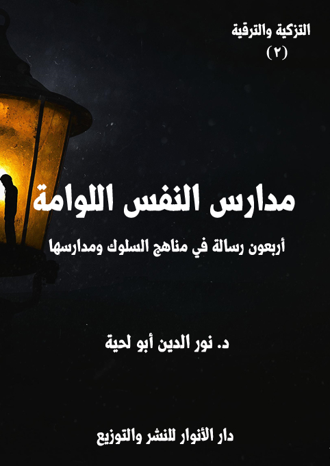

الكتاب: مدارس النفس اللوامة
الوصف: أربعون رسالة في مناهج التزكية ومدارسها
السلسلة: رسائل التزكية والترقية
المؤلف: أ.د. نور الدين أبو لحية
الناشر: دار الأنوار للنشر والتوزيع
الطبعة: الأولى، 1441 هـ
عدد الصفحات: 654
ISBN: 978-620-3-85905-8
لمطالعة الكتاب من تطبيق مؤلفاتي المجاني وهو أحسن وأيسر: هنا

التعريف بالكتاب
النفس اللوامة هي النفس التي تقع في المرتبة الثانية بعد النفس الأمارة، لتحضر صاحبها لأن تتحول نفسه إلى نفس مطمئنة..
ودورها بذلك محدود ومؤقت، ويمكن تحديده في جانبين، أو وظيفتين:
أولاهما: تزكية النفس وتهذيبها من كل مثالب النفس الأمارة، ذلك أنه لا يمكن أن تبنى الأخلاق الطيبة إلا بعد اجتثاث ما يخالفها من الأخلاق الخبيثة.
وثانيها: ترقية النفس إلى المحال التي تطمئن فيها للإيمان، لتصبح بذلك أهلا لدرجة النفس المطمئنة.
وهذان الدوران يحتاجان إلى التعرف على المناهج الصحيحة التي يمكن أن تسير بالنفس سيرا صحيحا، حتى لا ينحرف بها صاحبها في الوقت الذي يريد فيه تهذيبها والرقي بها.
ولذلك حاولنا في هذه الرسائل أن نذكر المناهج التي يمكن أن تقوم بذينك الدورين، مع بيان أدلتها الشرعية، والأخطاء التي تسربت إليها، وحالت بينها وبين أداء أدوارها الصحيحة.
مدارس النفس اللوامة (10)
النفس اللوامة هي النفس التي تقع في المرتبة الثانية بعد النفس الأمارة، لتحضر صاحبها لأن تتحول نفسه إلى نفس مطمئنة..
ودورها بذلك محدود ومؤقت، ويمكن تحديده في جانبين، أو وظيفتين:
أولاهما: تزكية النفس وتهذيبها من كل مثالب النفس الأمارة، ذلك أنه لا يمكن أن تبنى الأخلاق الطيبة إلا بعد اجتثاث ما يخالفها من الأخلاق الخبيثة.
وثانيها: ترقية النفس إلى المحال التي تطمئن فيها للإيمان، لتصبح بذلك أهلا لدرجة النفس المطمئنة.
وهذان الدوران يحتاجان إلى التعرف على المناهج الصحيحة التي يمكن أن تسير بالنفس سيرا صحيحا، حتى لا ينحرف بها صاحبها في الوقت الذي يريد فيه تهذيبها والرقي بها.
ولذلك حاولنا في هذه الرسائل أن نذكر المناهج التي يمكن أن تقوم بذينك الدورين، مع بيان أدلتها الشرعية، والأخطاء التي تسربت إليها، وحالت بينها وبين أداء أدوارها الصحيحة.
وقد حاولنا ـ مثلما فعلنا في الرسائل السابقة ـ الاهتمام بالجانب العملي، مع تأييده بما يدل عليه من التأصيل النظري.. ولذلك ذكرنا الكثير من النماذج العملية في كل رسالة، لا قصدا منا لحصرها، وإنما للدلالة عليها، وعلى مثيلاتها.
ومثلما فعلنا في الرسائل السابقة من تأييد ما نذكره من مناهج بالنصوص المقدسة؛ فقد فعلنا ذلك معتمدين على القرآن الكريم أولا باعتباره المصدر الأكبر للتزكية.
ثم نتبعه بما ورد في السنة المطهرة، ومثلها عن أئمة الهدى، من المصادر المختلفة
مدارس النفس اللوامة (11)
بحسب المنهج الذي نتبناه في صحة الأحاديث أو قبولها، وهو موافقتها للقرآن الكريم والقيم التي جاءت بها الشريعة، ولذلك لا نهتم بأقوال المحدثين وأحكامهم، وخاصة مع اختلافها، وإنما نكتفي بإيراد المصادر الحديثية.
بالإضافة إلى ذلك نذكر ما قاله علماء التزكية، والمهتمون بها، من غير ذكر أسمائهم في العادة، لأنه قد يختلف في الموقف من بعضهم، وذلك ما يشغل القارئ عن الهدف من الرسائل، وهي تزكية النفس، وليس الجدل ولا الشغب.
وقد رأينا من خلال التجربة أن ذكر أسماء علماء التزكية، يثير الكثير من الحساسيات من جهات مختلفة، ذلك أنه يصرف النظر عن الأقوال إلى القائلين بها، ولذلك رأينا من الحكمة أن نذكرهم باسم الحكماء، باعتبار أن ما قالوه حكمة يمكن الاستفادة منها، والحكمة ضالة المؤمن، أين وجدها فهو أحق بها.
ومثل ذلك أعرضنا عن الخلافات الواردة في الكثير من المسائل ذلك أن القصد هو التزكية والترقية.. لا الجدل والشغب والوساوس التي يثيرها في النفس.
مع العلم أننا ـ مع تبسيطنا للمسائل المطروحة، ووضعها بشكل يفيد كل القراء بمختلف مستوياتهم ـ إلا أن معظم ما ذكر في كتب التزكية في تلك الجوانب ذكرناه، ولكن بصياغة بسيطة مهذبة، بحيث يمكن استفادة الجميع منها.. لا في التزكية العملية وحدها، وإنما في المعارف العلمية المرتبطة بها.
مدارس النفس اللوامة (12)
كتبت إلي ـ أيها المريد الصادق ـ تشكرني على رسائلي التي أجبتك فيها عن أسئلتك حول [مثالب النفس الأمارة]، وذكرت لي أنها ـ بفضل الله وعونه ـ أثرت فيك تأثيرا كبيرا؛ فصرت تعرف ما كنت تجهله من المثالب والعيوب، وتعرف منابعها وثمارها وكيفية مواجهتها وعلاجها..
وأخبرتني أن ذلك العلم لم يبق محصورا في دائرة عقلك، وإنما امتد إلى مراكز إرادتك وعزيمتك؛ فراح يدعوها لتطهير نفسك منها، وحمايتها من كل مسالك الشيطان والهوى المؤدية إليها.
وأخبرتني أن ذلك جعلك أكثر ورعا؛ فصرت تتوقف قبل عقد أي نية، أو النطق بأي قول، أو القيام بأي عمل، أو اتخاذ أي موقف، قبل أن تعرف حكم الله فيه، وعلاقته بتلك المثالب، حتى لا يكون صادرا من هواك، أو نفسك الأمارة.
وأخبرتني أنك صرت تلوم نفسك كثيرا، وتحاسبها على النقير والقطمير، وتترجى كل من شعرت أنك آذيته بأن يبرئ ذمتك، وتسارع لكل من قصرت في حقه بالوفاء بما يطلبه الواجب منك.
لكنك بعد هذا ذكرت لي أن همتك أعلى من أن تتوقف عند تطهير نفسك من خبثها ومكايد الشيطان المتربصة بها.. وأنك تطمح إلى أن تسير في طريق الأولياء والصالحين والصديقين، لتنزل المنازل التي نزلوها، وتتنزل عليك المعارف والمواهب التي تنزلت عليهم.
وطلبت مني لذلك أن أذكر لك المناهج العملية المؤدية لذلك، وأن أقتصر فيها على ما دل عليه الدليل، ووافقت عليه الشريعة، ونصت عليه النصوص المقدسة، أو أشارت
مدارس النفس اللوامة (13)
إليه.
وقد ذكرت لي أنك سترسل لي رسائل تطلب مني توضيح الطرق والمناهج المرتبطة بذلك، مثلما فعلت مع رسائلك حول مثالب النفس الأمارة.. وطلبت مني أن يتسع صدري لذلك، وألا يضيق بما قد أبديه لك من نقد أو عتاب حول ما قد تنفر نفسك منه، أو تشعر أنه يصطدم مع ما تفهمه من الشريعة ونصوصها المقدسة.
ثم ختمت رسالتك لي بطلب أن أذكر لك ما دلت عليه النصوص المقدسة من المجامع التي تجتمع فيها كل المناهج والمدارس والطرق الشرعية للسير إلى الله، حتى تكون معينة لك على فهم الطريق إجمالا، قبل معرفته تفصيلا.
وقد سرتني ـ أيها المريد الصادق ـ رسالتك كثيرا، وخاصة ما ذكرت لي فيها من عزمك على نقد ما تراه مخالفا للشريعة؛ وهذا ظني بك؛ فلا ينبغي للمريد الصادق مع الله أن يكون شيخه أولى عنده من ربه أو نبيه أو كتابه أو من جعلهم الله ممثلين للحقيقة وهداة إليها.
وجوابا لطلبك في هذه الرسالة أذكر لك أن الله تعالى ـ برحمته ولطفه ـ وفر لعباده ـ مراعاة لطبائعهم وأمزجتهم وعزائمهم ـ الكثير من المناهج والوسائل والطرق التي إن التزموها، سارت بهم إلى الله تعالى، ورفعت عن عيون قلوبهم كل الحجب التي تحول بينهم وبين الحقائق، ورفعت عن أنفسهم كل الموانع التي تحول بينها وبين إنسانيتها المكرمة، حتى قال بعضهم في ذلك: (لله طرائق بعدد أنفاس الخلائق)
ولذلك ترى السائرين إلى الله مختلفي الأذواق والأمزجة والمناهج.. ومع ذلك تجمعهم طريق الله الواحدة التي تصفي نفوسهم، وتهذب طباعهم، لتجعلها صالحة للحق، كما عبر بعض الصالحين عن ذلك، فقال:
عباراتنا شتى وحسنك واحد... وكل إلى ذاك الجمال يشير
وقال الآخر مبينا الوئام الموجود لدى السائرين في طريق الله مقارنة مع النزاع الموجود لدى المتكلمين والفلاسفة وغيرهم:
وكم بين حذّاق الجدال تنازع... وما بين عشّاق الحبيب تنازع
وعبر آخر عن ذلك بقوله: (تعدد وجوه الحسن، يقضي بتعدد الاستحسان)
بل إن رسول الله صلى الله عليه وآله وسلم أشار إلى ذلك، فقال: (يصبح على كل سُلامى من أحدكم صدقةٌ، فكل تسبيحةٍ صدقةٌ، وكل تحميدةٍ صدقةٌ، وكل تهليلةٍ صدقةٌ، وكل تكبيرةٍ صدقةٌ، وأمرٌ بالمعروف صدقةٌ، ونهيٌ عن المنكر صدقةٌ) (1)
وقال: (الإيمان بضعٌ وسبعون، أو بضعٌ وستون شعبةً: فأفضلها قول لا إله إلا الله، وأدناها إماطة الأذى عن الطريق، والحياء شعبةٌ من الإيمان) (2)
وغيرها من الأحاديث التي تدل على كثرة أبواب الخير، وأن كل من سلك بابا منها، يمكنه أن يكون وسيلته إلى الله تعالى، ووسيلته إلى تهذيب نفسه.
واعلم ـ أيها المريد الصادق ـ أن ابتغاء الوسائل المؤدية إلى تهذيب النفس وتزكيتها وترقيتها واجب شرعي لا يقل عن الصلاة والصيام والزكاة والحج وغيرها.. ذلك أن الإنسان لا يمكنه أن يتحول إلى الصيغة المراد أن يكون عليها، إلا بعد أن يقوم بذلك.
وقد صرحت النصوص المقدسة بوجوب استعمال كل الوسائل والمناهج المؤدية لذلك، كما قال تعالى: {يَا أَيُّهَا الَّذِينَ آمَنُوا اتَّقُوا الله وَابْتَغُوا إِلَيْهِ الْوَسِيلَةَ وَجَاهِدُوا فِي سَبِيلِهِ لَعَلَّكُمْ تُفْلِحُونَ} [المائدة: 35]
فقد قرن الله تعالى في هذه الآية الكريمة تقوى الله بابتغاء الوسيلة والجهاد في سبيل
__________
(1) رواه مسلم.
(2) رواه البخاري ومسلم.
مدارس النفس اللوامة (14)
الله.. ليبين أنه لا يمكن تحقيق التقوى إلا باستعمال الوسائل المؤدية لذلك، والتي قد تستدعي الكثير من المجاهدات حتى تتخلص النفس من رعونتها، وتستقيم في السير إلى ربها.
وهكذا وصف الله تعالى عباده الصالحين، وحرصهم على القرب منه، وابتغاؤهم لذلك كل الوسائل، فقال: {أُولَئِكَ الَّذِينَ يَدْعُونَ يَبْتَغُونَ إِلَى رَبِّهِمُ الْوَسِيلَةَ أَيُّهُمْ أَقْرَبُ وَيَرْجُونَ رَحْمَتَهُ وَيَخَافُونَ عَذَابَهُ إِنَّ عَذَابَ رَبِّكَ كَانَ مَحْذُورًا} [الإسراء: 57]، وهو يدل على أن وصولهم إلى تلك المراتب لم يكن إلا باستعمالهم الوسائل التي أتاحت لهم ذلك.
وهذه سنة الله تعالى في خلقه؛ فلكل شيء وسائله المؤدية إليه، ولا يمكن تحقيق المقاصد من دون الوسائل؛ فلا يمكن أن يتعلم المرء من دون القراءة، ولذلك أمرت الشريعة بالقراءة، فقد قال الله تعالى في أول ما نزل من القرآن الكريم: {اقْرَأْ بِاسْمِ رَبِّكَ الَّذِي خَلَقَ} [العلق: 1]
ولا يمكن العلاج من الأدواء من دون استعمال الأدوية، وزيارة الأطباء، وقد قال رسول الله صلى الله عليه وآله وسلم: (ما أنزل الله داء، إلا قد أنزل له شفاء، علمه من علمه، وجهله من جهله) (1)
وهكذا تطهير النفس وتزكيتها، والتي أخبر الله تعالى عن ارتباط الفلاح والفوز بها، لا يمكن تحقيقها إلا بالبحث عن الوسائل المعينة لذلك، وهو ما يشير إليه قوله تعالى: {وَنَفْسٍ وَمَا سَوَّاهَا (7) فَأَلْهَمَهَا فُجُورَهَا وَتَقْوَاهَا (8) قَدْ أَفْلَحَ مَنْ زَكَّاهَا (9) وَقَدْ خَابَ مَنْ دَسَّاهَا} [الشمس: 7 - 10]
وهذه الآيات الكريمة تدل على أن النفس طيعة لصاحبها، يمكنه أن يزكيها، كما يمكنه أن ينتكس بها وينزلها بها إلى عوالم لا تمت لها بصلة.
__________
(1) البخاري (7/ 158)، وابن ماجة (3439)
مدارس النفس اللوامة (15)
إذا عرفت هذا ـ أيها المريد الصادق ـ فاعلم أن الله تعالى ذكر المجامع التي تؤول إليها كل المناهج والمسالك، لتنضبط بها، حتى لا تصبح عرضة للوسائل التي تسنها الأمزجة والأهواء، وقد يدس فيها الشيطان ما يصرف عن الله ويبعد عنه، بدل أن يقرب إليه.
ومن تلك المجامع ما نص عليه قوله تعالى: {يَا أَيُّهَا الَّذِينَ آمَنُوا اسْتَعِينُوا بِالصَّبْرِ وَالصَّلَاةِ إِنَّ الله مَعَ الصَّابِرِينَ} [البقرة: 153] والتي وردت بعد الآيات المخبرة عن دور رسول الله صلى الله عليه وآله وسلم في تزكية أمته، وأمرها بالذكر والشكر اللذين يمثلان علامة التزكية الحقيقية، قال تعالى: {كَمَا أَرْسَلْنَا فِيكُمْ رَسُولًا مِنْكُمْ يَتْلُو عَلَيْكُمْ آيَاتِنَا وَيُزَكِّيكُمْ وَيُعَلِّمُكُمُ الْكِتَابَ وَالْحِكْمَةَ وَيُعَلِّمُكُمْ مَا لَمْ تَكُونُوا تَعْلَمُونَ (151) فَاذْكُرُونِي أَذْكُرْكُمْ وَاشْكُرُوا لِي وَلَا تَكْفُرُونِ} [البقرة: 151، 152]
ومثلها ما ورد في قوله تعالى خطابا لبني إسرائيل: {وَاسْتَعِينُوا بِالصَّبْرِ وَالصَّلَاةِ وَإِنَّهَا لَكَبِيرَةٌ إِلَّا عَلَى الْخَاشِعِينَ} [البقرة: 45]، وقد وردت كذلك في معرض بيان التكاليف الشرعية المؤدية للتزكية، قال تعالى: {وَلَا تَلْبِسُوا الْحَقَّ بِالْبَاطِلِ وَتَكْتُمُوا الْحَقَّ وَأَنْتُمْ تَعْلَمُونَ (42) وَأَقِيمُوا الصَّلَاةَ وَآتُوا الزَّكَاةَ وَارْكَعُوا مَعَ الرَّاكِعِينَ (43) أَتَأْمُرُونَ النَّاسَ بِالْبِرِّ وَتَنْسَوْنَ أَنْفُسَكُمْ وَأَنْتُمْ تَتْلُونَ الْكِتَابَ أَفَلَا تَعْقِلُونَ} [البقرة: 42 - 44]
وبذلك؛ فإن الآيتين الكريمتين تصفان المجامع الكبرى التي يمكن اعتبارها البحر الذي تجتمع فيه روافد السير والسلوك إلى الله.. أو تنطلق منه.
وقد تأملت ـ أيها المريد الصادق ـ في كل المسالك والمناهج التي اعتبرها السائرون إلى الله، أو قاموا بتنفيذها على أنفسهم، أو على مريديهم، فوجدتها جميعا تنطلق من هاتين الآيتين الكريمتين.. ووجدت مقابل ذلك أن كل البدع والانحرافات التي انحرفت بسير السائرين كان سببها اختلافها مع ما ورد في الآيتين الكريمتين من منهج الاستعانة على النفس.
مدارس النفس اللوامة (16)
ولذلك يمكن اعتبار جميع المناهج الشرعية للسير إلى الله مظاهر وتجليات للصلاة والصبر.. وكل منهج خالفهما، يكون منهجا مبتدعا، لأنه خالف الأصول التي أمر الله تعالى بالاستعانة بها.
وبذلك ـ أيضا ـ يمكن اعتبار الصلاة والصبر المدرستين أو الجامعتين اللتين تدرب المنتمين إليها على كل مقررات السير والسلوك..
وذلك لا يعني حرفية الصبر والصلاة في الآيتين الكريمتين، بحيث تختصر مناهج السير فيهما؛ فهذا لا يتوافق مع القرآن الكريم نفسه، ذلك أن الله تعالى اعتبر كثيرا من الأعمال الشرعية من مناهج السير إلى الله، كما قال في جميع الشعائر التعبدية: {يَا أَيُّهَا النَّاسُ اعْبُدُوا رَبَّكُمُ الَّذِي خَلَقَكُمْ وَالَّذِينَ مِنْ قَبْلِكُمْ لَعَلَّكُمْ تَتَّقُونَ} [البقرة: 21]
وضرب المثل لذلك بالصيام، فقال: {يَا أَيُّهَا الَّذِينَ آمَنُوا كُتِبَ عَلَيْكُمُ الصِّيَامُ كَمَا كُتِبَ عَلَى الَّذِينَ مِنْ قَبْلِكُمْ لَعَلَّكُمْ تَتَّقُونَ} [البقرة: 183]
وغيرها من الآيات الكريمة، ومثلها من الأحاديث والروايات التي تدل على أن كل أعمال الخير ليست سوى وسائل للتربية والتهذيب والتزكية والترقية.
ولذلك فإن المراد بالاستعانة بالصبر والصلاة أشمل من أن تختصر في المعنى الحرفي لهما، بل هما يدلان على الأصول المرتبطة بمناهج السير إلى الله، وهما أصلان:
الأول: المجاهدات والرياضات التي تحتاج إلى الصبر، حتى تُهذب النفس، وتبتعد عن رعونتها، وتتحلى بالقيم التي تجعلها أهلا للقرب الإلهي.. ولذلك قدم الله تعالى الصبر على الصلاة.. لأن الصلاة الحقيقية لا تكون إلا بعد تهذيب النفس وتربيتها..
والغرض الأكبر من هذه المجاهدات هو تحقيق القيم الأخلاقية في النفس، حتى تتأدب مع الله ومع أوليائه وخلقه، لتكون أهلا لتنزل الفضل الإلهي.
مدارس النفس اللوامة (17)
الثاني: الصلاة، وتعني كل الوسائل المؤدية إلى الصلة بالله، من إقامة الصلاة والذكر والدعاء والمناجاة والتضرع والابتهال والتدبر والتفكر والتأمل وغيرها، وجميعها تؤدي إلى تزكية الروح لتصبح أهلا للمحبة والأنس والتوكل وجميع المنازل التي تنزلها النفس المطمئنة، وتصبح مع ذلك أهلا لتنزل المعارف والمواهب الإلهية.
وكلا الأمرين يحتاج بعضهما إلى بعض؛ فالصبر ومناهجه لا يمكن أن يتم من دون استعمال الصلاة ومناهجها.. ومثل ذلك الصلاة لا يمكن أن تؤتي مفعولها ما لم يصحبها الصبر.
وبناء على هذا يمكنك ـ أيها المريد الصادق ـ أن تنظر في كل مناهج السير إلى الله، والتي تراها في الواقع، لترى مدى قربها من هذين الأصلين اللذين دل عليهما القرآن الكريم؛ فإن كانا متوافقين معهما؛ فهما شرعيان، وإلا كانا من المناهج المبتدعة.
ومن الأمثلة على ذلك ما يطلق عليه [الخلوة]، والتي يعتمدها بعض السائرين إلى الله؛ فهي إن كانت خلوة وتفرغا للذكر والتقرب إلى الله، ومن غير انقطاع كلي عن الخلق، أو التقصير في أداء التكاليف الشرعية؛ فهي خلوة مشروعة، ذلك أنها مرتبطة بالصلاة، لأنها تحوي ذكر لله، وتحاول التواصل معه، وهي مرتبطة بالصبر لأن فيها مجاهدة للنفس على التفرغ لذلك.
وهكذا يمكنك ـ أيها المريد الصادق ـ أن تسأل عن أي منهج تراه في واقع السالكين، لترى من خلاله مدى صلته بالمنهجين اللذين نص عليهما القرآن الكريم، واعتبرهما من المناهج الكبرى التي لا يمكن أن يقوم بها إلا الخاشعون الصادقون.
وبما أن هذين المنهجين هما قادة المناهج، فسأذكر لك بعض ما ورد حولهما في النصوص المقدسة مما يبين فضلهما، وأهميتهما في السير والسلوك.
مدارس النفس اللوامة (18)
أما المدرسة الأولى ـ أيها المريد الصادق ـ فهي مدرسة الصبر، وقد أشار القرآن الكريم إلى أهميتها وضرورتها للسائرين إلى الله؛ فقال: {يَا أَيُّهَا الَّذِينَ آمَنُوا اصْبِرُوا وَصَابِرُوا وَرَابِطُوا وَاتَّقُوا الله لَعَلَّكُمْ تُفْلِحُونَ} [آل عمران: 200]، فقد ربط الله تعالى الفلاح بالصبر والمصابرة والمرابطة، وهو لا يعني الفوز بالجنة فقط، وإنما يعني تهذيب النفس وتطهيرها وتطييبها، لأنه لا يدخل الجنة إلا الطيبون الطاهرون.
وهي تشير إلى استعمال كل أنواع الصبر، وفي كل المجالات، ولو تكلفا، وهي تحوي في معناها الكثير من المناهج التي مارسها السالكون إلى الله، كالمشارطة والمعاهدة والمرابطة والمجاهدة والمحاسبة والمعاقبة وغيرها.
ولذلك أخبر الله تعالى أن من صفات الصالحين من عباده [الصبر]، وهو يدل على أنه ركن في شخصيتهم، وأنه لولاه لم يتحقق لهم الصلاح، بل إن الله تعالى أكد ذلك بكونه السبب في صلاحهم، فقال ـ عند ذكر سبب اختياره لأئمة الهدى ـ: {وَجَعَلْنَا مِنْهُمْ أَئِمَّةً يَهْدُونَ بِأَمْرِنَا لَمَّا صَبَرُوا وَكَانُوا بِآيَاتِنَا يُوقِنُونَ} [السجدة: 24]،وتقديمه للصبر على اليقين دليل على أن اليقين الذي هو أعلى مراتب المعرفة لا يصل إليه إلا الصابرون الذين جاهدوا أنفسهم في الله.
وهكذا وصف الله تعالى الرسل عليهم السلام بالصبر، فقال: {فَاصْبِرْ كَمَا صَبَرَ أُولُو الْعَزْمِ مِنَ الرُّسُلِ وَلَا تَسْتَعْجِلْ لَهُمْ} [الأحقاف: 35]
وأخبر أن كل الأعمال الصالحة تحتاج إلى الصبر، سواء في أدائها، أو في الاستمرار عليها، أو في إقامتها وفق الرضى الإلهي.
ومن ذلك الإحسان الذي هو من المنازل العظمى للنفس المطمئنة، فقد قرنه الله تعالى
مدارس النفس اللوامة (19)
بالصبر، فقال: {وَاصْبِرْ فَإِنَّ الله لَا يُضِيعُ أَجْرَ الْمُحْسِنِينَ} [هود: 115]، وقال: {إِنَّهُ مَنْ يَتَّقِ وَيَصْبِرْ فَإِنَّ الله لَا يُضِيعُ أَجْرَ الْمُحْسِنِينَ} [يوسف: 90]
وسر ذلك واضح، ذلك أن المحسن الذي يتقن عمله، ويؤديه وفق ما يتطلبه، يحتاج إلى صبر كبير، بخلاف الذي يؤدي عمله من غير مراعاة الإتقان.
وهكذا يقترن الصبر بالتوكل، كما في قوله تعالى: {الَّذِينَ صَبَرُوا وَعَلَى رَبِّهِمْ يَتَوَكَّلُونَ} [النحل: 42]، وقال عن الرسل وخطابهم لقومهم: {وَمَا لَنَا أَلَّا نَتَوَكَّلَ عَلَى الله وَقَدْ هَدَانَا سُبُلَنَا وَلَنَصْبِرَنَّ عَلَى مَا آذَيْتُمُونَا وَعَلَى الله فَلْيَتَوَكَّلِ الْمُتَوَكِّلُونَ} [إبراهيم: 12]
وسر ذلك واضح، ذلك أن المتوكل الذي أسند أموره لله ثقة به، وبقدرته المطلقة، لا يستعجل النصر، ولا يتألم إذا لم يهزم أعداؤه أمامه، لأنه يعلم أن تحديد آجال ذلك لله تعالى، بخلاف الذي يفتقد الصبر، والذي ينهار في أقرب فرصة.
وهكذا يقترن الصبر بالصدق والثبات والجهاد وغيرها من صفات الصالحين، كما قال تعالى: {ثُمَّ إِنَّ رَبَّكَ لِلَّذِينَ هَاجَرُوا مِنْ بَعْدِ مَا فُتِنُوا ثُمَّ جَاهَدُوا وَصَبَرُوا إِنَّ رَبَّكَ مِنْ بَعْدِهَا لَغَفُورٌ رَحِيمٌ} [النحل: 110]
وأخبر عن قول السحرة لفرعون: {وَمَا تَنْقِمُ مِنَّا إِلَّا أَنْ آمَنَّا بِآيَاتِ رَبِّنَا لَمَّا جَاءَتْنَا رَبَّنَا أَفْرِغْ عَلَيْنَا صَبْرًا وَتَوَفَّنَا مُسْلِمِينَ} [الأعراف: 126]
وأخبر عن قول موسى عليه السلام لقومه: {اسْتَعِينُوا بِالله وَاصْبِرُوا إِنَّ الْأَرْضَ لله يُورِثُهَا مَنْ يَشَاءُ مِنْ عِبَادِهِ وَالْعَاقِبَةُ لِلْمُتَّقِينَ} [الأعراف: 128]
وأخبر عن الاختبارات التي أجراها طالوت للذين أرادوا صحبته للجهاد في سبيل الله، ثم بين أنه لم ينجح منهم إلا من كان متسلحا بسلاح الصبر، قال تعالى: {قَالَ الَّذِينَ يَظُنُّونَ أَنَّهُمْ مُلَاقُو الله كَمْ مِنْ فِئَةٍ قَلِيلَةٍ غَلَبَتْ فِئَةً كَثِيرَةً بِإِذْنِ الله وَالله مَعَ الصَّابِرِينَ (249)
مدارس النفس اللوامة (20)
وَلَمَّا بَرَزُوا لِجَالُوتَ وَجُنُودِهِ قَالُوا رَبَّنَا أَفْرِغْ عَلَيْنَا صَبْرًا وَثَبِّتْ أَقْدَامَنَا وَانْصُرْنَا عَلَى الْقَوْمِ الْكَافِرِينَ} [البقرة: 249، 250]
وقد أخذ الكثير من السائرين في طريق الله بمنهج طالوت في تربية جنده، عندما أمرهم بالصبر أمام الماء، كما قال تعالى: {فَلَمَّا فَصَلَ طَالُوتُ بِالْجُنُودِ قَالَ إِنَّ الله مُبْتَلِيكُمْ بِنَهَرٍ فَمَنْ شَرِبَ مِنْهُ فَلَيْسَ مِنِّي وَمَنْ لَمْ يَطْعَمْهُ فَإِنَّهُ مِنِّي إِلَّا مَنِ اغْتَرَفَ غُرْفَةً بِيَدِهِ فَشَرِبُوا مِنْهُ إِلَّا قَلِيلًا مِنْهُمْ} [البقرة: 249]
فلذلك راحوا يستعملون أنواع المجاهدات التي تتيح لهم تربية أنفسهم على الأخلاق الطيبة، التي لا يمكن التحقق بها من دونها، بل إنهم راحوا يضعون أنواع العقوبات التي ترتبط بالتقصير، حتى يكون ذلك العقاب الدنيوي المحدود رادعا لهم عن العقاب الأخروي.
وهكذا أخبر الله تعالى عن علاقة الصبر بمواجهة كل مثالب النفس الأمارة المرتبطة بالعدوان، وتحقيقها بالسماحة والحلم والعفو والكرم، كما قال تعالى: {وَلَا تَسْتَوِي الْحَسَنَةُ وَلَا السَّيِّئَةُ ادْفَعْ بِالَّتِي هِيَ أَحْسَنُ فَإِذَا الَّذِي بَيْنَكَ وَبَيْنَهُ عَدَاوَةٌ كَأَنَّهُ وَلِيٌّ حَمِيمٌ (34) وَمَا يُلَقَّاهَا إِلَّا الَّذِينَ صَبَرُوا وَمَا يُلَقَّاهَا إِلَّا ذُو حَظٍّ عَظِيمٍ} [فصلت: 34، 35]، وقال: {وَلَمَنْ صَبَرَ وَغَفَرَ إِنَّ ذَلِكَ لَمِنْ عَزْمِ الْأُمُورِ} [الشورى: 43]
وأخبر عن علاقة الصبر بالتقوى التي تجتمع عندها كل المكارم، فقال: {بَلَى إِنْ تَصْبِرُوا وَتَتَّقُوا وَيَأْتُوكُمْ مِنْ فَوْرِهِمْ هَذَا يُمْدِدْكُمْ رَبُّكُمْ بِخَمْسَةِ آلَافٍ مِنَ الْمَلَائِكَةِ مُسَوِّمِينَ} [آل عمران: 125]
وفي هذه الآية الكريمة إشارة إلى أن المواهب الإلهية التي تتنزل على النفوس المرضية مرتبطة بمدى صبرهم، فقد شرط الله تعالى تنزل المدد الإلهي على المؤمنين بالصبر والتقوى.
مدارس النفس اللوامة (21)
ومثل ذلك أخبر عن أنواع كثيرة من الفضل، لم يكن لها من سبب سوى الصبر، كما قال تعالى: {وَتَمَّتْ كَلِمَتُ رَبِّكَ الْحُسْنَى عَلَى بَنِي إِسْرَائِيلَ بِمَا صَبَرُوا} [الأعراف: 137]، وقال: {وَاصْبِرُوا إِنَّ الله مَعَ الصَّابِرِينَ} [الأنفال: 46]، وقال: {إِلَّا الَّذِينَ صَبَرُوا وَعَمِلُوا الصَّالِحَاتِ أُولَئِكَ لَهُمْ مَغْفِرَةٌ وَأَجْرٌ كَبِيرٌ} [هود: 11]
وغيرها من الآيات الكريمة التي تخبر عن الجزاء العظيم الذي يناله الصابرون، مثل قوله تعالى: {وَلَنَجْزِيَنَّ الَّذِينَ صَبَرُوا أَجْرَهُمْ بِأَحْسَنِ مَا كَانُوا يَعْمَلُونَ} [النحل: 96]، وقال: {أُولَئِكَ يُجْزَوْنَ الْغُرْفَةَ بِمَا صَبَرُوا وَيُلَقَّوْنَ فِيهَا تَحِيَّةً وَسَلَامًا (75) خَالِدِينَ فِيهَا حَسُنَتْ مُسْتَقَرًّا وَمُقَامًا} [الفرقان: 75، 76]، وقال: {أُولَئِكَ يُؤْتَوْنَ أَجْرَهُمْ مَرَّتَيْنِ بِمَا صَبَرُوا} [القصص: 54]، وقال: {وَجَزَاهُمْ بِمَا صَبَرُوا جَنَّةً وَحَرِيرًا (12) مُتَّكِئِينَ فِيهَا عَلَى الْأَرَائِكِ لَا يَرَوْنَ فِيهَا شَمْسًا وَلَا زَمْهَرِيرًا} [الإنسان: 12، 13]، وقال ذاكرا خطاب الملائكة عليهم السلام لهم: {سَلَامٌ عَلَيْكُمْ بِمَا صَبَرْتُمْ فَنِعْمَ عُقْبَى الدَّارِ} [الرعد: 24]
ومثلها ما ورد في الأحاديث الشريفة كقوله صلى الله عليه وآله وسلم: (الصبر ثلاثة: صبر عند المصيبة، وصبر على الطاعة، وصبر عن المعصية، فمن صبر على المصيبة حتّى يردّها بحسن عزائها، كتب الله له ثلاثمائة درجة، ما بين الدرجة إلى الدرجة كما بين السماء إلى الأرض. ومن صبر على الطاعة كتب الله له ستّمائة درجة، ما بين الدرجة إلى الدرجة كما بين تخوم الأرض إلى العرش، ومن صبر عن المعصية كتب الله له تسعمائة درجة ما بين الدرجة إلى الدرجة كما بين تخوم الأرض إلى منتهى العرش) (1)
وكل هذه النصوص المقدسة وغيرها تشير إلى كون الصبر دعامة أساسية للتقوى، وأن التحقق به يجعل من صاحبه مستعدا لنيل كل الكمالات، ولذلك ذكر الله تعالى أن
__________
(1) الكافي ج 2 ص 75.
مدارس النفس اللوامة (22)
الأجور المعدة للذين أدمنوا على الصبر، وأتقنوا التعامل معه، من دون حساب، قال تعالى: {إِنَّمَا يُوَفَّى الصَّابِرُونَ أَجْرَهُمْ بِغَيْرِ حِسَابٍ} [الزمر: 10]
قد تسألني ـ أيها المريد الصادق ـ بعد هذا عن سر كل هذا الفضل الذي توفر للصبر، وجعله دعامة من دعامات التربية والإصلاح، وجوابا على ذلك أذكر لك أن الصبر هو تلك الملكة الشريفة التي تجعل النفس ثابتة أمام الأهواء؛ فلا تستسلم لها، ولا تذعن لمقتضياتها.. وتجعلها ثابتة أمام المصائب والبلاء؛ فلا تجزع ولا تيأس ولا تقنط.. وتجعلها ثابتة عند التعرض للجهلة؛ فلا تكتفي بكظم غيظها عنهم، وإنما تحلم عليهم، وتعفو عنهم وتحسن إليهم.. وتجعلها ثابتة عند ملاقاة الأعداء، فلا تجبن، ولا يصيبها الخور، ولا تولي الدبر، بل تواجههم بكل شجاعة وقوة وثبات.. وتجعلها ثابتة عند عروض الشهوات؛ فتعف عنها، ولا تستسلم لها، ولا تركن إليها..
وهكذا يمكنك ـ أيها المريد الصادق ـ أن تجد الصبر عنصرا أساسيا في كل عمل صالح، وافتقاده يؤدي إلى كل المثالب التي حذرتنا منها النصوص المقدسة، والتي تحطم الإنسان، وتنتكس به وبطبيعته.
ولهذا عرف الحكماء الصبر بأنه (ثبات باعث الدين في مقابلة باعث الهوى)، وهم يقصدون بباعث الدين الفطرة الأصيلة التي تريد الأهواء الانحراف بها، والتي جاءت الشريعة الحكيمة للتحذير منها، وبيان الصفات الحقيقية للإنسان، لا الصفات التي يريدها الشيطان والأهواء.
وأما باعث الهوى؛ فهو كل المصادر التي تريد أن تنتكس بالإنسان عن حقيقته، سواء كانت داخلية كغلبة الشهوة والغضب، أو خارجية كوساوس شياطين الإنس والمجتمع.
ولكون الحرب بين هذين الباعثين دائمة مستمرة؛ فإن الصبر هو المدد الذي يظل
مدارس النفس اللوامة (23)
الإنسان محتاجا إليه كل حين إلى أن يلقى ربه، كما قال تعالى: {يَا أَيُّهَا الَّذِينَ آمَنُوا اتَّقُوا الله حَقَّ تُقَاتِهِ وَلَا تَمُوتُنَّ إِلَّا وَأَنْتُمْ مُسْلِمُونَ} [آل عمران: 102]، وهو معنى المرابطة في الصبر الوارد في الآية التي تأمر بالصبر بكل أنواعه.
وسبب الحاجة إلى المرابطة في الصبر هو أن الشياطين تظل مناصرة لباعث الهوى، والذي قد ينتصر على باعث الدين إن افتقد للصبر والعزيمة عليه.
وكما أن الثبات في المعارك مختلف الدرجات؛ فكذلك الصابرون؛ درجاتهم مختلفة بحسب ثبات باعث الدين فيهم، كما عبر بعضهم عن ذلك عند حديثه عن الموقف من الصبر عند الشدائد، فقال: (أهل الصبر على ثلاث مقامات: الأول: ترك الشكوى، وهذه درجة التائبين، الثاني: الرضا بالمقدر، وهذه درجة الزاهدين، الثالث: المحبة لما يصنع به مولاه، وهذه درجة الصديقين)
وروي أن الإمام الباقر قال لجابر، وقد رآه مريضا: كيف تجد حالك؟ قال جابر: أنا في حال الفقر أحب إليّ من الغنى، والمرض أحب اليّ من الصحة، والموت أحب إلي من الحياة. فقال له الامام: (أما نحن أهل البيت، فما يرد علينا من الله من الفقر والغنى والمرض والصحة والموت والحياة، فهو أحب إلينا) (1)
وهكذا يمكنك أن تجد في كل عمل المراتب المختلفة، والتي تدل على درجة صبر صاحبها؛ فبقدر صبره بقدر مرتبته ودرجته.
أما المدرسة الثانية ـ أيها المريد الصادق ـ فهي مدرسة الصلاة، وقد أشار القرآن الكريم إلى أهميتها وضرورتها في السير إلى الله؛ فقال: {وَأَقِمِ الصَّلاةَ إِنَّ الصَّلاةَ تَنْهَى عَنِ
__________
(1) جامع السعادات، ج 3، ص: 285.
مدارس النفس اللوامة (24)
الْفَحْشَاءِ وَالْمُنْكَرِ} (العنكبوت:45)
وهي تشير إلى أن من أدوار الصلاة الكبرى التي شرعت من أجلها الدور التطهيري، بنهيها صاحبها عن الفحشاء والمنكر، ومثل ذلك ما ورد في تهذيب نفس المداوم عليها، كما قال تعالى: {إِنَّ الْإِنْسَانَ خُلِقَ هَلُوعًا (19) إِذَا مَسَّهُ الشَّرُّ جَزُوعًا (20) وَإِذَا مَسَّهُ الْخَيْرُ مَنُوعًا (21) إِلَّا الْمُصَلِّينَ (22) الَّذِينَ هُمْ عَلَى صَلَاتِهِمْ دَائِمُونَ} [المعارج: 19 - 23]
ولهذا ورد في الأحاديث الكثيرة ما يبين دور الصلاة في تطهير الإنسان من الرذائل، والتي قد يكنى عنها بالسيئات والخطايا، ففي الحديث عن رسول الله صلى الله عليه وآله وسلم أنه قال مخاطبا أصحابه: (أرأيتم لو أن نهرا بباب أحدكم يغتسل فيه كل يوم خمسا ما تقول ذلك يبقي من درنه؟)، قالوا: لا يبقي من درنه شيئا، قال: (فذلك مثل الصلوات الخمس، يمحو الله بها الخطايا) (1)
فهذا الحديث لا يشير فقط إلى تطهير سجل المؤمن من السيئات، وإنما يشير إلى تطهير نفسه منها أيضا، وذلك بحسب تعامله معها، وحرصه عليها، وخشوعه فيها.. فهي مثل العلاج الذي يقضي على كل الأمراض مهما كانت مستفحلة، لكن بشرط أدائه في وقته، ومع الحمية المناسبة له.
ولا أرى ـ أيها المريد الصادق ـ أي داع لذلك الخلاف الذي انتشر بين الفقهاء حول نوع الخطايا التي تكفرها الصلاة، وهل هي الكبائر أم الصغائر، ذلك أن قوة الصلاة في محو الخطايا تخلف باختلاف اهتمام صاحبها بها، وهي في ذلك تشبه تركيز الدواء، فقد يكون الدواء خفيفا للدرجة لا يمكنه أن يحدث أي تغيير، وقد يتوهم صاحب الدواء أنه يستعمله، لكنه لا يفعل ذلك، وقد تكون قوية شديدة الفاعلية والتأثير، بحيث تغير صاحبها تغييرا
__________
(1) البخاري- الفتح 2 (528) ومسلم (667)
مدارس النفس اللوامة (25)
كليا، كما ورد في بعض الآثار: (إنّ الرجلين ليقومان إلى الصلاة وركوعهما وسجودهما واحد، وإنّ ما بين صلاتيهما ما بين السماء والأرض)
وقد روي عن الإمام الصادق أنه قال: (و الله إنّه ليأتي على الرجل خمسون سنة ما قبل الله منه صلاة واحدة، فأيّ شي ء أشدّ من هذا، والله إنّكم لتعرفون من جيرانكم وأصحابكم من لو كان يصلّي لبعضكم ما قبلها منه لاستخفافه بها، إنّ الله لا يقبل إلّا الحسن فكيف يقبل ما استخفّ به) (1))
ولهذا ورد في الحديث عن عمار بن ياسر أنه صلى صلاة فأخفها، فقيل له: خففت يا أبا اليقظان فقال: هل رأيتموني نقصت من حدودها شيئا؟ قالوا: لا قال: إني بادرت سهو الشيطان، إن رسول الله صلى الله عليه وآله وسلم قال: (إن العبد ليصلي الصلاة لا يكتب له نصفها، ولا ثلثها ولا ربعها ولا خمسها ولا سدسها ولا عشرها)، وكان يقول: (إنما يكتب للعبد من صلاته ما عقل منها) (2)
وروي أنه بينما كان رسول الله صلى الله عليه وآله وسلم جالسا في المسجد إذ دخل رجل فقام فصلّى فلم يتمّ ركوعه ولا سجوده، فقال صلى الله عليه وآله وسلم: (نقر كنقر الغراب، لئن مات هذا وهكذا صلاته ليموتنّ على غير ديني) (3)
لذلك كانت الصلاة مفتقرة للصبر، لأنها لا يمكن أن تؤدي دورها في التهذيب والإصلاح والتزكية ما لم يجاهد صاحبها نفسه على الخشوع والخضوع وحضور القلب، والتمعن في أسرار كل حركة يتحركها أو قول يقوله أو إشارة يشير بها.
ذلك أن الصلاة ـ أيها المريد الصادق ـ ليست شعيرة تعبدية واحدة، بل هي مجمع من
__________
(1) التهذيب ج 1 ص 204.
(2) أحمد وأبو داود والنسائي.
(3) الكافي ج 3 ص 268، والتهذيب ج 1 ص 204.
مدارس النفس اللوامة (26)
الشعائر التعبدية؛ فكل ركن من أركانها مدرسة قائمة بذاتها، لها دورها في التهذيب والتصفية، كما أن لها دورها في العروج والترقي، ولذلك اعتبرها رسول الله صلى الله عليه وآله وسلم عمود الإسلام، ففي الحديث قال رسول الله صلى الله عليه وآله وسلم: قال: (رأس الأمر الإسلام، وعموده الصّلاة، وذروة سنامه الجهاد) (1)
وقد قرن رسول الله صلى الله عليه وآله وسلم في هذا الحديث بين الصلاة والجهاد، لاحتياج بعضها لبعض؛ فالصلاة الحقيقية تستدعي المجاهدة والرياضة وحضور القلب، والجهاد الحقيقي يحتاج التواصل الدائم مع الله، حتى يتحقق الثبات والسكينة والقدرة على المواجهة.
هذا جوابي المختصر على أسئلتك ـ أيها المريد الصادق ـ وأحسب أن فيها ما طلبته من مجامع المناهج والمدارس التربوية، ويمكنك أن ترسل لي ما تشاء من أسئلة حول تفاصيل ما شرحته لك.
ذلك أن كلا من الصبر والصلاة يتضمنان الكثير من المناهج.. فهناك مناهج مرتبطة بالصبر وحده.. وهناك مناهج مرتبطة بالصلاة وحدها.. وهناك مناهج مرتبطة بهما جميعا.. وبهذه المناهج جميعا تتحقق النفس بطيبتها، لتتحول من نفس أمارة أو لوامة إلى نفس مطمئنة راضية مرضية.
__________
(1) الترمذي (2616) وابن ماجة (3973) وأحمد (5/ 231، 237، 245)
مدارس النفس اللوامة (27)
كتبت إلي ـ أيها المريد الصادق ـ تخبرني عن فهمك العام لمناهج السير والسلوك إلى الله تعالى من خلال قوله تعالى: {وَاسْتَعِينُوا بِالصَّبْرِ وَالصَّلَاةِ وَإِنَّهَا لَكَبِيرَةٌ إِلَّا عَلَى الْخَاشِعِينَ} [البقرة: 45]، واستيعابها لكل فروع المناهج ومدارسها مع كثرتها.
وقد طلبت مني أن أفصل لك الحديث في النية باعتبارها أول ركن من أركان الصلاة، وكيف يمكن أن تتحول إلى مدرسة تربوية، تهذب النفس وتزكيها، وتعرج بها وترقيها، وعن علاقة ذلك بالصبر والمصابرة والمجاهدة.
وجوابا على سؤالك الوجيه أذكر لك أن النية ليست مجرد ركن من أركان الصلاة، أو ركن من أركان أي عمل صالح، بل هي في حد ذاتها مدرسة للتزكية؛ فلا يمكن أن تنطلق التزكية ولا التربية ولا الترقية من دون أن تتوفر النية الداعية لذلك كله.
ذلك أنها الواسطة بين العلم والعمل، (إذ ما لم يعلم أمر لم يقصد، وما لم يقصد لم يفعل، فالعلم مقدم على النية وشرطها، والعمل ثمرتها وفرعها، إذ كل فعل وعمل يصدر عن فاعل مختار، فإنه لا يتم إلا بعلم وشوق وإرادة وقدرة) (1)
ولذلك كان الاهتمام بها وبتصحيحها أولى من كل الأعمال؛ فرب أعمال كثيرة، وجهود عظيمة، تفتقر إلى النية الصالحة الخالصة؛ فتتحول إلى هباء منثور لا يغني صاحبها شيئا، كما قال تعالى: {وَقَدِمْنَا إِلَى مَا عَمِلُوا مِنْ عَمَلٍ فَجَعَلْنَاهُ هَبَاءً مَنْثُورًا} [الفرقان: 23]
بل إنها قد تنتقل من الطاعة إلى المعصية، وينتقل الجزاء المرتبط بها من سجل الحسنات إلى سجل السيئات، وينتقل محل صاحبها من الجنة إلى النار، مع أن العمل واحد، لكن الدافع الذي دفع إليه هو الذي تسبب في ذلك التحول العظيم العميق.
__________
(1) جامع السعادات، ج 3، ص: 108.
مدارس النفس اللوامة (28)
ولهذا أخبر رسول الله صلى الله عليه وآله وسلم أن (الأعمال بالنيات، وإنما لكل امرئ ما نوى، فمن كانت هجرته إلى الله ورسوله فهجرته إلى الله ورسوله، ومن كانت هجرته لدنيا يصيبها، أو امرأةٍ ينكحها فهجرته إلى ما هاجر إليه) (1)
وذكر الإمام الصادق سر خلود أهل الجنة والنار في المنازل التي أعدت لهما، وعلاقة ذلك بالنية، فقال: (إنّما خلّد أهل النار في النار لأنّ نيّاتهم كانت في الدّنيا أن لو خلّدوا فيها أن يعصوا الله تعالى أبدا، وإنّما خلّد أهل الجنّة في الجنّة لأنّ نيّاتهم كانت في الدّنيا أن لو بقوا فيها أن يطيعوا الله أبدا؛ فبالنيّات خلّد هؤلاء وهؤلاء ثمّ تلا قوله تعالى: {قُلْ كُلٌّ يَعْمَلُ عَلَى شَاكِلَتِهِ} [الإسراء: 84]، يعني على نيّته) (2)
بل ورد في الحديث أن مراتب الناس في الآخرة، لا تتحدد بالأعمال فقط، وإنما بالنيات أيضا، فقد قال رسول الله صلى الله عليه وآله وسلم: (إنّما الدّنيا لأربعة نفر، عبد رزقه الله مالا وعلما فهو يتّقي فيه ربّه، ويصل فيه رحمه، ويعلم لله فيه حقّا، فهذا بأفضل المنازل، وعبد رزقه الله علما ولم يرزقه مالا، فهو صادق النّيّة. يقول: لو أنّ لي مالا لعملت بعمل فلان فهو نيّته، فأجرهما سواء، وعبد رزقه الله مالا ولم يرزقه علما، فهو يخبط في ماله بغير علم لا يتّقي فيه ربّه، ولا يصل فيه رحمه، ولا يعلم لله فيه حقّا، فهذا بأخبث المنازل، وعبد لم يرزقه الله مالا ولا علما، فهو يقول: لو أنّ لي مالا لعملت فيه بعمل فلان، فهو نيّته، فوزرهما سواء) (3)
وقد روي في أخبار الأنبياء عليهم السلام أنّ رجلا مرّ بكثبان رمل في مجاعة فقال في نفسه، وهو صادق في قوله: (لو كان هذا الرّمل طعاما لقسّمته بين الناس)، فأوحى الله تعالى إلى نبيّهم أن قل له: (إنّ الله قد قبل صدقتك وشكر حسن نيّتك وأعطاك ثواب ما لو كان
__________
(1) رواه البخاري ومسلم.
(2) الكافي ج 2 ص 85.
(3) الترمذي (2325) وقال: هذا حديث حسن صحيح.
مدارس النفس اللوامة (29)
طعاما فتصدّقت به)
فهذا الرجل، وأولئك النفر الذين ذكر رسول الله صلى الله عليه وآله وسلم نالوا أجورهم وطهروا نفوسهم من غير أعمال عملوها، إلا النية الصالحة الصادقة، التي نظر الله إليها، وأعطاهم جزاءها.
وسر ذلك يعود إلى أن النية هي روح العمل، والمقصد الأول منه، كما قال الله تعالى في الأضاحي والهدي: {لَنْ يَنَالَ الله لُحُومُهَا وَلَا دِمَاؤُهَا وَلَكِنْ يَنَالُهُ التَّقْوَى مِنْكُمْ} [الحج: 37]
ولذلك كان سبب نجاح إبراهيم عليه السلام في الامتحان الذي امتحن فيه نيته الصادقة الخالصة لله، ولذلك بمجرد أن نجح في ذلك الاختبار الصعب، نهي عن تطبيقه عمليا؛ قال تعالى: {فَلَمَّا أَسْلَمَا وَتَلَّهُ لِلْجَبِينِ (103) وَنَادَيْنَاهُ أَنْ يَاإِبْرَاهِيمُ (104) قَدْ صَدَّقْتَ الرُّؤْيَا إِنَّا كَذَلِكَ نَجْزِي الْمُحْسِنِينَ (105) إِنَّ هَذَا لَهُوَ الْبَلَاءُ الْمُبِينُ (106) وَفَدَيْنَاهُ بِذِبْحٍ عَظِيمٍ} [الصافات: 103 - 107]
ولهذا ورد في النصوص المقدسة ما يدل على خسران أولئك الذين راعوا الأعمال وكثرتها، ولم يراعوا النيات وصدقها، فقد ورد في الحديث عن رسول الله صلى الله عليه وآله وسلم أنه قال: (إنّ العبد ليعمل أعمالا حسنة فتصعد بها الملائكة في صحف مختتمة فتلقى بين يدي الله عزّ وجلّ فيقول: ألقوا هذه الصحيفة فإنّه لم يرد بما فيها وجهي، ثمّ ينادي الملائكة اكتبوا له كذا وكذا فتقولون يا ربّنا إنّه لم يعمل شيئا من ذلك، فيقول: إنّه نواه إنّه نواه) (1)
وهكذا في الجهاد، والذي يمثل أشق الأعمال، وأكثرها بذلا وتضحية، ومع ذلك، فإن جزاءه بقدر النية فيه، فقد ينال أجور المجاهدين من لم يبذل أي جهد سوى نيته الطيبة الصالحة الصادقة، كما روي في الحديث أن النبيّ صلى الله عليه وآله وسلم قال في غزوة تبوك: (إن بالمدينة لقوما ما
__________
(1) رواه الدارقطني.
مدارس النفس اللوامة (30)
سرتم مسيرا، ولا قطعتم واديا، إلا كانوا معكم فيه)، قالوا: يا رسول الله، وهم بالمدينة؟ قال: (وهم بالمدينة حبسهم العذر) (1)
وهؤلاء الصادقون الذين ظفروا بنيات المجاهدين، ولو لم يحضروا معهم هم الذين أشار إليهم قوله تعالى: {لَيْسَ عَلَى الضُّعَفَاءِ وَلَا عَلَى الْمَرْضَى وَلَا عَلَى الَّذِينَ لَا يَجِدُونَ مَا يُنْفِقُونَ حَرَجٌ إِذَا نَصَحُوا لله وَرَسُولِهِ مَا عَلَى الْمُحْسِنِينَ مِنْ سَبِيلٍ وَالله غَفُورٌ رَحِيمٌ (91) وَلَا عَلَى الَّذِينَ إِذَا مَا أَتَوْكَ لِتَحْمِلَهُمْ قُلْتَ لَا أَجِدُ مَا أَحْمِلُكُمْ عَلَيْهِ تَوَلَّوْا وَأَعْيُنُهُمْ تَفِيضُ مِنَ الدَّمْعِ حَزَنًا أَلَّا يَجِدُوا مَا يُنْفِقُونَ} [التوبة: 91، 92]
في نفس الوقت الذي قال فيه صلى الله عليه وآله وسلم: (من غزا وهو لا ينوي إلّا عقالا فله ما نوى) (2)، وقال بعض أصحاب رسول الله صلى الله عليه وآله وسلم: (استعنت برجل ليغزو معي، فقال: لا حتّى تجعل لي جعلا فجعلت له، فذكرت ذلك للنبيّ صلى الله عليه وآله وسلم فقال: (ليس له من دنياه وآخرته إلّا ما جعلت له) (3)
وروي أن رجلا قتل في بعض المعارك، وكان يظن أنه قتل في سبيل الله، لكنه عرفوا أنه قتل في سبيل الحمار، حتى صار يدعى [قتيل الحمار] لأنّه قاتل رجلا ليأخذ سلبه وحماره فقتل على ذلك (4).
ولهذا ورد في الأحاديث والآثار ما يدل على أن النية خير من العمل (5)، فقد روي
__________
(1) البخاري (2838) و(2839)، و(4423)، وابن أبي عاصم في الجهاد (264)، وأبو يعلى (3839)
(2) النسائي في السنن ج 6 ص 24.
(3) الطبراني في مسند الشاميين.
(4) رواه أبو إسحاق الفراوي مرسلا في السنن.
(5) من المعاني التي فسر بها الحديث: أن المؤمن بمقتضى إيمانه ينوي خيرات كثيرة لا يوفق لعملها، إما لعدم تمكنه من الوصول إلى أسبابها، أو لعدم مساعدة الوقت على عملها، أو لممانعة رذيلة نفسانية عنها بعد الوصول إلى أسبابها، كالذي ينوي إن آتاه الله ما لا ينفقه في سبيله، ثم لما آتاه يمنعه البخل عن الإنفاق، فهذا نيته خير من عمله، وأيضا المؤمن ينوي دائما أن تقع عباداته على أحسن الوجوه، لأن ايمانه يقتضي ذلك. ثم إذا اشتغل بها لا يتيسر له ذلك. ولا يأتي بها كما يريد، فما ينويه دائما خير مما يعمل به في كل عبادة، وإلى هذا أشار الإمام الباقر بقوله: (نية المؤمن خير من عمله، وذلك لأنه ينوي الخير ما لا يدركه، ونية الكافر شرّ من عمله، وذلك لأن الكافر ينوي الشر ويأمل من الشر ما لا يدركه)، وبه فسر كذلك قول الإمام الصادق الذي ذكرناه. [انظر: جامع السعادات، ج 3، ص: 121]
مدارس النفس اللوامة (31)
عن رسول الله صلى الله عليه وآله وسلم أنه قال: (نية المؤمن خير من عمله، وعمل المنافق خير من نيته، وكل يعمل على نيته؛ فإذا عمل المؤمن عملا ثار في قلبه نور) (1)
وقد سئل الإمام الصادق عن معناها، فقال: (لأنّ العمل ربما كان رياء للمخلوقين، والنيّة خالصة لربّ العالمين، فيعطي عزّ وجلّ على النيّة ما لا يعطي على العمل) (2)
ومما يروى في هذا أن بعض المريدين كان يطوف على العلماء، ويقول: (من يدلني على عمل لا أزال فيه عاملا لله تعالى؛ فإني لا أحب أن تأتي علي ساعة من ليل أو نهار إلا وأنا عامل من عمال الله تعالى)، فقال له بعض الحكماء: (أنت قد وجدت حاجتك، فاعمل الخير ما استطعت، فإذا فترت أو تركته فهم بعمله، إذ من هم بعمل الخير كمن يعمل به)
إذا عرفت هذا ـ أيها المريد الصادق ـ فاعلم أن أول ما على السائر في طريق الله أن يتدرب عليه، تصحيح نيته، وتنميتها وإصلاحها؛ فلا يمكن أن يطهر نفسه من دون ذلك.
ذلك أن النية هي التي تحدد أهداف الأعمال وغاياتها، وهي التي تحميها من كل وساوس الشيطان التي تعرض لها، وهي التي تدفع إلى الإتقان والإحسان، وتحمي العمل من كل الثغرات التي قد تعرض له.
أعلم ـ أيها المريد الصادق ـ أنك ستذكر لي أن النية ليست من قبيل الأعمال الاختيارية التي يمكن لصاحبها أن يتحكم في فعلها أو عدم فعلها، بل هي من الأعمال الوجدانية التي لا يستطيع أن يتحكم فيها؛ فلذلك لا يمكن للجائع أن يقول شبعت، ولا للكسول أن
__________
(1) الطبراني في معجمه الكبير (6/ 185) وأبو نعيم في الحلية (3/ 255)، الكافي ج 2 ص 69 ح 2.
(2) علل الشرائع: 1/ 524.
مدارس النفس اللوامة (32)
يكتفي بقوله قمت..
وجوابا على سؤالك أذكر لك أن النية ـ وإن كانت من الأعمال الوجدانية ـ إلا أنه يمكن توجيهها ببعض المعارف والعلوم والتدريبات والمجاهدات إلى أن يصبح في الإمكان التحكم فيها.
وسر تلك المعارف والتدريبات يعود إلى أن النية، باعتبارها الباعث الذي يبعث على العمل، يرجع لأهواء النفس؛ فإن كان هوى النفس في السمعة والشهرة والجاه العريض، وهي شهوات النفس الأمارة، كانت النية رياء محضا، ولم يكن فيها أدنى صدق أو إخلاص..
وإن كان صاحبها يحمل مع تلك النية بعض الإيمان باليوم الآخر، والجزاء المعد على الأعمال الصالحة فيها، تكون نيته مشوبة بين تحقيق غرضه الدنيوي، وغرضه الأخروي.
وإن كان صاحبها صاحب نفس مطمئنة، متجرد الهوى للآخرة، لا يطلب غيرها، ولا يطلب غير وجه ربه؛ فإن عمله سيكون خالصا لله تعالى، وبحسب درجة إخلاصه تكون مرتبة عمله.
ولذلك كان الطريق إلى تصحيح النية، وتحقيق الإخلاص فيها، تنمية البواعث الإيمانية حتى تتجرد النفس لها، وتتخلص من كل الشوائب التي تفسد أعمالها.
ولهذا ورد في النصوص المقدسة ما ينمي تلك البواعث الطيبة، ويحققها في النفس لتتجرد للحق، ويخلص عملها من كل الشوائب التي تكدره.
وبناء على طلبك ـ أيها المريد الصادق ـ في شرح كيفية التحقق بالنية الصالحة أذكر لك البواعث التي يمكنك بالتأمل فيها ـ قبل القيام بأي عمل ـ أن تجرد نيتك من كل ما يفسدها، لتتعلم الإخلاص والصدق من خلالها.
مدارس النفس اللوامة (33)
وقبل أن أذكر لك ذلك، أضرب لك مثالا يقرب لك الحقيقة، فالأمثال جند الله التي تُوضح بها الحقائق، وتقرب بها المعاني.
وينطلق هذا المثال من حقيقة الدنيا، وكونها سوقا للأعمال، كما قال تعالى: {إِنَّ الَّذِينَ يَتْلُونَ كِتَابَ الله وَأَقَامُوا الصَّلَاةَ وَأَنْفَقُوا مِمَّا رَزَقْنَاهُمْ سِرًّا وَعَلَانِيَةً يَرْجُونَ تِجَارَةً لَنْ تَبُورَ (29) لِيُوَفِّيَهُمْ أُجُورَهُمْ وَيَزِيدَهُمْ مِنْ فَضْلِهِ إِنَّهُ غَفُورٌ شَكُورٌ} [فاطر: 29، 30]
ولذلك توهم نفسك ـ أيها المريد الصادق ـ في سوق عظمية قد اجتمع فيها المخلصون والمراؤون:
أما المخلصون؛ فلا يبيعون أعمالهم إلا لمن يدفع لهم أضعاف الأجور التي يستحقونها، ثم لا يكتفون بذلك، بل يضيفون إليها كل ألوان التكريم والثناء والشكر.. في نفس الوقت الذي يكون فيه أولئك التجار الذي اشتروا منهم بضاعتهم ممتلئين بكل أنواع الكرم والسماحة واللطف، ويعدونهم بكل ألوان الإكرام في حال زيارتهم لهم.
أما المراؤون؛ فيبيعون أعمالهم للعوام والدهماء البسطاء الذين لا يغنون عنهم شيئا، في نفس الوقت الذي يكتفون فيه من أجورهم بنظرة استحسان يلقونها، ثم ينصرفون عنهم، وكأنهم لم يقدموا لهم شيئا.
فهذا المثال ـ أيها المريد الصادق ـ يقرب لك حال المخلصين والمرائين في سوق التجارة الذي أقامه الله لعباده؛ وهي لا تمثل الحقيقة، ولا ما هو أدنى منها، ذلك أن الأجور التي يلقاها المخلصون لا يمكن وصفها، والحسرة والندامة والآلام التي تعتري المرائين لا يمكن تحديدها، لأنها ليست مرتبطة بالدنيا فقط، وإنما تظل تبعاتهم تلحقهم في كل المحال في الدنيا والآخرة.
وخلاصة البواعث الطيبة التي تحول النية من الفساد إلى الصلاح يمكن اختصارها
مدارس النفس اللوامة (34)
في باعثين، كلاهما وردت به النصوص المقدسة، أحدهما يتعلق بتحصين الأعمال حتى لا يدب فيروس الرياء، فيفسدها، وثانيهما، تحصيل الأجور ومضاعفتها باستعمال إكسير النية الخالصة.
فأول ما ينفرك عن النية السيئة، ويدفعك إلى النية الخالصة ـ أيها المريد الصادق ـ علمك بأن كل أعمالك الصالحة محفوظة في صندوق النية، فإن كانت لله، حفظت، ولم تمسها يد اللصوص، ولقيت أجورها كاملة يوم القيامة، أو قد تعجل لك بعض أجورها في الدنيا شكرا من الله تعالى.
وإن أنت لم تحفظها، ورحت تسارع إلى إظهارها والفرح بذلك، لتنال حظوظك الدنيوية بسببها من الشهرة والصيت والسمعة، وما قد يتبعها من المال والثراء؛ فإنك بذلك تكون قد بعتها أو عرضتها للصوص في الدنيا، ولن تجد لها أي جزاء في الآخرة، بل قد تجد العقوبة على استعمالك الدين في طلب الدنيا، وتوسلك بالخالق في طلب الخلق.
وقد أشار إلى هذا المعنى قوله تعالى في الحديث القدسي: (أنا أغنى الشّركاء عن الشّرك، من عمل عملا أشرك فيه معي غيري تركته وشركه) (1)
وروي عن الإمام الصادق أنّه قال لعبّاد بن كثير البصريّ: (ويلك يا عبّاد إيّاك والرّياء؛ فإنّه من عمل لغير الله وكله الله إلى من عمل له) (2)، وقال: (كلّ رياء شرك، إنّه من عمل للناس كان ثوابه على الناس ومن عمل لله كان ثوابه على الله) (3)
__________
(1) مسلم (2985)
(2) الكافي، ج 2 ص 293.
(3) الكافي، ج 2 ص 293.
مدارس النفس اللوامة (35)
وقال في قوله تعالى: {فَمَنْ كَانَ يَرْجُو لِقَاءَ رَبِّهِ فَلْيَعْمَلْ عَمَلًا صَالِحًا وَلَا يُشْرِكْ بِعِبَادَةِ رَبِّهِ أَحَدًا} [الكهف: 110]: (الرّجل يعمل شيئا من الثواب لا يطلب به وجه الله إنّما يطلب تزكية الناس يشتهي أن يسمّع به الناس فهذا الّذي أشرك بعبادة ربّه)، ثمّ قال: (ما من عبد أسرّ خيرا فذهبت الأيّام أبدا حتّى يظهر الله له خيرا، وما من عبد يسرّ شرّا فذهبت الأيّام أبدا حتّى يظهر الله له شرّا) (1)
وما ذكره الإمام الصادق يشير إلى أن من العقوبات التي يسلطها الله على المرائين أن يسلب منهم ذلك الفرح الهزيل البسيط الذي باعوا به رضوان الله؛ فسيتبدل به ألما وحزنا في الدنيا قبل الآخرة، ذلك أن أولئك الذين قصدوهم بالأعمال سيرتدون عليهم، ويتحولون من حبهم إلى بغضهم، ومثل ذلك في الآخرة، كما قال تعالى: {الْأَخِلَّاءُ يَوْمَئِذٍ بَعْضُهُمْ لِبَعْضٍ عَدُوٌّ إِلَّا الْمُتَّقِينَ} [الزخرف: 67]
ومما يروى في هذا أن بعضهم رؤي في المنام فقيل له: كيف وجدت أعمالك؟ فقال: (كل شيء عملته لله وجدته، حتى حبة رمان لقطتها من طريق، وحتى هرة ماتت لنا رأيتها في كفة الحسنات، وكان في قلنسوتي خيط من حرير فرأيته في كفة السيئات، وكان قد نفق حمار لي قيمته مائة دينار فما رأيت له ثوابا، فقلت: موت سنور في كفة الحسنات، وموت حمار ليس فيها! فقيل لي: إنه قد وجه حيث بعثت به، فإنه لما قيل لك قد مات، قلت: في لعنة الله، فبطل أجرك فيه، ولو قلت: في سبيل الله، لوجدته في حسناتك، وكنت قد تصدقت بصدقة بين الناس فأعجبني نظرهم إلي، فوجدت ذلك لا علي ولا لي)
والتحصين المرتبط بالعمل ـ أيها المريد الصادق ـ لا يرتبط بحفظ أجوره فقط، بل يتعلق بكل جوانبه، حتى ذلك المدد الإلهي الذي يمد الله به عباده، متوقف على نياتهم
__________
(1) الكافي، ج 2 ص 293.
مدارس النفس اللوامة (36)
وصدقهم وإخلاصهم؛ فإن كانوا صادقين مع الله ظل المدد ساريا فيهم من حيث يشعرون أو لا يشعرون، وإن زال صدقهم أو اختلط بغيره رفع عنهم المدد.
وقد روي في هذا أنّ عابدا كان يعبد الله دهرا طويلا، فجاءه قوم فقالوا: إن ها هنا قوما يعبدون شجرة من دون الله تعالى، فغضب لذلك، وأخذ فأسه على عاتقه، وقصد الشجرة ليقطعها. فاستقبله إبليس في صورة شيخ فقال: أين تريد رحمك الله؟ قال: أريد أن أقطع هذه الشجرة. قال: وما أنت وذاك؟ تركت عبادتك واشتغالك بنفسك وتفرعت لغير ذلك. فقال: إن هذا من عبادتي. قال: فإني لا أتركك أن تقطعها. فقاتله، فأخذه العابد فطرحه إلى الأرض، وقعد على صدره. فقال له إبليس: أطلقني حتى أكلمك، فقام عنه، فقال له إبليس: يا هذا إن الله قد أسقط عنك هذا ولم يفرضه عليك، وما تعبدها أنت، وما عليك من غيرك ولله تعالى أنبياء في أقاليم الأرض، ولو شاء لبعثهم إلى أهلها، وأمرهم بقطعها. فقال العابد: لا بد لي من قطعها. فنابذه للقتال. فغلبه العابد وصرعه، وقعد على صدره، فعجز إبليس، فقال له: هل لك في أمر فصل بيني وبينك، وهو خير لك وأنفع؟ قال العابد: وما هو؟ قال: أطلقني حتى أقول لك. فأطلقه، فقال إبليس: أنت رجل فقير لا شيء لك، إنما أنت كل الناس يعولونك، ولعلك تحب أن تتفضل على إخوانك، وتواسي جيرانك، وتشبع وتستغني عن الناس. قال: نعم. قال: فارجع عن هذا الأمر، ولك علي أن أجعل عند رأسك في كل ليلة دينارين، إذا أصبحت أخذتهما فأنفقت على نفسك وعيالك، وتصدقت على إخوانك، فيكون ذلك أنفع لك وللمسلمين من قطع هذه الشجرة التي يغرس مكانها، ولا يضرهم قطعها شيئا، ولا ينفع إخوانك المؤمنين قطعك إياها. فتفكر العابد فيما قال، وقال: صدق الشيخ، لست بنبي فيلزمني قطع هذه الشجرة ولا أمرني الله أن أقطعها فأكون عاصيا بتركها، وما ذكره أكثر منفعة. فعاهده على الوفاء بذلك، وحلف
مدارس النفس اللوامة (37)
له. فرجع العابد إلى متعبده فبات، فلما أصبح رأى دينارين عند رأسه، فأخذهما، وكذلك الغد، ثم أصبح اليوم الثالث وما بعده فلم ير شيئا، فغضب وأخذ فأسه على عاتقه، فاستقبله إبليس في صورة شيخ فقال له: إلى أين؟ قال: أقطع تلك الشجرة. فقال: كذبت والله، ما أنت بقادر على ذلك، ولا سبيل لك إليها، فتناوله العابد ليفعل به كما فعل أول مرة، فقال: هيهات، فأخذه إبليس وصرعه، فإذا هو كالعصفور بين رجليه، وقعد إبليس على صدره وقال: لتنتهين عن هذا الأمر أو لأذبحنك. فنظر العابد، فإذا لا طاقة له به، قال: يا هذا غلبتني فخل عني، وأخبرني كيف غلبتك أولا وغلبتني الآن؟ فقال: لأنك غضبت أول مرة لله، وكانت نيتك الآخرة، فسخرني الله لك. وهذه المرة غضبت لنفسك وللدنيا، فصرعتك (1).
فتأمل ـ أيها المريد الصادق ـ في هذه الحكاية، ولا يهمك أن تكون صحيحة ثابتة أو ملفقة مزورة، فالحقائق كلها تدل عليها، ولذلك احرص على إخلاص النية، ولو في العمل القليل؛ فذلك أجدى لك، وأكثر بركة من العمل الكثير الذي يخلو من الإخلاص، ويخلو معه من المدد الإلهي.
لا يقتصر النية الخالصة على تحصين الأعمال وحفظها من أن تدب إليها الأهواء، فتفسدها، وإنما لها دور كبير في تحصيل الأجور ومضاعفتها، حتى أنها تحول المباحات إلى طاعات، وبذلك يمكن أن يصبح نومك وأكلك وشربك وكل تصرفاتك التي ترغب فيها نفسك إلى طاعة لله تعالى إذا ما تعلمت كيف تؤدي حق النية الصالحة فيها.
وذلك لا يعني ـ أيها المريد الصادق ـ ما قد يتبادر إلى الذهن من خلو الأجور من
__________
(1) المحجة البيضاء في تهذيب الإحياء، ج 8، ص: 127.
مدارس النفس اللوامة (38)
التأثير في النفس وتطهيرها وترقيتها، وارتباطها فقط بالجزاء الأخروي، فذلك غير صحيح، فلكل حسنة تجليات مختلفة منها ما يظهر في الآخرة بصورة النعيم المقيم، ومنها ما يظهر في الدنيا بصورة الطهارة والطيبة التي تمتلئ بها النفس حتى تصبح حياتها كلها بالله ولله، كما قال تعالى: {قُلْ إِنَّ صَلَاتِي وَنُسُكِي وَمَحْيَايَ وَمَمَاتِي لله رَبِّ الْعَالَمِينَ (162) لَا شَرِيكَ لَهُ وَبِذَلِكَ أُمِرْتُ وَأَنَا أَوَّلُ الْمُسْلِمِينَ} [الأنعام: 162، 163]
ولهذا أوصى رسول الله صلى الله عليه وآله وسلم بالاستفادة من هذه الهدية الإلهية التي ننال بها الأجور من غير تعب ولا مشقة، فقال ـ في وصيته لأبي ذر ـ: (يا أبا ذرّ، ليكن لك في كلّ شيء نيّة، حتّى في النوم والأكل) (1)
ولذلك كان الصالحون يتوقفون قبل القيام بأي عمل انتظارا للنية الصالحة فيه، حتى يكون قربة لهم عند الله تعالى، وقد روي عن بعضهم أنه إذا سئل عن أي عمل من أعمال البر يقول: (إن رزقني الله تعالى نية فعلت)
وقد ضرب بعض الحكماء على إمكانية مضاعفة الأجور بتكثير النيات الصالحة بالقعود في المسجد، والتي يمكنها أن تحوله من مجرد قعود لا يُقصد به سوى الراحة إلى قعود تنال به الأجور العظيمة، فذكر منها أن يعتقد أنه قاعد ببيت الله، وأن داخله زائر الله، فيقصد به زيارة مولاه، رجاء لما وعده به رسول الله صلى الله عليه وآله وسلم في قوله: (من قعد في المسجد فقد زار الله تعالى، وحق على المزور إكرام زائره) (2)
ومنها أن ينوي انتظار الصلاة بعد الصلاة، فيكون في جملة انتظاره في الصلاة، كما قال صلى الله عليه وآله وسلم: (ألا أدلّكم على ما يمحو الله به الخطايا، ويرفع به الدّرجات؟) قالوا: بلى يا رسول الله!. قال: (إسباغ الوضوء على المكاره، وكثرة الخطا إلى المساجد، وانتظار الصّلاة بعد
__________
(1) الوسائل، ج 1 ص 48 ح 8.
(2) ابن حبان في الضعفاء، وللبيهقي في الشعب نحوه.
مدارس النفس اللوامة (39)
الصّلاة. فذلكم الرّباط) (1)
ومنها أن ينوي التفرغ للتأمل والتفكر والتدبر، وقد ورد في الحديث عن رسول الله صلى الله عليه وآله وسلم أنه قال: (تفكر ساعة خير من قيام ليلة) (2)، وقال: (تفكر ساعة خير من عبادة ستين سنة) (3)
ومنها نية التجرد لذكر الله أو لاستماع ذكره، وللتذكر به، أو يقصد إفادة العلم بأمر بمعروف ونهي عن منكر، أو يستفيد أخا في الله.. وغيرها كثير.
وقد أشار الإمام علي إلى كل ذلك وغيره، فقال: (من اختلف إلى المسجد أصاب إحدى الثمان: أخا مستفادا في الله، أو علما مستطرفا، أو آية محكمة، أو يسمع كلمة تدلّه على هدى، أو كلمة تردّه عن ردى، أو رحمة منتظرة، أو يترك ذنبا خشية أو حياء) (4)
وهكذا يمكن أن تتحول المباحات إلى طاعات بالنية الطيبة، ومن الأمثلة التي ذكرها بعض الحكماء على ذلك التعطر والتطيب، والذي هو حظ من حظوظ النفس، فقد قال: (اعلم أن من يتطيب مثلا يوم الجمعة، وفي سائر الأوقات، يتصور أن يقصد التنعم بلذات الدنيا، أو يقصد به إظهار التفاخر بكثرة المال ليحسده الأقران، أو يقصد به رياء الخلق ليقوم له الجاه في قلوبهم ويذكر بطيب الرائحة، أو ليتودد به إلى قلوب النساء الأجنبيات إذا كان مستحلا للنظر إليهن، ولأمور أخر لا تحصى.. وكل هذا يجعل التطيب معصية، فبذلك يكون أنتن من الجيفة في القيامة، إلا القصد الأول وهو التلذذ والتنعم، فإن ذلك ليس بمعصية، إلا أنه يسأل عنه. ومن نوقش الحساب عذب، ومن أتى شيئا من مباح الدنيا لم
__________
(1) مسلم (251)
(2) أبو الشيخ في العظمة.
(3) أبو الشيخ في العظمة.
(4) التهذيب ج 1 ص 324.
مدارس النفس اللوامة (40)
يعذب عليه في الآخرة، ولكن ينقص من نعيم الآخرة له بقدره، وناهيك خسرانا بأن يستعجل ما يفنى، ويخسر زيادة نعيم لا يفنى) (1)
ثم ذكر بعض النيات الحسنة التي يمكن أن تحول من ذلك الغرض النفسي إلى طاعة، ومنها أن ينوي اتباع سنة رسول الله صلى الله عليه وآله وسلم في التعطر والتطيب، وتعظيم المسجد، إن كان عند التطيب قاصدا له، أو ترويح من يجلس إليه، أو دفع الروائح الكريهة التي تؤدى إلى إيذاء مخالطيه، حتى يحسم عن نفسه باب الغيبة عن المغتابين إذا اغتابوه بالروائح الكريهة، فيعصون الله بسببه، فمن تعرض للغيبة وهو قادر على الاحتراز منها فهو شريك في تلك المعصية.
ثم ذكر عن بعض الصالحين أنه كان يقول: (إني لأستحب أن يكون لي في كل شيء نية حتى في أكلى، وشربي، ونومى، ودخولي إلى الخلاء)
وهكذا يمكنك ـ أيها المريد الصادق ـ أن تحول من كل شيء يحصل لك في حياتك عملا صالحا، حتى لا يضيع عليك أجره.
ومن الأمثلة التي ذكرها الصالحون لذلك نية من ضاع منه شيء؛ فبدل التأسف والتحسر، يحوله إلى صدقة في سبيل الله، وبذلك ينال ثوابه.. ولو أنه اكتفى بالجزع، لم ينل إلا سيئات ذلك الجزع وآلامه.
وهكذا ينوي بالسكوت عن خصومه، وعدم الرد عليهم، نيل الأجور العظيمة التي تناله بسبب ذلك، وقد روي في الحديث عن رسول الله صلى الله عليه وآله وسلم أنه قال: (إن العبد ليحاسب فتبطل أعماله لدخول الآفة فيها حتى يستوجب النار، ثم ينشر له من الأعمال الصالحة ما يستوجب به الجنة، فيتعجب، ويقول: يا رب هذه أعمال ما عملتها قط: فيقال: هذه أعمال
__________
(1) إحياء علوم الدين، 5/ 171.
مدارس النفس اللوامة (41)
الذين اغتابوك وآذوك وظلموك) (1)
وهكذا يمكنك أن تملأ نفسك بالبواعث الطيبة على العمل الصالح، لتنال أجورها حتى لو قصرت في أدائها، وقد روي في الحديث عن رسول الله صلى الله عليه وآله وسلم أنه قال: (من جرح جرحا في سبيل الله جاء يوم القيامة لونه لون الزعفران، وريحه ريح المسك عليه طابع الشهداء، ومن سأل الله الشهادة مخلصا أعطاه الله أجر شهيد، وإن مات على فراشه ومن قاتل في سبيل الله فواق ناقة وجبت له الجنة) (2)
وعن الإمام الصادق أنه قال: (إنّ العبد لينوي من نهاره أن يصلّي بالليل فتغلبه عينه فينام، فيثبت الله له صلاته، ويكتب نفسه تسبيحا، ويجعل نومه عليه صدقة) (3)
وقال: (إنّ المؤمن ليهمّ بالحسنة ولا يعمل بها فتكتب له حسنة، وإن هو عملها كتبت له عشر حسنات، وإنّ المؤمن ليهمّ بالسيّئة أن يعملها فلا يعملها فلا تكتب عليه) (4)
بل ورد ذلك في حديث قدسي، فقد روي عن رسول الله صلى الله عليه وآله وسلم أنه قال: (إن الله عز وجل كتب الحسنات، والسيئات، ثم بين ذلك، فمن هم بحسنة فلم يعملها، كتبها الله له عنده حسنة كاملة، فإن عملها، كتبت له عشر حسنات، إلى سبع مائة ضعف، إلى أضعاف كثيرة، وإن هو هم بسيئة فلم يعملها، كتبها الله له عنده حسنة كاملة، فإن عملها كتبت له سيئة واحدة) (5)
إذا عرفت هذا ـ أيها المريد الصادق ـ فإياك أن تقيس قياس إبليس، فتتوهم أن المعصية
__________
(1) أبو منصور الديلمي في مسند الفردوس.
(2) ابن حبان (3191) و(4618)، والطبراني في الكبير، 20/ (206)، والبيهقي في السنن 9/ 170.
(3) الوسائل ج 1 ص 53 ح 15 وص 54، العلل ج 2 ص 524.
(4) الوسائل ج 1 ص 51.
(5) أحمد (5/ 384)
مدارس النفس اللوامة (42)
يمكنها أن تتحول بالنية الصالحة إلى طاعة؛ فذلك غير صحيح؛ بل إن ذلك سخرية بالشريعة ومحادة لله تعالى.
ولذلك؛ فالغيبة تظل غيبة، ولو قصدت بها تأليف قلوب الذين تجلس إليهم، وتطييب خواطرهم، ذلك أنك تطيب خواطرهم بما تسيء به إلى خواطر آخرين.. وهكذا، فإن لكل معصية من المثالب والعيوب ما لا يمكن للنية الطيبة أن تحولها إلى عمل صالح، وهي في ذلك مثل روائح المستنقعات التي لا تزيدها الأمطار إلا انتشارا وقوة.. فاحذر أن يغرك الشيطان عن نفسك، ويدخل إليك من خلال تكثير النيات أو تصحيحها إلى ما يفسدها، أو يفسد عملك كله.
واعلم ـ أيها المريد الصادق ـ أن أكبر ما يهتم له الشيطان إفساد نيتك، ولذلك يستعمل كل حيله في ذلك، ومن ذلك أن يأتي للمصلّي المخلص في صلاته؛ فيقول له: حسّن صوتك حتّى ينظر إليك هذا الحاضر بعين الوقار والصلاح ولا يزدريك ولا يغتابك (1).
فإن فطن المصلي لهذه الحيلة، وأخذ حذره منها، يقول له: أنت متبوع ومقتدى بك ومنظور إليك، وما تفعله يؤثر عنك، ويتأسّى بك غيرك؛ فيكون لك ثواب أعمالهم إن أحسنت، وعليك الوزر إن أسأت؛ فأحسن عملك بين أيديهم؛ فعساهم يقتدون بك في الخشوع وتحسين العبادة.
وهكذا يستعمل الشيطان كل أدوات الحيلة حتى يصرف المصلي عن إخلاص نيته لربه، لذلك كان حفظ الأعمال بالإخفاء والستر أجدى لها وأكثر أمنا وحيطةكأك.
ولهذا ورد في الحديث الأمر بالإتيان بالنوافل في البيت، باعتبار أن الفرائض مما يتساوى فيه الناس جميعا، ولذلك قد لا يتطرق إليها الرياء، مثلما يتطرق للنوافل.
__________
(1) انظر: المحجة البيضاء في تهذيب الإحياء، ج 8، ص: 134.
مدارس النفس اللوامة (43)
وقد ورد في الحديث عن رسول الله صلى الله عليه وآله وسلم أنه قال: (اجعلوا في بيوتكم من صلاتكم، ولا تتخذوها قبوراً) (1)
وروي أنه صلى الله عليه وآله وسلم اتخذ حجرة من حصير في رمضان فصلى فيها ليالي، فصلَّى بصلاته ناسٌ من أصحابه؛ فلما علم بهم جعل يقعد فخرج إليهم، فقال: (قد عرفت الذي رأيت من صنيعكم فصلُّوا أيها الناس في بيوتكم فإن أفضل الصلاة صلاة المرء في بيته إلا المكتوبة) (2)
بل إن الله تعالى ذكر ذلك في الصدقات؛ فقال: {نْ تُبْدُوا الصَّدَقَاتِ فَنِعِمَّا هِيَ وَإِنْ تُخْفُوهَا وَتُؤْتُوهَا الْفُقَرَاءَ فَهُوَ خَيْرٌ لَكُمْ وَيُكَفِّرُ عَنْكُمْ مِنْ سَيِّئَاتِكُمْ وَالله بِمَا تَعْمَلُونَ خَبِيرٌ} [البقرة: 271]
وفي الحديث عن رسول الله صلى الله عليه وآله وسلم أنه قال: (سبعة يظلهم الله في ظله، يوم لا ظل إلا ظله)، وذكر منهم: (رجل تصدق بصدقة فأخفاها، حتى لا تعلم شماله ما تنفق يمينه)، ومنهم الذي (ذكر الله خاليا ففاضت عيناه) (3)
وقال صلى الله عليه وآله وسلم: (صدقة السر تطفئ غضب الرب) (4)
وقد روي عن الإمام السجاد أنه كان يحمل الخبز بالليل على ظهره، يتبع به المساكين في الظلمة، ويقول: (إن الصدقة في سواد الليل تطفئ غضب الرب)، وروى بعضهم عنه قال: (كان ناس من المدينة يعيشون، لا يدرون من أين معاشهم، فلما مات علي بن الحسين، فقدوا ذلك الذي كانوا يؤتون بالليل)، وقال بعضهم: (ما فقدنا صدقة السر حتى توفي علي
__________
(1) رواه البخاري (422) ومسلم (777)
(2) رواه البخاري (698) ومسلم (781)
(3) البخاري، (1/ 440)، برقم (1423)، وصحيح مسلم، (2/ 715)، برقم (1031)
(4) المعجم الصغير، للطبراني (2/ 95)
مدارس النفس اللوامة (44)
بن الحسين) (1)
وروي عن بعض الصالحين أنه صام عشرين سنة، ولم يعلم به أهله؛ كان يأخذ غداءه ويخرج إلى السوق، فيتصدق به في الطريق، فأهل السوق يظنون أنه قد أكل في البيت، وأهل البيت يظنون أنه قد أكل في السوق.
وقال آخر يصف بعض الصالحين: (إن كان الرجل يجمع القرآن وما يشعر به الناس، وإن كان الرجل يفقه الفقه الكثير وما يشعر به الناس، وإن كان الرجل ليصلي الصلاة الطويلة في بيته، وعنده الزوار وما يشعرون به، ولقد أدركت أقواما ما كان على الأرض من عمل يقدرون أن يعملوه في السر فيكون علانية أبدا، لقد كان المسلمون يجتهدون في الدعاء وما يسمع لهم صوت، إن كان إلا همسا بينهم وبين ربهم، وذلك أن الله تعالى يقول: {ادْعُوا رَبَّكُمْ تَضَرُّعًا وَخُفْيَةً} [الأعراف: 55]) (2)
ومع ذلك كله؛ فإن إبداء الصدقات أو الأعمال الصالحة إن تجردت نية صاحبها لله تعالى، ورأى أن في إبدائها دعوة لغيره، وخاصة إن كان محل قدوة، فلا حرج في ذلك، بل قد ينال الأجر العظيم إن لم يكن ينوي بذلك إلا الدعوة إلى الله، لا الدعوة لنفسه.
وقد روي في الحديث عن بعض أصحاب رسول الله صلى الله عليه وآله وسلم أنه قال: كنا في صدر النهار عند رسول الله صلى الله عليه وآله وسلم فجاء قوم عراة مجتابي النمار ـ أي لابسيها ـ قد خرقوها في رءوسهم مقلدي السيوف، عامتهم من مضر بل كلهم من مضر فتغير وجه رسول الله صلى الله عليه وآله وسلم لما رأى ما بهم من الفاقة فدخل ثم خرج فأمر بلالا فأذن وأقام فصلى ثم خطب فقال: {يَا أَيُّهَا النَّاسُ اتَّقُوا رَبَّكُمُ الَّذِي خَلَقَكُمْ مِنْ نَفْسٍ وَاحِدَةٍ وَخَلَقَ مِنْهَا زَوْجَهَا وَبَثَّ مِنْهُمَا رِجَالاً كَثِيراً وَنِسَاءً وَاتَّقُوا الله الَّذِي تَسَاءَلُونَ بِهِ وَالْأَرْحَامَ إِنَّ الله كَانَ عَلَيْكُمْ رَقِيباً} (النساء:1)، والآية التي
__________
(1) سير أعلام النبلاء، (4/ 386)
(2) تفسير ابن كثير، (2/ 221)
مدارس النفس اللوامة (45)
في سورة الحشر: {يَا أَيُّهَا الَّذِينَ آمَنُوا اتَّقُوا الله وَلْتَنْظُرْ نَفْسٌ مَا قَدَّمَتْ لِغَدٍ وَاتَّقُوا الله إِنَّ الله خَبِيرٌ بِمَا تَعْمَلُونَ} (الحشر:18) تصدق رجل من ديناره من درهمه من ثوبه من صاع بره من صاع تمره حتى قال: ولو بشق تمرة.. فجاء رجل من الأنصار بصرة كادت كفه تعجز عنها، بل قد عجزت، ثم تتابع الناس حتى رأيت كومين من طعام وثياب حتى رأيت وجه رسول الله صلى الله عليه وآله وسلم تهلل كأنه مدهنة، فقال رسول الله صلى الله عليه وآله وسلم: (من سن في الإسلام سنة حسنة فله أجرها وأجر من عمل بها من بعده من غير أن ينقص من أجورهم شيء، ومن سن في الإسلام سنة سيئة كان عليه وزرها ووزر من عمل بها من غير أن ينقص من أوزارهم شيء) (1)
وفي حديث آخر قال صلى الله عليه وآله وسلم: (إن هذا الخير خزائن، ولتلك الخزائن مفاتيح، فطوبى لعبد جعله الله مفتاحا للخير مغلاقا للشر، وويل لعبد جعله الله مفتاحا للشر مغلاقا للخير) (2)
هذا جوابي عن سؤالك ـ أيها المريد الصادق ـ فاحرص على أن تتدبر فيما أوردته عليك من المعاني؛ فدرب نفسك عليها، واستحضرها عند كل عمل تريد القيام به، وسترى أن الله تعالى يشكر لك ذلك الاهتمام بتحصيل النية الصالحة، فينزل عليك من أنوارها ما يمتلئ له قلبك من غير عنت ولا مشقة.
فكما أن النية هي روح كل عمل، وسره، فكذلك نيتك في تحصيل النية، وحرصك على نفي الرياء، ومجاهدتك لنفسك في نهيها عن كل الشوائب التي تشوب عملك، سيكون وسيلة لك إلى الله تعالى ليهديك إليها، ويمن بها عليك.. فكل شيء بالله ومن الله وإلى الله.. والصادق هو الذي لا يعتمد على نفسه في تحقيق الهداية، وإنما يعتمد على ربه، ويتضرع إليه كل حين، لينقذه من نفسه وأهوائها، ويخلصه من كل ما يحول بينه وبينه.
__________
(1) رواه مسلم وغيره.
(2) رواه ابن ماجه وغيره.
مدارس النفس اللوامة (46)
كتبت إلي ـ أيها المريد الصادق ـ تسألني عن سر ارتباط الصلاة بالذكر، وكونه من مقاصدها العظمى، وسر تلك الأوامر القرآنية الكثيرة التي تحض على الإكثار منه، وتعتبره من صفات عباد الله المخلَصين.. وعن علاقة ذلك كله بالتزكية والترقية.
وجوابا على سؤالك الوجيه أذكر لك أن الذكر ـ بحسب ما تدل النصوص المقدسة ـ أعظم مدرسة تربوية وروحية منّ الله تعالى بها على عباده؛ فهو لا يكتفي بوصلهم بربهم فقط، وإنما يهذب نفوسهم ويربيها، ويزيل عنها كل رعوناتها وخبثها ومثالبها، ليحل بدلها كل أنواع المكارم والخلال الطيبة.
وكيف لا يكون للذكر ذلك الدور العظيم، وهو تواصل مع الله تعالى، والذاكر بمثابة الزائر لله، الذي لا يخرج من ذكره إلا بأنواع التحف الإلهية، أو هو بمثابة المريض الذي يزور الطبيب الذي يعالج من كل الأدواء؛ فلا يرجع من عنده إلا وهو معافى من كل ما يؤذيه.
وكيف لا يكون له ذلك الدور العظيم، وفيه يغيب الإنسان عن نفسه وعيوبها وأمراضها، ويتصل بربه، ليتلقى منه كل إشعاعات النور والهداية، التي تطهر أرض نفسه من كل أدناسها، لتحرره من كل قيوده التي كانت تحول بينه وبين حقيقته، وبينه وبين ربه؟
وكيف لا يكون له ذلك الدور العظيم، وهو المدرسة التي حض عليها كل الأنبياء والأولياء، ومارسها كل الصديقون، وجربها كل الصالحون، وشهد لها الجميع بأنه لا يتخرج منه إلا من نور الله قلبه بالهداية.
ولذلك كان الذكر ـ مثل النية الخالصة ـ روح الأعمال، بل لا معنى للنية بدونه، ذلك أنها في حقيقتها ليست سوى تذكر لله، وإهداء للأعمال والقربات إليه.
مدارس النفس اللوامة (47)
ومثل ذلك كل الأعمال؛ فالقصد منها جميعا التقرب إلى الله، والتعرف عليه، والتواصل معه، والتأدب بين يديه.
ودوره التربوي الإصلاحي يشبه استرخاء المريض على سرير الطبيب الحاذق ليترك له الحرية في أن يعالجه بالطريقة التي يشاء.. ولهذا كلما كان الذاكر أكثر حضورا مع ربه، وكلما أدمن ذلك الحضور، كلما تيسر له التخلص من علله.
ولذلك كان الذكر أسهل المدارس التربوية، وأكثرها ضمانا، ذلك أنه لا يتطلب الكثير من المعارف والعلوم، ولا يحتاج إلى شيء من الجدل والفلسفة، بل يكفي فيه الحضور مع الله، واستشعار وجوده وعظمته وصفاته وكماله، ليكون لكل ذلك تأثيره في الروح والنفس وكل اللطائف.
ولهذا ورد في الحديث أن رجلاً قال: يا رسول الله إن أبواب الخير كثيرة، ولا أستطيع القيام بكلها، فأخبرني بما شئت أتشبَّثُ به، ولا تكثر عليَّ فأنسى، فقال رسول الله صلى الله عليه وآله وسلم: (لا يزال لسانك رطبًا بذكر الله تعالى) (1)
وأخبر صلى الله عليه وآله وسلم عن سر ذلك التأثير الذي خص الله تعالى به الذكر، فقال: (مَثَلُ الذي يذكر ربه والذي لا يذكر ربه مَثَلُ الحيِّ والميتِ) (2)، وهو يشير إلى أن القائم بأي عمل صالح إن لم يستحضر ذكر الله فيه يكون بمثابة الآلة الجامدة التي تؤدي دورها من دون أن تستفيد منه، ولا أن تكون حاضرة فيه.
ولهذا أخبر رسول الله صلى الله عليه وآله وسلم أن قيمة كل عمل بقدر حضور العامل فيه مع ربه، وذكره له، فقد روي أنه قال مخاطبا أصحابه: (ألا أخبركم بخير أعمالكم وأزكاها عند مليككم وأرفعها في درجاتكم، وخير لكم من إنفاق الذهب والفضة، وخير لكم من أن تلقوا
__________
(1) الترمذي (3435 - تحفة)، وابن ماجه (2793)، والحاكم (1/ 495)
(2) البخاري (11/ 212 - فتح)، ومسلم (6/ 68 - نووي)
مدارس النفس اللوامة (48)
عدوكم فتضربوا أعناقهم ويضربوا أعناقكم) قالوا: بلى يا رسول الله قال: (ذكر الله) (1)
وهذا لا يعني ما يفهمه بعض المقصرين في أداء شعائر الله، والذين يتوهمون أن رسول الله صلى الله عليه وآله وسلم في هذا الحديث ينسخ كل الشريعة بالذكر، وإنما المراد منها تفضيل الذاكر على الغافل، حتى لو كان ذلك الغافل يمارس كل أنواع الخير.. أما من يذكر الله وهو يمارسها؛ فلا شك في كونه الأفضل، لجمعه بين الحسنيين: العمل الصالح، وذكر الله.
وسر ذلك ـ أيها المريد الصادق ـ يرجع إلى أن الذاكر في حال ذكره في صحبة الله تعالى ومعيته الخاصة، كما ورد ذلك في الحديث القدسي، قال رسول الله صلى الله عليه وآله وسلم: (يقول الله تبارك وتعالى: أنا عند ظن عبدي بي، وأنا معه إذا ذكرني؛ فإن ذكرني في نفسه، ذكرته في نفسي، وإن ذكرني في ملأ ذكرتُه في ملإٍ خيرٍ منهم، وإن تقرب إليَّ شبرًا تقربت إليه ذراعًا، وإن تقرَّب إليَّ ذراعًا تقرَّبْت منه باعًا، وإذا أتاني يمشي أتيتُه هَرولة) (2)
وأخبر صلى الله عليه وآله وسلم عن صحبة الذاكر للملائكة، وانتشار أنوارها إليه في حال ذكره، فقال: (لا يقعد قوم يذكرون الله عز وجل إلا حفتهم الملائكة وغشيتهم الرحمة ونزلت عليهم السكينة وذكرهم الله فيمن عنده) (3)
وهذا كله يدعم التأثير الغيبي في التزكية، وهو أهم أنواع التأثير وأسهلها، وأشملها، ذلك أن الذي يتولى تصفية النفس وتربيتها هو خالقها العالم بها.
وإلى هذا الإشارة بقوله تعالى: {هُوَ الَّذِي يُصَلِّي عَلَيْكُمْ وَمَلَائِكَتُهُ لِيُخْرِجَكُمْ مِنَ الظُّلُمَاتِ إِلَى النُّورِ وَكَانَ بِالْمُؤْمِنِينَ رَحِيمًا} [الأحزاب: 43]؛ فالله تعالى يتولى إصلاح كل من اتصل به، وملأ قلبه بالهداية.
__________
(1) الترمذي، رقم 3377 وابن ماجه، رقم 3780.
(2) البخاري (13/ 521 - فتح)، ومسلم (17/ 2 - 3 و11 و12)
(3) مسلم، برقم 2700.
مدارس النفس اللوامة (49)
ولذلك أمرنا أن ندعو الله تعالى بذلك في كل صلاة، ففي سورة الفاتحة نردد في كل ركعة: {اهْدِنَا الصِّرَاطَ الْمُسْتَقِيمَ} [الفاتحة: 6]
ولذلك كان رسول الله صلى الله عليه وآله وسلم يدعو، فيقول: (اللهمّ إنّي أعوذ بك من العجز والكسل، والجبن والبخل، والهرم وعذاب القبر. اللهمّ آت نفسي تقواها، وزكّها أنت خير من زكّاها. أنت وليّها ومولاها اللهمّ إنّي أعوذ بك من علم لا ينفع، ومن قلب لا يخشع، ومن نفس لا تشبع، ومن دعوة لا يستجاب لها) (1)، فأكثر ما ورد في هذا الدعاء مما يرتبط بإصلاح النفس وتهذيبها.
ولذلك لا تتوهم ـ أيها المريد الصادق ـ أنه لا ينال التزكية إلا العلماء الخبراء الذين فتشوا بطون الكتب، ودرسوا في الجامعات، وعند الأساتذة والمشايخ، كلا.. فالله تعالى أرحم بعوام المؤمنين من أن يحرمهم من تهذيب أنفسهم بسبب قلة علومهم، أو عدم تفرغهم.. بل هو يتولى ذلك عنهم.
ولا يشترط لذلك سوى شرط واحد، هو نفس الشرط الذي يشرط على المريض الذي استعصى داؤه.. وهو كثرة التردد على المختصين من الأطباء، واستعمال الأدوية التي ينصحون بها.
ولذلك نجد القرآن الكريم يخص الذكر وحده من بين العبادات جميعا بالدعوة إلى الإكثار منه، ذلك أن تأثيره الحقيقي يكون في ذلك الإكثار، قال تعالى: {يَا أَيُّهَا الَّذِينَ آمَنُوا اذْكُرُوا الله ذِكْرًا كَثِيرًا وَسَبِّحُوهُ بُكْرَةً وَأَصِيلًا هُوَ الَّذِي يُصَلِّي عَلَيْكُمْ وَمَلَائِكَتُهُ لِيُخْرِجَكُمْ مِنَ الظُّلُمَاتِ إِلَى النُّورِ وَكَانَ بِالْمُؤْمِنِينَ رَحِيمًا} [الأحزاب: 41]
والربط بين إخراج الله تعالى عباده من الظلمات إلى النور والذكر يدل على أنه من
__________
(1) رواه مسلم.
مدارس النفس اللوامة (50)
أعظم وسائل التزكية، ذلك أن الذنوب والمعاصي ليست سوى ظلمات تحجب قلب صاحبها عن الحقائق، وعند الذكر تنجلي تلك الظلمات، وتتوضح الحقائق من غير تكلف دليل ولا حجة.
ولهذا يخبر الله تعالى عن قلة ذكر المنافقين لله، وهو يدل على أنه السبب في إصابتهم بمرض النفاق، قال تعالى: {إِنَّ الْمُنَافِقِينَ يُخَادِعُونَ الله وَهُوَ خَادِعُهُمْ وَإِذَا قَامُوا إِلَى الصَّلَاةِ قَامُوا كُسَالَى يُرَاءُونَ النَّاسَ وَلَا يَذْكُرُونَ الله إِلَّا قَلِيلًا} [النساء: 142]
بل إن الله تعالى يذكر أن الاستفادة الحقيقية من رسول الله صلى الله عليه وآله وسلم، أو التربية على يديه، لا تكون إلا للمكثرين من ذكر الله، قال تعالى: {لَقَدْ كَانَ لَكُمْ فِي رَسُولِ الله أُسْوَةٌ حَسَنَةٌ لِمَنْ كَانَ يَرْجُو الله وَالْيَوْمَ الْآخِرَ وَذَكَرَ الله كَثِيرًا} [الأحزاب: 21]
ولهذا يعتبر الله الذكر الكثير من صفات الصالحين، قال تعالى: {إِنَّ الْمُسْلِمِينَ وَالْمُسْلِمَاتِ وَالْمُؤْمِنِينَ وَالْمُؤْمِنَاتِ وَالْقَانِتِينَ وَالْقَانِتَاتِ وَالصَّادِقِينَ وَالصَّادِقَاتِ وَالصَّابِرِينَ وَالصَّابِرَاتِ وَالْخَاشِعِينَ وَالْخَاشِعَاتِ وَالْمُتَصَدِّقِينَ وَالْمُتَصَدِّقَاتِ وَالصَّائِمِينَ وَالصَّائِمَاتِ وَالْحَافِظِينَ فُرُوجَهُمْ وَالْحَافِظَاتِ وَالذَّاكِرِينَ الله كَثِيرًا وَالذَّاكِرَاتِ أَعَدَّ الله لَهُمْ مَغْفِرَةً وَأَجْرًا عَظِيمًا} [الأحزاب: 35]
وقد روي عن الإمام الصادق أنه قال: (ما من شي ء إلّا وله حدّ ينتهي إليه إلّا الذكر، فليس له حدّ ينتهي إليه، فرض الله عزّ وجلّ الفرائض فمن أدّاهنّ فهو حدّهنّ، وشهر رمضان فمن صامه فهو حدّه، والحجّ فمن حجّ فهو حدّه إلّا الذكر فإنّ الله عزّ وجلّ لم يرض منه بالقليل ولم يجعل له حدّا ينتهي إليه، ثمّ تلا هذه الآية:: {يَا أَيُّهَا الَّذِينَ آمَنُوا اذْكُرُوا الله ذِكْرًا كَثِيرًا وَسَبِّحُوهُ بُكْرَةً وَأَصِيلًا هُوَ الَّذِي يُصَلِّي عَلَيْكُمْ وَمَلَائِكَتُهُ لِيُخْرِجَكُمْ مِنَ الظُّلُمَاتِ إِلَى النُّورِ وَكَانَ بِالْمُؤْمِنِينَ رَحِيمًا} [الأحزاب: 41]، وقال: (لم يجعل الله عزّ وجلّ له حدّا
مدارس النفس اللوامة (51)
ينتهي إليه)
ثم تحدث عن والده الإمام الباقر، فقال: (وكان أبي كثير الذكر، لقد كنت أمشي معه وإنّه ليذكر الله، وآكل معه الطعام وإنّه ليذكر الله، ولقد كان يحدّث القوم وما يشغله ذلك عن ذكر الله، وكنت أرى لسانه لازقا بحنكه يقول: (لا إله إلّا الله) وكان يجمعنا فيأمرنا بالذكر حتّى تطلع الشمس ويأمر بالقراءة من كان يقرأ منّا ومن كان لا يقرأ منّا أمره بالذكر) (1)
وقال الإمام علي: (اذكروا الله في كل مكان فإنه معكم.. أكثروا ذكر الله عزّ وجلّ إذا دخلتم الأسواق، وعند اشتغال الناس، فإنه كفارةٌ للذنوب، وزيادةٌ في الحسنات، ولا تُكتبوا في الغافلين) (2)
وقال: (أكثروا ذكر الله تعالى على الطعام ولا تطغوا، فإنها نعمةٌ من نعم الله ورزقٌ من رزقه، يجب عليكم فيه شكره وحمده) (3)
وقال: (إذا لقيتم عدوكم في الحرب فأقلّوا الكلام، وأكثروا ذكر الله عزّ وجلّ) (4)
ولهذا، فإن القرآن الكريم لا يكتفي بالدعوة إلى الإكثار من الذكر، بل إنه يحض عليه في كل الأوقات والمناسبات.. فيدعو إليه في المعارك وعند اشتدادها، قال تعالى: {يَا أَيُّهَا الَّذِينَ آمَنُوا إِذَا لَقِيتُمْ فِئَةً فَاثْبُتُوا وَاذْكُرُوا الله كَثِيرًا لَعَلَّكُمْ تُفْلِحُونَ} [الأنفال: 45]
ويدعو إلى التزامه في الصباح والمساء، قال تعالى: {فَاصْبِرْ عَلَى مَا يَقُولُونَ وَسَبِّحْ بِحَمْدِ رَبِّكَ قَبْلَ طُلُوعِ الشَّمْسِ وَقَبْلَ غُرُوبِهَا وَمِنْ آنَاءِ اللَّيْلِ فَسَبِّحْ وَأَطْرَافَ النَّهَارِ لَعَلَّكَ
__________
(1) الكافي ج 2 ص 361.
(2) الخصال 2/ 157.
(3) الخصال 2/ 158.
(4) الخصال 2/ 159.
مدارس النفس اللوامة (52)
تَرْضَى} [طه: 130]، وقال: {فَسُبْحَانَ الله حِينَ تُمْسُونَ وَحِينَ تُصْبِحُونَ وَلَهُ الْحَمْدُ فِي السَّمَاوَاتِ وَالْأَرْضِ وَعَشِيًّا وَحِينَ تُظْهِرُونَ} [الروم: 17، 18]
وفي الليل والنهار، قال تعالى: {وَهُوَ الَّذِي جَعَلَ اللَّيْلَ وَالنَّهَارَ خِلْفَةً لِمَنْ أَرَادَ أَنْ يَذَّكَّرَ أَوْ أَرَادَ شُكُورًا} [الفرقان: 62]
وعند الحج وبعده، قال تعالى: {لَيْسَ عَلَيْكُمْ جُنَاحٌ أَنْ تَبْتَغُوا فَضْلًا مِنْ رَبِّكُمْ فَإِذَا أَفَضْتُمْ مِنْ عَرَفَاتٍ فَاذْكُرُوا الله عِنْدَ الْمَشْعَرِ الْحَرَامِ وَاذْكُرُوهُ كَمَا هَدَاكُمْ وَإِنْ كُنْتُمْ مِنْ قَبْلِهِ لَمِنَ الضَّالِّينَ} [البقرة: 198]، وقال: {فَإِذَا قَضَيْتُمْ مَنَاسِكَكُمْ فَاذْكُرُوا الله كَذِكْرِكُمْ آبَاءَكُمْ أَوْ أَشَدَّ ذِكْرًا فَمِنَ النَّاسِ مَنْ يَقُولُ رَبَّنَا آتِنَا فِي الدُّنْيَا وَمَا لَهُ فِي الْآخِرَةِ مِنْ خَلَاقٍ} [البقرة: 200]، وقال: {وَاذْكُرُوا الله فِي أَيَّامٍ مَعْدُودَاتٍ فَمَنْ تَعَجَّلَ فِي يَوْمَيْنِ فَلَا إِثْمَ عَلَيْهِ وَمَنْ تَأَخَّرَ فَلَا إِثْمَ عَلَيْهِ لِمَنِ اتَّقَى وَاتَّقُوا الله وَاعْلَمُوا أَنَّكُمْ إِلَيْهِ تُحْشَرُونَ} [البقرة: 203]
وعند الصلاة وبعدها، قال تعالى: {فَإِذَا قَضَيْتُمُ الصَّلَاةَ فَاذْكُرُوا الله قِيَامًا وَقُعُودًا وَعَلَى جُنُوبِكُمْ فَإِذَا اطْمَأْنَنْتُمْ فَأَقِيمُوا الصَّلَاةَ إِنَّ الصَّلَاةَ كَانَتْ عَلَى الْمُؤْمِنِينَ كِتَابًا مَوْقُوتًا} [النساء: 103]
ويدعو إلى استعمال كل الهيئات فيه، والتي يتيسر على النفس ممارستها والدوام عليها من غير تكلف، قال تعالى: {وَاذْكُرْ رَبَّكَ فِي نَفْسِكَ تَضَرُّعًا وَخِيفَةً وَدُونَ الْجَهْرِ مِنَ الْقَوْلِ بِالْغُدُوِّ وَالْآصَالِ وَلَا تَكُنْ مِنَ الْغَافِلِينَ إِنَّ الَّذِينَ عِنْدَ رَبِّكَ لَا يَسْتَكْبِرُونَ عَنْ عِبَادَتِهِ وَيُسَبِّحُونَهُ وَلَهُ يَسْجُدُونَ} [الأعراف: 205، 206]
ولذلك يمكن للذاكر أن يذكر الله، من غير أن يحرك شفتيه، ولا أن يتعب أي جارحة من جوارحه، بل يكتفي بحضوره مع ربه، أو ترديده للأذكار في سره.
ولارتباط الذكر بالكثرة، وكون تأثيره مرتبطا بها أخبر رسول الله صلى الله عليه وآله وسلم عن تلك
مدارس النفس اللوامة (53)
الحسرات التي يجدها الإنسان عند أي ساعة لم يذكر الله تعالى فيها، فقال: (ما من ساعة تَمُرُّ بابن آدم لا يذكر الله تعالى فيها إلا تحسَّر عليها يوم القيامة) (1)
وأخبر عن الحسرة التي يجدها أولئك الذين يقضون أوقاتهم في اللهو واللعب بعيدا عن ذكر الله، قال صلى الله عليه وآله وسلم: (ما من قوم يقومون من مجلس لا يذكرون الله تعالى فيه؛ إلا قاموا عن مثل جيفة حمار، وكان عليهم حسرة) (2)، وفي رواية: (ما جلس قوم مجلسًا لم يذكروا الله فيه، ولم يصلُّوا على نبيهم إلا كان عليهم تِرَةً؛ فإن شاء عذبهم، وإن شاء غفر لهم) (3)
بل ورد في الحديث أن أهل الجنة أنفسهم يندمون على أي لحظة لم يذكروا الله فيها، قال صلى الله عليه وآله وسلم: (إنّ أهل الجنّة لا يندمون على شي ء من أمور الدنيا إلّا على ساعة مرّت بهم في الدنيا لم يذكروا الله فيها) (4)
وسر ذلك ـ كما ورد في أحاديث أخرى ـ أن نعيم الجنة يتشكل من تلك الحروف التي يذكرها الذاكرون، قال صلى الله عليه وآله وسلم: (لقيتُ ليلة أُسري بي إبراهيم الخليل عليه السلام، فقال: يا محمد! أقرئ أمتك مني السلام، وأخبرهم أن الجنة طيبة التربة، عذبة الماء، وأنها قيعانٌ، وأن غراسها: سبحان الله، والحمد لله، ولا إله إلا الله، والله أكبر) (5)
وفي حديث آخر قال صلى الله عليه وآله وسلم: (من قال: سبحان الله وبحمده؛ غُرست له نخلة في الجنة) (6)
وإياك ـ أيها المريد الصادق ـ أن تذكر لي ـ تعقيبا على هذه الأحاديث ـ ما يذكره بعضهم
__________
(1) أبو نُعيم في الحلية (5/ 361 – 362)، والبيهقي في شعب الإيمان.
(2) أبو داود (4855)، وأحمد (2/ 389 و494 و527)، والحاكم (1/ 492)
(3) الترمذي (3440 – تحفة)، وأحمد (2/ 446 و453 و481 و495)، والحاكم (1/ 496)
(4) لئالى الأخبار ج 1 ص 14
(5) الترمذي (3462) وحسنه.
(6) الترمذي (3464)
مدارس النفس اللوامة (54)
من زهده في الجنة، وأن مطلبه الله تعالى؛ فطلبك لله تعالى لا يزهدك في الجنة، بل يجعلك أكثر حرصا عليها.
فهي الدار التي يجتمع فيها الأنبياء والأولياء والمقربون والصالحون.. وتمتلئ جنباتها بالملائكة الذاكرين المسبحين.. فهل يمكن لامرئ أن يزهد في دار تمتلئ بهم، وهي سكن لهم، وهو الذي يسير في الدنيا المسافات الطويلة ليزور مشاهدهم، ويتبرك بآثارهم.. فهل يمكن لمن يتبرك بآثارهم في الدنيا، أن يزهد في الدار التي تجمعه بهم في الآخرة.
ولذلك انظر إلى الجنة بهذا الاعتبار، فهي دار الذاكرين والصالحين، وهي مسجد الله الأعظم الذي تعقد فيه كل ألوان الحلق التي يذكر فيها الله، ويتقرب فيها إليه.. فهل يمكن لأحد يدعي الزهد أن يزهد في مساجد الله، وفي صحبة أولياء الله.
بل إن الزاهد الحقيقي هو الذي لا يكتفي بجنة الآخرة، وإنما يسعى ليحول دنياه إلى جنة بعمارتها بذكر الله، فقد ورد في الحديث أن رسول الله صلى الله عليه وآله وسلم خرج على أصحابه، فقال لهم: (يا أيها الناس! ارتعوا في رياض الجنة)، فقالوا: يا رسول الله! وما رياض الجنة؟ قال: (مجالس الذكر)، ثم قال: (اغدوا وروحوا واذكروا، فمن كان يجب أن يعلم منزلته عند الله؛ فلينظر كيف منزلة الله تعالى عنده، فإن الله تعالى ينزل العبد منه حيث أنزله من نفسه) (1)
وكيف لا تكون مجالس الذكر مجالس من الجنة، وهي محفوفة بالملائكة مثل الجنة، ففي الحديث عن رسول الله صلى الله عليه وآله وسلم أنه قال: (إن لله ملائكة يطوفون في الطرق يلتمسون أهل الذكر، فإذا وجدوا قوما يذكرن الله تنادوا: هلموا إلى حاجتكم، فيحفونهم بأجنحتهم إلى السماء الدنيا) (2)
وكيف لا تكون مجالس الذكر كذلك، والإنسان في حرز من الشيطان ما دام في ذكر
__________
(1) الحاكم (1/ 671 رقم 1820)
(2) البخاري (11/ 212 – فتح)، ومسلم (17/ 14 – 15 – نووي)
مدارس النفس اللوامة (55)
الله، قال صلى الله عليه وآله وسلم: (وآمركم أن تذكروا الله تعالى؛ فإن مَثَلَ ذلك مَثَلُ رجل خرج العدو في أثره سراعًا، حتى إذا أتى إلى حصن حصين فأحرز نفسه منهم، كذلك العبد لا يحرز نفسه من الشيطان إلا بذكر الله) (1)
وهكذا يظل في حفظ الله ما دام يذكره في أي محل يحل به، قال صلى الله عليه وآله وسلم: (إذا دخل الرجل بيته فذكر الله تعالى عند دخوله، وعند طعامه، قال الشيطان: لا مبيت لكم ولا عشاء، وإذا دخل فلم يذكر الله تعالى عند دخوله، قال الشيطان: أدركتم المبيت، وإذا لم يذكر الله تعالى عند طعامه قال: أدركتم المبيت والعشاء) (2)
وقال: (من قال إذا خرج من بيته: بسم الله، توكلت على الله، لا حول ولا قوة إلا بالله، يقال له حينئذ: كفيت ووقيت وهديت، وتنحى عنه الشيطان، فيقول لشيطان آخر: كيف لك برجل قد هدي وكفي ووقي) (3)
وقال: (من قال في يوم مئة مرة: لا إله إلا الله وحده لا شريك له، له الملك وله الحمد، وهو على كل شيء قدير، كانت له حرزًا من الشيطان حتى يمسي) (4)
وهذه الأحاديث ـ أيها المريد الصادق ـ تشير إلى الدور التربوي للذكر، ذلك أن الذاكر بحضوره مع الله يفر منه الشيطان، وتتوفر له البيئة المناسبة للصلاح، ذلك أن كل الانحرافات التي يقع فيها الإنسان بذور من إلهامات الشياطين.
ولذلك كان فرار الشيطان مشابها لعزل المريض الذي أصيب بأي نوع من أنواع الجراثيم من البيئة التي تسببت له في ذلك، ووضعه في بيئة معقمة تيسر عليه الشفاء.
__________
(1) الترمذي، وقال: حديث حسن صحيح.
(2) رواه مسلم رقم 2018.
(3) الترمذي رقم 3429، وابن ماجه برقم 3886.
(4) البخاري (3293) و(6403)، ومسلم (2691)
مدارس النفس اللوامة (56)
وهكذا يمكنك أن تفهم من جميع النصوص المقدسة الواردة في فضل الذكر؛ فهي لا تتحدث عن فضل غيبي فقط، وإنما تتحدث عن دور حقيقي تكويني يقوم به في تصفية الإنسان وتطهيره وتزكيته وترقيته، كما أشار إلى ذلك قوله تعالى: {وَلَا تُطِعْ مَنْ أَغْفَلْنَا قَلْبَهُ عَنْ ذِكْرِنَا وَاتَّبَعَ هَوَاهُ وَكَانَ أَمْرُهُ فُرُطًا} [الكهف: 28]
فالآية الكريمة تربط بين الغفلة عن ذكر الله واتباع الهوى، واختلاط الأمور على صاحبها، باعتبار أن كل ما حصل له كان بسبب غفلته عن الله، كما قال تعالى: {وَلَا تَكُونُوا كَالَّذِينَ نَسُوا الله فَأَنْسَاهُمْ أَنْفُسَهُمْ أُولَئِكَ هُمُ الْفَاسِقُونَ} [الحشر: 19]، وقال عن المنافقين: {الْمُنَافِقُونَ وَالْمُنَافِقَاتُ بَعْضُهُمْ مِنْ بَعْضٍ يَأْمُرُونَ بِالْمُنْكَرِ وَيَنْهَوْنَ عَنِ الْمَعْرُوفِ وَيَقْبِضُونَ أَيْدِيَهُمْ نَسُوا الله فَنَسِيَهُمْ إِنَّ الْمُنَافِقِينَ هُمُ الْفَاسِقُونَ} [التوبة: 67]
وأخبر عن استحواذ الشيطان على الإنسان بسبب غفلته عن الله، فقال: {اسْتَحْوَذَ عَلَيْهِمُ الشَّيْطَانُ فَأَنْسَاهُمْ ذِكْرَ الله أُولَئِكَ حِزْبُ الشَّيْطَانِ أَلَا إِنَّ حِزْبَ الشَّيْطَانِ هُمُ الْخَاسِرُونَ} [المجادلة: 19]
ولهذا كانت الغفلة عن ذكر الله أعظم أسباب موت القلوب ومرضها وقسوتها، وقد روي أن الله تعالى أوحى إلى موسى عليه السّلام قوله: (يا موسى، لا تفرح بكثرة المال ولا تدع ذكري على كلّ حال، فإنّ كثرة المال تنسي الذنوب، وإنّ ترك ذكري يقسي القلوب) (1)، وفي مناجاة أخرى: (يا موسى، لا تنسني على كلّ حال، فإنّ نسياني يميت القلب)
وروي أنه سأل ربّه فقال: يا ربّ، أ قريب أنت منّي فاناجيك أم بعيد فاناديك، فأوحى الله عزّ وجلّ إليه: يا موسى، أنا جليس من ذكرني، فقال موسى: فمن في سترك يوم لا ستر إلّا سترك؟ فقال: الذين يذكرونني فأذكرهم ويتحابّون فيّ فأحبّهم، فأولئك الذين
__________
(1) الكافي ج 2 ص 360 ح 7
مدارس النفس اللوامة (57)
إذا أردت أن أصيب أهل الأرض بسوء ذكرتهم فدفعت عنهم بهم (1).
وروي أن الله تعالى أوحى إلى داود عليه السّلام: (يا داود، من أحبّ حبيبا صدّق قوله، ومن رضي بحبيب رضى بفعله، ومن وثق بحبيب اعتمد عليه، ومن اشتاق إلى حبيب جدّ في السير إليه.. يا داود، ذكري للذاكرين، وجنّتي للمطيعين، وحبّي للمشتاقين، وأنا خاصّة للمحبّين.. أهل طاعتي في ضيافتي، وأهل شكري في زيادتي، وأهل ذكري في نعمتي، وأهل معصيتي لا آيسهم من رحمتي، إن تابوا فأنا حبيبهم، وإن دعوا فأنا مجيبهم، وإن مرضوا فأنا طبيبهم، أداويهم بالمحن والمصائب، ولأطهّرهم من الذنوب والمعايب) (2)
وروي أن لقمان قال لابنه: (يا بنيّ، اختر المجالس على عينك فإن رأيت قوما يذكرون الله جلّ وعزّ فاجلس معهم، فإن تكن عالما نفعك علمك، وإن تكن جاهلا علّموك، ولعلّ الله أن يظلّهم برحمته فيعمّك معهم، وإذا رأيت قوما لا يذكرون الله فلا تجلس معهم، فإن تكن عالما لم ينفعك علمك، وإن كنت جاهلا يزيدوك جهلا، ولعلّ الله أن يظلّهم بعقوبة فيعمّك معهم) (3)
إذا عرفت هذا ـ أيها المريد الصادق ـ فاعلم أن الذكر أعظم من أن يختصر فيما اصطلح عليه لقب [الأذكار]، مما يردد في الصباح والمساء، أو في الأحوال المختلفة، وإنما هو شامل لكل ما يذكرك بربك، وبأسمائه الحسنى، سواء كان آيات من القرآن الكريم، أو أدعية أو مناجاة أو ما اصطلح عليه بلقب الذكر، سواء مما ورد النص على صيغته، أو لم يرد، حتى لو كانت أشعارا منظومة، أو كلمات منثورة، بل حتى لو كانت أناشيد تلحن بأصوات عذبة، وتنفعل النفس معها مثلما تنفعل مع الأذكار.
__________
(1) الكافي ج 2 ص 360 ح 4
(2) عدّة الداعي ص 237.
(3) الكافي ج 1 ص 30.
مدارس النفس اللوامة (58)
وقد قال رسول الله صلى الله عليه وآله وسلم يشير إلى ذلك: (مَن أطاع الله فقد ذكر الله، وإن قلّت صلاته وصيامه وتلاوته، ومَن عصى الله فقد نسي الله، وإن كثُرت صلاته وصيامه وتلاوته) (1)
وقال الإمام الصادق: (مَن كان ذاكراً لله على الحقيقة فهو مطيعٌ، ومَن كان غافلاً عنه فهو عاصٍ، والطاعة علامة الهداية، والمعصية علامة الضلالة، وأصلهما من الذكر والغفلة.. فاجعل قلبك قبلةً، ولسانك لا تحركه إلا بإشارة القلب، وموافقة العقل، ورضا الإيمان، فإن الله تعالى عالمٌ بسّرك وجهرك.. وكن كالنازع روحه، أو كالواقف في العرض الأكبر، غير شاغل نفسك عمّا عناك مما كلّفك به ربك في أمره ونهيه، ووعده ووعيده، ولا تُشغلها بدون ما كلّفك.. واغسل قلبك بماء الحزن، واجعل ذكر الله من أجل ذكره لك، فإنه ذَكَرك وهو غنيٌّ عنك، فذكْره لك أجلُّ وأشهى وأتمُّ من ذكرك له وأسبق) (2)
لكن الشريعة الحكيمة مع إتاحتها الفرصة للنفس أن تستعمل من الصيغ ما تشاء من الأذكار التي تتناسب مع حاجاتها، وبالأساليب التي ترغب فيها، وضعت الكثير من الصيغ المختصرة اليسيرة التي تلبي جميع الحاجات، وبأصح الطرق، وأجمل الأساليب.. فاهتم بالبحث عنها، وعن أسرارها، والتزم بها؛ فهي أدوية ربك الأصلية التي تعالجك، وتصلح كل عطب يحصل لك.
ومثلما كانت الأدوية عامة تستعمل في كل الأوقات، ولكل الحاجات، ومنها ما هو خاص بمناسبات معينة؛ فكذلك أدوية الأذكار، منها ما ورد الحث على الإكثار منه، وفي كل المناسبات، ومنها ما خصت به مناسبات معينة، والهدف منها جميعا تربية النفس وتهذيبها والسمو بها.
__________
(1) معاني الأخبار ص 399.
(2) مصباح الشريعة ص 5.
مدارس النفس اللوامة (59)
أما الأذكار العامة ـ أيها المريد الصادق ـ فهي تلك الأذكار التي ورد الحث على آحادها من دون تحديد مناسبات خاصة بها، أو حددت لها بعض المناسبات، لكنها ليست على سبيل الحصر.
ومن الأمثلة عنها ما روي أن رسول الله صلى الله عليه وآله وسلم قال لأبي ذر: (ألا أخبرك بأحب الكلام إلى الله؟)، ثم قال له: (إن أحب الكلام إلى الله: سبحان الله وبحمده) (1)
فهذه الصيغة التي أخبر رسول الله صلى الله عليه وآله وسلم عن حب الله لها، والتي لم تقيد بمناسبة خاصة من الأذكار العامة، وهي تجمع كل ما يحتاجه العارف من معرفة الله.. فـ (سبحان الله) تعني تنزيهه عن كل ما لا يليق به.. والمريد السالك هو الذي يبدأ فينزه الله عن كل ما لا يليق به، فلا يمكن أن يتحقق بمعرفة الله من يحمل في وعيه بذور التشبيه والشرك التي تدنس محل الإيمان من قلبه.. و(الحمد لله) إثبات الكمالات لله بشمولها وتمامها.. فلا يمكن أن يعرف الله من لا يعرف كماله.
ومنها ما عبر عنه رسول الله صلى الله عليه وآله وسلم بقوله: (لأن أقول سبحان الله، والحمد لله، ولا إله إلا الله، والله أكبر أحب إلي مما طلعت عليه الشمس) (2)
وروي أن ناسا قالوا للنبي صلى الله عليه وآله وسلم: يا رسول الله ذهب أهل الدثور (3) بالأجور، يصلون كما نصلي، ويصومون كما نصوم، ويتصدقون بفضول أموالهم، قال: أوليس قد جعل الله لكم ما تصدقون؟ إن بكل تسبيحة صدقة، وكل تكبيرة صدقة، وكل تحميدة صدقة، وكل
__________
(1) رواه مسلم.
(2) رواه مسلم.
(3) الدثور: جمع دثر، وهو المال الكثير.
مدارس النفس اللوامة (60)
تهليلة صدقة، وأمر بالمعروف صدقة، ونهي عن منكر صدقة) (1)
وهذه الصيغة المركبة من أربعة مفردات تحمل الكثير من الحقائق؛ فـ[سبحان الله]، تعني تنزيه الله عما لا يليق به، ولا يعرف الله من لم ينزهه.. و[الحمد لله] ثناء على الله، ولا يعرف الله من لم يدرك أنه لا يستحق أحد ثناء غيره، فكل خير من الله وبالله.. و[لا إله إلا الله] توحيد لله، ولا يعرف الله من لا يعلم أنه لا خالق ولا رازق ولا مدبر ولا حاكم ولا معبود ولا من اكتمل له الوجود إلا الله.. و[الله أكبر] تعظيم لله، ولا يعرف الله من لم يعتقد أن الله أكبر من أن يدرك، وأكبر من أن يعرف، وأكبر من أن يحاط به.. ولذلك لا تطلب همة العارف العالية إلا الله.. ومن ترك الأكبر ونزل إلى الأصغر انحدر إلى أسفل سافلين.
ومنها ما علمه صلى الله عليه وآله وسلم لبعض أصحابه عندما قال له: علمني كلاما أقوله؟ قال: قل: (لا إله إلا الله وحده لا شريك له، الله أكبر كبيرا، والحمد لله كثيرا، سبحان الله رب العالمين، لا حول ولا قوة إلا بالله العزيز الحكيم)، قال: فهؤلاء لربي، فما لي؟ قال: قل: (اللهم اغفر لي وارحمني واهدني وارزقني) (2)
وقد جمعت هذه الكلمات الطيبات كل المعارف؛ فمن عرف وحدانية الله وعظمته؛ فأثنى عليه، ونزهه، واستعاذ من حول نفسه وقوته ليعتمد على حول الله وقوته، فقد اكتملت معرفته.
ومنها ما رغب فيه رسول الله صلى الله عليه وآله وسلم بقوله: (لقيت إبراهيم ليلة أسري بي، فقال: يا محمد
__________
(1) رواه مسلم.
(2) رواه مسلم، وفي حديث آخر قريب منه عن عبد الله بن أبي أوفى قال: جاء رجل إلى النبي (ف قال: إني لا أستطيع أن آخذ من القرآن شيئا، فعلمني ما يجزئني منه، قال: (قل: سبحان الله، والحمد لله، ولا إله إلا الله، والله أكبر، ولا حول ولا قوة إلا بالله)، قال: يا رسول الله، هذا لله عز وجل، فما لي؟ قال: (قل: اللهم ارحمني وارزقني وعافني واهدني)، فلما قام قال هكذا بيده، فقال رسول الله - صلى الله عليه وسلم -: (أما هذا فقد ملأ يده من الخير) رواه أبو داود.
مدارس النفس اللوامة (61)
أقرئ أمتك مني السلام، وأخبرهم أن الجنة طيبة التربة، عذبة الماء، وأنها قيعان، وأن غراسها: سبحان الله، والحمد لله، ولا إله إلا الله، والله أكبر) (1)، وقوله: (ما على الأرض أحد يقول: لا إله إلا الله، والله أكبر، ولا حول ولا قوة إلا بالله، إلا كفرت عنه خطاياه، ولو كانت مثل زبد البحر) (2)
وهذه الوصفة المعرفية من رسول الله صلى الله عليه وآله وسلم تصل بين التنزيه والتعظيم والتوكل.. فلا يتوكل على الله إلا من وثق فيه.. ولا يثق فيه إلا من عرف عظمته.. ولا يعرف عظمته إلا من جمع في معرفته بين التنزيه والتعظيم، ولم ينحجب بإحداهما عن الأخرى.
ومنها ما رغب فيه رسول الله صلى الله عليه وآله وسلم بقوله: (من قال لا إله إلا الله وحده لا شريك له، له الملك وله الحمد، وهو على كل شيء قدير في يوم مائة مرة كانت له عدل عشر رقاب، وكتبت له مائة حسنة، ومحيت عنه مائة سيئة، وكانت له حرزا من الشيطان يومه ذلك حتى يمسي، ولم يأت أحد بأفضل مما جاء به إلا أحد عمل أكثر من ذلك) (3)
وقد اعتبر الحكماء هذا الذكر خصوصا مفتاح التوكل على الله.. ذلك أن التوكل ينبني على التوحيد الذى يترجمه (لا إله إلا الله وحده لا شريك له).. والإيمان بالقدرة التي يترجم عنها (له الملك).. والإيمان بالجود والحكمة الذي يدل عليها (وله الحمد).. فمن قال (لا إله إلا الله وحده لا شريك له له الملك وله الحمد وهو على كل شئ قدير) تم له الإيمان الذي هو أصل التوكل.
ومنها ما رغب فيه رسول الله صلى الله عليه وآله وسلم بقوله: (كلمتان خفيفتان على اللسان، ثقيلتان في
__________
(1) رواه الترمذي.
(2) رواه أحمد والترمذي.
(3) رواه البخاري ومسلم.
مدارس النفس اللوامة (62)
الميزان، حبيبتان إلى الرحمن: سبحان الله وبحمده، سبحان الله العظيم) (1)
ومنها ما رغب فيه رسول الله صلى الله عليه وآله وسلم بقوله: (قل: لا حول ولا قوة إلا بالله فإنها كنز من كنوز الجنة) (2)، وبقوله صلى الله عليه وآله وسلم: (أكثروا من قول لا حول ولا قوة إلا بالله، فإنها كنز من كنوز الجنة) (3)
وهكذا اشتملت هذه الأذكار على كل ما يملأ العقل والقلب بكل أصناف المعارف التي يحتاجها، وفي جمل قصيرة يسيرة لذيذة، تحمل من روعة البيان ما ينسجم مع معانيها الرفيعة.
وهذا يريك ـ أيها المريد الصادق ـ مدى بعد أولئك الذين نفرت نفوسهم من تلك الأذكار النبوية، وراحوا يضعون من عندهم أنفسهم أذكارا مملوءة بالألغاز والشطحات التي قد يتفوه بها من يدرك معانيها ومن لا يدرك، بخلاف التعابير النبوية الواضحة التي ينهل منها الخواص والعوام كل بحسب طاقته، وبحسب همته.. فالماء واحد.. والشارب متعدد.
أما الأذكار الخاصة ـ أيها المريد الصادق ـ فتشمل نوعين من الأذكار؛ أولها تلك الأذكار التي تستعمل لحاجات خاصة؛ فمن غلب عليه التشبيه أكثر من التسبيح.. ومن غلب عليه الشرك أكثر من التهليل.. ومن أراد أن يملأ قلبه بعظمة الله أكثر من التكبير.. ومن أراد أن يملأه بفضل الله عليه وعلى كل شيء أكثر من الحمد.. ومن أراد أن يحصل كل
__________
(1) رواه البخاري ومسلم.
(2) رواه البخاري ومسلم.
(3) رواه أحمد.
مدارس النفس اللوامة (63)
ذلك جمع كل ذلك.. ومن أراد غير ذلك وجد في الأذكار النبوية ما يشفي غليله، ويسد حاجته.
ومن الأمثلة عنها ما روي عن الإمام الصادق أنه قال: (عجبت لمن فزع من أربع كيف لا يفزع إلى أربع: عجبت لمن خاف كيف لا يفزع إلى قوله تعالى: {حَسْبُنَا الله وَنِعْمَ الْوَكِيلُ} [آل عمران: 173]، فإني سمعت الله عزّ وجلّ يقول بعقبها: {فَانْقَلَبُوا بِنِعْمَةٍ مِنَ الله وَفَضْلٍ لَمْ يَمْسَسْهُمْ سُوءٌ وَاتَّبَعُوا رِضْوَانَ الله وَالله ذُو فَضْلٍ عَظِيمٍ} [آل عمران: 174]، وعجبت لمَن اغتم كيف لا يفزع إلى قوله تعالى: {لَا إِلَهَ إِلَّا أَنْتَ سُبْحَانَكَ إِنِّي كُنْتُ مِنَ الظَّالِمِينَ} [الأنبياء: 87]، فإني سمعت الله عزّ وجلّ يقول بعقبها: {فَاسْتَجَبْنَا لَهُ وَنَجَّيْنَاهُ مِنَ الْغَمِّ وَكَذَلِكَ نُنْجِي الْمُؤْمِنِينَ} [الأنبياء: 88]، وعجبت لمن مُكر به كيف لا يفزع إلى قوله تعالى: {أُفَوِّضُ أَمْرِي إِلَى الله إِنَّ الله بَصِيرٌ بِالْعِبَادِ} [غافر: 44]، فإني سمعت الله عزّ وجلّ يقول بعقبها: {فَوَقَاهُ الله سَيِّئَاتِ مَا مَكَرُوا} [غافر: 45]، وعجبت لمن أراد الدُّنيا وزينتها كيف لا يفزع إلى قوله: {مَا شَاءَ الله لَا قُوَّةَ إِلَّا بِالله} [الكهف: 39]، فإني سمعت الله عزّ وجلّ يقول بعقبها: {إِنْ تَرَنِ أَنَا أَقَلَّ مِنْكَ مَالًا وَوَلَدًا (39) فَعَسَى رَبِّي أَنْ يُؤْتِيَنِ خَيْرًا مِنْ جَنَّتِكَ} [الكهف: 39، 40]، وعسى موجبة) (1)
وعن الإمام السجاد، أنه قال: (مجدوا الله في خمس كلمات)، فسئل عنها، فقال: (إذا قلت: (سبحان الله وبحمده) رفعت الله تبارك وتعالى عما يقول العادلون به، فاذا قلت (لا إله إلا الله وحده لا شريك له فهي كلمة الاخلاص التي لا يقولها عبد إلا أعتقه الله من النار، إلا المستكبرين والجبارين، ومن قال: (لا حول ولا قوة إلا بالله) فوض الامر إلى الله عز وجل، ومن قال: (أستغفر الله وأتوب إليه) فليس بمستكبر ولا جبار، إن المستكبر من
__________
(1) الخصال 1/ 103
مدارس النفس اللوامة (64)
يصر على الذنب الذي قد غلبه هواه فيه، وآثر دنياه على آخرته ومن قال: (الحمد لله) فقد أدى شكر كل نعمة لله عز وجل عليه) (1)
ومنها ما ورد في الحديث عن رسول الله صلى الله عليه وآله وسلم أنه قال: (شكا آدم إلى الله عزّ وجلّ ما يلقى من حديث النفس والحزن، فنزل عليه جبريل، فقال له: يا آدم، قل: لا حول ولا قوة إلا بالله، فقالها، فذهب عنه الوسوسة والحزن) (2)
وقال صلى الله عليه وآله وسلم: (مَن تظاهرت عليه النعم فليقل: الحمد لله رب العالمين، ومَن ألحّ عليه الفقر فليكثر من قول: لا حول ولا قوة إلا بالله العلي العظيم، فإنه كنز من كنوز الجنة، وفيه شفاء من اثنين وسبعين داء، أدناها الهمُّ) (3)
وغيرها من الأذكار الكثيرة الواردة عن رسول الله صلى الله عليه وآله وسلم، وأئمة الهدى، والتي يمكن استعمالها بحسب الأحوال المختلفة.
أما النوع الثاني من الأذكار الخاصة؛ فهي تلك التي تردد في الأوقات والمناسبات المختلفة، مثل تلك التي دعا إليها قوله تعالى: {وَسَبِّحُوهُ بُكْرَةً وَأَصِيلاً} (الأحزاب:42)، وقوله: {فَاصْبِرْ عَلَى مَا يَقُولُونَ وَسَبِّحْ بِحَمْدِ رَبِّكَ قَبْلَ طُلُوعِ الشَّمْسِ وَقَبْلَ الْغُرُوبِ} (قّ:39)
ومنها ما رغب فيه رسول الله صلى الله عليه وآله وسلم بقوله: (ما من عبد يقول في صباح كل يوم ومساء كل ليلة: بسم الله الذي لا يضر مع اسمه شيء في الأرض ولا في السماء وهو السميع العليم، ثلاث مرات، لم يضره شيء) (4)
__________
(1) الخصال ج 1 ص 143.
(2) أمالي الصدوق ص 324
(3) أمالي الصدوق ص 332
(4) رواه الترمذي.
مدارس النفس اللوامة (65)
ومنها ما رغب فيه بقوله: (من قال حين يصبح وحين يمسي (سبحان الله وبحمده) مائة مرة لم يأت أحد يوم القيامة بأفضل مما جاء به، إلا أحد قال مثل ما قال أو زاد عليه) (1)
وغيرها من الأذكار التي قد أحدثك عنها، وعن أسرار معانيها في رسائل لاحقة.. فالتزم ـ أيها المريد الصادق ـ بهذه الهدايا الإلهية التي توفر لك أقصر الطرق لإصلاح نفسك وتهذيبها، لتصبح أهلا للقاء ربك، والسعادة بجواره، فلا طمأنينة إلا بذلك، قال تعالى: {الَّذِينَ آمَنُوا وَتَطْمَئِنُّ قُلُوبُهُمْ بِذِكْرِ الله أَلَا بِذِكْرِ الله تَطْمَئِنُّ الْقُلُوبُ} [الرعد: 28]
__________
(1) رواه مسلم.
مدارس النفس اللوامة (66)
كتبت إلي ـ أيها المريد الصادق ـ تسألني عن التكبير والتهليل، وعلاقتهما بالسير والسلوك، والمعاني المرتبطة بهما، والثمار التي يثمرانها في تزكية النفس وترقيتها، وسر ما ورد حولهما، وحول فضلهما من النصوص المقدسة.
وجوابا على سؤالك الوجيه أذكر لك أن التكبير والتهليل ليسا من أركان الإصلاح المرتبط بالنفس فقط، وإنما هما الركنان العظيمان اللذان لا يمكن أن يتحقق الإصلاح الاجتماعي والسياسي والاقتصادي والثقافي وغيرها من دونهما.
ولذلك أمر بإشاعتهما في كل المناسبات، وأنت ترى كيف يردد المؤذنون، وفي جميع المحال، تلك التكبيرات والتهليلات، ويكررونها، وبصوت عال، ليكون الله تعالى في المجتمع هو الأكبر والأعظم والأولى بأن يعبد ويرجع إليه في كل شيء.. وأن يكون وحده في ذلك لا شريك له.. لا من الملوك ولا السلاطين.. ولا الأغنياء ولا الأثرياء.. ولا الوجهاء ولا الملأ.. ولا رجال الدين، ولا رجال الدنيا.
ولذلك لم يكن التهليل والتكبير مجرد أذكار شرعية، أُمر بها، ودُعي إليها، وإنما هما شعارات سياسية تقف في وجه الظلمة والطواغيت والمستبدين.. لتصيح في خلدهم كل حين بأن الله تعالى أكبر منكم، ومن جبروتكم وطغيانكم، وتدعوهم لأن يتخلوا عن كبريائهم، ليرتدوا ثوب الإيمان والعبودية والتواضع، ويوحدوا الله تعالى أثناء أدائهم لممارساتهم السياسية، كما يوحدونه أثناء أدائهم لممارساتهم الدينية؛ فالله تعالى رب الدين والدنيا جميعا.
وهي شعار في وجه من يريدون تفكيك المجتمع بالعصبية والقبلية والنعرات الجاهلية.. لتقول لهم: إن الله أكبر من أنسابكم وأحسابكم وجاهكم.. وعند الله يتساوى
مدارس النفس اللوامة (67)
الجميع.. والكل عند الله صغير.. والمُكرم عند الله هو التقي الصالح، لا صاحب المال، ولا صاحب السلطان، ولا صاحب الجاه العريض، والحسب والنسب.
وهي شعار في وجه أباطرة المال، والمستبدين في الاقتصاد، والمحتكرين للسلع، والغاشين للمحتقرين المظلومين، لتقول لهم: إن الله أكبر من أموالكم وخزائنكم.. وهي لا تساوي جناح بعوضة من خزائنه.. فارجعوا إلى أنفسكم، وتوبوا إلى ربكم، وارحموا المستضعفين قبل أن تخرجوا من الدنيا، كما جئتم إليها، لا تملكون شيئا، ويظل الملك لله وحده.
وهي شعار في وجه أباطرة الفن والثقافة الذين يخربون المجتمعات باسم الإبداع والجمال.. لتقول لهم: إن الله أكبر وأعظم مبدع، ولا إبداع إلا منه، ولا إبداع ولا فن إلا بصحبته، وفي ظل القيم النبيلة التي أمر بها.
وهكذا.. فإن التكبير والتهليل ـ أيها المريد الصادق ـ شعار يسري في عالم النفس كما يسري في عالم المجتمع، لينزع عن الإنسان ذله وهوانه، وليملأه بالشجاعة والجرأة، ليقول كلمة الحق في وجه كل الظلمة، من دون خوف ولا وجل، وكيف يخاف، والله هو الأكبر، وهو الأوحد؟
وهو شعار يتحول إلى ماء طهور يغسل عن النفس جميع مثالبها وأدرانها، وهل يمكن لأي مثلب أو ذنب كبيرا كان أو صغيرا أن يقف مع توحيد الله وتكبيره؟
وهل يمكن لأي نفس أن تمتلئ عجبا، وهي ترى عظمة الله وكبرياءه وجبروته؟
وهل يمكن أن تغتر، وهي تعلم أن قوانين الله تعالى جادة دقيقة صارمة، لا يمكن لأحد مهما كان أن يتجاوزها؟
وهل يمكن أن تتكبر، وهي تعلم أن الله هو الأكبر، وأن من نازعه ونافسه في كبره،
مدارس النفس اللوامة (68)
لم ينل إلا الضلال والخسارة؟
وهل يمكن أن تبطر وتظلم، وهي تعلم أن الله أكبر من قوتها، وأنه سينتصف للمظلوم لا محالة؟
وهكذا؛ فإن التكبير والتهليل من أعظم المدارس التربوية والروحية، ومن أدمن على دروسهما، وحفظها، ورددها كل حين؛ فإنه لا محالة سيخرج من سجون النفس الأمارة، ليلتحق بجنات أصحاب النفوس المطمئنة.
إذا عرفت هذا ـ أيها المريد الصادق ـ فاعلم أن سر اهتمام النصوص المقدسة بهما، ودعوتها إلى ترديدها في كل المحال، لا يهدف فقط إلا ترطيب اللسان بهما، ولكن لما لهما من الآثار البعيدة في النفس والمجتمع.
لذلك فاقرأ تلك النصوص بهذا الفهم، ولا تلتفت لأولئك الذين حولوا الشريعة إلى طقوس يؤدونها من دون فقه لأسرارها وحقائقها؛ فراحوا يوالون الظلمة، ويساندون المستكبرين، في نفس الوقت الذي يلهجون فيه بالتكبير والتهليل، وكأن الله تعالى أمرنا أن نعبده، ونقيم دينه بالألفاظ والطقوس، لا بالحقائق والمعاني.
إذا عرفت هذا ـ أيها المريد الصادق ـ فاعلم أن القرآن الكريم كتاب التزكية الأكبر، ورسول الله صلى الله عليه وآله وسلم معلم التزكية الأعظم، وأئمة الهدى والتقوى الذين مثلوا الهدي النبوي أحسن تمثيل، وحفظوا الدين الأصيل أحس حفظ، كلهم اتفقوا على تعظيم التهليل والتكبير، والحث عليهما، وفي كل المناسبات، وبيان الأجور العظيمة، والدرجات العالية التي يستحقها من يكثر منهما، ويداوم عليهما.
أما التكبير، وهو قول [الله أكبر] بصيغها المختلفة؛ فقد ورد الحث عليه في أوائل ما
مدارس النفس اللوامة (69)
نزل من القرآن الكريم، فقد ورد في سورة المدثر، وهي من أوائل سور القرآن الكريم، قوله تعالى: {وَرَبَّكَ فَكَبِّرْ} [المدثر: 3]، وقد قرنها بالأمر بالإنذار، فقال: {يَا أَيُّهَا الْمُدَّثِّرُ (1) قُمْ فَأَنْذِرْ} [المدثر: 1، 2]، ليبين من خلالها أنه لا يمكن أن يقوى أحد أو يصدق في الدعوة إلى ربه، من دون أن يكون مزودا بهذه المعرفة الجليلة معرفة عظم الله وكبره، حتى يصغر أمامه كل شيء.
وهكذا ورد في سورة الإسراء قوله تعالى: {وَكَبِّرْهُ تَكْبِيرًا} [الإسراء: 111] بعد آيات كثيرة تبين المعاناة العظيمة التي عاناها رسول الله صلى الله عليه وآله وسلم مع تلك القلوب القاسية التي كانت تخاطبه بقوله: {لَنْ نُؤْمِنَ لَكَ حَتَّى تَفْجُرَ لَنَا مِنَ الْأَرْضِ يَنْبُوعًا (90) أَوْ تَكُونَ لَكَ جَنَّةٌ مِنْ نَخِيلٍ وَعِنَبٍ فَتُفَجِّرَ الْأَنْهَارَ خِلَالَهَا تَفْجِيرًا (91) أَوْ تُسْقِطَ السَّمَاءَ كَمَا زَعَمْتَ عَلَيْنَا كِسَفًا أَوْ تَأْتِيَ بِالله وَالْمَلَائِكَةِ قَبِيلًا (92) أَوْ يَكُونَ لَكَ بَيْتٌ مِنْ زُخْرُفٍ أَوْ تَرْقَى فِي السَّمَاءِ وَلَنْ نُؤْمِنَ لِرُقِيِّكَ حَتَّى تُنَزِّلَ عَلَيْنَا كِتَابًا نَقْرَؤُهُ} [الإسراء: 90 - 93]
وهكذا يقرن القرآن الكريم بين وصف الله تعالى نفسه بالكبر والعلو مع وصف الأصنام التي تعبد من دون الله بالضعف والهوان، قال تعالى: {ذَلِكَ بِأَنَّ الله هُوَ الْحَقُّ وَأَنَّ مَا يَدْعُونَ مِنْ دُونِهِ هُوَ الْبَاطِلُ وَأَنَّ الله هُوَ الْعَلِيُّ الْكَبِيرُ} [الحج: 62]، وقال: {ذَلِكُمْ بِأَنَّهُ إِذَا دُعِيَ الله وَحْدَهُ كَفَرْتُمْ وَإِنْ يُشْرَكْ بِهِ تُؤْمِنُوا فَالْحُكْمُ لله الْعَلِيِّ الْكَبِيرِ} [غافر: 12]
وقد كان من حكمة الله تعالى أن تكون الصيغة الدالة على كبر الله وجلاله وعظمته، على وزن أفعل التفضيل من غير تحديد للمفضول، وذلك حتى يدخل كل شيء ما يعقل وما لا يعقل..
بل قد ورد عن الإمام الصادق النهي عن تحديد أي شيء للدلالة على أكبرية الله عليه، لأن في ذلك تحديدا وتقييدا، فقد روي أنه قال لبعض أصحابه: أي شيء الله أكبر؟
مدارس النفس اللوامة (70)
فقال: الله أكبر من كل شيء، فقال: فكان ثم شيء فيكون أكبر منه؟ فقلت: فما هو؟ فقال: (الله أكبر من أن يوصف) (1)
وروي أن رجلا قال أمامه: الله أكبر من كل شيء، فقال له: حددته، فقال الرجل: وكيف أقول؟ فقال: (الله أكبر من أن يوصف) (2)
ولذلك كان التكبير الصادق المبني على المعرفة الإلهية، والمؤدي إليها من أكبر المعارج التي تعرج بقلب صاحبها إلى الله، كما روي في الحديث عن بعض أصحاب رسول الله صلى الله عليه وآله وسلم أنه قال: بينما نحن نصلي مع رسول الله صلى الله عليه وآله وسلم، إذ قال رجلٌ من القوم: الله أكبر كبيرا، والحمد لله كثيرا، وسبحان الله بكرة وأصيلا، فقال رسول الله صلى الله عليه وآله وسلم: (من القائل كذا وكذا؟)، فقال رجلٌ: أنا يا رسول الله، قال: (عجبت لها، فتحت لها أبواب السماء) (3)
وفي حديث آخر أخبر رسول الله صلى الله عليه وآله وسلم أن التكبير يصل ويملأ ما بين السماء والأرض، فقال: (التسبيح نصف الميزان، والحمد يملؤه، والتكبير يملأ ما بين السماء والأرض) (4)
وأخبر صلى الله عليه وآله وسلم أنه من الباقيات الصالحات، ومن أحب الكلام إلى الله، وهي أربع: (سبحان الله، والحمد لله، ولا إله إلا الله، والله أكبر) (5)، وعن الإمام الصادق أنه قال: (أكثروا من التهليل والتكبير فانه ليس شئ أحب إلى الله من التكبير والتهليل) (6)
وأخبر صلى الله عليه وآله وسلم عن وصية إبراهيم الخليل أمة رسول الله صلى الله عليه وآله وسلم به، فقال: (لقيت إبراهيم ليلة أسري بي فقال: يا محمّد أقرأ أمّتك منّي السّلام، وأخبرهم أنّ الجنّة طيّبة التّربة عذبة الماء،
__________
(1) معانى الاخبار ص 11.
(2) المحاسن ص 241.
(3) مسلم (601)
(4) أحمد (38/ 170) (23073)
(5) مسلم (2137)
(6) ثواب الاعمال ص 5.
مدارس النفس اللوامة (71)
وأنّها قيعان، وأنّ غراسها سبحان الله والحمد لله ولا إله إلّا الله والله أكبر) (1)
وأخبر عن مرتبة كلمة التوحيد من الإيمان، ودورها في تحقيقه، فقال: (الإيمان بضع وسبعون، أو بضع وستون شعبة فأفضلها قول لا إله إلا الله) (2)، وهذا الحديث يشير إلى أن كل شعب الإيمان مؤسسة على كلمة التوحيد، ومتفرعة عنها.
ولم يكتف رسول الله صلى الله عليه وآله وسلم، ولا الشريعة الحكيمة بذلك الترغيب العام، الذي قد يجد من يقصر فيه، وإنما ربطه بالكثير من العبادات والمواطن، وبالصيغة الجهرية، حتى يرددها المؤمن بكل قوة، ويسمعها لنفسه ولغيره.
فالتكبير ركن من أركان الصلاة، ولا يدخل المؤمن الصلاة إلا به، يردده عند كل رفع، وخفض، عشرات المرات كل يوم (3)، لينفي عن نفسه كل ما يتوهم كبره، وليستطيع أن يقرأ القرآن أو يسبح التسبيحات، وهو موقن بأن ربه هو الأعظم من كل شيء، فلا يشغله عنه أي شاغل.. وهكذا شرع قبل الصلاة ا?ذان وا?قامة، وكلاهما مضمختان بعطر التكبير.. وهكذا شرع بعدها التسبيحات، والتي يختلط فيه التسبيح بالتحميد بالتكبير.
وهكذا شرع ا?ذان في أذن المولود اليمنى، والإقامة في اليسرى، ليكون أول ما يسمعه التكبير، وقد روي عن أبي رافع قال: رأيت رسول الله صلى الله عليه وآله وسلم أذّن في أذن الحسن بن عليّ
__________
(1) الترمذي (3462) وقال: هذا حديث حسن غريب.
(2) مسلم (35) (58)
(3) يبلغ عدد التكبيرات في المواطن التي لها ارتباط بالصلاة عند الجمهور: (447)، وعند الحنفية (457)، وعدد التكبيرات في الصلاة المكتوبة (94) تكبيرة؛ قال النووي: (ففي كل صلاة ثنائية إحدى عشرة تكبيرة؛ وهي: تكبيرة الإحرام وخمس في كل ركعة، وفي الثلاثية سبع عشرة تكبيرة؛ وهي: تكبيرة الإحرام، وتكبيرة القيام من التشهد الأول، وخمس في كل ركعة، وفي الرباعية اثنتان وعشرون. ففي المكتوبات الخمس: أربع وتسعون تكبيرة) [انظر شرحه على صحيح مسلم (4/ 98)]، وعددها في ا?ذان: (30)، وعددها في ا?قامة عند الجمهور: (20) وعند الحنفية (30) وعدد التكبير بعد الصلاة (165)
مدارس النفس اللوامة (72)
حين ولدته فاطمة بالصّلاة) (1)
وهكذا في سائر الصلوات المرتبطة بالمناسبات المختلفة، كلها تمتلئ بالتكبير، وقد سئل ابن عبّاس عن استسقاء رسول الله صلى الله عليه وآله وسلم فقال: إنّ رسول الله صلى الله عليه وآله وسلم خرج متبذّلا متواضعا متضرّعا حتّى أتى المصلّى، فلم يخطب خطبتكم هذه، ولكن لم يزل في الدّعاء والتّضرّع والتّكبير، وصلّى ركعتين كما كان يصلّي في العيد) (2)
وهكذا في الصلاة على الميت؛ فهو يكبر أربع أو خمس تكبيرات بحسب اختلاف المذاهب الفقهية.. وهكذا في صلاة العيدين، عيد الفطر وعيد ا?ضحى؛ فالتكبير يكون في ليلة عيد الفطر حتى صلاة العيد، كما قال تعالى: {وَلِتُكْمِلُوا الْعِدَّةَ وَلِتُكَبِّرُوا الله عَلَى مَا هَدَاكُمْ} [البقرة: 185]، وقد روي في الحديث (أن النبي صلى الله عليه وآله وسلم كبر في عيد ثنتي عشرة تكبيرة، سبعا في الأولى، وخمسا في الآخرة، ولم يصل قبلها ولا بعدها) (3)
وهكذا ينهي المصلون صلاتهم بالتكبير، خاصة إن كانوا في صلاة الجماعة، يكبرون بعد تكبير الإمام، ففي الحديث قال رسول الله صلى الله عليه وآله وسلم: (فإذا كبر فكبروا، ولا تكبروا حتى يكبر) (4)
وهكذا يرتبط التكبير بالحج، الشعيرة التي يختلط فيها الجانب التعبدي بالجانب السياسي، فقد ورد الأمر بالتكبير عند رمي الجمرات، وعند الصعود من منى إلى عرفات، وعند الطواف، وغيرها من مواطن التكبير في المناسك.
وقد ورد الأمر با?كثار منه في أيام الحج، وخصوصا في العشر من ذي الحجة، فقد
__________
(1) الترمذي 4 (1514)؛ وأبو داود 4 (5105)
(2) الترمذي (555)، وقال: هذا حديث حسن صحيح، وابن ماجة (1266)
(3) أحمد (11/ 283) (6688)
(4) البخاري ومسلم
مدارس النفس اللوامة (73)
قال رسول الله صلى الله عليه وآله وسلم: (ما أهل مهلٌ قط، ولا كبر مكبرٌ قط، إلا بشر)، قيل: يا رسول الله بالجنة؟ قال: (نعم) (1)
وقال: (ما من أيام أعظم عند الله ولا أحب إليه من العمل فيهن من هذه الأيام العشر؛ فأكثروا فيهن من التهليل والتكبير والتحميد) (2)
وهكذا أمر بالتكبير عند الذبح، وقد روي أن رسول الله صلى الله عليه وآله وسلم ضَحَّى بكبشين أملحين أقرنين، وهو يقول: (باسم الله، والله أكبر) (3)
وهكذا يرتبط التكبير بكل المناسبات، فأول ما يبدأ به المؤمن شهره تكبير الله، وقد روي أن رسول الله صلى الله عليه وآله وسلم كان إذا رأى الهلال قال: (الله أكبر، اللهم أهله علينا بالأمن والإيمان والسلامة والإسلام والتوفيق لما تحب وترضى، ربنا وربك الله) (4)
وهكذا يردده المؤمن إذا ما سمع خبرا سارا، وقد روي أنه عندما قال رسول الله صلى الله عليه وآله وسلم: (إني لأطمع أن تكونوا ثلث أهل الجنة)، حمدوا وكبروا (5)
وهكذا يردده المؤمن إذا ما حصل مكروه، فيسرع إلى دفعه بصحبة التكبير، ليتقوى على ذلك، وليدفعه بسلاح الغيب والشهادة، فقد روي عن النبي صلى الله عليه وآله وسلم أنه قال: (إذا رأيتم الحريق، فكبروا، فإن التكبير يطفئه)، وفي رواية: (استعينوا على إطفاء الحريق بالتكبير) (6)
وهكذا يستصحب المؤمن التكبير في سفره، مثلما يستصحبه في إقامته؛ فيُكبِّرُ كلما صعد مرتفعا، أو هبَطَ واديًا، وقد كان النبي صلى الله عليه وآله وسلم يُوصِي المُسافرَ بقوله: (عليك بتقوَى الله،
__________
(1) الطبراني في المعجم الأوسط (7779)
(2) أحمد، (6154)
(3) مسلم (1966)
(4) الدارمي (1729)
(5) البخاري (3348)، ومسلم (222)
(6) قال السخاوي في المقاصد الحسنة (1/ 86) (63): رواه الطبراني في الدعاء، وهو عند البيهقي في الدعوات.
مدارس النفس اللوامة (74)
والتكبير على كل شرَف) (1)
ويروى أنه صلى الله عليه وآله وسلم كان إذا علا شرفاً ـ أي: المكان المرتفع ـ كبر (2)، وكان يقول: (من هبط واديا فقال: لا إله إلا الله، والله أكبر، ملأ الله الوادي حسنات، فليعظم الوادي بعدا أو ليصغر) (3)
وهكذا كان صلى الله عليه وآله وسلم يكبر إذا استوَى على ظهر المركب الذي يمتطيه، ثم يقول: (الْحَمْدُ لله)، ثم يقول: {سُبْحَانَ الَّذِي سَخَّرَ لَنَا هَذَا وَمَا كُنَّا لَهُ مُقْرِنِينَ وَإِنَّا إِلَى رَبِّنَا لَمُنْقَلِبُونَ} [الزخرف: 13، 14]، ثم يقول: (الحمد لله، الحمد لله، الحمد لله، الله أكبر، الله أكبر، الله أكبر) ثم يقول: (سبحانك إني ظلمت نفسي فاغفر لي، فإنه لا يغفر الذنوب إلا أنت) (4)، وكان صلى الله عليه وآله وسلم إذا استوى على بعيره خارجا إلى سفر كبر ثلاثا) (5)
هذه ـ أيها المريد الصادق ـ نماذج عن المواطن التي كان رسول الله صلى الله عليه وآله وسلم يحرص على التكبير فيها، وهي مجرد أمثلة عن حرصه عليه، ودعوته له.. فاحرص على تربية نفسك بالتكبير، وتهذيبها به، فلا يدخل الجنة، ولا ينال درجاتها الرفيعة، ولا يطمع في تهذيب نفسه إلا من سار خلف نبيه صلى الله عليه وآله وسلم، ولم يؤثر عليه شيئا.
ومثلما كان للتكبير ذلك الفضل العظيم، كان لصنوه [التهليل] ما لا يقل عليه في الفضل، بل هما قرينان، لا يكاد يذكر أحدهما إلا ذكر معه الآخر، ذلك أن من مقتضيات
__________
(1) الترمذي (3445)
(2) البخاري (1797)
(3) المحاسن ص 33.
(4) أبو داود (2602)
(5) مسلم (1342)
مدارس النفس اللوامة (75)
التكبير انفراد الله بالعظمة، وبكل صفات الكمال، ومن مقتضيات التوحيد أن يكون الله هو الأكبر.
ولذلك كان التهليل من الباقيات الصالحات التي يحبها الله تعالى، قال صلى الله عليه وآله وسلم: (ما من الكلام كلمة أحب إلى الله عز وجل من قول لا إله إلا الله، وما من عبد يقول: لا إله إلا الله يمد بها صوته فيفرغ إلا تناثرت ذنوبه تحت قدميه، كما يتناثر ورق الشجر تحتها) (1)
وهذا الحديث لا يشير فقط إلا تناثر السيئات من سجلات الملائكة، وإنما يشير إلى تناثر آثارها في النفس الأمارة، كما روي عنه صلى الله عليه وآله وسلم أنه قال: (كل جبار عنيد من أبى أن يقول: لا إله إلا الله) (2)، وهو يعني أن من وحد الله يستحيل أن يكون جبارا عنيدا.
ولهذا ورد في الحديث القدسي أن الله عز وجل قال: (لا إله إلا الله حصني من دخله أمن عذابي) (3)
واعتبر رسول الله التهليل أفضل عبادة، فقال: (أفضل العبادة قول لا إله إلا الله، ولا حول ولا قوة إلا بالله، وخير الدعاء الاستغفار، ثم تلا: {فَاعْلَمْ أَنَّهُ لَا إِلَهَ إِلَّا الله وَاسْتَغْفِرْ لِذَنْبِكَ} [محمد: 19]) (4)
وقال صلى الله عليه وآله وسلم: (ما قلت ولا قال القائلون قبلي مثل لا إله إلا الله) (5)
وقد فسر الإمام علي سر ذلك الفضل العظيم، وذلك ببيانه لدورها في تهذيب النفس، فقال: (ما من عبد مسلم يقول: لا إله إلا الله، إلا صعدت تخرق كل سقف لا تمر
__________
(1) كتاب التوحيد ص 6.
(2) أمالى الصدوق ص 119.
(3) أمالى الطوسى ج 1 ص 286.
(4) المحاسن ص 291.
(5) التوحيد ص 3.
مدارس النفس اللوامة (76)
بشيء من سيئاته إلا طلستها، حتى تنتهي إلى مثلها من الحسنات فتقف) (1)
وفسر ذلك الإمام الباقر، فقال: (ما من شئ أعظم ثوابا من شهادة أن لا إله إلا الله، لأن الله عز وجل لا يعدله شئ، ولا يشركه في الامر أحد) (2)
ولهذا كان من سنة رسول الله صلى الله عليه وآله وسلم وأئمة الهدى ترديدها في كل المحال، وقد روي عن زينب بنت جحش أنّها قالت: استيقظ النّبيّ صلى الله عليه وآله وسلم من النّوم محمرّا وجهه، وهو يقول: (لا إله إلّا الله، ويل للعرب من شرّ قد اقترب، فتح اليوم من ردم يأجوج ومأجوج مثل هذه) (3)
وعن عائشة قالت: كان رسول الله صلى الله عليه وآله وسلم: (كان إذا استيقظ من اللّيل قال: (لا إله إلّا أنت سبحانك اللهمّ أستغفرك لذنبي وأسألك رحمتك، اللهم زدني علما ولا تزغ قلبي بعد إذ هديتني وهب لي من لدنك رحمة إنّك أنت الوهّاب) (4)
وروي أنها قال لمن سألها: (بم كان رسول الله صلى الله عليه وآله وسلم يستفتح قيام اللّيل؟): (لقد سألتني عن شيء ما سألني عنه أحد قبلك، كان رسول الله صلى الله عليه وآله وسلم يكبّر عشرا ويحمد عشرا ويسبّح عشرا ويهلّل عشرا ويستغفر عشرا ويقول: (اللهمّ اغفر لي واهدني وارزقني وعافني. أعوذ بالله من ضيق المقام يوم القيامة) (5)
وعن ابن عبّاس أنّه قال: كان رسول الله صلى الله عليه وآله وسلم يقول: (اللهمّ لك أسلمت وبك آمنت وعليك توكّلت وإليك أنبت وبك خاصمت. اللهمّ إنّي أعوذ بعزّتك لا إله إلّا أنت أن تضلّني. أنت الحيّ الّذي لا يموت. والجنّ والإنس يموتون) (6)
__________
(1) التوحيد ص 5.
(2) التوحيد ص 3.
(3) البخاري [فتح الباري]، 13 (7059) ومسلم (2280)
(4) أبو داود (5061) والحاكم (1/ 540)
(5) النسائي (3/ 209) وأبو داود (5085) وابن ماجة (1356)
(6) البخاري [فتح الباري]، 13 (7383) ومسلم (2717)
مدارس النفس اللوامة (77)
وعنه قال: كان رسول الله صلى الله عليه وآله وسلم يدعو بهنّ ويقولهنّ عند الكرب، يعني (لا إله إلّا الله العظيم الحليم، لا إله إلّا الله ربّ العرش العظيم، لا إله إلّا الله ربّ السّماوات الأرض وربّ العرش الكريم) (1)
وعن عبد الله بن مسعود أنّه قال: كان رسول الله صلى الله عليه وآله وسلم إذا أمسى قال: (أمسينا وأمسى الملك لله والحمد لله، لا إله إلا الله وحده لا شريك له، له الملك وله الحمد وهو على كلّ شيء قدير، اللهمّ أسألك خير هذه اللّيلة، وأعوذ بك من شرّ هذه اللّيلة وشرّ ما بعدها، اللهمّ إنّي أعوذ بك من الكسل وسوء الكبر، اللهمّ إنّي أعوذ بك من عذاب في النّار وعذاب في القبر) (2)
وعن عبد الله بن عمر أنّه قال: كان رسول الله صلى الله عليه وآله وسلم، إذا قفل من غزو أو حجّ أو عمرة يكبّر على كلّ شرف من الأرض ثلاث تكبيرات ثمّ يقول: (لا إله إلّا الله وحده لا شريك له، له الملك وله الحمد وهو على كلّ شيء قدير، آيبون تائبون عابدون لربّنا حامدون، صدق الله وعده، ونصر عبده؛ وهزم الأحزاب وحده) (3)
وروي أنه كان يقول في دبر كلّ صلاة إذا سلّم: (لا إله إلّا الله وحده لا شريك له، له الملك وله الحمد وهو على كلّ شيء قدير، اللهمّ لا مانع لما أعطيت ولا معطي لما منعت، ولا ينفع ذا الجدّ منك الجدّ) (4)
وقد كان رسول الله صلى الله عليه وآله وسلم ـ أيها المريد الصادق ـ يفعل ذلك تأويلا، وتنفيذا لما ورد في حقها في القرآن الكريم؛ فهو صلى الله عليه وآله وسلم القرآن الناطق المبين للحقائق والقيم، والمجسد لها.
__________
(1) البخاري [فتح الباري]، 13 (7426) ومسلم (2730)
(2) مسلم (2723)
(3) البخاري [فتح الباري]، 11 (6385) ومسلم (1342)
(4) البخاري [فتح الباري]، 11 (6330) ومسلم (593)
مدارس النفس اللوامة (78)
فالله تعالى اعتبر الاهتداء إلى كلمة التوحيد، وترديدها والدعوة إليها من أعظم أسباب الفتح الإلهي، والذي تزكى به النفس، وتطهر، وترتقي في معارج العرفان الكبرى، والتي تتيح لها القابلية لتنزلات الملائكة وما معها من روح القدس، قال تعالى: {يُنَزِّلُ الْمَلائِكَةَ بِالرُّوحِ مِنْ أَمْرِهِ عَلَى مَنْ يَشَاءُ مِنْ عِبَادِهِ أَنْ أَنذِرُوا أَنَّهُ لا إِلَهَ إِلاَّ أَنَا فَاتَّقُونِ} (النحل:2)
واعتبرها العروة الوثقى، التي لا يتمسك بها إلا الناجون، فقال: {فَمَنْ يَكْفُرْ بِالطَّاغُوتِ وَيُؤْمِنْ بِالله فَقَدْ اسْتَمْسَكَ بِالْعُرْوَةِ الْوُثْقَى لا انفِصَامَ لَهَا وَالله سَمِيعٌ عَلِيمٌ} (البقرة: 256)، وقد ذكر المفسرون أن المراد منها كلمة التوحيد (1).
واعتبرها العهد الذي عهد به إلى عباده، قال تعالى: {لا يَمْلِكُونَ الشَّفَاعَةَ إِلاَّ مَنْ اتَّخَذَ عِنْدَ الرَّحْمَنِ عَهْداً} (مريم: 87)، وقد قال ابن عباس في تفسيرها: (العهد شهادة أن لا إله إلا الله، ويبرأ إلى الله من الحول والقوة إلا بالله، ولا يرجو إلا الله تعالى)
واعتبرها الحسنى (2) التي لا ينال اليسرى إلا من صدق بها، قال تعالى: {فَأَمَّا مَنْ أَعْطَى وَاتَّقَى (5) وَصَدَّقَ بِالْحُسْنَى (6) فَسَنُيَسِّرُهُ لِلْيُسْرَى} (الليل: 5 ـ 7)
واعتبرها كلمة الحق كما في قوله تعالى: {إِلاَّ مَنْ شَهِدَ بِالْحَقِّ وَهُمْ يَعْلَمُونَ} (الزخرف: 86).
واعتبرها كلمة التقوى، كما في قوله تعالى: {وَأَلْزَمَهُمْ كَلِمَةَ التَّقْوَى وَكَانُوا أَحَقَّ بِهَا وَأَهْلَهَا} (الفتح: 26).
واعتبرها القول الثابت، كما في قوله تعالى: {يُثَبِّتُ الله الَّذِينَ آمَنُوا بِالْقَوْلِ الثَّابِتِ فِي
__________
(1) قاله سعيد بن جبير والضحاك.
(2) قاله أبو عبدالرحمن السلمي، والضحاك عن ابن عباس.
مدارس النفس اللوامة (79)
الْحَيَاةِ الدُّنْيَا وَفِي الآخِرَةِ} (إبراهيم: 27).
واعتبرها الكلمة الطيبة، كما في قوله تعالى: {أَلَمْ تَرَى كَيْفَ ضَرَبَ الله مَثَلاً كَلِمَةً طَيِّبَةً كَشَجَرَةٍ طَيِّبَةٍ أَصْلُهَا ثَابِتٌ وَفَرْعُهَا فِي السَّمَاءِ} (إبراهيم: 24)
وهذه الآية الكريمة تشير إلى الآثار التي يحدثها ذكر الله تعالى في النفس؛ فالله تعالى شبه كلمة التوحيد بالنخلة، لأنها لا تنبت في كل أرض، وكذلك كلمة التوحيد لا تستقر في كل قلب، بل في قلب المؤمن فقط.. والنخلة عرقها ثابت بالأرض، وفرعها مرتفع، وكذلك كلمة التوحيد أصلُها ثابت في قلب المؤمن، فإذا تكلم بها وعمل بمقتضاها عرجت به في سموات المكارم والقيم الرفيعة، كما قال تعالى: {إِلَيْهِ يَصْعَدُ الْكَلِمُ الطَّيِّبُ وَالْعَمَلُ الصَّالِحُ يَرْفَعُهُ} (فاطر: 10).. والنخلة تؤتي ثمرها كل حين، وكذلك عمل المؤمن يصعد به ويرتقي كل حين.
ولهذا كله كانت المحور الأعظم الذي تدور حوله دعوة الرسل عليهم السلام، كما قال تعالى: {وَمَا أَرْسَلْنَا مِنْ قَبْلِكَ مِنْ رَسُولٍ إِلاَّ نُوحِي إِلَيْهِ أَنَّهُ لا إِلَهَ إِلاَّ أَنَا فَاعْبُدُونِ} (الأنبياء: 25)
وأخبر أنهم جميعا دعوا إليها، فكلهم قال لقومه {اعْبُدُوا الله مَا لَكُمْ مِنْ إِلَهٍ غَيْرُهُ} (الأعراف: 73)
وهكذا ترى ـ أيها المريد الصادق ـ كيف عظمت النصوص المقدسة هذه الكلمة، وكيف اعتبرتها مفتاح الفلاح والفوز والنجاة في الدنيا والآخرة؛ فاعلم ذلك، واحرص على ترديدها في كل الأوقات؛ فلا يزال قلبك متعلقا بالله ما دمت مدمنا عليها..
وإياك أن يكون حظك منها لسانك، بل اسع لأن تشرك قلبك في ذكرك؛ حتى يمتد أثرها إلى كل لطائفك؛ فتملأها بالصلاح والتقوى.
مدارس النفس اللوامة (80)
واعتبر بما أمر الله به من تعلم علومها، والتحقق بحقائقها، كما قال تعالى: {فَاعْلَمْ أَنَّهُ لا إِلَهَ إِلاَّ الله} (محمد: 19)، وقال: {إِلاَّ مَنْ شَهِدَ بِالْحَقِّ وَهُمْ يَعْلَمُونَ} (الزخرف: 86)
وإن شئت أن تبحث عن علومها؛ فكل ما في الكون من علوم أدلة عليها، وآيات تشير إليها:
فللهِ في كل تحريكةٍ... وتسكينةٍ أبداً شاهدُ
وفي كُلِّ شَيءٍ له آيةٌ... تَدُلُّ على أنَّه واحِدُ
وقد ذكر الله تعالى ذلك، فقال: {شَهِدَ الله أَنَّهُ لا إِلَهَ إِلاَّ هُوَ وَالْمَلائِكَةُ وَأُوْلُوا الْعِلْمِ قَائِماً بِالْقِسْطِ لا إِلَهَ إِلاَّ هُوَ الْعَزِيزُ الْحَكِيمُ} (آل عمران: 18)
وأخبر عن الفرق العظيم بين من يعلمون ومن لا يعلمون، فقال: {قُلْ هَلْ يَسْتَوِي الَّذِينَ يَعْلَمُونَ وَالَّذِينَ لا يَعْلَمُونَ إِنَّمَا يَتَذَكَّرُ أُوْلُوا الأَلْبَابِ} (الزمر: 9)، وقال: {إِنَّمَا يَخْشَى الله مِنْ عِبَادِهِ الْعُلَمَاءُ} (فاطر: 28)
فإذا فعلت ذلك ـ أيها المريد الصادق ـ كانت علومك كلها توحيدا وذكرا وتواصلا مع الله، كما أخبر الله تعالى عن أولي الألباب، وكيف يمزجون ذكرهم بالنظر في خلق الله، فقال: {إِنَّ فِي خَلْقِ السَّمَاوَاتِ وَالْأَرْضِ وَاخْتِلَافِ اللَّيْلِ وَالنَّهَارِ لَآيَاتٍ لِأُولِي الْأَلْبَابِ (190) الَّذِينَ يَذْكُرُونَ الله قِيَامًا وَقُعُودًا وَعَلَى جُنُوبِهِمْ وَيَتَفَكَّرُونَ فِي خَلْقِ السَّمَاوَاتِ وَالْأَرْضِ رَبَّنَا مَا خَلَقْتَ هَذَا بَاطِلًا سُبْحَانَكَ فَقِنَا عَذَابَ النَّارِ} [آل عمران: 190، 191]
واعلم ـ أيها المريد الصادق ـ أن الإدمان على العلم والذكر هو الذي يحميك من ذلك الشك الذي يعتري الغافلين الجاهلين، ولهذا وصف الله تعالى المؤمنين باليقين، وعدم الارتياب والشك، قال تعالى: {وَالَّذِينَ يُؤْمِنُونَ بِمَا أُنْزِلَ إِلَيْكَ وَمَا أُنْزِلَ مِنْ قَبْلِكَ وَبِالآخرَةِ
مدارس النفس اللوامة (81)
هُمْ يُوقِنُونَ} (البقرة: 4)، وقال: {إِنَّمَا الْمُؤْمِنُونَ الَّذِينَ آمَنُوا بِالله وَرَسُولِهِ ثُمَّ لَمْ يَرْتَابُوا} (الحجرات: 15)
وذم المنافقين، ورماهم بالشك والريب والتردد لعدم سعيهم للتحقق بما يتطلبه اليقين من مجاهدات، قال تعالى: {وَارْتَابَتْ قُلُوبُهُمْ فَهُمْ فِي رَيْبِهِمْ يَتَرَدَّدُونَ} (التوبة: 45)
ولهذا شرط رسول الله صلى الله عليه وآله وسلم لنجاة الموحدين اليقين، فقال: (أشهد أن لا إله إلا الله، وأني رسول الله، لا يلقى الله بهما عبد غير شاك فيهما إلا دخل الجنة) (1)
واعلم ـ أيها المريد الصادق ـ أن من علامات التوحيد الحقيقي التسليم المطلق لله، وفي كل الشؤون؛ فالله رب العالمين، ورب كل شيء ومليكه، وقد قال تعالى: {يَا أَيُّهَا الَّذِينَ آمَنُوا ادْخُلُوا فِي السِّلْمِ كَافَّةً} (البقرة: 208)، وقال: {وَمَا كَانَ لِمُؤْمِنٍ وَلا مُؤْمِنَةٍ إِذَا قَضَى الله وَرَسُولُهُ أَمْراً أَنْ يَكُونَ لَهُمْ الْخِيَرَةُ مِنْ أَمْرِهِمْ} (الأحزاب: 36)
ومن علامات الموحد الإنابة إلى الله، والإسلام له، وعدم التعقب على شيء من أحكامه، قال تعالى: {وَأَنِيبُوا إِلَى رَبِّكُمْ وَأَسْلِمُوا لَهُ} (الزمر: 54)، وقال {وَمَنْ أَحْسَنُ دِيناً مِمَّنْ أَسْلَمَ وَجْهَهُ لله وَهُوَ مُحْسِنٌ} (النساء: 125)، وقال: {وَمَنْ يُسْلِمْ وَجْهَهُ إِلَى الله وَهُوَ مُحْسِنٌ فَقَدِ اسْتَمْسَكَ بِالْعُرْوَةِ الْوُثْقَى} (لقمان: 22)، وقال مثنياً على إبراهيم عليه السلام {إِذْ قَالَ لَهُ رَبُّهُ أَسْلِمْ قَالَ أَسْلَمْتُ لِرَبِّ الْعَالَمِينَ} (البقرة: 131)
ولهذا نفى الله تعالى الإيمان على من لم يسلموا له، أو وجدوا حرجا في أنفسهم من شرائعه، قال تعالى: {فَلا وَرَبِّكَ لا يُؤْمِنُونَ حَتَّى يُحَكِّمُوكَ فِيمَا شَجَرَ بَيْنَهُمْ ثُمَّ لا يَجِدُوا فِي أَنفُسِهِمْ حَرَجاً مِمَّا قَضَيْتَ وَيُسَلِّمُوا تَسْلِيماً} (النساء: 65).
وكل ذلك ـ أيها المريد الصادق ـ لا يؤتي ثماره ما لم يتحقق القلب بالإخلاص، ولهذا
__________
(1) رواه مسلم.
مدارس النفس اللوامة (82)
تسمى كلمة التوحيد كلمة الإخلاص، قال تعالى: {أَلا لله الدِّينُ الْخَالِصُ} (الزمر: 3)، وقال: {وَمَا أُمِرُوا إِلاَّ لِيَعْبُدُوا الله مُخْلِصِينَ لَهُ الدِّينَ} (البينة: 5)، وقال: {قُلْ الله أَعْبُدُ مُخْلِصاً لَهُ دِينِي} (الزمر: 14).
وقد ورد في الحديث عن رسول الله صلى الله عليه وآله وسلم أنه قال: (أسعد الناس بشفاعتي يوم القيامة من قال لا إله إلا الله خالصاً من قلبه) (1)
وقال صلى الله عليه وآله وسلم: (إن الله حرَّم على النار من قال لا إله إلا الله يبتغي بذلك وجه الله) (2)
هذه رسالتي إليك ـ أيها المريد الصادق ـ فتأمل ما فيها من مناهج السلوك، وأكثر من ذكر هاتين الكلمتين العظيمتين إلى أن يمتلئ بها قلبك وكل جوانحك.. لتثمر بعد ذلك في نفسك كل الثمار الطيبة.
__________
(1) البخاري (6570)
(2) رواه البخاري ومسلم.
مدارس النفس اللوامة (83)
كتبت إلي ـ أيها المريد الصادق ـ تسألني عن التسبيح والتقديس، ودورهما في السير والسلوك، وفي التخلق والتحقق، وسر ما ورد حولهما في النصوص المقدسة، والجوانب العملية المرتبطة بكل ذلك.
وجوابا على سؤالك الوجيه أذكر لك أن التسبيح والتقديس من أركان السير إلى الله التي وردت الدعوة إليها في النصوص المقدسة، ولا يمكن لأي سالك، أو طالب لمعرفة الله أو التواصل معه، أو التخلق بأخلاق الأولياء والصديقين إلا أن يسبح الله ويقدسه في كل حين، وبكل لطائفه؛ والتقصير في ذلك انحدار وسقوط وبعد وحجاب.
ذلك أن التسبيح والتقديس يتعلق بأعظم حقائق الوجود، وهو الله تعالى، والذي لا يمكن معرفته من غير تنزيهه عن كل ما لا يليق به، وقد ورد في الحديث أن رجلا من اليهود سأل رسول الله صلى الله عليه وآله وسلم فقال: يا محمد أخبرني عن الكلمات التي اختارهن الله لإبراهيم عليه السلام، فقال صلى الله عليه وآله وسلم: (سبحان الله، والحمد لله، ولا إله إلا الله، والله أكبر)، فسأله اليهودي عن تفسيرها، فقال صلى الله عليه وآله وسلم: (علم الله جل وعز أن بني آدم يكذبون على الله، فقال: سبحان الله، تبريا مما يقولون، وأما قوله: الحمد لله، فإنه علم أن العباد لا يؤدون شكر نعمته، فحمد نفسه قبل أن يحمدوه، وهو أول الكلام، لولا ذلك لما أنعم الله على أحد بنعمته، وقوله: لا إله إلا الله يعني وحدانيته لا يقبل الله الأعمال إلا بها، وهي كلمة التقوى، يثقل الله بها الموازين يوم القيامة، وأما قوله: الله أكبر فهي أعلى الكلمات، وأحبها إلى الله عز وجل، يعني أنه ليس شئ أكبر مني لا تفتتح الصلوات إلا بها لكرامتها على الله) (1)
ولهذا يقترن التسبيح بذكر مقولات الذين كذبوا على الله، قال تعالى مخبرا عن تنزهه
__________
(1) بحار الأنوار، (90/ 167)
مدارس النفس اللوامة (84)
عما يقوله المشركون: {وَخَرَقُوا لَهُ بَنِينَ وَبَنَاتٍ بِغَيْرِ عِلْمٍ سُبْحَانَهُ وَتَعَالَى عَمَّا يَصِفُونَ} [الأنعام: 100]
وأخبر عن أولئك الذين تصوروا الله جاهلا لا يعلم ما لا يعلمون، فقال: {قُلْ أَتُنَبِّئُونَ الله بِمَا لَا يَعْلَمُ فِي السَّمَاوَاتِ وَلَا فِي الْأَرْضِ سُبْحَانَهُ وَتَعَالَى عَمَّا يُشْرِكُونَ} [يونس: 18].
وهكذا يقترن التسبيح بالشرك وبكل ما لا يليق بالله تعالى مما يذكره الجاهلون بقدر الله، قال تعالى في معرض رده على مقولات المشركين، وبعدها عن مقتضيات العقول: {أَفَأَصْفَاكُمْ رَبُّكُمْ بِالْبَنِينَ وَاتَّخَذَ مِنَ الْمَلَائِكَةِ إِنَاثًا إِنَّكُمْ لَتَقُولُونَ قَوْلًا عَظِيمًا (40) وَلَقَدْ صَرَّفْنَا فِي هَذَا الْقُرْآنِ لِيَذَّكَّرُوا وَمَا يَزِيدُهُمْ إِلَّا نُفُورًا (41) قُلْ لَوْ كَانَ مَعَهُ آلِهَةٌ كَمَا يَقُولُونَ إِذًا لَابْتَغَوْا إِلَى ذِي الْعَرْشِ سَبِيلًا (42) سُبْحَانَهُ وَتَعَالَى عَمَّا يَقُولُونَ عُلُوًّا كَبِيرًا} [الإسراء: 40 - 43]
ولهذا تقترن كلمة التسبيح بكلمة (تعالى)، والتي تعني تعالي الله وتقدسه وتنزهه، كما قال تعالى: {وَالسَّماوَاتُ مَطْوِيَّاتٌ بِيَمِينِهِ سُبْحَانَهُ وَتَعَالَى عَمَّا يُشْرِكُونَ} [الزمر: 67]، وقال: {أَتَى أَمْرُ الله فَلَا تَسْتَعْجِلُوهُ سُبْحَانَهُ وَتَعَالَى عَمَّا يُشْرِكُونَ} [النحل: 1]، وقال: سُبْحَانَهُ وَتَعَالَى عَمَّا يَقُولُونَ عُلُوًّا كَبِيرًا} [الإسراء: 43]
وتقترن ـ كذلك ـ بكلمة التقديس، كما في قوله تعالى عند ذكره لقول الملائكة عليهم السلام: {قَالُوا أَتَجْعَلُ فِيهَا مَنْ يُفْسِدُ فِيهَا وَيَسْفِكُ الدِّمَاءَ وَنَحْنُ نُسَبِّحُ بِحَمْدِكَ وَنُقَدِّسُ لَكَ} [البقرة: 30]
كما تقترن بالتعجب من العقول وجهلها وعدم استعمالها في إدراك الحقائق، كما قال تعالى: {قَالُوا اتَّخَذَ الله وَلَدًا سُبْحَانَهُ هُوَ الْغَنِيُّ لَهُ مَا فِي السَّمَاوَاتِ وَمَا فِي الْأَرْضِ إِنْ عِنْدَكُمْ
مدارس النفس اللوامة (85)
مِنْ سُلْطَانٍ بِهَذَا أَتَقُولُونَ عَلَى الله مَا لَا تَعْلَمُونَ} [يونس: 68]
وهذا يدل على أن التسبيح والتقديس علامة نضج العقل واكتماله، لأن كل البراهين العقلية مرشدة لذلك، ودالة عليه، ولذلك كان المشبه والمشرك وكل من يصف ربه بما لا يليق به ممتلئا بالغفلة والغباء، حتى لو اشتهر بالعبادة والزهد والتقوى.
ومما يروى في هذا أنه وُصف للإمام الصادق بعض الناس، وذكر له من عبادته ودينه وفضله، لكن الإمام لم يلتفت لذلك، وإنما راح يسأل عن عقله، فقال الواصف: لا أدري، فقال الإمام: (إن الثواب على قدر العقل، إن رجلا من بني إسرائيل كان يعبد الله في جزيرة من جزائر البحر خضراء نضرة كثيرة الشجر ظاهرة الماء، وإن ملكا من الملائكة مر به فقال: يا رب أرني ثواب عبدك هذا فأراه الله تعالى ذلك، فاستقله الملك فأوحى الله تعالى إليه: أن اصحبه؛ فأتاه الملك في صورة إنسي فقال له: من أنت؟ قال: أنا رجل عابد بلغني مكانك وعبادتك في هذا المكان فأتيتك لأعبد الله معك فكان معه يومه ذلك، فلما أصبح قال له الملك: إن مكانك لنزه وما يصلح إلا للعبادة فقال له العابد: إن لمكاننا هذا عيبا فقال له: وما هو؟ قال: ليس لربنا بهيمة فلو كان له حمار رعيناه في هذا الموضع فان هذا الحشيش يضيع، فقال له [ذلك] الملك: وما لربك حمار، فقال: لو كان له حمار ما كان يضيع مثل هذا الحشيش؛ فأوحى الله إلى الملك إنما اثيبه على قدر عقله) (1)
ولهذا قال رسول الله صلى الله عليه وآله وسلم: (إذا بلغكم عن رجل حسن حال فانظروا في حسن عقله، فإنما يجازي بعقله) (2)
وإن شئت أن تعتبر بذلك ـ أيها المريد الصادق ـ فتوهم صديقا من أصدقائك، يبالغ في إكرامك، والثناء عليك، ثم تراه بعد ذلك يتهمك بأي تهمة، أو يظن بك ظنون السوء؛
__________
(1) الكافي: 1/ 11.
(2) الكافي (1/ 15)
مدارس النفس اللوامة (86)
فهل يمكن أن تعتبر مثل هذا صديقا؟
وهل يمكن أن يكون إكرامه لك ببعض الطعام أو الهدايا ناسخا لتلك التهم التي رماك بها، وأشاعها عنك؟
وهكذا؛ فإن التسبيح والتقديس ليسا مرتبطين بالمعارف الإلهية فقط، وإنما يرتبطان بالقيم الأخلاقية؛ فالذي لا ينزه الله عما لا يليق به لا يختلف عن ذلك الذي يقذف الناس بما ليس فيهم؛ فيبهتهم ويظلمهم، وقد قال الله تعالى في توجيهاته للذين وقعوا في الإفك: {إِذْ تَلَقَّوْنَهُ بِأَلْسِنَتِكُمْ وَتَقُولُونَ بِأَفْوَاهِكُمْ مَا لَيْسَ لَكُمْ بِهِ عِلْمٌ وَتَحْسَبُونَهُ هَيِّنًا وَهُوَ عِنْدَ الله عَظِيمٌ} [النور: 15]، بل إنه ربط ذلك بالتسبيح، فقال: {وَلَوْلَا إِذْ سَمِعْتُمُوهُ قُلْتُمْ مَا يَكُونُ لَنَا أَنْ نَتَكَلَّمَ بِهَذَا سُبْحَانَكَ هَذَا بُهْتَانٌ عَظِيمٌ} [النور: 16] ليشير بذلك إلى أن الذي ينزه لسانه عن الكذب والافتراء على الخلق، أولى أن ينزهه عن الافتراء والكذب على الله.
ولهذا يذكر الله تعالى فداحة جرم من ينسبون له الولد، قال تعالى: {وَيُنْذِرَ الَّذِينَ قَالُوا اتَّخَذَ الله وَلَدًا (4) مَا لَهُمْ بِهِ مِنْ عِلْمٍ وَلَا لِآبَائِهِمْ كَبُرَتْ كَلِمَةً تَخْرُجُ مِنْ أَفْوَاهِهِمْ إِنْ يَقُولُونَ إِلَّا كَذِبًا} [الكهف: 4 ـ 5]
بل ذكر في آيات أخرى تأثر الكون جميعا بتلك الاتهامات التي يتهم بها الله، قال تعالى: {وَقَالُوا اتَّخَذَ الرَّحْمَنُ وَلَدًا (88) لَقَدْ جِئْتُمْ شَيْئًا إِدًّا (89) تَكَادُ السَّمَاوَاتُ يَتَفَطَّرْنَ مِنْهُ وَتَنْشَقُّ الْأَرْضُ وَتَخِرُّ الْجِبَالُ هَدًّا (90) أَنْ دَعَوْا لِلرَّحْمَنِ وَلَدًا (91) وَمَا يَنْبَغِي لِلرَّحْمَنِ أَنْ يَتَّخِذَ وَلَدًا (92) إِنْ كُلُّ مَنْ فِي السَّمَاوَاتِ وَالْأَرْضِ إِلَّا آتِي الرَّحْمَنِ عَبْدًا} [مريم: 88 - 93]
ولهذا ترد الإشارات القرآنية الكثيرة إلى أن الكون كله أعظم معرفة بالله من أولئك المشركين أو الغافلين الذين يصفون الله تعالى بما لا يليق به، قال تعالى يذكر تسبيح السموات
مدارس النفس اللوامة (87)
والأرض، وما فيها من الكائنات: {تُسَبِّحُ لَهُ السَّمَاوَاتُ السَّبْعُ وَالْأَرْضُ وَمَنْ فِيهِنَّ وَإِنْ مِنْ شَيْءٍ إِلاَّ يُسَبِّحُ بِحَمْدِهِ وَلَكِنْ لاَ تَفْقَهُونَ تَسْبِيحَهُمْ إِنَّهُ كَانَ حَلِيمًا غَفُورًا} [الإسراء: 44]، وقال: {أَلَمْ تَرَ أَنَّ الله يُسَبِّحُ لَهُ مَنْ فِي السَّمَاوَاتِ وَالْأَرْضِ وَالطَّيْرُ صَافَّاتٍ كُلٌّ قَدْ عَلِمَ صَلاَتَهُ وَتَسْبِيحَهُ وَالله عَلِيمٌ بِمَا يَفْعَلُونَ} [النور: 41]، وقال: {يُسَبِّحُ لله مَا فِي السَّمَاوَاتِ وَمَا فِي الْأَرْضِ الْمَلِكِ الْقُدُّوسِ الْعَزِيزِ الْحَكِيمِ} [الجمعة: 1]
وقال عن تسبيح الرعد والملائكة: {وَيُسَبِّحُ الرَّعْدُ بِحَمْدِهِ وَالْمَلَائِكَةُ مِنْ خِيفَتِهِ وَيُرْسِلُ الصَّوَاعِقَ فَيُصِيبُ بِهَا مَن يَشَاءُ وَهُمْ يُجَادِلُونَ فِي الله وَهُوَ شَدِيدُ الْمِحَالِ} [الرعد: 13]
وقال عن تسبيح الجبال والطير: {وَسَخَّرْنَا مَعَ دَاوُودَ الْجِبَالَ يُسَبِّحْنَ وَالطَّيْرَ وَكُنَّا فَاعِلِينَ} [الأنبياء: 79]
ولهذا؛ فإن تسبيح الله وتقديسه من الأمور الأساسية التي لا يمكن الاستغناء عنها، ولا تجاهلها، ولا السير إلى الله من دونها..
بل إن السائرين إلى الله في الحقيقة لا يقومون سوى بتطهير عقولهم وقلوبهم ونفوسهم من كل تلك المعارف والظنون التي كانوا يتوهمون أنهم يثنون بها على الله، ثم يكتشفون أن جلال الله أعظم من أن يعبر عنه بذلك الثناء، ولذلك يرد التسبيح والتقديس بصيغة المضارع الدالة على الاستمرار.
وإلى هذا المعنى الإشارة بما ورد عن رسول الله صلى الله عليه وآله وسلم، وأنه كان يقول في دعائه: (اللهم أعوذ برضاك من سخطك، وبمعافاتك من عقوبتك، وأعوذ بك منك لا أحصي ثناء عليك، أنت كما أثنيت على نفسك) (1)
__________
(1) رواه أَحمد (1/ 96 و18 أو 150)، وأبو داود (1427)، والنسائي (3/ 248 - 249)، وابن ماجه (1179)
مدارس النفس اللوامة (88)
وقد ذكر بعض الحكماء سر التدرج الوارد في الحديث، فقال: (نظر رسول الله صلى الله عليه وآله وسلم إلى الصفات، فاستعاذ ببعضها من بعض، فإن الرضا والسخط وصفان، ثم زاد قربه فاندرج القرب الأول فيه فرقي إلى الذات، فقال أعوذ بك منك، ثم زاد قربه بما استحيا به من الاستعاذة على بساط القرب، فالتجأ إلى الثناء، فأثنى بقوله لا أحصي ثناء عليك، ثم علم أن ذلك قصور، فقال أنت كما أثنيت على نفسك) (1)
وهذه الإشارة العرفانية تدل على الحقيقة التي ذكرها القرآن الكريم بصيغ مختلفة، ومنها قوله تعالى: {وَأَنَّ إِلَى رَبِّكَ الْمُنْتَهَى} [النجم: 42]، وقوله: {فَفِرُّوا إِلَى الله إِنِّي لَكُمْ مِنْهُ نَذِيرٌ مُبِينٌ} [الذاريات: 50]
وإليها الإشارة بما ورد عن رسول الله صلى الله عليه وآله وسلم أنه قال: (إنه ليغان على قلبي حتى أستغفر الله) (2)، وقد قال بعض الحكماء في تفسيره: (لما كانت روح النبي صلى الله عليه وآله وسلم لم تزل في الترقي إلى مقامات القرب تستتبع القلب، والقلب يستتبع النفس، ولا ريب أن حركة الروح والقلب أسرع من نهضة النفس، وكانت خطى النفس تقصر عن مداهما في العروج، فمما نهضت به الحكمة إبطاء حركة القلب لئلا تتقطع علاقة النفس عنه، فيبقى العباد محرومين فكان صلى الله عليه وآله وسلم يفزع إلى الاستغفار، لقصور النفس عن ترقي القلب)
ولذلك؛ فإن التسبيح والتقديس ـ أيها المريد الصادق ـ لا ينقطع أبدا حتى في الجنة، ذلك أن المؤمن يكتشف فيها كل يوم قصوره في معرفة ربه، وأنه أعظم من أن يحاط به، وقد قال تعالى يذكر ذلك: {دَعْوَاهُمْ فِيهَا سُبْحَانَكَ اللهُمَّ} [يونس: 10]
__________
(1) إحياء علوم الدين (1/ 293)
(2) رواه مسلم.
مدارس النفس اللوامة (89)
وروي في الحديث عن رسول الله صلى الله عليه وآله وسلم أنه قال: (إنّ أهل الجنّة يأكلون فيها ويشربون، ولا يتفلون ولا يبولون، ولا يتغوّطون ولا يمتخطون). قالوا: فما بال الطّعام؟، قال: (جشاء (1) ورشح كرشح المسك، يلهمون التّسبيح والتّحميد، كما يلهمون النّفس) (2)
ولهذا كله يذكر الله تعالى تسبيح الملائكة الدائم مع معرفتهم بالله، للدلالة على عدم محدودية تنزيه الله، قال تعالى: {يُسَبِّحُونَ اللَّيْلَ وَالنَّهَارَ لَا يَفْتُرُونَ} [الأنبياء: 20]، وقال: {فَإِنِ اسْتَكْبَرُوا فَالَّذِينَ عِنْدَ رَبِّكَ يُسَبِّحُونَ لَهُ بِاللَّيْلِ وَالنَّهَارِ وَهُمْ لَا يَسْأَمُونَ} [فصِّلت: 38]
ومثل ذلك الرسل عليهم السلام، الذين يذكر القرآن الكريم تسبيحهم لله مع عظم معرفتهم به، أو للدلالة على معرفتهم به، فقد أخبر الله تعالى عن يونس عليه السلام أنه قال: {لَا إِلَهَ إِلَّا أَنْتَ سُبْحَانَكَ} [الأنبياء: 87]، وأخبر عن موسى عليه السلام أنه قال: {سُبْحَانَكَ تُبْتُ إِلَيْكَ} [الأعراف: 143]، وأخبر عن المسيح عليه السلام أنه قال: {سُبْحَانَكَ مَا يَكُونُ لِي أَنْ أَقُولَ مَا لَيْسَ لِي بِحَقٍّ} [المائدة: 116]، وأخبر أنه أمر زكريا عليه السلام بالتسبيح، فقال: {وَسَبِّحْ بِالعَشِيِّ وَالإِبْكَارِ} [آل عمران: 41]، وأخبر أن زكريا عليه السلام أمر قومه بالتسبيح، فقال: {فَأَوْحَى إِلَيْهِمْ أَنْ سَبِّحُوا بُكْرَةً وَعَشِيًّا} [مريم: 11]
إذا عرفت هذا ـ أيها المريد الصادق ـ فاعلم أن التسبيح والتقديس مثل سائر الأذكار التي يعرج بها السالك إلى الله، لا يكفي فيه ترديد اللسان، ولا كثرة أعداد التسبيحات، بل
__________
(1) جشاء: هو تنفس المعدة من الامتلاء.
(2) مسلم (2835)
مدارس النفس اللوامة (90)
ينبغي أن يشمل كل اللطائف، وأولها العقل؛ فهو أول المسبحين والمقدسين، ومن لم يسبح عقله ربه، وقع في مستنقعات التشبيه والتجسيم والشرك والضلالة، ولو سبح بلسانه ملايين المرات.
وإياك أن تتوهم أن كونك مسلما، كاف في تنزهك عن رمي ربك بما لا يليق به، أو أنه كاف في تخلصك من التشبيه والتجسيم وكل أنواع الضلالات التي وقعت فيها الأمم السابقة؛ فقد أخبر رسول الله صلى الله عليه وآله وسلم أنه سيقع لهذه الأمة من الانحراف ما وقع في الأمم السابقة.
وقد صدق ما أخبر عنه رسول الله صلى الله عليه وآله وسلم، حيث دخلت الكثير من الضلالات المسيئة لتنزيه الله، والتي حولت الله تعالى إلى وثن من الأوثان، وجرم من الأجرام.
وقد روي أن الإمام الصادق ذكرت له بعض الروايات التجسيمية التي كانت تنتشر في عصره، وخاصة بين المحدثين، فقال: (سبحان من لا يعلم أحد كيف هو إلا هو، {لَيْسَ كَمِثْلِهِ شَيْءٌ وَهُوَ السَّمِيعُ الْبَصِيرُ} [الشورى: 11]،لا يحد ولا يحس ولا يجس ولا تدركه الأبصار ولا الحواس ولا يحيط به شئ ولا جسم ولا صورة ولا تخطيط ولا تحديد) (1)
وقال: (إن الله تعالى لا يشبهه شيء، أي فحشٍ أو خنى أعظمُ من قولٍ من يصف خالق الأشياء بجسم أو صورة أو بخلقة أو بتحديد وأعضاء، تعالى الله عن ذلك علواً كبيراً) (2)
وقال: (من زعم أن الله في شيء، أو من شيء، أو على شيء فقد أشرك. إذ لو كان على شيء لكان محمولا، ولو كان في شيء لكان محصورا، ولو كان من شيء لكان محدثا- أي مخلوقا) (3)
__________
(1) الكافي للكليني 1/ 104.
(2) الكافي 1/ 105.
(3) الرسالة القشيرية (ص/ 6)
مدارس النفس اللوامة (91)
ومثله قال الإمام الكاظم لما ذكر له بعض المجسمة ممن يزعمون صحبته: (قاتله الله أما علم أن الجسم محدود والكلام غير المتكلم، معاذ الله وأبرأ إلى الله من هذا القول، لا جسم ولا صورة ولا تحديد وكل شيء سواه مخلوق، إنما تكون الأشياء بإرادته ومشيئته من غير كلام ولا تردد في نفس ولا نطق بلسان) (1)
وهكذا قال الإمام الرضا: (إنه ليس منا من زعم أن الله عز وجل جسم، ونحن منه برآء في الدنيا والآخرة، إن الجسم محدث، والله محدثه ومجسمه) (2)
ولهذا؛ فإن التأمل والتدبر والتفكير وحده كاف في حماية عقلك ـ أيها المريد الصادق ـ من كل تلك التشويهات والتحريفات التي أساءت بها بعض الطوائف من هذه الأمة إلى الله؛ فجعلته جرما كالأجرام وجسما كالأجسام؛ فاحذر أن تسلك سبيلهم، أو أن تسلم عقلك لعقولهم، فهم لا يختلفون عن ذلك العابد الذي حكى الإمام الصادق، والذي راح يشبه الله بنفسه.
وكذلك أولئك الذين انحرفوا عن التنزيه والتقديس الذي جاء به القرآن الكريم، وراحوا ينسبون لله تعالى المكان والأعضاء والحدود والمقادير، مع أن كل ذلك يؤدي إلى الشرك، بل هو الشرك عينه.
وقد روي عن الإمام علي أنه قال: (من زعم أنّ إله الخلق محدود فقد جهل الخالق المعبود) (3)، وقال: (من حدّه فقد عدّه، ومن عدّه فقد أبطل أزله) (4)
وروي أن بعضهم طلب من الإمام الرضا أن يحدّ الله تعالى له، فقال له الإمام: لا حدّ
__________
(1) الكافي 1/ 106.
(2) التوحيد للصدوق 104.
(3) التوحيد، الشيخ الصدوق، ح 34، ص 77.
(4) نهج البلاغة،، خطبة 152، ص 278 ـ 279.
مدارس النفس اللوامة (92)
له. قال الرجل: ولم؟ قال الإمام: لأنّ كلّ محدود متناه إلى حدّ، وإذا احتمل التحديد احتمل الزيادة. وإذا احتمل الزيادة احتمل النقصان. فهو غير محدود ولا متزايد ولا متناقص ولا متجزئ) (1)
وإن كنت ترى أن عقلك ـ أيها المريد الصادق ـ أقل من أن يستنبط الحجج الدالة على التنزيه والتقديس، ورأيت أن التشبيه والتجسيم قد غلباك على أمرك، بحيث استحال عليك أن تعقل موجودا ليس له صفات الأجسام، فعليك بكتب المتكلمين، وحججهم، فانظر فيها، واستعن بها، من غير أن تكتفي بما فيها.. فمعرفة الله أعظم من أن تحد بأي حدود، أو تقيد بأي قيود.
إذا عرفت هذا ـ أيها المريد الصادق ـ وانسجم عقلك مع تنزيه الله تعالى، وصرت تضحك على تلك العقول التي توهمت أن لله تعالى حدودا ومقادير ومكانا وأعضاء، وغير ذلك؛ فلا تكتف بذلك؛ فالتسبيح والتقديس أعظم من أن يحصر في دوائر الذهن والعقل.
ولذلك؛ فانتقل إلى قلبك، الذي هو محل مشاعرك ومواجيدك وأذواقك؛ فتذوق ذلك المعنى الجليل الذي يدل عليه التسبيح والتقديس، واستشعره بكل كيانك، وامتلئ بالانبهار والدهشة، وأنت تطالع صفحات الكمال الإلهي المنزه عن كل نقص وقصور.
فتسبيح الله الأعظم هو تسبيح قلبك، الذي هو حقيقتك، وليس تسبيح لسانك فقط، والذي ليس سوى جارحة من جوارحك؛ فإياك أن تتوهم اقتصار التسبيح عليه؛ فتظلم نفسك، وتظلم هذه العبادة العظيمة التي اشتغل بها الكون جميعا (2).
__________
(1) التوحيد، الشيخ الصدوق: باب 36، ح 3، ص 246.
(2) اتفق العلماء على تقسيم الذكر إلى ذكر القلب واللسان، وعلى أن الأفضل هو الجمع بينهما، وأن ذكر القلب أفضل من ذكر اللسان المجرد، قال ابن حجر: (ثم الذكر يقع تارة باللسان، ويؤجر عليه الناطق، ولا يشترط استحضاره لمعناه، ولكن يشترط أن لا يقصد به غير معناه، وإن انضاف إلى النطق: الذكر بالقلب: فهو أكمل، فإن انضاف إلى ذلك استحضار معنى الذكر، وما اشتمل عليه من تعظيم الله تعالى، ونفي النقائص عنه: ازداد كمالا) [فتح الباري (11/ 209)]
مدارس النفس اللوامة (93)
ولذلك يذكر الصادقون في سيرهم إلى الله انبهارهم بتلك المعاني التي تلوح على قلوبهم كل حين، وهم يطالعون قدوسية الله وجلاله، كما عبر عن ذلك الشاعر بقوله:
ومع تفنن واصفيه بحسنه... يفنى الزمان وفيه ما لم يوصف
وعبر آخر عن ذلك، فقال:
زدني بفرط الحب فيك تحيُّرا... وارحم حشى بلظى هواك تسعَّرَا
وتلك الحيرة والانبهار هي الوحيدة التي تملأ النفس بالطمأنينة والسعادة، ذلك أن النفس لا تستقر عند المحدود المقيد، بل هي تطلب العظمة المطلقة المنزهة عن كل نقص، والتي لا تجدها إلا عند الله.
ولذلك يرتبط ذكر الله بالطمأنينة، قال تعالى: {الَّذِينَ آمَنُوا وَتَطْمَئِنُّ قُلُوبُهُمْ بِذِكْرِ الله أَلَا بِذِكْرِ الله تَطْمَئِنُّ الْقُلُوبُ} [الرعد: 28]
وبين آثار الذكر على القلب، فقال: {إِنَّمَا الْمُؤْمِنُونَ الَّذِينَ إِذَا ذُكِرَ الله وَجِلَتْ قُلُوبُهُمْ وَإِذَا تُلِيَتْ عَلَيْهِمْ آيَاتُهُ زَادَتْهُمْ إِيمَانًا وَعَلَى رَبِّهِمْ يَتَوَكَّلُونَ} [الأنفال: 2]
ولهذا أمر رسول الله صلى الله عليه وآله وسلم أن يلجأ للتسبيح حتى يصد تلك الحملات الظالمة التي كانت موجهة إليه، قال تعالى: {وَلَقَدْ نَعْلَمُ أَنَّكَ يَضِيقُ صَدْرُكَ بِمَا يَقُولُونَ (97) فَسَبِّحْ بِحَمْدِ رَبِّكَ وَكُنْ مِنَ السَّاجِدِينَ} [الحجر: 97، 98]
بل إن الله تعالى علق الرضى بالتسبيح، واعتبره وسيلة من وسائله، فقال: {فَاصْبِرْ عَلَى مَا يَقُولُونَ وَسَبِّحْ بِحَمْدِ رَبِّكَ قَبْلَ طُلُوعِ الشَّمْسِ وَقَبْلَ غُرُوبِهَا وَمِنْ آنَاءِ اللَّيْلِ فَسَبِّحْ وَأَطْرَافَ النَّهَارِ لَعَلَّكَ تَرْضَى} [طه: 130]
مدارس النفس اللوامة (94)
ولهذا يقترن التسبيح بالصبر، كما قال تعالى: {فَاصْبِرْ عَلَى مَا يَقُولُونَ وَسَبِّحْ بِحَمْدِ رَبِّكَ قَبْلَ طُلُوعِ الشَّمْسِ وَقَبْلَ الْغُرُوبِ (39) وَمِنَ اللَّيْلِ فَسَبِّحْهُ وَأَدْبَارَ السُّجُودِ} [ق: 39، 40]، وقال: {وَاصْبِرْ لِحُكْمِ رَبِّكَ فَإِنَّكَ بِأَعْيُنِنَا وَسَبِّحْ بِحَمْدِ رَبِّكَ حِينَ تَقُومُ (48) وَمِنَ اللَّيْلِ فَسَبِّحْهُ وَإِدْبَارَ النُّجُومِ} [الطور: 48، 49]
ومن أسرار ذلك أن الشيطان قد ينفخ في قلب الإنسان حال غفلته، وبسبب البلاء الذي تعرض له، بتلك الوساوس التي تملأ النفس بالكدر، فتتوهم ما يتوهمه الغافلون من أن الكون مؤسس على الظلم والجور والشر، وأنها هي المتحكمة فيه.. ولذلك كان تنزيه الله، تذكيرا لها بالعدالة المطلقة التي لا يشوبها أي ظلم، وبالرحمة المطلقة التي لا تختلط بأي قسوة، وذلك كله مما يعين على الصبر، بل على الرضى.
ولهذا يذكر الله تعالى عن يونس عليه السلام قوله عندما حصل له ذلك البلاء العظيم: {وَذَا النُّونِ إِذْ ذَهَبَ مُغَاضِبًا فَظَنَّ أَنْ لَنْ نَقْدِرَ عَلَيْهِ فَنَادَى فِي الظُّلُمَاتِ أَنْ لَا إِلَهَ إِلَّا أَنْتَ سُبْحَانَكَ إِنِّي كُنْتُ مِنَ الظَّالِمِينَ} [الأنبياء: 87]
وقد أخبر الله تعالى عن إنقاذه من ذلك البلاء الذي وقع فيه بسبب تسبيحه، فقال: {فَاسْتَجَبْنَا لَهُ وَنَجَّيْنَاهُ مِنَ الْغَمِّ وَكَذَلِكَ نُنْجِي الْمُؤْمِنِينَ} [الأنبياء: 88]، وقال: {فَالْتَقَمَهُ الْحُوتُ وَهُوَ مُلِيمٌ (142) فَلَوْلَا أَنَّهُ كَانَ مِنَ الْمُسَبِّحِينَ (143) لَلَبِثَ فِي بَطْنِهِ إِلَى يَوْمِ يُبْعَثُونَ} [الصافات: 142 - 144]
وهذا يدل على أن التسبيح ليس وسيلة للتعرف على الله تعالى فقط، وإنما هو حبل ممدود من الله تعالى لعباده، لإنقاذهم من كل ما قد يلم بهم من ألوان المصائب، وقد ورد في الحديث عن رسول الله صلى الله عليه وآله وسلم أنه قال: (دعوة ذي النون إذ دعا وهو في بطن الحوت: لا إله إلا أنت سبحانك إني كنت من الظالمين، فإنه لم يدع بها رجل مسلم في شيء قط إلا استجاب
مدارس النفس اللوامة (95)
الله له) (1)
والتسبيح ـ بذلك ـ ليس مجرد ألفاظ تردد، وإنما يمتد أثره للحياة جميعا، فيملأها بالعبودية الصادقة المضمخة بعطر كل القيم الجميلة.
إذا عرفت هذا ـ أيها المريد الصادق ـ واندمج عقلك مع قلبك في تسبيح الله، وامتلأت جميع مشاعرك بالتقديس والتعظيم؛ فإن آثار ذلك لا محالة ستسري إلى جوارحك، وتجعلها ممتلئة بالعبودية.
ولذلك كانت الأعمال الصالحة ثمرة من ثمار تسبيح الله، ذلك أن من يعرف الله، وينزهه، يستحيل عليه أن يعصي أمره، أو يتعدى حدوده، أو يقع فيما يقع فيه المغترون من الجمع بين المعاصي والدعاوى.
ذلك أن من ضروريات تسبيح الله معرفة صدقه في وعده ووعيده، وأن كلماته لا تبدل ولا تغير، وأن كل ما جاء به أنبياؤه عليهم السلام حق لا باطل فيه، وواقع لا فرار منه، وذلك ما يدعو إلى الحذر والخشية، وهما المحركان للتقوى والورع، وهما الجامعان لكل الفضائل.
ولذلك كان في تكرار تسبيح الله تذكيرا للنفس بهذه المعاني، حتى لا تحدث نفسها بالآثام الظاهرة والباطنة، وحتى لا تتسرب إليها وساوس الشياطين، وما يدلون به من حبال الغرور.
وقد كان من رحمة الله تعالى بعباده أمره لهم بتسبيحه بألسنتهم، ذلك أن الظاهر يؤثر في الباطن، وما تكرر ذكره على اللسان تقررت حقيقته في القلب.. ولذلك يلجأ العقلاء إلى
__________
(1) رواه الترمذي.
مدارس النفس اللوامة (96)
ما يطيقونه، وهو جوارحهم، ليتحكموا بها في قلوبهم.
ولهذا اقترن الحث على التسبيح في القرآن الكريم بتطهير الله لقلوب عباده، قال تعالى: {يَا أَيُّهَا الَّذِينَ آمَنُوا اذْكُرُوا الله ذِكْرًا كَثِيرًا (41) وَسَبِّحُوهُ بُكْرَةً وَأَصِيلًا} [الأحزاب: 41، 42]، ثم بين عاقبة من يلتزم بذلك، فقال: {هُوَ الَّذِي يُصَلِّي عَلَيْكُمْ وَمَلَائِكَتُهُ لِيُخْرِجَكُمْ مِنَ الظُّلُمَاتِ إِلَى النُّورِ وَكَانَ بِالْمُؤْمِنِينَ رَحِيمًا} [الأحزاب: 43]
وبما أن الباطن لا يتأثر بالظاهر إلا بتكرره الكثير، مع الاستمرارية والدوام؛ فقد دعا القرآن الكريم إلى التسبيح في كل الأوقات التي يمكن أن يكون له فيها من التأثير ما ليس لغيره.
ومن أهم تلك الأوقات الغدو والآصال، أو حين يبدأ الإنسان يومه، ليبدأ صحبته فيه لله، أو حين يكاد ينهيه، لينشغل فيه بربه، كما قال تعالى: {فَإِذَا فَرَغْتَ فَانْصَبْ (7) وَإِلَى رَبِّكَ فَارْغَبْ} [الشرح: 7، 8]
ومن الآيات الكريمة التي تحث على ذلك، بل تدعو إلى قيام مجالسه في المجتمع، حتى يتنور، وتتنزل عليه بركات الله قوله تعالى: {فِي بُيُوتٍ أَذِنَ الله أَنْ تُرْفَعَ وَيُذْكَرَ فِيهَا اسْمُهُ يُسَبِّحُ لَهُ فِيهَا بِالْغُدُوِّ وَالْآصَالِ (36) رِجَالٌ لَا تُلْهِيهِمْ تِجَارَةٌ وَلَا بَيْعٌ عَنْ ذِكْرِ الله وَإِقَامِ الصَّلَاةِ وَإِيتَاءِ الزَّكَاةِ يَخَافُونَ يَوْمًا تَتَقَلَّبُ فِيهِ الْقُلُوبُ وَالْأَبْصَارُ} [النور: 36، 37]، ثم ذكر الجزاء الذي وفره لهم على هذه العبودية؛ فقال: {لِيَجْزِيَهُمُ الله أَحْسَنَ مَا عَمِلُوا وَيَزِيدَهُمْ مِنْ فَضْلِهِ وَالله يَرْزُقُ مَنْ يَشَاءُ بِغَيْرِ حِسَابٍ} [النور: 38]
ومن تلك الأوقات ما حدده الله تعالى مواقيت للصلاة، كما قال تعالى: {فَسُبْحَانَ الله حِينَ تُمْسُونَ وَحِينَ تُصْبِحُونَ (17) وَلَهُ الْحَمْدُ فِي السَّمَاوَاتِ وَالْأَرْضِ وَعَشِيًّا وَحِينَ تُظْهِرُونَ} [الروم: 17، 18]، وهي تشبه مواقيت الصلاة الواردة في قوله تعالى: {أَقِمِ
مدارس النفس اللوامة (97)
الصَّلَاةَ لِدُلُوكِ الشَّمْسِ إِلَى غَسَقِ اللَّيْلِ وَقُرْآنَ الْفَجْرِ إِنَّ قُرْآنَ الْفَجْرِ كَانَ مَشْهُودًا} [الإسراء: 78]، وكأن التسبيح يهيئ النفس للصلاة، أو يجعلها أكثر قابلية لآثارها.
وهكذا نرى اهتمام النصوص المقدسة بصيغ التسبيح، والذي تكفلت به الكثير من الأحاديث النبوية مع بيان أعدادها والجزاء المرتبط بها، ليكون في ذلك الترغيب الشديد في المداومة عليها.
ومن تلك الصيغ [سبحان الله]، أو [سبحان ربي]، وهي من الصيغ المختصرة التي لا ترهق من يريد حفظها أو تكرارها وترديدها، وقد روي في فضلها أن رسول الله صلى الله عليه وآله وسلم سأل أصحابه: (أيعجز أحدكم أن يكسب، كل يوم ألف حسنة؟)، فقالوا: كيف يكسب أحدنا ألف حسنة؟ قال: (يسبح مائة تسبيحة، فيكتب له ألف حسنة، أو يحط عنه ألف خطيئة) (1)
ومنها [سبحان الله وبحمده]، ومما ورد في فضلها قوله صلى الله عليه وآله وسلم: (من قال: سبحان الله وبحمده، في يوم مائة مرة، حطت خطاياه، وإن كانت مثل زبد البحر) (2)
وقال في حديث آخر: (من قال: حين يصبح وحين يمسي: سبحان الله وبحمده، مائة مرة، لم يأت أحدٌ يوم القيامة، بأفضل مما جاء به، إلا أحدٌ قال مثل ما قال أو زاد عليه) (3)
ومنها [سبحان الله العظيم وبحمده]، ومما ورد في فضلها قوله صلى الله عليه وآله وسلم: (من قال: سبحان الله العظيم وبحمده، غرست له نخلةٌ في الجنة) (4)
ومنها [سبحان الله وبحمده سبحان الله العظيم]، ومما ورد في فضلها قوله صلى الله عليه وآله وسلم:
__________
(1) رواه مسلم: 2698
(2) رواه البخاري: 6405، ومسلم: 2691
(3) رواه مسلم: 2692
(4) رواه الترمذي، وقال حسن صحيح غريب: 3464
مدارس النفس اللوامة (98)
(كلمتان خفيفتان على اللسان، ثقيلتان في الميزان، حبيبتان إلى الرحمن: سبحان الله وبحمده، سبحان الله العظيم) (1)
ومنها [سبحان الله والحمد لله]، والتي ذكر رسول الله صلى الله عليه وآله وسلم أنها (تملأ ما بين السماوات والأرض) (2)
ومنها [سبحان الله، والحمد لله، ولا إله إلا الله، والله أكبر]، والتي قال فيها رسول الله صلى الله عليه وآله وسلم: (لأن أقول سبحان الله، والحمد لله، ولا إله إلا الله، والله أكبر، أحب إلي مما طلعت عليه الشمس) (3)
ومنها [سبحان الله وبحمده، عدد خلقه ورضا نفسه وزنة عرشه ومداد كلماته]، ومما ورد في فضلها أن رسول الله صلى الله عليه وآله وسلم ذكر أنها تعدل وقتا طويلا من الذكر، فقد قال لمن رآه يذكر من بعد صلاة الصبح إلى الضحى: (لقد قلت بعدك أربع كلمات، ثلاث مرات، لو وزنت بما قلت منذ اليوم لوزنتهن: سبحان الله وبحمده، عدد خلقه ورضا نفسه وزنة عرشه ومداد كلماته) (4)
وهذا من فضل الله العظيم على عباده، ذلك أنه أتاح للمقصرين أن يستدركوا بمثل هذه الصيغ ما قد فاتهم من الفضل، ومما يروى في هذا أنه صلى الله عليه وآله وسلم قال لبعض أصحابه: (ألا أخبرك بأكثر أو أفضل من ذكرك الليل مع النهار، والنهار مع الليل؟ أن تقول: سبحان الله عدد ما خلق، وسبحان الله ملء ما خلق، وسبحان الله عدد ما في الأرض والسماء، وسبحان الله ملء ما في الأرض والسماء، وسبحان الله عدد ما أحصى كتابه، وسبحان الله عدد كل
__________
(1) رواه البخاري: 6406، ومسلم: 2694
(2) رواه مسلم: 223
(3) رواه مسلم: 2695
(4) رواه مسلم: 2726.
مدارس النفس اللوامة (99)
شيء، وسبحان الله ملء كل شيء، وتقول الحمد مثل ذلك) (1)
ومما له علاقة بهذا أنه بينما كان رسول الله صلى الله عليه وآله وسلم يصلي، إذ قال رجلٌ: الله أكبر كبيرا، والحمد لله كثيرا، وسبحان الله بكرة وأصيلا، فقال رسول الله صلى الله عليه وآله وسلم: (من القائل كلمة كذا وكذا؟) قال رجلٌ من القوم: أنا، يا رسول الله، فقال: (عجبت لها، فتحت لها أبواب السماء)، قال الراوي: (فما تركتهن منذ سمعت رسول الله صلى الله عليه وآله وسلم يقول ذلك) (2)
وهذا الحديث يدل على أنه يمكن أن يسبح المؤمن بأي صيغة يخترعها أو ينشئها من عند نفسه، ما لم تكن مصادمة للحقائق الشرعية، وأن ذلك ليس بدعة، لأن الله تعالى أمر بمطلق التسبيح والذكر، ومن غير تحديد أي صيغة.
ولم تكتف الشريعة الحكيمة بالحث على تسبيح الله في تلك المواقيت، وبتلك الصيغ، وإنما أضافت إليها ربطها بالشعائر التعبدية، وخصوصا الصلاة.
ومن تلك الصيغ ما ورد الأمر بقوله عند الركوع والسجود، والتي ذكر الإمام الرضا سرها، فقال: (إنّما جُعل التسبيح في الركوع والسجود ليكون العبد مع خضوعه وخشوعه، وتورّعه واستكانته، وتذلله وتواضعه، وتقرّبه إلى ربّه مقدِّساً له، ممجّداً مسبّحاً، معظماً شاكراً لخالقه ورازقه، وليستعمل التسبيح والتحميد، كما استعمل التكبير والتهليل، وليشغل قلبه وذهنه بذكر الله، فلا يذهب به الفكر والأماني إلى غير الله) (3)
ومن تلك الصيغ، ما ورد في الحديث أنه لما نزلت {فَسَبِّحْ بِاسْمِ رَبِّكَ الْعَظِيمِ} [الواقعة: 74]، قال رسول الله صلى الله عليه وآله وسلم: (اجعلوها في ركوعكم)، فلما نزلت {سَبِّحْ اسْمَ رَبِّكَ
__________
(1) رواه أحمد: 22144، وابن خزيمة: 754، وابن حبان: 830
(2) رواه مسلم: 601
(3) الوسائل ج 4 ص 924.
مدارس النفس اللوامة (100)
الْأَعْلَى} [الأعلى: 1] قال: (اجعلوها في سجودكم) (1)
ومن تلك الصيغ ما روي أنه صلى الله عليه وآله وسلم كان يقول في ركوعه وسجوده: (سبحانك اللهم ربنا وبحمدك اللهم اغفر لي) (2)
ومنها أنه كان يقول في ركوعه وسجوده (سبوحٌ قدوسٌ، رب الملائكة والروح) (3)
ومنها أنه قال في ركوعه أو سجوده: (سبحانك وبحمدك لا إله إلا أنت) (4)
ومنها أنه قال في قيام الليل عند ركوعه: (سبحان ذي الجبروت والملكوت والكبرياء والعظمة) (5)
ومنها قوله إذا سلم في الوتر ثلاثا: (سبحان الملك القدوس) (6)، وروي أنه كان يقولها عشرا قبل شروعه في صلاة الليل (7).
ومن المواضع التي ورد الحث على التسبيح فيها، أو التخيير بينها وبين القراءة، ما أجاب به الإمام الباقر من سأله، فقال: (ما يجزي من القول في الركعتين الأخيرتين؟)، قال له الإمام: (أن تقول: سبحان الله، والحمد لله، ولا إله إلاّ الله، والله أكبر، وتكبر وتركع) (8)
__________
(1) الدارمي (1305)، وأبو يعلى (1738)، وابن خزيمة (600) و(670)
(2) رواه البخاري: 794، ومسلم: 484
(3) رواه مسلم: 487
(4) رواه مسلم: 485
(5) رواه أبو داود: 873.
(6) رواه أبو داود: 1430
(7) رواه أبو داود: 5085
(8) الوسائل ج 4 ص 782.
مدارس النفس اللوامة (101)
وعن بعضهم، أنّه صحب الإمام الرضا من المدينة إلى مرو، فكان يسبّح في الأخراوين يقول: (سبحان الله، والحمد لله، ولا إله إلاّ الله، والله أكبر، ثلاث مرّات، ثمّ يركع) (1)
بالإضافة إلى هذا كله لا يكاد يوجد ذكر من الأذكار المرتبطة بالمناسبات المختلفة إلا ويكون التسبيح أحد مكوناته، ومن ذلك ما روي أنه صلى الله عليه وآله وسلم أوصى به من تعار من الليل، أو أصابه الأرق: (لا إله إلا الله وحده لا شريك له، له الملك وله الحمد وهو على كل شيء قدير، الحمد لله وسبحان الله ولا إله إلا الله والله أكبر ولا حول ولا قوة إلا بالله)، ثم يقول: (اللهم اغفر لي)، وقد أخبر صلى الله عليه وآله وسلم عن فضل ذلك، فقال: (فإن دعا استجيب له، وإن توضأ وصلى قبلت صلاته) (2)
بل إن رسول الله صلى الله عليه وآله وسلم كان يسبح عند أي شيء يحصل، وقد حدثت أمّ سلمة قالت: استيقظ النّبيّ صلى الله عليه وآله وسلم فقال: (سبحان الله، ما ذا أنزل من الخزائن، وما ذا أنزل من الفتن، من يوقظ صواحب الحجر ـ يريد به أزواجه ـ حتّى يصلّين، ربّ كاسية في الدّنيا عارية في الآخرة) (3)
وعن عائشة قالت: كان رسول الله صلى الله عليه وآله وسلم يكثر من قول: (سبحان الله وبحمده أستغفر الله وأتوب إليه)، فقلت: يا رسول الله، أراك تكثر من قول (سبحان الله وبحمده أستغفر الله وأتوب إليه)؟. فقال: (خبّرني ربّي أنّي سأرى علامة في أمّتي، فإذا رأيتها أكثرت من قول: سبحان الله وبحمده أستغفر الله وأتوب إليه، فقد رأيتها، {إِذَا جَاءَ نَصْرُ الله وَالْفَتْحُ} [النصر: 1] (فتح مكّة) {وَرَأَيْتَ النَّاسَ يَدْخُلُونَ فِي دِينِ الله أَفْوَاجًا (2) فَسَبِّحْ بِحَمْدِ رَبِّكَ
__________
(1) الوسائل ج 4 ص 782.
(2) رواه البخاري، الفتح 3/ 144.
(3) البخاري [فتح الباري]، 10 (6218)
مدارس النفس اللوامة (102)
وَاسْتَغْفِرْهُ إِنَّهُ كَانَ تَوَّابًا} [النصر: 2، 3]) (1)
هذا جوابي على رسالتك ـ أيها المريد الصادق ـ فاحرص على هذه الشعيرة العظيمة، والتزم بها؛ فالله تعالى أكرم من أن يترك عبده الذي يسبحه ويقدسه لنفسه الأمارة؛ فكما تسبح الله وتنزهه وتبرئه من كل ما لا يليق به؛ فسيكرمك الله بتنزيهك وتقديسك وإبعاد كل ما لا يليق بك، وبإنسانيتك المكرمة.
__________
(1) البخاري [فتح الباري]، (794) مختصرا، ومسلم (484)
مدارس النفس اللوامة (103)
كتبت إلي ـ أيها المريد الصادق ـ تسألني عن الحمد والتمجيد، ودورهما في التزكية والترقية، وفي التخلق والتحقق، وسر ما ورد حولهما في النصوص المقدسة، والجوانب العملية المرتبطة بكل ذلك.
وجوابا على سؤالك الوجيه أذكر لك أن الحمد والتمجيد من الأركان الضرورية للتزكية والترقية، مثلهما مثل التسبيح والتقديس، والتكبير والتهليل.. ذلك أن من يكتفي بتوحيد الله، أو تنزيهه عما لا يليق به، ثم لا يثبت له المحامد، ولا الكمالات لم يسبحه ولم يقدسه ولم يكبره.. لأن كمال الله ليس مرتبطا بتنزيهه فقط، وإنما بإثبات جميع صفات الكمال له.
بل إن التمجيد والحمد مندرج في التقديس والتنزيه؛ فلا يمكن أن يكون الله تعالى قدوسا وسبوحا ما لم يكن حميدا مجيدا.. ومثل ذلك التمجيد والتحميد، فهما مفتقران للتقديس والتنزيه؛ فلا يمكن ثبوت الكمال ما لم يثبت نفي النقص.
ولهذا يجتمع في القرآن الكريم كلا المعنيين: التقديس والتمجيد، كما قال تعالى: {فَسَبِّحْ بِحَمْدِ رَبِّكَ وَكُنْ مِنَ السَّاجِدِينَ} [الحجر: 98]، وقال: {وَإِنْ مِنْ شَيْءٍ إِلَّا يُسَبِّحُ بِحَمْدِهِ} [الإسراء: 44]، وقال: {وَتَوَكَّلْ عَلَى الْحَيِّ الَّذِي لَا يَمُوتُ وَسَبِّحْ بِحَمْدِهِ} [الفرقان: 58]، وقال: {فَاصْبِرْ إِنَّ وَعْدَ الله حَقٌّ وَاسْتَغْفِرْ لِذَنْبِكَ وَسَبِّحْ بِحَمْدِ رَبِّكَ بِالْعَشِيِّ وَالْإِبْكَارِ} [غافر: 55]، وقال: {وَاصْبِرْ لِحُكْمِ رَبِّكَ فَإِنَّكَ بِأَعْيُنِنَا وَسَبِّحْ بِحَمْدِ رَبِّكَ حِينَ تَقُومُ} [الطور: 48]، وقال: {فَسَبِّحْ بِحَمْدِ رَبِّكَ وَاسْتَغْفِرْهُ إِنَّهُ كَانَ تَوَّابًا} [النصر: 3]، وغيرها من الآيات الكريمة.
ولذلك، فإن أكثر ما ورد في الأحاديث الشريفة من الثناء على التسبيح وبيان فضله
مدارس النفس اللوامة (104)
والأجور المرتبطة به، له علاقة بالحمد والتمجيد، ذلك أنهما مقترنان في أكثر ما ورد من صيغ الذكر.
واعلم ـ أيها المريد الصادق ـ أن حمد الله وتمجيده لا يعني ما نفهمه من المديح والتزلف والتملق والثناء الذي يقوم به الخلق بعضهم تجاه بعض، ليستفيد بعضهم من بعض، ويتقرب بعضهم من بعض.. كلا.. فما ذلك إلا تملق وتودد، وهو يجانب الحقائق في أكثره، وقد عرفت في رسائلي إليك سر نهي الشرع عن المبالغة في المدح، والأمر باجتناب المادحين.
أما تمجيد الله والثناء عليه؛ فهو تذكير للنفس بعظمة خالقها، ودعوتها للجوء إليه، وعدم تضييع الفرصة في التواصل معه، ولذلك فإن مصلحته المجردة تعود على العبد، أما الله، فهو غني بذاته عن أن يصل إليه النفع منه؛ فكيف يصله من غيره.
وذلك يشبه ـ أيها المريد الصادق ـ من يبحث عن طبيب أو مهندس أو خبير في أي شأن من الشؤون.. فإذا وجده، وسجل اسمه وعنوانه في دفتره.. لا يفعل ذلك إلا لحاجته إليه.
وهكذا ـ ولله المثل الأعلى ـ تذكير النفس بكون الله قادرا أو مريدا أو رحيما أو لطيفا أو عليما، أو غيرها من معاني عظمة الله ومجده، فهي إشعار للنفس بأنها في كنف إله يغنيها في كل حاجاتها، ويدعوها إلى التواصل معه، وعدم الاحتجاب عنه بأي حجاب.
وهو ما يدعوها إلى الابتعاد عن كل العيوب والمثالب التي تحول بينها وبينه، فالكريم لا يقبل بصحبة البخيل، والصادق لا يقبل صحة الكاذب، والعدل لا يقبل صحبة الظالم الجائر، والرحيم لا يقبل صحبة القاسي، والعليم لا يقبل صحبة الجاهل.
وهكذا فإن حمد الله ومجده لا يرتبط فقط بالجوانب الروحية، وإنما يرتبط أيضا بالجوانب الأخلاقية والتربوية، ذلك أن كل معنى من المعاني التي يُمجد بها الله تعالى له
مدارس النفس اللوامة (105)
تأثيره في النفس بالدعوة للتخلق بأخلاقه، والتأدب بعظيم صفاته.
ولهذا؛ كان القرآن الكريم كتاب التمجيد والحمد الأعظم؛ فلا تكاد تخلو سورة أو آية من آياته من تمجيد الله وعظمته، ولذلك كانت تلاوته أعظم وسيلة للتزكية والترقية والتحقق بكل القيم الروحية والتربوية، بالإضافة إلى كونه تعبيرا عن الحقائق الوجودية العظيمة، والتي لا يمكن الاستفادة منها من دون معرفتها.
ولهذا، فإن أول وأعظم سورة في القرآن سورة الفاتحة، والتي جعل الله تعالى تلاوتها ركنا في الصلاة، تقرأ في كل ركعة، افتتحت بالثناء على الله تعالى، قال تعالى: {الْحَمْدُ لله رَبِّ الْعَالَمِينَ الرَّحْمَنِ الرَّحِيمِ مَالِكِ يَوْمِ الدِّينِ} [الفاتحة: 2 - 4]
وقد ورد في الحديث القدسي قوله صلى الله عليه وآله وسلم: (قال الله عز وجل: قَسَمْتُ الصلاة بيني وبين عبدي نصفين، ولعبدي ما سأل فإذا قال العبد: {الْحَمْدُ لله رَبِّ الْعَالَمِينَ} (الفاتحة: 2)، قال الله: حمدني عبدي، وإذا قال: {الرَّحْمَنِ الرَّحِيمِ} (الفاتحة: 3)، قال الله: أثنى علي عبدي، فإذا قال: {مَالِكِ يَوْمِ الدِّينِ} (الفاتحة: 4)، قال: مجدني عبدي، فإذا قال: {إِيَّاكَ نَعْبُدُ وَإِيَّاكَ نَسْتَعِينُ} (الفاتحة: 5)، قال: هذا بيني وبين عبدي، ولعبدي ما سأل، فإذا قال: {اهدنا الصِّرَاطَ الْمُسْتَقِيمَ صِرَاطَ الَّذِينَ أَنْعَمْتَ عَلَيْهِمْ غَيْرِ الْمَغْضُوبِ عَلَيْهِمْ وَلا الضَّالِّينَ} (الفاتحة: 6، 7)، قال: هذا لعبدي ولعبدي ما سأل) (1)
ونلاحظ ـ كما ورد في الحديث القدسي ـ كيف أن الله تعالى بدأ بذكر تمجيده، وحمده، ثم رتب عليه الدعاء والطلب، وهو يشبه ذلك الذي يذهب إلى الطبيب، ويقول له: بما أنك طبيب ومختص في كذا وكذا؛ فإني أطلب منك أن تعالجني بما هو في دائرة اختصاصك.
ولذلك، يرد الحمد والتمجيد في القرآن الكريم مقترنا بالطلب والدعاء، كما في قوله
__________
(1) رواه البخاري ومسلم.
مدارس النفس اللوامة (106)
تعالى: {الَّذِينَ يَذْكُرُونَ الله قِيَامًا وَقُعُودًا وَعَلَى جُنُوبِهِمْ وَيَتَفَكَّرُونَ فِي خَلْقِ السَّمَاوَاتِ وَالْأَرْضِ رَبَّنَا مَا خَلَقْتَ هَذَا بَاطِلًا سُبْحَانَكَ فَقِنَا عَذَابَ النَّارِ (191) رَبَّنَا إِنَّكَ مَنْ تُدْخِلِ النَّارَ فَقَدْ أَخْزَيْتَهُ وَمَا لِلظَّالِمِينَ مِنْ أَنْصَارٍ} [آل عمران: 191، 192]
ويذكر الله تعالى كيف قدم إبراهيم عليه السلام الثناء على الله قبل دعائه، فقال: {رَبَّنَا إِنَّكَ تَعْلَمُ مَا نُخْفِي وَمَا نُعْلِنُ وَمَا يَخْفَى عَلَى الله مِنْ شَيْءٍ فِي الْأَرْضِ وَلَا فِي السَّمَاءِ (38) الْحَمْدُ لله الَّذِي وَهَبَ لِي عَلَى الْكِبَرِ إِسْمَاعِيلَ وَإِسْحَاقَ إِنَّ رَبِّي لَسَمِيعُ الدُّعَاءِ} [إبراهيم: 38، 39]، ثم ذكر طلبه بعدها، فقال: {رَبِّ اجْعَلْنِي مُقِيمَ الصَّلَاةِ وَمِنْ ذُرِّيَّتِي رَبَّنَا وَتَقَبَّلْ دُعَاءِ (40) رَبَّنَا اغْفِرْ لِي وَلِوَالِدَيَّ وَلِلْمُؤْمِنِينَ يَوْمَ يَقُومُ الْحِسَابُ} [إبراهيم: 40، 41]
وهكذا نجد في السنة المطهرة اقتران الأدعية النبوية، وما ورد عن أئمة الهدى من أدعية بالتمجيد والثناء على الله، لأنه أعظم وسيلة لتحقيق المطلوب، بل نراهم في بعض الأدعية يكتفون بالثناء وحده، لأنه كاف في تحقيق المطلوب.
وهذا لا يعني أن الغرض من تمجيد الله هو تحقيق المطالب.. كلا.. فالله تعالى مقصود لذاته، ومطلوب لذاته.. ولذلك كان تمجيده مقصودا بالأصالة، لأنه يعبر عن الحقائق، والنفس الكاملة لا تفرح بشيء كما تفرح بالحقائق.
ولهذا أخبر رسول الله صلى الله عليه وآله وسلم عن آية الكرسي أنها أعظم آي القرآن الكريم لكونها كلها ثناء على الله تعالى، قال الله تعالى: {الله لَا إِلَهَ إِلَّا هُوَ الْحَيُّ الْقَيُّومُ لَا تَأْخُذُهُ سِنَةٌ وَلَا نَوْمٌ لَهُ مَا فِي السَّمَاوَاتِ وَمَا فِي الْأَرْضِ مَنْ ذَا الَّذِي يَشْفَعُ عِنْدَهُ إِلَّا بِإِذْنِهِ يَعْلَمُ مَا بَيْنَ أَيْدِيهِمْ وَمَا خَلْفَهُمْ وَلَا يُحِيطُونَ بِشَيْءٍ مِنْ عِلْمِهِ إِلَّا بِمَا شَاءَ وَسِعَ كُرْسِيُّهُ السَّمَاوَاتِ وَالْأَرْضَ وَلَا يَئُودُهُ حِفْظُهُمَا وَهُوَ الْعَلِيُّ الْعَظِيمُ} [البقرة: 255]
وهكذا مثلها من آيات القرآن الكريم المتعلقة بحمد الله والثناء عليه وبيان صفاته
مدارس النفس اللوامة (107)
العظيمة، فهي لا شك أولى من غيرها من الآيات المتعلقة بالأحكام أو القصص أو المواعظ، وإن كان القرآن الكريم كله كلام الله، ولكن موضوع الكلام له تأثيره في الأفضلية.
ولهذا اعتبر رسول الله صلى الله عليه وآله وسلم سورة الإخلاص ثلث القرآن الكريم، ففي الحديث أن رسول الله صلى الله عليه وآله وسلم قال لأصحابه يوما: (أيعجز أحدكم أن يقرأ في ليلة ثُلثَ القرآن؟)، قالوا: وكيف يقرأ ثلث القرآن؟ قال: (قل هو الله أحد، تعدِلُ ثلث القرآن) (1)
ولهذا؛ فإن لآيات الحمد والثناء منزلة خاصة في القرآن الكريم، ولهذا افتتحت به أول سورة، كما افتتحت به أربع سور غيرها، وهي الأنعام، قال تعالى: {الْحَمْدُ لله الَّذِي خَلَقَ السَّمَاوَاتِ وَالْأَرْضَ وَجَعَلَ الظُّلُمَاتِ وَالنُّورَ} [الأنعام: 1]، والكهف، قال تعالى: {الْحَمْدُ لله الَّذِي أَنْزَلَ عَلَى عَبْدِهِ الْكِتَابَ وَلَمْ يَجْعَلْ لَهُ عِوَجًا} [الكهف: 1]، وسبأ، قال تعالى: {الْحَمْدُ لله الَّذِي لَهُ مَا فِي السَّمَاوَاتِ وَمَا فِي الْأَرْضِ وَلَهُ الْحَمْدُ فِي الْآخِرَةِ وَهُوَ الْحَكِيمُ الْخَبِيرُ} [سبأ: 1]، وفاطر، قال تعالى: {الْحَمْدُ لله فَاطِرِ السَّمَاوَاتِ وَالْأَرْضِ جَاعِلِ الْمَلَائِكَةِ رُسُلًا أُولِي أَجْنِحَةٍ مَثْنَى وَثُلَاثَ وَرُبَاعَ يَزِيدُ فِي الْخَلْقِ مَا يَشَاءُ إِنَّ الله عَلَى كُلِّ شَيْءٍ قَدِيرٌ} [فاطر: 1]
ومثل ذلك ما ورد بصيغة التبريك، وهو مثل الحمد، والذي افتتحت به سورتا الفرقان والملك، قال تعالى: {تَبَارَكَ الَّذِي نَزَّلَ الْفُرْقَانَ عَلَى عَبْدِهِ لِيَكُونَ لِلْعَالَمِينَ نَذِيرًا الَّذِي لَهُ مُلْكُ السَّمَاوَاتِ وَالْأَرْضِ وَلَمْ يَتَّخِذْ وَلَدًا وَلَمْ يَكُنْ لَهُ شَرِيكٌ فِي الْمُلْكِ وَخَلَقَ كُلَّ شَيْءٍ فَقَدَّرَهُ تَقْدِيرًا} [الفرقان: 1 - 2]، وقال: {تَبَارَكَ الَّذِي بِيَدِهِ الْمُلْكُ وَهُوَ عَلَى كُلِّ شَيْءٍ قَدِيرٌ الَّذِي خَلَقَ الْمَوْتَ وَالْحَيَاةَ لِيَبْلُوَكُمْ أَيُّكُمْ أَحْسَنُ عَمَلًا وَهُوَ الْعَزِيزُ الْغَفُورُ الَّذِي خَلَقَ سَبْعَ سَمَاوَاتٍ طِبَاقًا مَا تَرَى فِي خَلْقِ الرَّحْمَنِ مِنْ تَفَاوُتٍ} [الملك: 1 - 3].
__________
(1) رواه مسلم: 1886.
مدارس النفس اللوامة (108)
إذا عرفت هذا ـ أيها المريد الصادق ـ فاعلم أن القرآن الكريم هو كتاب التمجيد الأعظم، فاحرص عليه، وتدبر آياته؛ ففيها كل ما يعرفك بربك، ويملأ قلبك بالمحبة له.
لكن الظفر بذلك قد يستدعي منك بعض المجاهدات والرياضات التي تمكن للمعاني القرآنية من التأثير في نفسك، وهي تشمل عقلك وقلبك وجوارحك.
فأول ما عليك ـ أيها المريد الصادق ـ لاستعمال هذه الوسيلة العظيمة من وسائل التزكية والترقية أن تبدأ بتنوير عقلك بالهدايات المرتبطة به؛ فعقلك جزء منك، ولا يمكنك تجاهله أو تجاهل تساؤلاته، أو الشبهات التي يعرضها عليك.
ولذلك خاطبه باللغة التي يفهمها، والأدلة التي يستوعبها، فقناعته بالحقائق ستسري لكل كيانك، وتؤثر فيه تأثيرا بليغا، بخلاف ذلك الذي يكتفي بأن يلهج لسانه بالمجد والثناء من غير تحقيق ولا تفكير ولا تأمل.
ولذلك إن قرأت قوله تعالى: {سَبِّحِ اسْمَ رَبِّكَ الأَعْلَى} (الأعلى: 1)، فلا تكتف بالقراءة، وإنما تأمل وتدبر بعقلك عن حقيقة العلي الأعلى، وكيف كان الله تعالى وحده الحقيق بها، وسيدلك عقلك على أن العلي الأعلى هو الذي لا رتبة فوق رتبته، وجميع المراتب منحطة عنه.. وأنه الذي لا يقدر الخلائق كلهم أن يحيطوا ببعض معاني صفة واحدة من صفاته.. وأنه ليس كمثله شيء في كل نعوته.. وأنه الذي قهر بعزته وعلوه الخلق كلّهم، فنواصيهم بيده، وما شاء كان لا يمانعه فيه ممانع، وما لم يشأ لم يكن.. فلو اجتمع الخلق على إيجاد ما لم يشأه الله لم يقدروا، ولو اجتمعوا على منع ما حكمت به مشيئته لم يمنعوه.
وهكذا إن قرأت قوله تعالى: {سَبَّحَ لله مَا فِي السَّمَاوَاتِ وَالْأَرْضِ وَهُوَ الْعَزِيزُ الْحَكِيمُ (1) لَهُ مُلْكُ السَّمَاوَاتِ وَالْأَرْضِ يُحْيِي وَيُمِيتُ وَهُوَ عَلَى كُلِّ شَيْءٍ قَدِيرٌ (2) هُوَ الْأَوَّلُ
مدارس النفس اللوامة (109)
وَالْآخِرُ وَالظَّاهِرُ وَالْبَاطِنُ وَهُوَ بِكُلِّ شَيْءٍ عَلِيمٌ} [الحديد: 1 - 3]
فتأمل في هذه الآيات الكريمة بعين عقلك، وسترى كيف أنه سيردد من حيث لا يشعر ما قاله الشاعر الصالح:
الله قل وذر الوجود وما حوى... إن كنت مرتاداً بلوغ كمال
فالكل دون الله أن حققته... عدم على التفصيل والإجمال
واعلم بأنك والعوالم كلها... لولاه في محو وفي اضمحلال
من لا وجود لذاته من ذاته... فوجوده لولاه عين محال
والعارفون بربهم لم يشهدوا... شيئاً سوى المتكبر المتعال
ورأوا سواه على الحقيقة هالكا... في الحال والماضي والاستقبال
وهكذا إن قرأت قوله تعالى: {هُوَ اللهُ الخَالِقُ البَارِئُ المُصَوِّرُ لَهُ الأَسْمَاءُ الحُسْنَى يُسَبِّحُ لَهُ مَا فِي السَّمَاوَاتِ وَالأَرْضِ وَهُوَ العَزِيزُ الحَكِيمُ} (الحشر:24)، وقال: {ذَلِكُمُ الله رَبُّكُمْ لا إِلَهَ إِلا هُوَ خَالِقُ كُلِّ شَيْءٍ فَاعْبُدُوهُ وَهُوَ عَلَى كُلِّ شَيْءٍ وَكِيلٌ} (الأنعام:102)، وقال: {الله خَالِقُ كُلِّ شَيْءٍ وَهُوَ عَلَى كُلِّ شَيْءٍ وَكِيلٌ} (الزمر:62)
فلا تكتف بالقراءة المجردة، وإنما تأمله بعين عقلك، وسترى كيف يجعلك ترى كل شيء من تصميم الله وصناعته وخلقه.. فلا شيء إلا من الله.. ولا شيء إلا بالله.
وهكذا يمكنك أن تستعين بكل المعارف والعلوم؛ فكلها قطرات من بحر العلم الإلهي والقدرة الإلهية.. ولذلك تعلم علومها بهذه النية، ولا تكتف بما تفيدك به من شؤون الدنيا، وإنما اعبر منها إلى ربك.. فالذي خلق ما تراه قادر على خلق غيره.. فلا تحتجب بما تراه عما لا تراه، وإنما اعبر مما تراه إلى ما لا تراه.. فلا خير فيمن سكن في الحضيض، وهو قادر على أن يرتقي إلى سموات الكمال.
مدارس النفس اللوامة (110)
إذا عرفت هذا ـ أيها المريد الصادق ـ واطمأنت به نفسك، فانتقل من تمجيد العقل لربه إلى تمجيد القلب.. الذي هو محل مشاعرك وعواطفك؛ فانظر إلى آثار نعم الله عليك، وتأمل فيها، وتأمل في النعم التي لا تزال تنتظرك في دار السعادة العظمى التي أعدها لك، وسترى كيف يمتلئ قلبك بالتمجيد الحقيقي، والحمد الحقيقي، وقد قال الشاعر معبرا عن آثار النعم في النفس:
أفادتكم النعماء مني ثلاثة... يدي ولساني والضمير المحجبا
ولهذا، فإن حمد القلب وتمجيده ينطلق من تصور النعمة، والاعتراف بها للمنعم، وفي ذلك يقول رسول الله صلى الله عليه وآله وسلم: (عجبا لأمر المؤمن، إن أمره كله خير، وليس ذاك لأحد إلا للمؤمن، إن أصابته سراء شكر، فكان خيرا له، وإن أصابته ضراء صبر، فكان خيرا له) (1)
ولا تكتف ـ أيها المريد الصادق ـ بالشكر والتمجيد الخاص بما تراه من نعم خصك الله بها فقط، بل اعتبر كل شيء نعمة من النعم العظمى، وأولها وأعظمها ربك الذي خلقك، وهدايته لك إليه، فذلك أكبر النعم، لأنه سبيل السعادة الوحيد.
ولهذا ذكر الله تعالى عن المؤمنين حمدهم على نعمة الهداية عندما يرون ثمارها في الجنة، قال تعالى: {أُولَئِكَ أَصْحَابُ الْجَنَّةِ هُمْ فِيهَا خَالِدُونَ (42) وَنَزَعْنَا مَا فِي صُدُورِهِمْ مِنْ غِلٍّ تَجْرِي مِنْ تَحْتِهِمُ الْأَنْهَارُ وَقَالُوا الْحَمْدُ لله الَّذِي هَدَانَا لِهَذَا وَمَا كُنَّا لِنَهْتَدِيَ لَوْلَا أَنْ هَدَانَا الله} [الأعراف: 42، 43]
واذكر عند حمدك لله تعالى على هذه النعمة، قوله تعالى لنبيه صلى الله عليه وآله وسلم: {إِنَّكَ لَا تَهْدِي مَنْ أَحْبَبْتَ وَلَكِنَّ الله يَهْدِي مَنْ يَشَاءُ وَهُوَ أَعْلَمُ بِالْمُهْتَدِينَ} [القصص: 56]، وقوله: {وَلَوْ
__________
(1) رواه مسلم.
مدارس النفس اللوامة (111)
شَاءَ رَبُّكَ لَآمَنَ مَنْ فِي الْأَرْضِ كُلُّهُمْ جَمِيعًا أَفَأَنْتَ تُكْرِهُ النَّاسَ حَتَّى يَكُونُوا مُؤْمِنِينَ} [يونس: 99]، وقوله: {وَلَوْ شِئْنَا لَآتَيْنَا كُلَّ نَفْسٍ هُدَاهَا وَلَكِنْ حَقَّ الْقَوْلُ مِنِّي لَأَمْلَأَنَّ جَهَنَّمَ مِنَ الْجِنَّةِ وَالنَّاسِ أَجْمَعِينَ} [السجدة: 13]، لتعرف أن تلك النعمة ليست بحولك ولا قوتك، وإنما هي فضل عظيم من الله عليك، فاحرص عليه، واشكره، واحذر من أن يسلب منك.
فإذا امتلأ قلبك شعورا بمنن الله عليك، ثم رحت بمرآة قلبك تطالع جميل صفاته؛ فإن ذلك سينقلك من الهداية العامة إلى الهداية الخاصة، ومن عوام الناس إلى خواصهم، أولئك الذين وصفهم الله تعالى، فقال: {وَقَلِيلٌ مِنْ عِبَادِيَ الشَّكُورُ} (سبأ: 13)
وذلك ما يملؤك بالرضا عن ربك، وهو من أعظم مقامات السالكين، قال تعالى: {أُولَئِكَ كَتَبَ فِي قُلُوبِهِمُ الْإِيمَانَ وَأَيَّدَهُمْ بِرُوحٍ مِنْهُ وَيُدْخِلُهُمْ جَنَّاتٍ تَجْرِي مِنْ تَحْتِهَا الْأَنْهَارُ خَالِدِينَ فِيهَا رَضِيَ الله عَنْهُمْ وَرَضُوا عَنْهُ أُولَئِكَ حِزْبُ الله أَلَا إِنَّ حِزْبَ الله هُمُ الْمُفْلِحُونَ} [المجادلة: 22]
ولذلك قال رسول الله صلى الله عليه وآله وسلم: (خصلتان من كانتا فيه كتبه الله شاكرا صابرا، ومن لم تكن فيه لم يكتبه الله شاكرا ولا صابرا، من نظر في دينه إلى من هو فوقه فاقتدى به، ونظر في دنياه إلى من هو دونه، فحمد الله على ما فضّله به عليه كتبه الله شاكرا صابرا، ومن نظر في دينه إلى من هو دونه، ونظر في دنياه إلى من فوقه فأسف على ما فاته منه لم يكتبه الله شاكرا ولا صابرا) (1)
وقال: (عجبا لأمر المؤمن إنّ أمره كلّه خير. وليس ذلك لأحد إلّا للمؤمن إن أصابته سرّاء شكر. فكان خيرا له. وإن أصابته ضرّاء صبر. فكان خيرا له) (2)
__________
(1) الترمذي (2512) وبعضه في مسلم (2963) وابن ماجة (4142)
(2) مسلم (2999)
مدارس النفس اللوامة (112)
وقال: (أول من يدعى إلى الجنة الحمادون، الذين يحمدون الله في السراء والضراء) (1)
فإذا حمدت الله تعالى بكل قلبك، وامتلأت رضا عنه، تحركت كل جوارحك بالشكر لله وتمجيده وتعظيمه، وعدم استعمال نعمه في معصيته.
وأول تلك الجوارح وأعظمها تأثيرا لسانك؛ ذلك أنه وسيلة من الوسائل العظمى التي جعلها الله لك لتنتقل الحقائق منه إلى قلبك، وتؤثر فيه تأثيرها العظيم.. فالحمد والتمجيد الذي ينطق به قد يكون ثمرة للمعارف، وقد يكون وسيلة إليها.
ولذلك أمر الله تعالى بشكره وتمجيده، حتى يعبر الشكر من اللسان إلى القلب، ومن القلب إلى كل اللطائف، قال تعالى: {فَاذْكُرُونِي أَذْكُرْكُمْ وَاشْكُرُوا لِي وَلا تَكْفُرُونِ} (البقرة:152)، وقال: {يَا أَيُّهَا الَّذِينَ آمَنُوا كُلُوا مِنْ طَيِّبَاتِ مَا رَزَقْنَاكُمْ وَاشْكُرُوا لله إِنْ كُنْتُمْ إِيَّاهُ تَعْبُدُونَ} (البقرة:172)، وقال: {فَكُلُوا مِمَّا رَزَقَكُمُ الله حَلالاً طَيِّباً وَاشْكُرُوا نِعْمَتَ الله إِنْ كُنْتُمْ إِيَّاهُ تَعْبُدُونَ} (النحل:114)
وقد ورد في الحديث عن رسول الله صلى الله عليه وآله وسلم أنه قال: (إنّ الله ليرضى عن العبد أن يأكل الأكلة فيحمده عليها، أو يشرب الشّربة فيحمده عليها) (2)
ولهذا ورد في السنة المطهرة الكثير من صيغ الحمد والتمجيد، والتي هي قبس من وظيفة رسول الله صلى الله عليه وآله وسلم العظمى المرتبطة بالتزكية، والتي تسري في الأمة في جميع عصورها، ولا ينالها إلا من اهتدى بهديه، واستن بسنته، ولم يرغب عنها، ولم يتكبر عليها، ولم يقل: حسبنا كتاب الله.
__________
(1) مكارم الاخلاق ص 354.
(2) مسلم (2734)
مدارس النفس اللوامة (113)
ومن تلك الأحاديث ما ورد من الحمد والتمجيد في الصلاة، وهي كثيرة جدا، ومنها قوله عند الاستفتاح بالصلاة ما بين تكبيرة الإحرام والقراءة: (الله أكبر كبيرا، الله أكبر كبيرا، الله أكبر كبيرا، والحمد لله كثيرا، والحمد لله كثيرا، والحمد لله كثيرا، وسبحان الله بكرة وأصيلا) (1)
ويقول: (اللهم لك الحمد، أنت نور السموات والأرض ومن فيهن، ولك الحمد أنت قيم السموات والأرض ومن فيهن، ولك الحمد أنت رب السموات والأرض ومن فيهن ولك الحمد لك ملك السموات والأرض ومن فيهن ولك الحمد أنت ملك السموات والأرض ولك الحمد أنت الحق، ووعدك الحق، وقولك الحق، ولقاؤك الحق، والجنة حق، والنار حق، والنبيون حق، ومحمد صلى الله عليه وآله وسلم حق، والساعة حق اللهم لك أسلمت، وعليك توكلت، وبك آمنت، وإليك أنبت، وبك خاصمت، وإليك حاكمت. فاغفر لي ما قدمت، وما أخرت، وما أسررت، وما أعلنت وما أنت أعلم به مني أنت المقدم، وأنت المؤخر لا إله إلا أنت أنت إلهي لا إله إلا أنت ولا حول ولا قوة إلا بالله) (2)
وكان يقول عند الرفع من الركوع: (ربنا ولك الحمد، حمدا كثيرا طيبا مباركا فيه) (3)، ثم يضيف: (ملء السموات وملء الأرض، وما بينهما، وملء ما شئت من شيء بعد. أهل الثناء والمجد، أحق ما قال العبد، وكلنا لك عبد. اللهم لا مانع لما أعطيت، ولا معطي لما منعت، ولا ينفع ذا الجد منك الجد) (4)
وكان من دعائه بعد التشهد الأخير في الصلاة: (اللهم إني أسألك بأن لك الحمد لا
__________
(1) أبو داود، 1/ 203، وابن ماجه، 1/ 265، وأحمد، 4/ 85، برقم 16739.
(2) البخاري مع الفتح، 3/ 3، ومسلم مختصرا بنحوه، 1/ 532، برقم 769.
(3) البخاري مع الفتح، 2/ 284، برقم 796.
(4) مسلم، 1/ 346، برقم 477.
مدارس النفس اللوامة (114)
إله إلا أنت وحدك لا شريك لك، المنان، يا بديع السموات والأرض يا ذا الجلال والإكرام، يا حي يا قيوم إني أسألك الجنة وأعوذ بك من النار) (1)
ومن الأذكار التي كان يقولها بعد السلام: (لا إله إلا الله وحده لا شريك له، له الملك وله الحمد وهو على كل شيء قدير [ثلاثا]، اللهم لا مانع لما أعطيت، ولا معطي لما منعت، ولا ينفع ذا الجد منك الجد) (2)
ويقول: (لا إله إلا الله وحده لا شريك له، له الملك، وله الحمد، وهو على كل شيء قدير. لا حول ولا قوة إلا بالله، لا إله إلا الله، ولا نعبد إلا إياه، له النعمة وله الفضل وله الثناء الحسن، لا إله إلا الله مخلصين له الدين ولو كره الكافرون) (3)
ويقول: (سبحان الله، والحمد لله، والله أكبر (ثلاثا وثلاثين) لا إله إلا الله وحده لا شريك له، له الملك وله الحمد وهو على كل شيء قدير) (4)، ويرغب فيها قائلا: (من قال ذلك دبر كل صلاة غفرت خطاياه وإن كانت مثل زبد البحر)
وهكذا كان إذا استيقظ من النوم يقول: (الحمد لله الذي أحيانا بعد ما أماتنا وإليه النشور) (5)
ويقول: (الحمد لله الذي رد علي روحي، وعافاني في جسدي، وأذن لي بذكره) (6)
وكان يحث على الدخول إلى البيوت بصحبة الحمد والتمجيد، ويعتبر ذلك وقاية وحجابا للبيت، قال صلى الله عليه وآله وسلم: (إذا دخل الرجل بيته، أو أوى إلى فراشه ابتدره ملكٌ وشيطانٌ،
__________
(1) أبو داود، برقم 1495، والترمذي، برقم 3544، وابن ماجه، برقم 3858، والنسائي، برقم 1299.
(2) البخاري، 1/ 255، برقم 844، ومسلم، 1/ 414، برقم 593
(3) مسلم، 1/ 415 برقم 594.
(4) مسلم، 1/ 418، برقم 597
(5) البخاري:6325
(6) الترمذي (3401)، والنسائي في (عمل اليوم والليلة) (866)، وابن السني في (عمل اليو والليلة) (9)
مدارس النفس اللوامة (115)
فيقول الملك: افتح بخير، ويقول الشيطان: افتح بشر، فإن ذكر الله طرد الملك الشيطان وظل يكلؤه، فإذا انتبه من منامه ابتدره ملكٌ وشيطانٌ، فيقول الملك: افتح بخير، ويقول الشيطان: افتح بشر، فإن هو قال: الحمد لله الذي رد إلي نفسي بعد موتها ولم يمتها في منامها، الحمد لله الذي يمسك السموات السبع أن تقع على الأرض إلا بإذنه، إلى آخر الآية، فإن هو خر من فراشه فمات كان شهيدا، وإن هو قام يصلي صلى في فضائل) (1)
وهكذا كان يدعو إلى حمد الله عند الطعام والشراب، ويذكر الأجر العظيم المرتبط بذلك، فيقول: (إن المؤمن يشبع من الطعام والشراب فيحمد الله، فيعطيه الله من الاجر ما يعطي الصائم، إن الله شاكر يحب أن يحمد) (2)
وكان يقول إذا فرغ من طعامه: (الحمد لله الذي كفانا وأروانا، غير مكفي ولا مكفور.. الحمد لله ربنا، غير مكفي ولا مودع ولا مستغنى، ربنا) (3)
وكان يقول في الصباح: (أصبحنا وأصبح الملك لله، والحمد لله، لا إله إلا الله وحده لا شريك له، له الملك وله الحمد وهو على كل شيء قدير، رب أسألك خير ما في هذا اليوم وخير ما بعده، وأعوذ بك من شر ما في هذا اليوم وشر ما بعده، رب أعوذ بك من الكسل وسوء الكبر، رب أعوذ بك من عذاب في النار وعذاب في القبر) (4)
ويذكر فضل حمد الله في الصباح والمساء، فيقول: (من قال حين يصبح: اللهمّ ما أصبح بي من نعمة فمنك وحدك لا شريك لك. فلك الحمد ولك الشّكر. فقد أدّى شكر
__________
(1) ابن أبي الدنيا في (التهجد والقيام) (515)، وابن السني في (عمل اليوم والليلة) (12)
(2) مشكاة الانوار ص 28.
(3) البخاري:5459
(4) مسلم، 4/ 2088، برقم 2723.
مدارس النفس اللوامة (116)
يومه، ومن قال ذلك حين يمسي فقد أدّى شكر ليلته) (1)
وهكذا كان صلى الله عليه وآله وسلم يدعو إلى حمد الله عند كل نعمة، فيقول: (أربع من كن فيه كتبه الله من اهل الجنة: من كانت عصمته شهادة ان لا اله الا الله، ومن إذا انعم الله عليه النعمة قال: (الحمد لله، ومن إذا أصاب ذنبا قال: (استغفر الله، ومن إذا أصابته مصيبة قال: (انا لله وانا إليه راجعون) (2)
وقد أخبر القرآن الكريم عن حمد إبراهيم عليه السلام لربه عندما رزقه إسماعيل عليه السلام، فقال: {الْحَمْدُ لله الَّذِي وَهَبَ لِي عَلَى الْكِبَرِ إِسْمَاعِيلَ وَإِسْحَاقَ إِنَّ رَبِّي لَسَمِيعُ الدُّعَاءِ} [إبراهيم: 39]
وأخبر عن داود وسليمان عليهما السلام، ومسارعتهما لحمد الله كل حين، فقال: {) وَلَقَدْ آتَيْنَا دَاوُودَ وَسُلَيْمَانَ عِلْمًا وَقَالَا الْحَمْدُ لله الَّذِي فَضَّلَنَا عَلَى كَثِيرٍ مِنْ عِبَادِهِ الْمُؤْمِنِينَ} [النمل: 15]
وغيرها من النصوص الكثيرة التي تحث على الحمد، وتبين مواضعه، ومثلها غيرها من النصوص الممتلئة بتمجيد الله من غير تحديد أوقات بعينها، فالتمسها ـ أيها المريد الصادق ـ واجتهد في الالتزام بها، ففيها من الحقائق ما يملأ قلبك باليقين والإيمان.
وإياك أن تكتفي بها، وترغب عما تركه أئمة الهدى من تمجيد وحمد لله، فكما أمرنا رسول الله صلى الله عليه وآله وسلم أن نستن بسنته، أمرنا أن نستن بسنة أئمة الهدى من بعده، فقال: (عليكم بسنتي وسنه الخلفاء المهديين الراشدين (3) تمسكوا بها وعضوا عليها بالنواجذ) (4)
__________
(1) أبو داود (5073) والنسائي في اليوم والليلة (7)
(2) تفسير العياشي ج 1 ص 69.
(3) بالمفهوم النبوي الذي تدل عليه وعلى مصاديقه الكثير من الأحاديث النبوية، لا بالمفهوم التاريخي..
(4) رواه أحمد وأبو داود والترمذي والحاكم وابن ماجة.
مدارس النفس اللوامة (117)
ومن تلك التمجيدات الشريفة ما روي عن الإمام السجاد أنه كان يقول: (الحمد لله الأول بلا أول كان قبله، والآخر بلا آخر يكون بعده الذي قصرت عن رؤيته أبصار الناظرين، وعجزت عن نعته أوهام الواصفين. ابتدع بقدرته الخلق ابتداعا، واخترعهم على مشيته اختراعا. ثم سلك بهم طريق إرادته، وبعثهم في سبيل محبته، لا يملكون تأخيرا عما قدمهم إليه، ولا يستطيعون تقدما إلى ما أخرهم عنه. وجعل لكل روح منهم قوتا معلوما مقسوما من رزقه، لا ينقص من زاده ناقصٌ، ولا يزيد من نقص منهم زائدٌ. ثم ضرب له في الحياة أجلا موقوتا، ونصب له أمدا محدودا، يتخطى إليه بأيام عمره، ويرهقه بأعوام دهره، حتى إذا بلغ أقصى أثره، واستوعب حساب عمره، قبضه إلى ما ندبه إليه من موفور ثوابه، أو محذور عقابه، ليجزي الذين أساءوا بما عملوا ويجزي الذين أحسنوا بالحسنى. عدلا منه، تقدست أسماؤه، وتظاهرت آلاؤه، لا يسأل عما يفعل وهم يسألون)
ويقول: (الحمد لله الذي لو حبس عن عباده معرفة حمده على ما أبلاهم من مننه المتتابعة، وأسبغ عليهم من نعمه المتظاهرة، لتصرفوا في مننه فلم يحمدوه، وتوسعوا في رزقه فلم يشكروه. ولو كانوا كذلك لخرجوا من حدود الإنسانية إلى حد البهيمية فكانوا كما وصف في محكم كتابه: {إِنْ هُمْ إِلَّا كَالْأَنْعَامِ بَلْ هُمْ أَضَلُّ سَبِيلًا} [الفرقان: 44])
ويقول: (الحمد لله على ما عرفنا من نفسه، وألهمنا من شكره، وفتح لنا من أبواب العلم بربوبيته، ودلنا عليه من الإخلاص له في توحيده، وجنبنا من الإلحاد والشك في أمره. حمدا نعمر به فيمن حمده من خلقه، ونسبق به من سبق إلى رضاه وعفوه. حمدا يضيء لنا به ظلمات البرزخ، ويسهل علينا به سبيل المبعث، ويشرف به منازلنا عند مواقف الأشهاد، يوم تجزى كل نفس بما كسبت وهم لا يظلمون، يوم لا يغني مولى عن مولى شيئا ولا هم ينصرون. حمدا يرتفع منا إلى أعلى عليين في كتاب مرقوم يشهده المقربون. حمدا تقر به عيوننا
مدارس النفس اللوامة (118)
إذا برقت الأبصار، وتبيض به وجوهنا إذا اسودت الأبشار. حمدا نعتق به من أليم نار الله إلى كريم جوار الله. حمدا نزاحم به ملائكته المقربين، ونضام به أنبياءه المرسلين في دار المقامة التي لا تزول، ومحل كرامته التي لا تحول. والحمد لله الذي اختار لنا محاسن الخلق، وأجرى علينا طيبات الرزق. وجعل لنا الفضيلة بالملكة على جميع الخلق، فكل خليقته منقادةٌ لنا بقدرته، وصائرةٌ إلى طاعتنا بعزته)
ويقول: (الحمد لله الذي أغلق عنا باب الحاجة إلا إليه، فكيف نطيق حمده أم متى نؤدي شكره.. والحمد لله الذي ركب فينا آلات البسط، وجعل لنا أدوات القبض، ومتعنا بأرواح الحياة، وأثبت فينا جوارح الأعمال، وغذانا بطيبات الرزق، وأغنانا بفضله، وأقنانا بمنه. ثم أمرنا ليختبر طاعتنا، ونهانا ليبتلي شكرنا، فخالفنا عن طريق أمره، وركبنا متون زجره، فلم يبتدرنا بعقوبته، ولم يعاجلنا بنقمته، بل تأنانا برحمته تكرما، وانتظر مراجعتنا برأفته حلما.. والحمد لله الذي دلنا على التوبة التي لم نفدها إلا من فضله، فلو لم نعتدد من فضله إلا بها لقد حسن بلاؤه عندنا، وجل إحسانه إلينا وجسم فضله علينا فما هكذا كانت سنته في التوبة لمن كان قبلنا، لقد وضع عنا ما لا طاقة لنا به، ولم يكلفنا إلا وسعا، ولم يجشمنا إلا يسرا، ولم يدع لأحد منا حجة ولا عذرا. فالهالك منا من هلك عليه، والسعيد منا من رغب إليه)
ويقول: (الحمد لله بكل ما حمده به أدنى ملائكته إليه وأكرم خليقته عليه وأرضى حامديه لديه حمدا يفضل سائر الحمد كفضل ربنا على جميع خلقه. ثم له الحمد مكان كل نعمة له علينا وعلى جميع عباده الماضين والباقين عدد ما أحاط به علمه من جميع الأشياء، ومكان كل واحدة منها عددها أضعافا مضاعفة أبدا سرمدا إلى يوم القيامة. حمدا لا منتهى لحده، ولا حساب لعدده، ولا مبلغ لغايته، ولا انقطاع لأمده حمدا يكون وصلة إلى طاعته
مدارس النفس اللوامة (119)
وعفوه، وسببا إلى رضوانه، وذريعة إلى مغفرته، وطريقا إلى جنته، وخفيرا من نقمته، وأمنا من غضبه، وظهيرا على طاعته، وحاجزا عن معصيته، وعونا على تأدية حقه ووظائفه. حمدا نسعد به في السعداء من أوليائه، ونصير به في نظم الشهداء بسيوف أعدائه، إنه وليٌ حميدٌ) (1)
ومن تمجيدات الإمام الصادق لله قوله: (الحمد لله الذي نعمته تغدو علينا وتروح، ونظل نهارا ونبيت فيها ليلا فنصبح فيها برحمته مسلمين، ونمسي فيها بمنه مؤمنين من البلوى معافين الحمد لله المنعم المفضل المحسن المجمل ذي الجلال والاكرام ذي الفواضل والنعم، الحمد لله الذي لم يخذلنا عند شدة، ولم يفضحنا عند سريرة، ولم يسلمنا بجريرة.. الحمد لله على علمه، والحمد لله على فضله علينا وعلى جميع خلقه، وكان به كرم الفضل في ذلك ما الله به عليم) (2)
ومنها ما روي عنه أنه قال: (إنّ الله يمجّد نفسه في كلّ يومٍ وليلة ثلاث مرّات، فمَن مجّد الله بما مجّد به نفسه ثم كان في حال شقوة حُوِّل إلى سعادة، فقلت له: (كيف هو التمجيد؟).. قال (ع): (تقول: (أنت الله لا إله إلاّ أنت ربّ العالمين.. أنت الله لا إله إلاّ أنت الرحمن الرحيم.. أنت الله لا إله إلاّ أنت العليّ الكبير.. أنت الله لا إله إلاّ أنت منك بدأ كلّ شيءٍ وإليك يعود.. أنت الله لا إله إلاّ أنت لم تزل ولا تزال.. أنت الله لا إله إلاّ أنت خالق الخير والشرّ.. أنت الله لا إله إلاّ أنت خالق الجنّة والنار.. أنت الله لا إله إلا أنت الأحد الصمد لم يلد ولم يولد ولم يكن له كفوا أحد. أنت الله لا إله إلاّ أنت الملك القدوس السلام المؤمن المهيمن العزيز الجبّار المتكبر، سبحان الله عمّا يشركون.. أنت الله الخالق البارئ المصوّر، لك الأسماء الحسنى، يُسبّح لك ما في السّموات والأرض، وأنت العزيز الحكيم.. أنت الله لا
__________
(1) الصحيفة السجادية.
(2) قرب الاسناد ص 6.
مدارس النفس اللوامة (120)
إله إلاّ أنت الكبير، والكبرياء رداؤك) (1)
وغيرها من الأدعية والمناجيات والأذكار التي تقتبس من هدي القرآن الكريم، ونور النبوة، فالتزمها، وتدبر فيها؛ فلعل الله تعالى أن ينقلها من لسانك إلى عقلك، ومن عقلك إلى قلبك، ومن قلبك إلى روحك، ومن روحك إلى سرك.. ولعل الله أن ينقلك بها من درك الجاحدين لنعمه إلى درجات الشاكرين لها؛ فلا يمكن أن ينال أحد تلك المراتب الرفيعة من دون أن يستعمل كل الوسائل المؤدية لها، {وَالَّذِينَ جَاهَدُوا فِينَا لَنَهْدِيَنَّهُمْ سُبُلَنَا وَإِنَّ الله لَمَعَ الْمُحْسِنِينَ} [العنكبوت: 69]
وإن عجزت عن كل ذلك، أو لم تسمح لك أشغالك وأوقاتك به؛ فيمكنك أن تردد بلسانك تلك الكلمة المختصرة التي لن تكلفك أي عنت، وهي قولك [الحمد لله]، فأدمن عليها، ولو من دون تحريك شفتيك، واستشعر وأنت ترددها كل معاني الفرح والسرور بالله وبفضله العظيم الذي وصلك، والذي ينتظرك.
واعلم ـ أيها المريد الصادق ـ أنك لن تظفر بالمزيد حتى تؤدي حق ما أعطيته من النعم؛ فقد رتب الله المزيد عليها، فقال: {وَإِذْ تَأَذَّنَ رَبُّكُمْ لَئِنْ شَكَرْتُمْ لَأَزِيدَنَّكُمْ} [إبراهيم: 7]
وإياك أن تغتر بالمزيد الذي يُزود به الجاحدون؛ فهو ليس مزيدا مباركا، بل هو مزيد مسموم، ولم يقصد منه النعمة، وإنما قصد به الابتلاء والاختبار، كما قال تعالى: {فَلَا تُعْجِبْكَ أَمْوَالُهُمْ وَلَا أَوْلَادُهُمْ إِنمَا يُرِيدُ الله لِيُعَذِّبَهُمْ بِهَا فِي الْحَيَاةِ الدُّنْيَا وَتَزْهَقَ أَنْفُسُهُمْ وَهُمْ كَافِرُونَ} [التوبة: 55]
فاحذر ـ أيها المريد الصادق ـ أن تكون من أهل الاختبار، لا من أهل النعيم الحقيقي؛
__________
(1) بحار الأنوار: 83/ 371، عن: ثواب الأعمال ص 14.
مدارس النفس اللوامة (121)
والعلامة التي تجعلك منهم حمدك الدائم لله، وفرحك بفضله، وعدم استخدام نعمه في معصيته.. فما أشد حسرة من يستعمل نعم الله في غضب الله.
مدارس النفس اللوامة (122)
كتبت إلي ـ أيها المريد الصادق ـ تسألني عما ورد في القرآن الكريم من الدعوة إلى التعرف على أسماء الله الحسنى، ودعاء الله تعالى بها، وما ارتبط بذلك من إخبار رسول الله صلى الله عليه وآله وسلم بفضل إحصائها، وعلاقة ذلك بالتزكية والترقية.
وجوابا على سؤالك الوجيه أذكر لك أن أسماء الله الحسنى هي المعارف التي أذن الله تعالى فيها لوسائل إدراكنا البسيطة أن تتعرف بها على كمالات الألوهية، من غير تحديد أو تقييد لها، ذلك أن أسماء الله تعالى لا نهاية لها، وما كشف لنا منها ليس سوى قطرة من بحر كمال الله الذي لا حدود له.
ولكنها ـ مع ذلك ـ هي المنافذ الوحيدة التي تتيح لنا التعرف على الله تعالى وعظمته، حتى نتجنب كل تلك الضلالات التي وقعت بسبب الإلحاد في أسماء الله، وتحريفها، وتغييرها، ليتحول الله تعالى بموجبها إلى إله غير الإله الحقيقي الذي دعت إليه الرسل، وعرفت به كلماته المقدسة، ودل عليه الكون جميعا.
ولذلك أخبر رسول الله صلى الله عليه وآله وسلم عن وجود تسعة وتسعين اسما حقيقيا من أسماء الله الحسنى، من عرفها وفهمها وتواصل معها وتخلق بأخلاقها نال الفوز والفلاح، فقال: (إن لله تسعة وتسعين اسما مائة غير واحد من أحصاها دخل الجنة) (1)
وبما أنك سألتني ـ أيها المريد الصادق ـ عن حقيقة الإحصاء، وسر ما ورد فيه من الأجر، وعلاقته بالتزكية والترقية؛ فإني سأذكر لك أربعة مراتب له، لا يتحقق الإحصاء من دونها.
وهي تبدأ بالبحث عن أسماء الله الحسنى، ثم فهمها، ثم التأثر والانفعال الوجداني
__________
(1) رواه الترمذي وابن ماجة.
مدارس النفس اللوامة (123)
لها، ثم السلوك بحسب مقتضياتها.. وهي بذلك تجعل من أسماء الله الحسنى مدرسة من أعظم المدارس الروحية والتربوية.
أما الإحصاء الأول ـ أيها المريد الصادق ـ فيبدأ من البحث عنها، والتحقيق فيها، حتى لا نسمي الله تعالى بما لم يسم به نفسه، كما حصل لأولئك الغافلين الجهلة الذين سموا الله مخادعا ومستهزئا وماكرا، لمجرد نسبة هذه الكلمات لله تعالى، من غير معرفة منهم للمقتضيات اللغوية الداعية لذلك.
وهكذا لا يصح تسميه الله تعالى بما نعتقده كمالا فينا، لأن كمالنا قد يكون نقصا لله تعالى، ولهذا لا يُطلق على الله تعالى اسم [العفيف] مع كون دلالته حسنة بالنسبة لنا، ذلك أن فيه من شوائب النقص ما لا يليق بالله.. فالعفيف لا يكون كذلك إلا كان يملك غريزة وشهوة، ثم يحاربها وينتصر عليها.. ومعاذ الله أن ينسب لله تعالى كل ذلك النقص.
وهكذا لا يطلق عليه اسم [الشجاع] مع كون دلالته حسنة بالنسبة لنا، ذلك أن الشجاعة تقتضي إقدام الأجسام على المخاطر والمهالك من دون خوف، ويستحيل على الله تعالى الجسمية ومقتضياتها.
ولهذا كان من الأدب مع الله ألا نسميه إلا بما سمى نفسه به، أو سماه رسوله وورثة الهداية الذين اكتفوا بنبع النبوة، ولم يخلطوا معه غيره، ولذلك فإن كل ما عندهم قبس من مشكاة النبوة.
ولهذا، فإن أول الإحصاء ـ أيها المريد الصادق ـ أن تطهر دينك من تلك الأسماء المبتدعة والصفات التي لا تليق بربك، والتي حصرته في الحدود والقيود والأمكنة والأزمنة، وجعلته جرما كالأجرام.
مدارس النفس اللوامة (124)
وقد قال الإمام الكاظم محذرا من تلك الأسماء المبتدعة: (إنّ الله أعلى وأجلّ وأعظم من أن يبلغ كنه صفته، فصفوه بما وصف به نفسه، وكفّوا عمّا سوى ذلك) (1)
وقال الإمام الرضا: (إنّ الخالق لا يوصف إلاّ بما وصف به نفسه، وأنّى يوصف الذي تعجز الحواس أن تدركه، والأوهام أن تناله، والخطرات أن تحدّه، والأبصار عن الإحاطة به، جلّ عمّا وصفه الواصفون، وتعالى عمّا ينعته الناعتون) (2)
إذا عرفت ـ أيها المريد الصادق ـ هذا؛ فابدأ في إحصائك لأسماء ربك من القرآن الكريم، فهو كتاب المعرفة الأعظم، فقد ذكر الله تعالى فيه أسماءه الحسنى ودعا إلى دعائه بها، قال تعالى: {وَلله الْأَسْمَاءُ الْحُسْنَى فَادْعُوهُ بِهَا وَذَرُوا الَّذِينَ يُلْحِدُونَ فِي أَسْمَائِهِ سَيُجْزَوْنَ مَا كَانُوا يَعْمَلُونَ} [الأعراف: 180]
وذكر بعض تلك الأسماء، ودعا إلى ذكره بها، فقال: {قُلِ ادْعُوا الله أَوِ ادْعُوا الرَّحْمَنَ أَيًّا مَا تَدْعُوا فَلَهُ الْأَسْمَاءُ الْحُسْنَى} [الإسراء: 110]
وذكر أسماء أخرى، فقال: {هُوَ الله الَّذِي لَا إِلَهَ إِلَّا هُوَ الْمَلِكُ الْقُدُّوسُ السَّلَامُ الْمُؤْمِنُ الْمُهَيْمِنُ الْعَزِيزُ الْجَبَّارُ الْمُتَكَبِّرُ سُبْحَانَ الله عَمَّا يُشْرِكُونَ (23) هُوَ الله الْخَالِقُ الْبَارِئُ الْمُصَوِّرُ لَهُ الْأَسْمَاءُ الْحُسْنَى يُسَبِّحُ لَهُ مَا فِي السَّمَاوَاتِ وَالْأَرْضِ وَهُوَ الْعَزِيزُ الْحَكِيمُ} [الحشر: 23، 24]
وهكذا؛ فإنك ـ أيها المريد الصادق ـ تجد القرآن الكريم، وفي فواصل أكثر آياته، أسماء كثيرة لله تعالى (3)، وهي أمهات أسماء الله الحسنى، وعليها يعرض كل ما ورد من الأسماء
__________
(1) الكافي، ح 6، ص 102.
(2) بحار الأنوار، ج 4، ص 290.
(3) ذكر بعض الباحثين أنه ورد في القرآن الكريم مائة وثمانية وعشرون اسماً لله تعالى وهي: الإله، الأحد، الأوّل، الآخر، الأعلى، الأكرم، الأعلم، أرحم الراحمين، أحكم الحاكمين، أحسن الخالقين، أهل التقوى، أهل المغفرة، الأقرب، الأبقى، البارئ، الباطن، البديع، البرّ، البصير، التوّاب، الجبّار، الجامع، الحكيم، الحليم، الحيّ، الحقّ، الحميد، الحسيب، الحفيظ، الحَفِيّ، الخبير، الخالق، الخلّاق، الخير، خير الماكرين، خير الرازقين، خير الفاصلين، خير الحاكمين، خير الفاتحين، خير الغافرين، خير الوارثين، خير الراحمين، خير المنزلين، ذو العرش، ذو الطّوْل، ذو الانتقام، ذو الفضل العظيم، ذو الرحمة، ذو القوّة، ذو الجلال والإكرام، ذو المعارج، الرّحمن، الرحيم، الرؤوف، الربّ، رفيع الدرجات، الرزّاق، الرقيب، السميع، السلام، سريع الحساب، سريع العقاب، الشهيد، الشاكر، الشكور، شديد العقاب، شديد المِحال، الصمد الظاهر، العليم، العزيز، العَفوّ، العليّ، العظيم، علّام الغيوب، عالم الغيب والشهادة، الغني، الغفور، الغالب، غافر الذنب، الغفّار، فالق الأصباح، فالق الحبّ والنوى، الفاطر، الفتّاح، القوي، القدّوس، القيّوم، القاهر، القهّار، القريب، القادر، القدير، قابل التوب، القائم على كلّ نفس بما كسبت، الكبير، الكريم، الكافي، اللطيف، المَلِك، المؤمن، المهيمن، المتكبّر، المصوّر، المجيد، المجيب، المبين، المَوْلى، المحيط، المقيت، المتعال، المحيي، المتين، المقتدر، المستعان، المبدئ، المعيد، مالك الملك، النّصير، النور، الوهّاب، الواحد، الولي، الوالي، الواسع، الوكيل، الودود، الهادي.
مدارس النفس اللوامة (125)
التي وردت بها الروايات.
ومثل ذلك ما ورد في السنة المطهرة من الأحاديث التي تعرف بأسماء الله الحسنى، ومنها ما ورد تعقيبا على حديث الإحصاء، فمما ورد في بعض رواياته من أسماء الله الحسنى، كما حدث بذلك الإمام الصادق عن آبائه إلى رسول الله صلى الله عليه وآله وسلم: (إنّ لله تبارك وتعالى تسعة وتسعين اسما، مائة إلّا واحداً، من أحصاها دخل الجنّة وهي: (الله، الإله، الواحد، الأحد، الصمد، الأوّل، الآخر، السميع، البصير، القدير، القاهر، العلي، الأعلى، الباقي، البديع، البارئ، الأكرم، الظاهر، الباطن، الحيّ، الحكيم، العليم، الحليم، الحفيظ، الحقّ، الحسيب، الحميد، الحفي، الربّ، الرحمن، الرحيم، الذارئ، الرزّاق، الرقيب، الرؤوف، الرائي، السلام، المؤمن، المهيمن، العزيز، الجبّار، المتكبّر، السيّد، السبّوح، الشهيد، الصادق، الصانع، الطاهر، العدل، العَفُوّ، الغفور، الغني، الغياث، الفاطر، الفرد، الفتّاح، الفالق، القديم، الملِك، القدّوس، القوي، القريب، القيّوم، القابض، الباسط، قاضي الحاجات، المجيد، المولى، المنّان، المحيط، المُبين، المُقيت، المصوّر، الكريم، الكبير، الكافي، كاشف الضرّ، الوِتْر، النور، الوهّاب، الناصر، الواسع، الودود، الهادي، الوفي، الوكيل، الوارث، البرّ، الباعث، التوّاب، الجليل، الخبير، الخالق، خير الناصرين، الديّان، الشكور، العظيم،
مدارس النفس اللوامة (126)
اللطيف، الشافي) (1)
ومنها ما روي عن طريق غيره، وهي (هو الله الّذي لا إله إلّا هو الرّحمن الرحيم، الملك، القدّوس، السلام، المؤمن، المهيمن، العزيز، الجبّار، المتكبّر، الخالق، البارئ، المصوّر، الغفّار، القهّار، الوهّاب، الرزاق، الفتاح، العليم، القابض، الباسط، الخافض، الرافع، المُعِزّ، المُذِلّ، السميع، البصير، الحكم، العَدْل، اللطيف، الخبير، الحليم، العظيم، الغفور، الشكور، العلي، الكبير، الحفيظ، المُقيت، الحسيب، الجليل، الكريم، الرقيب، المُجيب، الواسع، الحكيم، الودود، المجيد، الباعث، الشهيد، الحقّ، الوكيل، القوي، المتين، الولي، الحميد، المحصي، المبدئ، المعيد، المحيي، المميت، الحيّ، القيّوم، الواجد، الماجد، الواحد، الأحد، الصمد، القادر، المقتدر، المقدِّم، المؤخِّر، الأوّل، الآخر، الظاهر، الباطن، البَرّ، التوّاب، المنتقم، العفوّ، الرؤوف، مالك الملك، ذو الجلال والإكرام، الوالي، المتعال، المُقسط، الجامع، الغني، المغني، المانع، الضّارّ، النّافع، النّور، الهادي، البديع، الباقي، الوارث، الرشيد، الصبور) (2)
وهكذا يمكن أن تجد في السنة المطهرة الموافقة للقرآن الكريم الكثير من الأحاديث التي تذكر أسماء الله الحسنى، والتي تبين أنها أعظم من أن تقيد في الأعداد والحدود، كما قال صلى الله عليه وآله وسلم: (ما قال عبد قط، إذا أصابه هم أو حزن: اللهم إني عبدك ابن عبدك ابن أمتك، ناصيتي بيدك، ماض في حكمك، عدل في قضاؤك، أسألك بكل اسم هو لك، سميت به نفسك، أو أنزلته في كتابك، أو علمته أحدا من خلقك، أو استأثرت به في علم الغيب عندك، أن تجعل القرآن ربيع قلبي، ونور بصري، وجلاء حزني، وذهاب همي، إلا أذهب الله همه وأبدله
__________
(1) التوحيد للصدوق، ص ??4، ح ?.
(2) رواه الترمذي، وابن المنذر، وابن حبان، والحاكم، والبيهقي، انظر: الدرّ المنثور: ? / 6?4.
مدارس النفس اللوامة (127)
مكان حزنه فرحا) (1)
وحتى تعرف قيمة هذا النوع من الإحصاء ـ أيها المريد الصادق ـ أذكر لك أن المريض الذي لا يعرف أن فلانا من الناس طبيب، وله القدرة على علاج كل الأمراض، لن يستفيد منه، ولو صاحبه عشرات السنين، ذلك أنه يجهل كونه مختصا بالطب، فهو يسميه باسمه، وربما يثني عليه بأسماء أخرى، لكن لجهله باسمه الطبيب، ضاعت منه فرصة العلاج على يديه.
فاعبر من هذا المثال إلى معرفتك بربك؛ فأكثر القانطين واليائسين والمحبطين لا يعرفون أسماء الله الحسنى، ولو أنهم اجتهدوا في البحث عنها، كما يجتهدون في البحث عن العقاقير التي تخلصهم من كآبتهم وإحباطهم، لحققوا أغراضهم، وبأقصر الطرق.
إذا وعيت هذا ـ أيها المريد الصادق ـ فاعلم أن الإحصاء الثاني هو التأمل في تلك الأسماء التي أحصيتها وجمعتها، لتبحث في حقائقها، والمعاني الدالة عليها.
واعلم أن كل معنى سليم موافق للغة العربية، يمكنه أن يكون شرحا لذلك الاسم، حتى لو كثرت معاني الاسم الواحد؛ بشرط واحدة، وهو أن تكون معاني حسنة.
ومن الأمثلة على ذلك ما ذكر الحكماء في اسم الله العزيز، فقد قال بعضهم عنه: (هو الخطير الذي يقل وجود مثله، وتشتد الحاجة إليه، ويصعب الوصول إليه.. فما لم يجتمع عليه هذه المعاني الثلاثة لم يطلق عليه اسم العزيز.. فكم من شيء يقل وجوده، ولكن إذا لم يعظم خطره، ولم يكثر نفعه لم يسم عزيزا، وكم من شئ يعظم خطره، ويكثر نفعه، ولا يوجد
__________
(1) رواه ابن حبان.
مدارس النفس اللوامة (128)
نظيره ولكن إذا لم يصعب الوصول إليه لم يسم عزيزا، كالشمس مثلا فإنه لا نظير لها، والأرض كذلك والنفع عظيم في كل واحد منهما، والحاجة شديدة إليهما، ولكن لا يوصفان بالعزة لأنه لا يصعب الوصول إلى مشاهدتهما.. ثم في كل واحد من المعاني الثلاثة كمال ونقصان.. فالكمال في قلة الوجود أن يرجع إلى واحد إذ لا أقل من الواحد، ويكون بحيث يستحيل وجود مثله) (1)
ثم بين انطباق هذه المعاني على الله تعالى، فقال: (وليس هذا إلا الله تعالى، فإن الشمس وإن كانت واحدة في الوجود فليست واحدة في الإمكان، فيمكن وجود مثلها في الكمال والنفاسة.. وشدة الحاجة أن يحتاج إليه كل شيء حتى في وجوده وبقائه وصفاته وليس ذلك على الكمال إلا لله عز وجل.. والكمال في صعوبة المنال أن يستحيل الوصول إليه على معنى الإحاطة بكنهه، وليس ذلك على الكمال إلا لله عز وجل، فلا يعرف الله إلا الله، فهو العزيز المطلق الحق لا يوازيه غيره)
وقال آخر في اسم الله [الحكيم]: (للحكمة معنيان: معنى علمي، ومعنى عملي.. أما المعنى العلمي، فهو معرفة أفضل الأشياء بأفضل العلوم.. وأجل الأشياء هو الله سبحانه وتعالى، ولا يعرف كنه الله غير الله، ولذلك فهو الحكيم الحق لأنه يعلم أجل الأشياء بأجل العلوم.. إذ أجل العلوم هو العلم الأزلي الدائم الذي لا يتصور زواله المطابق للمعلوم مطابقة لا يتطرق إليها خفاء ولا شبهة، ولا يتصف بذلك إلا علم الله سبحانه وتعالى.. وأما المعنى العملي، فإنه يقال لمن يحسن دقائق الصناعات ويحكمها ويتقن صنعتها حكيم، وكمال ذلك أيضا ليس إلا لله تعالى فهو الحكيم الحق الذي دل على حكمته كل شيء) (2)
__________
(1) المقصد الأسنى (ص: 73)
(2) الباحثون عن الله (ص: 451)
مدارس النفس اللوامة (129)
إذا وعيت هذا ـ أيها المريد الصادق ـ فاعلم أن الإحصاء الثالث هو الانفعال والتأثر لها، نتيجة التعمق في معانيها، وهو ما يجعلك تتعامل بكل اسم بحسب ما يقتضيه من تعظيم وإجلال.
ولهذا ارتبط ذكر أسماء الله تعالى بالسجود الدال على التعظيم، كما قال تعالى في اسم الله [الرحمن]، ونفور المشركين منه لعدم إيمانهم به، وإحصائهم له: {وَإِذَا قِيلَ لَهُمُ اسْجُدُوا لِلرَّحْمَنِ قَالُوا وَمَا الرَّحْمَنُ أَنَسْجُدُ لِمَا تَأْمُرُنَا وَزَادَهُمْ نُفُورًا} [الفرقان: 60]
والسجود يعني الانفعال الأعظم، والتأثر الأكبر، والذي لا يكتفي بالقلب، وإنما يسري إلى الجوارح، ويجعلها خاشعة خاضعة مستكينة ذليلة لخالقها.. ولذلك كان السجود علامة القرب، كما قال تعالى: {كَلَّا لَا تُطِعْهُ وَاسْجُدْ وَاقْتَرِبْ} [العلق: 19]
ومن آثار الانفعال ـ أيها المريد الصادق ـ أن يجعلك غنيا بربك عمن سواه، ذلك أنك تجد في أسمائه الحسنى كل الطلبات التي تريدها.
ولذلك كان من الإحصاء دعاء الله بأسمائه الحسنى المرتبطة بالحاجات المختلفة، كما قال تعالى: {وَلله الْأَسْمَاءُ الْحُسْنَى فَادْعُوهُ بِهَا} (الأعراف:180)
وذلك لأن الدعاء ـ في أصله ـ مقتضى من مقتضيات المعرفة بالله، فالمعرفة بأسماء الله وصفاته العليا هي التي تدعو إلى الثقة فيه، وهي التي تدعو إلى سؤاله، ولهذا نرى امتزاج أدعيته صلى الله عليه وآله وسلم بأسماء الله.
ومما يروى في الحديث أن رسول الله صلى الله عليه وآله وسلم كان جالسا ورجل يصلي، ثم دعا قائلا: (اللهم إني أسألك بأن لك الحمد لا إله إلا أنت وحدك لا شريك لك، المنان بديع السموات والأرض، يا ذا الجلال والإكرام، يا حي يا قيوم أسألك الجنة وأعوذ بك من النار، فقال
مدارس النفس اللوامة (130)
النبي صلى الله عليه وآله وسلم: (لقد دعا الله باسمه العظيم) (1)
وقد علم صلى الله عليه وآله وسلم من أصابه هم أو حزن أن يقول: (اللهم إني عبدك، ابن عبدك ابن أمتك في قبضتك، ناصيتي بيدك ماض في حكمك، عدل في قضاؤك أسألك بكل اسم هو لك، سميت به نفسك، أو أنزلته في كتابك، أو علمته أحدا من خلقك، أو استأثرت به في علم الغيب عندك، أن تجعل القرآن ربيع قلبي، ونور بصري، وجلاء حزني، وذهاب غمي) (2)، ثم بين أثر ذلك في نفسه، فقال: (فما قالها عبد قط إلا أبدله الله بحزنه فرحا)
وعلم رسول الله صلى الله عليه وآله وسلم أمته أن تقول إذا وافقت ليلة القدر: (اللهم إنك عفو تحب العفو فاعف عنى) (3)
ولهذا؛ فإن من آداب الدعاء أن يذكر العبد ما يرتبط بأسماء الله الحسنى مما يتعلق بحاجته، فإذا كانت حاجته الرزق، قال: (يا رزاق، يا وهاب، يا جواد، يا مغني، يا منعم، يا مفضل، يا معطي، يا كريم، يا واسع، يا مسبب الأسباب، يا منان، يا رزاق من يشاء بغير حساب)
وإن كانت حاجته (المغفرة والتوبة)، قال: (يا تواب، يا رحمن، يا رحيم، يا رؤوف، يا عطوف، يا صبور، يا شكور، يا عفو، يا غفور، يا فتاح، يا ذا المجد والسماح، يا محسن، يا مجمل، يا منعم)
وإن كانت حاجته صد أعدائه الظلمة المستكبرين قال: (يا عزيز، يا جبار، يا قهار، يا منتقم، ياذا البطش الشديد، يا فعال لما يريد، يا قاصم المردة، يا طالب، يا غالب، يا مهلك، يا مدرك، يا من لا يعجزه شيء)
__________
(1) رواه أحمد وأبو داود، والترمذي، والنسائي وابن ماجة وغيرهم.
(2) رواه ابن السني وابن حبان.
(3) رواه ابن النجار.
مدارس النفس اللوامة (131)
وإن كانت حاجته طلب العلم والفهم والمعرفة، قال: (يا عالم، يا فتاح، يا هادي، يا مرشد، يا معز، يا رافع)
ولهذا يختم كل مقطع من مقاطع دعاء الجوشن الكبير بهذه الخاتمة (سبحانك يا لا اله إلا انت الغوث الغوث خلصنا من النار يا رب)
وهذا الدعاء ـ أيها المريد الصادق ـ يشبه دعاء الذي يكاد يغرق؛ فهو يستعمل كل الوسائل لنجاته، ولهذا روي أن الله تعالى أوحى إلى عيسى عليه السلام: (ادعني دعاء الحزين الغريق الذي ليس له مغيث، يا عيسى، سلني ولا تسأل غيري، فيحسن منك الدعاء ومني الإجابة)
ولذلك كان ذلك الدعاء العظيم الذي يحتوي على مائة مقطع، وكل مقطع يحتوي على عشرة أسماء من أسماء الله الحسنى تنتهي بطلب الإغاثة من أحسن وسائل الإحصاء والتعرف على الله والتواصل معه.
ففيه يقول العبد المتلهف مستغيثا بربه: (اللهم اني اسألك باسمك يا الله يا رحمن يا رحيم يا كريم يا مقيم يا عظيم يا قديم يا عليم يا حليم يا حكيم سبحانك يا لا اله إلا انت الغوث الغوث خلصنا من النار يا رب) (1)
وفيه يقول: (يا سيد السادات يا مجيب الدعوات يا رافع الدرجات يا ولي الحسنات يا غافر الخطيئات يا معطي المسألات يا قابل التوبات يا سامع الاصوات يا عالم الخفيات يا دافع البليات)
وفيه يقول: (يا خير الغافرين يا خير الفاتحين يا خير الناصرين يا خير الحاكمين يا خير الرازقين يا خير الوارثين يا خير الحامدين يا خير الذاكرين يا خير المنزلين يا خير
__________
(1) انظر الدعاء في المصباح، الكفعمي، ص 246.
مدارس النفس اللوامة (132)
المحسنين)
وفيه يقول: (يا من تواضع كل شيء لعظمته يا من استسلم كل شيء لقدرته يا من ذل كل شيء لعزته يا من خضع كل شيء لهيبته يا من انقاد كل شيء من خشيته يا من تشققت الجبال من مخافته يا من قامت السماوات بأمره يا من استقرت الارضون بإذنه يا من يسبح الرعد بحمده يا من لا يعتدي على اهل مملكته)
إلى آخر الدعاء الذي يمكنك التزامه، والتأمل في الأسماء الحسنى الواردة فيه، والانفعال لها؛ فهو من أحسن طرقك إلى ربك، ومن أكثر الأدعية اشتمالا على أسماء الله الحسنى.
ولا يغرنك عن نفسك ـ أيها المريد الصادق ـ من يزهدك فيه لعدم ورود أحاديثه من طرق بعينها.. فدين الله أعظم من أن يحتكره أحد من الناس.. والعبرة بالمعنى، وبالحقائق، لا بتلك الطرق التي خلطت الحق بالباطل، والتنزيه بالتجسيم، والسنة بالبدعة.
إذا وعيت هذا ـ أيها المريد الصادق ـ فاعلم أن الإحصاء الرابع هو التخلق بأخلاقها، والانصياع العملي لمقتضياتها، وقد اتفق على اعتبار هذا إحصاء كل الحكماء والعلماء وقد قال بعضهم معبرا عن ذلك: (فهم معاني أسماء الله تعالى وسيلة إلى معاملته بثمراتها من: الخوف، والرجاء، والمهابة، والمحبة، والتوكل، وغير ذلك من ثمرات معرفة الصفات) (1)
ثم يقول مفصلا أسباب ذلك: (ذكرُ الله بأوصاف الجمال موجب للرحمة، وبأوصاف الكمال موجب للمهابة، وبالتوّحد بالأفعال موجب للتوكل، وبسعة الرحمة موجب للرجاء، وبشدة النقمة موجب للخوف، وبالتفرّد بالإنعام موجب للشكر)
__________
(1) شجرة المعارف والأحوال، ص 1.
مدارس النفس اللوامة (133)
ويبين آخر تأثير أسماء الله الحسنى في كل عبادة من العبادات الظاهرة والباطنة: (لكل صفة عبوديةٌ خاصة هي من موجباتها ومقتضياتها، وهذا مطرد في جميع أنواع العبودية التي على القلب والجوارح) (1)
ثم يذكر الأمثلة الموضحة لذلك، فيقول: (فعلم العبد بتفرد الرب تعالى بالضرّ والنفع، والعطاء والمنع، والخلق والرزق، والإحياء والإماتة: يثمر له عبودية التوكل عليه باطناً، ولوازم التوكل وثمراته ظاهراً، وعلمه بسمعه تعالى وبصره، وعلمه أنه لا يخفى عليه مثقال ذرة، وأنه يعلم السر، ويعلم خائنة الأعين وما تُخفي الصدور: يثمر له حفظ لسانه وجوارحه وخطرات قلبه على كل ما لا يرضي الله، وأن يجعل تعلق هذه الأعضاء بما يحبه الله ويرضاه، فيثمر له ذلك: الحياء باطناً، ويثمر له الحياء اجتناب المحرمات والقبائح، ومعرفته بغناه وجوده وكرمه وبره وإحسانه ورحمته توجب له سعة الرجاء... وكذلك معرفته بجلال الله وعظمته وعزه، تثمر له الخضوع والاستكانة والمحبة، وتثمر له تلك الأحوال الباطنة أنواعاً من العبودية الظاهرة، هي موجباتها.. فرجعت العبودية كلها إلى مقتضى الأسماء والصفات)
ويبين أثر التعبد بأسماء الله تعالى في الوقاية من الأمراض القلبية، كالحسد، والكبر، اللذين هما منبع كل أمراض القلوب، فيقول: (لو عرف ربّه بصفات الكمال ونعوت الجلال، لم يتكبر ولم يحسد أحداً على ما آتاه الله؛ فإن الحسد في الحقيقة نوع من معاداة الله؛ فإنه يكره نعمة الله على عبده وقد أحبها الله، ويحب زوالها عنه والله يكره ذلك، فهو مضاد لله في قضائه وقدره ومحبته وكراهته) (2)
ويبين أثر التعبد بأسماء الله تعالى وصفاته في الوقوف الصلب أما المحن والبلايا،
__________
(1) مفتاح دار السعادة: 2/ 90 باختصار، وانظر: طريق الهجرتين، ص 43.
(2) الفوائد، ص 150.
مدارس النفس اللوامة (134)
فيقول: (من صحت له معرفة ربه والفقه في أسمائه وصفاته علم يقيناً أن المكروهات التي تصيبه والمحن التي تنزل به فيها ضروب من المصالح والمنافع التي لا يحصيها علمه ولا فكرته، بل مصلحة العبد فيما كره أعظم منها فيما يحب) (1)، ويقول: (فكل ما تراه في الوجود من شر وألم وعقوبة ونقص في نفسك وفي غيرك فهو من قيام الرب تعالى بالقسط، وهو عدل الله وقسطه، وإن أجراه على يد ظالم، فالمسلط له أعدل العادلين، كما قال تعالى لمن أفسد في الأرض: {فَإِذَا جَاءَ وَعْدُ أُولاهُمَا بَعَثْنَا عَلَيْكُمْ عِبَاداً لَنَا أُولِي بَأْسٍ شَدِيدٍ فَجَاسُوا خِلالَ الدِّيَارِ وَكَانَ وَعْداً مَفْعُولاً} (الاسراء:5)
وذكر آخر سر الوصول إلى هذه الدرجة من هذه الإحصاء، فقال: (ولن يتصور أن يمتلئ القلب باستعظام صفة واستشرافها إلا ويتبعه شوق إلى تلك الصفة وعشق لذلك الكمال والجلال وحرص على التحلي بذلك الوصف إن كان ذلك ممكنا للمستعظم بكماله فإن لم يكن بكماله فينبعث الشوق إلى القدر الممكن منه لا محالة)
وذلك ـ أيها المريد الصادق ـ يشبه التلميذ النجيب المتأثر بأستاذه؛ فإنه إذا شاهد كمال أستاذه في العلم انبعث شوقه إلى التشبه والاقتداء به، وهكذا في كل الشؤون يكون الشوق هو الحادي الذي يدفع إلى السلوك، فالجوارح تبع للقلب، وبقدر إعجابه وتعظيمه وتأثره وانفعاله يكون انقيادها.
فاحرص ـ أيها المريد الصادق ـ على أن تتحقق بهذه المراتب؛ فهي وسيلتك إلى ربك في الدنيا والآخرة، وبقدر اهتمامك بها، وإرادتك لها، بقدر ما يهبك الله من فضله.
واحذر من أن يكون غرضك من إحصاء أسماء الله الحسنى ما يفعله الملحدون فيها والجاهلون بقدرها، أولئك الذين حولوها إلى طلاسم يصطادون بها الدنيا وأهواءها، بدل
__________
(1) الفوائد، ص 85.
مدارس النفس اللوامة (135)
أن يصطادوا بها الحقائق وآثارها.
مدارس النفس اللوامة (136)
كتبت إلي ـ أيها المريد الصادق ـ تخبرني أنك بعد إرسال رسالتي السابقة إليك، والتي أجبتك فيها عن معنى إحصاء الأسماء، وآثارها الروحية والتربوية، رحت تطبق ذلك على بعض الأسماء الحسنى، وأنك قد رأيت تأثيرها الكبير عليك، وعلى ترسيخ معانيها في نفسك.
لكنك عند ذكرك لاسم [الله]، أو ما يطلق عليه [الاسم المفرد]، وبعد أن وجدت حلاوته في قلبك إثر ترديدك الكثير له، وردتك نصيحة من بعض إخوانك، يذكر لك فيها بدعية ذلك الترديد، وأن رسول الله صلى الله عليه وآله وسلم لم يفعله، وأن السنة في تركه، وذكر لك من مقولات العلماء ما يثبت ذلك.
ومن أهم ما ذكر لك من أدلة على ذلك أن الذكر بالاسم المفرد ليس مفيدا لمعنى من المعاني بخلاف غيرها من الأذكار المفيدة لذلك، وقد نقلت لي قول بعضهم في هذا، حيث قال: (الشرع لم يستحب من الذكر إلا ما كان كلاما تاما مفيدا مثل لا إله إلا الله ومثل الله أكبر ومثل سبحان الله والحمد لله ومثل لا حول ولا قوة إلا بالله) (1)، وقال: (وأما الاسم المفرد مظهرا أو مضمرا فليس بكلام تام ولا جملة مفيدة ولا يتعلق به إيمان ولا كفر ولا أمر ولا نهى ولم يذكر ذلك أحد من سلف الأمة ولا شرع ذلك رسول الله صلى الله عليه وآله وسلم ولا يعطى القلب بنفسه معرفة مفيدة ولا حالا نافعا، وإنما يعطيه تصورا مطلقا لا يحكم عليه بنفي ولا إثبات فان لم يقترن به من معرفة القلب وحالة ما يفيد بنفسه وإلا لم يكن فيه فائدة والشريعة إنما تشرع من الأذكار ما يفيد بنفسه لا ما تكون الفائدة حاصلة بغيره) (2)
__________
(1) فتاوى ابن تيمية: 10/ 556.
(2) مجموع الفتاوى 10/ 226.
مدارس النفس اللوامة (137)
بل نقلت لي عن آخر ما هو أعظم من ذلك، حيث قال: (فإن إطلاق الجلالة منفردا عن إخبار عنها بقولهم (الله الله) ليس بكلام ولا توحيد، وإنما هو تلاعب بهذا اللفظ الشريف بإخراجه عن لفظه العربي ثم إخلاؤه عن معنى من المعاني، ولو أن رجلا عظيما صالحا يسمى بزيد وصار جماعة يقولون (زيد زيد) لعد ذلك استهزاء وإهانة وسخرية، ولا سيما إذا زادوا إلى ذلك تحريف اللفظ) (1)
إلى آخر النصوص الكثيرة التي نقلتها لي، وذكرت أنها لجهابذة العلماء وحفاظ الحديث، وغيرهم، والذين لا يمكنني التشكيك في صدقهم وإخلاصهم واجتهادهم، لكني مع ذلك يمكنني التشكيك في فهمهم، وفي الأدلة التي يعرضونها.
وأول ذلك اعتبارهم اسم الله مشابها لاسم زيد أو عمرو.. ومعاذ الله أن يقال مثل هذا.. فزيد بشر، ولا يمكن التلفظ باسمه مجردا عن الغرض الذي ذكر لأجله.. واسم زيد قد ينطبق على مئات وآلاف من الأشخاص.. وزيد لم يطالب بأن يسبح أو ينزه أو يقدس أو يكبر..
أما اسم الله فمختلف تماما، ذلك أن مجرد التلفظ به مع حضور القلب يجعل صاحبه حاضرا مع الله، مستشعرا لوجوده وعظمته وكماله وتنزيهه وكل الحقائق التي تصل القلب به.
ولا يضر أن لا يذكر تلك المعاني التي يستحضرها قلبه؛ لأن المطلوب الأصيل في الذكر هو ذلك الشعور الذي يجده القلب، والذي يعين عليه اللسان.. فاللسان ليس مقصودا من ذاته، وإنما الغرض منه تنبيه القلب حتى يعيش معنى الذكر.
ولهذا ترى القرآن الكريم قد يستغني عن ذكر بعض الألفاظ التي لا تتم المعاني إلا
__________
(1) الصنعاني في تطهير الاعتقاد ص 48.
مدارس النفس اللوامة (138)
بها، نتيجة حضورها في الذهن من غير حاجة لذكرها، هو ما يسميه العلماء مجاز الحذف، كقوله تعالى: {وَاسْأَلِ الْقَرْيَةَ الَّتِي كُنَّا فِيهَا} [يوسف: 82]، فإن المراد الظاهر منها هو أهل القرية، وليس القرية بحد ذاتها..
ومثله قوله تعالى: {وَجَاءَ رَبُّكَ} [الفجر: 22] أي أمره أو عذابه أو ملائكته، لأن العقل دل على أصل الحذف، ولاستحالة مجيء الله تعالى عقلا، فالمجيء من سمات الحدوث.
وغيرها من الآيات الكريمة التي تستغني عن ذكر الكثير من التفاصيل بناء على ورودها في الذهن من غير حاجة للألفاظ التي تدل عليها.
وهكذا الأمر بالنسبة للذاكر لاسم الله، فهو يعبر أثناء ذكره لله عن معاني مختلفة ترد على نفسه أثناء ذلك الذكر.. فقد يكون حينها سائلا، أو منزها، أو مكبرا، أو مسبحا.. أو غيرها من المعاني التي لا يمكن حصرها أو التعبير عنها.
ولذلك ورد في دعاء كميل الذي علّمه الإمام علي للصحابي الجليل كميل بن زياد قوله: (يَا مَنِ اسْمُهُ دَواءٌ وَذِكْرُهُ شِفاءٌ)، وهو يعني أن اسم [الله] نفسه دواء.. أي هو الوسيلة التي يتحقّق من خلالها شفاء الصدور من أسقامها، ورقي الروح إلى بارئها، كما تتحقق به كل الحاجات في الدنيا والآخرة.
ولذلك، إياك ـ أيها المريد الصادق ـ أن تعتقد أن اسم الله لا يختلف عن اسم زيد أو عمرو من الناس، فمعاذ الله أن يقول ذلك مسلم.
وكيف يقوله، والله تعالى يدعو في القرآن الكريم إلى ذكر اسمه صريحا، ومن دون ربطه بأي معنى من المعاني، لا التسبيح ولا التحميد ولا التكبير، ولا غيرها من المعاني، قال تعالى: {وَاذْكُرِ اسْمَ رَبِّكَ وَتَبَتَّلْ إِلَيْهِ تَبْتِيلًا} [المزمل: 8]، وقال: {وَاذْكُرِ اسْمَ رَبِّكَ بُكْرَةً
مدارس النفس اللوامة (139)
وَأَصِيلًا} [الإنسان: 25]
واعتبر من المقاصد الكبرى لبناء المساجد ذكر اسم الله، قال تعالى: {فِي بُيُوتٍ أَذِنَ الله أَنْ تُرْفَعَ وَيُذْكَرَ فِيهَا اسْمُهُ يُسَبِّحُ لَهُ فِيهَا بِالْغُدُوِّ وَالْآصَالِ} [النور: 36]
واعتبر من الظلم العظيم منع ذكر اسمه فيها، قال تعالى: {وَمَنْ أَظْلَمُ مِمَّنْ مَنَعَ مَسَاجِدَ الله أَنْ يُذْكَرَ فِيهَا اسْمُهُ} [البقرة: 114]
وهكذا أمر الله تعالى رسوله صلى الله عليه وآله وسلم أن يذكر اسمه عند إعراضه عن المستهزئين: {قُلِ الله ثُمَّ ذَرْهُمْ فِي خَوْضِهِمْ يَلْعَبُونَ} [الأنعام: 91]
بالإضافة إلى هذا كله، فإن القرآن الكريم يدعو إلى ذكر أسماء الله الحسنى، واسم الله أحدها، بل هو أكثرها ترددا، فهو مصاحب لكل الأذكار، قال تعالى: {وَلله الْأَسْمَاءُ الْحُسْنَى فَادْعُوهُ بِهَا وَذَرُوا الَّذِينَ يُلْحِدُونَ فِي أَسْمَائِهِ سَيُجْزَوْنَ مَا كَانُوا يَعْمَلُونَ} [الأعراف: 180]، وقال: {قُلِ ادْعُوا الله أَوِ ادْعُوا الرَّحْمَنَ أَيًّا مَا تَدْعُوا فَلَهُ الْأَسْمَاءُ الْحُسْنَى} [الإسراء: 110]
وهكذا ورد في السنة المطهرة ما يشير إلى مشروعية ذلك، واستحبابه، ففي الحديث عن رسول الله صلى الله عليه وآله وسلم أنه قال: (لا تقوم الساعة حتى لا يقال في الأرض: (الله الله (1)) (2) وفي رواية (لا تقوم الساعة حتى لا يبقى على وجه الأرض من يقول الله الله) (3)
و أبلغ شاهد يُعتمد عليه في هذا الحديث، (هو مجيء لفظ الجلالة مكررًا فكان صريحا في إرادته ذكر ذلك الاسم، أما لو جاء غير مكرر لاحتمل أن يكون المراد به، حتى لا يبقى
__________
(1) قال الإمام النووي في شرح مسلم 2/ 178: (قوله (على أحد يقول (الله الله) هو برفع اسم الله تعالى وقد يغلط فيه بعض الناس فلا يرفعه، واعلم أن الروايات كلها متفقة على تكرير اسم الله تعالى في الروايتين وهكذا هو في جميع الأصول قال القاضي عياض رحمه الله: وفى رواية بن أبى جعفر يقول: لا إله إلا الله، والله سبحانه وتعالى أعلم)
(2) صحيح مسلم 1/ 131
(3) مسند البزار (13/ 169)
مدارس النفس اللوامة (140)
على وجه الأرض من يعتقد وجود (الله) أما مع وجود التكرار فلا احتمال) (1)
وعلى فرض أنه لا يوجد في الشرع الشريف أي دليل على جواز تكرار ذلك الاسم، (فكذلك لا يوجد فيه أيضا ما يفيد المنع من تكراره على اللسان، أو مروره على القلب، بل ليس في الشرع على ما يظهر ما يمنع من تكرير أي اسم من أسماء المحدثات، إذا صح هذا، فكيف يوجد ما يمنع من التلفظ باسم من أسماء الله الحسنى؟ فحاشا أن يوجد في الشرع ما هو قبيل هذه التعسفات والتنطعات، التي تلزم المؤمن أن لا يردد اسم مولاه على لسانه، بأن يقول (الله الله)، أو ما في معناه من بقية أسمائه) (2)
وهكذا وردت الروايات الكثيرة عن الصحابة التي تدل على ذلك، ومنها ما روي عن عطاء قال: كنت عند سعيد بن المسيب فذكر بلالا فقال: (كان شحيحا على دينه وكان يعذب في الله عز وجل، وكان يعذب على دينه فإذا أراد المشركون أن يقاربهم قال: (الله الله) (3)
وعن ابن مسعود قال: (فما منهم من أحد إلا وقد واتاهم على ما أرادوا إلا بلالا فإنه هانت عليه نفسه في الله وهان على قومه فأخذوه فأعطوه الولدان فجعلوا يطوفون به في شعاب مكة، وهو يقول: (أحد أحد) (4)
وهكذا كان شعار الصحابة في غزوة بدر (أحد أحد) (5)
__________
(1) ابن عليوة، القول المعتمد في مشروعية الذكر بالاسم المفرد، ص 19.
(2) المرجع السابق، ص 19.
(3) مصنف عبد الرزاق 11/ 234 وشعب البيهقي 2/ 238 وتاريخ ابن عساكر 10/ 443 والاستيعاب لابن عبد البر 1/ 181
(4) مصنف ابن أبي شيبة 6/ 396 ومسند أحمد 1/ 404 وسنن ابن ماجه 1/ 53 وصحيح ابن حبان 15/ 558 ومستدرك الحاكم في 3/ 320
(5) سيرة ابن هشام 3/ 182
مدارس النفس اللوامة (141)
وقد كتب بعض المشايخ رسالة في الرد على المنكرين على الذكر بالاسم المفرد، ذكر سبب كتابته لها، فقال: (أما بعد أيها الأخ المحترم، فقد كنتُ تشرفتُ بزيارتكم صحبة صديق الجميع حضرة الشيخ... وبمناسبة ما دار بيننا من الحديث، في تلك السويعات التي رأيتكم فيها موغر الصدر على إخوانكم، حسبما لاح لي في ذلك الحين، لا لذنب ارتكبوه سوى أنهم مولعون بإجراء الاسم المفرد على ألسنتهم، وهو قولهم: (الله)، فظهر لكم أن ذلك مما يستحق عليه العتاب، أو نقول العقاب، لأنكم قلتم إنهم يلهجون بذكر ذلك الاسم بمناسبة أو غير مناسبة، سواء عليهم في الأزقة، أو غيرها من الأماكن التي لا تليق للذكر، حتى أن أحدهم إذا طرق الباب يقول: (الله)، وإذا ناداه إنسان يقول: (الله)، وإذا قام يقول: (الله)، وإذا جلس يقول: (الله)، إلى غير ذلك مما جرى به الحديث) (1)
ثم رد عليه بوجوه من الأدلة منها أن الذكر ورد في الشرع مطلقا لم يحدد (بوقت دون وقت، أو مكان دون مكان، والمعنى أن سائر الأزمنة والأمكنة مناسبة لذكر الله، والإنسان مطلوب في جميع ذلك بعمارة أوقاته، وبرفع لوازم الغفلة، من أن تستحكم على مشاعره وتستولي على إدراكاته.. وبعبارة أخرى: إن الذكر محمود على كل حال، والغفلة مذمومة على كل حال) (2)
ومنها ورود النصوص القرآنية والنبوية الدالة على تحريم الغفلة والتحذير منها، وهو ما يقتضي ذكر الله في كل الأحوال، ومنها قوله صلى الله عليه وآله وسلم: (ما من قوم يقومون من مجلس لا يذكرون الله فيه، إلا قاموا عن مثل جيفة حمار، وكان عليهم حسرة يوم القيامة) (3)
__________
(1) ابن عليوة، القول المعتمد في مشروعية الذكر بالاسم المفرد ص 6.
(2) المرجع السابق، ص 21.
(3) أبو داود سليمان بن الأشعث السِّجِسْتاني، سنن أبي داود، المحقق: محمد محيي الدين عبد الحميد، دار الفكر، (4/ 264)
مدارس النفس اللوامة (142)
ومنها ورود النصوص الخاصة بدليل جواز مثل هذا أو استحبابه، كقوله صلى الله عليه وآله وسلم: (عليك بتقوى الله ما استطعت، واذكر الله عند كل شجر وحجر) (1)، والمراد من الإطلاق تعميم الزمان والمكان.. ومثل ذلك ما روي أنه صلى الله عليه وآله وسلم (كان يذكر الله على كل أحيانه) (2)
ومنها أن الأحكام الشرعية لا يرجع فيها للاشمئزار أو للرضى، وإنما يرجع فيها إلى المصادر الشرعية، وقد قال له في ذلك: (و على فرض أن تشمئز منه بعض النفوس غير المتعودة على استماع الأذكار، فالواجب على المصنف إذا أراد الحكم على غيره، أن لا يحكم إلا بما يراه حكما عند الله ورسوله صلى الله عليه وآله وسلم، لا بما يختاره هو بطبيعته، ويستحسنه في نظره، وغير خاف أن كون الإنسان قد يستحسن شيئا ويستقبحه غيره، ولهذا كان الواجب علينا أن لا نرجع للاستحسانات، ونكتفي باختيارات دون اختيارات الشرع لنا، وإذًا فالواجب على من يؤمن بالله واليوم الآخر، أن يقف عند النصوص الشرعية، ويعمل بمقتضاها، بدون ما يختار من عند نفسه شيئا إلا ما اختاره الله له، {وَمَا كَانَ لِمُؤْمِنٍ وَلا مُؤْمِنَةٍ إِذَا قَضَى الله وَرَسُولُهُ أَمْرًا أَنْ يَكُونَ لَهُمُ الْخِيَرَةُ مِنْ أَمْرِهِمْ} [الأحزاب: 36] (3)
وهكذا راح يجيب على الإشكالات التي أوردها المخالفون، والتي ذكرت لك بعضها، ومنها اعتبارهم أنه لا يؤلف جملة مفيدة تامة يحسن السكوت عليها، كقولنا (الله غفور)، وقد عبر الشيخ عن هذا الإشكال، فقال: (من جهة أخرى أنكم كنتم ترون أن هذا الاسم، لا يصلح أن يكون ذكرا، ولا هو من أقسام الكلام المفيد، جريا منكم على ما اشترطه
__________
(1) قال في مجمع الزوائد: (رواه الطبراني وإسناده حسن) (انظر: الحافظ نور الدين علي بن أبي بكر الهيثمي، مجمع الزوائد ومنبع الفوائد، دار الفكر، بيروت، طبعة 1412 هـ، الموافق 1992 ميلادي، (10/ 15)
(2) صحيح البخاري (1/ 83)
(3) ابن عليوة، القول المعتمد في مشروعية الذكر بالاسم المفرد، ص 23.
مدارس النفس اللوامة (143)
النحويون، من لزوم التركيب، في تعريفهم الكلام المفيد) (1)
وقد رد على هذا الإشكال بوجوه من الأدلة، منها أن النحويين عند اشتراطهم لزوم التركيب فيما يعتبر كلاما أرادوا من خلال ذلك تعريف الكلام الذي تتوقف عليه إفادة السامع، وهذا القيد (بعيدٌ أن ينطبق على الأذكار، وما يخصها من جهة المشروعية أو عدمها، وما يترتب على ذلك من الثواب ونحوه، ولاشك أنك لو سألتهم في ذلك الحين، أو هذا الحين، لأجابوك قائلين: إن ما قررناه هو مجرد اصطلاح نعتمده في عرفنا، ولا مشاحة في الاصطلاح) (2)
ومنها أن الاصطلاح الذي اصطلح عليه أهل الفنون والعلوم المختلفة لا علاقة له بالأحكام الشرعية، ولا تأثير له عليها، ولهذا قد نجد المصطلح الواحد يتداوله أصحاب العلوم المختلفة، وكل يريد منه غير ما يريد الآخر.
ومنها أنه حتى لو طبقنا المقاييس التي ذكرها المتكلمون، فإنها لا تنطبق على هذا الذكر ذلك أن (ما اشترطه النحويون من لزوم التركيب، هو خاص بمن يريد بكلامه إفادة غيره، أما الذاكر فلا يقصد بذكره إلا إفادة نفسه، وتمكين معنى ذلك الاسم من قلبه، أو ما يشبه تلك المقاصد) (3)
ومنها أن النحويين لم يشترطوا هذا الشرط في كل الأحوال، بل إنهم في حق المتوجه أو المتأوه لم يشترطوا وجود التركيب فيما يبرز من لسانه، لأن قصده غير قصد النحويين، ومن البعيد أن يقول النحوي للمتوجه أو للمتأوه: (إنني ما فهمتُ مقصودك من تأوهك)، لأنه لفظ غير مركب يحتاج إلى خبر أو شبه ذلك! وهذا كله لا يتفق مع مقصود المتوجع، لأنه لا
__________
(1) المرجع السابق، ص 7.
(2) المرجع السابق، ص 7.
(3) المرجع السابق، ص 7.
مدارس النفس اللوامة (144)
يقصد إفادة غيره، إنما يقصد الترويح بذلك اللفظ على نفسه.. وهكذا ذاكر الاسم، لا يقصد إلا تمكين أثر ذلك الاسم من نفسه) (1)
ومنها أن لكل كلمة في اللغة تأثيرها الخاص في النفس، فإذا كررها صاحبها أحدثت في نفسه تأثيرا خاصا، وهذه حقيقة يقررها علم النفس الحديث، يقول الشيخ: (و أنت تعلم يا حضرة الأخ، من أن لكل اسم أثرا يتعلق بنفس ذاكره، ولو من غير الأسماء الإلهية، حتى إن الإنسان إذا ردد على لسانه ذكر الموت مثلا، فإنه يحس بأثر يتعلق بالنفس، من ذكر ذلك الاسم، بالخصوص إذا داوم عليه، ولا شك أن ذلك الأثر هو غير الأثر المستفاد من ذكر المال، أو العز، أو السلطان، ولولا مراعاة ذلك الأثر، لما ورد في الحديث الشريف: (أكثروا من ذكر هادم اللذات) (2) يعني الموت، ولا شك أنها كلمة مفردة، وقد ورد أنها كانت وردا لبعض السلف) (3)
ومنها أنه يمكن، وعن طريق كلام النحويين، أن نثبت أن الاسم المفرد ليس كلمة مجردة، وإنما جملة مفيدة، يقول الشيخ: (ثم أقول: إن جميع ما قدمناه هو جري من على سبيل الفرض، من جهة كونه اسما مفردا غير منظم لشيء، ولو على سبيل التقدير. أما إذا استطلعنا الحقيقة وأمطنا القناع، فإننا نستطيع أن نقول: إنه مما يجوز ذكره حتى على قول من يشترط التركيب. لأنه في الواقع منادى، والمنادى عندهم من أقسام الكلام المفيد، لأنهم أولوا حرف النداء بمعنى أدعو، وحذفه جائز وشائع في لغة العرب، وكثيرًا ما يدعو المقام لحذفه لزوما، كما في القضية هنا مراعاة لما تطلبه منا الآداب القرآنية والتعاليم الإسلامية، التي قد يكون
__________
(1) المرجع السابق، ص 8.
(2) سنن الترمذي (4/ 639)
(3) ابن عليوة، القول المعتمد في مشروعية الذكر بالاسم المفرد، ص 8.
مدارس النفس اللوامة (145)
منها للسادة الصوفية أكثر مما لغيرهم) (1)
وبناء على هذا يمكن اعتبار ذاكر الاسم المفرد، وكأنه يقول: يا الله ارحمنا، أو اغفر لنا أو نحو ذلك، واستدل له بما ذكره النحويون في هذا، وهو معروف مشهور (2).
ومنها أن استدلال المخالف باشتراط النقل من فعل السلف صعب جدا ذلك أنه (لا يتأتى حصر ما كان يجري على ألسنة السلف من صيغ الأدعية والأذكار، حتى نستطيع أن نقول هذا الاسم لم يكن ذكرًا للسلف على سبيل القطع، أو هذا الاسم كانوا لا يرونه ذكرًا، كل ذلك لقصورنا عن الإحاطة بجميع ما كان يجري على ألسنتهم في خلواتهم وجلواتهم وسقمهم وعافيتهم، ومن البعيد أن نعتقد كون الصحابة ما كان يمر على ألسنتهم اسم الجلالة مكررا (الله الله) برأهم الله من مثل ذلك) (3)
تلك بعض الأدلة التي يمكنك أن تعرف بها مشروعية ذكر اسم [الله]، وإن كان عجيبا أن تُطرح هذه المسألة، ذلك أنها من الوضوح بحيث لا تحتاج أي دليل يدل عليها؛ فاسم الله من العظمة والقداسة ما لا يمكن أن يقاس به أي اسم من الأسماء، ولذلك كان له وحده من التأثير ما لا يمكن تصوره.
ولو أن أولئك الذين أنكروا ترديد هذا الاسم وذكره، اطلعوا على ما ورد في السنة الشريفة من إقرار رسول الله صلى الله عليه وآله وسلم لما قام به أصحابه من أنواع الذكر من دون حاجة لسماعها منه، لعرفوا أن الشريعة لم تقيد هذا الباب بأي قيد، سوى قيد موافقة الذكر لحقائق الدين وقيمه.
__________
(1) المرجع السابق، ص 10.
(2) المرجع السابق، ص 10.
(3) المرجع السابق، ص 14.
مدارس النفس اللوامة (146)
ومن الأمثلة على ذلك ما روي أن النبي صلى الله عليه وآله وسلم بعث رجلا على سرية، وكان يقرأ لأصحابه في صلاته فيختم بـ {قُلْ هُوَ الله أَحَدٌ} [الإخلاص: 1]، فلما رجعوا ذكروا ذلك للنبي صلى الله عليه وآله وسلم، فقال: سلوه لأي شيء يصنع ذلك؟. فسألوه، فقال: لأنها صفة الرحمن، وأنا أحب أن أقرأ بها، فقال النبي صلى الله عليه وآله وسلم: (أخبروه أن الله يحبه) (1)
ومثله ما روي أن رجلا من الأنصار كان يؤم الناس في مسجد قباء وكان كلما افتتح سورة يقرأ بها لهم في الصلاة مما تقرأ به افتتح بـ {قُلْ هُوَ الله أَحَدٌ} [الإخلاص: 1] حتى يفرغ منها ثم يقرأ سورة أخرى معها، وكان يصنع ذلك في كل ركعة فكلمه أصحابه، فقالوا: إنك تفتتح بهذه السورة ثم لا ترى أنها تجزئك حتى تقرأ بأخرى، فقال: ما أنا بتاركها، إن أحببتم أن أؤمكم بذلك فعلت وإن كرهتم تركتكم، وكانوا يرون أنه من أفضلهم وكرهوا أن يؤمهم غيره، فلما أتاهم النبي صلى الله عليه وآله وسلم أخبروه الخبر فقال: يا فلان ما يمنعك أن تفعل ما يأمرك به أصحابك وما يحملك على لزوم هذه السورة في كل ركعة فقال: إني أحبها، فقال: (حبُّك إياها أدخلك الجنة) (2)
وهذا الحديث ظاهر في أن هذين الرجلين كانا يقرآن في الصلاة بـ {قُلْ هُوَ الله أَحَدٌ} [الإخلاص: 1] اجتهاداً منهما، لأنه صفة الرحمن جل وعلا، فكان جزاؤهما أن يحبهما الله تعالى لحبهما لها، وهو دليل على اعتبار التأثر في الذكر، فمن تأثر لذكر أو دعاء معين، وأحس بأثره في تزكيته وترقيته، فله أن يذكره بقدر طاقته، ذلك أن كل الأذكار أدوية إلهية، ويمكن لأي شخص أن يستعمل ما يشاء منها من غير أي حرج.
ومثله أو قريب منه ما روي عن ابن عمر قال: بينما نحن نصلي مع رسول الله صلى الله عليه وآله وسلم إذ قال رجل من القوم: (الله أكبر كبيراً، والحمد لله كثيراً، وسبحان الله بكرة وأصيلاً)، فقال
__________
(1) صحيح البخاري ـ حسب ترقيم فتح الباري (9/ 141)
(2) صحيح البخاري، (1/ 197)
مدارس النفس اللوامة (147)
رسول الله صلى الله عليه وآله وسلم: من القائل كلمة كذا وكذا؟ فقال رجل من القوم: أنا يا رسول الله، فقال صلى الله عليه وآله وسلم: (عجبت لها، فتحت لها أبواب السماء) (1)
والظاهر من سياق الرواية أن ذلك الصحابي لم يكن قد سمع من النبي صلى الله عليه وآله وسلم شيئاً في جعل هذا الذكر في استفتاح الصلاة، ولو كان ذلك عن أمره وتعليمه لما عجب لذلك، وإنما كان ذلك عن اجتهاد من ذلك الصحابي، ومحل الشاهد أن النبي صلى الله عليه وآله وسلم أقره على ذلك الاجتهاد، ولو كان من المحظور على المرء المسلم أن يأتي بشيء في العبادة دون دليل خاص لأنكر عليه النبي صلى الله عليه وآله وسلم، ولقال له كيف تفعل في الصلاة شيئاً قبل أن آذن لك فيه؟!
ومثله ما روي عن رفاعة بن رافع أنه قال: كنا يومَ نصلي وراء النبي صلى الله عليه وآله وسلم لى، فلما رفع رأسه من الركعة قال: سمع الله لمن حمده، قال رجل وراءه: (ربنا ولك الحمد حمداً كثيراً طيباً مباركاً فيه)، فلما انصرف قال: من المتكلم؟. قال: أنا. قال: (رأيت بضعة وثلاثين ملكاً يبتدرونها أيهم يكتبها أول) (2)
وهذا إقرار من رسول الله صلى الله عليه وآله وسلم للذي قال هذه الكلمات، وقد يكون قائلها قد سمعها من النبي صلى الله عليه وآله وسلم من قبل، لكن الظاهر أنها ليست مما علمه أن يقوله في الصلاة، وأنه قالها في ذلك الاعتدال اجتهادا منه بإلهام من الله تبارك وتعالى.
ومثله ما روي أن خُبَيْبا أحدث صلاةَ ركعتين حين قدّمته قريش للقتل صبراً فأقرها وكانت بعده سنة (3).
وكل هذه الأحاديث تشير إلى أن باب الذكر مفتوح ما دام بالصيغ الشرعية، وأنه لا يحتاج إلى دليل عملي خاص به.. ذلك أنه يكفي أن يأمر الله بذكر أسمائه الحسنى، ليختار أي
__________
(1) صحيح مسلم (2/ 99)
(2) صحيح البخاري ـ حسب ترقيم فتح الباري (1/ 202)
(3) صحيح البخاري (4/ 83)
مدارس النفس اللوامة (148)
شخص الاسم الذي يريد، ويردده متى يشاء وكيف يشاء، كما عبر عن ذلك بعضهم فقال: (المحب اسم محبوبه لا يغيب عن قلبه فلو كلف أن ينسي ذكره لما قدر ولو كلف أن يكف عن ذكره بلسانه لما صبر كيف ينسي المحب ذكر حبيب اسمه في فؤاده مكتوب، كان بلال كلما عذبه المشركون في الرمضاء على التوحيد يقول أحد أحد، فإذا قالوا له قل واللات والعزى قال لا أحسنه يراد من القلب نسيانكم وتأبي الطباع على الناقل، وكلما قويت المعرفة صار الذكر يجري على لسان الذاكر من غير كلفة حتى كان بعضهم يجري على لسانه في منامه: (الله الله)، ولهذا يلهم أهل الجنة التسبيح كما يلهمون النفس وتصير لا إله إلا الله لهم كالماء البارد لأهل الدنيا) (1)
وكل ما ذكرته ـ أيها المريد الصادق ـ لا يدل فقط على مشروعية ذكر الاسم المفرد، وإنما يدل على مشروعية الاستفادة من أي تجربة روحية لأي شخص ما دامت في الإطار الشرعي.. فمن جرب طريقة معينة لتزكية نفسه وإصلاحها، فإنه يمكن الاستفادة منه في ذلك، ما لم تكن مصادمة لأصول الشريعة وقيمها.
ولهذا، فإن اتفاق أكثر الأمة على جدوى وتأثير ذكر الاسم المفرد له دور كبير في تأكيد مشروعيته، لأن غرض الأذكار ليس سوى تزكية الإنسان وتربيته ووصله بربه.
وقد ذكر الغزالي تأثير هذا الذكر، واهتمام مشايخ التربية به في عصره، فقال: (وعند ذلك يلقن الشيخ المريد ذكرا من الأذكار حتى يشغل به لسانه وقلبه فيجلس ويقول مثلا (الله الله) أو سبحان الله سبحان الله أو ما يراه الشيخ من الكلمات؛ فلا يزال يواظب عليه حتى تسقط حركة اللسان، وتكون الكلمة كأنها جارية على اللسان من غير تحريك، ثم لا يزال يواظب عليه حتى يسقط الأثر عن اللسان وتبقي صورة اللفظ في القلب، ثم لا يزال
__________
(1) جامع العلوم والحكم 1/ 446.
مدارس النفس اللوامة (149)
كذلك حتى يمحى عن القلب حروف اللفظ وصورته وتبقى حقيقة معناه لازمة للقلب حاضرة معه غالبة عليه قد فرغ عن كل ما سواه) (1)
وقد نقل عنه قوله يحكي عن بداية سلوكه، وعلاقتها بالاسم المفرد: (لقد أردتُ في بداية أمري سلوك هذا الطريق بكثرة الأوراد، والصوم والصلاة، فلما علم الله صدق نيتي، قيض لي ولياً من أوليائه قال لي: يا بُني، اقطع عن قلبك كل علاقة إلا الله وحده، واخل بنفسك، واجمع همتك وقل: الله الله الله) (2)
وهكذا ذكر في كتابه [المقصد الأسنى في شرح أسماء الله الحسنى] حين تحدث على اسم الجلالة (الله)، فقال: (ينبغي أن يكون حظ العبد من هذا الاسم التأله وأعني به أن يكون مستغرق القلب والهمة بالله عز وجل لا يرى غيره ولا يلتفت إلى سواه ولا يرجو ولا يخاف إلا إياه وكيف لا يكون كذلك وقد فهم من هذا الاسم أنه الموجود الحقيقي الحق وكل ما سواه فان وهالك وباطل إلا به) (3)
ومثله الفخر الرازي الذي قال: (أما قوله: (الله) فاعلموا أيها الناس أني أقول طول حياتي (الله)، فإذا مت أقول (الله)، وإذا سئلت في القبر أقول (الله)، وإذا جئت يوم القيامة أقول (الله)، واذا أخذت الكتاب أقول (الله)، وإذا وزنت أعمالي أقول الله، وإذا جزت الصراط أقول (الله)، وإذا دخلت الجنة أقول (الله)، وإذا رأيت الله قلت (الله) (4)
ومثله قال الشيخ عبد القادر الجيلاني: (الله هو الاسم الأعظم وإنما يستجاب لك إذا قلت: (الله) وليس في قلبك غيره. ولهذا الاسم خواص وعجائب منها أن من داوم عليه في
__________
(1) الإحياء 3/ 77.
(2) ابن عليوة، القول المعتمد في مشروعية الذكر بالاسم المفرد، ص 16.
(3) المقصد الأسنى (ص: 62)
(4) التفسير الكبير: 1/ 155.
مدارس النفس اللوامة (150)
خلوة مجردا بأن يقول (الله الله) حتى يغلب عليه منه حال شاهد عجائب الملكوت) (1)
ومثله قال الشيخ أبو العباس المرسي: (ليكن ذكرك (الله، الله) فإن هذا الاسم سلطان الأسماء، وله بساط وثمرة، فبساطه العلم، وثمرته النور، فينبغي الإكثار من ذكره، لتضمنه جميع ما في لا اله إلا الله من العقائد والعلوم والآداب والحقائق) (2)
ومثله قال الشيخ ابن عطاء الله الاسكندري: (منهم من اختار لا إله إلا الله محمد رسول الله في الابتداء والانتهاء، ومنهم من اختار لا إله إلا الله في الابتداء، وفي الانتهاء الاقتصار على الله وهم الأكثرون، ومنهم من اختار (الله الله) (3)
ومثله قال الشيخ أحمد زروق: (ولهذا اختاره المشايخ [أي الذكر بالاسم المفرد] ورجحوه على سائر الأذكار وجعلوا له خلوات ووصلوا به إلى أعلى المقامات والولايات وإن كان فيهم من اختار في الابتداء (لا إله إلا الله) وفي الانتهاء (الله الله) (4)
ومثله قال الشيخ الغرناطي الكلبي: (وأما الأسماء التي معناها الاطلاع والإدراك كالعليم والسميع والبصير والقريب وشبه ذلك فثمرتها المراقبة وأما الصلاة على النبي صلى الله عليه وآله وسلم فثمرتها شدة المحبة فيه والمحافظة على اتباع سنته وأما الاستغفار فثمرته الاستقامة على التقوى والمحافظة على شروط التوبة مع إنكار القلب بسبب الذنوب المتقدمة) (5)
ومثله الشيخ زكريا الأنصاري، وقد قال بعضهم يصف ذكره لله: (ومنهم شيخ الإسلام الشيخ زكريا الأنصاري الخزرجي أحد أركان الطريقين الفقه، والتصوف، وقد
__________
(1) حاشية إعانة الطالبين للدمياطي 1/ 10.
(2) نور التحقيق لحامد صقر ص 174.
(3) مفتاح الفلاح ص 35.
(4) مضار الابتداع للشيخ على محفوظ، ص 294.
(5) تفسيره المسمى التسهيل 1/ 64.
مدارس النفس اللوامة (151)
خدمته عشرين سنة فما رأيته قط في غفلة ولا اشتغال بما لا يعني لا ليلا، ولا نهاراً، وكان رضي الله عنه مع كبر سنه يصلي سنن الفرائض قائماً، ويقول لا أعود نفسي الكسل، وكان إذا جاءه شخص، وطول في الكلام يقول: بالعجل ضيعت علينا الزمن، وكنت إذا أصلحت كلمة في الكتاب الذي أقرؤه عليه أسمعه يقول: بخفض صوته (الله الله) لا يفتر حتى أفرغ) (1)
ومثله الشيخ عبد الرؤوف المناوي، فقد قال (قالوا وليس للمسافر إلى الله في سلوكه أنفع من الذكر المفرد القاطع من الأفئدة الأغيار وهو الله) (2)
وقال: (ويقعد فارغ القلب مجموع الهم ولا يفرق فكره بقراءة ولا غيرها بل يجتهد أن لا يخطر بباله شيء سوى ذكر الله فلا يزال قائلا بلسانه: (الله الله) على الدوام مع حضور قلبه إلى أن ينتهي إلى حالة يترك تحريك اللسان ويرى كأن الكلمة جارية عليه ثم يصير إلى أن ينمحي أثره من اللسان فيصادف قلبه مواظبا على الذكر ثم تنمحي صورة اللفظ ويبقى معنى الكلمة مجردا في قلبه لا يفارقه وعند ذلك انتظار الفتح) (3)
و قال في شرح حديث أسماء بنت عميس: علمني رسول الله صلى الله عليه وآله وسلم كلمات أقولهن عند الكرب (الله الله ربي لا أشرك به شيئا) (4): (الله الله) وكرره استلذاذا بذكره واستحضارا لعظمته وتأكيدا للتوحيد فإنه الاسم الجامع لجميع الصفات الجلالية والجمالية والكمالية) (5)
وغيرها من الأقوال التي تعمدت ذكر بعضها لك، لتذكر لصاحبك الذي نصحك،
__________
(1) طبقات الشعراني الكبرى 1/ 350.
(2) فيض القدير 2/ 309.
(3) مرجع سابق، 3/ 116.
(4) رواه ابن ماجه 2/ 1277 وأبو داود 2/ 87.
(5) فيض القدير 1/ 286.
مدارس النفس اللوامة (152)
وتقول له تعقيبا عليها: إن هؤلاء الذين ذكرت لك مواقفهم حول الاسم المفرد لا يقلون علما عن أولئك الذين نقلت عنهم، وهم مشتهرون ـ بالإضافة إلى علمهم ـ بالدعوة لتزكية النفس وإصلاحها، ولهم تجاربهم المفيدة في ذلك.. فلذلك كان لك أن تأخذ برأي من شئت من المشايخ من غير أن تبدع ولا أن تحرج على من أخذ بقول غيرهم، خاصة إن ساندتهم المصادر المقدسة، وأيدهم دليل العقل الذي لا يمكن أن يشكك أحد في قوته ولا صحته.
وهل يمكن لعاقل أن يرى أن ذكر اسم الله وترديده لا قيمة له، ولا أثر له في النفس.. وكيف يكون ذلك، وكل الذين ذكروه وجربوه أخبروا عن تأثيره في نفوسهم، وامتلائها بكل المعاني التي قصد الذكر من أجلها.. وأولها الشعور بحضور الله وعظمته ومحبته.
مدارس النفس اللوامة (153)
كتبت إلي ـ أيها المريد الصادق ـ تسألني عن الدعاء والمناجاة، وارتباطهما بالتزكية والترقية، والتخلق والتحقق، وعن آدابهما في الظاهر والباطن، وعن سر النصوص المقدسة الواردة في فضلهما، وطلبت مني أن أرشدك إلى بعض الأدعية والمناجيات التي يفيدك التزامها وترديدها في تربية نفسك وتهذيبها والرقي بها.
وجوابا على سؤالك الوجيه أذكر لك أن الدعاء من الوسائل العظمى لتهذيب النفس وتزكيتها وتصحيح مسارها لتسير إلى ربها على السراط المستقيم الذي هيأه لها، والذي لا يمكن أن تتحقق بالكمالات المتاحة لها من دونه.
وهو لذلك، أعظم من أن يقتصر دوره على تحقيق الحاجات، أو تبليغ الأمنيات، بل هو سلم يرقى بك إلى سموات الكمالات، لتطلع على الحقائق من مرائيها الصقيلة التي لم تدنس.
ولذلك ورد الأمر به في النصوص المقدسة، واعتبر الغافل أو المستغني عنه مستكبرا، كما قال تعالى: {وَقَالَ رَبُّكُمُ ادْعُونِي أَسْتَجِبْ لَكُمْ إِنَّ الَّذِينَ يَسْتَكْبِرُونَ عَنْ عِبَادَتِي سَيَدْخُلُونَ جَهَنَّمَ دَاخِرِينَ} [غافر: 60]
وأنت ترى ـ أيها المريد الصادق ـ كيف قرن الله تعالى الدعاء بالعبادة، واعتبر ترك الدعاء استكبار، ولا أقبح من هذا الاستكبار، وكيف يستكبر العبد عن دعاء من هو خالقه، ورازقه، وموجده من العدم، ومحييه، ومميته، ومثيبه، ومعاقبه، وخالق العالم أجمع.. فلا شك أن هذا الاستكبار طرف من الجنون، وشعبة من كفران النعم) (1)
ولذلك ورد في الحديث عن رسول الله صلى الله عليه وآله وسلم التصريح بكون الدعاء عبادة، قال صلى الله عليه وآله وسلم:
__________
(1) تحفة الذاكرين للشوكاني ص 28.
مدارس النفس اللوامة (154)
(الدعاء هو العبادة) (1)
بل إنه صلى الله عليه وآله وسلم اعتبره من أكرم العبادات على الله، فقال: (ليس شيء أكرم على الله عز وجل من الدعاء) (2)
وأخبر عن حب الله للدعاء والداعين، فقال: (سلوا الله من فضله؛ فإن الله يحب أن يُسأل) (3)
ولم يقتصر الأمر على ذلك فقط، فيكون لبعض النفوس مندوحة في تركه، بل إن رسول الله صلى الله عليه وآله وسلم أخبر عن غضب الله على من ترك الدعاء، فقال: (من لم يسأل الله يغضبْ عليه) (4)
وقد عبر الشاعر عن ذلك، فقال:
لا تسألنَّ بُنيَّ آدم حاجة... وسل الذي أبوابه لا تُحجَبُ
الله يغضب إن تركت سؤالَهُ... وبُنَيُّ آدم حين يُسأل يغضبُ
قد تذكر لي ـ أيها المريد الصادق ـ أنه لا يوجد أحد في الدنيا إلا ويرفع يديه إلى الله بالدعاء، ولكن مع ذلك لم ينالوا حظوظهم من تهذيب نفوسهم، ولا تربيتها، بل إن بعض أدعيتهم أو كثير منها لا يزيدهم إلا انحرافا وضلالا، لأنهم يبرزون فيها ما تمتلئ به نفوسهم من أحقاد وأمراض.
وذلك صحيح، بل إن الله تعالى أشار إليه، وحذر منه حين قال: {ادْعُوا رَبَّكُمْ تَضَرُّعًا وَخُفْيَةً إِنَّهُ لَا يُحِبُّ الْمُعْتَدِينَ} [الأعراف: 55]
__________
(1) رواه الترمذي (2969)، وأبو داود (1479)، وابن ماجة (3828)
(2) رواه أحمد 2/ 362، والبخاري في الأدب المفرد (712)، وابن ماجة (3829)
(3) رواه الترمذي (3571)
(4) أحمد 2/ 442، والترمذي (3373)، وابن ماجة (3827)
مدارس النفس اللوامة (155)
وذكر نماذج عنه، ومنها قول ذلك المشرك المستكبر: {اللهمَّ إِنْ كَانَ هَذَا هُوَ الْحَقَّ مِنْ عِنْدِكَ فَأَمْطِرْ عَلَيْنَا حِجَارَةً مِنَ السَّمَاءِ أَوِ ائْتِنَا بِعَذَابٍ أَلِيمٍ} [الأنفال: 32]
أو ذلك الذي ذكره الله تعالى، فقال: {سَأَلَ سَائِلٌ بِعَذَابٍ وَاقِعٍ (1) لِلْكَافِرِينَ لَيْسَ لَهُ دَافِعٌ} [المعارج: 1، 2]
أو أولئك الذين قال الله تعالى فيهم: {وَيَسْتَعْجِلُونَكَ بِالْعَذَابِ وَلَوْلا أَجَلٌ مُسَمًّى لَجَاءَهُمُ الْعَذَابُ وَلَيَأْتِيَنَّهُمْ بَغْتَةً وَهُمْ لا يَشْعُرُونَ} (العنكبوت:53)، وقال: {وَقَالُوا رَبَّنَا عَجِّلْ لَنَا قِطَّنَا قَبْلَ يَوْمِ الْحِسَابِ} (ص:16)
أو تلك الأمم السالفة، التي راحت تسخر من الدعاء، وتقول مقالة قوم شعيب: {فَأَسْقِطْ عَلَيْنَا كِسَفًا مِنَ السَّمَاءِ إِنْ كُنْتَ مِنَ الصَّادِقِينَ} (الشعراء: 187)
ولذلك؛ فإن الدعاء مثل القرآن الكريم، قد يكون دواء، وقد يكون داء، وقد يكون نورا، وقد يكون ظلمة، كما قال رسول الله صلى الله عليه وآله وسلم: (رب تال للقرآن والقرآن يلعنه) (1)
إذا عرفت هذا ـ أيها المريد الصادق ـ فاعلم أن الدعاء الحقيقي الذي جعله الله تعالى مدرسة لتزكية عباده، يحتاج جملة من الآداب والمعارف، مثلما يحتاج كل دواء إلى ذلك، حتى لا يصبح الدواء سما.
ولذلك فإن للدعاء علاقة بكلا الركنين الكبيرين للتزكية والترقية، وهما: التحقق والتخلق.. التحقق الذي يثمر القرب من الله.. والتخلق الذي يثمر كل القيم النبيلة التي دعا الله إليها، وأمر عباده بها.
أما علاقة الدعاء بالتحقق والمعرفة الإلهية؛ فقد عبر عن الآداب والشروط المرتبطة
__________
(1) ابن أبي حاتم في تفسيره ج:6 ص:2017.
مدارس النفس اللوامة (156)
به بعض الحكماء، فقال: (لا يكن طلبك سببا إلى العطاء منه فيقلّ فهمك عنه، وليكن طلبك لإظهار العبوديّة وقياما بحقوق الربوبيّة)
وعبر عنه آخر، فقال: لا يكن حظك من الدعاء الفرح بقضاء حاجاتك فتكون من المحجوبين وليكن همك مناجاة محبوبك)
ويعني بذلك أن غرض العارفين من الطلب من الله ليس تحقيق حاجاتهم فقط، فالله أعلم بها منهم، ولكن غرضهم إظهار العبودية، والقيام بحقوق الربوبية، وإلا فإن كرم الله أعظم من أن ينتظر الدعاء أو الطلب، كما عبر عن ذلك الحكيم بقوله: (كيف يكون طلبك اللاحق سببا في عطائه السابق.. جلّ حكم الأزل أن يضاف إلى العلل) (1)
وقال: (عنايته فيك لا لشيء منك، وأين كنت حين واجهتك عنايته، وقابلتك رعايته؟ لم يكن في أزله إخلاص أعمال، ولا وجود أحوال، بل لم يكن هناك إلا محض الإفضال ووجود النّوال) (2)
وقال آخر: (التوحيد أن تعلم أن قدرة الله في الأشياء بلا علاج، وصنعه لها بلا مزاج، وعلة كل شيء صنعه، ولا علة لصنعه، وليس في السموات العليا ولا في الأرضين السفلى مدبر غير الله، وكل ما يخطر ببالك فالله مخالف لذلك)
وإياك ـ أيها المريد الصادق ـ أن تسيء فهم هذه الكلمات، فتترك الدعاء، أو تتعالى عليه، أو تتوهم أنك لا تدعو إلا لتنفيذ ما أمرت به، وأنك مستغن عن حاجتك التي تطلبها؛ فذلك سوء أدب منك.
بل إن معنى هذه الكلمات، أن تتأدب مع الله تعالى حين دعائك له، حتى لا يكون
__________
(1) إيقاظ الهمم فى شرح الحكم، ص: 363.
(2) إيقاظ الهمم فى شرح الحكم، ص: 364.
مدارس النفس اللوامة (157)
نظرك لما تطلب أعظم من نظرك لمن تطلب.. وحتى لا تشتغل بالنعمة التي تطلبها عن المنعم الذي تطلب منه.
وهذا هو الأدب الذي يجعلك تشعر بأن مجرد دعائك لله، وتذللك بين يديه مكسب من المكاسب العظيمة، ولا تهتم بعدها، هل تحقق مطلبك الذي طلبته أم لم يتحقق، لأن مجرد دعائك لله كاف في تحقيق جميع مطالبك.
ولهذا تجد أدعية رسول الله صلى الله عليه وآله وسلم وأئمة الهدى من بعده مليئة بالمعارف الإلهية، لأن القصد منها ليس تحقيق المطالب الحسية المحدودة فقط، وإنما تنبيه القلب إلى العظيم الذي تتوجه إليه بالدعاء.
فقد ورد في الحديث أن رسول الله صلى الله عليه وآله وسلم كان إذا كربه أمر، يقول: (يا حيّ يا قيّوم، برحمتك أستغيث) (1)
وروي أنه كان يقول عند الكرب: (لا إله إلا الله العظيم الحليم، لا إله إلا الله رب العرش العظيم، لا إله إلا الله رب السماوات السبع، ورب الأرض، ورب العرش الكريم) (2)
وكان يقول: (ما أصاب عبدا قطّ همّ ولا حزن، فقال: اللهمّ إنّي عبدك ابن عبدك ابن أمتك، ناصيتي بيدك، ماض فيّ حكمك عدل فيّ قضاؤك، أسألك بكلّ اسم هو لك، سمّيت به نفسك، أو أنزلته في كتابك، أو علّمته أحدا من خلقك، أو استأثرت به في علم الغيب عندك أن تجعل القرآن ربيع قلبي، ونور صدري، وجلاء حزني، وذهاب همّي وغمّي، إلّا أذهب الله همّه وغمّه، وأبدله مكانه فرحا)، قالوا: يا رسول الله أفلا نتعلّمهنّ؟
__________
(1) الترمذي (3524)
(2) البخاري (الفتح 11/ 6345) ومسلم (2730)
مدارس النفس اللوامة (158)
قال: (بلى ينبغي لمن سمعهنّ أن يتعلّمهنّ) (1)
وعن الإمام علي قال: (علمني رسول الله صلى الله عليه وآله وسلم إذا نزل بي كرب أن أقول: لا إله إلا الله الحليم الكريم، سبحان الله وتبارك الله رب العرش العظيم، والحمد لله رب العالمين) (2)
وكان يقول في دعائه: (اللهمّ إنّي أسألك بأنّ لك الحمد لا إله إلّا أنت الحنّان المنّان بديع السّماوات والأرض يا ذا الجلال والإكرام يا حيّ يا قيّوم) (3)
فهذه الأدعية جميعا ممتلئة بالمعارف الإلهية، وكأن الغرض منها تنبيه الذهن إلى قدرة الله تعالى على إزاله كل كرب أو حزن أو بلاء، وأنه فوق قدرته رحيم لطيف بعباده عليم بأحوالهم.. وكل ذلك يجعل القلب مستعدا لأن يعيش تلك الحقائق، لا أن يرددها بلسانه فقط.
وهكذا نجد أدعية أئمة الهدى ممتلئة بالمعارف الإلهية، وبأحسن عبارة، وأدق إشارة، وبلغة جميلة بسيطة يفهمها العامة والخاصة، كل بحسبه.
ومن أجمل تلك الأدعية، دعاء الإمام الحسين يوم عرفة، فهو وحده مدرسة عقدية كاملة، تؤسس لعلاقة إيمانية وثيقة مع الله، تختلف عن ذلك الجدل والتحريف الذي أسست له الكثير من المدارس الكلامية.
ومن الأمثلة على ذلك أنه عند مطالعة المقطع الأول من الدعاء، والذي يبدأ بقول الإمام الحسين: (الحمد لله الذي ليس لقضائه دافع، ولا لعطائه مانع، ولا كصنعه صنع صانع) (4)، وينتهي بقوله: (وليس كمثله شيء، وهو السميع البصير، اللطيف الخبير، وهو
__________
(1) أحمد (712) وابن حبان (2372) والحاكم (1/ 509)
(2) أحمد (1/ 91)
(3) أبو داود (1495) والنسائي 3/ 25، وابن ماجه (3858)
(4) انظر الدعاء كاملا في: البلد الامين والدرع الحصين، ص 251، بحار الأنوار: 95/ 217.
مدارس النفس اللوامة (159)
على كل شي ء قدير) نرى الكثير من المعارف المتعلقة بالكمال الإلهي، والمصاغة بطريقة لا يمكن أن نجد مثلها في المتون، ولا كتب العقائد التي صاغها المتكلمون والممتلئة بالجفاف.
فهو يذكر إرادة الله وقضاءه الذي لا يمكن لأحد أن يدفعه: (الحمد لله الذي ليس لقضائه دافع)، وهو يرد بذلك على كل التيارات التي حدت من إرادة الله، أو تصورت إمكانية معارضتها.
وهو يذكر جود الله وكرمه المنبني على قدرته المطلقة: (ولا لعطائه مانع)، (وهو الجواد الواسع)
وهو يذكر قدرة الله وإبداعه في صنعه: (ولا كصنعه صنع صانع.. فطر أجناس البدائع، وأتقن بحكمته الصنائع)
وهو يذكر رقابة الله وسمعه وبصره وحضوره مع كل شيء، وعدم غياب شيء عنه: (لا يخفى عليه الطلائع)
وهو يذكر خلق الله تعالى للخلق ورحمته ورأفته بهم وهدايته لهم: (وهو للخليقة صانع، وهو المستعان على الفجائع، جازي كل صانع، ورائش كل قانع، وراحم كل ضارع، ومنزل المنافع والكتاب الجامع بالنور الساطع)
وهو يذكر أفعال الله المرتبطة بخلقه، وسماعه لأدعيتهم، ورفعه لكرباتهم، ومجازاته للمسيئين منهم: (وهو للدعوات سامع، وللدرجات رافع، وللكربات دافع، وللجبابرة قامع، وراحم عبرة كل ضارع، ودافع ضرعة كل ضارع)
وهكذا لو تأملنا هذا المقطع وحده وجدنا فيه الكثير من المعارف الإلهية المرتبطة بالأسماء الحسنى، ولذلك أنصحك ـ أيها المريد الصادق ـ به وبكل الأدعية الواردة عن أئمة الهدى، فكلها أدعية مباركة، تملأ قلبك يقينا وإيمانا وتجعلك في تواصل دائم مع الله.
مدارس النفس اللوامة (160)
أما علاقة الدعاء بالتخلق والسلوك؛ فإن مضامين كل الأدعية الواردة عن النبي صلى الله عليه وآله وسلم وعن أئمة الهدى ممتلئة بالمعاني الأخلاقية، والتي تجعل من الداعي حريصا على رياضة نفسه عليها، والاستعانة بالله على ذلك.
ومن الأمثلة على ذلك ما ورد في الدعاء الذي استعاذ فيه صلى الله عليه وآله وسلم من جملة من الأخلاق السيئة، وهو: (اللهمّ إنّي أعوذ بك من العجز والكسل، والجبن والبخل، والهرم وعذاب القبر. اللهمّ آت نفسي تقواها، وزكّها أنت خير من زكّاها. أنت وليّها ومولاها اللهمّ إنّي أعوذ بك من علم لا ينفع، ومن قلب لا يخشع، ومن نفس لا تشبع، ومن دعوة لا يستجاب لها) (1)
فهذا الدعاء ليس مجرد استعاذة من تلك الخلال السيئة فقط، وإنما هو تنبيه للنفس إلى كونها خلالا سيئة ينبغي الحذر والابتعاد عنها، وذلك ما يجعل النفس أكثر استعدادا لتلقي العلاجات التي تخلصها منها.
ومثل ذلك ما ورد في بعض أدعية الصباح والمساء، وهو (اللهمَّ فاطر السمواتِ والأرضِ، عالِمَ الغيب والشَّهادة، ربَّ كل شيءٍ ومليكَه، أشهد أن لا إله إلا أنت، أعوذ بك من شرِّ نفْسي، وشرِّ الشيطان وشركه) (2)
ومثله ما ورد في بعض دَعَوات المكروب، وهو (اللهم رحمتَك أرجو، فلا تَكِلْني إلى نفسي طَرْفَةَ عين، وأَصلِح لي شَأني كلَّه، لا إله إلا أنت) (3)
__________
(1) رواه مسلم.
(2) الترمذي (3389)
(3) أبو داود (5090)
مدارس النفس اللوامة (161)
ومثله ما ورد عن عمران بن حصين، قال: قال رسول الله صلى الله عليه وآله وسلم لأبي: يا حُصَينُ، كم تَعبُد اليوم إلهًا؟ قال: سبعة: سِتَّة في الأرض، وواحدًا في السماء، قال: فأيهم تعدُّ لرهبتك ورغبتك؟ قال: الذي في السماء، قال: يا حصينُ، أمَا إنك لو أسلمتَ عَلَّمْتُك كلمتين تنفَعَانِك، قال: فلما أسلم حُصين، جاء فقال: يا رسولَ الله، علِّمْني الكلمتين اللتين وعدتني، قال: (قل: اللهمَّ ألهِمني رُشدي، وأعِذْني من شرِّ نفسي) (1)
فمثل هذه الأدعية تنبه إلى شر النفس، وكونه لا يختلف عن شر الشيطان، وهو ما يدعو إلى الحذر من الغرور والعجب وكل الأمراض النفسية.
وهكذا نجد الأدعية الكثيرة التي تنبه إلى القيم الروحية، ومن ذلك ما ورد في دعاء النوم، والذي فيه الحقائق الدالة على التوكل وتفويض الأمور كلها لله: وهو (اللهمَّ أسلمتُ نَفْسي إليك، ووجَّهْتُ وجهي إليك، وفوَّضْتُ أمْري إليك، وألجأتُ ظَهْري إليك، رغبة ورهبة إليك، لا ملجأ ولا منجا منك إلا إليك، آمنتُ بكتابك الذي أنزلت، وبنبيِّك الذي أرسلت، فإنك إن متَّ في ليلتك متَّ على الفطرة، وإن أصبحتَ أصبتَ خيرًا) (2)
ومثله الدعاء الذي أخبر رسول الله صلى الله عليه وآله وسلم أن داود عليه السلام كان يدعو به، وهو مرتبط بحب الله، وكل ما يثمره من محاب، وهو: (اللهم إني أسألك حبَّك، وحبَّ من يُحِبُّكَ، وحبَّ العمل الذي يبلِّغني حبَّك، اللهم اجعل حبَّك أحبَّ إليَّ من نفْسي وأهلي ومالي، ومن الماء البارد) (3)
وغيرها من الأدعية الكثيرة المروية عن رسول الله صلى الله عليه وآله وسلم، والتي تشكل مدرسة كاملة في التزكية والترقية.. ومثلها أدعية أئمة الهدى الكثيرة، ومن الأمثلة الواضحة عنها دعاء
__________
(1) الترمذي.
(2) البخاري، ومسلم.
(3) رواه الترمذي
مدارس النفس اللوامة (162)
مكارم الأخلاق، والممتلئ بكل القيم الأخلاقية الرفيعة.
فمن مقاطع الدعاء قوله بعد الصلاة والسلام على محمد وآله الطاهرين: (اكفني ما يشغلني الاهتمام به، واستعملني بما تسألني غدا عنه، واستفرغ أيامي فيما خلقتني له، وأغنني وأوسع علي في رزقك، ولا تفتني بالنظر، وأعزني ولا تبتليني بالكبر، وعبدني لك ولا تفسد عبادتي بالعجب، وأجر للناس على يدي الخير ولا تمحقه بالمن، وهب لي معالي الأخلاق، واعصمني من الفخر) (1)
ويقول في مقطع آخر: (لا ترفعني في الناس درجة إلا حططتني عند نفسي مثلها، ولا تحدث لي عزا ظاهرا إلا أحدثت لي ذلة باطنة عند نفسي بقدرها)
ويقول: (متعني بهدى صالح لا أستبدل به، وطريقة حق لا أزيغ عنها، ونية رشد لا أشك فيها، وعمرني ما كان عمري بذلة في طاعتك، فإذا كان عمري مرتعا للشيطان فاقبضني إليك قبل أن يسبق مقتك إلي، أو يستحكم غضبك علي)
ويقول: (اللهم لا تدع خصلة تعاب مني إلا أصلحتها، ولا عائبة أونب بها إلا حسنتها، ولا أكرومة في ناقصة إلا أتممتها)
ويقول: (أبدلني من بغضة أهل الشنآن المحبة، ومن حسد أهل البغي المودة، ومن ظنة أهل الصلاح الثقة، ومن عداوة الأدنين الولاية، ومن عقوق ذوي الأرحام المبرة، ومن خذلان الأقربين النصرة، ومن حب المدارين تصحيح المقة، ومن رد الملابسين كرم العشرة، ومن مرارة خوف الظالمين حلاوة الأمنة)
__________
(1) الصحيفة السجادية، الدعاء 20.
مدارس النفس اللوامة (163)
ويقول: (سددني لأن أعارض من غشني بالنصح، وأجزي من هجرني بالبر، وأثيب من حرمني بالبذل، وأكافئ من قطعني بالصلة، وأخالف من اغتابني إلى حسن الذكر، وأن أشكر الحسنة، وأغضي عن السيئة)
ويقول: (حلني بحلية الصالحين، وألبسني زينة المتقين، في بسط العدل، وكظم الغيظ، وإطفاء النائرة، وضم أهل الفرقة، وإصلاح ذات البين، وإفشاء العارفة، وستر العائبة، ولين العريكة، وخفض الجناح، وحسن السيرة، وسكون الريح، وطيب المخالقة، والسبق إلى الفضيلة، وإيثار التفضل، وترك التعيير، والإفضال على غير المستحق، والقول بالحق وإن عز، واستقلال الخير وإن كثر من قولي وفعلي، واستكثار الشر وإن قل من قولي وفعلي، وأكمل ذلك لي بدوام الطاعة، ولزوم الجماعة، ورفض أهل البدع، ومستعملي الرأي المخترع)
ويقول: (لا أظلمن وأنت مطيقٌ للدفع عني، ولا أظلمن وأنت القادر على القبض مني، ولا أضلن وقد أمكنتك هدايتي، ولا أفتقرن ومن عندك وسعي، ولا أطغين ومن عندك وجدي)
ويقول: (اللهم وأنطقني بالهدى، وألهمني التقوى، ووفقني للتي هي أزكى، واستعملني بما هو أرضى. اللهم اسلك بي الطريقة المثلى، واجعلني على ملتك أموت وأحيا.. ومتعني بالاقتصاد، واجعلني من أهل السداد، ومن أدلة الرشاد، ومن صالح العباد، وارزقني فوز المعاد، وسلامة المرصاد)
ويقول: (نبهني لذكرك في أوقات الغفلة، واستعملني بطاعتك في أيام المهلة، وانهج لي إلى محبتك سبيلا سهلة، أكمل لي بها خير الدنيا والآخرة)
وهكذا ترى ـ أيها المريد الصادق ـ هذا الدعاء وغيره مليئا بالمعاني الأخلاقية التي تنبه
مدارس النفس اللوامة (164)
النفس إلى ضرورة التزكية والإصلاح، فالدعاء ليس طلبا فقط، وإنما هو مدرسة تربوية متكاملة.
مدارس النفس اللوامة (165)
كتبت إلي ـ أيها المريد الصادق ـ تسألني عن التضرع والاستغاثة وعلاقتهما بالدعاء، وهل هما نفسه أم غيره، وعن آثارهما في التزكية والترقية، وعن سر ما ورد حولهما في النصوص المقدسة.
وجوابا على سؤالك الوجيه أذكر لك أن التضرع إلى الله والاستغاثة به، وإن كانا يتفقان مع الدعاء في كون كليهما مرتبطا بطلب الحاجات من الله إلا أن الفرق بينهما هو في كون الدعاء قد يكون بتضرع واستكانة وقد لا يكون كذلك.. فقد يكون الداعي غافلا لاهيا غير مضطر لحاجته، ولا ملحا في تحصيلها، ولذلك قد يكرر أنواع الأدعية التي يحفظها، أو يسمعها من غير أن يكون جادا ولا صادقا في طلبها.
أما التضرع؛ فهو تلك المسكنة التي يظهرها الداعي إلى الله، إما بسبب معرفته لله، أو بسبب حاجته الشديدة لما يطلبه، ولذلك يظهر كل أنواع المسكنة والمذلة لتحقيقها..
ولذلك يرتبط التضرع في القرآن الكريم بأنواع البلاء التي يصبها الله تعالى على عباده، لإخراجهم من كبرهم وغرورهم، ليستشعروا حاجتهم إلى الله، وفقرهم إليه، كما قال تعالى: {وَلَقَدْ أَرْسَلْنَا إِلَى أُمَمٍ مِنْ قَبْلِكَ فَأَخَذْنَاهُمْ بِالْبَأْسَاءِ وَالضَّرَّاءِ لَعَلَّهُمْ يَتَضَرَّعُونَ} [الأنعام: 42]
لكن فريقا من هؤلاء ـ كما يذكر القرآن الكريم ـ ولقسوة قلوبهم، بل موتها، يؤثرون المعاناة والألم على التضرع إلى الله، كما قال تعالى: {فَلَوْلَا إِذْ جَاءَهُمْ بَأْسُنَا تَضَرَّعُوا وَلَكِنْ قَسَتْ قُلُوبُهُمْ وَزَيَّنَ لَهُمُ الشَّيْطَانُ مَا كَانُوا يَعْمَلُونَ} [الأنعام: 43]
وقال ـ جامعا بين الاستكانة والتذلل والتضرع ـ: {وَلَقَدْ أَخَذْنَاهُمْ بِالْعَذَابِ فَمَا اسْتَكَانُوا لِرَبِّهِمْ وَمَا يَتَضَرَّعُونَ} [المؤمنون: 76]
مدارس النفس اللوامة (166)
ويذكر القرآن الكريم أن هناك فرقا أخرى من الناس، لا تبدي ذلك الصبر على المعاناة، مثلما فعل الفريق السابق، وإنما تتلون بتلون الأحوال؛ فإن أصابها البلاء تضرعت، وإن كشف عادت إلى طبيعتها، كما قال تعالى: {قُلْ مَنْ يُنَجِّيكُمْ مِنْ ظُلُمَاتِ الْبَرِّ وَالْبَحْرِ تَدْعُونَهُ تَضَرُّعًا وَخُفْيَةً لَئِنْ أَنْجَانَا مِنْ هَذِهِ لَنَكُونَنَّ مِنَ الشَّاكِرِينَ (63) قُلِ الله يُنَجِّيكُمْ مِنْهَا وَمِنْ كُلِّ كَرْبٍ ثُمَّ أَنْتُمْ تُشْرِكُونَ} [الأنعام: 63، 64]
ولهذا يدعو الله تعالى المؤمنين إلى ألا يكونوا أمثال هؤلاء الذين يعبدون الله على حرف، وإنما من أولئك الذين يتضرعون إلى الله في كل حين؛ فلا يكون دعاؤهم لله إلا تضرعا واستغاثة واستكانة، كما قال تعالى: {ادْعُوا رَبَّكُمْ تَضَرُّعًا وَخُفْيَةً إِنَّهُ لَا يُحِبُّ الْمُعْتَدِينَ} [الأعراف: 55]
وهكذا يدعو إلى التضرع أثناء الذكر، قال تعالى: {وَاذْكُرْ رَبَّكَ فِي نَفْسِكَ تَضَرُّعًا وَخِيفَةً وَدُونَ الْجَهْرِ مِنَ الْقَوْلِ بِالْغُدُوِّ وَالْآصَالِ وَلَا تَكُنْ مِنَ الْغَافِلِينَ} [الأعراف: 205]
وبذلك فإن التضرع ـ أيها المريد الصادق ـ لا يرتبط بالدعاء فقط، وإنما هو تلك الحال التي يظهر عليها العابد لله تعالى، سواء كان ذاكرا أو داعيا أو مصليا أو في أي حال من أحواله، وقد ورد في الصلاة قوله صلى الله عليه وآله وسلم في الحديث القدسي: (إنما أقبل الصلاة ممن يتواضع لعظمتي، ويكف نفسه عن الشهوات من أجلي، ويقطع نهاره بذكري ولا يتعظم على خلقي، ويطعم الجائع، ويكسو العاري، ويرحم المصاب، ويؤوي الغريب، فذلك يشرق نوره مثل الشمس، أجعل له في الظلمة نوراً، وفي الجهالة حلما، أكلأه بعزتي وأستحفظه ملائكتي، يدعوني فألبيه، ويسألني فأعطيه، فمثل ذلك العبد عندي كمثل جنات الفردوس لا يسبق أثمارها، ولا تتغير عن حالها) (1)
__________
(1) رواه البزار (ص 65 - زوائده)
مدارس النفس اللوامة (167)
وفي حديث آخر قال رسول الله صلى الله عليه وآله وسلم: (الصّلاة مثنى مثنى، تشهّد في كلّ ركعتين وتخشّع، وتضرّع، وتمسكن، وتذرّع (1) وتقنع (2) يديك ـ يقول: ترفعهما إلى ربّك مستقبلا ببطونهما وجهك ـ وتقول: يا ربّ يا ربّ! ومن لم يفعل ذلك فهو كذا وكذا) (3)
وقد اعتبر الإمام السجاد ذلك من حقوق الصلاة، فقال: (فأما حقوق الصلاة، فأن تعلم أنها وفادة إلى الله، وأنك فيها قائم بين يدي الله، فإذا علمت ذلك كنت خليقا أن تقوم فيها مقام العبد الذليل الراغب الراهب الخائف الراجي المستكين المتضرع المعظم مقام من يقوم بين يديه، بالسكون والوقار، وخشوع الاطراف، ولين الجناح، وحسن المناجاة له في نفسه والطلب إليه في فكاك رقبته التي أحاطت بها خطيئته، واستهلكتها ذنوبه، ولا قوة إلا بالله) (4)
وهكذا ورد في السنة العملية لرسول الله صلى الله عليه وآله وسلم وأئمة الهدى، فقد ورد في صفة صلاة رسول الله صلى الله عليه وآله وسلم أنه كان (إذا قام إلى الصلاة يريد وجهه خوفا من الله تعالى، وكان لصدره أو لجوفه أزيز كأزيز المرجل)، وفي رواية: (كان إذا قام إلى الصلاة كأنه ثوب ملقى) (5)
وورد في صفة صلاة الإمام علي أنه (إذا حضر وقت الصلاة يتزلزل ويتلون، فيقال له: مالك يا أمير المؤمنين؟ فيقول: جاء وقت أمانة الله التي عرضها على السماوات والارض فأبين أن يحملنها وأشفقن منها وحملها الانسان، فلا أدري احسن أداء ما حملت أم لا) (6)
وورد في صفة صلاة الإمام السجاد أنه كان (إذا قام في الصلاة كأنه ساق شجرة لا
__________
(1) تذرّع: تتوسل.
(2) تقنع: أي تمدّ يديك مسترحما ربك.
(3) الترمذي (385)، وابن ماجة (1325) وأحمد (1/ 211)
(4) بحار الأنوار (46/ 64)
(5) فلاح السائل ص 161.
(6) بحار الأنوار (46/ 64)
مدارس النفس اللوامة (168)
يتحرك منه شئ إلا ما حركت الريح منه) (1)
ووصف الإمام الباقر صلاة أبيه السجاد، فقال: (كان علي بن الحسين إذا قام في صلاته غشي لونه لون آخر، وكان قيامه في صلاته قيام العبد الذليل بين يدي الملك الجليل، كانت أعضاؤه ترتعد من خشية الله وكان يصلي صلاة مودع يرى أن لا يصلي بعدها أبدا) (2)
وورد في صفة صلاة الإمامين الباقر والصادق أنهما كانا (إذا قاما إلى الصلاة تغيرت ألوانهما حمرة ومرة صفرة كأنما يناجيان شيئا يريانه) (3)
وهكذا وردت النصوص المقدسة الكثيرة الحاثة على التضرع في الدعاء، وعدم الاكتفاء بترديد الألفاظ الخالية من مشاعر التذلل والمسكنة، وقد روي أن الله تعالى أوحى إلى عيسى عليه السلام: (يا عيسى!.. ادعني دعاء الغريق والحزين الذي ليس له مغيثٌ.. يا عيسى!.. أذلّ لي قلبك، وأكثر ذكري في الخلوات، واعلم أنّ سروري أن تبصبص إليّ، وكن في ذلك حيّاً ولا تكن ميّتاً، وأسمعني منك صوتاً حزيناً) (4)
وفي الحديث عن رسول الله صلى الله عليه وآله وسلم أنه قال: (ادعوا الله وأنتم موقنون بالإجابة، واعلموا أن الله لا يستجيب دعاء من قلب غافل لاه) (5)
وعن الإمام الصادق أنه قال: (تقدّموا في الدعاء!.. فإنّ العبد إذا دعا فنزل به البلاء فدعا قيل: (صوتٌ معروفٌ، وإذا لم يكن دعا فنزل به البلاء فدعا قيل: (أين كنت قبل اليوم؟) (6)
__________
(1) فلاح السائل ص 161.
(2) الخصال ج 2 ص 100
(3) فلاح السائل ص 161.
(4) بحار الأنوار: 90/ 341، عن: عدة الداعي ص 97.
(5) رواه الترمذي، 3/ 164.
(6) بحار الأنوار: 90/ 339.
مدارس النفس اللوامة (169)
ومما ورد في أخبار بني إسرائيل التي يمكن اعتبارها والاعتبار بها أن موسى عليه السلام مر على قرية من قرى بني إسرائيل فنظر إلى أغنيائهم قد لبسوا المسوح، وجعلوا التراب على رؤوسهم وهم قيام على أرجلهم تجري دموعهم على خدودهم، فبكى رحمة لهم فقال: إلهي هؤلاء بنو إسرائيل حنوا إليك حنين الحمام وعووا عوى الذباب، ونبحوا نباح الكلاب، فأوحى الله إليه: ولم ذاك، لأن خزانتي قد نفدت؟ أم لأن ذات يدي قد قلت؟ أم لست أرحم الراحمين؟ ولكن أعلمهم أني عليم بذات الصدور، يدعونني وقلوبهم غائبة عني مائلة إلى الدنيا) (1)
وهكذا كانت السيرة العملية لرسول الله صلى الله عليه وآله وسلم وورثته، ممتلئة بكل معاني الخضوع والخشوع والتذلل لله، والتأمل فيها وحده كاف لتربية النفس على تلك المعاني العظيمة، وقد وصف ابن عبّاس بعض مواقفه صلى الله عليه وآله وسلم، فقال: (خرج رسول الله صلى الله عليه وآله وسلم متبذّلا متواضعا متضرّعا، حتّى أتى المصلّى، فلم يخطب خطبتكم هذه، ولكن لم يزل في الدّعاء والتّضرّع والتّكبير وصلّى ركعتين كما كان يصلّي في العيد) (2)
وفي الحديث أنه (لمّا كان يوم بدر، نظر النّبيّ صلى الله عليه وآله وسلم إلى أصحابه وهم ثلثمائة ونيّف، ونظر إلى المشركين فإذا هم ألف وزيادة، فاستقبل النّبيّ صلى الله عليه وآله وسلم القبلة، ثمّ مدّ يديه وعليه رداؤه وإزاره، ثمّ قال: (اللهمّ أين ما وعدتني، اللهمّ أنجز ما وعدتني، اللهمّ إنّك إن تهلك هذه العصابة من أهل الإسلام فلا تعبد في الأرض أبدا)، فما زال يستغيث ربّه عزّ وجلّ ويدعوه حتّى سقط رداؤه؛ فأتاه أبو بكر فأخذ رداءه فردّه، ثمّ التزمه من ورائه، ثمّ قال: يا نبيّ الله، كفاك مناشدتك ربّك، فإنّه سينجز لك ما وعدك) (3)
__________
(1) بحار الأنوار (93/ 319)
(2) الترمذي (558) وأبو داود (1165)، والنسائي (3/ 156) وابن ماجة (1266) وأحمد (1/ 230)
(3) أحمد (1/ 30 ـ 31) رقم (209)
مدارس النفس اللوامة (170)
وقد أشار القرآن الكريم إلى ذلك التضرع والاستغاثة التي حصلت يوم بدر من رسول الله صلى الله عليه وآله وسلم ومن معه من الصحابة، وذكر أنها سبب إغاثتهم من الله تعالى، فقال: {إِذْ تَسْتَغِيثُونَ رَبَّكُمْ فَاسْتَجَابَ لَكُمْ أَنِّي مُمِدُّكُمْ بِأَلْفٍ مِنَ الْمَلَائِكَةِ مُرْدِفِينَ} [الأنفال: 9]
وهكذا عند تأملك ـ أيها المريد الصادق ـ لما ورد من الأدعية عن رسول الله صلى الله عليه وآله وسلم وأئمة الهدى؛ فإنك تجدها مملوءة بكل صيغ التضرع والتذلل والمسكنة، ومن الأمثلة عليها تلك الشكوى التي شكا بها رسول الله صلى الله عليه وآله وسلم قومه إلى ربه عندما قال: (اللهم إني أشكو إليك ضعف قوتي، وقلة حيلتي، وهواني على الناس، أنت أرحم الراحمين، أنت رب المستضعفين، وأنت ربي إلى من تكلني؟ إلى بعيد يتجهمني، أو إلى عدو ملكته أمري؟ إن لم يكن بك علي غضب فلا أبالي، ولكن عافيتك هي أوسع لي، أعوذ بنور وجهك الذي أشرقت له الظلمات وصلح عليه أمر الدنيا والآخرة من أن ينزل بي غضبك، أو يحل علي سخطك، لكن لك العتبى حتى ترضى، ولا حول ولا قوة إلا بك) (1)
ومما ورد عن أئمة الهدى من ذلك قول الإمام الحسين في الدعاء المشهور الذي يستجير فيه بالله تعالى من شرور أعدائه: (اللهمّ يا عدّتي عند شدّتي، ويا غوثي عند كربتي، احرسني بعينك التي لا تنام، واكنفني بركنك الذي لا يرام، وارحمني بقدرتك عليّ، فلا أهلك وأنت رجائي، اللهمّ إنّك أكبر وأجلّ وأقدر مما أخاف وأحذر. اللهمّ بك أدرأ في نحره، وأستعيذ من شرّه، إنّك على كل شيء قدير) (2)
وإن شئت ـ أيها المريد الصادق ـ تأصيلا يعلمك كيفية التضرع والتذلل إلى الله في دعائك، فاعلم أنه مما ييسر لك ذلك أمران: شعورك بالافتقار والحاجة، ومعهما شعورك بتقصيرك وتفريطك في حق ربك، ومعهم جميعا علمك بعظمة الله تعالى وكماله وغناه
__________
(1) سبل الهدى والرشاد، في سيرة خير العباد، (2/ 439)
(2) نور الأبصار: 146، وفيات الأعيان 2: 294
مدارس النفس اللوامة (171)
وقدرته على كل شيء.. فإن وفرت لنفسك هذين الركنين من أركان التضرع، خرجت عبادتك ودعاؤك من عالم الغفلة إلى عالم الحضور، ومن عالم الاستغناء إلى عالم الافتقار، والصدقات لا تعطى إلا للفقراء.
وقد أشار الله تعالى إلى كلا الركنين، فقال: {يَا أَيُّهَا النَّاسُ أَنْتُمُ الْفُقَرَاءُ إِلَى الله وَالله هُوَ الْغَنِيُّ الْحَمِيدُ} (فاطر:15)، وقال: {وَالله الْغَنِيُّ وَأَنْتُمُ الْفُقَرَاءُ} (محمد: 38)
وأشار إلى ضده، فقال: {كَلَّا إِنَّ الْأِنْسَانَ لَيَطْغَى أَنْ رَآهُ اسْتَغْنَى} (العلق:6 ـ 7)، فقد أخبر تعالى بأن رؤية الإنسان لغناه، تجعله طاغية ظالما متعديا لحدوده.
وأشار إليهما الإمام الباقر بقوله: (غفر الله عز وجل لرجل من أهل البادية بكلمتين دعا بهما، قال: اللهم إن تعذبني فأهل ذلك أنا، وإن تغفر لي فأهل ذلك أنت، فغفر الله له) (1)
أما الأول ـ أيها المريد الصادق ـ فمرتبط بمعرفة حقيقتك، وأنك عبد لله تعالى، وأنه لولا فضل الله عليك لم تكن شيئا مذكورا، ولذلك لا تلتفت لأعمالك، ولا تحتجب بها، وإنما تلتفت إلى فضل ربك مع شعورك بالتقصير في حقه؛ فذلك الشعور قد يكون أعظم من الأعمال الصالحة نفسها، وقد روي أنّ عابداً عبد الله سبعين عاماً صائماً نهاره قائماً ليله، فطلب إلى الله حاجةً فلم تُقضَ، فأقبل على نفسه وقال: (من قبلك أُتيت، لو كان عندك خيرٌ قُضيت حاجتك، فأنزل الله إليه ملكاً فقال: (يا بن آدم!.. ساعتك التي أزريت فيها نفسك، خيرٌ من عبادتك التي مضت) (2)
وقد قال بعض الحكماء معبرا عن هذا المعنى: (معصية أورثت ذلّا وافتقارا، خير من طاعة أورثت عزّا واستكبارا)، وسر كون (المعصية التي توجب الانكسار أفضل من الطاعة
__________
(1) أمالى الصدوق ص 238.
(2) بحار الأنوار: 90/ 342، عن: عدة الداعي.
مدارس النفس اللوامة (172)
التي توجب الاستكبار لأن المقصود من الطاعة هو الخضوع والخشوع والانقياد والتذلل والانكسار، (أنا عند المنكسرة قلوبهم من أجلي) فإذا خلت الطاعة من هذه المعاني واتصفت بأضدادها فالمعصية التي توجب هذه المعاني وتجلب هذه المحاسن أفضل منها، إذ لا عبرة بصورة الطاعة، ولا بصورة المعصية، وإنما العبرة بما ينتج عنهما، كما قال صلى الله عليه وآله وسلم: (إنّ الله لا ينظر إلى صوركم ولا إلى أعمالكم، وإنّما ينظر إلى قلوبكم) (1)، فثمرة الطاعة هي الذل والانكسار، وثمرة المعصية هي القسوة والاستكبار، فإذا انقلبت الثمرات انقلبت الحقائق فصارت الطاعة معصية، والمعصية طاعة) (2)
وقال آخر: (إنما مراد الله سبحانه من عباده قلوبهم، فإذا تكبر العالم أو العابد، وتواضع الجاهل والعاصي وذل هيبة لله عز وجلّ وخوفا منه فهو أطوع لله عز وجلّ من العالم والعابد بقلبه) (3)
ولهذا؛ تمتلئ أدعية رسول الله صلى الله عليه وآله وسلم وأئمة الهدى بهذه المعاني التي أساء فهمها المقصرون؛ فتوهموا أنهم يقرون بأخطائهم وذنوبهم مع أن مرادهم هو الاعتراف بالتقصير في حق الله، وهو لا يعني أبدا وقوع المعترف في التقصير.
وقد أشار إلى ذلك قوله تعالى: {وَالَّذِينَ يُؤْتُونَ مَا آتَوْا وَقُلُوبُهُمْ وَجِلَةٌ أَنَّهُمْ إِلَى رَبِّهِمْ رَاجِعُونَ (60) أُولَئِكَ يُسَارِعُونَ فِي الْخَيْرَاتِ وَهُمْ لَهَا سَابِقُونَ} [المؤمنون: 60، 61]
وقد ورد في تفسير الآية أن عائشة قالت: قلت: يا رسول الله، {وَالَّذِينَ يُؤْتُونَ مَا آتَوْا وَقُلُوبُهُمْ وَجِلَةٌ} [المؤمنون: 60] أهم الذين يشربون الخمر ويسرقون؟ فقال: (لا، ولكن هم الذي يصومون ويصلون ويتصدقون، ويخافون أن لا يتقبل منهم {أُولَئِكَ
__________
(1) رواه مسلم (4/ 1986)
(2) إيقاظ الهمم فى شرح الحكم، ص: 237
(3) إيقاظ الهمم فى شرح الحكم، ص: 237، القائل هو المحاسبي.
مدارس النفس اللوامة (173)
يُسَارِعُونَ فِي الْخَيْرَاتِ وَهُمْ لَهَا سَابِقُونَ} [المؤمنون: 61]) (1)
ومن الأمثلة على هذا قول الإمام الحسين في دعائه يوم عرفة، وقوله: (ثم أنا يا إلهى المعترف بذنوبي فاغفرها لي، أنا الذي أخطأت، أنا الذي أغفلت، أنا الذي جهلت، أنا الذي هممت، أنا الذي سهوت، أنا الذي اعتمدت، أنا الذى تعمدت، أنا الذي وعدت، أنا الذي أخلفت، أنا الذي نكثت، أنا الذي أقررت، إلهى أعترف بنعمتك عندي، وأبوء بذنوبي فاغفر لي يا من لا تضره ذنوب عباده، وهو الغني عن طاعتهم، والموفق من عمل منهم صالحا بمعونته ورحمته، فلك الحمد إلهى أمرتني فعصيتك، ونهيتني فارتكبت نهيك، فأصبحت لا ذا براءة فأعتذر، ولا ذا قوة فأنتصر، فبأي شئ أستقبلك يا مولاي، أبسمعى أم ببصري أم بلساني أم برجلي؟ أليس كلها نعمك عندي، وبكلها عصيتك يا مولاي، فلك الحجة والسبيل علي، يا من سترني من الاباء والامهات أن يزجروني، ومن العشائر والاخوان أن يعيروني، ومن السلاطين أن يعاقبوني ولو اطلعوا يا مولاي على ما اطلعت عليه مني، إذا ما أنظروني ولرفضوني وقطعوني) (2)
وقوله في القطعة المنسوبة إليه من دعاء عرفة: (إلهي منِّي ما يليق بلؤمي، ومنك ما يليق بكرمك. إلهي كلما أخرسني لؤمي أنطقني كرمك، وكلما آيستني أوصافي أطمعتني مننك. إلهي مَن كانت محاسنه مساوئ فكيف لا تكون مساوئه مساوئ، ومن كانت حقائقه دعاوى فكيف لا تكون دعاواه دعاوى) (3)
ومثله قوله في دعائه بالكعبة: (إلهي نعّمتني فلم تجدني شاكراً، وأبليتني فلم تجدني صابراً، فلا أنت سلبت النعمة لترك الشكر، ولا أدمت الشدة لترك الصبر، إلهي ما يكون
__________
(1) رواه الترمذي رقم (3174) وصححه الحاكم 2/ 394.
(2) البلد الأمين ص: 255.
(3) بحار الأنوار، 95/ 227.
مدارس النفس اللوامة (174)
من الكريم إلاّ الكرم) (1)
ومثل ذلك قول الإمام السجاد في دعاء أبي حمزة: (أنا يا رب الذي لم أستحيك في الخلاء ولم أراقبك في الملأ أنا صاحب الدواهي العظمى أنا الذي على سيده اجترا، أنا الذي عصيت جبار السما، أنا الذي أعطيت على معاصي الدليل الرُشى، أنا الذي حين بُشرت بها خرجت إليها أسعى، أنا الذي أمهلتني فما ارعويت وسترت عليَّ فما استحييت وعملت بالمعاصي فتعديت) (2)
وقوله فيه: (إلهي أنا عبدك الضعيف المذنب، ومملوكك المنيب المغيث فلا تجعلني ممن صرفت عنه وجهك، وحجبه سهوه عن عفوك، إلهي هب لي كمال الانقطاع إليك وأنر ابصار قلوبنا بضياء نظرها إليك، حتى تخرق ابصار القلوب حجب النور فتصل إلى معدن العظمة، وتصير ارواحنا معلقة بعز قدسك.. إلهي واجعلني ممن ناديته فأجابك، ولاحظته فصعق بجلالك، فناجيته سرا، وعمل لك جهرا، إلهي لم أسلط على حسن ظني قنوط الإياس، ولا انقطع رجائي من جميل كرمك، إلهي إن كانت الخطايا قد اسقطتني لديك، فاصفح عني بحسن توكلي عليك، إلهى إن حطتنى الذنوب من مكارم لطفك، فقد نبهني اليقين إلى كرم عطفك، إلهى إن أنامتني الغفلة عن الاستعداد للقائك، فقد نبهتني المعرفة بكرم آلائك، إلهى إن دعانى إلى النار عظيم عقابك فقد دعانى إلى الجنة جزيل ثوابك) (3)
ومثل ذلك قوله في دعاء [التذلل لله عز وجل]: (رب أفحمتني ذنوبي، وانقطعت مقالتي، فلا حجة لي، فأنا الأسير ببليتي، المرتهن بعملي، المتردد في خطيئتي، المتحير عن قصدي، المنقطع بي، قد أوقفت نفسي موقف الأذلاء المذنبين، موقف الأشقياء المتجرئين
__________
(1) إحقاق الحقّ، السيّد نور الله التستريّ، 11/ 595.
(2) البلد الأمين ص: 209.
(3) بحار الأنوار (94/ 99)
مدارس النفس اللوامة (175)
عليك، المستخفين بوعدك.. سبحانك أي جرأة اجترأت عليك، وأي تغرير غررت بنفسي.. مولاي ارحم كبوتي لحر وجهي وزلة قدمي، وعد بحلمك على جهلي، وبإحسانك على إساءتي، فأنا المقر بذنبي، المعترف بخطيئتي، وهذه يدي وناصيتي أستكين بالقود من نفسي، ارحم شيبتي، ونفاد أيامي، واقتراب أجلي، وضعفي ومسكنتي، وقلة حيلتي.. مولاي وارحمني إذا انقطع من الدنيا أثري، وامحى من المخلوقين ذكري، وكنت من المنسيين كمن قد نسي.. مولاي وارحمني عند تغير صورتي وحالي، إذا بلي جسمي، وتفرقت أعضائي، وتقطعت أوصالي، يا غفلتي عما يراد بي مولاي وارحمني في حشري ونشري، واجعل في ذلك اليوم مع أوليائك موقفي، وفي أحبائك مصدري، وفي جوارك مسكني يا رب العالمين) (1)
فردد ـ أيها المريد الصادق ـ هذه الأدعية وغيرها بحضور قلب؛ فلا شك أنها ستؤثر فيك أيما تأثير؛ فرسول الله صلى الله عليه وآله وسلم وأئمة الهدى لم يقصدوا أن يدعو بها لأنفسهم فقط، وإنما قصدوا أن يربوا بها الأمة، ويعلموها كيف تتضرع إلى ربها وتستكين له، حتى تخرج عبوديتها من حجب الغفلة إلى رياض اليقظة، ومن دركات النفس الأمارة إلى درجات النفس المطمئنة.
أما الركن الثاني من أركان التضرع إلى الله؛ فشعورك ـ أيها المريد الصادق ـ بعظمة ربك واستغنائه عنك وعن كل خلقه، وأنك أنت الذي تحتاج إليه في كل شيء، ولذلك فإن المنة له وحده، وهو ما يحميك من كل الأمراض التي يسببها الاستغناء عن الله بسبب الاستغناء بالنفس.
__________
(1) الصحيفة السجادية.
مدارس النفس اللوامة (176)
وقد أشار الله تعالى إلى هذا الركن، وعلاقته بالركن السابق في قوله في دعاء يونس عليه السلام: {وَذَا النُّونِ إِذْ ذَهَبَ مُغَاضِبًا فَظَنَّ أَنْ لَنْ نَقْدِرَ عَلَيْهِ فَنَادَى فِي الظُّلُمَاتِ أَنْ لَا إِلَهَ إِلَّا أَنْتَ سُبْحَانَكَ إِنِّي كُنْتُ مِنَ الظَّالِمِينَ} [الأنبياء: 87]، فقد تضمن هذا الدعاء كلا المعنيين: توحيد الله وتنزيهه الدالين على عظمته وغناه، كما تضمن الاعتراف بالتقصير والعجز والحاجة.
ولهذا قال صلى الله عليه وآله وسلم في فضل ذلك الدعاء: (دعوة ذي النون إذ دعا وهو في بطن الحوت: لا إله إلا أنت سبحانك إني كنت من الظالمين، فإنه لم يدع بها رجل مسلم في شيء قط إلا استجاب الله له) (1)
ولذلك تمتلئ أدعية رسول الله صلى الله عليه وآله وسلم وورثته من بعده بذكر كمال الله وعظمته إلى جانب الاعتراف بالحاجة والضعف والقصور، ومن الأمثلة على ذلك ما ورد في الحديث عنه صلى الله عليه وآله وسلم وأنه كان يقول: (يا حي، يا قيوم، برحمتك أستغيث الله، الله، الله، لا شريك لك شيئا يا صريخ المكروبين، ويا مجيب المضطرين، ويا كاشف كرب المؤمنين، ويا أرحم الراحمين، اكشف كربي وغمي فإنه لا يكشفه إلا أنت تعلم حالي وحاجتي) (2)
وكان يقول: (اللهم رحمتك أرجو، فلا تكلني إلى نفسي طرفة عين وأصلح لي شأني كله، لا إله إلا أنت) (3)
وغيرها من الأدعية الكثيرة، قد أشار الإمام علي إلى هذا الركن، وارتباطه بالركن السابق، وذلك أثناء تعليمه لبعض أصحابه لكيفية التضرع إلى الله تعالى، فقد روي عن نوف البكالي أنه قال للإمام علي: يا أمير المؤمنين إني خائف على نفسي من الشره، والتطلع إلى
__________
(1) رواه الترمذي.
(2) رواه أبو الحسن بن الضحاك.
(3) رواه أبو داود.
مدارس النفس اللوامة (177)
طمع من أطماع الدنيا)، فقال له الإمام: (وأين أنت عن عصمة الخائفين، وكهف العارفين؟)، فقلت: دلني عليه، قال: (الله العلي العظيم تصل أملك بحسن تفضله، وتقبل عليه بهمك، واعرض عن النازلة في قلبك، فإن أجلك بها فأنا الضامن من موردها، وانقطع إلى الله سبحانه فإنه يقول: (وعزتي وجلالي لأقطعن أمل كل من يؤمل غيري باليأس، ولأكسونه ثوب المذلة في الناس، ولأبعدنه من قربي، ولأقطعنه عن وصلي، ولأخملن ذكره حين يرعى غيري، أيؤمل ويله لشدائده غيري، وكشف الشدائد بيدي، ويرجو سواي وأنا الحي الباقي، ويطرق أبواب عبادي وهي مغلقة ويترك بأبي وهو مفتوح، فمن ذا الذي رجاني لكثير جرمه فخيبت رجاءه؟ جعلت آمال عبادي متصلة بي، وجعلت رجاءهم مذخورا لهم عندي، وملأت سمواتي ممن لا يمل تسبيحي، وأمرت ملائكتي أن لا يغلقوا الابواب بيني وبين عبادي، ألم يعلم من فدحته نائبة من نوائبي أن لا يملك احد كشفها إلا باذني، فلم يعرض العبد بأمله عني، وقد أعطيته ما لم يسألني، فلم يسألني وسأل غيري، أفتراني ابتدئ خلقي من غير مسألة، ثم أسأل فلا أجيب سائلي؟ أبخيل أنا فيبخلني عبدي أو ليس الدنيا والآخرة لي؟ أو ليس الكرم والجود صفتي؟ أو ليس الفضل والرحمة بيدي؟ أو ليس الآمال لا ينتهي إلا إلي؟ فمن يقطعها دوني؟ وما عسى أن يؤمل المؤملون من سواي.. وعزتي وجلالي لو جمعت آمال أهل الارض والسماء ثم أعطيت كل واحد منهم، ما نقص من ملكي بعض عضو الذرة، وكيف ينقص نائل أنا افضته، يا بوسا للقانطين من رحمتي، يا بؤسا لمن عصاني وتوثب على محامي، ولم يراقبني واجترأ علي)
ثم قال: يا نوف ادع بهذا الدعاء: (إلهي إن حمدتك فبمواهبك، وإن مجدتك فبمرادك، وإن قدستك فبقوتك وإن هللتك فبقدرتك، وإن نظرت فإلى رحمتك، وإن عضضت فعلى نعمتك.. إلهي ما أوحش طريقا لا يكون رفيقي فيه أملي فيك، وأبعد سفرا لا يكون رجائي
مدارس النفس اللوامة (178)
منه دليلي منك، خاب من اعتصم بحبل غيرك، وضعف ركن من استند إلى غير ركنك، فيا معلم مؤمليه الأمل فيذهب عنهم كآبة الوجل، ولا ترمني صالح العمل، واكلاني كلاءة من فارقته الحيل، فكيف يلحق مؤمليك ذل الفقر وأنت الغني عن مضار المذنبين، إلهي وإن كل حلاوة منقطعة، وحلاوة الايمان تزداد حلاوتها اتصالا بك، إلهي وإن قلبي قد بسط أمله فيك، فأذقه من حلاوة بسطك إياه البلوغ لما أمل، إنك على كل شئ قدير.. إلهي أسئلك مسألة من يعرفك كنه معرفتك من كل خير ينبغي للمؤمن أن يسلكه، وأعوذ بك من كل شر وفتنة أعذت بها أحباءك من خلقك، إنك على كل شئ قدير..) (1)
إلى آخر الدعاء الطويل، الممتلئ بكل المعاني التي تعلمك ـ أيها المريد الصادق ـ كيفية التضرع والتذلل والاستغاثة بالله، ومثله ما روي عن الإمام السجاد، فقد حدث طاووس اليماني، قال: مررت بالحجر فاذا أنا بشخص راكع وساجد، فتأملته فاذا هو علي بن الحسين، فقلت: يا نفس رجل صالح من أهل بيت النبوة، والله لأغتنمن دعاءه، فجعلت أرقبه حتى فرغ من صلاته، ورفع باطن كفيه إلى السماء وجعل يقول: سيدي سيدي هذه يداي قد مددتهما إليك بالذنوب مملوءة، وعيناي بالرجاء ممدودة، وحق لمن دعاك بالندم تذللا أن تجيبه بالكرم تفضلا، سيدي أمن أهل الشقاء خلقتني فأطيل بكائي أم من أهل السعادة خلقتني فابشر رجائي.. سيدي لو أن عذابي مما يزيد في ملكك لسألتك الصبر عليه غير أني أعلم أنه لا يزيد في ملكك طاعة المطيعين، ولا ينقص منه معصية العاصين، سيدي ما أنا وماخطري؟ هب لي بفضلك، وجللني بسترك، واعف عن توبيخي بكرم وجهك، إلهي وسيدي ارحمني مصروعا على الفراش تقلبني أيدي أحبتي، وارحمني مطروحا على المغتسل يغسلني صالح جيرتي، وارحمني محمولا قد تناول الاقرباء اطراف جنازتي، وارحم في ذلك
__________
(1) بحار الأنوار (94/ 95)
مدارس النفس اللوامة (179)
البيت المظلم وحشتي وغربتي ووحدتي)
قال طاووس: فبكيت حتى علا نحيبي، والتفت إلي فقال: ما يبكيك يا يماني؟ أو ليس هذا مقام المذنبين؟ فقلت: حبيبي حقيق على الله أن لا يردك، وجدك محمد صلى الله عليه وآله وسلم؛ فبينا نحن كذلك إذ أقبل نفر من أصحابه فالتفت إليهم فقال: معاشر اصحابي! وأوصيكم بالآخرة، ولست أوصيكم بالدنيا، فإنكم بها مستوصون، وعليها حريصون، وبها مستمسكون، معاشر أصحابي إن الدنيا دار ممر والآخرة دار مقر فخذوا من ممركم لمقركم، ولا تهتكوا أستاركم عند من لا يخفى عليه أسراركم وأخرجوا من الدنيا قلوبكم، قبل أن تخرج منها أبدانكم، أما رأيتم وسمعتم ما استدرج به من كان قبلكم من الامم السالفة، والقرون الماضية، ألم تروا كيف فضح مستورهم، وأمطر مواطر الهوان عليهم، بتبديل سرورهم، بعد خفض عيشهم ولين رفاهيتهم، صاروا حصائد النقم ومدارج المثلات، اقول قولي هذا واستغفر الله لي ولكم) (1)
ومن أدعيته في هذا قوله: (إلهي وعزتك وجلالك وعظمتك، لو أني منذ بدعت فطرتي من أول الدهر عبدتك دوام خلود ربوبيتك بكل شعرة في كل طرفة عين سرمد الابد بحمد الخلائق وشكرهم أجمعين لكنت مقصرا في بلوغ أداء شكر أخفى نعمة من نعمتك علي، ولو أني كربت معادن حديد الدنيا بأنيابي، وحرمت أرضيها بأشفار عيني وبكيت من خشيتك مثل بحور السماوات والارضين دما وصديدا، لكان ذلك قليلا في كثير ما يجب من حقك علي، ولو أنك إلهي عذبتني بعد ذلك بعذاب الخلائق أجمعين، وعظمت للنار خلقي وجسمي، وملأت جهنم وأطباقها مني، حتى لا تكون في النار معذب غيري، ولا يكون لجهنم حطب سواي، لكان ذلك بعدلك علي قليلا في كثير ما استوجبته من
__________
(1) بحار الأنوار (94/ 89)
مدارس النفس اللوامة (180)
عقوبتك) (1)
وغيرها من الأدعية الكثيرة؛ فاحرص ـ أيها المريد الصادق ـ على التزامها، والتأدب بآدابها؛ فهي من هدي نبيك صلى الله عليه وآله وسلم وورثته الصادقين الذين لم يغيروا أو يبدلوا، وإياك أن تلتفت لأولئك المشككين في أسانيدها؛ فما ينفعك التشكيك، وما يضرك عدم صحتها عنهم، وكل معانيها مما ورد به القرآن الكريم، ووردت به الروايات المتظافرة عنهم.
__________
(1) أمالى الصدوق ص 180.
مدارس النفس اللوامة (181)
كتبت إلي ـ أيها المريد الصادق ـ تسألني عن الافتقار والاضطرار اللذين يتحدث عنهما علماء التربية والتزكية كثيرا، ويعتبرون أنهما من المناهج التي لا يمكن لأحد أن يتخلص من رعونات نفسه، أو يصل إلى الله من دونها، ولذلك يلقبون السالك بالفقير إلى الله؛ فلا يكتفون بكونه مريدا لله، حتى يضموا إليها افتقاره إلى الله.
وجوابا على سؤالك الوجيه أذكر لك أن هذا المعنى ليس من إبداع علماء التزكية والترقية، ولا من المناهج التي سنوها لأنفسهم، وإنما هو منهج قرآني لا يمكن لمن يريد السير إلى الله إلا أن ينتهجه؛ فلا يمكن أن يكون السالك مريدا لله، ما لم يشعر بفاقته وفقره إلى الله.. فالفقر هو الذي يولد الإرادة، وينهض الهمة، وهو الذي يجعل السالك في حركة دؤوبة لطلب الكمال؛ فإن شعر بالكفاية، واستغنى، توقف سيره، وتوقفت حركته، وتوقف معهما كماله.
وحين يتوقف الكمال يبدأ النقص، ويبدأ معه الانحدار، والنزول إلى أسفل سافلين، ذلك أنه لا ثبات في الكون، بل كل ما في الكون بين حالين إما الصعود، وإما النزول، ومن توقف عن الصعود، فسيجد نفسه نازلا، شعر أو لم يشعر.
وإلى ذلك الإشارة بقوله تعالى: {إِنَّمَا الصَّدَقَاتُ لِلْفُقَرَاءِ وَالْمَسَاكِينِ} [التوبة: 60]، فهي تشير إلى أن قانون الصدقات واحد؛ فكما أنه لا يعطى من مواهب الدنيا إلى من أظهر فقره وحاجته، فكذلك مواهب الآخرة وكمالاتها لا تعطى إلا لمن أبدى ذلك.
ولا يتوقف ذلك على مواهب الآخرة، بل إن الله تعالى أخبر أن مواهب الدنيا مرتبطة بالشعور بالافتقار، كما قال تعالى عن قانون النصر: {وَلَقَدْ نَصَرَكُمُ الله بِبَدْرٍ وَأَنْتُمْ أَذِلَّةٌ فَاتَّقُوا الله لَعَلَّكُمْ تَشْكُرُونَ} [آل عمران: 123]
مدارس النفس اللوامة (182)
وقال في التمكين والتعزيز وتكثير السواد: {وَاذْكُرُوا إِذْ كُنْتُمْ قَلِيلًا فَكَثَّرَكُمْ} [الأعراف: 86]
وفي المقابل ذكر قانون الاستغناء وسننه الحاكمة فيه، فقال: {لَقَدْ نَصَرَكُمُ الله فِي مَوَاطِنَ كَثِيرَةٍ وَيَوْمَ حُنَيْنٍ إِذْ أَعْجَبَتْكُمْ كَثْرَتُكُمْ فَلَمْ تُغْنِ عَنْكُمْ شَيْئًا وَضَاقَتْ عَلَيْكُمُ الْأَرْضُ بِمَا رَحُبَتْ ثُمَّ وَلَّيْتُمْ مُدْبِرِينَ} [التوبة: 25]
ولذلك اتفق الحكماء على أن (الأشياء كامنة في أضدادها؛ فالعز كامن في الذل، والغنى في الفقر، والقوة في الضعف، والعلم في الجهل) (1)
بل إن الله تعالى أشار إلى ذلك، وصرح به، فقال: {وَنُرِيدُ أَنْ نَمُنَّ عَلَى الَّذِينَ اسْتُضْعِفُوا فِي الْأَرْضِ وَنَجْعَلَهُمْ أَئِمَّةً وَنَجْعَلَهُمُ الْوَارِثِينَ (5)} [القصص: 5]
وأشار إلى ذلك في قوله ـ عند الحديث عن قوانين الفرج الإلهي ـ: {فَإِنَّ مَعَ الْعُسْرِ يُسْرًا (5) إِنَّ مَعَ الْعُسْرِ يُسْرًا} [الشرح: 5، 6]، والذي فسره صلى الله عليه وآله وسلم بقوله لابن عباس: (واعلم أنّ النصر مع الصبر، وأنّ الفرج مع الكرب، وأنّ مع العسر يسرا) (2)
وقد اتفق الحكماء على أنه كلما اتصف العبد بأوصافه، كلما من الله تعالى عليه بما هو أهله من الكرم والجود والفضل.. وقد قال بعضهم في ذلك: (تحقّق بأوصافك يمدّك بأوصافه، وتحقّق بذلّك يمدّك بعزّته، وتحقق بعجزك يمدّك بقدرته، وتحقق بضعفك يمدك بحوله وقوّته)
وقال آخر: (من أراد أن يمده الله بالعز الذي لا يفنى فليتحقق بالذل لله والتواضع بين خلقه، فمن تواضع دون قدره رفعه الله فوق قدره، ومن أراد أن يمده الله بالقدرة الخارقة للعوائد فليتحقق بعجزه، ويتبرأ من حوله وقوته، ومن أراد أن يمده الله بالقوة على طاعة
__________
(1) إيقاظ الهمم فى شرح الحكم، ص: 245.
(2) رواه الطبراني في الكبير (11/ 123)، والحاكم في المستدرك (3/ 624)، والبيهقي في الشعب (2/ 28)
مدارس النفس اللوامة (183)
مولاه ومجاهدة نفسه وهواه فليتحقق بضعفه، ويسند أمره إلى سيده، فبقدر ما تعطي تأخذ، وبقدر ما تتخلق تتحقق، وبقدر ما تتحقق بوصفك يمدك بوصفه) (1)
وقد قال الشاعر معبرا عن ذلك:
تحقق بوصف الفقر في كل لحظة... فما أسرع الغنى إذا صحح الفقر
وإن تردن بسط المواهب عاجلا... ففي فاقة ريح المواهب ينشر
وإن تردن عزّا منيعا مؤيدا... ففي الذل يخفى العز بل ثم يظهر
وإن تردن رفعا لقدرك عاليا... ففي وضعك النفس الدنية يحضر
زإن تردن العرفان فافن عن الورى... وعن كل مطلوب سوى الحقّ تظفر
ترى الحق في الأشياء حين تلطّفت... ففي كل موجود حبيبي ظاهر
إذا عرفت هذا ـ أيها المريد الصادق ـ فاعلم أن الافتقار والاضطرار، وإن كانا يشتركان في الحاجة والضعف والقصور، إلا أنهما يختلفان في المدى الذي يكون فيه ذلك.
أما الفقر؛ فهو يعني الحاجة، ولو كانت محدودة ضعيفة قاصرة، كالحاجة إلى الكمالات التي لا يضر غيابها، وأما الاضطرار؛ فمقصور على الحاجات الضرورية التي يؤدي افتقادها إلى ضرر كبير.
وإلى المعنيين الإشارة بما حصل لموسى عليه السلام عند ذهابه المدين، وافتقاره للطعام، وعند فراره من فرعون، وملاقاته للبحر، وقد لجأ في كلا الحالين إلى الله، فقال في حال افتقاره: {رَبِّ إِنِّي لِمَا أَنْزَلْتَ إِلَيَّ مِنْ خَيْرٍ فَقِيرٌ} [القصص: 24]، وقال في حال اضطراره: {إِنَّ مَعِيَ رَبِّي سَيَهْدِينِ} [الشعراء: 62]
إذا عرفت هذا ـ أيها المريد الصادق ـ فاعلم أن للتحقق بكلا المعنيين وسائل عليك
__________
(1) إيقاظ الهمم فى شرح الحكم، ص: 377.
مدارس النفس اللوامة (184)
مراعاتها، ومعارف عليك إقناع نفسك بها؛ فالمشاعر والمواجيد لا يمكن فرضها على النفس من غير أن تقتنع بها، وتسلك السبل المؤدية لها.
أما الافتقار ـ أيها المريد الصادق ـ والذي يعني شعورك بالحاجة الدائمة إلى الله، وفي الصغير والكبير، فكل الحقائق تدل عليه؛ ذلك أن الفقر هو سمة الكون جميعا.. أما الغني الوحيد في هذا العالم فهو الله تعالى، كما قال تعالى: {يَا أَيُّهَا النَّاسُ أَنْتُمُ الْفُقَرَاءُ إِلَى الله وَالله هُوَ الْغَنِيُّ الْحَمِيدُ} (فاطر:15)
والعقل ـ كالنقل ـ يقول بذلك، فالفقر في حقيقته هو الحاجة، وهي ليست مختصرة فيما اصطلح عليه الناس من أصناف الحاجات، بل هي كل شيء وهبه الله تعالى لعباده ابتداء من وجودهم، وانتهاء بالأرزاق التي تفاض عليهم في كل حين.
وبما أن في الإنسان من الحاجات بحسب عدد خلاياه.. بل بحسب عدد الذرات التي يتشكل منها بنيانه، فإن فيه لذلك من الفقر بحسب عدد تلك الذرات.. ذلك أن في كل ذرة حاجة من الحاجات.. وفاقة تستدعي أن تسد (1).
وغفلة الإنسان هي التي تجعله يتصور أنه مستغن، مع أن أي مصيبة تحل به قد تذكره بفقره الشديد، وحاجته الدائمة، وقد روي في المواعظ أن حكيما دخل على بعض الملوك، وبيده كوز ماء يشربه، فقال له: (عظنى) فقال: (لو لم تعط هذه الشربة إلا ببذل جميع أموالك وإلا بقيت عطشان، فهل كنت تعطيه؟ قال: نعم فقال: (لو لم تعط إلا بملكك كله، فهل كنت تتركه؟ قال: نعم قال: (فلا تفرح بملك لا يساوى شربة ماء)
ولذلك يعلمنا ربنا أن نعدد نعمه علينا، لنشعر بفقرنا وفاقتنا إليه، قال تعالى: {وَإِنْ
__________
(1) ذكرنا ذلك بتفصيل، وعلى شكل حوار في كتاب: كنوز الفقراء (ص: 250)
مدارس النفس اللوامة (185)
تَعُدُّوا نِعْمَتَ الله لا تُحْصُوهَا إِنَّ الْأِنْسَانَ لَظَلُومٌ كَفَّارٌ} (ابراهيم: 34)، وفي الحديث القدسي قال تعالى: (يا عبادي كلكم جائع إلا من أطعمته فاستطعموني أطعمكم، يا عبادي كلكم عار إلا من كسوته فاستكسوني أكسكم) (1)
وهو يبين أن سبب الغفلة عن تلك النعم هو الشعور بكونها ذاتية لنا، لا هبة من الله إلينا؛ فيقول: {وَمَا بِكُمْ مِنْ نِعْمَةٍ فَمِنَ الله ثُمَّ إِذَا مَسَّكُمُ الضُّرُّ فَإِلَيْهِ تَجْأَرُونَ (53) ثُمَّ إِذَا كَشَفَ الضُّرَّ عَنْكُمْ إِذَا فَرِيقٌ مِنْكُمْ بِرَبِّهِمْ يُشْرِكُونَ} [النحل: 53، 54]
لذلك كان الافتقار هو الشعور المعبر عن الحقيقة الواقعية.. والمفتقر مثل ذلك الذي ينام على سرير المرض، وقد ركبت له كل الأجهزة التي تمده بالحياة، ولو قطع عنه واحد منها لمات.. فهل يمكن لذلك المريض أن يستعلي أو يتصور أن بإمكانه الاستغناء عن تلك الأجهزة، أم أنه يشعر أنها سبب حياته وبقائه، ويشعر بفضل الأطباء عليه بسبب إغاثتهم له بها.
ولذلك كان الافتقار مدرسة تربوية وأخلاقية عظيمة، لا تربطك بالله فقط، وإنما تحسن علاقتك مع خلقه، وتجعلك أكثر أدبا معهم، ذلك أن أصل العدوان الذي يمارسه المعتدون نابع من شعورهم الزائد بذواتهم، واستكبارهم بها، ولو علموا فاقتهم وحاجتهم، وأن كل شيء يملكونه هبة من الله لهم، لاستحيوا من أنفسهم، وتأدبوا مع الخلق.
وحتى تيسر على نفسك ـ أيها المريد الصادق ـ استشعار هذه المعاني، والتأدب بآدابها؛ فعليك بالقرآن الكريم، فقراءته وتدبره تجعلك تشعر بفقرك وحاجتك إلى الله، وفي كل نفس من أنفاسك.. ذلك أن كل شيء بيد الله، ولو قطع الله عنك مدد لطفه وفضله في أي لحظة من اللحظات لعانيت كل ألوان العناء التي لا يخرجك منها إلا جوده وإغاثته وفضله.
__________
(1) رواه مسلم.
مدارس النفس اللوامة (186)
ومثله عليك بأنوار النبوة والولاية؛ فاستمسك بها، وردد ما ورد عنها من أنواع الأدعية التي تشعرك بفقرك وحاجتك إلى الله، وفي كل الأحوال والأوقات، حتى تلك التي تتوهم فيها غناك، كما يروى في دعاء يوم عرفة: (إلهي، أنا الفقير في غناي، فكيف لا أكون فقيرا في فقري؟! إلهي، أنا الجاهل في علمي، فكيف لا أكون جهولا في جهلي؟!) (1)
ومن تلك الأدعية وأكثرها جمعا للمعاني التي تربي فيك ـ أيها المريد الصادق ـ معاني الافتقار إلى الله ما ورد في مناجاة المفتقرين، والتي يقول فيها الإمام السجاد: (إلهي كسري لا يجبره إلا لطفك وحنانك، وفقري لا يغنيه إلا عطفك وإحسانك، وروعتي لا يسكنها إلا أمانك، وذلتي لا يعزها إلا سلطانك، وأمنيتي لا يبلغنيها إلا فضلك، وخلتي لا يسدها إلا طولك، وحاجتي لا يقضيها غيرك، وكربي لا يفرجها سوى رحمتك، وضري لا يكشفه غير رأفتك وغلتي لا يبردها إلا وصلك، ولوعتي لا يطفئها إلا لقاؤك، وشوقي إليك لا يبله إلا النظر إلى وجهك، وقراري لا يقر دون دنوي منك، ولهفتي لا يردها إلا روحك، وسقمي لا يشفيه إلا طبك، وغمي لا يزيله إلا قربك، وجرحي لا يبرئه إلا صفحك، ورين قلبي لا يجلوه إلا عفوك، ووسواس صدري لا يزيحه إلا أمرك)
وبعد أن يذكر نفسه بهذه الحقائق العظيمة، يمد يده بالسؤال إلى الله، ذاكرا صفاته التي تغني المفتقرين، وتسد كل حاجاتهم قائلا: (فيا منتهى أمل الآملين، ويا غاية سؤل السائلين، ويا اقصى طلبة الطالبين ويا أعلى رغبة الراغبين، ويا ولي الصالحين، ويا أمان الخائفين، ويا مجيب المضطرين، ويا ذخر المعدمين، ويا كنز البائسين، ويا غياث المستغيثين، ويا قاضي حوائج الفقراء والمساكين، ويا أكرم الاكرمين، ويا ارحم الراحمين، لك تخضعي
__________
(1) هذه المناجاة مروية عن الإمام الحسين، وعن ابن عطاء الله السكندري.. ولا حاجة للتحقيق في الأصح منهما، لأن المعاني الواردة فيها معان ورد مثلها عن أهل البيت.. والعبرة بالمعاني لا بكسوة الألفاظ.
مدارس النفس اللوامة (187)
وسؤالي، وإليك تضرعي وابتهالي. أسألك أن تنيلني من روح رضوانك وتديم علي نعم امتنانك، وها أنا بباب كرمك واقف، ولنفحات برك متعرض وبحبلك الشديد معتصم، وبعروتك الوثقى متمسك، إلهى ارحم عبدك الذليل ذا اللسان الكليل، والعمل القليل، وامنن عليه بطولك الجزيل، واكنفه تحت ظلك الظليل، يا كريم يا جميل يا ارحم الراحمين) (1)
وهكذا تجد الأدعية الكثيرة في مدرسة النبوة والولاية، والتي يكفيك التأمل فيها، والتزامها، والشعور بمعانيها، في أن تستشعر فقرك وحاجتك إلى الله، حتى يصير ذلك ملكة في نفسك، لا يمكن لأي غنى يصيبك أن يسلبها منك.
إذا عرفت هذا ـ أيها المريد الصادق ـ فاعلم أن الاضطرار هو تلك الحالات الشديدة التي يمر بها الإنسان، والتي قد يبتليه الله بها ليعلم فقره وحاجته، ويخرجه من الغفلة التي تجعله يتوهم أنه مالك للنعم، وليس مستفيدا منها.
ولذلك، لا تتوهم أن الغرض مما ينزل من البلاء على الخلق ـ حتى لو كانوا كفارا ـ عقوبة أو انتقاما، وإنما هو في حقيقته تأديب وتربية وتنبيه إلهي، كما قال تعالى: {وَمَا أَرْسَلْنَا فِي قَرْيَةٍ مِنْ نَبِيٍّ إِلَّا أَخَذْنَا أَهْلَهَا بِالْبَأْسَاءِ وَالضَّرَّاءِ لَعَلَّهُمْ يَضَّرَّعُونَ} [الأعراف: 94]
ولهذا اعتبر الله تعالى إجابته المضطرين من دلائل توحيده، فقال: {أَمَّنْ يُجِيبُ الْمُضْطَرَّ إِذَا دَعَاهُ وَيَكْشِفُ السُّوءَ وَيَجْعَلُكُمْ خُلَفَاءَ الْأَرْضِ أَإِلَهٌ مَعَ الله قَلِيلًا مَا تَذَكَّرُونَ} [النمل: 62]
وهكذا ذكر الله تعالى دور الضرورة والاضطرار في التربية والهداية، فقد ذكر في قصة
__________
(1) بحار الأنوار (94/ 149)
مدارس النفس اللوامة (188)
صاحب الجنتين الفرق الكبير بين حال الغنى الذي كان عليه، وحال الفقر الذي آل إليه، فقال ـ عن الحال الأول ـ: {وَدَخَلَ جَنَّتَهُ وَهُوَ ظَالِمٌ لِنَفْسِهِ قَالَ مَا أَظُنُّ أَنْ تَبِيدَ هَذِهِ أَبَدًا (35) وَمَا أَظُنُّ السَّاعَةَ قَائِمَةً وَلَئِنْ رُدِدْتُ إِلَى رَبِّي لَأَجِدَنَّ خَيْرًا مِنْهَا مُنْقَلَبًا} [الكهف: 35، 36]
وقال عن الحال الثاني بعد أن {أُحِيطَ بِثَمَرِهِ فَأَصْبَحَ يُقَلِّبُ كَفَّيْهِ عَلَى مَا أَنْفَقَ فِيهَا وَهِيَ خَاوِيَةٌ عَلَى عُرُوشِهَا} [الكهف: 42] أنه صار يردد: {يَا لَيْتَنِي لَمْ أُشْرِكْ بِرَبِّي أَحَدًا} [الكهف: 42]
ومثل ذلك ذكر عن أصحاب الجنة، الذين {أَقْسَمُوا لَيَصْرِمُنَّهَا مُصْبِحِينَ (17) وَلَا يَسْتَثْنُونَ} [القلم: 17، 18]، و{انْطَلَقُوا وَهُمْ يَتَخَافَتُونَ (23) أَنْ لَا يَدْخُلَنَّهَا الْيَوْمَ عَلَيْكُمْ مِسْكِينٌ (24) وَغَدَوْا عَلَى حَرْدٍ قَادِرِينَ} [القلم: 23 - 25]
لكن بعد أن {رَأَوْهَا قَالُوا إِنَّا لَضَالُّونَ (26) بَلْ نَحْنُ مَحْرُومُونَ (27) قَالَ أَوْسَطُهُمْ أَلَمْ أَقُلْ لَكُمْ لَوْلَا تُسَبِّحُونَ (28) قَالُوا سُبْحَانَ رَبِّنَا إِنَّا كُنَّا ظَالِمِينَ (29) فَأَقْبَلَ بَعْضُهُمْ عَلَى بَعْضٍ يَتَلَاوَمُونَ (30) قَالُوا يَا وَيْلَنَا إِنَّا كُنَّا طَاغِينَ (31) عَسَى رَبُّنَا أَنْ يُبْدِلَنَا خَيْرًا مِنْهَا إِنَّا إِلَى رَبِّنَا رَاغِبُونَ} [القلم: 26 - 32]
وهكذا كان لذلك البلاء دوره الكبير في تنبيههم وتوجيههم وتربيتهم، ولذلك ذكر بعضهم أن السبب الذي حمل فرعون على قوله: {أَنَا رَبُّكُمْ الْأَعْلَى} (النازعات:24) طول العافية والغنى، ذلك أنه لبث مدة طويلة لم يتصدع رأسه، ولم يضرب عليه عرق، ولو أخذته الشقيقة ساعة واحدة لشغله ذلك عن دعوى الربوبية.
ولهذا كان من رحمة الله بعباده إنزاله العافية بعد البلاء، ذلك أنه لا يستشعر قيمة العافية من لم يذق خطر البلاء، وقال تعالى: {وَهُوَ الَّذِي يُنَزِّلُ الْغَيْثَ مِنْ بَعْدِ مَا قَنَطُوا وَيَنْشُرُ رَحْمَتَهُ وَهُوَ الْوَلِيُّ الْحَمِيدُ} (الشورى:28)، وقال: {وَإِنْ كَانُوا مِنْ قَبْلِ أَنْ يُنَزَّلَ عَلَيْهِمْ مِنْ
مدارس النفس اللوامة (189)
قَبْلِهِ لَمُبْلِسِينَ} (الروم:49)، وقال: {فَانْظُرْ إِلَى آثَارِ رَحْمَتِ الله كَيْفَ يُحْيِي الْأَرْضَ بَعْدَ مَوْتِهَا إِنَّ ذَلِكَ لَمُحْيِي الْمَوْتَى وَهُوَ عَلَى كُلِّ شَيْءٍ قَدِيرٌ} (الروم:50)
ولهذا، فإن المتوسمين من عباد الله يستدلون بوجود الفاقات على قرب الصدقات، لأن الفاقة تحقق صاحبها بالافتقار والاضطرار، وهما يؤهلان صاحبهما لكل ألوان الفضل الإلهي.
ولهذا يعتبرون أفعال الله تعالى فيهم وفي غيرهم رسائل رحمة ومودة.. ولا يفهمون من تلك البلايا التي تصيبهم إلا أنها حروف من الله تشهدهم وجود فاقتهم، وتشعرهم بحقيقتهم، لتشغلهم بالله عن أنفسهم.
لقد أشار بعضهم إلى هذا فقال: (خير أوقاتك وقت تشهد فيه وجود فاقتك، وترد فيه إلى وجود ذِلتك)
وأشار إليه في حكمة أخرى بقوله: (فاقتك لك ذاتية، وورود الأسباب مذكرات لك بما خفي عليك منها، والفاقة الذاتية لا ترفعها العوارض)
وأشار آخر إلى ذلك، فقال ـ متحدثا عن حكم الأمراض والمصائب ـ: (دار الدنيا هذه ما هي إلّا ميدانُ اختبار وابتلاء، وهي دارُ عمل ومحل عبادة، وليست محلَّ تمتّع وتلذذ ولا مكان تسلّم الأجرة ونيل الثواب.. فمادامت الدنيا دارَ عمل ومحلَّ عبادة، فالأمراضُ والمصائب عدا الدينية منها وبشرط الصبر عليها تكون ملائمةً جداً مع ذلك العمل، بل منسجمةً تماماً مع تلك العبادة، حيث إنها تمد العملَ بقوة وتشدّ من أزر العبادة، فلا يجوز التشكّي منها، بل يجب التحلي بالشكر لله بها، حيث إن تلك الأمراضَ والنوائب تحوّل كلَّ ساعة من حياة المصاب عبادةً ليوم كامل) (1)
__________
(1) اللمعات لبديع الزمان النورسي، ص 13.
مدارس النفس اللوامة (190)
ثم ذكر أن العبادة قسمان: قسم إيجابي، وقسم سلبي.. أما الأول فهو تلك الشعائر التعبدية المعروفة، وأما الثاني، (فإن البلايا والضر والأمراض تجعل صاحبَها يشعر بعَجزه وضَعفه، فيلتجئ إلى ربه الرحيم، ويتوجّه إليه ويلوذ به، فيؤدي بهذا عبادة خالصة.. هذه العبادة خالصةٌ زكيّةٌ لا يدخل فيها الرياءُ قط.. فإذا ما تجمّل المصابُ بالصبر وفكّر في ثواب ضرّه عند الله وجميلِ أجره عنده، وشكَر ربَّه عليها، تحولت عندئذ كلُّ ساعة من ساعات عمره كأنها يومٌ من العبادة، فيغدو عمرُه القصير جداً مديداً طويلاً، بل تتحول عند بعضهم كلُّ دقيقة من دقائق عمره بمثابة يوم من العبادة)
ثم ذكر حاله مع بعض أصحابه، فقال: (لقد كنتُ أقلق كثيراً على ما أصاب أحد إخوتي في الآخرة وهو (الحافظ احمد المهاجر) بمرض خطير، فخطر إلى القلب ما يأتي: (بشّره، هنّئه، فإن كلَّ دقيقة من دقائق عمره تمضي كأنها يومٌ من العبادة) (1)
ومما يروى في هذا المعنى أن بعضهم كان يطوف حول الكعبة، ويقول:
مؤتزر بشملتي كما ترى... وصبية باكية كما ترى
وامرأتي عريانة كما ترى... يا من يرى الذي بنا ولا يرى
أما ترى ما حل أما ترى
فسمعه بعضهم، فجمع له كسرا ودفعها إليه، فقال له: إليك عني لو كان معي شي ء لما أمكنني أن أقول هذا القول.
ولهذا يعتبر الصالحون الفاقات أعيادا لهم، وقد قال بعضهم في ذلك:
قالوا غدا العيد ماذا أنت لابسه... فقلت خلعة ساق حبه جرعا
فقر صبرهما ثوباي تحتهما... قلب يرى ألفه الأعياد والجمعا
أحرى الملابس أن تلقى الحبيب به... يوم التزاور في الثوب الذي خلعا
وقال آخر:
قالت هنا العيد بالبشرى فقلت لها... العيد والبشر عندي يوم لقياك
الله يعلم أن الناس قد فرحوا... فيه وما فرحتي إلا برؤياك
ومما يعينك على استشعار هذه المعاني ـ أيها المريد الصادق ـ ترديدك لما ورد من الأدعية المروية عن النبي صلى الله عليه وآله وسلم وورثته من أئمة الهدى، فكلها ممتلئة بألوان الاستغاثة والافتقار والاضطرار إلى الله.
ومنها ما روي عن بعضهم أنه كان يقول في بداية دعائه: (يا الله يا الله يا الله، يا مجيب دعوة المضطرين، يا كاشف كرب المكروبين، يا غياث المستغيثين، ويا صريخ المستصرخين، يامن هو أقرب إلى من حبل الوريد ويا من يحول بين المرء وقلبه، يامن هو بالمنظر الاعلى، وبالأفق المبين، ويامن هو الرحمن الرحيم، ويا من يعلم خائنة الأعين وما تخفى الصدور.. ويامن لا تخفى عليه خافيه، ويامن لا تشتبه عليه الاصوات، ويامن لا تغلطه الحاجات، ويا من لا يبرمه إلحاح الملحين، يا مدرك كل فوت، ويا جامع كل شمل، ويا بارئ النفوس بعد الموت.. يا من هو كل يوم في شان، يا قاضي الحاجات، يا منفس الكربات، يا معطى السؤالات، يا ولي الرغبات، يا كافي المهمات. يامن يكفى من كل شئ ولا يكفى منه شئ في السموات والأرض) (2)
ثم يبدأ دعاءه بعدها، وهذا هو الأدب الرفيع مع الله؛ فالعاقل هو الذي يجعل من دعائه وسيلة تقربه إلى ربه، وتملؤه روحانية وسموا، وليس ذلك الذي يستعجل حاجته، ويكتفي بذكرها، من دون أن يجعل من حاجته وضرورته وفاقته وسيلة يطهر بها نفسه،
__________
(1) اللمعات لبديع الزمان النورسي، ص 13.
(2) بحار الأنوار (101/ 296)
مدارس النفس اللوامة (191)
ويزكي بها روحه، ويرتقي بها إلى سموات الحقائق التي هي أعظم من كل الحاجات التي يطلبها.
مدارس النفس اللوامة (192)
كتبت إلي ـ أيها المريد الصادق ـ تسألني عن الإنابة والاستغفار، وسر ما ورد في فضلهما في النصوص المقدسة، وهل يمكن اعتبارهما من منازل النفس المطمئنة، أم من مناهج سير النفس اللوامة؟
وجوابا على سؤالك الوجيه أذكر لك أن كل منازل النفس المطمئنة يمكن اعتبارها مناهج للنفس اللوامة.. والفرق بينهما أن صاحب النفس المطمئنة يكون مطمئنا مستقر الحال، قد ثبتت فيه تلك الصفات، وأصبحت جزءا منه، لا يستطيع الفكاك منها، ولا تستطيع الفكاك منه، بينما صاحب النفس اللوامة يجاهد نفسه لتحصيلها، وهو لذلك حريص على بقائها، خائف من نفورها.
وكمثال على ذلك ما طلبت مني الحديث عنه من الإنابة والاستغفار.. فقد وصف الله تعالى بالإنابة خير خلقه، وهم رسله عليهم الصلاة والسلام، فقال عن إبراهيم عليه السلام: {إِنَّ إِبْرَاهِيمَ لَحَلِيمٌ أَوَّاهٌ مُنِيبٌ} [هود: 75]
وقال عن شعيب عليه السلام: {قَالَ يَا قَوْمِ أَرَأَيْتُمْ إِنْ كُنْتُ عَلَى بَيِّنَةٍ مِنْ رَبِّي وَرَزَقَنِي مِنْهُ رِزْقًا حَسَنًا وَمَا أُرِيدُ أَنْ أُخَالِفَكُمْ إِلَى مَا أَنْهَاكُمْ عَنْهُ إِنْ أُرِيدُ إِلَّا الْإِصْلَاحَ مَا اسْتَطَعْتُ وَمَا تَوْفِيقِي إِلَّا بِالله عَلَيْهِ تَوَكَّلْتُ وَإِلَيْهِ أُنِيبُ} [هود: 88]
وقال عن داود عليه السلام: {وَظَنَّ دَاوُودُ أَنَّمَا فَتَنَّاهُ فَاسْتَغْفَرَ رَبَّهُ وَخَرَّ رَاكِعًا وَأَنَابَ} [ص: 24]
وقال عن سليمان عليه السلام: {وَلَقَدْ فَتَنَّا سُلَيْمَانَ وَأَلْقَيْنَا عَلَى كُرْسِيِّهِ جَسَدًا ثُمَّ أَنَابَ (34) قَالَ رَبِّ اغْفِرْ لِي وَهَبْ لِي مُلْكًا لَا يَنْبَغِي لِأَحَدٍ مِنْ بَعْدِي إِنَّكَ أَنْتَ الْوَهَّابُ} [ص: 34، 35]
مدارس النفس اللوامة (193)
وقال عن رسوله صلى الله عليه وآله وسلم: {وَمَا اخْتَلَفْتُمْ فِيهِ مِنْ شَيْءٍ فَحُكْمُهُ إِلَى الله ذَلِكُمُ الله رَبِّي عَلَيْهِ تَوَكَّلْتُ وَإِلَيْهِ أُنِيبُ} [الشورى: 10]
ولهذا أمر الله تعالى باتباع سبيل المنيبين الذين لا يغفلون عن الله أبدا، قال تعالى: {وَإِنْ جَاهَدَاكَ عَلَى أَنْ تُشْرِكَ بِي مَا لَيْسَ لَكَ بِهِ عِلْمٌ فَلَا تُطِعْهُمَا وَصَاحِبْهُمَا فِي الدُّنْيَا مَعْرُوفًا وَاتَّبِعْ سَبِيلَ مَنْ أَنَابَ إِلَيَّ} [لقمان: 15]
وهذه الآيات جميعا تشير إلى أن الإنابة وما يتبعها من الاستغفار، صفة راسخة في نفوس أصحاب النفوس المطمئنة تدعوهم إلى العودة في كل الحين إلى ربهم، ومن غير أي فاصل زمني يتدخل فيه الهوى أو الشيطان.
بخلاف غيرهم من أصحاب النفوس اللوامة، والذين قد يحتاجون إلى أنواع المجاهدات حتى تتحول الإنابة فيهم إلى صفة راسخة..
ذلك أن الصفات الراسخة يحتاج تثبيتها إلى مجاهدة وزمن وحرص وصفات كثيرة.. فالشاعر لا يمكن اعتباره شاعرا بكتابته لقصيدة أو قصيدتين، وإنما يسمى كذلك بعد أن ترسخ فيه ملكة الشعر، وبعد القصائد الطويلة التي يكتبها، والتي تجعل الشعر هينا لينا سهلا لا يحتاج إلى معاناة لكتابته.
ولهذا أخبر رسول الله صلى الله عليه وآله وسلم أن الصدق قد يبدأ اجتهادا وتكلفا، لكن بالإدمان عليه، والاستمرار في الحرص عليه يتحول إلى صفة راسخة، لا يستطيع صاحبها الكذب أبدا، قال صلى الله عليه وآله وسلم: (عليكم بالصدق فإن الصدق يهدي إلى البر والبر يهدي إلى الجنة، وما يزال الرجل يصدق ويتحرى الصدق حتى يكتب عند الله صديقا، وإياكم والكذب فإن الكذب يهدي إلى الفجور وإن الفجور يهدي إلى النار، وما يزال العبد يكذب ويتحرى الكذب حتى يكتب
مدارس النفس اللوامة (194)
عند الله كذابا) (1)
إذا عرفت هذا ـ أيها المريد الصادق ـ فلا تشتغل بالخلافات التي قد تراها بين علماء التزكية والترقية في مراتب ومنازل السالكين، وعلاقتها بأنواع النفوس، فهي خلافات لفظية لا ضرر فيها، والعبرة بالمعاني، ولا مشاحة في الاصطلاح.
وإن شئت دليلا على ذلك من العقل والواقع، فانظر إلى لقب الغني، وعلى من يطلقه قومك؛ فسترى أنهم يطلقونه على الذي يتخلص من فقره وحاجته، ولو كان ذلك في أدنى الأحوال.. كما يطلقونه على من يملك الأموال الكثيرة، والخزائن الضخمة، والتي لا يساوي أمامها الغني الأول شيئا.. بل قد يعتبر فقيرا بالنسبة لها.
وكذلك منازل النفس المطمئنة أو مناهج النفس اللوامة.. فهي وإن اتحدت في الاسم، لكنها تختلف في المسمى اختلافا شديدا، ولذلك تعتبر الصلاة منهجا لتزكية النفس اللوامة، وهي في نفس الوقت منزلة من منازل النفس المطمئنة.. والفرق بينهما في حال المصلي.. فصاحب النفس اللوامة يجاهد نفسه لتحصيل الحضور والخشوع، وصاحب النفس المطمئنة لا يحتاج لذلك، لأن الصلاة صارت قرة عينه، وفرح قلبه، فلا يشغله عنها شيء، وكيف ينشغل عنها، وكل لذته فيها.
إذا عرفت هذا ـ أيها المريد الصادق ـ فاسمع لما سأذكره لك من مناهج تحصيل كلا الصفتين، لتتحول من حال التكلف والمجاهدة والرياضة والمعاناة إلى حال راسخة ثابتة مستقرة تطمئن بها نفسك، ويفرح لها قلبك.
أما الإنابة ـ أيها المريد الصادق ـ فهي تعني ـ في مرحلة النفس اللوامة ـ تلك
__________
(1) رواه أبو داود والترمذي وصححه.
مدارس النفس اللوامة (195)
المجاهدات التي يجاهد بها السالك نفسه ليخرجها من ظلمات المعصية إلى أنوار الطاعة، ومن الغفلة إلى الذّكر، ومن الوحشة من الحقائق إلى الأنس بها.. ولذلك تراه يجهد نفسه كل حين لتذكر الحقائق والقيم المرتبطة بها حتى لا ينشغل عنها بأي شاغل (1).
وهو يشبه ذلك الذي يسير في أرض تتوارد عليها الأنوار والظلمات، فهو كلما مر عليه الظلام أسرع إلى سراجه ليشعله، ليهتدي به في طريقه.. أما صاحب النفس المطمئنة، فقلبه المنور بنور الحقائق أصبح سراجا منيرا بحيث لا يحتاج إلى أي تكلف أو مجاهدة، لأنه مضيء في كل الأوقات، وينير له في كل الأحوال.
وإن شئت أن تصفه بكونه سراجا تلقائي الإضاءة، فلك ذلك.. ذلك أن صاحبه لا يتكلف في إشعاله، بل هو يضيء له من تلقاء ذاته كلما احتاج إلى ذلك.
ولهذا أخبر الله تعالى عن داود عليه السلام أنه بمجرد أن فطن لما حصل منه، وكونه نطق بالحكم قبل أن يسمع للخصم الثاني، أسرع مباشرة للإنابة والاستغفار، ومن غير تكلف ولا معاناة، قال تعالى: {وَظَنَّ دَاوُودُ أَنَّمَا فَتَنَّاهُ فَاسْتَغْفَرَ رَبَّهُ وَخَرَّ رَاكِعًا وَأَنَابَ} [ص: 24]
أما أصحاب النفوس اللوامة؛ فيحتاجون إلى المعارف الكثيرة التي تنبههم، حتى يسارعوا إلى الإنابة، وحتى لا تبقي الذنوب آثارها في نفوسهم، قال تعالى: {إِنَّ الَّذِينَ اتَّقَوْا إِذَا مَسَّهُمْ طَائِفٌ مِنَ الشَّيْطَانِ تَذَكَّرُوا فَإِذَا هُمْ مُبْصِرُونَ} [الأعراف: 201]، ثم ذكر أصحاب النفس الأمارة، فقال: {وَإِخْوَانُهُمْ يَمُدُّونَهُمْ فِي الْغَيِّ ثُمَّ لَا يُقْصِرُونَ} [الأعراف: 202]
__________
(1) عرفها في [جامع السعادات، ج 3 ص 88] بقوله: (الإنابة هو الرجوع عن كلّ شي ء ممّا سوى الله، والإقبال على اللّه تعالى بالسرّ والقول والفعل، حتّى يكون دائما في فكره وذكره وطاعته، فهو غاية درجات التوبة، وأقصى مراتبها، إذا التوبة هو الرجوع عن الذنب إلى اللّه، والإنابة هو الرجوع عن المباحات أيضا إليه سبحانه، فهو من المقامات العالية، والمنازل السامية)
مدارس النفس اللوامة (196)
ولهذا يصف الله تعالى التائبين الحقيقيين بقوله: {إِنَّمَا التَّوْبَةُ عَلَى الله لِلَّذِينَ يَعْمَلُونَ السُّوءَ بِجَهَالَةٍ ثُمَّ يَتُوبُونَ مِنْ قَرِيبٍ فَأُولَئِكَ يَتُوبُ الله عَلَيْهِمْ وَكَانَ الله عَلِيمًا حَكِيمًا} [النساء: 17]
وهذا هو معنى الإنابة؛ فهي تعني سرعة العودة إلى الله بعد الغفلة أو المعصية أو كل ما يصرف عن الله.. فالمريد الصادق يعتبر الله تعالى غايته العظمى، لذلك يستعمل كل الوسائل حتى لا ينشغل عنه بشيء.
ولهذا يقرن الله تعالى بين الإنابة وإسلام الوجه لله، قال تعالى: {وَأَنِيبُوا إِلَى رَبِّكُمْ وَأَسْلِمُوا لَهُ مِنْ قَبْلِ أَنْ يَأْتِيَكُمُ الْعَذَابُ ثُمَّ لَا تُنْصَرُونَ} [الزمر: 54]، ذلك أن للمنيب قبلة واحدة، وهي وجه ربه، فهو مسلم مستسلم له، لا يرغب عنه، ولا يستبدله بغيره.
ولهذا، فإن آيات الله لا يستفيد منها إلا المنيبون، الذين يفكون رموزها، ويعرفون معاني الحقائق التي تحتويها، قال تعالى: {أَفَلَمْ يَرَوْا إِلَى مَا بَيْنَ أَيْدِيهِمْ وَمَا خَلْفَهُمْ مِنَ السَّمَاءِ وَالْأَرْضِ إِنْ نَشَأْ نَخْسِفْ بِهِمُ الْأَرْضَ أَوْ نُسْقِطْ عَلَيْهِمْ كِسَفًا مِنَ السَّمَاءِ إِنَّ فِي ذَلِكَ لَآيَةً لِكُلِّ عَبْدٍ مُنِيبٍ} [سبأ: 9]
وهم لذلك أهل الذكرى والتبصرة؛ فهم لرجوعهم الدائم والسريع إلى الله يذكرون الحقائق، ويبصرونها رأي العين، قال تعالى: {أَفَلَمْ يَنْظُرُوا إِلَى السَّمَاءِ فَوْقَهُمْ كَيْفَ بَنَيْنَاهَا وَزَيَّنَّاهَا وَمَا لَهَا مِنْ فُرُوجٍ (6) وَالْأَرْضَ مَدَدْنَاهَا وَأَلْقَيْنَا فِيهَا رَوَاسِيَ وَأَنْبَتْنَا فِيهَا مِنْ كُلِّ زَوْجٍ بَهِيجٍ (7) تَبْصِرَةً وَذِكْرَى لِكُلِّ عَبْدٍ مُنِيبٍ} [ق: 6 - 8]، وقال: {هُوَ الَّذِي يُرِيكُمْ آيَاتِهِ وَيُنَزِّلُ لَكُمْ مِنَ السَّمَاءِ رِزْقًا وَمَا يَتَذَكَّرُ إِلَّا مَنْ يُنِيبُ} [غافر: 13]
وهم لذلك أهل الهداية الحقيقية، قال تعالى: {وَيَقُولُ الَّذِينَ كَفَرُوا لَوْلَا أُنْزِلَ عَلَيْهِ آيَةٌ مِنْ رَبِّهِ قُلْ إِنَّ الله يُضِلُّ مَنْ يَشَاءُ وَيَهْدِي إِلَيْهِ مَنْ أَنَابَ} [الرعد: 27]، ثم وصف سر
مدارس النفس اللوامة (197)
هدايتهم فقال: {الَّذِينَ آمَنُوا وَتَطْمَئِنُّ قُلُوبُهُمْ بِذِكْرِ الله أَلَا بِذِكْرِ الله تَطْمَئِنُّ الْقُلُوبُ} [الرعد: 28]
وكل تلك الصفات تجعلهم من أصحاب الجنة، وذلك ما يعني تخلصهم من أهوائهم، وامتلائهم بالطيبة، ونجاحهم في الاختبارات التي أجريت لهم، قال تعالى: {وَأُزْلِفَتِ الْجَنَّةُ لِلْمُتَّقِينَ غَيْرَ بَعِيدٍ (31) هَذَا مَا تُوعَدُونَ لِكُلِّ أَوَّابٍ حَفِيظٍ (32) مَنْ خَشِيَ الرَّحْمَنَ بِالْغَيْبِ وَجَاءَ بِقَلْبٍ مُنِيبٍ} [ق: 31 - 33]
وهذه النصوص كلها تدل على أن هذا المنهج العظيم يستدعي الحضور الدائم مع الله، ولو تكلفا، أو مجاهدة، ولهذا ارتبط الذكر بالإنابة، ذلك أنه لا يمكن أن تتحقق النفس بالإنابة ما لم تمتلئ بالذكر، فالغفلة والإنابة متضادان لا يجتمعان.
وقد علمنا رسول الله صلى الله عليه وآله وسلم وأئمة الهدى الحقائق التي علينا تذكرها لنمتلئ بالإنابة، ومنها ما ورد في دعائه صلى الله عليه وآله وسلم الذي كان يردده إذا قام إلى الصّلاة من جوف اللّيل، والذي يقول فيه: (اللهم لك الحمد أنت نور السّموات والأرض، ولك الحمد أنت قيّام السّموات والأرض، ولك الحمد أنت ربّ السّموات والأرض ومن فيهنّ. أنت الحقّ، ووعدك الحقّ، وقولك الحقّ، ولقاؤك حقّ، والجنّة حقّ، والنّار حقّ، والسّاعة حقّ. اللهم لك أسلمت، وبك آمنت، وعليك توكّلت، وإليك أنبت، وبك خاصمت، وإليك حاكمت، فاغفر لي ما قدّمت وأخّرت، وأسررت وأعلنت، أنت إلهي لا إله إلّا أنت) (1)
وهذا الدعاء وارتباطه بالإنابة يشير إلى أن ترديد أمثال تلك الحقائق على النفس كل حين، يحول منها معاني راسخة فيها، تعين على الإنابة الدائمة؛ ولهذا قرن رسول الله صلى الله عليه وآله وسلم بين طول العمر والإنابة، فقال: (لا تمنّوا الموت فإنّ هول المطّلع شديد، وإنّ من السّعادة أن
__________
(1) البخاري [فتح الباري]، 13 (7385)، ومسلم (769)
مدارس النفس اللوامة (198)
يطول عمر العبد ويرزقه الله الإنابة) (1)
وسر ذلك هو أن المؤمن الملتزم بدينه، والمكثر لذكر ربه، كلما طال عمره، كلما استقرت معاني الأذكار في نفسه، وهو ما يؤهله لأن يصبح من أهل الإنابة، الذين تجوهرت نفوسهم بها.
ولهذا يقترن في النصوص المقدسة الإنابة مع التأوه (2) والتضرع إلى الله، كما قال تعالى عن إبراهيم عليه السلام: {إِنَّ إِبْرَاهِيمَ لَحَلِيمٌ أَوَّاهٌ مُنِيبٌ} [هود: 75]
ومن أدعية رسول الله صلى الله عليه وآله وسلم في هذا قوله: (ربّ أعنّي ولا تعن عليّ، وانصرني ولا تنصر عليّ، وامكر لي ولا تمكر عليّ، واهدني ويسّر الهدى لي، وانصرني على من بغى عليّ، ربّ! اجعلني لك شكّارا. لك ذكّارا، لك رهّابا، لك مطيعا، إليك مخبتا (3)، إليك أوّاها منيبا، ربّ تقبّل توبتي واغسل حوبتي (4)، وأجب دعوتي، واهد قلبي، وسدّد لساني، وثبّت حجّتي، واسلل سخيمة (5) قلبي) (6)
وإن شئت ـ أيها المريد الصادق ـ أن تختصر لنفسك طريق تحصيل الإنابة، فردد كل حين ذلك الدعاء الذي كان يقوله الإمام السجاد، فهو ممتلئ بكل المعاني التي تعينك على الإنابة على الله، فقد كان يقول: (اللهم يا من لا يصفه نعت الواصفين، ويا من لا يجاوزه رجاء الراجين، ويا من لا يضيع لديه أجر المحسنين، ويا من هو منتهى خوف العابدين، ويا من هو غاية خشية المتقين.. هذا مقام من تداولته أيدي الذنوب، وقادته أزمة الخطايا،
__________
(1) أحمد (3/ 332)
(2) معنى الأواه: كثير التأوّه، وغلب على معنى التضرع إلى اللّه في العبادة والندم على الذنوب.
(3) مخبتا: متواضعا خاشعا سائرا في الطريق المطمئن الواسع.
(4) حوبتي: إثمي وخطيئتي.
(5) سخيمة: حقد وضغينة.
(6) أبو داود (1510)، وابن ماجة (3830) واللفظ له، والترمذي (3551)
مدارس النفس اللوامة (199)
واستحوذ عليه الشيطان، فقصر عما أمرت به تفريطا، وتعاطى ما نهيت عنه تعزيرا، كالجاهل بقدرتك عليه، أو كالمنكر فضل إحسانك إليه، حتى إذا انفتح له بصر الهدى، وتقشعت عنه سحائب العمى أحصى ما ظلم به نفسه، وفكر فيما خالف به ربه، فرأى كبير عصيانه كبيرا، وجليل مخالفته جليلا، فأقبل نحوك مؤملا لك، مستحييا منك، ووجه رغبته إليك ثقة بك، فأمك بطمعه يقينا، وقصدك بخوفه إخلاصا، قد خلا طمعه من كل مطموع فيه غيرك، وأفرخ روعه من كل محذور منه سواك، فمثل بين يديك متضرعا، وغمض بصره إلى الأرض متخشعا، وطأطأ رأسه لعزتك متذللا، وأبثك من سره ما أنت أعلم به منه خضوعا، وعدد من ذنوبه ما أنت أحصى لها خشوعا واستغاث بك من عظيم ما وقع به في علمك وقبيح ما فضحه في حكمك من ذنوب أدبرت لذاتها فذهبت، وأقامت تبعاتها فلزمت، لا ينكر يا إلهي عدلك إن عاقبته، ولا يستعظم عفوك إن عفوت عنه ورحمته؛ لأنك الرب الكريم الذي لا يتعاظمه غفران الذنب العظيم) (1)
إلى آخر الدعاء الذي يقول في خاتمته: (اللهم إن يكن الندم توبة إليك فأنا أندم النادمين، وإن يكن الترك لمعصيتك إنابة فأنا أول المنيبين، وإن يكن الاستغفار حطة للذنوب فإني لك من المستغفرين. اللهم فكما أمرت بالتوبة وضمنت القبول وحثثت على الدعاء ووعدت الاجابة، فصل على محمد وآله واقبل توبتي ولا ترجعني مرجع الغيبة من رحمتك إنك أنت التواب على المذنبين، والرحيم للخاطئين المنيبين. اللهم صل على محمد وآله كما هديتنا به وصل على محمد وآله كما استنقذتنا به، وصل على محمد وآله صلاة تشفع لنا يوم القيامة ويوم الفاقة إليك، إنك على كل شيء قديرٌ وهو عليك يسيرٌ)
__________
(1) الصحفية السجادية، ص 141.
مدارس النفس اللوامة (200)
أما الاستغفار ـ أيها المريد الصادق ـ فهو مثل الإنابة، له مراتب مختلفة بحسب المحل الذي تحل فيه النفس.. وأرقى تلك المراتب وأشرفها المرتبة التي وصف الله تعالى بها خيرة عباده الذين لا سلطان للشيطان أو الأهواء عليهم.. ولكنهم مع ذلك يستغفرون الله، لا لذنوب اقترفوها، أو خطايا اقترفوها، وإنما لمعرفتهم بعظمة ربهم، وأنه لا يمكن لأحد أن يقدر على طاعته حق الطاعة، أو شكره حق الشكر؛ فلهذا يلجؤون إلى الاستغفار معترفين بالتقصير في حق الله.
وقد وصف الله تعالى بذلك الربانيين من الأنبياء عليهم السلام وأصحابهم وورثتهم، فقال: {وَكَأَيِّنْ مِنْ نَبِيٍّ قَاتَلَ مَعَهُ رِبِّيُّونَ كَثِيرٌ فَمَا وَهَنُوا لِمَا أَصَابَهُمْ فِي سَبِيلِ الله وَمَا ضَعُفُوا وَمَا اسْتَكَانُوا وَالله يُحِبُّ الصَّابِرِينَ (146) وَمَا كَانَ قَوْلَهُمْ إِلَّا أَنْ قَالُوا رَبَّنَا اغْفِرْ لَنَا ذُنُوبَنَا وَإِسْرَافَنَا فِي أَمْرِنَا وَثَبِّتْ أَقْدَامَنَا وَانْصُرْنَا عَلَى الْقَوْمِ الْكَافِرِينَ} [آل عمران: 146، 147]، ثم ذكر الجزاء العظيم المعد لهم بسبب قولهم هذا، فقال: {فَآتَاهُمُ الله ثَوَابَ الدُّنْيَا وَحُسْنَ ثَوَابِ الْآخِرَةِ وَالله يُحِبُّ الْمُحْسِنِينَ} [آل عمران: 148]
ووصف به أولي الألباب {الَّذِينَ يَذْكُرُونَ الله قِيَامًا وَقُعُودًا وَعَلَى جُنُوبِهِمْ وَيَتَفَكَّرُونَ فِي خَلْقِ السَّمَاوَاتِ وَالْأَرْضِ} [آل عمران: 191]؛ فذكر أنهم يقولون في دعائهم: {رَبَّنَا إِنَّنَا سَمِعْنَا مُنَادِيًا يُنَادِي لِلْإِيمَانِ أَنْ آمِنُوا بِرَبِّكُمْ فَآمَنَّا رَبَّنَا فَاغْفِرْ لَنَا ذُنُوبَنَا وَكَفِّرْ عَنَّا سَيِّئَاتِنَا وَتَوَفَّنَا مَعَ الْأَبْرَارِ} [آل عمران: 193]
وأخبر عن نوح عليه السلام أنه قال: {رَبِّ إِنِّي أَعُوذُ بِكَ أَنْ أَسْأَلَكَ مَا لَيْسَ لِي بِهِ عِلْمٌ وَإِلَّا تَغْفِرْ لِي وَتَرْحَمْنِي أَكُنْ مِنَ الْخَاسِرِينَ} [هود: 47]
وأخبر عن إبراهيم عليه السلام أنه قال: {الَّذِي خَلَقَنِي فَهُوَ يَهْدِينِ (78) وَالَّذِي هُوَ يُطْعِمُنِي وَيَسْقِينِ (79) وَإِذَا مَرِضْتُ فَهُوَ يَشْفِينِ (80) وَالَّذِي يُمِيتُنِي ثُمَّ يُحْيِينِ (81)
مدارس النفس اللوامة (201)
وَالَّذِي أَطْمَعُ أَنْ يَغْفِرَ لِي خَطِيئَتِي يَوْمَ الدِّينِ (82) رَبِّ هَبْ لِي حُكْمًا وَأَلْحِقْنِي بِالصَّالِحِينَ} [الشعراء: 78 - 83]
وأخبر عن موسى عليه السلام أنه قال في دعائه: {رَبِّ لَوْ شِئْتَ أَهْلَكْتَهُمْ مِنْ قَبْلُ وَإِيَّايَ أَتُهْلِكُنَا بِمَا فَعَلَ السُّفَهَاءُ مِنَّا إِنْ هِيَ إِلَّا فِتْنَتُكَ تُضِلُّ بِهَا مَنْ تَشَاءُ وَتَهْدِي مَنْ تَشَاءُ أَنْتَ وَلِيُّنَا فَاغْفِرْ لَنَا وَارْحَمْنَا وَأَنْتَ خَيْرُ الْغَافِرِينَ} [الأعراف: 155]
وفي موقف آخر من مواقفه ذكر أنه قال: {قَالَ رَبِّ إِنِّي ظَلَمْتُ نَفْسِي فَاغْفِرْ لِي فَغَفَرَ لَهُ إِنَّهُ هُوَ الْغَفُورُ الرَّحِيمُ} [القصص: 16]
وأخبر عن داود عليه السلام ومسارعته للاستغفار، فقال: {وَظَنَّ دَاوُودُ أَنَّمَا فَتَنَّاهُ فَاسْتَغْفَرَ رَبَّهُ وَخَرَّ رَاكِعًا وَأَنَابَ (24) فَغَفَرْنَا لَهُ ذَلِكَ وَإِنَّ لَهُ عِنْدَنَا لَزُلْفَى وَحُسْنَ مَآبٍ} [ص: 24، 25]
ومثله سليمان عليه السلام، فقد قال عنه: {وَلَقَدْ فَتَنَّا سُلَيْمَانَ وَأَلْقَيْنَا عَلَى كُرْسِيِّهِ جَسَدًا ثُمَّ أَنَابَ (34) قَالَ رَبِّ اغْفِرْ لِي وَهَبْ لِي مُلْكًا لَا يَنْبَغِي لِأَحَدٍ مِنْ بَعْدِي إِنَّكَ أَنْتَ الْوَهَّابُ} [ص: 34، 35]
وهكذا رسول الله صلى الله عليه وآله وسلم، فقد كان سيد المستغفرين، وقد وردت الروايات الكثيرة الدالة على كثرة استغفاره لله، فقد روي في الحديث عن رسول الله صلى الله عليه وآله وسلم أنه قال: (والله إنى لأستغفر الله وأتوب إليه فى اليوم أكثر من سبعين مرة) (1)، وفي حديث آخر قال: (إنه ليغان على قلبى، وإنى لأستغفر الله فى اليوم مائة مرة) (2)
وروي عن الإمام الصادق أنه قال: (كان رسول الله صلى الله عليه وآله وسلم يستغفر الله عزّ وجلّ في كلّ يوم سبعين مرّة، ويتوب إلى الله عزّ وجلّ سبعين مرّة.. كان يقول: أستغفر الله، أستغفر الله
__________
(1) رواه البخارى.
(2) رواه مسلم.
مدارس النفس اللوامة (202)
سبعين مرّة، ويقول: وأتوب إلى الله، وأتوب إلى الله سبعين مرّة) (1)
ومع كون الاستغفار ـ أيها المريد الصادق ـ هو درجة الصالحين والصديقين من أولياء الله إلا أن أصحاب النفوس اللوامة يمكنهم أن يستفيدوا منه في تطهير قلوبهم، والتحقق بالإنابة إلى ربهم.
ولهذا ورد في النصوص المقدسة الكثيرة الترغيب في الاستغفار وفي كل الأحوال، وبيان دوره العظيم في التزكية والترقية، ومنها قوله صلى الله عليه وآله وسلم: (ألا أدلكم على دائكم ودوائكم.. ألا إن داءكم الذنوب، ودواءكم الاستغفار) (2)
وقال: (إن العبد إذا أخطأ خطيئة نكتت في قلبه نكتة، فإن هو نزع واستغفر صقلت، فإن عاد زيد فيها حتى تعلو قلبه، فذلك الران الذي ذكره الله تعالى: {كَلَّا بَلْ رَانَ عَلَى قُلُوبِهِمْ مَا كَانُوا يَكْسِبُونَ} (المطففين:14) (3)
وقال: (إن للقلوب صدأ كصدإ النحاس، وجلاؤها الاستغفار) (4)
وقال: (طوبى لمن وجد في صحيفته استغفار كثير) (5)
وقال: (من أحب أن تسره صحيفته فليكثر فيها من الاستغفار) (6)
وأخبر صلى الله عليه وآله وسلم عن إقبال الله تعالى على المستغفرين، ومحوه لذنوبهم، فقال في الحديث القدسي حاكيا عن ربه تبارك وتعالى: (يا ابن آدم كلكم مذنب إلا من عافيت فاستغفروني أغفر لكم.. وكلكم فقير إلا من أغنيت، فاسألوني أعطكم.. وكلكم ضال إلا من هديت، فاسألوني
__________
(1) اصول الكافي ج 2 ص 504.
(2) رواه البيهقي.
(3) رواه الترمذي والنسائي وابن ماجه وابن حبان في صحيحه.
(4) رواه البيهقي.
(5) رواه ابن ماجه بإسناد صحيح والبيهقي.
(6) رواه البيهقي بإسناد لا بأس به.
مدارس النفس اللوامة (203)
الهدى أهدكم.. ومن استغفرني، وهو يعلم أني ذو قدرة على أن أغفر له غفرت له ولا أبالي.. ولو أن أولكم وآخركم وحيكم وميتكم ورطبكم ويابسكم اجتمعوا على قلب أشقى رجل واحد منكم ما نقص ذلك من سلطاني مثل جناح بعوضة.. ولو أن أولكم وآخركم وحيكم وميتكم ورطبكم ويابسكم اجتمعوا على أتقى قلب رجل واحد منكم ما زادوا في سلطاني مثل جناح بعوضة.. ولو أن أولكم وآخركم وحيكم وميتكم ورطبكم ويابسكم سألوني حتى تنتهي مسألة كل واحد منهم فأعطيتهم ما سألوني ما نقص ذلك مما عندي كمغرز إبرة لو غمسها أحدكم في البحر، وذلك أني جواد ماجد واحد عطائي كلام وعذابي كلام، إنما أمري لشيء إذا أردته أن أقول له كن فيكون) (1)
وفي حديث قدسي آخر قال رسول الله صلى الله عليه وآله وسلم حاكيا عن ربه تبارك وتعالى: (يا ابن آدم إنك ما دعوتني ورجوتني غفرت لك على ما كان منك ولا أبالي.. يا ابن آدم لو بلغت ذنوبك عنان السماء ثم استغفرتني غفرت لك ولا أبالي.. يا ابن آدم إنك لو أتيتني بقراب الأرض خطايا ثم لقيتني لا تشرك بي شيئا لأتيتك بقرابها مغفرة) (2)
وفي حديث آخر قال صلى الله عليه وآله وسلم: (قال إبليس: وعزتك لا أبرح أغوي عبادك ما دامت أرواحهم في أجسادهم، فقال: وعزتي وجلالي لا أزال أغفر لهم ما استغفروني) (3)
وأخبر رسول الله صلى الله عليه وآله وسلم أن آثار المغفرة لا تمتد فقط لصحائف الأعمال، ولا لمحال المعصية من النفس، وإنما تمتد لجميع مناحي الحياة، فتطهرها من كل آثار المحق التي سببتها المعصية، وتملؤها بكل آثار البركة التي سببها العودة إلى الله والإنابة إليه؛ ففي الحديث عن رسول الله صلى الله عليه وآله وسلم أنه قال: (من أكثر من الإستغفار جعل الله له من كل هم فرجا، ومن كل ضيق مخرجا، ورزقه
__________
(1) رواه مسلم والترمذي وحسنه وابن ماجه والبيهقي واللفظ له.
(2) رواه الترمذي وقال حديث حسن غريب.
(3) رواه أحمد والحاكم، وقال الحاكم صحيح الإسناد.
مدارس النفس اللوامة (204)
من حيث لا يحتسب) (1)
وقال: (من ظهرت عليه النعمة فليكثر ذكر (الحمد لله)، ومن كثرت همومه فعليه بالاستغفار، ومن ألحّ عليه الفقر فليكثر من قول: (لا حول ولا قوّة إلّا بالله العليّ العظيم) ينفي عنه الفقر) (2)
وروي عن الإمام الصادق أنه قال: (ما ضاع مال في برّ ولا بحر إلّا بتضييع الزكاة، فحصّنوا أموالكم بالزكاة، وداووا مرضاكم بالصدقة، وادفعوا نوائب البلايا بالاستغفار، الصاعقة لا تصيب ذاكرا، وليس يصاد من الطير إلّا ما ضيّع تسبيحه) (3)
وروي أن رجلا أتى الإمام الحسن فشكا إليه الجدوبة، فقال له الحسن: (استغفر الله)، وأتاه آخر فشكا إليه الفقر فقال له: (استغفر الله)، وأتاه آخر فقال له: ادع الله أن يرزقني ابنا، فقال له: (استغفر الله)، فقلنا له: أتاك رجال يشكون أبوابا ويسألون أنواعا فأمرتهم كلّهم بالاستغفار، فقال: (ما قلت ذلك من ذات نفسي، إنّما اعتبرت فيه قول الله: {اسْتَغْفِرُوا رَبَّكُمْ إِنَّهُ كَانَ غَفَّارًا (10) {يُرْسِلِ السَّمَاءَ عَلَيْكُمْ مِدْرَارًا (11) وَيُمْدِدْكُمْ بِأَمْوَالٍ وَبَنِينَ وَيَجْعَلْ لَكُمْ جَنَّاتٍ وَيَجْعَلْ لَكُمْ أَنْهَارًا} [نوح: 10 - 12]) (4)
ولم تكتف النصوص المقدسة بكل ذلك، بل ورد فيها الكثير من الصيغ التي تعلمنا كيفية الاستغفار، وأفضلها أن يبدأ العبد بالثناء على ربه.. ثم يثنى بالإعتراف بذنبه.. ثم يسأل الله المغفرة.. فهذا ما وردت به السنة عن رسول الله صلى الله عليه وآله وسلم، ففي الحديث قال رسول الله صلى الله عليه وآله وسلم: (سيد الإستغفار أن يقول العبد: (اللهم أنت ربى لا إله إلا أنت، خلقتنى وأنا عبدك وأنا على عهدك،
__________
(1) رواه أبو داود، ورواه في (عدّة الداعي): ص 265، ونقله عنه في (البحار): ج 90 ص 284.
(2) روضة الكافي ج 1 ص 133
(3) المحاسن ص 294
(4) مجمع البيان ج 10 ص 361
مدارس النفس اللوامة (205)
ووعدك ما استطعت، أعوذ بك من شر ما صنعت أبوء لك بنعمتك على وأبوء بذنبى فاغفر لى فإنه لا يغفر الذنوب إلا أنت) (1)
ومنها ما ورد في الحديث عن رسول الله صلى الله عليه وآله وسلم أنه قال: (من قال أستغفر الله الذي لا إله إلا هو الحي القيوم وأتوب إليه غفر له وإن كان فر من الزحف) (2)
ومنها الصيغ المختصرة التي يمكن استعمالها في كل حين، ومنها قول المستغفر: (أستغفر الله العظيم الذى لا إله إلا هو الحى القيوم وأتوب إليه).. فقد ذكر النبي صلى الله عليه وآله وسلم (أن من قاله غفر له وإن كان فر من الزحف) (3)
ومنها: (أسألك من خير ما تعلم وأعوذ بك من شر ما تعلم وأستغفرك لما تعلم إنك أنت علام الغيوب) (4)
وفي حديث آخر سئل رسول الله صلى الله عليه وآله وسلم: كيف نستغفر؟ فقال: قل (اللهم اغفر لنا وارحمنا وتب علينا إنك أنت التواب الرحيم) (5)
إذا عرفت هذا ـ أيها المريد الصادق ـ فاعلم أن أدنى درجات الاستغفار وأقبحها تلك الدرجة التي عبر عنها رسول الله صلى الله عليه وآله وسلم وأئمة الهدى وسموها درجة المستهزئين، ففي الحديث عن رسول الله صلى الله عليه وآله وسلم أنه قال: (التائب من الذنب كمن لا ذنب له، والمستغفر من ذنب وهو مقيم عليه كالمستهزئ بربه) (6)
وعن الإمام الرضا أنه قال: (مثل الاستغفار مثل ورق على شجرة تحرّك فيتناثر،
__________
(1) رواه البخارى.
(2) رواه أبو داود والترمذي.
(3) رواه أبو داود والترمذى.
(4) رواه الترمذي والنسائي والحاكم وصححه.
(5) رواه النسائى في عمل اليوم والليلة.
(6) رواه ابن أبى الدنيا، قال ابن رجب: ورفعه منكر ولعله موقوف.
مدارس النفس اللوامة (206)
والمستغفر من ذنب ويفعله كالمستهزئ بربّه) (1)
وقال: (سبعة أشياء بغير سبعة أشياء من الاستهزاء: من استغفر بلسانه ولم يندم بقلبه فقد استهزأ بنفسه، ومن سأل الله التوفيق ولم يجتهد فقد استهزأ بنفسه، ومن استحزم ولم يحذر فقد استهزأ بنفسه، ومن سأل الله الجنّة ولم يصبر على الشدائد فقد استهزأ بنفسه، ومن تعوّذ بالله من النار ولم يترك الشهوات فقد استهزأ بنفسه، ومن ذكر الله ولم يستبق إلى لقائه فقد استهزأ بنفسه) (2)
وعن الإمام الصادق أنه قال: (رحم الله عبدا لم يرض من نفسه أن يكون إبليس نظيرا له في دينه، وفي كتاب الله نجاة من الردى، وبصيرة من العمى، ودليل إلى الهدى، وشفاء لما في الصدور فيما أمركم الله به من الاستغفار مع التوبة، قال: {وَالَّذِينَ إِذَا فَعَلُوا فَاحِشَةً أَوْ ظَلَمُوا أَنْفُسَهُمْ ذَكَرُوا الله فَاسْتَغْفَرُوا لِذُنُوبِهِمْ وَمَنْ يَغْفِرُ الذُّنُوبَ إِلَّا الله وَلَمْ يُصِرُّوا عَلَى مَا فَعَلُوا وَهُمْ يَعْلَمُونَ} [آل عمران: 135]، وقال: {وَمَنْ يَعْمَلْ سُوءًا أَوْ يَظْلِمْ نَفْسَهُ ثُمَّ يَسْتَغْفِرِ الله يَجِدِ الله غَفُورًا رَحِيمًا} [النساء: 110]، فهذا ما أمر الله به من الاستغفار، واشترط معه بالتوبة والإقلاع عمّا حرّم الله، فإنّه يقول: {إِلَيْهِ يَصْعَدُ الْكَلِمُ الطَّيِّبُ وَالْعَمَلُ الصَّالِحُ يَرْفَعُهُ} [فاطر: 10]، وهذه الآية تدلّ على أنّ الاستغفار لا يرفعه إلى الله إلّا العمل الصالح والتوبة) (3)
وشبه الإمام علي المستغفر بالمستعمل للدواء؛ فإذا كان يستعمله، ويسرف على نفسه بما يسبب له المرض، فإنه لن يشفى أبدا، لأن غرض الاستغفار هو العودة إلى الله، لا مجرد حركة اللسان، فقد روي عنه أنه قال: (الذنوب الداء والدواء الاستغفار، والشفاء أن لا
__________
(1) اصول الكافي ج 2 ص 504.
(2) كنز الكراجكي ج 1 ص 330
(3) تفسير العيّاشي ج 1 ص 198
مدارس النفس اللوامة (207)
تعود) (1)
وروي أن بعضهم قال بحضرته (أستغفر الله)، فقال له الإمام علي: (ثكلتك أمّك، أ تدري ما الاستغفار؟ إنّ الاستغفار درجة العلّيّين، وهو اسم واقع على ستّة معان: أوّلها النّدم على ما مضى، والثّاني: العزم على ترك العود إليه أبدا، والثالث: أن تؤدّي إلى المخلوقين حقوقهم حتّى تلقى الله أملس ليس عليك تبعة، والرابع: أن تعمد إلى كلّ فريضة عليك ضيّعتها فتؤدّي حقّها، والخامس: أن تعمد إلى اللحم الّذي نبت على السحت فتذيبه بالأحزان حتّى تلصق الجلد بالعظم وينشأ بينهما لحم جديد، والسادس: أن تذيق الجسم ألم الطاعة كما أذقته حلاوة المعصية، فعند ذلك تقول: أستغفر الله) (2)
وهذا ما نص عليه القرآن الكريم وصرح به، فقد قال الله تعالى: {وَالَّذِينَ إِذَا فَعَلُوا فَاحِشَةً أَوْ ظَلَمُوا أَنْفُسَهُمْ ذَكَرُوا الله فَاسْتَغْفَرُوا لِذُنُوبِهِمْ وَمَنْ يَغْفِرُ الذُّنُوبَ إِلَّا الله وَلَمْ يُصِرُّوا عَلَى مَا فَعَلُوا وَهُمْ يَعْلَمُونَ (135) أُولَئِكَ جَزَاؤُهُمْ مَغْفِرَةٌ مِنْ رَبِّهِمْ وَجَنَّاتٌ تَجْرِي مِنْ تَحْتِهَا الْأَنْهَارُ خَالِدِينَ فِيهَا وَنِعْمَ أَجْرُ الْعَامِلِينَ (136)} (آل عمران)
فقد قرن الله تعالى في الآية الكريمة الاستغفار بعدم الإصرار، ولهذا قال رسول الله صلى الله عليه وآله وسلم: (ويل للذين يصرون على ما فعلوا وهم يعلمون) (3)
وذلك لا يعني العصمة من الذنوب، أو عدم العودة إليها؛ فقد يصر الشخص على شيء ويعزم عليه، ولكنه ينكث عزمه.. فالمراد هو أن يعاهد الله أن لا يقع في الذنب بجزم وتأكيد، فإن قدر ووقع في الذنب عاد إلى الاستغفار من جديد..
__________
(1) غرر الحكم ص 79
(2) نهج البلاغة حكمة 409 ص 1281
(3) رواه أحمد.
مدارس النفس اللوامة (208)
لقد ذكر رسول الله صلى الله عليه وآله وسلم ذلك، فقال: (ما أصر من استغفر وإن عاد فى اليوم سبعين مرة) (1)
وأخبرنا (أن عبدا أذنب ذنبا فقال: رب أذنبت ذنبا فاغفر لى، قال الله تعالى: علم عبدى أن له ربا يغفر الذنب ويأخذ به، غفرت لعبدى. ثم مكث ما شاء الله ثم أذنب ذنبا آخر فذكر مثل الأول مرتين أخريين) (2)
__________
(1) رواه أبو داود والترمذى.
(2) رواه البخاري ومسلم.
مدارس النفس اللوامة (209)
كتبت إلي ـ أيها المريد الصادق ـ تسألني عن معنى التعرض للنفحات الذي وردت الإشارة إليه في الحديث الذي يقول: (إن لله في أيام دهركم نفحات ألا فترصدوا لها) (1)، وكيف يكون ذلك التعرض، وما هي محاله ومواقيته؟
وجوابا على سؤالك الوجيه أذكر لك أن هذا الحديث ـ صح أو لم يصح ـ أصل من أصول السير إلى الله، ذلك أن كل النصوص المقدسة تدل عليه، وكل السالكين في طريق التزكية والترقية حثوا عليه وعلى معناه.
فقوله تعالى في سورة القدر: {إِنَّا أَنْزَلْنَاهُ فِي لَيْلَةِ الْقَدْرِ (1) وَمَا أَدْرَاكَ مَا لَيْلَةُ الْقَدْرِ (2) لَيْلَةُ الْقَدْرِ خَيْرٌ مِنْ أَلْفِ شَهْرٍ (3) تَنَزَّلُ الْمَلَائِكَةُ وَالرُّوحُ فِيهَا بِإِذْنِ رَبِّهِمْ مِنْ كُلِّ أَمْرٍ (4) سَلَامٌ هِيَ حَتَّى مَطْلَعِ الْفَجْرِ} [القدر: 1 - 5]، يدل على أن تلك الليلة المباركة تتشرف بمضاعفة أعمال العاملين فيها، وأن ذلك بسبب تنزلات خاصة من الملائكة عليهم السلام، وأنه يحصل فيها من الخير ما لا يحصل في غيرها.
وكل ذلك يجعل السالكين إلى الله مثل أولئك الذين يسمعون بأن هناك مواعيد تُخفض فيها الأسعار، أو توضع فيها التحفيزات المشجعة على الشراء؛ فلذلك قد يؤجلون شراء بعض احتياجاتهم لتلك الأيام، حرصا عليها، وعلى النفحات الخاصة بها.
وهكذا السائرون في طريق الله يبحثون عن كل مناسبة تتحقق فيها أمثال تلك النفحات الإلهية، والتي لا تتعلق بالأجور فقط، وإنما تتعلق بالفتوح أيضا؛ فقد يفتح الله على من صدق في التعرض لها بأنواع من الفتح لم يكن ليصل إليها بجهده وكسبه لمدد طويلة.
__________
(1) بحار الأنوار (77/ 168)
مدارس النفس اللوامة (210)
وبما أنك ـ أيها المريد الصادق ـ سألت عن كيفية التعرض لها، فسأورد لك من النصوص المقدسة ما يدلك على محالها، والأعمال المرتبطة بها، والتي يحرص الصادقون عليها حرصا شديدا؛ فهي أعيادهم الحقيقية، ذلك أن كل نفحة منها قد تكون سببا لسعادة الأبد.
وبما أن مصدر تلك النفحات ومنبعها هي رحمة الله الواسعة، وفضله العظيم، فقد أتاح لذلك نوعين من المحال: المكانية والزمانية.. فمن فاته المكان أو عجز عن الوصول إليه، يمكنه أن يستدرك بالزمان.. ومن فاته الزمان يمكنه أن يستدرك بالمكان.
وقد أشار إلى هذا المعنى قوله صلى الله عليه وآله وسلم: (من صلى الغداة في جماعة ثم قعد يذكر الله حتى تطلع الشمس، ثم صلى ركعتين كانت له كأجر حجة وعمرة تامة تامة تامة) (1)
وفي رواية أخرى: (من قعد في مصلاه الذي صلى فيه الفجر يذكر الله حتى تطلع الشمس، كان له حج بيت الله) (2)
فهذا الحديث ـ برواياته المختلفة التي اتفقت عليها جميع الأمة ـ يدل على أن المواقيت الزمانية يمكنها أن تعوض المواقيت المكانية، وخاصة لمن عجز عليها.. حتى لا يكون في ذلك أي عذر أو حجة للمقصرين.
إذا عرفت هذا ـ أيها المريد الصادق ـ وعلمت الفضل العظيم الذي أناطه الله تعالى بالمواقيت الزمنية، والتي تتيسر لكل الخلق؛ فهي لا تحتاج مالا ولا جهدا، بل يكفي أن يعرف المجتهد فيها التواريخ والأزمنة؛ فاجتهد لأن تبحث عنها، وعن الأعمال المرتبطة بها، ولا يضرك أن يشكك البعض في صحة بعض ما ورد فيها ما دام لا يتعارض مع ما ورد في
__________
(1) رواه الترمذي (586)
(2) دعائم الاسلام ج 1 ص 167.
مدارس النفس اللوامة (211)
القرآن الكريم من الحقائق والقيم.
وقد أشار إلى مجامع تلك المواقيت القرآن الكريم في مواضع متعددة منه.. وأولها ليلة القدر التي ذكر أنها خير من ألف شهر، ووصفها في موضع آخر بالبركة، وبأنه يفرق فيها كل أمر حكيم، فقال: {حم (1) وَالْكِتَابِ الْمُبِينِ (2) إِنَّا أَنْزَلْنَاهُ فِي لَيْلَةٍ مُبَارَكَةٍ إِنَّا كُنَّا مُنْذِرِينَ (3) فِيهَا يُفْرَقُ كُلُّ أَمْرٍ حَكِيمٍ (4) أَمْرًا مِنْ عِنْدِنَا إِنَّا كُنَّا مُرْسِلِينَ (5) رَحْمَةً مِنْ رَبِّكَ إِنَّهُ هُوَ السَّمِيعُ الْعَلِيمُ} [الدخان: 1 - 6]
ومنها الليالي العشر التي أقسم الله تعالى بها في قوله: {وَالْفَجْرِ (1) وَلَيَالٍ عَشْرٍ} [الفجر: 1، 2]
ومنها شهر رمضان الذي وصفه الله تعالى، فقال: {شَهْرُ رَمَضَانَ الَّذِي أُنْزِلَ فِيهِ الْقُرْآنُ هُدًى لِلنَّاسِ وَبَيِّنَاتٍ مِنَ الْهُدَى وَالْفُرْقَانِ فَمَنْ شَهِدَ مِنْكُمُ الشَّهْرَ فَلْيَصُمْهُ} [البقرة: 185]، وقد جاء بعد هذه الآية قوله تعالى: {وَإِذَا سَأَلَكَ عِبَادِي عَنِّي فَإِنِّي قَرِيبٌ أُجِيبُ دَعْوَةَ الدَّاعِ إِذَا دَعَانِ} [البقرة: 186]، وهو ما يدل على الإجابة للدعاء فيه أسرع.
ولم يكتف كرم الله تعالى بهذه المواقيت.. بل جعل في كل يوم مواقيت خاصة ممتلئة بالبركة والنفحات، ومنها وقت السحر الذي أخبر الله عن الجزاء العظيم الذي أعده للمتعرضين لنفحاته، فقال: {إِنَّ الْمُتَّقِينَ فِي جَنَّاتٍ وَعُيُونٍ (15) آخِذِينَ مَا آتَاهُمْ رَبُّهُمْ إِنَّهُمْ كَانُوا قَبْلَ ذَلِكَ مُحْسِنِينَ (16) كَانُوا قَلِيلًا مِنَ اللَّيْلِ مَا يَهْجَعُونَ (17) وَبِالْأَسْحَارِ هُمْ يَسْتَغْفِرُونَ} [الذاريات: 15 - 18]
ومنها المواقيت التي ترتبط بها الصلاة، والتي نص عليها قوله تعالى: {أَقِمِ الصَّلَاةَ لِدُلُوكِ الشَّمْسِ إِلَى غَسَقِ اللَّيْلِ وَقُرْآنَ الْفَجْرِ إِنَّ قُرْآنَ الْفَجْرِ كَانَ مَشْهُودًا (78) وَمِنَ اللَّيْلِ فَتَهَجَّدْ بِهِ نَافِلَةً لَكَ عَسَى أَنْ يَبْعَثَكَ رَبُّكَ مَقَامًا مَحْمُودًا} [الإسراء: 78، 79]
مدارس النفس اللوامة (212)
ومنها البكرة والأصيل، كما قال تعالى: {وَاذْكُرِ اسْمَ رَبِّكَ بُكْرَةً وَأَصِيلًا} [الإنسان: 25]
وقد أخبر الله تعالى أن ذلك الفضل ليس خاصا بما ورد النص عليه في القرآن الكريم، بل إن كل أيام الله يمكن اعتبارها محالا للفضل الإلهي، كما قال تعالى: {وَلَقَدْ أَرْسَلْنَا مُوسَى بِآيَاتِنَا أَنْ أَخْرِجْ قَوْمَكَ مِنَ الظُّلُمَاتِ إِلَى النُّورِ وَذَكِّرْهُمْ بِأَيَّامِ الله إِنَّ فِي ذَلِكَ لَآيَاتٍ لِكُلِّ صَبَّارٍ شَكُورٍ} [إبراهيم: 5]
ولذلك كان على الساعي لإصلاح نفسه أو إجابة دعائه، أو الترقي في مدارج السالكين، أن يبحث عن المحال التي يمكنه أن يختصر فيها الطريق، وعن الأعمال التي عليه القيام بها فيها، حتى لا تضيع منه تلك الفرص العظيمة.
وبما أني ـ أيها المريد الصادق ـ لا أستطيع في هذه الرسالة المختصرة أن أذكر لك جميع تلك المحال، ولا جميع الأعمال التي تقوم بها فيها، فإني سأذكر لك نماذج عنها، لتعلم قيمة النفحات، والفضل العظيم الذي ينتظر المتعرضين لها.
فمن محالها، وأشرفها، ما ورد النص عليه في القرآن الكريم، من الليلة المسماة لشرفها، وعلاقتها بالأقدار [ليلة القدر]، تلك الليلة التي اعتبرها الله تعالى خيرا من ألف شهر، والتي وردت النصوص الكثيرة الدالة على فضلها، وعلى أنواع الأعمال التي يمكن أن يجتهد المؤمن في القيام بها فيها.
ومن تلك الأحاديث ما روي أن رسول الله صلى الله عليه وآله وسلم قال عند دخول شهر رمضان: (إن هذا الشهر قد حضركم وفيه ليلةٌ خيرٌ من ألف شهر، من حرمها فقد حرم الخير كله، ولا يحرم خيرها إلا محرومٌ) (1)
__________
(1) ابن ماجة (1644)
مدارس النفس اللوامة (213)
ومن دلائل فضلها اجتهاد رسول الله صلى الله عليه وآله وسلم في البحث عنها، فقد حدث أبو سعيد، قال: (اعتكف رسول الله صلى الله عليه وآله وسلم العشر الأول من رمضان، ثم اعتكف العشر الأوسط في قبة تركية على سدتها حصيرٌ، فأخذ الحصير بيده فنحاها في ناحية القبة، ثم أطلع رأسه فكلم الناس، فدنوا منه، فقال: (إني اعتكفت العشر الأول، ألتمس هذه الليلة، ثم إني اعتكفت العشر الأوسط، ثم أتيت، فقيل لي: إنها في العشر الأواخر، فمن أحب منكم أن يعتكف فليعتكف، فاعتكف الناس معه، قال وإني رأيتها ليلة وتر، وإني أسجد في صبيحتها في طين وماء بنحوه) (1)
وقد شاء الله أن يخفيها، ولا يحددها بدقة، حتى تبقى نفوس الصادقين متلهفة على الظفر بها، ففي الحديث أن رسول الله صلى الله عليه وآله وسلم سئل عنها، فقال: (لولا أن يترك الناس الصلاة إلا تلك الليلة لأخبرتك) (2)
وروي عن الإمام علي أنه سئل عنها، فقال: (ما أخلو من أن أكون أعلمها فأستر علمها، ولست أشك أن الله إنما يسترها عنكم نظرا لكم، لأنكم لو أعلمكموها عملتم فيها وتركتم غيرها، وأرجو أن لا تخطئكم إنشاء الله) (3)
ولذلك لا تحصرها ـ أيها المريد الصادق ـ في أي ليلة من الليالي التي وقع فيها الخلاف، وإن قوي دليله، وعظمت حجته، فما أدراك لعلها في غيره؛ وما يضرك أن تتبع كل ليلة وقع فيها الاحتمال، لأنك إن كسبتها لن تكسب ليلة واحدة، وإنما ثلاثة وثمانين سنة.
وبما أن فضل الله أعظم من أن يحصر في ليلة واحدة في السنة؛ فقد جعل الله تعالى في كل يوم مواقيت خصها بفضله، ومنها ما عبر عنه رسول الله صلى الله عليه وآله وسلم بقوله: (إن في الليل لساعة
__________
(1) مسلم (1167) 215.
(2) ذكره الهيثمي 3/ 178، وقال: رواه الطبراني في (الكبير)
(3) بحار الأنوار (97/ 5)
مدارس النفس اللوامة (214)
لا يوافقها رجلٌ مسلمٌ يسأل الله خيرا من أمر الدنيا والآخرة إلا أعطاه إياه، وذلك كل ليلة) (1)
ومنها ما عبر عنه صلى الله عليه وآله وسلم بقوله ـ جوابا لمن سأله: (أي الدعاء أسمع؟) ـ: (جوف الليل الآخر، ودبر الصلوات المكتوبة) (2)
ومنها ما عبر عنه صلى الله عليه وآله وسلم بقوله: (الدعاء لا يُرَدُّ بين الأذان والإقامة فادعوا) (3)
ومنها ما عبر عنه صلى الله عليه وآله وسلم بقوله: (ثنتان لا تردان، أو قلما تردان، الدعاء عند النداء، وعند البأس حين يلحم بعضهم بعضًا) (4)
ومنها ما عبر عنه صلى الله عليه وآله وسلم بقوله: (ثنتان ما تردان: الدعاء عند النداء، وتحت المطر) (5)
ومنها أن رسول الله صلى الله عليه وآله وسلم ذكر يوم الجمعة فقال: (فيه ساعة لا يوافقها عبد مسلم قائم يصلي يسأل الله تعالى شيئًا إلا أعطاه إياه) (6)
ومنها ما عبر عنه صلى الله عليه وآله وسلم بقوله: (أقرب ما يكون العبد من ربه وهو ساجد؛ فأكثروا من الدعاء) (7)
ومنها ما عبر عنه صلى الله عليه وآله وسلم بقوله: (خير الدعاء دعاء يوم عرفة) (8)
ومنها ما عبر عنه صلى الله عليه وآله وسلم بقوله: (ما منكم من أحد يتوضأ فيسبغ الوضوء ثم يقول: أشهد
__________
(1) مسلم (757)
(2) الترمذي (3499)، والنسائي في عمل اليوم والليلة (108)
(3) رواه أبو داود (521)، والترمذي (212)
(4) رواه أبو داود (2540)، والدارمي (1200)
(5) الحاكم 2/ 114، وأبو داود (3540)
(6) رواه البخاري (935)، ومسلم (852)
(7) رواه مسلم (482)
(8) رواه الترمذي (3585)، ومالك (500)
مدارس النفس اللوامة (215)
أن لا إله إلا الله وحده لا شريك له، وأشهد أن محمدًا عبده ورسوله ـ إلا فتحت له أبواب الجنة الثمانية يدخل من أيها شاء) (1)
ومنها ما عبر عنه صلى الله عليه وآله وسلم بقوله: (اغتنموا الدعاء عند الرقة؛ فإنها رحمة) (2)
ومنها ما عبر عنه صلى الله عليه وآله وسلم بقوله: (من تعَارَّ (3) من الليل فقال: لا إله إلا الله وحده لا شريك له له الملك وله الحمد وهو على كل شيء قدير، الحمد لله، وسبحان الله، ولا إله إلا الله، والله أكبر، ولا حول ولا قوة إلا بالله، ثم قال: اللهم اغفر لي ـ أو دعا ـ استجيب له، فإن توضأ وصلى قبلت صلاته) (4)
أما الأعمال المرتبطة بتلك المواقيت المباركة، فقد ترك لنا أئمة الهدى الكثير من السنن التي ورثوها عن رسول الله صلى الله عليه وآله وسلم، والتي وثقتها كتب الحديث والسنن والسير.. ويمكنك الاستفادة منها، بشرط عرض معانيها على القرآن الكريم؛ فإن وافقته، فعليك بها، ولا تضيعها، ولا تلتفت لمن يشكك فيها؛ فالمعاني الصحيحة هي المطلوبة، ولا يضر بعد ذلك إن وقع الخلاف في صحتها.
ومن الأمثلة على ذلك ما روي عن الإمام الصادق أنه كان يدعو أصحابه إذا حضر شهر رمضان أن يقولوا في أوله مرحبين به: (اللهم قد حضر شهر رمضان، وقد افترضت علينا صيامه، وأنزلت فيه القرآن هدى للناس وبينات من الهدى والفرقان، اللهم أعنا على صيامه، وتقبله منا، وسلمنا فيه، وسلمه منا، وسلمنا له في يسرمنك وعافية، إنك على كل
__________
(1) رواه مسلم (234)
(2) الديلمي في مسند الفردوس، فيض القدير للمناوي 2/ 16 رقم (1211)
(3) تعارّ: قيل: استيقظ، وقيل: انتبه، وقيل: تكلم، وقيل: تمطى.
(4) رواه البخاري (1154)
مدارس النفس اللوامة (216)
شئ قدير يا أرحم الراحمين) (1)
فأنت ترى ـ أيها المريد الصادق ـ أن هذه المعاني كلها صحيحة وشرعية، ومناسبة للزمان الذي تردد فيه، ذلك أن فيها تنبيها لقيمة شهر رمضان وفضله، ودعاء الله بالتوفيق فيه.. فأي ضرر في مناقشة السند، أو رد الحديث بسببه؟
ومثله ما ورد في فضل ليلة النصف من شعبان، والأعمال الواردة فيها؛ فقد سئل عنها الإمام الباقر، فقال: (هي أفضل ليلة بعد ليلة القدر، فيها يمنح الله تعالى العباد فضله، ويغفر لهم بمنه، فاجتهدوا في القربة إلى الله فيها فإنها ليلة آلى الله تعالى على نفسه أن لا يرد سائلا له فيها، ما لم يسأل معصية.. فاجتهدوا في الدعاء والثناء على الله تعالى عزوجل) (2)
وقد سئل الإمام الصادق عن الادعية التي تقال فيها؟ فقال: (اللهم إني إليك فقير ومن عذابك خائف مستجير، اللهم لا تبدل اسمي، ولا تغير جسمي، ولا تجهد بلائي، ولا تشمت بي أعدائي، أعوذ بعفوك من عقابك. وأعوذ برحمتك من عذابك وأعوذ برضاك من سخطك، وأعوذبك منك، جل ثناؤك أنت كما أثنيت على نفسك وفوق ما يقول القائلون) (3)
وروي عن الإمام علي أنه قال: (إن استطعت أن تحافظ على ليلة الفطر وليلة النحر، وأول ليلة من المحرم، وليلة عاشورا، وأول ليلة من رجب وليلة النصف من شعبان فافعل، وأكثر فيهن من الدعاء والصلاة وتلاوة القرآن) (4)
ومما ورد من الأدعية في شهر رجب ما روي عن الإمام الصادق أنه كان إذا دخل
__________
(1) تفسير العياشى ج 1 ص 80.
(2) أمالى الطوسى ج 1 ص 302 ـ 303.
(3) مصباح المتهجد: 577.
(4) مصباح المتهجد: 593.
مدارس النفس اللوامة (217)
رجب يدعو بهذا الدعاء في كل يوم من أيامه: (خاب الوافدون على غيرك، وخسر المعترضون إلا لك، وضاع الملمون إلا بك، وأجدب المنتجعون إلا من انتجع فضلك، بابك مفتوح للراغبين، وخيرك مبذول للطالبين، وفضلك مباح للسائلين، ونيلك متاح للآملين، ورزقك مبسوط لمن عصاك، وحلمك معترض لمن ناواك، عادتك الاحسان إلى المسيئين وسبيلك الابقاء على المعتدين، اللهم فاهدني هدى المهتدين، وارزقني اجتهاد المجتهدين، ولاتجعلني من الغافلين المبعدين، واغفر لي يوم الدين) (1)
وسأله بعض أصحاب عن دعاء يدعو به في هذا الشهر، فقال: قل يا معلى: (اللهم إني أسئلك صبر الشاكرين لك، وعمل الخائفين منك، ويقين العابدين لك، اللهم أنت العلي العظيم، وأنا عبدك البائس الفقير، وأنت الغني الحميد، وأنا العبد الذليل، اللهم صل على محمد وعلى آل محمد، وامنن بغناك على فقري، وبحلمك على جهلي، وبقوتك على ضعفي يا قوي يا عزيز، اللهم صل على محمد وآل محمد الاوصياء المرضيين، واكفني ما أهمني من أمر الدنيا والاخرة يا أرحم الراحمين)، ثم قال له: (يا معلى والله لقد جمع لك هذا الدعاء ما كان من لدن إبراهيم الخليل إلى محمد صلى الله عليه وآله وسلم) (2)
وغيرها من الأعمال والأدعية والأذكار التي تيسر على السائرين إلى الله التعرف على كيفية مناجاة ربهم ودعائه والتأدب بين يديه، وهي كلها تحوي من المعاني ما يملأ النفس والعقل والقلب وكل اللطائف بحقائق الدين الجميلة المنزهة عن تلك التحريفات التي ألصقت بالدين وشوهته.
أما النفحات المكانية ـ أيها المريد الصادق ـ فهي مرتبطة بتلك الأماكن الشريفة
__________
(1) بحار الأنوار (98/ 389)
(2) بحار الأنوار (98/ 390)
مدارس النفس اللوامة (218)
المقدسة التي أمر الله تعالى بتعظيمها، ونهى عن انتهاك حرمتها وقدسيتها، فقال: {ذَلِكَ وَمَنْ يُعَظِّمْ شَعَائِرَ الله فَإِنَّهَا مِنْ تَقْوَى الْقُلُوبِ} [الحج: 32]
والآية الكريمة لا تدعو إلى تعظيم أحكام الشريعة فقط، وإنما تدعو إلى تعظيم كل ما يرتبط بها من أشخاص أو أزمنة أو أمكنة، ذلك أن المتجرئ على انتهاك حرمتها ينتهك الشريعة من حيث لا يشعر.
ولذلك اعتبر الله تعالى الصفا والمروة من شعائر الله، فقال: {إِنَّ الصَّفَا وَالْمَرْوَةَ مِنْ شَعَائِرِ الله فَمَنْ حَجَّ الْبَيْتَ أَوِ اعْتَمَرَ فَلَا جُنَاحَ عَلَيْهِ أَنْ يَطَّوَّفَ بِهِمَا وَمَنْ تَطَوَّعَ خَيْرًا فَإِنَّ الله شَاكِرٌ عَلِيمٌ} [البقرة: 158]
وسر ذلك يعود إلى ارتباطهما بتلك الأحداث العظيمة التي مثلت التضحية والاستسلام لله في أجلى وأجمل صوره، كما عبر عن ذلك بعضهم، فقال: (أصل السعي أن يتذكر الإنسان حال أم إسماعيل، فإنها لما خلَّفها إبراهيم عليه الصلاة والسلام هي وابنها في هذا المكان، وجعل عندها سقاءً من ماء، وجراباً من تمر، فجعلت الأم تأكل من التمر وتشرب من الماء، وتسقي اللبن لولدها، فنفدَ الماء ونفد التمر، فجاعت وعطشت، ويبس ثديها، جاع الصبي، وجعل يتلوى من الجوع، فأدركتها الشفقة، فرأت أقرب جبل إليها الصفا فذهبت إلى الصفا، وجعلت تتحسس لعلها تسمع أحداً، ولكنها لم تسمع، فنزلت إلى الاتجاه الثاني إلى جبل المروة، ولما هبطت في بطن الوادي نزلت عن مشاهدة ابنها، فجعلت تسعى سعياً شديداً، حتى تصعد لتتمكن من مشاهدة ابنها، ورقيت لتسمع وتتحسس على المروة، ولم تسمع شيئاً، حتى أتمت هذا سبع مرات ثم أحست بصوت، ولكن لا تدري ما هو، فإذا جبريل نزل بأمر الله عزّ وجل، فضرب بجناحه أو برجله الأرض
مدارس النفس اللوامة (219)
مكان زمزم الآن) (1)
ومثل ذلك نجد ما ورد في أحكام شعائر الحج من رمى الجمار، والمرتبط أيضا ـ حسبما هو متفق عليه بين الأمة جميعا ـ على ما فعله إبراهيم عليه السلام، ففي الرواية عن الإمام علي والإمام السجاد والإمام الكاظم أن علة رمي الجمرات هي مواجهة نبي الله إبراهيم عليه السلام الشيطان حينما أراد أن يذبح ولده إسماعيل عليه السلام (2).
وفي الحديث عن رسول الله صلى الله عليه وآله وسلم قال: (لما أتى إبراهيم خليل الله عليه السلام المناسك، عرض له الشيطان عند جمرة العقبة، فرماه بسبع حصيات، حتى ساخ في الأرض، ثم عرض له عند الجمرة الثانية، فرماه بسبع حصيات، حتى ساخ في الأرض، ثم عرض له في الجمرة الثالثة، فرماه بسبع حصيات حتى ساخ في الأرض. قال ابن عباس: الشيطان ترجمون، وملة أبيكم تتبعون) (3)
ومثل ذلك ما ورد من الأحاديث والآثار الدالة على أن جماعة من الأنبياء والمرسلين عليهم السلام مدفونون في المسجد الحرام ما بين زمزم والمقام، وقد أخبر النبي صلى الله عليه وآله وسلم أن منهم نوحاً، وهوداً وصالحاً، وشعيباً، وأن قبورهم بين زمزم والحجر، وكذلك ورد في قبر إسماعيل أنه بالمسجد الحرام (4).
وهذا كله يدل على أن كل محل يدفن فيه الصالحون، أو تحدث فيه أحداث مرتبطة بهم، يمكن اعتباره من الأماكن المباركة، مثله مثل الأزمنة المباركة التي شرفها الله تعالى
__________
(1) الشرح الممتع على زاد المستقنع، (7/ 269)
(2) بحار الأنوار، ج 96، ص 39.
(3) الحاكم (1/ 638)، وقال: (صحيح على شرط الشيخين ولم يخرجاه)
(4) انظر: إحياء المقبور من أدلة جواز بناء المساجد والقباب على القبور، ص 11، وما بعدها، وصيانة الآثار الإسلاميّة، الشيخ جعفر السبحاني، ص 26، فما بعدها.
مدارس النفس اللوامة (220)
بحصول أحداث عظيمة فيها.
ولهذا أخبر الله تعالى عن فهم إبراهيم عليه السلام لهذا المعنى، وإدراكه له، ولهذا سعى لبناء الكعبة، وسأل الله أن تظل الأفئدة تهوى لها، قال تعالى حاكيا دعاءه: {رَبَّنَا إِنِّي أَسْكَنْتُ مِنْ ذُرِّيَّتِي بِوَادٍ غَيْرِ ذِي زَرْعٍ عِنْدَ بَيْتِكَ الْمُحَرَّمِ رَبَّنَا لِيُقِيمُوا الصَّلاةَ فَاجْعَلْ أَفْئِدَةً مِنَ النَّاسِ تَهْوِي إِلَيْهِمْ وَارْزُقْهُمْ مِنَ الثَّمَرَاتِ لَعَلَّهُمْ يَشْكُرُونَ} (إبراهيم:37)
وذكر بعض أسرار فضله وبركته، فقال: {إِنَّ أَوَّلَ بَيْتٍ وُضِعَ لِلنَّاسِ لَلَّذِي بِبَكَّةَ مُبَارَكاً وَهُدىً لِلْعَالَمِينَ} (آل عمران:96)
ولهذا خص بتلك الشعائر الخاصة، قال تعالى: {وَلله عَلَى النَّاسِ حِجُّ الْبَيْتِ مَنِ اسْتَطَاعَ إِلَيْهِ سَبِيلاً} (آل عمران: 97)
وقد ورد في الأحاديث الكثيرة ما يبين عظم أجر من انتهز فرصة وجوده في تلك الأماكن الممتلئة بالبركات والنفحات، ومنها قوله صلى الله عليه وآله وسلم: (من حج فلم يرفث ولم يفسق رجع كيوم ولدته أمه) (1)
وهذا يدل على أن الصادق في حجه، المتأثر به، المنفعل له، العازم على تصحيح كل ما وقع فيه من أخطاء، سيتخلص من ذنوبه وآفاته جميعا، سواء تلك التي سجلت في صحيفة سيئاته، أو تلك التي سجلت في نفسه.
وهكذا أخبر رسول الله صلى الله عليه وآله وسلم عن مضاعفة الأجور لمن صلى في تلك الأماكن المباركة، وهو يدل على عظمة تأثيرها في النفس، وكون أدوارها فيها أكبر من أدوار غيرها، ففي الحديث عن رسول الله صلى الله عليه وآله وسلم أنه قال: (صلاة في مسجدي أفضل من ألف صلاة فيما سواه إلا المسجد الحرام وصلاة في المسجد الحرام أفضل من مئة ألف صلاة فيما سواه) (2)
__________
(1) البخاري 3/ 382، ومسلم 1/ 984.
(2) رواه أحمد 3/ 343، 397
مدارس النفس اللوامة (221)
والنفحات لا ترتبط بالأجور، ولا بالنفحات فقط، وإنما بإجابة الدعاء، وقد ورد في الحديث في صفة حجة النبي صلى الله عليه وآله وسلم وفيه: (فبدأ بالصفا فَرَقِيَ حتى رأى البيت، فاستقبل القبلة، فوحد الله، وكبره، وقال: لا إله إلا الله وحده لا شريك له له الملك وله الحمد وهو على كل شيء قدير، لا إله إلا الله وحده، أنجز وعده، ونصر عبده، وهزم الأحزاب وحده، ثم دعا بين ذلك، قال مثل هذا مرات) (1)
وفيه: (ثم نزل إلى المروة، حتى انصبَّتْ قدماه في بطن الوادي سعى، حتى إذا صَعِدَتا مشى، حتى أتى المروة ففعل على المروة كما فعل على الصفا) (2)
وفيه: (ثم ركب القصواء حتى أتى المشعر الحرام، فاستقبل القبلة فدعاه، وكبره، وهلله، ووحده، فلم يزل واقفًا حتى أسفر جدًا) (3)
وفي حديث آخر قال صلى الله عليه وآله وسلم: (الغازي في سبيل الله، والحاج، والمعتمر ـ وفد الله، دعاهم فأجابوه، وسألوه فأعطاهم) (4)
بل إن رسول الله صلى الله عليه وآله وسلم أخبر بما هو فوق ذلك كله، وهو أن تلك الأماكن المقدسة المباركة قطع من الجنة، ولذلك ينال كل من عظمها وقدسها وتأدب معها من بركات الجنة، ففي الحديث عن رسول الله صلى الله عليه وآله وسلم أنه قال: (ما بين بيتي ومنبري روضةٌ من رياض الجنة، ومنبري على حوضي) (5)، وقال: (إن قوائم منبري هذا رواتب في الجنة) (6)
وقال عن جبل أحد الذي حصلت فيه غزوة أحد، ودفن في جمع من الصحابة: (أحد
__________
(1) رواه مسلم (1218)
(2) رواه مسلم (1218)
(3) رواه مسلم (1218)
(4) رواه ابن ماجة (2893)
(5) البخاري (1196)، ومسلم (1391)
(6) النسائي 2/ 35..
مدارس النفس اللوامة (222)
ركن من أركان الجنة) (1)، وقال: (أحدٌ جبلٌ يحبنا ونحبه، فإذا جئتموه فكلوا من شجره، ولو من عضاهه) (2)، وقال: (هذا جبل يحبنا ونحبه، على باب من أبواب الجنة، وهذا عير جبل يبغضنا ونبغضه على باب أبواب النار) (3)
وأخبر صلى الله عليه وآله وسلم عن الأجور العظيمة التي ينالها من زار قبره، فقال: (من زار قبري وجبت له شفاعتي) (4)، وقال: (من زارني بعد موتي فكأنما زارني في حياتي، ومن مات بأحد الحرمين بعث من الآمنين يوم القيامة) (5)، وقال: (من زارني بالمدينة محتسبا كنت له شفيعا وشهيدا) (6)
وهكذا روي عن أئمة الهدى الكثير من الروايات الدالة على الفضل العظيم الذي يناله من زارهم، أو زار الأماكن التي حصلت فيها الأحداث المرتبطة بهم، باعتبارها امتدادا للنبوة.
ومن تلك الأماكن كربلاء التي ارتبطت بأعظم ملحمة تاريخية وقف فيها الحق كله، في وجه الباطل كله، ولذلك كان لزيارتها وزيارة الإمام الحسين تأثيرها وبركاتها العظيمة على الزائرين، وقد روي في الحديث عن الإمام الصادق أنه قال: بينما الحسين بن عليّ في حجر رسول الله صلى الله عليه وآله وسلم إذ رفع رأسه فقال له: (يا أبة، ما لمن زارك بعد موتك، فقال: يا بنيّ، من أتاني زائرا بعد موتي فله الجنّة، ومن أتى أباك زائرا بعد موته فله الجنّة، ومن أتى أخاك زائرا
__________
(1) أبو يعلى 13/ 427 (7516)، والكبير 6/ 151 (5813)
(2) البخاري (2889) ومسلم (1393)
(3) البزَّار كما في (كشف الأستار) (1199)،والأوسط (6505)
(4) سنن الدارقطني 2/ 278 / 194، السنن الكبرى للبيهقي 5/ 245، شعب الإيمان للبيهقي 3/ 49
(5) الدارقطني في سننه (2/ 278)، البيهقي في شعب الإيمان (3/ 488)
(6) البيهقي في شعب الإيمان (3/ 488)
مدارس النفس اللوامة (223)
بعد موته فله الجنّة، ومن أتاك زائرا بعد موتك فله الجنّة) (1)
وعنه قال: قال الحسين لرسول الله صلى الله عليه وآله وسلم: ما جزاء من زارك؟ فقال: (يا بنيّ، من زارني حيّا أو ميّتا أو زار أباك أو زار أخاك أو زارك كان حقّا عليّ أن أزوره يوم القيامة حتّى أخلّصه من ذنوبه) (2)
وبناء على هذه السنة النبوية نص أئمة الهدى على فضل زيارة الإمام الحسين وغيره من الأئمة، وكونها من أعظم القربات لله تعالى، لما لها من أدوار روحية وتربوية كبيرة، وأهمها إثبات صدق الولاء لرسول الله صلى الله عليه وآله وسلم، ولأهل بيته، وحفظ وصيته في حقهم، وقد ذكر ذلك الإمام الرضا، فقال: (إنّ لكلّ إمام عهدا في عنق أوليائه وشيعته، وإنّ من تمام الوفاء بالعهد وحسن الأداء زيارة قبورهم، فمن زارهم رغبة في زيارتهم وتصديقا لما رغبوا فيه كان أئمّتهم شفعائهم يوم القيامة) (3)
وقال الإمام الصادق: (لو أنّ أحدكم حجّ دهره ثمّ لم يزر الحسين بن عليّ عليهما السّلام لكان تاركا حقّا من حقوق الله وحقوق رسول الله صلى الله عليه وآله وسلم، لأنّ حقّ الحسين فريضة من الله واجبة على كلّ مسلم) (4)
ومع ذلك كله، فإن الله تعالى برحمته ولطفه وكرمه لم يحرم العاجزين عن الرحلة لتلك الأماكن المقدسة من نيل ثواب النفحات المكانية، ذلك أنه جعل المساجد الموجودة في كل محل محالا للبركة والهداية بشرط إقامتها للتقوى، وعدم نشرها للفتن وتفريقها بين المسلمين.
__________
(1) كامل الزيارات، ص 10.
(2) كامل الزيارات، ص 11.
(3) كامل الزيارات، ص 21.
(4) كامل الزيارات، ص 122.
مدارس النفس اللوامة (224)
وقد قال تعالى يذكر ذلك: {فِي بُيُوتٍ أَذِنَ الله أَنْ تُرْفَعَ وَيُذْكَرَ فِيهَا اسْمُهُ يُسَبِّحُ لَهُ فِيهَا بِالْغُدُوِّ وَالْآصَالِ (36) رِجَالٌ لَا تُلْهِيهِمْ تِجَارَةٌ وَلَا بَيْعٌ عَنْ ذِكْرِ الله وَإِقَامِ الصَّلَاةِ وَإِيتَاءِ الزَّكَاةِ يَخَافُونَ يَوْمًا تَتَقَلَّبُ فِيهِ الْقُلُوبُ وَالْأَبْصَارُ (37) لِيَجْزِيَهُمُ الله أَحْسَنَ مَا عَمِلُوا وَيَزِيدَهُمْ مِنْ فَضْلِهِ وَالله يَرْزُقُ مَنْ يَشَاءُ بِغَيْرِ حِسَابٍ} [النور: 36 - 38]، وقال: {إِنَّمَا يَعْمُرُ مَسَاجِدَ الله مَنْ آمَنَ بِالله وَالْيَوْمِ الْآخِرِ وَأَقَامَ الصَّلَاةَ وَآتَى الزَّكَاةَ وَلَمْ يَخْشَ إِلَّا الله فَعَسَى أُولَئِكَ أَنْ يَكُونُوا مِنَ الْمُهْتَدِينَ} [التوبة: 18]
ولهذا ورد في الأحاديث الكثيرة ما يبين فضل المساجد وعمارتها بالذكر والصلاة وغيرها، ففي الحديث عن رسول الله صلى الله عليه وآله وسلم أنه قال: (سبعةٌ يظلهم الله في ظله يوم لا ظل إلا ظله)، وذكر منهم: (ورجلٌ قلبه معلقٌ في المساجد) (1) وفي: (ورجلٌ معلقٌ بالمسجد إذا خرج منه حتى يعود إليه).
وأخبر أن آثار الماشين إلى المساجد تحفظ لهم، فعن جابر قال: (أراد بنو سلمة أن يتحولوا إلى قرب المسجد، قال: والبقاع خاليةٌ، فبلغ ذلك النبي صلى الله عليه وآله وسلم فقال: يا بني سلمة دياركم تكتب آثاركم، فقالوا: ما كان يسرنا أنا كنا تحولنا) (2)
ولذلك روي عن بعض أصحاب رسول الله صلى الله عليه وآله وسلم أنه كان لا بيت أبعد من بيته عن المسجد، وكان لا تخطئه الصلاة مع الجماعة، ولا يرغب في أن يكون بيته إلى جوار المسجد، فقيل له: لو اشتريت حمارا تركبه في الظلماء وفي الرمضاء، فقال: (ما يسرني أن منزلي إلى جنب المسجد، إني أريد أن يكتب لي ممشاي إلى المسجد ورجوعي إذا رجعت إلى أهلي)، فقال رسول الله صلى الله عليه وآله وسلم: (قد جمع الله لك ذلك كله) (3)
__________
(1) رواه البخاري ومسلم.
(2) رواه مسلم.
(3) رواه مسلم
مدارس النفس اللوامة (225)
وأخبر صلى الله عليه وآله وسلم عن تأثير الذهاب إلى المساجد في محو الخطايا، لا من سجل السيئات فقط، وإنما من سجل النفس أيضا، فقال: (ألا أدلكم على ما يمحو الله به الخطايا ويرفع به الدرجات)، قالوا: بلى يا رسول الله، قال: (إسباغ الوضوء على المكاره، وكثرة الخطا إلى المساجد، وانتظار الصلاة بعد الصلاة، فذلكم الرباط) (1)، وقال: (من راح إلى مسجد جماعة، فخطوتاه خطوةٌ تمحو سيئة، وخطوةٌ تكتب حسنة، ذاهبا وراجعا) (2)
وشبه رسول الله صلى الله عليه وآله وسلم الذاهب إلى المسجد بالحاج، فقال: (من خرج من بيته متطهرا إلى صلاة مكتوبة فأجره كأجر الحاج المحرم) (3)
وبشر الذاهب إلى المساجد بكونه في ضمانة الله تعالى، فقال: (ثلاثةٌ كلهم ضامنٌ على الله عز وجل: رجلٌ خرج غازيا في سبيل الله فهو ضامنٌ على الله حتى يتوفاه فيدخله الجنة أو يرده بما نال من أجر وغنيمة، ورجلٌ راح إلى المسجد فهو ضامنٌ على الله حتى يتوفاه فيدخله الجنة أو يرده بما نال من أجر وغنيمة، ورجلٌ دخل بيته بسلام فهو ضامنٌ على الله عز وجل) (4)
وأخبر أن السائر إلى المسجد يشبه المصلي، فلذلك دعا إلى مراعاة الآداب أثناء السير لها، فقال: (إذا توضأ أحدكم في بيته ثم أتى المسجد، كان في صلاة حتى يرجع، فلا يقل هكذا: وشبك بين أصابعه) (5)
وأخبر عن الأجر العظيم الذي يناله السائرون للمساجد في الليل، فقال: (بشر
__________
(1) رواه مسلم.
(2) رواه ابن حبان
(3) رواه أبو داود
(4) رواه أبو داود
(5) رواه ابن خزيمة
مدارس النفس اللوامة (226)
المشائين في الظلم إلى المساجد بالنور التام يوم القيامة) (1)
وأخبر أن الذاهب إلى المسجد كالزائر لله تعالى، فقال: (من توضأ في بيته فأحسن الوضوء ثم أتى المسجد فهو زائر الله، وحقٌ على المزور أن يكرم الزائر) (2)
وأخبر عن إكرام الله تعالى للزائرين للمساجد، باعتبارهم زوارا له، فقال: (من غدا إلى المسجد وراح أعد الله له نزله من الجنة كلما غدا أو راح) (3)
وفوق ذلك، فإن من رحمة الله تعالى بعباده، ومراعاته لظروفهم المختلفة، تمكينهم من أن ينالوا نفحات الأماكن المباركة، وهم في بيوتهم، من غير أن يخرجوا منها، وهو ما يشير إليه قوله تعالى: {وَأَوْحَيْنَا إِلَى مُوسَى وَأَخِيهِ أَنْ تَبَوَّآ لِقَوْمِكُمَا بِمِصْرَ بُيُوتًا وَاجْعَلُوا بُيُوتَكُمْ قِبْلَةً وَأَقِيمُوا الصَّلَاةَ وَبَشِّرِ الْمُؤْمِنِينَ} [يونس: 87]
وفي الحديث، أن عتبان بن مالك كان يؤم قومه وهو أعمى، وأنه قال لرسول الله صلى الله عليه وآله وسلم: يا رسول الله إنها تكون الظلمة والسيل، وأنا رجلٌ ضرير البصر، فصل يا رسول الله في بيتي مكانا أتخذه مصلى، فجاءه رسول الله صلى الله عليه وآله وسلم، فقال: أين تحب أن أصلي؟ فأشار إلى مكان من البيت، فصلى فيه رسول الله صلى الله عليه وآله وسلم) (4)
وروي عن الإمام الصادق أنه قال: (كان لعلي بيت ليس فيه شئ إلا فراش وسيف ومصحف وكان يصلي فيه) (5)
هذا ـ أيها المريد الصادق ـ بعض ما ورد في المحال التي تتنزل فيها النفحات؛ فابحث
__________
(1) رواه الترمذي
(2) رواه الطبراني
(3) رواه البخاري.
(4) رواه البخاري (667)، ومسلم (33)
(5) المحاسن: 612.
مدارس النفس اللوامة (227)
عنها، واحرص عليها، واستفد من بركاتها، ولا تكتف بظاهرها، بل اعبر منها إلى حقائقها وبواطنها؛ فالله ما شرفها ذلك التشريف، ولا أنزل فيها تلك البركات إلا للحقائق التي تحويها، والمعاني التي تحملها.
مدارس النفس اللوامة (228)
كتبت إلي ـ أيها المريد الصادق ـ تسألني عن تلاوة القرآن الكريم وآدابها وحقوقها وسر ما ورد حول فضلها في النصوص المقدسة، وعن كيفية تحويلها من تلاوة عادية وقراءة عابرة إلى تلاوة مؤثرة في النفس والسلوك، هادية للحقائق والقيم.
وذكرت لي بأسف أولئك الذين يقرأون القرآن الكريم، ولا يجاوز حناجرهم، بل إن فيهم من يعمى عن هدايات القرآن، وينحجب بمتشابهه؛ فيضل ويُضل.. ويصبح منبع الهداية والنور عنده منبعا للضلالة ومصدرا للظلمات والحجب.
ثم طلبت مني في آخر رسالتك أن أبين لك كيفية التحقق بمعنى قوله تعالى: {الَّذِينَ آتَيْنَاهُمُ الْكِتَابَ يَتْلُونَهُ حَقَّ تِلَاوَتِهِ أُولَئِكَ يُؤْمِنُونَ بِهِ وَمَنْ يَكْفُرْ بِهِ فَأُولَئِكَ هُمُ الْخَاسِرُونَ} [البقرة: 121]
وجوابا على سؤالك الوجيه أذكر لك أن تلاوة القرآن الكريم أكبر مدرسة تربوية وإصلاحية، لا للفرد وحده، وإنما للمجتمع جميعا.. ولو أن الأمة الإسلامية تمسكت بها لكان واقعها مختلفا تماما، كما أشار الله تعالى إلى ذلك عند ذكره لكتب الأمم الأخرى، فقال: {وَلَوْ أَنَّهُمْ أَقَامُوا التَّوْرَاةَ وَالْإِنْجِيلَ وَمَا أُنْزِلَ إِلَيْهِمْ مِنْ رَبِّهِمْ لَأَكَلُوا مِنْ فَوْقِهِمْ وَمِنْ تَحْتِ أَرْجُلِهِمْ} [المائدة: 66]
لكن التفريط فيه، والإعراض عنه هو الذي حول الأمة إلى الحال الذي تراه عليها من التخلف والتفرق والفتن وغيرها.
ومثل عالم المجتمع عالم النفس.. فالنفس التي تقيم القرآن بين جوانبها ولطائفها، وتجعله المتربع على عرشها، والسلطان عليها، نفس مرتبطة بالملكوت، تتنزل عليها الرحمات وكل أنواع اللطف الإلهي.. فلذلك تتحول من النفس الأمارة إلى النفس المطمئنة، ثم تصعد
مدارس النفس اللوامة (229)
بعدها في مدارك الكمال بحسب حرصها على التلاوة الحقة، كما أشار إلى ذلك قوله صلى الله عليه وآله وسلم: (يقال لصاحب القرآن: اقرأ وارق ورتل كما كنت ترتل في دار الدنيا، فإن منزلتك عند آخر آية تقرأ بها) (1)
فهذا الحديث كما يشير إلى الارتقاء في درجات الجنة يشير كذلك إلى درجات الارتقاء في سلم الكمال، ذلك أن درجات الجنة مرتبطة بمدى الكمال الذي يحققه الإنسان.
وهكذا ينبغي أن تقرأ كل النصوص المقدسة التي وردت في فضل تلاوة القرآن الكريم؛ فهي لا تبشرك بذلك الفضل الموعود في الجنة فقط، بل تبشرك بفضل آني تناله لحظة قراءتك، لأنه لا يمكن أن تنال الفضل الموعود دون أن تنال ذلك الفضل الآني، المرتبط بإصلاح نفسك وتهذيبها، وترقيتها في مدارج الكمال.
فمن تلك الأحاديث قوله صلى الله عليه وآله وسلم: (يجيء القرآن يوم القيامة فيقول: يا رب حله فيلبس تاج الكرامة، ثم يقول: يا رب زده، فيلبسه حلة الكرامة، ثم يقول: يا رب ارض عنه فيرضى عنه، فيقال: اقرأ وارق ويزداد بكل آية حسنة) (2)
فكل هذه الفضائل العظيمة ينالها قارئ القرآن في الدنيا قبل الآخرة، ذلك أن المعاني التي يجدها أثناء قراءته هي التي تملؤه بكل المكارم، وهي التي تتوجه بتاج الكرامة، والذي يتجسد له في الآخرة بصورته الحسية، بعد أن عاشه في الدنيا بحقيقته المعنوية.
ومثله قوله صلى الله عليه وآله وسلم: (مثل المؤمن الذي يقرأ القرآن مثل الأترجة ريحها طيبٌ وطعمها طيب، ومثل المؤمن الذي لا يقرأ القرآن مثل التمرة طعمها طيبٌ ولا ريح لها، ومثل الفاجر الذي يقرأ القرآن كمثل الريحانة ريحها طيبٌ وطعمها مرٌ، ومثل الفاجر الذي لا يقرأ القرآن كمثل الحنظلة طعمها مرٌ ولا ريح لها، ومثل جليس الصالح كمثل صاحب المسك إن لم
__________
(1) الترمذي (2914)، وأبو داود (1464)
(2) الترمذي (2915)، والدارمي (3311)
مدارس النفس اللوامة (230)
يصبك منه شيءٌ أصابك من ريحه، ومثل جليس السوء كمثل صاحب الكير إن لم يصبك من سواده أصابك من دخانه) (1)، فهو يشير إلى الآثار الظاهرة والباطنة التي يحدثها القرآن الكريم بحسب القابليات المختلفة، فأي محل تقبله طهر وطاب، وأي محل رفضه تنجس وخبث.
ولذلك يرتبط حق التلاوة بالجانبين المشكلين للإنسان: ظاهره وباطنه، ومن اقتصر على تصحيح تلاوة الظاهر، دون أن يترك لحقائق القرآن الفرصة لتتنزل على باطنه، فلن يستفيد من القرآن الكريم إلا تلك الحلاوة الظاهرة التي تحدثها تلاوته له، دون أن يكون لذلك تأثير على باطنه.
وسر ذلك يعود إلى أن القرآن الكريم روح وحياة لكل ما يلامسه، كما قال تعالى: {وَكَذَلِكَ أَوْحَيْنَا إِلَيْكَ رُوحًا مِنْ أَمْرِنَا} [الشورى: 52]، وعبر في آية أخرى عن ذلك بالحياة، فقال: {يَا أَيُّهَا الَّذِينَ آمَنُوا اسْتَجِيبُوا لله وَلِلرَّسُولِ إِذَا دَعَاكُمْ لِمَا يُحْيِيكُمْ} [الأنفال: 24]؛ فلذلك لا ينال الحياة والروح القرآنية إلا تلك الأجزاء التي لا مسته وتأثرت به وانفعلت له دون من عداها.
وبناء على طلبك ـ أيها المريد الصادق ـ في ذكر حقوق التلاوة التي وردت بها النصوص المقدسة، وأسرارها وأدوارها في التزكية والترقية، فسأذكر لك مجامعها المتضمنة في الركنين اللذين يتشكل منهما الإنسان: الظاهر والباطن.
أما أول حقوق الظاهر ـ أيها المريد الصادق ـ فهو ما يعبر عنه لفظ التلاوة نفسها، فهو يدل على المتابعة والاستمرار، الذي عبر عنه رسول الله صلى الله عليه وآله وسلم بقوله: (أحب العمل إلى الله الحال
__________
(1) أبو داود (4829)
مدارس النفس اللوامة (231)
المرتحل)، فسئل عن معناه، فقال: (الذي يضرب من أول القرآن إلى آخره كلما حل ارتحل) (1)
ولهذا يرد ذكر التلاوة في القرآن الكريم بالفعل المضارع الدال على الاستمرار، كما قال تعالى: {إِنَّ الَّذِينَ يَتْلُونَ كِتَابَ الله وَأَقَامُوا الصَّلاةَ وَأَنْفَقُوا مِمَّا رَزَقْنَاهُمْ سِرّاً وَعَلانِيَةً يَرْجُونَ تِجَارَةً لَنْ تَبُورَ} (فاطر:29)، وقال: {الَّذِينَ آتَيْنَاهُمُ الْكِتَابَ يَتْلُونَهُ حَقَّ تِلاوَتِهِ أُولَئِكَ يُؤْمِنُونَ بِهِ وَمَنْ يَكْفُرْ بِهِ فَأُولَئِكَ هُمُ الْخَاسِرُونَ} (البقرة:121)
وحتى تتوفر الدوافع للاجتهاد في التلاوة والتنافس فيها، رغبت النصوص المقدسة الكثيرة في الأجور العظيمة التي ينالها القارئون للقرآن، وهي لا تعني الأجور فقط، بل تعني الآثار التي تحدثها التلاوة في النفس، ذلك أنه لم يكن للأجر أن يكتب في سجل صاحبه دون أن يكون له تأثيره في نفسه..
ولن يكون له تأثيره في النفس ما لم يكن متتابعا مستمرا، ذلك أن الشيطان والهوى والدنيا وغيرهم يتربصون بالإنسان عند كل غفلة، ولذلك كان محتاجا في كل لحظة إلى التحصن بالحصون القرآنية، مثلما يتحصن من يتربص به أعداؤه، ولا يغفلون عنه.
ومن تلك الأحاديث قولهصلى الله عليه وآله وسلم: (أيحب أحدكم إذا رجع إلى أهله أن يجد ثلاث خلفات عظام سمان؟)، قلت: نعم، قال: (فثلاث آيات يقرأ بهن أحدكم في صلاة، خيرٌ له من ثلاث خلفات عظام سمان) (2)
وفي حديث آخر قال صلى الله عليه وآله وسلم: (من قرأ حرفا من كتاب الله فله به حسنةٌ والحسنة بعشر أمثالها، لا أقول الم حرف، ولكن ألفٌ حرف، ولامٌ حرفٌ، وميمٌ حرف) (3)
__________
(1) الترمذي (2948)، والدارمي (3476)
(2) مسلم (802)
(3) الترمذي (2910)
مدارس النفس اللوامة (232)
وأخبر صلى الله عليه وآله وسلم عن الأجر الذي يناله المشتغل بالقرآن، فلا يشغله عنه شيء، فقال: (يقول الرب تعالى: (من شغله قراءة القرآن عن مسألتي، أعطيته أفضل ما أعطي السائلين) (1)
وعن الإمام علي أنه قال: (ألا أخبركم بالفقيه حقّاً؟).. قالوا: (بلى يا أمير المؤمنين).. قال: (مَن لم يقنط الناس من رحمة الله، ولم يؤمنهم من عذاب الله، ولم يرخّص لهم في معاصي الله، ولم يترك القرآن رغبة عنه إلى غيره، أَلاَ لا خير في علمٍ ليس فيه تفهّم، أَلاَ لا خير في قراءةٍ ليس فيها تدبّر، أَلاَ لا خير في عبادةٍ ليس فيها تفقّه) (2)
وقال: (ليكن كلّ كلامكم ذكر الله، وقراءة القرآن، فإنّ رسول الله صلى الله عليه وآله وسلم سئل: (أيّ الأعمال أفضل عند الله؟).. قال: (قراءة القرآن، وأنت تموت ولسانك رطبٌ من ذكر الله) (3)
ومن تلك الآداب ـ أيها المريد الصادق ـ أن تجتهد في أن تضع لنفسك وردا تداوم عليه، مثلما كان يفعل الصالحون، فقد روي عن الإمام الرضا أنه كان يختم القرآن في كل ثلاث، ويقول: (لو أردت أن أختمه في أقل من ثلاث لختمته ولكن ما مررت بآية قط إلا فكرت فيها وفي أي شئ انزلت، وفي أي وقت، فلذلك صرت أختم ثلاثة أيام) (4)
لكن ذلك ـ أيها المريد الصادق ـ قد لا يتسنى لك، ولا لأكثر الناس، وقد يصرفهم عن الفهم والتدبر والآداب الباطنة، لذلك كان لكل شخص أن يحدد المقدار الذي يتناسب معه، وقد روي عن الإمام الصادق أنه سئل: أقرأ القرآن في ليلة؟ قال: (لا يعجبني أن تقرأه
__________
(1) الترمذي (2926)، والدارمي (3356)
(2) بحار الأنوار: 89/ 211، عن: معاني الأخبار ص 226.
(3) بحار الأنوار: 89/ 20، عن: جامع الأخبار 46 ـ 48.
(4) أمالى الصدوق ص 392.
مدارس النفس اللوامة (233)
في أقلّ من شهر) (1).
وسأله بعضهم: جعلت فداك أقرأ القرآن في شهر رمضان في ليلة؟ فقال: لا، قال: ففي ليلتين؟ قال: لا، قال: ففي ثلاث؟ قال: ها ـ وأشار بيده ـ ثمّ قال: (إنّ لرمضان حقّا وحرمة، ولا يشبهه شي ء من الشهور، وكان أصحاب محمّد صلى الله عليه وآله وسلم يقرأ أحدهم القرآن في شهر أو أقلّ، إنّ القرآن لا يقرء هذرمة، ولكن ترتّل ترتيلا، وإذا مررت بآية فيها ذكر الجنّة فقف عندها، واسأل الله تعالى الجنّة، وإذا مررت بآية فيها ذكر النار فقف عندها وتعوّذ بالله من النار) (2)
وسأله آخر: في كم أقرأ القرآن؟ فقال: (اقرأه أخماسا، اقرأه أسباعا، أما إنّ عندي مصحفا مجزّى أربعة عشر جزءا) (3)
وأقل الأوراد التي ورد الإذن بها، والتي يعتبر التارك لها مقصرا ما ورد في الحديث عن الإمام الصادق أنه قال: (القرآن عهد الله إلى خلقه، فينبغي للمرء المسلم أن ينظر في عهده، وأن يقرأ منه في كلّ يوم خمسين آية) (4)
ومن الآداب ـ أيها المريد الصادق ـ أن تجتهد في تعلم كيفية القراءة الصحيحة بمخارجها وأحكامها، وقد روي في الحديث عن رسول الله صلى الله عليه وآله وسلم أنه قال: (الماهر بالقرآن مع السفرة الكرام البررة، والذي يقرأ القرآن، ويتتعتع فيه وهو عليه شاقٌ له أجران) (5)
وفي حديث آخر أنه صلى الله عليه وآله وسلم سئل عن قوله تعالى: {وَرَتِّلِ الْقُرْآنَ تَرْتِيلًا} [المزمل: 4]،
__________
(1) الكافي، ج 2 ص 617.
(2) الكافي، ج 2 ص 617.
(3) الكافي، ج 2 ص 617.
(4) الكافي، ج 2 ص 609.
(5) البخاري (4937)، ومسلم (798)
مدارس النفس اللوامة (234)
فقال: (بيّنه تبياناً، ولا تنثره نثر الرمّل، ولا تهذَّه هذَّ الشعر، قفوا عند عجائبه، وحرِّكوا به القلوب، ولا يكون همُّ أحدكم آخر السورة) (1)
ومن تلك الآداب ما ذكره الإمام الصادق بقوله: (إذا مررت بآية فيها ذكر الجنّة، فاسأل الله الجنّة.. وإذا مررت بآية فيها ذكر النار، فتعوّذ بالله من النار) (2)
وهو ما ورد في سنة رسول الله صلى الله عليه وآله وسلم، فقد ورد في حديث حذيفة في وصف قيام النبي صلى الله عليه وآله وسلم، وقد صلى معه، قال: (يقرأ مترسلا، إذا مر بآية فيها تسبيحٌ سبح، وإذا مر بسؤال سأل، وإذا مر بتعوذ تعوذ) (3)، وفي رواية: (لا يمر بآية تخويف أو تعظيم لله عز وجل إلا ذكره)
وفي حديث آخر عن عوف بن مالك قال: (قمت مع النبي صلى الله عليه وآله وسلم فبدأ فاستاك وتوضأ، ثم قام فصلى فبدأ فاستفتح من البقرة، لا يمر بآية رحمة إلا وقف وسأل، ولا يمر بآية عذاب إلا وقف يتعوذ) (4)
وقال صلى الله عليه وآله وسلم: (من قرأ القرآن فليسأل الله به، فإنه سيجيء أقوامٌ يقرءون القرآن ويسألون به الناس) (5)
وقال الإمام علي: (إذا قرأتم من المسبّحات الأخيرة، فقولوا: (سبحان الله الأعلى)، وإذا قرأتم: {إِنَّ الله وَمَلَائِكَتَهُ يُصَلُّونَ عَلَى النَّبِيِّ يَاأَيُّهَا الَّذِينَ آمَنُوا صَلُّوا عَلَيْهِ وَسَلِّمُوا تَسْلِيمًا} [الأحزاب: 56] فصلّوا عليه في الصلاة كنتم أو في غيرها، وإذا قرأتم: {وَالتِّينِ وَالزَّيْتُونِ} [التين: 1] فقولوا في آخرها: (ونحن على ذلك من الشاهدين، وإذا قرأتم:
__________
(1) نوادر الراوندي ص 30.
(2) مجمع البيان 10/ 378.
(3) رواه مسلم: 772
(4) رواه النسائي: 1132
(5) الترمذي (2917)
مدارس النفس اللوامة (235)
{قُولُوا آمَنَّا بِالله وَمَا أُنْزِلَ إِلَيْنَا وَمَا أُنْزِلَ إِلَى إِبْرَاهِيمَ وَإِسْمَاعِيلَ وَإِسْحَاقَ وَيَعْقُوبَ وَالْأَسْبَاطِ وَمَا أُوتِيَ مُوسَى وَعِيسَى وَمَا أُوتِيَ النَّبِيُّونَ مِنْ رَبِّهِمْ لَا نُفَرِّقُ بَيْنَ أَحَدٍ مِنْهُمْ وَنَحْنُ لَهُ مُسْلِمُونَ} [البقرة: 136]، فقولوا: (آمنّا بالله حتّى تبلغوا إلى قوله: (مسلمين) (1)
وقال: صلّيت مع رسول الله صلى الله عليه وآله وسلم بعد حجته، فكان يكثر قراءة {لَا أُقْسِمُ بِيَوْمِ الْقِيَامَةِ} [القيامة: 1]، فإذا قال: {أَلَيْسَ ذَلِكَ بِقَادِرٍ عَلَى أَنْ يُحْيِيَ الْمَوْتَى} [القيامة: 40] سمعته يقول: (بلى وأنا على ذلك من الشاهدين) (2)
ومن الآداب ـ أيها المريد الصادق ـ أن تجتهد في حفظ ما أطقت منه، فقد قال صلى الله عليه وآله وسلم: (إن الذي ليس في جوفه شيءٌ من القرآن كالبيت الخرب) (3)
ونهى نهيا شديدا عن نسيانه، فقال: (ما من امرئ يقرأ القرآن ثم ينساه، إلا لقى الله يوم القيامة أجذم)، زاد رزين: (واقرءوا إن شئتم: {قَالَ رَبِّ لِمَ حَشَرْتَنِي أَعْمَى وَقَدْ كُنْتُ بَصِيرًا (125) قَالَ كَذَلِكَ أَتَتْكَ آيَاتُنَا فَنَسِيتَهَا وَكَذَلِكَ الْيَوْمَ تُنْسَى} [طه:125: 126]) (4)
وقد روى الإمام علي أن رسول الله صلى الله عليه وآله وسلم قال له: (أُعلّمك دعاء لا تنسى القرآن، قل: (اللهمّ ارحمني بترك معاصيك أبداً ما أبقيتني، وارحمني من تكلّف ما لا يعنيني، وارزقني حسن النظر فيما يرضيك، والزم قلبي حفظ كتابك كما علّمتني، وارزقني أن أتلوه على النحو الّذي يرضيك عنّي.. اللهمّ نوِّر بكتابك بصري، واشرح به صدري، وأطلق به لساني، واستعمل به بدني، وقوّني به على ذلك، وأعنّي عليه، إنّه لا يعين عليه إلاّ أنت، لا إله إلاّ
__________
(1) الخصال 2/ 165.
(2) الدر المنثور 6/ 296.
(3) الترمذي (2913)، والدارمي (3306)
(4) أبو داود (1474)،والدارمي (3340)
مدارس النفس اللوامة (236)
أنت) (1)
ومن الآداب ـ أيها المريد الصادق ـ أن تجتهد في تحسين صوتك عند قراءته؛ فقد روي في الحديث عن رسول الله صلى الله عليه وآله وسلم أنه قال: (زينوا القرآن بأصواتكم) (2)، وقال: (ما أذن الله لشيء ما أذن لنبي أن يتغنى بالقرآن) (3)، وفي رواية: (لنبي حسن الصوت بالقرآن يجهر به) (4)، وفي أخرى: (يتغنى بالقرآن يجهر بصوته) (5)، وقال: (لكلّ شي ء حلية وحلية القرآن الصوت الحسن) (6).
بل إن رسول الله صلى الله عليه وآله وسلم أخبر عن العزيمة في ذلك، فقال: (ليس منا من لم يتغن بالقرآن يجهربه) (7)
لكنه ـ مع ذلك ـ لم يترك الأمر للأهواء التي قد تحول من هذا إلى وسيلة لوضع ألحان لا تتناسب مع جلال القرآن وقدسيته، فلذلك قال: (اقرؤوا القرآن بلحون العرب وأصواتها، وإياكم ولحون أهل الفسق، ولحون أهل الكتابين، وسيجئ بعدي قوم يرجعون ترجيع الغناء والنوح، لا يجاوز حناجرهم، مفتونة قلوبهم، وقلوب الذين يعجبهم شأنهم) (8)
وليس عليك ـ أيها المريد الصادق ـ حرج في أن تستمع للقراءات الجميلة المؤثرة، فإن لك أجرا عظيما بسماعك، وقد روي عن بعض القراء أنه سأل الإمام الباقر، فقال: إذا قرأت
__________
(1) بحار الأنوار: 89/ 209، عن: عدة الداعي.
(2) أبو داود (1468)، والنسائي 2/ 179،وابن ماجة (1342)
(3) مسلم (792)
(4) البخاري (5023)، ومسلم (792)
(5) مسلم (792) 233.
(6) الكافي ج 2 ص 614.
(7) البخاري (7527)،وأبو داود (1469)
(8) الطبراني في (الأوسط) 7/ 183 (7223)، الكافي ج 2 ص 614.
مدارس النفس اللوامة (237)
القرآن فرفعت به صوتي جاءني الشيطان فقال: إنّما تراءى بهذا أهلك والناس، فقال له الإمام: (اقرأ قراءة بين القراءتين تسمع أهلك ورجّع بالقرآن صوتك فإنّ الله تعالى يحبّ الصوت الحسن، ترجّع به ترجيعا) (1)
وفي الحديث عن ابن مسعود قال: قال لي النبي صلى الله عليه وآله وسلم: اقرأ على القرآن، قلت: يا رسول الله أقرأ عليك، وعليك أنزل؟ قال: إني أحب أن أسمعه من غيري، فقرأت عليه سورة النساء، حتى جئت إلى هذه الآية {فَكَيْفَ إِذَا جِئْنَا مِنْ كُلِّ أُمَّةٍ بِشَهِيدٍ وَجِئْنَا بِكَ عَلَى هَؤُلَاءِ شَهِيدًا} [النساء: 41]، قال: حسبك الآن، فالتفت إليه، فإذا عيناه تذرفان (2).
ومن الآداب ـ أيها المريد الصادق ـ أن تجتهد في قراءته في بيتك، لأنّه يوفر البركة له، ويبعدك عن آفات الأعمال إلا إذا كان في قراءتك في غيره تشجيعا لهم على القراءة، أو دعوة لهم إليها، فقد روي في الحديث عن رسول الله صلى الله عليه وآله وسلم: (نوّروا بيوتكم بتلاوة القرآن، ولا تتّخذوها قبورا كما فعلت اليهود والنصارى، صلّوا في الكنائس والبيع، وعطّلوا بيوتهم؛ فإنّ البيت إذا كثر فيه تلاوة القرآن كثر خيره واتّسع أهله، وأضاء لأهل السماء كما يضي ء نجوم السماء لأهل الدنيا) (3)
وعن الإمام علي أنه قال: (البيت الّذي يقرأ فيه القرآن ويذكر الله فيه تكثر بركته وتحضره الملائكة وتهجره الشياطين ويضي ء لأهل السماء كما يضي ء الكواكب لأهل الأرض، وإنّ البيت الّذي لا يقرأ فيه القرآن ولا يذكر الله فيه تقلّ بركته وتهجره الملائكة وتحضره الشياطين) (4)
__________
(1) الكافي ج 2 ص 614.
(2) البخاري (5050)، ومسلم (800) 248.
(3) الكافي، ج 2 ص 610 رقم 1 إلى 3.
(4) الكافي، ج 2 ص 610 رقم 1 إلى 3.
مدارس النفس اللوامة (238)
وقال الإمام الصادق أنه قال: (إنّ البيت إذا كان فيه المرء المسلم يتلو القرآن يتراءاه أهل السماء كما يتراءى أهل الدنيا الكوكب الدرّيّ في السماء) (1)
واجتهد ـ أيها المريد الصادق ـ أن تجمع بين الحسنيين: القراءة والصلاة، فقد ورد ما يدل على فضل ذلك وتأثيره، ففي الحديث عن رسول الله صلى الله عليه وآله وسلم أنه قال: (قراءة القرآن في الصلاة أفضل من قراءة القرآن في غير الصلاة، وقراءة القرآن في غير الصلاة أفضل من ذكر الله تعالى، وذكر الله تعالى أفضل من الصدقة، والصدقة أفضل من الصيام، والصيام جُنّةٌ من النار) (2)
وعن الإمام الحسين أنه قال: (من قرأ آية من كتاب الله في صلاته قائما يكتب له بكلّ حرف مائة حسنة، فإن قرأها في غير صلاة كتب له بكلّ حرف عشر حسنات، فإن استمع القرآن كتب له بكلّ حرف حسنة فإن ختم القرآن ليلا صلّت عليه الملائكة حتّى يصبح، وإن ختمه نهارا صلّت عليه الحفظة حتّى يمسي وكانت له دعوة مجابة، وكان خيرا له ممّا بين السماء إلى الأرض) (3)
وعن الإمام الباقر أنه قال: (من قرأ القرآن قائما في صلاته كتب له بكلّ حرف مائة حسنة، ومن قرأ في صلاته جالسا كتب له بكلّ حرف خمسون حسنة، ومن قرأه في غير صلاة كتب له بكلّ حرف عشر حسنات) (4)
وهكذا، فإن فضل القراءة مرتبط بمدى الجهد المبذول فيها، ولا يحرم القارئ والمستمع من أدنى الأجور، وإن كان الأجر الأعظم للأكثر اجتهادا وتدبرا، وقد روي عن
__________
(1) الكافي، ج 2 ص 610 رقم 1 إلى 3.
(2) بحار الأنوار: 89/ 19، عن: جامع الأخبار 46 ـ 48.
(3) الكافي، ج 2 ص 611.
(4) الكافي، ج 2 ص 611.
مدارس النفس اللوامة (239)
الإمام السجاد أنه قال: (من استمع حرفا من كتاب الله من غير قراءة كتب الله له به حسنة ومحا عنه سيّئة ورفع له درجة، ومن قرأ نظرا من غير صوت كتب الله له بكلّ حرف حسنة ومحا عنه سيّئة ورفع له درجة، ومن تعلّم منه حرفا ظاهرا كتب الله له عشر حسنات، ومحا عنه عشر سيّئات، ورفع له عشر درجات، لا أقول: بكلّ آية ولكن بكلّ حرف باء أو تاء أو شبههما، ومن قرأ حرفا ظاهرا وهو جالس في صلاة كتب الله له به خمسين حسنة، ومحا عنه خمسين سيّئة، ورفع له خمسين درجة، ومن قرأ حرفا وهو قائم في صلاته كتب الله له بكلّ حرف] مائة حسنة، ومحا عنه مائة سيّئة، ورفع له مائة درجة، ومن ختمه كانت له دعوة مستجابة مؤخّرة أو معجّلة) (1)
وفي الحديث عن رسول الله صلى الله عليه وآله وسلم أنه قال: (من استمع إلى آية من كتاب الله كتبت له حسنةٌ مضاعفةٌ، ومن تلاها كانت له نورا يوم القيامة) (2)، فهذه رخصة عظيمة، وهي لأهل عصرنا أسهل وأيسر، ذلك لأنه يمكنهم الاستماع إليه، ومن القراء الذين يرغبون، وفي كل المحال، وبأيسر الوسائل.
وهكذا يمكنك ـ أيها المريد الصادق ـ أن تقرأ من المصحف أو من دونه، وفي كل أحوالك سائرا أو جالسا أو مضطجعا، وعظم الأجر بقدر حضور قلبك وخشوعك وخضوعك وتفهمك وتدبرك وترقيك من خلاله.
أما الحق الباطن ـ أيها المريد الصادق ـ فيبدأ من تعظيمك للقرآن الكريم، ذلك أن تدبرك له، واستفادتك منه، لا تكون إلا بمقدار ذلك التعظيم، وقد أشار الله تعالى إلى ذلك، فقال: {لَوْ أَنْزَلْنَا هَذَا الْقُرْآنَ عَلَى جَبَلٍ لَرَأَيْتَهُ خَاشِعًا مُتَصَدِّعًا مِنْ خَشْيَةِ الله وَتِلْكَ الْأَمْثَالُ
__________
(1) الكافي، ج 2 ص 612.
(2) أحمد 2/ 341.
مدارس النفس اللوامة (240)
نَضْرِبُهَا لِلنَّاسِ لَعَلَّهُمْ يَتَفَكَّرُونَ} [الحشر: 21]
وقد عبر بعض الحكماء عن لطف الله تعالى بعباده في إيصال معاني كلامه لهم بطريقة تتناسب مع قصورهم وحاجتهم، وذلك في جواب له لبعض من سأله، فقال: أ رأيت ما يأتي به الأنبياء إذا ادّعيت أنّه ليس بكلام الناس وأنّه كلام الله تعالى فكيف يطيق الناس حمله؟ فقال الحكيم: (إنّا رأينا الناس لمّا أرادوا أن يفهموا بعض الدوابّ والطير ما يريدون من تقديمها وتأخيرها وإقبالها وإدبارها ورأوا الدوابّ يقصر تمييزها عن فهم كلامهم الصادر عن أنواع عقلهم مع حسنه وترتيبه وبديع نظمه، فنزلوا إلى درجة تمييز البهائم وأوصلوا مقاصدهم إلى بواطن البهائم بأصوات يضعونها لائقة بهم من النقر والصفير والأصوات القريبة من أصواتهم الّتي يطيقون حملها، وكذلك الناس يعجزون عن حمل كلام الله بكنهه وكمال صفاته، فصاروا بما تراجعوا بينهم من الأصوات الّتي سمعوا بها الحكمة كصوت النقر والصفير الّذي سمعت به الدوابّ من الناس ولم يمنع ذلك معاني الحكمة المخبوّة في تلك الصفات من أن يشرّف الكلام أي الأصوات لشرفها ويعظّم لتعظيمها، فكان الصوت للحكمة جسدا ومسكنا والحكمة للصوت نفسا وروحا، فكما أنّ أجساد البشر تكرم وتعزّ لمكان الرّوح فكذلك أصوات الكلام تشرّف للحكمة الّتي فيها والكلام عالي المنزلة، رفيع الدرجة، قاهر السلطان نافذ الحكم في الحقّ والباطل، وهو القاضي العادل، والشاهد المرتضى يأمر وينهى ولا طاقة للباطل أن يقوم قدّام كلام الحكمة كما لا يستطيع الظلّ أن يقوم قدّام شعاع الشمس، ولا طاقة للبشر أن ينفذوا غور الحكمة كما لا طاقة لهم أن ينفذوا بأبصارهم ضوء عين الشمس، ولكنّهم ينالون من عين الشمس ما تحيا به أبصارهم، ويستدلّون به على حوائجهم فقط، فالكلام كالملك المحجوب الغائب وجهه، والمشاهد أمره وكالشمس العزيزة الظاهرة مكنون عنصرها، وكالنجوم الزاهرة الّتي
مدارس النفس اللوامة (241)
قد يهتدي بها من لا يقف على سيرها، فهو مفتاح الخزائن النفيسة، وشراب الحياة الّذي من شرب منه لم يمت، ودواء الأسقام الّذي من سقى منه لم يسقم) (1)
ومما يعينك على ذلك التعظيم تأملك فيما ورد في النصوص المقدسة من فضل القرآن الكريم، وكونه في المحل الذي لا يعدله شيء، ففي الحديث عن رسول الله صلى الله عليه وآله وسلم أنه قال: (مَن أعطاه الله القرآن، فرأى أنّ أحداً أُعطي شيئاً أفضل ممّا أُعطي فقد صغّر عظيماً، وعظّم صغيراً) (2)
وقال: (فضل القرآن على سائر الكلام، كفضل الله على خلقه) (3)
وقال: (القرآن غنى لا غنى دونه، ولا فقر بعده) (4)
وقال: (القرآن أفضل من كلّ شيءٍ دون الله، فمن وقّر القرآن فقد وقّر الله، ومن لم يوقّر القرآن فقد استخفّ بحقّ الله، وحرمة القرآن كحرمة الوالد على ولده، وحملة القرآن المحفوفون برحمة الله، الملبوسون نور الله، يقول الله: (يا حملة القرآن!.. استحبّوا الله بتوقير كتاب الله يزد لكم حبّاً، ويحبّبكم إلى عباده، يدفع عن مستمع القرآن بلوى الدنيا، وعن قارئها بلوى الآخرة، ولمستمع آية من كتاب الله خيرٌ من ثبير ذهباً، ولتالي آية من كتاب الله أفضل مما تحت العرش إلى أسفل التخوم) (5)
وذكر الإمام الرضا يوماً القرآن، فعظّم الحجّة فيه، والآية المعجزة في نظمه، ثم قال: (هو حبل الله المتين، وعروته الوثقى، وطريقته المثلى، المؤدِّي إلى الجنة، والمنجي من النار، لا
__________
(1) المحجة البيضاء في تهذيب الإحياء، ج 2، ص: 236
(2) بحار الأنوار: 89/ 13، عن: معاني الأخبار ص 279.
(3) بحار الأنوار: 89/ 19، عن: جامع الأخبار 46 ـ 49.
(4) بحار الأنوار: 89/ 19، عن: جامع الأخبار 46 ـ 48.
(5) بحار الأنوار: 89/ 291، وجامع الأخبار ص 47.
مدارس النفس اللوامة (242)
يخلق من الأزمنة، ولا يغثُّ على الألسنة، لأنّه لم يُجعل لزمانٍ دون زمان، بل جُعل دليل البرهان، وحجّة على كلّ إنسان، لا يأتيه الباطل من بين يديه، ولا من خلفه تنزيلٌ من حكيمٍ حميد) (1)
ومما يعينك على ذلك ـ أيضا ـ تدبرك لتلك الأدعية التي تقال عند تلاوته أو عند ختمه، والتي تبين عظمته وقيمته وشرفه والأنوار التي يظفر بها من أحسن التعامل معه، ومن تلك الأدعية ما كان يقوله الإمام الصادق حين يأخذ المصحف للقراءة، فقد كان يقول: (اللهم إني أشهد أن هذا كتابك المنزل من عندك على رسولك محمد بن عبدالله، وكلامك الناطق على لسان نبيك، جعلته هاديا منك الى خلقك، وحبلا متصلا فيما بينك وبين عبادك.. اللهم إني نشرت عهدك وكتابك.. اللهم فاجعل نظري فيه عبادة، وقراءتي فيه فكرا، وفكري فيه اعتبارا، واجعلني ممن اتعظ ببيان مواعظك فيه، واجتنب معاصيك، ولا تطبع عند قراءتي على سمعي، ولا تجعل على بصري غشاوة، ولا تجعل قراءتي قراءة لا تدبّر فيها، بل اجعلني أتدبّر آياته وأحكامه، آخذا بشرائع دينك، ولا تجعل نظري فيه غفلة، ولا قراءتي هذرا، إنك أنت الرؤوف الرحيم) (2)
وكان يقول عند الفراغ من القراءة: (اللهم إني قد قرأت ما قضيت من كتابك الذي أنزلت فيه على نبيّك الصادق صلى الله عليه وآله وسلم، فلك الحمد ربنا.. اللهم اجعلني ممن يحل حلاله، ويحرّم حرامه، ويؤمن بمحكمه ومتشابهه، واجعله لي أنسا في قبري، وأنسا في حشري، واجعلني ممن ترقّيه بكل آية قرأها درجة في أعلى عليين، آمين رب العالمين) (3)
ومما يعينك على ذلك ـ أيضا ـ استحضارك لعظمة ربك، وعلمك أنه كلامه، وأنه
__________
(1) بحار الأنوار: 89/ 14، عن: العيون 2/ 130.
(2) بحار الأنوار: 89/ 207، عن: مصباح الأنوار.
(3) بحار الأنوار: 89/ 207، عن: مصباح الأنوار.
مدارس النفس اللوامة (243)
رسالته إليك؛ فعظمة الرسالة بعظمة مرسلها، ولهذا كان بعضهم كلما اقترب من المصحف أصابته رعشة، وقال: (هو كلام ربّي، هو كلام ربّي)
وقد أشار الله تعالى إلى ذلك، فقال: {الله نَزَّلَ أَحْسَنَ الْحَدِيثِ كِتَابًا مُتَشَابِهًا مَثَانِيَ تَقْشَعِرُّ مِنْهُ جُلُودُ الَّذِينَ يَخْشَوْنَ رَبَّهُمْ ثُمَّ تَلِينُ جُلُودُهُمْ وَقُلُوبُهُمْ إِلَى ذِكْرِ الله ذَلِكَ هُدَى الله يَهْدِي بِهِ مَنْ يَشَاءُ وَمَنْ يُضْلِلِ الله فَمَا لَهُ مِنْ هَادٍ} [الزمر: 23]
وهذه الآية الكريمة ـ أيها المريد الصادق ـ تدعوك إلى أن تشرك جميع مشاعرك أثناء قراءتك، ولو تكلفا، فإن لذلك تأثيره على الباطن، وقد ورد في الحديث عن رسول الله صلى الله عليه وآله وسلم: (اتلوا القرآن وابكوا، فإن لم تبكوا فتباكوا) (1)، وقال: (إنّ القرآن نزل بحزن فإذا قرأتموه فتحازنوا) (2)
وقال الإمام الصادق: (إنّ الله أوحى إلى موسى بن عمران إذا وقفت بين يدي فقف موقف الذليل الفقير، وإذا قرأت التوراة فأسمعنيها بصوت حزين) (3).
وقد ذكر بعض الحكماء كيفية تكلف ذلك، فقال: (و وجه إحضار الحزن أن يتأمّل ما فيه من التهديد والوعيد والوثائق والعهود، ثمّ يتأمّل تقصيره في أوامره وزواجره فيحزن له لا محالة ويبكي فإن لم يحضره حزن وبكاء كما يحضر أرباب القلوب الصافية فليبك على فقد الحزن والبكاء، فإنّ ذلك أعظم المصائب) (4)
وإياك ـ أيها المريد الصادق ـ أن تتجاوز البكاء والحزن إلى تكلف الصعق والغشية، فقد ورد النهي عنه، فقد قيل للإمام الباقر: (إنّ قوماً إذا ذُكّروا بشيءٍ من القرآن، أو حُدِّثوا
__________
(1) الكافي، ج 2 ص 614.
(2) قال العراقي: أخرجه أبو يعلى وأبو نعيم في الحلية، وهو في الكافي، ج 2 ص 614.
(3) الكافي، ج 2 ص 615.
(4) المحجة البيضاء في تهذيب الإحياء، ج 2، ص: 226
مدارس النفس اللوامة (244)
به صُعق أحدهم، حتّى يرى أنه لو قطّعت يداه ورجلاه لم يشعر بذلك)، فقال: (سبحان الله.. ذاك من الشيطان، ما بهذا أُمروا، إنّما هو اللّين والرقة والدَّمعة والوجل) (1)
واجتهد ـ أيها المريد الصادق ـ بعد هذا أن يحضر عقلك مع كل آية تقرؤها، فلا تغفل عنه، ولا يشرد ذهنك إلى غيره، فهذا هو أول القوة التي أمر الله تعالى بها، فقال: {يَايَحْيَى خُذِ الْكِتَابَ بِقُوَّةٍ} [مريم: 12]، فيحي ليس ذلك النبي الكريم فقط، بل كلنا ينبغي أن يكون يحي، حتى نحيا بالقرآن.. فهو لا يحيي إلا ما يلامسه.
وقد روي أنه قيل لبعض الصالحين: إذا قرأت القرآن تحدّث نفسك بشي ء؟ فقال: (أو شي ء أحبّ إليّ من القرآن أحدّث به نفسي؟)، وكان آخر إذا قرأ سورة لم يكن قلبه فيها أعادها ثانية (2).
واحذر ـ أيها المريد الصادق ـ بعد هذا أن تكون ممن قال فيهم رسول الله صلى الله عليه وآله وسلم: (ما آمن بالقرآن من استحل محارمه) (3)
وقال: (يؤتى برجل يوم القيامة ويمثل له القرآن، قد كان يضيع فرائضه ويتعدى حدوده ويخالف طاعته ويرتكب معصيته، فيقول: أي رب، حملت آياتي بئس حاملٌ، تعدى حدودي وضيع فرائضي وترك طاعتي وركب معصيتي. فما يزال عليه بالحجج حتى يقال: فشأنك به. فيأخذ بيده فما يفارقه حتى يكبه على منخره في النار، ويؤتى بالرجل قد كان يحفظ حدوده ويعمل بفرائضه ويعمل بطاعته ويجتنب معصيته فيصير خصما دونه، فيقول: أي رب، حملت آياتي خير حامل، اتقى حدودي وعمل بفرائضي واتبع طاعتي واجتنب معصيتي. فلا يزال له بالحجج حتى يقال: فشأنك به، فيأخذ بيده فما يزال به حتى يكسوه
__________
(1) بحار الأنوار: 89/ 212، عن: أمالي الصدوق ص 154.
(2) المحجة البيضاء في تهذيب الإحياء، ج 2، ص: 237.
(3) الترمذي (2918)
مدارس النفس اللوامة (245)
حلة الإستبرق ويضع عليه تاج الملك ويسقيه بكأس الملك) (1)
فالقرآن الكريم لم ينزل للتسلية ولا للترفيه، وإنما أنزل ليخرجك من نفسك الأمارة، ويحولك إلى عوالم الجمال والكمال التي وفرها الله لك.. فإن أعرضت عنها، كنت معرضا عنه، ولو ختمته كل يوم.
__________
(1) البزار كما في (كشف الأستار) (2337)
مدارس النفس اللوامة (246)
كتبت إلي ـ أيها المريد الصادق ـ تسألني عن سر ما ورد في النصوص المقدسة من فضائل بعض الآيات أو السور القرآنية، وعلاقة ذلك بالتزكية والترقية، وهل يمكن الاستفادة من تلك الفضائل في استخراج الآيات والسور المشابهة لها؟
وجوابا على سؤالك الوجيه أذكر لك أنه يمكن تشبيه أدوار ووظائف القرآن الكريم في النفس بتشبيهات كثيرة، تقرب حقيقة علاقته بنا، وعلاقتنا به.
فهو بالنسبة للمرضى وأصحاب النفوس الأمارة واللوامة بشبه الصيدلية الكبيرة التي تحوي كل أصناف الأدوية، التي تعالج كل الأمراض، ولذلك فإن من قرأه جميعا، وبتدبر وتفهم وصدق وإخلاص؛ فسينال بغيته من الشفاء من كل علله وأدوائه.
لكنه مع ذلك قد يكون محتاجا إلى علاج خاص لأمراض معينة، فلذلك يُنصح بآيات أو سور تتناسب مع حالته؛ فلا يكتفي بترديدها المرة أو المرتين، بل يحتاج إلى التكرار الكثير لها، لتستقر معانيها في نفسه، مثلما يفعل الدواء الذي يحتاج إلى مقادير خاصة ليقوم بدوره في مواجهة الداء.
وهو بالنسبة للسالكين طريق التخلق والتحقق، معارج ومدارج للنفس لتسير نحو الكمال المتاح لها.. فكل سورة من سوره معراج خاص لعالم من عوالم الحقائق والقيم، ولذلك تحتاج النفس ـ بحسب أحوالها ـ إلى المعارج الخاصة بها، والتي تتناسب مع حالتها، كما أشار إلى ذلك رسول الله صلى الله عليه وآله وسلم في قوله: (يقال لصاحب القرآن: اقرأ وارق ورتل كما كنت ترتل في دار الدنيا، فإن منزلتك عند آخر آية تقرأ بها) (1)
بالإضافة إلى ذلك كله؛ فإن القرآن الكريم يحوي الكثير من الأسرار الغيبية المرتبطة
__________
(1) الترمذي (2914)، وأبو داود (1464)
مدارس النفس اللوامة (247)
بحياة الناس في صحتهم ومرضهم وفقرهم وغناهم ونفعهم وضرهم.. وقد أودع الله تعالى في سوره وآياته ما يفي بتلك الحاجات، ولذلك كان لكل سورة وظيفتها ودورها الخاص بها.
وهذه الأمور الثلاثة وغيرها كثير هي التي تيسر عليك ـ أيها المريد الصادق ـ فهم ما ورد في فضائل الآيات والسور من معان، مع العلم أن بعضها غيب محض، لا يمكن لعقلك المجرد أن يعرفه، وبعضها يمكنك التعرف عليه بالتأمل والتدبر، وبعضها واضح لا يحتاج إلى كل ذلك.
وحتى يتيسر عليك فهم الجميع، فاعلم أن كل سورة من القرآن الكريم بمثابة الكائن الحي الذي خصصت له أدوار معينة؛ فهو يؤديها كما طلبت منه.
وإن شئت تقريبا لذلك، فانظر إلى العناصر المختلفة الموجودة في الطبيعة، وما تحتوي عليه من خصائص، وما يمكن أن يستفاد منها بسببها؛ فكذلك القرآن الكريم؛ فكل سورة أو آية منه عالم من العوالم التي يمكنها أن تنقلنا إلى محال السعادة التي خصصت لها.
وكمثال على ذلك ما ورد في فضائل سورة الملك، والتي ورد في الأحاديث المتفق عليها عند الأمة جميعا بأنها تقي صاحبها من عذاب القبر؛ فقد قال رسول الله صلى الله عليه وآله وسلم: (إن سورة من القرآن ثلاثون آية شفعت لرجل حتى غفر له وهي سورة تبارك الذي بيده الملك) (1)
وهذا يعني أن القارئ الملازم لها، والذي يكون له بها مزيد عناية ورعاية، حفظا وفهما وقراءة وتدبرا، تؤدي حقه بشكرها له بالشفاعة فيه.
وقد صور رسول الله صلى الله عليه وآله وسلم ذلك، فقال: (يؤتى الرجل في قبره فتؤتى رجلاه فتقول رجلاه: ليس لكم على ما قبلي سبيل كان يقرأ بي سورة الملك، ثم يؤتى من قبل صدره أو
__________
(1) أبو داود (1400) والترمذي (2891)
مدارس النفس اللوامة (248)
قال بطنه فيقول: ليس لكم على ما قبلي سبيل كان يقرأ بي سورة الملك، ثم يؤتى رأسه فيقول ليس لكم على ما قبلي سبيل كان يقرأ بي سورة الملك. قال: فهي المانعة تمنع من عذاب القبر، من قرأها في ليلة فقد أكثر وأطنب) (1)
وذكر ابن مسعود اهتمام أصحاب رسول الله صلى الله عليه وآله وسلم بها لأجل ذلك، فقال: (من قرأ (تبارك الذي بيده الملك) كل ليلة منعه الله بها من عذاب القبر، وكنا في عهد رسول الله صلى الله عليه وآله وسلم نسميها المانعة، وإنها في كتاب الله سورة من قرأ بها في كل ليلة فقد أكثر وأطاب) (2)
وعن ابن عباس أنه قال لرجل: ألا أتحفك بحديث تفرح به؟ قال: بلى قال: (اقرأ (تبارك الذي بيده الملك) وعلمها أهلك وجميع ولدك، وصبيان بيتك وجيرانك، فانها المنجية والمجادلة يوم القيامة عند ربها لقارئها، وتطلب له أن ينجيه من عذاب النار، وينجو بها صاحبها من عذاب القبر، قال رسول الله صلى الله عليه وآله وسلم: لودت أنها في قلب كل إنسان من أمتي) (3)
تأمل ـ أيها المريد الصادق ـ هذه الأحاديث عن رسول الله صلى الله عليه وآله وسلم وأصحابه المنتجبين، ومثلها كثير عنه صلى الله عليه وآله وسلم وعن أئمة الهدى من بعده.. وسترى كيف تتغير نظرتك للسور القرآنية، فهي ليست مجرد كلمات ترددها، أو معان تتفهمها، بل إن كل سورة أو آية كائن حي، يمكنك بمداومة الصحبة له، وعقد الألفة بينك وبينه أن تستفيد منه كل ما يغنيك في دنياك وأخراك.
ومن الأمثلة على ذلك ما ورد في حق البسملة التي شرفها الله تعالى بأن تذكر مع كل سورة قرآنية، بل مع كل عمل، فقد أخبر رسول الله صلى الله عليه وآله وسلم عن كونها مصدرا لبركة كل ما تفتتح به، ومحق كل ما لم تفتتح به، فقال: (من حزنه أمر تعاطاه فقال: {بسم الله الرحمن الرحيم}
__________
(1) الحاكم (3839) وعبد الرزاق (8651)
(2) رواه النسائي في السنن الكبرى (10547) وفي عمل اليوم والليلة (711)
(3) بحار الأنوار (92/ 314)
مدارس النفس اللوامة (249)
وهو يخلص لله، ويُقبل عليه بقلبه إليه، لم ينفك عن إحدى اثنتين: إمّا بلوغ حاجته، وإما ما يعد له ويدخر لديه، وما عند الله خير وأبقى) (1)
وقال الإمام السجاد: (قولوا عند افتتاح كلّ أمرٍ صغيرٍ أو عظيمٍ: ({بسم الله الرحمن الرحيم}، أي أستعين على هذا الأمر بالله الذي لا تحقّ العبادة لغيره، المغيث إذا استُغيث، والمجيب إذا دُعي، {الرحمن} الذي يرحم ببسط الرزق علينا، الرحيم بنا في أدياننا ودنيانا وآخرتنا، خفّف علينا الدِّين وجعله سهلاً خفيفاً، وهو يرحمنا بتميّزنا عن أعدائه) (2)
بل إن القرآن الكريم نفسه أشار إلى ذلك، فقال: {وَلَا تَأْكُلُوا مِمَّا لَمْ يُذْكَرِ اسْمُ الله عَلَيْهِ وَإِنَّهُ لَفِسْقٌ وَإِنَّ الشَّيَاطِينَ لَيُوحُونَ إِلَى أَوْلِيَائِهِمْ لِيُجَادِلُوكُمْ وَإِنْ أَطَعْتُمُوهُمْ إِنَّكُمْ لَمُشْرِكُونَ} [الأنعام: 121]
وبذلك يمكن تصور البسملة بصورة الكائن الحي الذي بمجرد أن تردد ألفاظه بلسانك، وتستقر معانيه في قلبك، يقوم بالأدوار المكلف بها خير قيام.
وكيف لا يكون للبسملة تلك الأدوار، وهي تحوي كل الحقائق المرتبطة بجميع الأشياء أعيانها وأحداثها، ولذلك كان في ذكرها تذكيرا للنفس بأن ما تقدم عليه هو من الله وبتوفيقه وبركته، وتحذر في نفس الوقت من أن تمارس بذلك ما يخالف رضا ربها الذي وهبها تلك النعم.
وهكذا الأمر بالنسبة لسورة الفاتحة، التي هي أم الكتاب، والتي اختصر الله تعالى فيها كل الحقائق والقيم، لتذكرها النفس بسهولة ويسر، ولذلك ورد الأمر بقراءتها في كل صلاة، قال صلى الله عليه وآله وسلم: (من صلى صلاة لم يقرأ فيها بفاتحة الكتاب فهي خداجٌ ـ ثلاثا ـ غير تمام) (3)
__________
(1) بحار الأنوار: 89/ 245.
(2) تفسير الإمام ص 9 ـ 24.
(3) مسلم (395)، والترمذي (2953)، والنسائي 2/ 135 - 136.
مدارس النفس اللوامة (250)
وقد فسر رسول الله صلى الله عليه وآله وسلم سر ذلك، فقال حاكيا عن ربه عز وجل: (قال الله عز وجل: قَسَمْتُ الصلاة بيني وبين عبدي نصفين، ولعبدي ما سأل فإذا قال العبد: {الْحَمْدُ لله رَبِّ الْعَالَمِينَ} (الفاتحة: 2)، قال الله: حمدني عبدي، وإذا قال: {الرَّحْمَنِ الرَّحِيمِ} (الفاتحة: 3)، قال الله: أثنى علي عبدي، فإذا قال: {مَالِكِ يَوْمِ الدِّينِ} (الفاتحة: 4)، قال: مجدني عبدي فإذا قال: {إِيَّاكَ نَعْبُدُ وَإِيَّاكَ نَسْتَعِينُ} (الفاتحة: 5)، قال: هذا بيني وبين عبدي، ولعبدي ما سأل، فإذا قال: {اهدنا الصِّرَاطَ الْمُسْتَقِيمَ صِرَاطَ الَّذِينَ أَنْعَمْتَ عَلَيْهِمْ غَيْرِ الْمَغْضُوبِ عَلَيْهِمْ وَلا الضَّالِّينَ} (الفاتحة: 6، 7)، قال: هذا لعبدي ولعبدي ما سأل) (1)
وتذكر هذا الحوار أثناء قراءتها ـ أيها المريد الصادق ـ له دور كبير في التواصل مع الله تعالى، والشعور بقربه ورحمته وكرمه ولطفه.. وذلك مما يهذب النفس ويزكيها، ويرفعها إلى أعلى درجات الكمال.
ولهذا ذكر الإمام الصادق أنها كانت بمثابة الطامة الكبرى على المشروع الشيطاني، فقال: (إنّ إبليس رنّ رنيناً لمّا بعث الله نبيّه صلى الله عليه وآله وسلم على حين فترة من الرسل، وحين أُنزلت أمّ القرآن) (2)
وأخبر صلى الله عليه وآله وسلم عن نعمة الله عليه وعلى أمته بها، فقال: (منّ عليّ ربّي وقال لي: (يا محمّد.. أرسلتك إلى كلّ أحمر وأسود، ونصرتك بالرّعب، وأحللت لك الغنيمة، وأعطيتك لك ولأمّتك كنزاً من كنوز عرشي: (فاتحة الكتاب، وخاتمة سورة البقرة) (3)
وعن ابن عباس قال: بينما جبريل عليه السلام قاعدٌ عند النبي صلى الله عليه وآله وسلم سمع نقيضا من فوقه، فرفع رأسه فقال: (هذا باب من السماء لم يفتح إلا اليوم، فنزل منه ملكٌ)، فقال: (هذا
__________
(1) مسلم (395)، والترمذي (2953)، والنسائي 2/ 135 - 136.
(2) تفسير القمي ص 26.
(3) معاني الأخبار ص 50، العلل 1/ 121.
مدارس النفس اللوامة (251)
ملكٌ نزل إلى الأرض لم ينزل قط إلا اليوم، فسلم وقال: أبشر بنورين أوتيتهما لم يؤتهما نبيٌ قبلك: فاتحة الكتاب وخواتيم سورة البقرة، لن تقرأ بحرف منها إلا أعطيته) (1)
ومثل ذلك ما ورد في فضائل سورة البقرة وآل عمران، فقد أخبر صلى الله عليه وآله وسلم عن الكثير من الخصائص التي خصهما الله بها، ومنها ما عبر عنه صلى الله عليه وآله وسلم بقوله: (اقرأوا القرآن فإنه يأتي يوم القيامة شفيعا لأصحابه، اقرأوا الزهراوين البقرة وآل عمران فإنهما يأتيان يوم القيامة كأنهما غمامتان أو كأنهما فرقانٌ من طير صواف يحاجان عن صاحبهما، اقرأوا سورة البقرة فإن أخذها بركة وتركها حسرةٌ ولا تستطيعها البطلة) (2) وفي رواية: (ما من عبد يقرأ بها في ركعة قبل أن يسجد ثم سأل الله شيئا إلا أعطاه إن كادت لتحصى الدين كله) (3)
فهذا الحديث يؤكد ما ذكرته لك ـ أيها المريد الصادق ـ من أن السور القرآنية بمثابة الكائنات الحية التي كلفت بوظائف خاصة لا تنال إلا من هو أهل لها.. ولذلك كان لقراءتها والاهتمام بها وصحبتها تأثيرها الكبير في تحصيل تلك المنافع الخاصة بها.
ويشير إلى ذلك ما ورد في فضل سورة الكهف؛ فقد روي أن رجلا كان يقرأ سورة الكهف وعنده فرسٌ مربوطة بشطنين فتغشته سحابةٌ فجعلت تدنو، وجعل فرسه ينفر منها، فلما أصبح أتى النبي صلى الله عليه وآله وسلم فذكر له ذلك، فقال: (تلك السكينة تنزلت للقرآن) (4)
وهو ما يشير أيضا إلى أن كل تلك المعاني من السكينة والرحمة وغيرها ليست مجرد وجودات ذهنية، وإنما لها وجودها الواقعي.. وفي هذا الحديث إشارة إلى أن قراءة سورة الكهف سبب لتنزل السكينة.
__________
(1) مسلم (806)، النسائي 2/ 138.
(2) مسلم (804)
(3) مسلم (804)
(4) البخاري (4839)، ومسلم (795)
مدارس النفس اللوامة (252)
وذلك يشبه ـ أيها المريد الصادق ـ ما تحدثه تلك الأدوية أو الأغذية المفرحة التي إذا تناولها الإنسان يشعر بالفرح، وتزول عنه الكآبة.. فهكذا الذي يقرأ تلك السور الخاصة بهذا، يعطيه الله تعالى ما يرتبط بها من السكينة والفرح والسرور.
وقد أشار إلى ذلك قوله صلى الله عليه وآله وسلم عن سورة الشرح: (من قرأها أعطاه الله اليقين والعافية، ومن قرأها على ألمٍ في الصدر وكتبت له شفاه الله) (1)
وقال الإمام الصادق: (إذا عسر عليك أمر، فصلّ عند الزوال ركعتين تقرأ في الأولى بفاتحة الكتاب وقل هو الله أحد وإنّا فتحنا لك فتحاً مبيناً إلى قوله وينصرك الله نصراً عزيزاً، وفي الثانية بفاتحة الكتاب وقل هو الله أحد وألم نشرح لك صدرك) (2)
فالحقائق التي تحويها هذه السور جميعا لها تأثيرها في إزالة الكرب والكآبة؛ فسورة الشرح مثلا تتحدث عن الهبات الإلهية، وتُذكّر بأيام المحن والصعاب التي مر بها رسول الله صلى الله عليه وآله وسلم، وكيف يسر الله له تجاوزها، وتذكر بأن الله تعالى سيبدل العسر بيسرين.. وغيرها من المعاني التي تحويها السورة، والتي لها آثارها الكبيرة في إزالة الوحشة والكآبة.
ولهذا يعتبرها الحكماء علاجا للكآبة، وقد قال بعضهم معبرا عن ذلك:
إذا ضاقت بك الدنيا... ففكر في ألم نشرح
فعسر بين يسرين... متى تذكرهما تفرح
ومثل ذلك ما ورد في سورة يس، فقد أخبر رسول الله صلى الله عليه وآله وسلم عن فضلها والخواص المرتبطة بها، فقال: (لكل شيء قلبٌ وقلب القرآن يس، ومن قرأها كتب له بقراءتها قراءة
__________
(1) البحراني، تفسير البرهان، ج 10، ص 183.
(2) القمي، سفينة البحار، ج 5، ص 166.
مدارس النفس اللوامة (253)
القرآن عشر مرات دون يس) (1)، وقال: (من قرأ يس في صدر النهار قضيت حوائجه) (2)
وروي عن أئمة الهدى الكثير من الأحاديث في فضلها، ومنها ما حدث به الإمام الصادق، قال: (إنّ لكلّ شيءٍ قلب، وقلب القرآن يس، من قرأها في نهاره قبل أن يمسي، كان في نهاره من المحفوظين والمرزوقين حتى يمسي، ومن قرأها في ليلة قبل أن ينام، وكل الله به ألف ملك يحفظونه من شرّ كلّ شيطانٍ رجيم، ومن كلّ آفة، وإن مات في يومه أو في ليلته أدخله الله الجنة، وحضر غسله ثلاثون ألف ملك كلهم يستغفرون له، ويشيّعونه إلى قبره بالاستغفار له، فإذا أُدخل في لحده كانوا في جوف قبره، يعبدون الله وثواب عبادتهم له، وفُسح له في قبره مدّ بصره، وأُومن من ضغطة القبر، ولم يزل له في قبره نورٌ ساطعٌ إلى أعنان السماء إلى أن يُخرجه الله من قبره، فإذا أخرجه لم يزل ملائكة الله معه، يشيّعونه ويحدّثونه ويضحكون في وجهه، ويبشّرونه بكلّ خيرٍ حتى يجوزوا به الصراط والميزان، ويوقفوه من الله موقفاً لا يكون عند الله خلقاً أقرب منه، إلا ملائكة الله المقرّبون، وأنبياؤه المرسلون، وهو مع النبيين واقفٌ بين يدي الله، لا يحزن مع من يحزن، ولا يهتم مع من يهتم، ولا يجزع مع من يجزع، ثم يقول له الربّ تبارك وتعالى: (اشفع عبدي!.. أُشفّعك في جميع ما تشفع، وسلني عبدي!.. أُعطك جميع ما تسأل، فيسأل فيُعطى، ويشفع فيُشفّع، ولا يُحاسب فيمن يُحاسب، ولا يُوقف مع من يُوقف، ولا يُذلّ مع من يُذلّ، ولا يكبّت بخطيئةٍ، ولا بشيءٍ من سوء عمله، ويُعطى كتاباً منشوراً، حتى يهبط من عند الله، فيقول الناس بأجمعهم: (سبحان الله!.. ما كان لهذا العبد من خطيئة واحدة، ويكون من رفقاء محمد صلى الله عليه وآله وسلم) (3)
__________
(1) الترمذي (2887)
(2) الدارمي (3418)
(3) ثواب الأعمال ص 100.
مدارس النفس اللوامة (254)
وقال: (علّموا أولادكم ياسين، فإنّها ريحانة القرآن) (1)
ومثلها ما ورد في فضائل سورة الواقعة، ففي الحديث عن رسول الله صلى الله عليه وآله وسلم أنه قال: (من قرأ سورة الواقعة كل ليلة لم تصبه فاقة أبدا) (2)
وقال: (سورة الواقعة سورة الغنى فاقرأوها وعلموها أولادكم) (3)
وقال: (علموا نساءكم سورة الواقعة فإنها سورة الغنى) (4)
وغيرها من الأحاديث الكثيرة التي تؤكد علاقة هذه السورة الكريمة بالغنى ودفع الحاجة، ومما ورد عن أئمة الهدى في فضلها قول الإمام الصادق: (مَن قرأ في كلّ ليلة جمعة الواقعة أحبّه الله وأحبّه إلى الناس أجمعين، ولم يرَ في الدنيا بؤساً أبداً، ولا فقراً ولا فاقة ولا آفة من آفات الدنيا) (5)
وقال الإمام الباقر: (مَن قرأ الواقعة كلّ ليلةٍ قبل أن ينام، لقي الله عزّ وجلّ ووجهه كالقمر ليلة البدر) (6)
هذه مجرد أمثلة أوردتها لك ـ أيها المريد الصادق ـ لتعلم ما في القرآن الكريم من الخصائص والوظائف التي لا يمكن أن يستفيد منها من لم يعرفها؛ فلذلك احرص على صحبة كل آية من آياته، وسورة من سوره، حتى تنال آثارها وثمارها جميعا.
وإن أردت أن تعرف أسرار الفضائل الخاصة بها؛ فاعلم أن ذلك يعود لسببين، كلاهما تنزل من أجله القرآن الكريم، أولهما: الحقائق.. وثانيهما القيم.
__________
(1) أمالي الطوسي 2/ 290.
(2) رواه أبو يعلى وابن مردويه والبيهقي في شعب الإيمان.
(3) رواه ابن مردويه.
(4) رواه الديلمي.
(5) ثواب الأعمال ص 105.
(6) ثواب الأعمال ص 106.
مدارس النفس اللوامة (255)
وبما أن الفاتحة تشتمل على مجامع كليهما، فقد ورد فيها ذلك الفضل الخاص، واعتبرت أم القرآن، وقد قال بعض الحكماء عنها: (إذا تفكرتَ وجدت الفاتحة على إيجازها مشتملةً على ثمانية مناهج: فقوله تعالى: {بسم الله الرحمن الرَّحِيمِ}: نبأٌ عن الذَّات.. وقولُهُ {الرحمن الرَّحِيمِ}: نبأٌ عن صفة من صفات خاصة، وخاصيتها أنها تستدعي سائر الصفات من العلم والقدرة وغيرهما ثم تتعلق بالخلق، وهم المَرْحومُون، تعلُّقاً يُؤْنِسُهم به، ويُشَوِّقُهم إليه، ويُرَغِّبُهم في طاعته، لا كوصف الغضب، لو ذكره بدلاً عن الرحمة فإن ذلك يُحزِنُ ويخوِّف، ويقبض القلب ولا يشرحه.. وقولُهُ {الحمد لله رَبِّ العالمين}: يشتمل على شيئين: أحدهما: أصل الحمد وهو الشكر، وذلك أول الصراط المستقيم، وكأنه. شَطْرُه، فإن الإيمانَ العملي نصفان: نصفٌ صبر، ونصفٌ شُكر، كما تعرف حقيقةَ ذلك.. والثاني: قوله تعالى {رَبِّ العالمين} إشارة إلى الأفعال كلها، وإضافتُها إليه بأُوْجَزِ لفظٍ وأَتَمِّهِ إحاطةً بأصنافِ الأفعالِ لفظُ ربِّ العالمين.. وقولُهُ ثانياً: {الرحمن الرَّحِيمِ} إشارة إلى الصفة مرة أخرى، ولا تظنّ أنه مكرر، فلا تَكَرُّرَ في القرآن، إذ حَدُّ المُكَرَّر ما لا ينطوي على مزيدِ فائدة؛ وذِكرُ الرحمة بعد ذِكرِ العالَمين وقبلَ ذكر مالك يوم الدين ينطوي على فائدتين عَظيمَتَيْن في تفضيل مجاري الرحمة: إحداهما: تلتفت إلى خَلْقِ ربِّ العالمين: فإنه خَلَقَ كلَّ واحد منهم على أكمل أنواعهِ وأفضَلِها.. وثانيها: تعلُّقُها بقوله {مالك يَوْمِ الدين}: فيشيرُ إلى الرحمة في المَعادِ يومَ الجزاءِ عند الإنعام بالمُلْكِ المؤَبَّدِ في مقابَلةِ كلمةٍ وعبادة.. وأما قولُه: {مالك يَوْمِ الدين}: فإشارةٌ إلى الآخِرَة في المَعاد، وهو أحد الأقسام من الأصول، مع الإشارة إلى معنى المَلَك والمَلِك، وذلك من صفات الجلال) (1)
إلى آخر كلامه الذي يبين ما في سورة الفاتحة من الحقائق والقيم العظيمة التي لم يكن
__________
(1) جواهر القرآن (ص: 64)
مدارس النفس اللوامة (256)
لسورة الفاتحة ذلك الفضل العظيم من دونها.
إذا عرفت هذا ـ أيها المريد الصادق ـ فاعلم أن الفضائل العظيمة لبعض آيات القرآن الكريم وسوره ترتبط بالدرجة الأولى بالحقائق العظيمة التي تحملها، وقد أشار إلى ذلك بعض الحكماء، فقال ـ ردا على من يستغرب التفاضل بين السور القرآنية ـ: (اعلم: أن نور البصيرة إن كان لا يرشدك إلى الفرق بين آية الكرسي وآية المداينات وبين سورة الإخلاص وسورة تبت، وترتاع من اعتقاد الفرق نفسك الجوارة، المستغرقة بالتقليد، فقلد صاحب الرسالة صلى الله عليه وآله وسلم، فهو الذي أنزل عليه القرآن، وقد دلت الأخبار على شرف بعض الآيات، وعلى تضعيف الأجر في بعض السور المنزلة، والأخبار الواردة في فضائل قوارع القرآن، بتخصيص بعض الآيات والسور بالفضل وكثرة الثواب في تلاوتها لا تحصى، فاطلبه من كتب الحديث إن أردته) (1)
ولهذا كان لسورة الإخلاص ذلك الفضل العظيم، باعتبارها ثلث القرآن، لما احتوت عليه من المعارف العظيمة المرتبطة بالله تعالى، ففي الحديث أن رجلا سمع آخر يقرأ: {قُلْ هُوَ الله أَحَدٌ} (الاخلاص:1) يرددها، فلما أصبح جاء إلى النبي صلى الله عليه وآله وسلم؛ فذكر ذلك له - وكأن الرجل يتقالها - فقال النبي صلى الله عليه وآله وسلم: (والذي نفسي بيده، إنها لتعدل ثلث القرآن) (2)
وفي حديث آخر، قال رسول الله صلى الله عليه وآله وسلم: (أيعجز أحدكم أن يقرأ في كل ليلة ثلث القرآن)، قالوا: نحن أعجز من ذلك وأضعف، قال صلى الله عليه وآله وسلم: (إن الله عز وجل جزا القرآن ثلاثة أجزاء فجعل قل هو الله احد جزءا من أجزاء القرآن) (3)
وفي حديث آخر أن النبي صلى الله عليه وآله وسلم بعث رجلا على سرية، وكان يقرأ لأصحابه في صلاتهم
__________
(1) جواهر القرآن (ص: 62)
(2) رواه البخاري 4627.
(3) رواه البخاري 4628.
مدارس النفس اللوامة (257)
فيختم بقل هو الله أحدٌ؛ فلما رجعوا ذكروا ذلك للنبي صلى الله عليه وآله وسلم، فقال: سلوه لأي شيء يصنع ذلك؛ فسألوه فقال: لأنها صفة الرحمن وأنا أحب أن أقرأ بها، فقال النبي صلى الله عليه وآله وسلم: (أخبروه أن الله يحبه) (1)
وسؤال رسول الله صلى الله عليه وآله وسلم عن سر حب الرجل لها دليل على أن فضلها لا يرتبط بالقراءة فقط، وإنما بالدافع لها أيضا، فمن قرأها لأجل الاستعاذة تحقق له مقتضاها، ومن قرأها تعظيما لله، وحبا لصفاته، استحق محبة الله.
ولهذا عندما سئل الإمام الرضا عن التوحيد قال: (كل من قرأ قل هو الله أحد وآمن بها فقد عرف التوحيد)، فقيل له: كيف نقرأها قال: (كما يقرأ الناس، وقولوا بعدها: كذلك الله ربي، كذلك الله ربي) (2)
ومثل ذلك ما ورد في آية الكرسي من فضائل، ففي الحديث عن رسول الله صلى الله عليه وآله وسلم أنه قال: (لكل شيء سنام، وإن سنام القرآن سورة البقرة، وفيها آيةٌ هي سيدة آي القرآن آية الكرسي) (3)
وفي حديث آخر عن أبى بن كعب أن رسول الله صلى الله عليه وآله وسلم قال له: (يا أبا المنذر، أتدرى أي آية من كتاب الله معك أعظم؟)، فقال: {الله لَا إِلَهَ إِلَّا هُوَ الْحَيُّ الْقَيُّومُ لَا تَأْخُذُهُ سِنَةٌ وَلَا نَوْمٌ لَهُ مَا فِي السَّمَاوَاتِ وَمَا فِي الْأَرْضِ مَنْ ذَا الَّذِي يَشْفَعُ عِنْدَهُ إِلَّا بِإِذْنِهِ يَعْلَمُ مَا بَيْنَ أَيْدِيهِمْ وَمَا خَلْفَهُمْ وَلَا يُحِيطُونَ بِشَيْءٍ مِنْ عِلْمِهِ إِلَّا بِمَا شَاءَ وَسِعَ كُرْسِيُّهُ السَّمَاوَاتِ وَالْأَرْضَ وَلَا يَئُودُهُ حِفْظُهُمَا وَهُوَ الْعَلِيُّ الْعَظِيمُ} [البقرة: 255]، فضرب رسول الله صلى الله عليه وآله وسلم على صدره،
__________
(1) رواه البخاري 6827
(2) عيون الاخبار ج 1 ص 133.
(3) الترمذي (2878)
مدارس النفس اللوامة (258)
وقال: (ليهنك العلم يا أبا المنذر) (1)
وعن الإمام الصادق أنه قال: (إن الشياطين يقولون: لكل شئ دزوة ودزوة القرآن آية الكرسي، من قرأها مرة صرف الله عنه ألف مكروه من مكاره الدنيا، وألف مكروه من مكاره الآخرة، أيسر مكروه الدنيا الفقر، وأيسر مكروه الاخرة عذاب القبر، وإني لاستعين بها على صعود الدرجة) (2)
ومثل ذلك ما ورد في فضل آخر سورة الحشر، وهي قوله تعالى: {هُوَ الله الَّذِي لَا إِلَهَ إِلَّا هُوَ عَالِمُ الْغَيْبِ وَالشَّهَادَةِ هُوَ الرَّحْمَنُ الرَّحِيمُ (22) هُوَ الله الَّذِي لَا إِلَهَ إِلَّا هُوَ الْمَلِكُ الْقُدُّوسُ السَّلَامُ الْمُؤْمِنُ الْمُهَيْمِنُ الْعَزِيزُ الْجَبَّارُ الْمُتَكَبِّرُ سُبْحَانَ الله عَمَّا يُشْرِكُونَ (23) هُوَ الله الْخَالِقُ الْبَارِئُ الْمُصَوِّرُ لَهُ الْأَسْمَاءُ الْحُسْنَى يُسَبِّحُ لَهُ مَا فِي السَّمَاوَاتِ وَالْأَرْضِ وَهُوَ الْعَزِيزُ الْحَكِيمُ} [الحشر: 22 - 24]
فقد وردت الأحاديث الكثيرة في فضلها، لما اشتملت عليه من المعارف والحقائق الكبرى، ففي الحديث عن رسول الله صلى الله عليه وآله وسلم أنه قال: (من قال حين يصبح عشر مرات: أعوذ بالله السميع العليم من الشيطان الرجيم، ثم قرأ الثلاث آيات من آخر سورة الحشر، وكل الله به سبعين ألف ملك يصلون عليه حتى يمسي، وإن مات ذلك اليوم مات شهيدا، ومن قالها حين يمسي كان بتلك المنزلة) (3)
وقال الإمام الحسن: (مَن قرأ ثلاث آيات من آخر سورة الحشر إذا أصبح فمات من يومه ذلك، طُبع بطابع الشهداء، وإن قرأ إذا أمسى فمات في ليلته طُبع بطابع الشهداء) (4)
__________
(1) مسلم (810)
(2) تفسير العياشى ج 1 ص 136.
(3) الترمذي (2922)، وأحمد (5/ 26 رقم 20306)، والدارمي (3425)
(4) الدر المنثور 6/ 202.
مدارس النفس اللوامة (259)
وهكذا يمكنك ـ أيها المريد الصادق ـ أن تخص الآيات التي ورد فيها أسماء الله الحسنى وصفاته العليا بالمزيد من العناية حتى تترسخ معانيها في نفسك، وحتى تكون سببا لترقيك في مقامات العرفان التي لا حدود لها؛ فقد روي عن الإمام علي أنه قال: (فتجلّى لهم سبحانه في كتابه من غير ان يكونوا رأوه) (1)
أما معارج القيم ـ أيها المريد الصادق ـ فهي كل السور والآيات المرتبطة بالسلوك والأخلاق والمواقف والمعايير والموازين التي توزن بها الأمور..
ومن الأمثلة عن اعتبارها في فضائل السور والآيات القرآنية ما ورد في الحديث أنه صلى الله عليه وآله وسلم بعث بعثا، فاستقرأهم فقرأ كل رجل ما معه من القرآن، فأتى على رجل من أحدثهم سنا فقال: (ما معك أنت يا فلان؟)، قال: معي كذا وكذا وسورة البقرة، قال: (أمعك سورة البقرة؟)، قال: نعم.. اذهب فأنت أميرهم، فإنها إن كادت لتحصى الدين كله)، فقال رجلٌ من أشرافهم: والله ما منعني يا رسول الله أن أتعلمها إلا خشية أن لا أقوم بما فيها، فقال صلى الله عليه وآله وسلم: (تعلموا القرآن واقرأوه وقوموا به، فإن مثل القرآن لمن تعلمه فقرأه وقام به كمثل جراب محشو مسكا يفوح بريحه كل مكان، ومثل من تعلمه ويرقد وهو في جوفه كمثل جراب أوكى على مسك) (2)
فهذا الحديث يشير إلى مراعاته صلى الله عليه وآله وسلم لسورة البقرة أثناء توليته لذلك الذي هو أحدثهم سنا، باعتبارها السورة التي تحوي كل حقائق الدين وقيمه، كما عبر عن ذلك رسول الله صلى الله عليه وآله وسلم.. وفي هذا تنبيه بليغ للأمة في عدم مراعاة السن أثناء اختيار أصحاب الوظائف والمناصب، وهو ما لم يحصل في الواقع التاريخي الإسلامي، وبعد النبوة مباشرة، وقد كان
__________
(1) نهج البلاغة: الخطبة 147.
(2) الترمذي (2876)
مدارس النفس اللوامة (260)
ذلك سببا لكل الفتن التي حصلت بعد ذلك.
وأخبر صلى الله عليه وآله وسلم عن خاصية أخرى لسورة البقرة، فقال: (لا تجعلوا بيوتكم مقابر إن الشيطان يفر من البيت الذي تقرأ فيه سورة البقرة) (1)
وفي هذا إشارة إلى تلك المعاني الكثيرة التي تحتوي عليها سورة البقرة، والتي لها دورها الكبير في حفظ الأسرة من أن يتدخل الشيطان لينشر القطيعة بينها.
وهكذا ورد فضل الآيات التي تشير إلى القيم الروحية، ومنها ما ورد في حق قوله تعالى: {آمَنَ الرَّسُولُ بِمَا أُنْزِلَ إِلَيْهِ مِنْ رَبِّهِ وَالْمُؤْمِنُونَ كُلٌّ آمَنَ بِالله وَمَلَائِكَتِهِ وَكُتُبِهِ وَرُسُلِهِ لَا نُفَرِّقُ بَيْنَ أَحَدٍ مِنْ رُسُلِهِ وَقَالُوا سَمِعْنَا وَأَطَعْنَا غُفْرَانَكَ رَبَّنَا وَإِلَيْكَ الْمَصِيرُ (285) لَا يُكَلِّفُ الله نَفْسًا إِلَّا وُسْعَهَا لَهَا مَا كَسَبَتْ وَعَلَيْهَا مَا اكْتَسَبَتْ رَبَّنَا لَا تُؤَاخِذْنَا إِنْ نَسِينَا أَوْ أَخْطَأْنَا رَبَّنَا وَلَا تَحْمِلْ عَلَيْنَا إِصْرًا كَمَا حَمَلْتَهُ عَلَى الَّذِينَ مِنْ قَبْلِنَا رَبَّنَا وَلَا تُحَمِّلْنَا مَا لَا طَاقَةَ لَنَا بِهِ وَاعْفُ عَنَّا وَاغْفِرْ لَنَا وَارْحَمْنَا أَنْتَ مَوْلَانَا فَانْصُرْنَا عَلَى الْقَوْمِ الْكَافِرِينَ} [البقرة: 285، 286]، فقد قال رسول الله صلى الله عليه وآله وسلم عنها: (من قرأ بالآيتين من آخر سورة البقرة في ليلة كفتاه) (2)
ومثلها ما ورد في أواخر سورة آل عمران، وهي قوله تعالى: {إِنَّ فِي خَلْقِ السَّمَاوَاتِ وَالْأَرْضِ وَاخْتِلَافِ اللَّيْلِ وَالنَّهَارِ لَآيَاتٍ لِأُولِي الْأَلْبَابِ (190) الَّذِينَ يَذْكُرُونَ الله قِيَامًا وَقُعُودًا وَعَلَى جُنُوبِهِمْ وَيَتَفَكَّرُونَ فِي خَلْقِ السَّمَاوَاتِ وَالْأَرْضِ رَبَّنَا مَا خَلَقْتَ هَذَا بَاطِلًا سُبْحَانَكَ فَقِنَا عَذَابَ النَّارِ (191) رَبَّنَا إِنَّكَ مَنْ تُدْخِلِ النَّارَ فَقَدْ أَخْزَيْتَهُ وَمَا لِلظَّالِمِينَ مِنْ أَنْصَارٍ (192) رَبَّنَا إِنَّنَا سَمِعْنَا مُنَادِيًا يُنَادِي لِلْإِيمَانِ أَنْ آمِنُوا بِرَبِّكُمْ فَآمَنَّا رَبَّنَا فَاغْفِرْ لَنَا ذُنُوبَنَا وَكَفِّرْ عَنَّا سَيِّئَاتِنَا وَتَوَفَّنَا مَعَ الْأَبْرَارِ (193) رَبَّنَا وَآتِنَا مَا وَعَدْتَنَا عَلَى رُسُلِكَ وَلَا تُخْزِنَا يَوْمَ الْقِيَامَةِ إِنَّكَ لَا تُخْلِفُ الْمِيعَادَ (194)} [آل عمران: 190 - 194]
__________
(1) مسلم (780)، الترمذي (2877)
(2) البخاري (5051)، ومسلم (807)
مدارس النفس اللوامة (261)
فقد حدثت عائشة عن أثر هذه الآيات على رسول الله صلى الله عليه وآله وسلم عندما نزلت عليه، فقالت لمن سألها عن أعجب شيء رأته منه صلى الله عليه وآله وسلم، فَبَكَتْ، وقالت: كُلُّ أمره كان عجبا، أتاني في ليلتي، فقال: ذريني أتعبد لربي، فقلت: والله إني لأحب قربك، وإني أحب أن تَعبد لربك. فقام إلى القربة فتوضأ ولم يكثر صب الماء، ثم قام يصلي، فبكى حتى بل لحيته، ثم سجد فبكى حتى بَل الأرض، ثم اضطجع على جنبه فبكى، حتى إذا أتى بلال يُؤذنه بصلاة الصبح قالت: فقال: يا رسول الله، ما يُبكيك؟ وقد غفر الله لك ذنبك ما تقدم وما تأخر، فقال: (ويحك يا بلال، وما يمنعني أن أبكي وقد أنزل عليّ في هذه الليلة: {إِنَّ فِي خَلْقِ السَّمَاوَاتِ وَالأرْضِ وَاخْتِلافِ اللَّيْلِ وَالنَّهَارِ لآيَاتٍ لأولِي الألْبَابِ}، ثم قال: (ويل لمن قرأها ولم يتفكر فيها) (1)
وفي حديث آخر عن رسول الله صلى الله عليه وآله وسلم أنه قال: (ينادي مناد يوم القيامة أين أولوا الألباب قالوا: أي أولوا الألباب تريد؟ قال: {الَّذِينَ يَذْكُرُونَ الله قِيَامًا وَقُعُودًا وَعَلَى جُنُوبِهِمْ وَيَتَفَكَّرُونَ فِي خَلْقِ السَّمَاوَاتِ وَالْأَرْضِ رَبَّنَا مَا خَلَقْتَ هَذَا بَاطِلًا سُبْحَانَكَ فَقِنَا عَذَابَ النَّارِ} عقد لهم لواء فاتبع القوم لواءهم وقال لهم: (ادخلوها خالدين) (2)
ومثلها ما ورد في فضل سورة الكهف، وارتباطها بالحفظ من فتن الدجال، وذلك لما احتوت عليه من المعاني الكثيرة التي تعصم قارئها من تلك الفتن ففي الحديث عن رسول الله صلى الله عليه وآله وسلم أنه قال: (من قرأ سورة الكهف يوم الجمعة، فهو معصوم إلى ثمانية أيام من كل فتنة، وإن خرج الدجال عصم منه) (3)
ومثل ذلك وردت النصوص بقراءة فواتح سورة الكهف، ففي الحديث عنه صلى الله عليه وآله وسلم أنه
__________
(1) رواه ابن مردويه، وعَبْد بن حُمَيد.
(2) رواه الأصبهاني في الترغيب، الدر المنثور في التفسير بالمأثور (2/ 407)
(3) المختارة برقم (430)
مدارس النفس اللوامة (262)
قال: (فمن أدركه منكم فليقرأ عليه فواتح سورة الكهف) (1)، وقال: (وإن من فتنته أن معه جنة ونارا فناره جنة وجنته نار، فمن ابتلى بنار فليستغث بالله وليقرأ فواتح الكهف فتكون بردا وسلاما كما كانت النار على إبراهيم) (2)
فالعنصر الغالب في هذه السورة هو القصص: ففي أولها قصة أصحاب الكهف، وبعدها قصة الجنتين، وفي وسطها تجيء قصة موسى مع العبد الصالح، وفي نهايتها قصة ذي القرنين.. وهذه القصص تستغرق معظم آيات السورة، فهي واردة في إحدى وسبعين آية من عشر ومائة آية؛ ومعظم ما يتبقى من آيات السورة هو تعليق أو تعقيب على القصص فيها.. وفي كل قصة من القصص حصن من الحصون التي تحمي من الدجال وفتنه (3).
وهكذا ـ أيها المريد الصادق ـ يمكنك أن تخص بعض الآيات المرتبطة بالقيم الأخلاقية والروحية بالمزيد من عنايتك لعل الله ييسر لك الاتصاف بمعانيها.
ومن الأمثلة على ذلك ما ورد في صفات عباد الرحمن، والتي تصف الشخصية المسلمة بجميع جوانبها الأخلاقية والروحية، وكونهم {الَّذِينَ يَمْشُونَ عَلَى الْأَرْضِ هَوْنًا وَإِذَا خَاطَبَهُمُ الْجَاهِلُونَ قَالُوا سَلَامًا (63) وَالَّذِينَ يَبِيتُونَ لِرَبِّهِمْ سُجَّدًا وَقِيَامًا (64) وَالَّذِينَ يَقُولُونَ رَبَّنَا اصْرِفْ عَنَّا عَذَابَ جَهَنَّمَ إِنَّ عَذَابَهَا كَانَ غَرَامًا (65) إِنَّهَا سَاءَتْ مُسْتَقَرًّا وَمُقَامًا (66) وَالَّذِينَ إِذَا أَنْفَقُوا لَمْ يُسْرِفُوا وَلَمْ يَقْتُرُوا وَكَانَ بَيْنَ ذَلِكَ قَوَامًا (67) {وَالَّذِينَ لَا يَدْعُونَ مَعَ الله إِلَهًا آخَرَ وَلَا يَقْتُلُونَ النَّفْسَ الَّتِي حَرَّمَ الله إِلَّا بِالْحَقِّ وَلَا يَزْنُونَ وَمَنْ يَفْعَلْ ذَلِكَ يَلْقَ أَثَامًا} [الفرقان: 63 - 68]، وغيرها من أوصافهم.
ومثلها تلك الآيات التي تصف الأبرار، وكونهم {يُوفُونَ بِالنَّذْرِ وَيَخَافُونَ يَوْمًا كَانَ
__________
(1) أحمد ومسلم والترمذي.
(2) ابن ماجة وابن خزيمة، والحاكم والضياء.
(3) شرحنا علاقة السورة وما تحويه من معان تحمي من الفتن في كتاب: أوكار الاستكبار (ص: 152)
مدارس النفس اللوامة (263)
شَرُّهُ مُسْتَطِيرًا (7) وَيُطْعِمُونَ الطَّعَامَ عَلَى حُبِّهِ مِسْكِينًا وَيَتِيمًا وَأَسِيرًا (8) إِنَّمَا نُطْعِمُكُمْ لِوَجْهِ الله لَا نُرِيدُ مِنْكُمْ جَزَاءً وَلَا شُكُورًا (9) إِنَّا نَخَافُ مِنْ رَبِّنَا يَوْمًا عَبُوسًا قَمْطَرِيرًا} [الإنسان: 7 - 10]
ومثلها تلك التي تصف {الَّذِينَ إِذَا ذُكِرَ الله وَجِلَتْ قُلُوبُهُمْ وَالصَّابِرِينَ عَلَى مَا أَصَابَهُمْ وَالْمُقِيمِي الصَّلَاةِ وَمِمَّا رَزَقْنَاهُمْ يُنْفِقُونَ} [الحج: 35]
ومثلها تلك التي تصف {الَّذِينَ إِذَا ذُكِرَ الله وَجِلَتْ قُلُوبُهُمْ وَإِذَا تُلِيَتْ عَلَيْهِمْ آيَاتُهُ زَادَتْهُمْ إِيمَانًا وَعَلَى رَبِّهِمْ يَتَوَكَّلُونَ (2) الَّذِينَ يُقِيمُونَ الصَّلَاةَ وَمِمَّا رَزَقْنَاهُمْ يُنْفِقُونَ (3) أُولَئِكَ هُمُ الْمُؤْمِنُونَ حَقًّا لَهُمْ دَرَجَاتٌ عِنْدَ رَبِّهِمْ وَمَغْفِرَةٌ وَرِزْقٌ كَرِيمٌ} [الأنفال: 2 - 4]
ومثلها تلك التي تصف المؤمنين بأنهم {التَّائِبُونَ الْعَابِدُونَ الْحَامِدُونَ السَّائِحُونَ الرَّاكِعُونَ السَّاجِدُونَ الْآمِرُونَ بِالْمَعْرُوفِ وَالنَّاهُونَ عَنِ الْمُنْكَرِ وَالْحَافِظُونَ لِحُدُودِ الله وَبَشِّرِ الْمُؤْمِنِينَ} [التوبة: 112]
وغيرها من الآيات الكريمة التي جعلها الله معارج للنفس، لتخرج بها من أهوائها وتصوراتها الخاطئة للقيم النبيلة.. وتبني قيمها ومواقفها على أساس تلك المعايير التي ذكرها القرآن الكريم.
مدارس النفس اللوامة (264)
كتبت إلي ـ أيها المريد الصادق ـ تسألني عن أول المراتب التي يرتقي بها السالك إلى الحقائق القرآنية، والتي تجعله يدرك أسرار تلك الفضائل التي وردت في حقه جملة وتفصيلا، وعلاقة ذلك بالتزكية والترقية.
وجوابا على سؤالك الوجيه أذكر لك أن القرآن الكريم هو رسالة الله تعالى إلى عباده، والرسالة لا يكتفى منها بترديدها، ولا بقراءتها، ولا بتضميخها بأنواع العطر، ولا بتقبيلها ووضعها على الجبهة، ولا بوضعها في إطار جميل مزخرف، وتعليقه في أشرف الأمكنة، وإنما بقراءتها، وفهمها، وتدبر معانيها.
فالمرسل العاقل الواعي الذي يرسل أي رسالة لا يريد من رسالته حروفها فقط، وإنما يريد معانيها، ما ظهر منها وما بطن، وما لاح للعين بادي الرأي، وما احتاج إلى تأمل واستبصار وتدبر.
وهكذا أعظم رسالة بين أيدينا، وهي كلام ربنا.. فهي كما تحتاج إلى كل ذلك التكريم والتشريف والتقديس، تحتاج أيضا إلى أن ترقى عقولنا لفهمها، وإدراك مقاصدها، وتحويل حروفها من كلمات في المصاحف إلى حركات في الحياة.
ولذلك أخبر الله تعالى عن انغلاق القلوب التي لا تفهم كلماته، ولا تتدبرها، فقال: {أَفَلَا يَتَدَبَّرُونَ الْقُرْآنَ أَمْ عَلَى قُلُوبٍ أَقْفَالُهَا} [محمد: 24]
وأخبر أن السبب الأكبر في غفلتهم عن الحقائق العظيمة التي جاء بها القرآن الكريم ناتج عن عدم التدبر، فقال: {أَفَلَمْ يَدَّبَّرُوا الْقَوْلَ أَمْ جَاءَهُمْ مَا لَمْ يَأْتِ آبَاءَهُمُ الْأَوَّلِينَ} [المؤمنون: 68]
وأخبر أن عدم إدراك أسرار المعاني القرآنية، وتوهم التناقض بينها ناتج عن عدم
مدارس النفس اللوامة (265)
استعمال آلية التدبر، فقال: {أَفَلَا يَتَدَبَّرُونَ الْقُرْآنَ وَلَوْ كَانَ مِنْ عِنْدِ غَيْرِ الله لَوَجَدُوا فِيهِ اخْتِلَافًا كَثِيرًا} [النساء: 82]
وبناء على هذا كله أخبر عن أن الغاية الكبرى لتنزل القرآن الكريم هو التدبر الذي ينتج عنه التذكر، والذي لا يتحقق به إلا أولو الألباب، قال تعالى: {كِتَابٌ أَنْزَلْنَاهُ إِلَيْكَ مُبَارَكٌ لِيَدَّبَّرُوا آيَاتِهِ وَلِيَتَذَكَّرَ أُولُو الْأَلْبَابِ} [ص: 29]
ولهذا، فإن الفهم والتدبر هو روح التعامل مع القرآن الكريم، مثلما الخشوع هو روح الصلاة، كما قال الإمام علي: (لا خير في عبادة لا فقه فيها، ولا في قراءة لا تدبّر فيها) (1)
ولهذا كان الصالحون يرددون الآية الواحدة مرات كثيرة ابتغاء لتنزل فهمها والتدبر في معانيها، بل روي ذلك عن رسول الله صلى الله عليه وآله وسلم، فقد روي أنه قرأ {بسم الله الرّحمن الرّحيم}، فردّدها عشرين مرّة (2).
و عن أبي ذرّ قال: (قام بنا رسول الله صلى الله عليه وآله وسلم، فقام ليلة بآية يردّدها، وهي قوله تعالى: {إِنْ تُعَذِّبْهُمْ فَإِنَّهُمْ عِبَادُكَ وَإِنْ تَغْفِرْ لَهُمْ فَإِنَّكَ أَنْتَ الْعَزِيزُ الْحَكِيمُ} [المائدة: 118]) (3)
و قام بعض أصحاب رسول الله صلى الله عليه وآله وسلم ليلة بهذه الآية {أَمْ حَسِبَ الَّذِينَ اجْتَرَحُوا السَّيِّئَاتِ أَنْ نَجْعَلَهُمْ كَالَّذِينَ آمَنُوا وَعَمِلُوا الصَّالِحَاتِ سَوَاءً مَحْيَاهُمْ وَمَمَاتُهُمْ سَاءَ مَا يَحْكُمُونَ} [الجاثية: 21]
وعن الزهري عن الإمام السجاد أنه قال: (لومات من بين المشرق والمغرب لما استوحشت بعد أن يكون القرآن معي)، ثم قال الزهري: (وكان إذا قرأ (مالك يوم الدين)
__________
(1) تحف العقول ص 204.
(2) رواه أبو ذر الهروي في معجمه.
(3) ابن ماجه تحت رقم 1350.
مدارس النفس اللوامة (266)
يكررها، حتى يكاد أن يموت) (1)
وقام سعيد بن جبير ليلة يردّد هذه الآية {وَامْتَازُوا الْيَوْمَ أَيُّهَا الْمُجْرِمُونَ} [يس: 59]
وحكي عن بعض الصالحين أنه قال: (إنّي لأفتتح السورة فتوقفني بعض ما أشهد فيها عن الفراغ منها حتّى يطلع الفجر)، وقال آخر: (كلّ آية لا أتفهّمها ولا يكون قلبي فيها لا أعدّ لها ثوابا)
و حكي عن آخر أنّه قال: (إنّي لأتلو الآية فأقيم فيها أربع ليال وخمس ليال ولو لا أنّي أقطع الفكر فيها ما جاوزتها إلى غيرها)
وروي أن آخر بقي في سورة هود ستّة أشهر يكرّرها ولا يفرغ من التدبّر فيها.
وقال آخر: (لي في كلّ جمعة ختمة، وفي كلّ شهر ختمة، وفي كلّ سنة ختمة، ولي ختمة منذ ثلاثين سنة ما فرغت منها بعد)، وكان يقول: (أقمت نفسي مقام الاجراء فأنا أعمل مياومة ومسابعة ومشاهرة ومسانهة) (2)
إذا عرفت هذا ـ أيها المريد الصادق ـ فاسمع لما أحدثك عنه من معاني الفهم والتدبر، والوصفات التي تعينك على ذلك.
أول مرتبة في التعامل مع الحقائق القرآنية ـ أيها المريد الصادق ـ فهم معانيها، ذلك أن الألفاظ والتراكيب ليست مقصودة بذاتها، وإنما قصدها المعاني التي تختزنها.. ولذلك على قارئ القرآن أن يتجاوز الألفاظ إلى معانيها.. كل معانيها التي تليق بها.. فالقرآن الكريم حمال وجوه؛ فلذلك على العاقل أن يحمله على أحسن وجوهه، حتى لا يضل أو يضل.
__________
(1) الكافى: ج 2 ص 602.
(2) المحجة البيضاء في تهذيب الإحياء؛ ج 2؛ ص 237
مدارس النفس اللوامة (267)
وأول ذلك تحكيم المتشابه إلى المحكم، كما قال تعالى: {هُوَ الَّذِي أَنْزَلَ عَلَيْكَ الْكِتَابَ مِنْهُ آيَاتٌ مُحْكَمَاتٌ هُنَّ أُمُّ الْكِتَابِ وَأُخَرُ مُتَشَابِهَاتٌ فَأَمَّا الَّذِينَ فِي قُلُوبِهِمْ زَيْغٌ فَيَتَّبِعُونَ مَا تَشَابَهَ مِنْهُ ابْتِغَاءَ الْفِتْنَةِ وَابْتِغَاءَ تَأْوِيلِهِ وَمَا يَعْلَمُ تَأْوِيلَهُ إِلَّا الله وَالرَّاسِخُونَ فِي الْعِلْمِ يَقُولُونَ آمَنَّا بِهِ كُلٌّ مِنْ عِنْدِ رَبِّنَا وَمَا يَذَّكَّرُ إِلَّا أُولُو الْأَلْبَابِ} [آل عمران: 7]
وفي الحديث عن رسول الله صلى الله عليه وآله وسلم أنه قال: (فإذا رأيت الذين يتبعون ما تشابه منه فأولئك الذين سمى الله فاحذروهم) (1)
وفي حديث آخر أن رسول الله صلى الله عليه وآله وسلم قرأ تلك الآيات، ثم قال: (قد حذركم الله، فإذا رأيتموهم فاعرفوهم) (2)
وعن الإمام الصادق أنه قال: (إن القرآن زاجر وآمر يأمر بالجنة ويزجر عن النار، وفيه محكم ومتشابه، فأما المحكم فيؤمن به ويعمل به ويدين به، وأما المتشابه فيؤمن به ولا يعمل به، وهو قول الله: {فَأَمَّا الَّذِينَ فِي قُلُوبِهِمْ زَيْغٌ فَيَتَّبِعُونَ مَا تَشَابَهَ مِنْهُ ابْتِغَاءَ الْفِتْنَةِ وَابْتِغَاءَ تَأْوِيلِهِ وَمَا يَعْلَمُ تَأْوِيلَهُ إِلَّا الله وَالرَّاسِخُونَ فِي الْعِلْمِ يَقُولُونَ آمَنَّا بِهِ كُلٌّ مِنْ عِنْدِ رَبِّنَا}) (3)
ولذلك عليك ـ أيها المريد الصادق ـ أن تفهم القرآن الكريم من خلال عرض آياته بعضها على بعض حتى لا تقع في تلك الانحرافات التي حذر منها رسول الله صلى الله عليه وآله وسلم.. والتي وقعت فيها أمته من بعده.
ومن الأمثلة على ذلك ما ورد في القرآن الكريم من ذكر اليد مضافة لله تعالى، لأن العرب عندما تضيف اليد لأي كان قد تريد بذلك اليد التي هي الجارحة، وتريد بها أيضا
__________
(1) البخاري (4547) ومسلم (2665)
(2) تفسير الطبري (6/ 192)، ورواه الآجري في الشريعة (ص 332)
(3) تفسير القمى: 745.
مدارس النفس اللوامة (268)
معاني أخرى مثل: القوة والنعمة والعطاء والثواب والهداية والنصرة والحفظ وغيرها.
وبما أن الأمر كذلك، فاليد المنسوبة لله، تعتبر من المتشابهات، والتي لا يمكن القطع بمعناها إلا بعرضها على المحكم القرآني الذي ينزه الله تعالى عن الجسمية والتركيب ومشابهة مخلوقاته، وهو ما يقوله الراسخون في العلم.
أما المعرضون عن المحكم، والآخذون بالمتشابه، فقد أعرضوا عن ذلك؛ فلم يفوضوا المراد منها لله تعالى من باب الاحتياط والتورع، ولم يؤولوها بما يتناسب مع كلام العرب، وإنما راحوا يحملونها على ظواهرها؛ فنسبوا لله تعالى اليد بمعناها الظاهر، ونسبوا له غيرها من الجوارح، فوقعوا في التجسيم والتشبيه.
ومما يعينك على ذلك ـ أيها المريد الصادق ـ رجوعك للراسخين في العلم أولئك الذين أوصى رسول الله صلى الله عليه وآله وسلم بالرجوع إليهم لفهم القرآن، والتفريق بين محكمه ومتشابهه، وإياك والرجوع لأولئك الذين ارتضوا لليهود أن يفسروا كتابهم، فملأوه بكل أنواع الخرافة والدجل.
وقد روي أن بعضهم جاء للإمام علي، وطرح عليه الآيات المتشابهات، وطلب منه أن يفك غموضها له، وسأذكر لك بعض ما ذكره ليكون عبرة لك، ووسيلة تفهم من خلالها لغة القرآن الكريم ومقاصده.
فمن ذلك أنه سأله عن النسيان الوارد في القرآن الكريم والمضاف لله تعالى، فقال له الإمام علي: (فأما قوله تعالى: {نَسُوا اللهَ فَنَسِيَهُمْ} إنما يعني نسوا الله في دار الدنيا لم يعملوا بطاعته، فنسيهم في الآخرة ـ أي لم يجعل لهم من ثوابه شيئاً، فصاروا منسيين من الخير، وكذلك تفسير قوله تعالى: {فَالْيَوْمَ نَنْسَاهُمْ كَمَا نَسُوا لِقَاء يَوْمِهِمْ هَذَا} يعني بالنسيان انه لم يثبهم كما يثيب أولياءه، والذين كانوا في دار الدنيا مطيعين ذاكرين حين آمنوا به وبرسوله
مدارس النفس اللوامة (269)
وخافوه بالغيب.. وأما قوله: {وَمَا كَانَ رَبُّكَ نَسِيّاً} فان ربنا تبارك وتعالى علواً كبيراً ليس بالذي ينسى، ولا يغفل; بل هو الحفيظ العليم، وقد يقول العرب: قد نسينا فلان فلا يذكرها، أي انه لا يأمر لهم بخير ولا يذكرهم به)
ومن ذلك أنه سأله عما ورد في القرآن الكريم من نسبة الحركة والتنقل لله تعالى، فقال له الإمام: (وأما قوله: {وَجَاءَ رَبُّكَ وَالْمَلَكُ صَفّاً صَفّاً} وقوله: {وَلَقَدْ جِئْتُمُوْنَا فُرَادَى} وقوله: {هَلْ يَنْظُرُوْنَ إِلاَّ أَنْ تَأْتِيَهُمُ الْمَلاَئِكَةُ أَوْ يَأْتِي رَبُّكَ أَوْ يَأْتِي بَعْضُ آيَاتِ رَبِّكَ} فذلك كله حق، وليست جيئته جلّ ذكره كجيئة خلقه، فانه رب كل شيء من كتاب الله عزوجل يكون تأويله على غير تنزيله، ولا يشبه تأويله بكلام البشر، وسأنبئك بمثال لذلك تكتفي به إن شاء الله تعالى، وهو حكاية الله عزوجل عن ابراهيم (عليه السلام) حيث قال: {إِنِّي ذَاهِبٌ إَلى رَبِّي سَيَهْدِيْن} فذهابه إلى ربه توجهه اليه في عبادته واجتهاده، ألا ترى أن تأويله غير تنزيله، وقال: {وَأَنْزَلَ لَكُمْ مِنَ الأَنْعَامِ ثَمَانِيَةَ أَزْوَاج} وقال: {وَأَنْزَلْنَا الْحَدِيْدَ فِيْهِ بَأْسٌ شَدِيْدٌ} فانزاله ذلك خلقه إياه. وكذلك قوله: {قُلْ إِنْ كَانَ لِلرَّحْمنِ وَلَدٌ فَأَنَا أَوَّلُ الْعَابِدِينَ} أي الجاحدين، والتأويل في هذا القول باطنه مضاد لظاهره، ومعنى قوله: {هَلْ يَنْظُرُوْنَ إِلاَّ أَنْ تَأْتِيَهُمُ الْمَلاَئِكَةُ أَوْ يَأْتِيَ رَبُّكَ أَوْ يَأْتِيَ بَعْضُ آيَاتِ رَبِّكَ} فانما خاطب نبينا محمداً صلى الله عليه وآله وسلم هل ينتظر المنافقون والمشركون إلاّ أن تأتيهم الملائكة فيعاينونهم، {أَوْ يَأْتِيَ رَبُّكَ أَوْ يَأْتِيَ بَعْضُ آيَاتِ رَبِّكَ} يعني بذلك أمر ربك، والآيات هي العذاب في دار الدنيا كما عذب الاُمم السالفة والقرون الخالية، وقال: {أَوَ لَمْ يَرَوا أَنَّا نَأْتِي الأَرْضُ نَنْقُصُهَا مِنْ أَطْرَافِها} يعني بذلك ما يهلك من القرون فسماه إتياناً)
إلى آخر حديثه الطويل، وفيه ما يدلك ـ أيها المريد الصادق ـ على ضرورة الرجوع للراسخين في العلم حتى تبتعد عن الشبهات التي يبثها أهل الزيغ لتحريف القرآن الكريم
مدارس النفس اللوامة (270)
عن معناه الذي أراده الله.
ولذلك احذر ـ أيها المريد الصادق ـ أن تدخل عقلك فيما لا قدرة لك في فهمه؛ بل كله إلى الله تعالى، وحسبك منه ما أطقته؛ فإن قوما راحوا يتجرؤون على الحقائق القرآنية من غير أن يكون لديهم أدوات فهمها، ولا أن يحين زمان فهمها، فضلوا وأضلوا.
ولذلك قال الله تعالى: {هَلْ يَنْظُرُونَ إِلَّا تَأْوِيلَهُ يَوْمَ يَأْتِي تَأْوِيلُهُ يَقُولُ الَّذِينَ نَسُوهُ مِنْ قَبْلُ قَدْ جَاءَتْ رُسُلُ رَبِّنَا بِالْحَقِّ فَهَلْ لَنَا مِنْ شُفَعَاءَ فَيَشْفَعُوا لَنَا أَوْ نُرَدُّ فَنَعْمَلَ غَيْرَ الَّذِي كُنَّا نَعْمَلُ قَدْ خَسِرُوا أَنْفُسَهُمْ وَضَلَّ عَنْهُمْ مَا كَانُوا يَفْتَرُونَ} [الأعراف: 53]
فمن القرآن الكريم ما لا يفهم معناه إلا بحصوله، كما قال تعالى: {سَنُرِيهِمْ آيَاتِنَا فِي الْآفَاقِ وَفِي أَنْفُسِهِمْ حَتَّى يَتَبَيَّنَ لَهُمْ أَنَّهُ الْحَقُّ أَوَلَمْ يَكْفِ بِرَبِّكَ أَنَّهُ عَلَى كُلِّ شَيْءٍ شَهِيدٌ} [فصلت: 53]
ولذلك كان التعامل الصحيح مع القرآن الكريم في الاقتصار على فهم ما وضح منه، أو كان له ارتباط بالحقائق والقيم، وما عدا ذلك ليس سوى تكلف ممقوت لا يصرف عن الحقائق فقط، بل يشوهها أيضا.
لهذا نهى الله تعالى المؤمنين في سورة الكهف عن البحث عن تفاصيل أخبار فتية أهل الكهف، لعدم وجود مصادر أمينة موثوقة يمكنها أن تعرف بحقيقتهم، أو تدل على الأحداث المرتبطة بهم، كما قال تعالى: {سَيَقُولُونَ ثَلَاثَةٌ رَابِعُهُمْ كَلْبُهُمْ وَيَقُولُونَ خَمْسَةٌ سَادِسُهُمْ كَلْبُهُمْ رَجْمًا بِالْغَيْبِ وَيَقُولُونَ سَبْعَةٌ وَثَامِنُهُمْ كَلْبُهُمْ قُلْ رَبِّي أَعْلَمُ بِعِدَّتِهِمْ مَا يَعْلَمُهُمْ إِلَّا قَلِيلٌ فَلَا تُمَارِ فِيهِمْ إِلَّا مِرَاءً ظَاهِرًا وَلَا تَسْتَفْتِ فِيهِمْ مِنْهُمْ أَحَدًا} [الكهف: 22]
فقد اعتبر القرآن الكريم مجرد الحديث عن عددهم من غير بينة رجما بالغيب، وهو من أعظم الكذب والزور والبهتان.
مدارس النفس اللوامة (271)
وهكذا الأمر عندما ذكر مدة لبثهم في الكهف، كما قال تعالى: {وَلَبِثُوا فِي كَهْفِهِمْ ثَلَاثَ مِائَةٍ سِنِينَ وَازْدَادُوا تِسْعًا (25) قُلِ الله أَعْلَمُ بِمَا لَبِثُوا لَهُ غَيْبُ السَّمَاوَاتِ وَالْأَرْضِ أَبْصِرْ بِهِ وَأَسْمِعْ مَا لَهُمْ مِنْ دُونِهِ مِنْ وَلِيٍّ وَلَا يُشْرِكُ فِي حُكْمِهِ أَحَدًا} [الكهف: 25، 26]
ولذلك بدل انشغالك بما غاب عنك علمه، أو لا يضرك جهله، انشغل بالحقائق والقيم القرآنية التي لم ينزل القرآن الكريم إلا لأجلها، وقد قال بعض الحكماء ينصح مريدا له، متعجبا من إعراضه عن الحقائق القرآنية: (إني أنبهك على رقدتك، أيها المسترسل في تلاوتك، المتخذ دراسة القرآن عملا، المتلقف من معانيه ظواهر وجملا، إلى كم تطوف على ساحل البحر مغمضا عينيك عن غرائبها؟ أوما كان لك أن تركب متن لجتها لتبصر عجائبها؟ وتسافر إلى جزائرها لآجتناء أطايبها؟ وتغوص في عمقها فتستغني بنيل جواهرها؟ أوما تعير نفسك في الحرمان عن دررها وجواهرها بإدمان النظر إلى سواحلها وظواهرها؟ أوما بلغك أن القرآن هو البحر المحيط؟ ومنه يتشعب علم الأولين والآخرين كما يتشعب عن سواحل البحر المحيط أنهارها وجداولها؟ أوما تغبط أقواما خاضوا في غمرة أمواجها فظفروا بالكبريت الأحمر؟ وغاصوا في أعماقها فاستخرجوا الياقوت الأحمر، والدر الأزهر، والزبرجد الأخضر؟ وساحوا في سواحلها، فالتقطوا العنبر الأشهب، والعود الرطب الأنضر؟ وتعلقوا إلى جزائرها واستدروا من حيواناتها الترياق الأكبر، والمسك الأذفر؟) (1)
ولذلك دعك ـ أيها المريد الصادق ـ من الجدل في القرآن والخصومة فيه، وابحث عن حقائقه التي تنفعك في دنياك وأخراك؛ فهو لم ينزل إلا لأجل ذلك، وقد قال ابن مسعود: (من أراد علم الأوّلين والآخرين فليثوّر القرآن)
__________
(1) جواهر القرآن (ص: 21)
مدارس النفس اللوامة (272)
وقد قال بعض الحكماء يشير إلى كيفية ذلك الفهم، ضارب المثل عنه بما ورد في حق الله تعالى وصفاته وأسمائه وأفعاله: (أعظم علوم القرآن تحت أسماء الله وصفاته إذ لم يدرك أكثر الخلق منها إلّا أمورا لائقة بأفهامهم ولم يعثروا على أغوارها، وأمّا أفعاله فكذكره خلق السماوات والأرض وغيرها فليفهم التالي منها صفات الله وجلاله إذ الفعل يدلّ على الفاعل فيدلّ عظمته على عظمته فينبغي أن يشهد في الفعل الفاعل دون الفعل، فمن عرف الحقّ رآه في كلّ شي ء إذ كلّ شي ء منه وإليه وبه وله فهو الكلّ على التحقيق) (1)
وهكذا فيما ورد في القرآن الكريم من أحوال الأنبياء عليهم السّلام؛ (فإذا سمع منها كيف كذّبوا وضربوا وقتل بعضهم، فليفهم منه صفة استغناء الله تعالى عن الرسل والمرسل إليهم وأنّه لو أهلك جميعهم لم يؤثر في ملكه وإذا سمع نصرتهم في آخر الأمر فليفهم قدرة الله وإرادته لنصرة الحقّ.. وأمّا أحوال المكذّبين كعاد وثمود وما جرى عليهم فليكن فهمه منه استشعار الخوف من سطوته ونقمته، وليكن حظّه منه الاعتبار في نفسه وأنّه إن غفل وأساء الأدب واغترّ بما أمهل فربما يدركه النقمة وتنفذ فيه القضيّة، وكذلك إذا سمع وصف الجنّة والنّار وسائر ما في القرآن، فلا يمكن استقصاء ما يفهم منه لأنّ ذلك لا نهاية له وإنّما لكلّ عبد منه بقدر رزقه) (2)
ولذلك كان الصالحون الذين قضوا حياتهم بصحبة القرآن الكريم يشيرون إلى عظم الحقائق التي يذكرها، وكثرتها، ووفائها بكل الحاجات، وقد قال الإمام عليّ (لو شئت لأوقرت سبعين بعيرا من تفسير فاتحة الكتاب)
ولن تصل إلى تلك المرتبة ـ أيها المريد الصادق ـ حتى تتخلص من كل الحجب التي تحول بينك وبين فهمه، وأولها الحجاب الذي أشار إليه قوله تعالى: {وَمِنْهُمْ مَنْ يَسْتَمِعُ
__________
(1) إحياء علوم الدين (1/ 283)
(2) إحياء علوم الدين (1/ 284)
مدارس النفس اللوامة (273)
إِلَيْكَ حَتَّى إِذَا خَرَجُوا مِنْ عِنْدِكَ قَالُوا لِلَّذِينَ أُوتُوا الْعِلْمَ مَاذَا قَالَ آنِفًا أُولَئِكَ الَّذِينَ طَبَعَ الله عَلَى قُلُوبِهِمْ وَاتَّبَعُوا أَهْوَاءَهُمْ} [محمد: 16]، وهو حجاب الكبرياء والغرور والهوى..
فإذا تخلصت منه، وجلست بين يدي القرآن الكريم كالتلميذ بين يدي الأستاذ علمك الله، ولو من غير معلم، وقد قال بعض الصالحين يشير إلى ذلك: (لا يكون المريد مريدا حتّى يجد في القرآن كلّ ما يريد، ويعرف منه النقصان من المزيد، ويستغني بالمولى عن العبيد)
وقد ورد في الحديث عن رسول الله صلى الله عليه وآله وسلم أنه قال: (لو لا أنّ الشياطين يحومون على قلوب بني آدم لنظروا إلى الملكوت)
وقد قال بعضهم معبرا عن هذا المعنى ومفسرا لسره عند تفسير قوله تعالى: {نَحْنُ أَوْلِيَاؤُكُمْ فِي الْحَيَاةِ الدُّنْيَا وَفِي الْآخِرَةِ وَلَكُمْ فِيهَا مَا تَشْتَهِي أَنْفُسُكُمْ وَلَكُمْ فِيهَا مَا تَدَّعُونَ} [فصلت: 31]: (معنى كونهم أولياء للمؤمنين أن للملائكة تأثيرات في الأرواح البشرية، بالإلهامات والمكاشفات اليقينية، والمقامات الحقيقية، كما أن للشياطين تأثيرات في الأرواح بإلقاء الوساوس فيها وتخييل الأباطيل إليها.. وبالجملة فكون الملائكة أولياء للأرواح الطيبة الطاهرة حاصل من جهات كثيرة معلومة لأرباب المكاشفات والمشاهدات، فهم يقولون: كما أن تلك الولاية كانت حاصلة في الدنيا فهي تكون باقية في الآخرة فإن تلك العلائق ذاتية لازمة غير قابلة للزوال، بل كأنها تصير بعد الموت أقوى وأبقى، وذلك لأن جوهر النفس من جنس الملائكة، وهي كالشعلة بالنسبة إلى الشمس، والقطرة بالنسبة إلى البحر، والتعلقات الجسمانية هي التي تحول بينها وبين الملائكة.. فإذا زالت العلائق الجسمانية والتدبيرات البدنية، فقد زال الغطاء والوطاء، فيتصل الأثر بالمؤثر، والقطرة
مدارس النفس اللوامة (274)
بالبحر، والشعلة بالشمس) (1)
ومن جملة تلك الموانع التي قد تصرفك ـ أيها المريد الصادق ـ عن فهم القرآن الكريم أن يكون همك (منصرفا إلى تحقيق الحروف بإخراجها من مخارجها، فهذا يتولّى حفظه شيطان وكلّ بالقرآن ليصرفهم عن معاني كلام الله ولا يزال يحملهم على ترديد الحرف، يخيّل إليهم أنّه لم يخرج من مخرجه فهذا يكون تأمّله مقصورا على مخارج الحروف فأنّى ينكشف له المعاني، وأعظم ضحكة للشيطان من كان مطيعا لمثل هذا التلبيس) (2)
ومنها أن يكون القارئ للقرآن الكريم (مقلّدا لمذهب سمعه بالتقليد وجمد عليه وثبت في نفسه التعصّب له بمجرّد الاتّباع للمسموع من غير وصول إليه ببصيرة ومشاهدة فهذا شخص قيّده معتقده عن أن يجاوزه فلا يمكنه أن يخطر بباله غير معتقده فصار نظره موقوفا على مسموعه فإن لمع برق على بعد وبدا له معنى من المعاني الّتي تباين مسموعه حمل عليه شيطان التقليد حملة، وقال: كيف يخطر هذا ببالك وهو خلاف معتقد آبائك فيرى أن ذلك غرور من الشيطان فيتباعد منه ويحترز عن مثله.. وهذا التقليد قد يكون باطلا فيكون مانعا كمن يعتقد من الاستواء على العرش التمكّن والاستقرار، فإن خطر له مثلا في القدّوس أنّه المقدّس عن كلّ ما يجوز على خلقه لم يمكّنه تقليده من أن يستقرّ ذلك في نفسه، ولو استقرّ ذلك في نفسه لا نجرّ إلى كشف ثان وثالث ولتواصل ولكن يتسارع إلى دفع ذلك عن خاطره لمناقضته تقليده الباطل وقد يكون حقّا ويكون أيضا مانعا من الفهم والكشف لأنّ الحقّ الّذي كلّف الخلق اعتقاده له مراتب ودرجات وله مبدأ ظاهر وغور باطن وجمود الطبع على الظاهر يمنع من الوصول إلى الغور الباطن كما ذكرناه من الفرق بين العلم الباطن
__________
(1) تفسير الرازي = مفاتيح الغيب أو التفسير الكبير (27/ 561)
(2) إحياء علوم الدين (1/ 284)
مدارس النفس اللوامة (275)
والظاهر في كتاب قواعد العقائد) (1)
ومنها أن يكون القارئ للقرآن الكريم (مصرّا على ذنب أو متّصفا بكبر أو مبتلى في الجملة بهوى في الدّنيا مطاع فإنّ ذلك سبب ظلمة القلب وصدئه وهو كالخبث على المرآة فيمنع جليّة الحقّ من أن يتجلّى فيه وهو أعظم حجاب للقلب وبه حجب الأكثرون وكلّما كانت الشهوات أشدّ تراكما كانت معاني الكلام أشدّ احتجابا وكلّما خفّ عن القلب أثقال الدّنيا قرب تجلّى المعنى فيه فالقلب مثل المرآة والشهوات مثل الصدء ومعاني القرآن مثل الصور الّتي تتراءى في المرآة والرياضة للقلب بإماطة الشهوات مثل تصقيل الجلاء للمرآة)
وذلك شرط الله تعالى الإنابة في الفهم والتذكّر، فقال: {تَبْصِرَةً وَذِكْرَى لِكُلِّ عَبْدٍ مُنِيبٍ} [ق: 8]، وقال: {أَمَّنْ هُوَ قَانِتٌ آنَاءَ اللَّيْلِ سَاجِدًا وَقَائِمًا يَحْذَرُ الْآخِرَةَ وَيَرْجُو رَحْمَةَ رَبِّهِ قُلْ هَلْ يَسْتَوِي الَّذِينَ يَعْلَمُونَ وَالَّذِينَ لَا يَعْلَمُونَ إِنَّمَا يَتَذَكَّرُ أُولُو الْأَلْبَابِ} [الزمر: 9]
ومنها أن يكون القارئ للقرآن الكريم (قد قرأ تفسيرا ظاهرا واعتقد أنّه لا معنى لكلمات القرآن إلّا ما تناوله النقل عن ابن عبّاس ومجاهد وغيرهما وأنّ ما وراء ذلك تفسير بالرأي وأنّ من فسّر القرآن برأيه فقد تبوّأ مقعده من النّار، فهذا أيضا من الحجب العظيمة) (2)
المرتبة الثانية في التعامل مع الحقائق القرآنية ـ أيها المريد الصادق ـ بعد فهم معانيه، وعدم الحجاب عنها بأي نوع من أنواع الحجب هي تدبر القرآن الكريم.. فهو الذي يتيح لك أن تحول من الحروف القرآنية واقعا تعيشه في كل البيئات والأوقات، وبقلبك وعقلك وكل لطائفك.
__________
(1) إحياء علوم الدين (1/ 284)
(2) إحياء علوم الدين (1/ 285)
مدارس النفس اللوامة (276)
وتدبر القرآن الكريم درجة تعلو على فهمه.. ذلك أن الفهم مهما رقى يظل محصورا في دوائر الألفاظ وحدودها.. وأما التدبر؛ فهو الذي يخرج من تلك الدوائر، ليعبر منها لكل شيء.
ومن الأمثلة على ذلك أن الذي يقرأ قوله تعالى: {يُوصِيكُمُ الله فِي أَوْلَادِكُمْ} [النساء: 11]، يفهم أن المراد منها وصية الله تعالى بالأحكام المرتبطة بالمواريث.. لكن التدبر يهديه إلى سر اختيار الله تعالى للفظ الوصية دون غيرها.. ثم يهتدي إلى أن الله تعالى أرحم بالأولاد من آبائهم، ذلك أنه هو الذي يوصي آباءهم بهم.. ثم يهتدي إلى رحمة الله الواسعة ولطفه بعباده.. وهكذا لا يزال يرتقي من معنى إلى معنى حتى يستفيد المعاني الكثيرة، والتي تتحول فيها كل آيات القرآن الكريم إلى معارف إلهية تملؤه باليقين والإيمان.
وهكذا ينزل من تلك الحقائق إلى القيم السلوكية التي تملأ حياته بالتقوى والصلاح؛ حتى تتحول صفات الله وأسماؤه الحسنى إلى قيم سلوكية يسير بها في حياته جميعا.
وهكذا؛ فإن التدبر يجعله لا يحصر القصص القرآني في البيئات التاريخية التي حصلت فيها الأحداث، وإنما يتجاوزها ليستنبط منها سنن الله تعالى في المجتمعات والتاريخ وغيرها، كما قال تعالى: {هَذَا بَصَائِرُ مِنْ رَبِّكُمْ وَهُدًى وَرَحْمَةٌ لِقَوْمٍ يُؤْمِنُونَ} [الأعراف: 203]
وقد أشار إلى ذلك الإمام علي، فقال: (اليقين على أربع شعب: تبصرة الفطنة، وتأول الحكمة، ومعرفة العبرة وسنة الاولين، فمن أبصر الفطنة عرف الحكمة، ومن تأول الحكمة عرف العبرة ومن عرف العبرة عرف السنة، ومن عرف السنة فكأنما كان مع الاولين واهتدى إلى التي هي أقوم، ونظر إلى من نجا بما نجا، ومن هلك بما هلك، وإنما أهلك الله
مدارس النفس اللوامة (277)
من هلك بمعصيته، وأنجا من أنجا بطاعته) (1)
بل أشار إلى ذلك رسول الله صلى الله عليه وآله وسلم حين أخبر عن تتبع هذه الأمة لسنن من قبلها، وذلك يعني أن ما ورد في القرآن الكريم ليس القصد منه التأريخ، وإنما الدعوة لأخذ العبرة، والحذر من الوقوع فيما وقعوا فيه، قال صلى الله عليه وآله وسلم: (لتتبعن سنن من كان قبلكم، حذو القذة بالقذة، حتى لو دخلوا جحر ضب لدخلتموه)، قالوا: يا رسول الله، اليهود والنصارى؟ قال: (فمن؟) (2)، وقال: (لتأخذن أمتي مأخذ القرون قبلها شبرا بشبر وذراعا بذراع)، قالوا: فارس والروم؟ قال: (فمن الناس إلا أولئك؟) (3)
وهكذا؛ فإن القارئ للقرآن الكريم لا يقرؤه كأجنبي عنه، وإنما يقرؤه باعتباره رسائل الله إليه، وأنها تنزلت من أجله، وكل ما فيه خطاب له، كما عبر عن ذلك بعضهم فقال: (من بلغه القرآن فكأنّما كلّمه الله تعالى، وإذا قدّر ذلك لم يتّخذ دراسة القرآن عمله بل قرأه كما يقرء العبد كتاب مولاه الّذي كتب إليه ليتأمّله ويعمل بمقتضاه)
وقال آخر: (هذا القرآن رسائل أتتنا من قبل ربّنا بعهوده نتدبّرها في الصلوات ونقف عليها في الخلوات وننفذها في الطاعات بالسّنن المتّبعات)
وقال آخر: (إن القرآن كلام الله يكلم به عباده، وهم لا يشعرون، وكتاب بعث إليهم بالخصوص وهم لا يدرون، لاهية قلوبهم كأنهم يظنون أنه وجد اتفاقا، فصاروا يأخذون منه أحكامهم وليسوا بالمقصودين في علم) (4)
وقال آخر: (فمن فتح الله بصيرته يراه الآن يتنزل به الروح الأمين، وإذا قرأه يقرأه
__________
(1) بحار الأنوار (68/ 351)
(2) رواه البخاري ومسلم.
(3) رواه البخاري.
(4) ابن عليوة، البحر المسجور، ص 17.
مدارس النفس اللوامة (278)
من إمام مبين، وأعظمهم درجة من يتلقاه من أرحم الراحمين وقليل ما هم) (1)
وقد سمى بعض الحكماء هذا المعنى بـ (الترقي)، وعرفه بأن (يسمع الكلام من الله عز وجل لا من نفسه) (2)
وبين أن القراءة النافعة ثلاث درجات، ولكل درجة السلوك الخاص المرتبط بها (3):
الأولى، وهي أدناها أن يقدر العبد كأنه يقرؤه على الله عز وجل واقفا بين يديه وهو ناظر إليه ومستمع منه فيكون حاله عند هذا التقدير السؤال والتملق والتضرع والابتهال.
والثانية، وهي أرفع من التي قبلها: أن يشهد بقلبه كأن الله عز وجل يراه ويخاطبه بألطافه ويناجيه بإنعامه وإحسانه فمقامه الحياء والتعظيم والإصغاء والفهم
والثالثة، وهي أعلى الجميع: أن يرى في الكلام المتكلم، وفي الكلمات الصفات، فلا ينظر إلى نفسه ولا إلى قراءته ولا إلى تعلق الإنعام به من حيث إنه منعم عليه، بل يكون مقصور الهم على المتكلم، موقوف الفكر عليه، كأنه مستغرق بمشاهدة المتكلم عن غيره، وقد عبر عن هذه الدرجة الإمام الصادق فقال: (والله لقد تجلى الله عز وجل لخلقه في كلامه ولكنهم لا يبصرون)، وقال، وقد سألوه عن حالة لحقته في الصلاة حتى خر مغشيا عليه فلما سرى عنه قيل له في ذلك فقال: (ما زلت أردد الآية على قلبي حتى سمعتها من المتكلم) (4)
وبهذا تصبح كل آيات القرآن الكريم مؤثرة، وفي جميع مناحي الحياة، حتى ما تعلق من ذلك بالأمم السابقة، كما عبر عن ذلك بعض الحكماء، فقال: (ومهما اعتبرنا ما بين دفتي
__________
(1) ابن عليوة، البحر المسجور، ص 18.
(2) إحياء علوم الدين (1/ 287)
(3) إحياء علوم الدين (1/ 287)
(4) إحياء علوم الدين (1/ 287)
مدارس النفس اللوامة (279)
المصحف كتابا من الله جل ثناؤه وصل إلينا بالخصوص لزمنا أن لا نحمل ما أوعد الله أو وعد به على غيرنا من الأمم، فمهما ثبت الاستحقاق في شخص بشيء من ذلك فيكون هو المقصود نفسه بذلك الخطاب، وهكذا سائر الأوامر والنواهي والترغيبات والترهيبات، وهذا وجه كون الكتاب إلينا) (1)
ورد على ما قد يتعقب عليه به مما تذكره عادة كتب التفسير من رد أسباب النزول إلى أشخاص معينين أو أحداث معينة بأن سبب النزول مرتبط فقط بابتداء النزول، يقول في ذلك: (وأما كون الآية نزلت في فلان أو فلان، إنما ذلك الشخص سبب لابتداء تهيئ الجنس المستحق لذلك الوصف أو الحكم، والمعتبر من خطاب الله عموم اللفظ لا خصوص السبب) (2)
وسر ذلك كله ـ أيها المريد الصادق ـ يعود إلى حقائق الروح الإنسانية؛ فـ (الأرواح جنود مجندة متساوية في تعلق الخطاب بها ليست متعاقبة الوجود كتعاقب الأجسام، فأرواح المنافقين مثلا من عهد رأس المنافقين الأولين إلى خاتمهم يشملهم وعد المنافقين، فتكون آية المنافقين نزلت في كل فرد من ذلك الجنس، وقس على ذلك أنواع المخاطبين، وإلا كان الكثير من ألفاظ التنزيل في حيز التعطيل) (3)
وبناء على هذا؛ فكل القرآن الكريم ـ عند المتدبر له ـ حي ليس فيه أي حرف أو كلمة أو جملة معطلة.. فلا حروف زائدة، ولا مكرر.. بل حتى ما ورد في شأن النبي صلى الله عليه وآله وسلم له أهله من الورثة، كما أشار إلى ذلك قوله صلى الله عليه وآله وسلم: (رحمة الله على خلفائي)، قالوا: من خلفاؤك يا رسول
__________
(1) ابن عليوة، البحر المسجور، ص 23.
(2) ابن عليوة، البحر المسجور، ص 24.
(3) ابن عليوة، البحر المسجور، ص 24.
مدارس النفس اللوامة (280)
الله؟ قال: (الذين يحيون سنتي ويعلمونها عباد الله) (1)
وبهذا المعنى للتدبر يتحقق ما ورد في النصوص المقدسة من كون القرآن الكريم الكتاب المبين لكل شيء، كما قال تعالى: {وَنَزَّلْنَا عَلَيْكَ الْكِتَابَ تِبْيَانًا لِكُلِّ شَيْءٍ وَهُدًى وَرَحْمَةً وَبُشْرَى لِلْمُسْلِمِينَ} [النحل: 89]
ذلك أن التدبر يجعل المعاني القرآنية غير محصورة في وجه واحد، بحيث يصح فهم واحد منها دون ما عداه، أو يصبح ما عداه معارضا لما قبله، بل القرآن الكريم حمال وجوه، وهو بذلك لا تتعارض فيه المعاني، كما نص على ذلك قوله صلى الله عليه وآله وسلم: (إن للقرآن ظاهرا وباطنا وحدا ومطلعا) (2)، وقال: (القرآن لا تنقضي عجائبه) (3)
ولذلك، فإن المتدبر فيه يرى في كل حين من عجائبه ما لم يكن يراه من قبل، ولهذا يستفيد في كل حل أو ترحال فوائد جديدة لم تكن تخطر على بال، وقد عبر عن ذلك بعض الصالحين، فقال: (ثلان أحبهن لي ولإخواني، وذكر منها أن هذا القرآن يتدبره الرجل ويتفكر فيه، فيوشك أن يقع على علم لم يكن يعلمه)
واحذر ـ أيها المريد الصادق ـ بعد هذا من أولئك الذين يوهمونك في انحصار المعاني القرآنية فيما وردت به كتب التفسير، أو فيما ذكره السلف أو الخلف.. فإن ذلك يدعو إلى إلغاء التدبر الذي أمرنا به.
وقد قال بعضهم يرد على من توهم هذا: (ولعل القائل يقول: قد كفانا الله ما أهمنا من استخراج جواهره على يد من تقدمنا، فأقول، وإذن لضاع حظنا من التدبر فيه، وحاشا لله فلا يقول بهذا عاقل، ولا من هو بالإيمان حافل، فإن كان ذلك لم لم يكتف أهل القرن
__________
(1) (تخريج أحاديث الإحياء (1/ 16): رواه ابن عبد البر في العلم والهروي في ذم الكلام.
(2) تخريج أحاديث الإحياء (ج 1 / ص 232): (أخرجه ابن حبان في صحيحه)
(3) سنن الترمذي (5/ 172)
مدارس النفس اللوامة (281)
الثاني على الكلام فيه بكلام من تقدمهم من أهل القرن الأول وأهل الثالث بالثاني، وهكذا.. فدل هذا على أن الحق جل ذكره لم يخصص بالتدبر جيلا دون جيل وأيضا لو كان التخصيص يشعر بانقضاء معانيه والحالة بخلاف ذلك) (1)
لكن كل ذلك ـ أيها المريد الصادق ـ لا يمكن أن يتحقق ما لم تتهيأ النفس لتنزلات الفهم الصحيح، والتدبر العميق؛ فكما أن ظاهر التفسير يحتاج إلى علوم وآلات، فكذلك باطن المعاني يحتاج إلى قلب صالح لاستقرار المعاني الإيمانية فيه.
وقد عبر بعض الحكماء عن ذلك، فقال: (ولا يقع على علومه ويتفرس في وجوهه إلا مفتوح عليه، وأما المحجوب فإنه ينادى من مكان بعيد، ويسمع من وراء حجاب، فهو أبعد من أن يتناول الغاية من ظواهره، فكيف بباطنه، وأين هو من حده ومطلعه، ومن فتح الله عليه بالتوصل إلى شيء من ذلك لا يبعد أن يقول كما قال الإمام علي: (لوشئت لوقرت أربعين وقرا من شرح الفاتحة)، ولعلك تقول أين الإمام علي وأين علومه؟ فأقول: يا لله العجب، ومع ذلك لم يحتفل به من أهل زمانه إلا القليل، حتى كان يقول: أنا جنب الله الذي فرطتم فيه، وهو على المنبر والمفرط فيه هو المفرط الآن في أهل زمانه) (2)
هذه ـ أيها المريد الصادق ـ إجابتي على أسئلتك؛ وقد أتحت بين يديك فيها معالم للفهم والتدبر، يمكنها أن تنقلك إلى رحاب واسعة من القرآن الكريم، فلا تفرط فيها، واحرص على أن تنقل كلمات ربك من الأوراق التي كتب فيها، إلى سجل قلبك؛ حتى تتحقق لك الصحبة الحقيقية معه.. فلا ينتفع به إلا من صار صاحبا له.
__________
(1) البحر المسجور: ص 11.
(2) البحر المسجور: ص 11.
مدارس النفس اللوامة (282)
كتبت إلي ـ أيها المريد الصادق ـ تسألني عن المراتب التالية للفهم والتدبر، وعلاقتها بالتزكية والترقية، وكيفية التحقق بها، والنزول في منازلها.
وجوابا على سؤالك الوجيه أذكر لك أن مراتب القرآن الكريم لا نهاية لها؛ ذلك أنها تمثل الحقائق الوجودية والقيم السلوكية، وكلاهما لا حدود له.. ولذلك فإن كل من رقى مرتبة من المراتب، تلوح له مرتبة أخرى، وهكذا لا يتوقف السالك ما دام كمال الله لا حدود له، وما دام السير التكاملي، والحركة الجوهرية الناتحة عنه لا حدود لهما.
لكن مع ذلك ـ أيها المريد الصادق ـ يمكنني أن أختصر لك مجامع تلك المراتب في مرتبتين، كلاهما وردت به النصوص المقدسة، وحض عليه أئمة الهدى ومن تتلمذ عليهم من الحكماء والصالحين.
أما المرتبة الأولى منهما؛ فهي الانفعال، وأقصد به تلك الحال الوجدانية التي يجدها التالي والمتدبر للقرآن الكريم، والتي عبر عنها قوله تعالى: {الله نَزَّلَ أَحْسَنَ الْحَدِيثِ كِتَابًا مُتَشَابِهًا مَثَانِيَ تَقْشَعِرُّ مِنْهُ جُلُودُ الَّذِينَ يَخْشَوْنَ رَبَّهُمْ ثُمَّ تَلِينُ جُلُودُهُمْ وَقُلُوبُهُمْ إِلَى ذِكْرِ الله} [الزمر: 23]
فهي تشير إلى أن من علامات تغلغل القرآن الكريم في وجدان القارئ له، تلك القشعريرة اللذيذة التي يجدها، والتي تعبر عن حالته النفسية والشعورية عند فهمه وتدبره للمعاني العظيمة التي تتنزل عليه من كلام ربه.
وأما المرتبة الثانية؛ فهي التفعيل، وأقصد به تلك الحركات السلوكية التي تسرع إلى تطبيق القيم القرآنية، من دون تردد، ذلك أن الانفعال الذي سرى إلى الوجدان والمشاعر تتحرك له لا محالة الجوارح، لتؤدي حق ذلك الانفعال.
مدارس النفس اللوامة (283)
وإلى هذه المرتبة الإشارة بقوله تعالى: {وَهَذَا كِتَابٌ أَنزَلْنَاهُ مُبَارَكٌ فَاتَّبِعُوهُ وَاتَّقُوا لَعَلَّكُمْ تُرْحَمُونَ} [الأنعام: 155]؛ فقد قرن الله تعالى بين تنزيل الكتاب واتباعه وحصول التقوى، ليدل على أن تلاوة الكتاب والتدبر فيه هي السبب في ذلك.
وهكذا أخبر رسول الله صلى الله عليه وآله وسلم عن أن الجزاء الأخروي المرتبط بقراء القرآن الكريم مشروط بعملهم بما فيه، فقد قال صلى الله عليه وآله وسلم: (يؤتى بالقرآن يوم القيامة وأهله الذين كانوا يعملون به تقدمه سورة البقرة وآل عمران تحاجان عن صاحبهما) (1)
إذا عرفت هذا ـ أيها المريد الصادق ـ فاسمع لما سأشرح لك من كلا المرتبتين، وكيفية التحقق بها، وما ورد حولهما من النصوص المقدسة.
أما مرتبة الانفعال ـ أيها المريد الصادق ـ فهي علامة على صدق التلاوة، وتغلغلها إلى عالم النفس، بعد أن كانت مرتبطة باللسان، أو بالحضور المجرد للذهن مع المقروء من دون تفاعل معه.
وهي لذلك تشبه تلك المواد التي تتفاعل بينها، ولا يتحقق لها ذلك التفاعل إلا بعد المماسة والتلاصق، وحينها يمكن أن تشكل مركبات جديدة.. وتحدث آثارا لم تكن لتحدث لولا ذلك التماس.
وهكذا الحقائق القرآنية إذا مست عالم النفس، تحدث عندها بعض الظواهر في الجسد تدل على حصول التفاعل بين القرآن وبين النفس، وهو ما عبر عنه القرآن الكريم بالخشوع في قوله تعالى: {لَوْ أَنْزَلْنَا هَذَا الْقُرْآنَ عَلَى جَبَلٍ لَرَأَيْتَهُ خَاشِعًا مُتَصَدِّعًا مِنْ خَشْيَةِ الله وَتِلْكَ الْأَمْثَالُ نَضْرِبُهَا لِلنَّاسِ لَعَلَّهُمْ يَتَفَكَّرُونَ} [الحشر: 21]
__________
(1) رواه مسلم رقم 1912 (ج 2 / ص 197)
مدارس النفس اللوامة (284)
وهذه الآية الكريمة تشير إلى أن الله تعالى قد أودع في لغة القرآن الكريم ونظمه ومعانيه ما يحرك الجبال والصخور؛ فكيف بالإنسان العاقل الواعي، كما أشار إلى ذلك قوله تعالى: {وَلَقَدْ يَسَّرْنَا الْقُرْآنَ لِلذِّكْرِ فَهَلْ مِنْ مُدَّكِرٍ} [القمر: 17]
ولذلك شعر بحلاوته المشركون أنفسهم ـ مع قساوة قلوبهم وجحودهم ـ وقد روي أنه لما سمع الوليد بن المغيرة القرآن رجع إلى قريش رقيق القلب متأثرا؛ وعندما طلبوا منه أن يبدي رأيه فيه، قال: (ماذا أقول فوالله ما فيكم رجلٌ أعلم بالأشعار مني، ولا أعلم برجز ولا بقصيدة مني، ولا بأشعار الجن، والله ما يشبه الذي يقول شيئا من هذا، ووالله إن لقوله الذي يقول حلاوة، وإن عليه لطلاوة، وإنه لمثمرٌ أعلاه، مغدقٌ أسفله، وإنه ليعلو وما يعلى، وإنه ليحطم ما تحته) (1)
وهكذا؛ فإن الله تعالى رتب القرآن الكريم بترتيب مختلف عن الكتب التي تعارف عليها الناس، والتي تقسم إلى أقسام مختلفة، كل قسم يختص بجانب من الجوانب.. لأن ذلك قد يجعل الذهن منصرفا في كل موضع إلى ما فيه دون غيره.. لكن الله تعالى جعل في كل المحال، بل أحيانا في الآية الواحدة المعاني الكثيرة المرتبطة بالجوانب المختلفة.. وهو ما يثير النفس، ويجعلها تستشعر المشاعر المختلفة في كل موضع، بل في كل آية.
ومن الأمثلة على ذلك إذا قرأ القارئ قوله تعالى: {وَإِنِّي لَغَفَّارٌ} [طه: 82]، يمتلئ بالبشر والفرح والسرور، لكنه إذا أكمل، فقرأ قوله تعالى: {لِمَنْ تَابَ وَآمَنَ وَعَمِلَ صَالِحًا ثُمَّ اهْتَدَى} [طه: 82]، يعلم أن ذلك البشر يحتاج إلى عزيمة كبيرة، وأعمال كثيرة، وذلك ما يحرك عزيمته.. ثم يقرأ بعدها ما ورد في عجلة موسى إلى ربه، وكيف ضل بنو إسرائيل، كما قال تعالى: {وَمَا أَعْجَلَكَ عَنْ قَوْمِكَ يَامُوسَى (83) قَالَ هُمْ أُولَاءِ عَلَى أَثَرِي وَعَجِلْتُ
__________
(1) الحاكم، 2/ 550 ح 3872.
مدارس النفس اللوامة (285)
إِلَيْكَ رَبِّ لِتَرْضَى (84) قَالَ فَإِنَّا قَدْ فَتَنَّا قَوْمَكَ مِنْ بَعْدِكَ وَأَضَلَّهُمُ السَّامِرِيُّ (} [طه: 83 - 85]، فيعلم أن العقبات كثيرة؛ فيمتلئ بالخوف والحذر.
وهكذا في الموضع الواحد تمر عليه المشاعر المتعددة، كما عبر عن ذلك بعضهم، فقال: (نظرنا في هذه الأحاديث والمواعظ فلم نجد شيئا أرق للقلوب، ولا أشدّ استجلابا للحزن من قراءة القرآن وتفهّمه وتدبّره، فتأثّر العبد بالتلاوة أن يصير بصفة الآية المتلوّة فعند الوعيد وتقييد المغفرة بالشروط يتضاءل من خيفته كأنّه يكاد يموت، وعند التوسيع ووعد المغفرة يستبشر كأنّه يطير من الفرح، وعند ذكر صفات الله وأسمائه يتطأطأ خضوعا لجلاله واستشعارا لعظمته، وعند ذكر الكفّار وما يستحيل على الله تعالى كذكرهم لله ولدا وصاحبة يغضّ صوته وينكسر في باطنه حياء من قبح مقالهم، وعند وصف الجنّة ينبعث بباطنه شوقا إليها، وعند وصف النّار يرتعد فرائصه خوفا منها)
وبما أن الغالب على القرآن الكريم تحذير العباد من كل العقبات التي تحول بينهم وبين السعادة التي تنتظرهم؛ فإن الغالب على المنفعلين للقرآن الكريم ذلك الوجل والخوف المختلط بالشوق، مثل ذلك الذي يريد أن يقدم على مسابقة تتعلق بها مصالحه جميعا، لكنه لم يحضر لها جيدا؛ فلذلك تختلط مشاعر الألم بالحزن والعزيمة وغيرها من المشاعر، كما عبر عن ذلك بعضهم، فقال: (والله ما أصبح اليوم عبد يتلو هذا القرآن يؤمن به إلّا كثر حزنه، وقلّ فرحه، وكثر بكاؤه، وقلّ ضحكه، وكثر نصبه وشغله، وقلّت راحته وبطالته)
وقد روي عن رسول الله صلى الله عليه وآله وسلم أنه قال لابن مسعود: اقرأ على القرآن، فقال ابن مسعود: يا رسول الله صلى الله عليه وآله وسلم! أقرأ عليك، وعليك أنزل؟ قال: إني أحب أن أسمعه من غيري، فقرأت عليه سورة النساء، حتى جئت إلى هذه الآية {فَكَيْفَ إِذَا جِئْنَا مِنْ كُلِّ أُمَّةٍ بِشَهِيدٍ وَجِئْنَا بِكَ عَلَى هَؤُلَاءِ شَهِيدًا (41) يَوْمَئِذٍ يَوَدُّ الَّذِينَ كَفَرُوا وَعَصَوُا الرَّسُولَ لَوْ تُسَوَّى بِهِمُ الْأَرْضُ وَلَا
مدارس النفس اللوامة (286)
يَكْتُمُونَ الله حَدِيثًا} [النساء: 41، 42]، قال: حسبك الآن، فالتفت إليه، فإذا عيناه تذرفان (1).
ومما يعينك على ذلك ـ أيها المريد الصادق ـ ما اتفق عليه الدالون على طريق الله من الحكماء ـ بحسب التجارب التي عاشوها ـ وهي أن يترقّى التالي لكتاب الله، من سماعه لنفسه إلى سماعه من ربه، وقد ذكروا لذلك أن للقراءة ثلاث درجات (2):
أدناها أن يقدّر العبد كأنّه يقرؤه على الله تعالى واقفا بين يديه، وهو ناظر إليه ومستمع منه، فيكون حاله عند هذا التقدير السؤال والتملّق والتضرّع والابتهال.
والثانية أن يشهد بقلبه كأنّ ربّه يخاطبه بألطافه، ويناجيه بإنعامه وإحسانه، فمقامه الحياء والتعظيم والإصغاء والفهم.
والثالثة أن يرى في الكلام المتكلّم، وفي الكلمات الصفات؛ فلا ينظر إلى نفسه، ولا إلى قراءته، ولا إلى تعلّق الإنعام به من حيث إنّه منعم عليه، بل يكون مقصور الهمّ على المتكلّم، موقوف الفكر عليه كأنّه مستغرق بمشاهدة المتكلّم عن غيره.
والدرجة الأخيرة هي درجة المقرّبين التي أشار إليها الإمام الصادق بقوله: (و الله لقد تجلّى الله لخلقه في كلامه ولكن لا يبصرون) (3).
وأشار آخر إلى هذا، وقد سألوه عن حالة شديدة من الخشوع لحقته في الصلاة، فقال: (ما زلت أردّد الآية على قلبي، وعلى سمعي، حتّى سمعتها من المتكلّم بها؛ فلم يثبت جسمي لمعاينة قدرته)
وقال آخر يعبر عن عظم الحلاوة التي يجدها من يصل إلى تلك الدرجة: (كنت أقرأ
__________
(1) البخاري (5050)، ومسلم (800) 248.
(2) إحياء علوم الدين (1/ 287)
(3) بحار الأنوار (92/ 107)
مدارس النفس اللوامة (287)
القرآن فلا أجد له حلاوة حتّى تلوته كأنّي أسمعه من رسول الله صلى الله عليه وآله وسلم يتلوه على أصحابه، ثمّ رفعت إلى مقام فوقه فكنت أتلوه كأنّي أسمعه من جبرئيل عليه السّلام يلقيه على رسول الله صلى الله عليه وآله وسلم، ثمّ جاء الله تعالى بمنزلة أخرى فأنا الآن أسمعه من المتكلّم به، فعندها وجدت له لذّة ونعيما لا أصبر عنه) (1)
وعند هذه الحالة تخرج قراءة القرآن الكريمة من مرحلة التكلف والتكليف إلى مرحلة التنعم والتلذذ، لأن القارئ يعيش حينها الحقائق القرآنية، ويراها بعينه، ويتلذذ بذلك أعظم لذة، وقد قال حذيفة ـ معبرا عن تلك الحالة: (لو طهرت القلوب لم تشبع من قراءة القرآن)
لكن ذلك ـ أيها المريد الصادق ـ يحتاج إلى المجاهدة والصبر والعزيمة؛ لأن تلك الحلاوة فضل من الله تعالى، وهو لا يجازي به إلا من أثبتوا صدقهم وحسن صحبتهم لكلامه، كما عبر عن ذلك بعضهم، فقال: (كابدت القرآن عشرين سنة، وتنعّمت به عشرين سنة)
وقد ذكر الإمام الصادق الأسباب المعينة لذلك، فقال: (من قرأ القرآن ولم يخضع له ولم يرقّ قلبه ولم ينشئ حزنا ووجلا في سرّه فقد استهان بعظم شأن الله وخسر خسرانا مبينا، فقارئ القرآن يحتاج إلى قلب خاشع، وبدن فارغ، وموضع خال، فإذا خشع لله قلبه فرّ منه الشيطان الرجيم.. وإذا تفرّغ نفسه من الأسباب تجرّد قلبه للقراءة فلا يعترضه عارض فيحرمه نور القرآن وفوائده، وإذا اتّخذ مجلسا خاليا واعتزل من الخلق بعد أن أتى بالخصلتين الاوليين استأنس روحه وسرّه بالله ووجد حلاوة مخاطبات الله عباده الصالحين وعلم لطفه بهم ومقام اختصاصه لهم بقبول كراماته وبدائع إشاراته، فإذا شرب كأسا من هذا المشرب
__________
(1) إحياء علوم الدين (1/ 2887)
مدارس النفس اللوامة (288)
حينئذ لا يختار على ذلك الحال حالا ولا على ذلك الوقت وقتا بل يؤثره على كلّ طاعة وعبادة لأنّ فيه المناجاة مع الرّبّ بلا واسطة، فانظر كيف تقرأ كتاب ربّك ومنشور ولايتك وكيف تجيب أوامره ونواهيه وكيف تمتثل حدوده فإنّه كتاب عزيز لا يأتيه الباطل من بين يديه ولا من خلفه تنزيل من حكيم حميد، فرتّله ترتيلا وقف عند وعده ووعيده وتفكّر في أمثاله ومواعظه واحذر أن تقع من إقامتك حروفه في إضاعة حدوده) (1)
وذكر بعض الحكماء المشاهد التي يعيشها ويتذوقها من وصل إلى تلك المرحلة من التفاعل مع القرآن الكريم، فقال: (إذا جاوز القارئ حدّ الالتفات إلى نفسه ولم يشاهد إلّا الله في قراءته انكشف له الملكوت بحسب أحواله، فحيث يتلو آيات الرجاء ويغلب على حاله الاستبشار ينكشف له صورة الجنّة فيشاهدها كأنّه يراها عيانا، وإن غلب عليه الخوف كوشف بالنّار حتّى يرى أنواع عذابها، وذلك لأنّ كلام الله يشتمل على السهل اللّطيف والشديد العسوف والمرجوّ والمخوف، وذلك بحسب أوصافه، إذ منها الرّحمة واللّطف والانتقام والبطش، فبحسب مشاهدة الكلمات والصفات ينقلب القلب في اختلاف الحالات وبحسب كلّ حالة منها يستعدّ للمكاشفة بأمر يناسب تلك الحالة ويقاربها، إذ يستحيل أن يكون حال المستمع واحدا والمسموع مختلف إذ فيه كلام راض، وكلام غضبان وكلام منعم، وكلام منتقم، وكلام جبّار متكبّر لا يبالي وكلام حنّان متعطّف لا يهمل) (2)
ولذلك كان القرآن الكريم أعظم دواء نفسي، ولكل العلل، وهو ما يشير إليه ذلك الدعاء الذي أخبر رسول الله صلى الله عليه وآله وسلم أنه يزيل الهم والحزن، فقال: (ما أصاب عبدا قطّ همّ ولا حزن، فقال: اللهمّ إنّي عبدك ابن عبدك ابن أمتك، ناصيتي بيدك، ماض فيّ حكمك عدل فيّ قضاؤك، أسألك بكلّ اسم هو لك، سمّيت به نفسك، أو أنزلته في كتابك، أو علّمته أحدا
__________
(1) مصباح الشريعة ص 13 و14.
(2) إحياء علوم الدين (1/ 288)
مدارس النفس اللوامة (289)
من خلقك، أو استأثرت به في علم الغيب عندك أن تجعل القرآن ربيع قلبي، ونور صدري، وجلاء حزني، وذهاب همّي وغمّي، إلّا أذهب الله همّه وغمّه، وأبدله مكانه فرحا)، قالوا: يا رسول الله أفلا نتعلّمهنّ؟ قال: (بلى ينبغي لمن سمعهنّ أن يتعلّمهنّ) (1)
وكمثال على ذلك ـ أيها المريد الصادق ـ يقرب لك ذلك قراءتك لسورة الضحى، وهي السورة التي يخاطب الله تعالى فيها رسوله صلى الله عليه وآله وسلم، وهو يواجه الفتن بجميع أنواعها، يدعوه إلى البشارة والأمل، ذلك أنه لا يمكن أن يواجه كل تلك التحديات بصدر منقبض، ونفس يائسة، وقلب ضيق.
فإذا استشعرت أن ذلك الخطاب موجه لرسول الله صلى الله عليه وآله وسلم، وفي ظل تلك الظروف التي مر بها، سيكون مختلفا تماما عن شعورك بأن الخطاب موجه لك، وفي أي ظرف تمر به..
فتستشعر عند قراءتك لقوله تعالى: {مَا وَدَّعَكَ رَبُّكَ وَمَا قَلَى} (الضحى:3)، معية الله وحضوره الدائم مع عباده، فهو لم يتركهم، ولم يهجرهم، ولم يودعهم ولم يقلهم، بل هو معهم يكلؤهم ويرعاهم ويداوي جراحهم.. وهذا هو العلاج الأول لكل كرب وألم وحزن.
وهكذا تستشعر عند قراءتك لقوله تعالى: {وَلَلْآخِرَةُ خَيْرٌ لَكَ مِنَ الْأُولَى} (الضحى:4) المستقبل الجميل الذي ينتظر كل إنسان استظل بظل الله، فالآخرة خير في جمالها وسعادتها ودوامها، فلا يحزن على المستقبل، كما لا يندم على الماضي، من راح في صحبة الله يبني الدار الآخرة ويشيد قصورها.. وهذا وحده يقضي على كل داء، ويحل كل عافية.
وهكذا تستشعر عند قراءتك لقوله تعالى: {وَلَسَوْفَ يُعْطِيكَ رَبُّكَ
__________
(1) أحمد (712) وابن حبان (2372) والحاكم (1/ 509)
مدارس النفس اللوامة (290)
فَتَرْضَى} (الضحى:5) أن علاج العلل لا يقتصر على ذكر الآخرة، فالله رب الدنيا والآخرة، وعطاؤه عاجل وآجل، نقد ونسيئة، فلذلك يقول الله تعالى للمتألم، وهو يغرس فيه زهور الأمل: (سيعطيك ربك عطاء يرضيك، ويزرع البسمة في وجدانك، ويمحو كل الآلام التي غرسها اليأس والحزن في جوانحك.. فالله تعالى بجوده الذي لا يتناهى يجعل أمدا للعطاء هو الرضى الكامل، فالله لا يعطيك فقط، بل يعطيك ليرضيك، وفرق كبير بين من يعطي، ومن يرضي)
وهكذا تستشعر عند قراءتك لقوله تعالى: {أَلَمْ يَجِدْكَ يَتِيماً فَآوَى وَوَجَدَكَ ضَالّاً فَهَدَى وَوَجَدَكَ عَائِلاً فَأَغْنَى} (الضحى:6 ـ 8) أنواعا كثيرة من المشاعر الجميلة؛ فهي تغرس السكينة في النفس، والطمأنينة في الوجدان، وهي تبشر المتألم بأن الذي رعاك سابقا لن يضيعك لاحقا، والذي لم يعرف منه إلا الجود يستحيل عليه البخل.. ولذلك كان الحديث عن النعم وتعدادها ترياقا للآلام ودواء للأحزان، وفرق كبير بين من يقول للفقير: (أنت فقير)، وبين من يقول له: (أنت غني) بكل ما تحمله هذه الكلمة من معان.
وفرق كبير بين من يجعل المرض نوعا من أنواع الصحة، وبين من يجعله مرتعا من مراتع الأسف، وقد قال صلى الله عليه وآله وسلم وهو يعاملنا كيف نتعامل مع المرضى: (إذا دخلتم على المريض فنفسوا له في الأجل فإن ذلك لا يرد شيئا وهو يطيب بنفس المريض) (1)
وفرق كبير بين من يصور الموت بصورة الشبح المخيف، وبين من يصوره بصورة الحياة الجميلة السعيدة، بل يصور الموت بصورة الوهم الذي لا وجود له.
وهكذا تستشعر عند قراءتك لقوله تعالى: {فَأَمَّا الْيَتِيمَ فَلَا تَقْهَرْ وَأَمَّا السَّائِلَ فَلَا تَنْهَرْ وَأَمَّا بِنِعْمَةِ رَبِّكَ فَحَدِّثْ} (الضحى:9 ـ 11) أن الله تعالى وضع بين يديك أسواقا للتجارة
__________
(1) الترمذي (2087)
مدارس النفس اللوامة (291)
الرابحة، تشغلك عن آلامك، وترسم السعادة على شفتيك، فلا يرسم السعادة مثل التبشير بالسعادة.
ومثل ذلك قراءتك لسورة الشرح، وقد روي عن بعض الصالحين، أنه ألح عليه الغم، وضيق الصدر، وتعذر الأمور، حتى كاد يقنط، فكان يوماً يمشي، وهو يقول:
أرى الموت لمن أمسى... على الذلّ له أصلح
فهتف به هاتف، يسمع صوته، ولا يرى شخصه، أو أري في النوم كأن قائلاً يقول:
إذا ضاقت بك الدنيا... ففكر في ألم نشرح
فعسر بين يسرين... متى تذكرهما تفرح
فإنّ العسر مقرون... بيسرين فلا تبرح
قال: فواصلت قراءتها في صلاتي، فشرح الله صدري، وأزال همي وكربي، وسهل أمري.
وهكذا ـ أيها المريد الصادق ـ يمكنك أن تقرأ القرآن الكريم لأي ظرف تمر به، وستشرى المشاعر الجميلة التي يسعدك الله بها.
وسأذكر لك نموذجا لشخص عاش فترة طويلة في السجن، ولم يكن له أنيس فيه إلا القرآن الكريم، وقد أخبر عن مشاعره التي جعلته ينشغل عن السجن وآلامه، في كتاب له قال في مقدمته: (الحياة في ظلال القرآن نعمة. نعمة لا يعرفها إلا من ذاقها. نعمة ترفع العمر وتباركه وتزكيه) (1)
ثم ذكر تجربته مع القرآن الكريم، والمشاعر الجميلة التي جعلته ينسى أنه في غياهب السجن مع قائمة طويلة تصاحبه من الأمراض، فقال: (والحمد لله.. لقد منَّ علي بالحياة في
__________
(1) في ظلال القرآن: 1/ 10.
مدارس النفس اللوامة (292)
ظلال القرآن فترة من الزمان، ذقت فيها من نعمته ما لم أذق قط في حياتي.. ذقت فيها هذه النعمة التي ترفع العمر وتباركه وتزكيه)
ثم ذكر السر في ذلك، وهو التعامل الصحيح مع القرآن الكريم، والذي ينطلق من الحياة معه، واستماعه من الله مباشرة، فقال: (لقد عشت أسمع الله سبحانه يتحدث إلي بهذا القرآن.. أنا العبد القليل الصغير.. أي تكريم للإنسان هذا التكريم العلوي الجليل؟ أي رفعة للعمر يرفعها هذا التنزيل؟ أي مقام كريم يتفضل به على الإنسان خالقه الكريم؟)
ومن هذا المنطلق المليء بالكرامة والعزة، نظر من علو إلى الأرض، (وإلى اهتمامات أهلها الصغيرة الهزيلة.. أنظر إلى تعاجب أهل هذه الجاهلية بما لديهم من معرفة الأطفال، وتصورات الأطفال، واهتمامات الأطفال.. كما ينظر الكبير إلى عبث الأطفال، ومحاولات الأطفال. ولثغة الأطفال.. وأعجب.. ما بال هؤلاء الناس؟! ما بالهم يرتكسون في الحمأة الوبيئة، ولا يسمعون النداء العلوي الجليل. النداء الذي يرفع العمر ويباركه ويزكيه؟)
ثم ذكر في مقابل ذلك المعاني الجميلة التي يجدها في القرآن الكريم، والتي لا يمكن أن يقارن بها شيء من الفلسفات والأفكار؛ فقال: (عشت أتملى في ظلال القرآن ذلك التصور الكامل الشامل الرفيع النظيف للوجود.. لغاية الوجود كله، وغاية الوجود الإنساني.. وأقيس إليه تصورات الجاهلية التي تعيش فيها البشرية، في شرق وغرب، وفي شمال وجنوب.. وأسأل.. كيف تعيش البشرية في المستنقع الآسن، وفي الدرك الهابط، وفي الظلام البهيم وعندها ذلك المرتع الزكي، وذلك المرتقى العالي، وذلك النور الوضيء؟)
وذكر بعض أسرار تلك اللذة التي يجدها القارئ للقرآن الكريم؛ فقال: (عشت في ظلال القرآن أرى الوجود أكبر بكثير من ظاهره المشهود.. أكبر في حقيقته، وأكبر في تعدد جوانبه.. إنه عالم الغيب والشهادة لا عالم الشهادة وحده. وإنه الدنيا والآخرة، لا هذه الدنيا
مدارس النفس اللوامة (293)
وحدها.. والنشأة الإنسانية ممتدة في شعاب هذا المدى المتطاول.. كله إنما هو قسط من ذلك النصيب. وما يفوته هنا من الجزاء لا يفوته هناك. فلا ظلم ولا بخس ولا ضياع. على أن المرحلة التي يقطعها على ظهر هذا الكوكب إنما هي رحلة في كون حي مأنوس، وعالم صديق ودود. كون ذي روح تتلقى وتستجيب، وتتجه إلى الخالق الواحد الذي تتجه إليه روح المؤمن في خشوع.. أي راحة، وأي سعة وأي أنس، وأي ثقة يفيضها على القلب هذا التصور الشامل الكامل الفسيح الصحيح)
وهكذا راح يذكر الكثير من المعاني التي وجدها في القرآن الكريم، والتي ملأته بالراحة والطمأنينة والسكينة، وهو في سجنه، ينتظر في أي لحظة أن ينفذ فيه حكم الإعدام، وقد قال في خاتمة تلك المشاهد التي أنس بها في صحبة كلام ربه: (أي طمأنينة ينشئها هذا التصور؟ وأي سكينة يفيضها على القلب؟ وأي ثقة في الحق والخير والصلاح؟ وأي قوة واستعلاء على الواقع الصغير يسكبها في الضمير؟)
وهكذا كل من صحب القرآن الكريم بصدق وإخلاص؛ فإنه سيرى من المشاهد، ويعيش من المعاني ما يجعله يعيش ربيعا دائما لا خريف بعده، ونورا دائما لا ظلام معه.
تلك هي مرتبة الانفعال ـ أيها المريد الصادق ـ والتي تفيض عنها مرتبة التفعيل، وبقدر الانفعال يكون التفعيل.. ذلك أن الانفعال هو المحرك الذي تتحرك على أساسه الإرادة النافذة والعزيمة الصادقة.. فإذا كان المحرك قويا، كانت الحركة الناتجة عنه قوية دائمة مؤثرة.
وقد روي عن بعض القرّاء أنه قال: (قرأت القرآن على شيخ لي ثمّ رجعت لأقرأ ثانيا، فانتهرني، وقال: جعلت القراءة عليّ عملا اذهب؛ فاقرأ على الله عزّ وجلّ، فانظر بما ذا
مدارس النفس اللوامة (294)
يأمرك وعمّا ذا ينهاك وماذا يفهمك)
وروي أن الله تعالى أوحى إلى بعض أنبيائه بقوله: (يا عبدي أمّا تستحيي منّي يأتيك كتاب من بعض إخوانك وأنت في الطريق تمشي فتعدل عن الطريق وتقعد لأجله وتقرأه وتتدبّره حرفا حرفا حتّى لا يفوتك منه شي ء، وهذا كتابي أنزلته إليك انظر كم وصلت لك فيه من القول؟ وكم كرّرت عليك فيه لتتأمّل طوله وعرضه؟ ثمّ أنت معرض عنه، أ فكنت أهون عليك من بعض إخوانك يا عبدي، يقعد إليك بعض إخوانك فتقبل عليه بكلّ وجهك وتصغي إلى حديثه بكلّ قلبك، فإن تكلّم متكلّم أو شغلك شاغل عن حديثه أومأت إليه أن كفّ وها أنا ذا مقبل عليك ومحدّث لك وأنت معرض بقلبك عنّي، فجعلتني أهون عندك من بعض إخوانك) (1)
ولهذا ورد الذم الشديد للذين يقرؤون الكتاب بألسنتهم، ويخالفونه بأفعالهم، وقد ضرب الله تعالى لهم المثل بالحمير التي تحمل الكتب من غير أن تعرف معانيها، قال تعالى: {مَثَلُ الَّذِينَ حُمِّلُوا التَّوْرَاةَ ثُمَّ لَمْ يَحْمِلُوهَا كَمَثَلِ الْحِمَارِ يَحْمِلُ أَسْفَارًا بِئْسَ مَثَلُ الْقَوْمِ الَّذِينَ كَذَّبُوا بِآيَاتِ الله وَالله لاَ يَهْدِي الْقَوْمَ الظَّالِمِينَ} [الجمعة: 5]
ومثل ذلك شبهه بالكلب، فقال: {وَاتْلُ عَلَيْهِمْ نَبَأَ الَّذِي آتَيْنَاهُ آيَاتِنَا فَانْسَلَخَ مِنْهَا فَأَتْبَعَهُ الشَّيْطَانُ فَكَانَ مِنَ الْغَاوِينَ (175) وَلَوْ شِئْنَا لَرَفَعْنَاهُ بِهَا وَلَكِنَّهُ أَخْلَدَ إِلَى الْأَرْضِ وَاتَّبَعَ هَوَاهُ فَمَثَلُهُ كَمَثَلِ الْكَلْبِ إِنْ تَحْمِلْ عَلَيْهِ يَلْهَثْ أَوْ تَتْرُكْهُ يَلْهَثْ ذَلِكَ مَثَلُ الْقَوْمِ الَّذِينَ كَذَّبُوا بِآيَاتِنَا فَاقْصُصِ الْقَصَصَ لَعَلَّهُمْ يَتَفَكَّرُونَ} [الأعراف: 175، 176]
ولهذا نجد الآيات الكثيرة التي تنص على وجوب اتباع القرآن الكريم، لا مجرد الاكتفاء بتلاوته، قال تعالى مخاطبا رسوله صلى الله عليه وآله وسلم: {اتَّبِعْ مَا أُوحِيَ إِلَيْكَ مِنْ رَبِّكَ لَا إِلَهَ إِلَّا هُوَ
__________
(1) المحجة البيضاء في تهذيب الإحياء، ج 2، ص: 219
مدارس النفس اللوامة (295)
وَأَعْرِضْ عَنِ الْمُشْرِكِينَ} [الأنعام: 106]، وقال: {وَاتَّبِعْ مَا يُوحَى إِلَيْكَ وَاصْبِرْ حَتَّى يَحْكُمَ الله وَهُوَ خَيْرُ الْحَاكِمِينَ} [يونس: 109]
وقال مخاطبا المؤمنين: {اتَّبِعُوا مَا أُنْزِلَ إِلَيْكُمْ مِنْ رَبِّكُمْ وَلَا تَتَّبِعُوا مِنْ دُونِهِ أَوْلِيَاءَ قَلِيلًا مَا تَذَكَّرُونَ} [الأعراف: 3]
وذم الذين يتركون كتابهم، ويتبعون سلفهم أو خلفهم أو أهواءهم، فقال: {وَإِذَا قِيلَ لَهُمُ اتَّبِعُوا مَا أَنْزَلَ الله قَالُوا بَلْ نَتَّبِعُ مَا أَلْفَيْنَا عَلَيْهِ آبَاءَنَا أَوَلَوْ كَانَ آبَاؤُهُمْ لَا يَعْقِلُونَ شَيْئًا وَلَا يَهْتَدُونَ} [البقرة: 170]، وقال: {وَإِذَا قِيلَ لَهُمُ اتَّبِعُوا مَا أَنْزَلَ الله قَالُوا بَلْ نَتَّبِعُ مَا وَجَدْنَا عَلَيْهِ آبَاءَنَا أَوَلَوْ كَانَ الشَّيْطَانُ يَدْعُوهُمْ إِلَى عَذَابِ السَّعِيرِ} [لقمان: 21]
وهكذا ورد الأمر بالحكم به، قال تعالى: {وَأَنِ احْكُم بَيْنَهُم بِمَا أَنزَلَ اللهُ وَلاَ تَتَّبِعْ أَهْوَاءهُمْ وَاحْذَرْهُمْ أَن يَفْتِنُوكَ عَن بَعْضِ مَا أَنزَلَ اللهُ إِلَيْكَ فَإِن تَوَلَّوْا فَاعْلَمْ أَنَّمَا يُرِيدُ اللهُ أَن يُصِيبَهُم بِبَعْضِ ذُنُوبِهِمْ وَإِنَّ كَثِيراً مِّنَ النَّاسِ لَفَاسِقُونَ {49} أَفَحُكْمَ الْجَاهِلِيَّةِ يَبْغُونَ وَمَنْ أَحْسَنُ مِنَ اللهِ حُكْماً لِّقَوْمٍ يُوقِنُونَ} [المائدة:49 - 50]
واعتبر من لم يحكم به كافرا وظالما وفاسقا، فقال: {وَمَن لَّمْ يَحْكُم بِمَا أَنزَلَ اللهُ فَأُوْلَئِكَ هُمُ الْكَافِرُونَ} [المائدة 44]، وقال: {وَمَن لَّمْ يَحْكُم بِمَا أنزَلَ اللهُ فَأُوْلَئِكَ هُمُ الظَّالِمُونَ} [المائدة 45]، وقال: {وَمَن لَّمْ يَحْكُم بِمَا أَنزَلَ اللهُ فَأُوْلَئِكَ هُمُ الْفَاسِقُونَ} [المائدة 47]
وهكذا ورد الأمر بالتحاكم إليه، قال تعالى: {وَمَا اخْتَلَفْتُمْ فِيهِ مِن شَيْءٍ فَحُكْمُهُ إِلَى الله} [الشورى 10]، وقال: {فَإِن تَنَازَعْتُمْ فِي شَيْءٍ فَرُدُّوهُ إِلَى اللهِ وَالرَّسُولِ إِن كُنتُمْ تُؤْمِنُونَ بِاللهِ وَالْيَوْمِ الآخِرِ ذَلِكَ خَيْرٌ وَأَحْسَنُ تَأْوِيلاً} [النساء 59]، وقال: {إِنَّمَا كَانَ قَوْلَ الْمُؤْمِنِينَ إِذَا دُعُوا إِلَى الله وَرَسُولِهِ لِيَحْكُمَ بَيْنَهُمْ أَن يَقُولُوا سَمِعْنَا وَأَطَعْنَا وَأُوْلَئِكَ هُمُ الْمُفْلِحُونَ} [النور 51]
مدارس النفس اللوامة (296)
واعتبر من لم يتحاكم إليه متحاكما إلى الطاغوت وأهواء الجاهلية، فقال: {أَفَحُكْمَ الْجَاهِلِيَّةِ يَبْغُونَ وَمَنْ أَحْسَنُ مِنَ اللهِ حُكْماً لِّقَوْمٍ يُوقِنُونَ} [المائدة:50]، وقال: {أَلَمْ تَرَ إِلَى الَّذِينَ يَزْعُمُونَ أَنَّهُمْ آمَنُوا بِمَا أُنزِلَ إِلَيْكَ وَمَا أُنزِلَ مِن قَبْلِكَ يُرِيدُونَ أَن يَتَحَاكَمُوا إِلَى الطَّاغُوتِ وَقَدْ أُمِرُوا أَن يَكْفُرُوا بِهِ وَيُرِيدُ الشَّيْطَانُ أَن يُضِلَّهُمْ ضَلاَلاً بَعِيداً} [النساء 60]، وقال: {وَإِذَا دُعُوا إِلَى الله وَرَسُولِهِ لِيَحْكُمَ بَيْنَهُمْ إِذَا فَرِيقٌ مِّنْهُم مُّعْرِضُونَ {48} وَإِن يَكُن لَّهُمُ الْحَقُّ يَأْتُوا إِلَيْهِ مُذْعِنِينَ {49} أَفِي قُلُوبِهِم مَّرَضٌ أَمِ ارْتَابُوا أَمْ يَخَافُونَ أَن يَحِيفَ الله عَلَيْهِمْ وَرَسُولُهُ بَلْ أُوْلَئِكَ هُمُ الظَّالِمُونَ} [النور 48 - 50]
ولهذا ورد في الحديث عن بعض أصحاب رسول الله صلى الله عليه وآله وسلم قال: كنا مع النبي صلى الله عليه وآله وسلم فشخص ببصره إلى السماء، ثم قال: (هذا أوان يختلس العلم من الناس حتى لا يقدروا منه على شيء). فقال زياد بن لبيد الأنصاري: كيف يختلس منا، وقد قرأنا القرآن؟ والله، لنقرأنه، ولنقرئنه نساءنا وأبناءنا؟ قال: (ثكلتك أمك يا زياد، إن كنت لأعدك من فقهاء أهل المدينة؛ هذه التوراة والإنجيل عند اليهود والنصارى فماذا تغني عنهم؟) (1)
وهو ما يشير إليه قوله تعالى عن أهل الكتاب: {وَمِنْهُمْ أُمِّيُّونَ لاَ يَعْلَمُونَ الْكِتَابَ إِلاَّ أَمَانِيَّ وَإِنْ هُمْ إِلاَّ يَظُنُّونَ} [البقرة: 78]، وقد ذكر المفسرون أن الأماني تعني التلاوة.. أي أنهم يكتفون بتلاوته دون أن يتحول إلى واقع حي يعيشونه.
وهكذا ذم رسول الله صلى الله عليه وآله وسلم أولئك الذين يقرؤون القرآن لا يجاوز حناجرهم، فقال: (يخرج في آخر الزمان قوم كأن هذا منهم يقرأون القرآن لا يجاوز حناجرهم، يمرقون من الاسلام كما يمرق السهم من الرمية سيماهم التحليق لا يزالون يخرجون حتى يخرج آخرهم مع المسيح الدجال فإذا لقيتموهم فاقتلوهم، هم شر الخلق والخليفة) (2)
__________
(1) رواه الترمذي، (5/ 31)، (2653)
(2) رواه ابن أبي شيبة وأحمد والنسائي والطبراني في الكبير والحاكم.
مدارس النفس اللوامة (297)
وفي حديث آخر قال صلى الله عليه وآله وسلم: (يخرج قوم أحداء أشداء ذليقة ألسنتهم بالقرآن يقرأونه ينثرونه نثر الدقل لا يجاوز تراقيهم فإذا رأيتموهم فائتوهم فاقتلوهم فالمأجور من قتل هؤلاء) (1)
وأمر رسول الله صلى الله عليه وآله وسلم بقتلهم، يدل على أنهم بسبب مخالفتهم للعمل بالقرآن الذي يدعو إلى السلام والرحمة والتعايش، سيتحولون إلى أهل عنف وإرهاب.. ولذلك أمر بقتلهم، وهو ما دل عليه الواقع؛ فالإرهاب الذي دمر المجتمعات الإسلامية نشأ من أولئك الذين يقيمون حروف القرآن، لكنهم يخربون معانيه، ويشوهونها أعظم تشويه.
وقد ذكر الإمام الباقر أصناف القراء، وصفاتهم، وعلاقة ذلك بتفعيل القرآن الكريم، فقال: (قرّاء القرآن ثلاثة: رجل قرأ القرآن فاتّخذه بضاعة واستدرّ به الملوك، واستطال به على الناس، ورجل قرأ القرآن فحفظ حروفه وضيّع حدوده وأقامه إقامة القدح، فلا كثّر الله هؤلاء من حملة القرآن، ورجل قرأ القرآن فوضع دواء القرآن على داء قلبه، فأسهر به ليله وأظمأ به نهاره وقام به في مساجده وتجافى به عن فراشه، فبأولئك يدفع الله العزيز الجبّار البلايا، وبأولئك يديل الله من الأعداء، وبأولئك ينزّل الله الغيث من السماء، فو الله لهؤلاء في قرّاء القرآن أعزّ من الكبريت الأحمر) (2)
وقال الإمام الصادق: (إنّ من الناس من يقرأ القرآن ليقال: فلان قارئ، ومنهم من يقرأ القرآن ليطلب به الدنيا ولا خير في ذلك، ومنهم من يقرأ القرآن لينتفع به في صلاته وليله ونهاره) (3)
__________
(1) رواه احمد والبخاري والطبراني في الكبير، والبيهقي.
(2) الكافي ج 2 ص 627.
(3) الكافي، ج 2 ص 609.
مدارس النفس اللوامة (298)
وذكر ابن مسعود أخلاق قراء القرآن المتفاعلين معه، فقال: (ينبغي لحامل القرآن أن يعرف بليله إذا الناس ينامون، وبنهاره إذا الناس يفرطون، وبحزنه إذا الناس يفرحون، وببكائه إذا النّاس يضحكون، وبصمته إذا الناس يخوضون، وبخشوعه إذا الناس يختالون، وينبغي لحامل القرآن أن يكون مستكينا ليّنا ولا ينبغي أن يكون جافيا ولا مماريا ولا صيّاحا ولا صخّابا ولا حديدا)
و قال آخر: (إنّ العبد ليفتتح سورة فتصلّي عليه حتّى يفرغ منها وإنّ العبد ليفتتح سورة فتلعنه حتّى يفرغ منها، فقيل: كيف ذلك؟ قال: إذا أحلّ حلالها وحرّم حرامها صلّت عليه وإلّا لعنته)
و قال آخر: (إنّ العبد ليتلو القرآن فيلعن نفسه وهو لا يعلم يقرأ (أَلا لَعْنَةُ الله عَلَى الظَّالِمِينَ) وهو ظالم نفسه، (ألا لعنة الله على الكاذبين) وهو منهم)
وقبل ذلك كله أخبر رسول الله صلى الله عليه وآله وسلم عن الفتنة التي تقع فيها هذه الأمة بسبب اهتمامها بالقراءة، وغفلتها عن الانفعال والتفعيل، فقال: (أكثر منافقي هذه الامّة قرّاؤها) (1)
بل نهى صلى الله عليه وآله وسلم صفة القراءة على المقتصر عليها دون التأثر والعمل، فقال: (اقرإ القرآن ما نهاك فإذا لم ينهك فلست تقرؤه) (2)
بل نفى عنه الإيمان بالقرآن الكريم، فقال: (ما آمن بالقرآن من استحلّ محارمه) (3)
ولهذا كان القرآن الكريم هو الحصن الذي يحتمي به المؤمن لمواجهة الفتن والشبهات التي تحول الإسلام من دين إلهي ممتلئ بالقيم النبيلة إلى دين بشري ممتلئ بالأهواء والخرافات والصراع.
__________
(1) أحمد ج 4 ص 151 و155.
(2) الديلمي في مسند الفردوس.
(3) الترمذي ج 11 ص 40.
مدارس النفس اللوامة (299)
وقد ذكر الإمام علي الدور العظيم الذي يقوم به القرآن الكريم في حفظ سلامة الدين، والذي ينتج عنه التطبيق السليم له، فقال: (واعلموا أن هذا القرآن هو الناصح الذي لا يغش، والهادي الذي لا يضل، والمحدث الذي لا يكذب، وما جالس هذا القرآن أحد إلا قام عنه بزيادة أو نقصان: زيادة في هدى، أو نقصان من عمى.. واعلموا أنه ليس على أحد بعد القرآن من فاقة، ولا لاحد قبل القرآن من غنى، فاستشفوه من أدوائكم واستعينوا به على لاوائكم، فان فيه شفاء من أكبر الداء، وهو الكفر والنفاق والغي والضلال، فاسألوا الله به، وتوجهوا إليه بحبه ولا تسألوا به خلقه، إنه ما توجه العباد إلى الله بمثله.. واعلموا أنه شافع مشفع، وقائل مصدق، وإنه من شفع له القرآن يوم القيامة شفع فيه، ومن محل به القرآن يوم القيامة صدق عليه، فانه ينادي مناد يوم القيامة: ألا إن كل حارث مبتلى في حرثه وعاقبة عمله، غير حرثة القرآن، فكونوا من حرئته وأتباعه، واستدلوه على ربكم، واستنصحوه على أنفسكم، واتهموا عليه آراء كم، واستعشوا فيه أهواءكم) (1)
وفي حديث آخر عنه، أنه جاءه بعض أصحابه، فقال: يا أميرالمؤمنين إنا إذا كنا عندك سمعنا الذي نسدبه ديننا، وإذا خرجنا من عندك سمعنا أشياء مختلفة مغموسة، لا ندري ماهي؟ فقال: أو قد فعلوها؟ فقيل: نعم، فقال: سمعت رسول الله صلى الله عليه وآله وسلم يقول: (أتانى جبرئيل فقال: يا محمد سيكون في أمتك فتنة، قلت: فما المخرج منها؟ فقال كتاب الله فيه بيان ما قبلكم من خير وخبر ما بعدكم، وحكم ما بينكم، وهو الفصل ليس بالهزل، من وليه من جبار فعمل بغيره قصمه الله، ومن التمس الهدى في غيره أضله الله، وهو حبل الله المتين، وهو الذكر الحكيم، وهو الصراط المستقيم، لا تزيفه الاهواء ولا تلبسه الألسنة، ولا يخلق عن الرد، ولا تنقضي عجائبه، ولا يشبع منه العلماء هو الذي لم تكنه الجن إذ سمعه، أن
__________
(1) نهج البلاغة الرقم 174.
مدارس النفس اللوامة (300)
قالوا: {إِنَّا سَمِعْنَا قُرْآنًا عَجَبًا يَهْدِي إِلَى الرُّشْدِ} [الجن: 1، 2]، من قال به صدق، ومن عمل به أجر، ومن اعتصم به هدي إلى صراط مستقيم، هو الكتاب العزيز، الذي لا يأتيه الباطل من بين يديه ولا من خلفه تنزيل من حكيم حميد) (1)
وكل هذا يدلك ـ أيها المريد الصادق ـ على أن القرآن الكريم، وإن ورد الفضل العظيم في تلاوته، وتكرارها، إلا أن ذلك ليس سوى مقدمة للانفعال به وتفعيله، وإلا فإن القراءة المجردة، والتي يخالفها العمل والسلوك ليست سوى نوعا من الكذب على النفس.
ولهذا يقترن التذكير بالقرآن الكريم بالتقوى والصلاح، قال تعالى: {فَذَكِّرْ بِالْقُرْآنِ مَن يَخَافُ وَعِيدِ} [ق 45]، وقال: {وَإِنَّهُ لَتَذْكِرَةٌ لِّلْمُتَّقِينَ {48} وَإِنَّهُ لَحَسْرَةٌ عَلَى الْكَافِرِينَ} [الحاقة 48 - 50]
بخلاف غيرهم، والذين لا تفيدهم قراءته، كما قال تعالى: {فَمَا لَهُمْ عَنِ التَّذْكِرَةِ مُعْرِضِينَ {49} كَأَنَّهُمْ حُمُرٌ مُّسْتَنفِرَةٌ {50} فَرَّتْ مِن قَسْوَرَةٍ} [المدثر 49 - 51]، وقال: {وَلَقَدْ صَرَّفْنَا فِي هَذَا الْقُرْآنِ لِيَذَّكَّرُوا وَمَا يَزِيدُهُمْ إِلاَّ نُفُوراً} [الإسراء 41]
هذا جوابي على رسالتك ـ أيها المريد الصادق ـ فاحرص على أن تنقل قراءتك من لسانك إلى قلبك، ومن قلبك إلى جوارحك، حتى تغمر كيانك كله، وتصبح قرآنا ناطقا، لا قرآنا صامتا.
وإياك أن يغرك الشيطان عن نفسك؛ فيصرفك عن القراءة بسبب تقصيرك في الانفعال والتفعيل؛ بل واصل القراءة، واجتهد فيها، واسأل الله تعالى أن يرزقك معها ثمارها الصالحة، فإن علم الله تعالى جدك وصدقك وإخلاصك، وتألمك لتقصيرك، فسيرزقك العمل كما رزقك التلاوة.
__________
(1) تفسير العياشى ج 1 ص 3.
مدارس النفس اللوامة (301)
كتبت إلي ـ أيها المريد الصادق ـ تسألني عن الركوع والسجود، وسرهما، وعلاقة حركات الجسد المرتبطة بهما بالتزكية والترقية، وسر ما ورد قوله عندهما من أذكار وأدعية، وهل يمكن أن يؤتى بهما منفصلين عن الصلاة، مثلما يؤتى بالأذكار والأدعية والتلاوة؟
وجوابا على سؤالك الوجيه أذكر لك أن الله تعالى أخبر أن الركوع والسجود من المدارس الروحية التي فرضها على الملل جميعا، وذلك ما يدل على كونهما والأسرار التي يحملانها من ضرورات التزكية والترقية.
والعاقل هو الذي لا يكتفي بأدائهما المجرد عن معرفة المقاصد المرتبطة بهما، وإنما يسأل عن ذلك، ويبحث عنه، ويعلم أن الله تعالى ما كلفه بذلك إلا رحمة به، وتربية له.
وأول تلك المقاصد ـ أيها المريد الصادق ـ هي التسليم لله.. فالراكع والساجد يقول لربه: كما أن روحي ونفسي وعقلي بين يديك.. فمثل ذلك جسدي هو بين يديك.. يتحرك كما طلبت، حتى ولو لم يكن مدركا لسر الحركة؛ فيكفيه أن تكون أنت الذي طلبت منه أن يفعلها.
وهذا ما يحمي العاقل من ذلك الشغب والجدل الذي يتوهم به المتعالمون على الله أن بإمكان عقولهم المحدودة أن تدرك الحقائق جميعا.. وشتان بينهم وبين ذلك.
وثاني تلك المقاصد ـ أيها المريد الصادق ـ أن تعلم أن الله تعالى برحمته ولطفه بعباده أتاح لهم أن يصلحوا بواطنهم بحركات وأعمال يؤدونها بجوارحهم، ولذلك شرع من الحركات والأعمال المرتبطة بها ما ييسر على الباطن السير في طريق الصلاح.
ومن ذلك ـ مثلا ـ تشريعه للدعاء رفع اليدين، كما بين ذلك رسول الله صلى الله عليه وآله وسلم بقوله:
مدارس النفس اللوامة (302)
(سلوا الله ببطون أكفكم ولا تسألوه بظهورها فإذا فرغتم فامسحوا بهما وجوهكم) (1)
وفي حديث آخر قال صلى الله عليه وآله وسلم: (إن المسألة أن ترفع يديك حذو منكبيك أو نحوهما، والاستغفار أن تشير بإصبع واحدة، والابتهال أن تمد يديك جميعا، ورفع يديه وجعل ظهورهما مما يلي وجهه) (2)
وقد روي فيما أوحي إلى موسى عليه السلام ما يدل على سر ذلك، فقد جاء فيه: (ألق كفيك ذلا بين يدي كفعل العبد المستصرخ إلى سيده، فاذا فعلت ذلك رحمت وأنا أكرم القادرين، يا موسى سلني من فضلي ورحمتي، فانهما بيدي لا يملكهما غيري، وانظر حين تسألني كيف رغبتك فيما عندي؟ لكل عامل جزاء وقد يجزى الكفور بما سعى) (3)
ومثل ذلك ما روي عن الإمام علي، فقد سأله بعضهم، فقال: أليس الله في كل مكان؟ قال: بلى قال: فلم يرفع العبد يديه إلى السماء، فقال أما تقرأ {وَفِي السَّمَاءِ رِزْقُكُمْ وَمَا تُوعَدُونَ} [الذاريات: 22]، فمن أين يطلب الرزق إلا من موضعه، وموضع الرزق، وما وعد الله عزوجل السماء) (4)
وبين رسول الله صلى الله عليه وآله وسلم سرا آخر من أسرار ذلك، فقال: (إن ربكم حيي كريم يستحيي من عبده إذا رفع إليه يديه أن يردهما صفرا خائبتين) (5)
ومثل ذلك ما روي أن رجلا كان يدعو بإصبعيه، فقال صلى الله عليه وآله وسلم: (أحد أحد)، أي: إذا أشار الرجل بإصبعيه في الدعاء عند الشهادة فلا يشير إلا بإصبع واحدة (6).
__________
(1) أبو داود (1485)، وابن ماجه (1181)
(2) أبو داود (1489)
(3) عدة الداعى ص 139.
(4) الخصال ج 2 ص 165.
(5) أبو داود (1488)، والترمذي (3556)
(6) الترمذي (3557)، والنسائي (3/ 88)
مدارس النفس اللوامة (303)
وهكذا يمكنك ـ أيها المريد الصادق ـ أن تبحث في جميع الحركات التي ورد الشرع بها في الشعائر التعبدية، وسترى أن لها من الأسرار ما يجعلها تؤثر في الباطن، وتصلحه، وإن كنا لا نعلم كل ما يرتبط بها من مقاصد وأسرار؛ فلذلك كان التسليم لله سيد المقاصد وسرها الأعظم.
إذا عرفت هذا ـ أيها المريد الصادق ـ فاعلم أن الركوع من الشعائر التعبدية التي أمر الله تعالى بها في الأديان جميعا، كما قال تعالى في خطابه لبني إسرائيل: {وَأَقِيمُوا الصَّلَاةَ وَآتُوا الزَّكَاةَ وَارْكَعُوا مَعَ الرَّاكِعِينَ} [البقرة: 43]
وقال مخاطبا مريم عليها السلام: {يَامَرْيَمُ اقْنُتِي لِرَبِّكِ وَاسْجُدِي وَارْكَعِي مَعَ الرَّاكِعِينَ} [آل عمران: 43]
وذكر ركوع داود عليه السلام عند إدراكه للفتنة التي فتن بها، فقال: {وَظَنَّ دَاوُودُ أَنَّمَا فَتَنَّاهُ فَاسْتَغْفَرَ رَبَّهُ وَخَرَّ رَاكِعًا وَأَنَابَ} [ص: 24]
وذكر أهل جهنم، وأن من أسباب دخولهم إليها عدم ركوعهم، قال تعالى: {وَإِذَا قِيلَ لَهُمُ ارْكَعُوا لَا يَرْكَعُونَ (48) وَيْلٌ يَوْمَئِذٍ لِلْمُكَذِّبِينَ} [المرسلات: 48، 49]
وذلك ما يدل على أن للحركة المرتبطة به، والتي قد تختلف باختلاف الشرائع ما يثير في الباطن معاني خاصة، لا تتم له من دون تلك الحركة.
وقد أشار إلى بعضها ما ورد في سبب نزول قوله تعالى: {وَإِنْ كَادُوا لَيَفْتِنُونَكَ عَنِ الَّذِي أَوْحَيْنَا إِلَيْكَ لِتَفْتَرِيَ عَلَيْنَا غَيْرَهُ وَإِذًا لَاتَّخَذُوكَ خَلِيلًا} [الإسراء: 73]، فقد روي أنها نزلت في وفد ثقيف، حين قالوا لرسول الله صلى الله عليه وآله وسلم: نبايعك على أن تعطينا ثلاث خصال، ومن بينها: لا ننحني في الصلاة، يقصدون الركوع والسجود؛ فقال صلى الله عليه وآله وسلم: (لا خير في دين ليس فيه
مدارس النفس اللوامة (304)
ركوع ولا سجود) (1)
وهذا يدل على أن الانحناء في الركوع والسجود كان شديدا عليهم للكبر الذي طبعوا أنفسهم عليه، ولذلك كان لتلك الحركة دورها في إزالة ذلك الكبر، أو التخفيف منه.
ومما يروى عن الإمام علي في أسراره ما أجاب به بعضهم عندما قال له: يا ابن عم خير خلق الله ما معنى مد عنقك في الركوع؟ فقال له الإمام: (تأويله آمنت بوحدانيتك، ولوضربت عنقي) (2)
وفسر الإمام الباقر بعض أسرار ذلك؛ فقال ـ لمن سأله عن العلة التي شرع لأجل أن يقال في الركوع: (سبحان ربي العظيم وبحمده)، ويقال في السجود: (سبحان ربي الأعلى وبحمده)، فقال: (إن الله تبارك وتعالى لما أسرى بالنبي صلى الله عليه وآله وسلم، وكان كقاب قوسين أو أدنى، رفع له حجاب، فكبر رسول الله صلى الله عليه وآله وسلم سبعا حتى رفع له سبع حجب، فلما ذكر مارأى من عظمة الله ارتعدت فرائصه، فانبرك على ركبتيه، وأخذ يقول: (سبحان ربي العظيم وبحمده)؛ فلما اعتدل من ركوعه قائما، ونظر إليه في موضع أعلى من ذلك الموضع خر على وجهه، وجعل يقول: (سبحان ربي الأعلى وبحمده)، فلما قال سبع مرات سكن ذلك؛ فلذلك جرت به السنة) (3)
ولسنا ندري مدى صحة هذه الرواية، ولا دقة ما ورد فيها، ولكن معناها ليس مستبعدا، ذلك أن القارئ للقرآن الكريم أثناء قيامه للصلاة تنكشف له الحجب بتدبره له، ولذلك يهوي راكعا تعظيما لتلك التجليات التي حصلت له بالقراءة.
وهذا ما يشير إلى أن الصلاة معراج المؤمن، ولذلك شرفها الله تعالى بأنها شرعت
__________
(1) أبو داود (3026)، وأحمد (4/ 218)
(2) علل الشرائع ج 2 ص 10.
(3) علل الشرائع ج 2 ص 22.
مدارس النفس اللوامة (305)
أثناء المعراج، وفي تلك المحال المقدسة، لتبين أن بإمكان المؤمن أن يرتقي بروحه إلى تلك الدرجات في حال التزامه بها.
ومن المعاني التي ذكرت في أسرار الركوع ما روي عن الإمام الصادق أنه قال: (لا يركع عبد لله ركوعا على الحقيقة إلّا زيّنه الله تعالى بنور بهائه وأظلّه في ظلال كبريائه وكساه كسوة أصفيائه، والرّكوع أوّل والسجود ثان، فمن أتى بمعنى الأوّل صلح للثاني، وفي الرّكوع أدب وفي السجود قرب، ومن لا يحسن الأدب لا يصلح للقرب، فاركع ركوع خاضع لله عزّ وجلّ بقلبه متذلّل وجل تحت سلطانه، خافض له بجوارحه خفض خائف حزن على ما يفوته من فائدة الراكعين، وحكي أنّ ربيع بن خثيم كان يسهر باللّيل إلى الفجر في ركعة واحدة فإذا هو أصبح يزفر وقال: آه سبق المخلصون وقطع بنا. واستوف ركوعك باستواء ظهرك وانحطّ عن همّتك في القيام بخدمته إلّا بعونه، وفرّ بالقلب من وساوس الشيطان وخدائعه ومكايده، فإنّ الله تعالى يرفع عباده بقدر تواضعهم له، ويهديهم إلى أصول التواضع والخضوع والخشوع بقدر اطّلاع عظمته على سرائرهم) (1)
ومن المعاني التي ذكرت في أسرار الركوع ما روي عن الإمام الرضا جوابا على من سأله عن سر كون التسبيح في الركوع والسجود دون القراءة، فقال: (لعلل منها أن يكون العبد مع خضوعه وخشوعه وتعبده وتورعه واستكانته وتذلله وتواضعه وتقربه إلى ربه مقدسا له ممجدا مسبحا معظما شاكرا لخالقه ورازقه، فلا يذهب به الفكر والأماني إلى غيرالله)، فقال السائل: فلم جعل ركعة وسجدتين؟ فقال الإمام: (لأن الركوع من فعل القيام، والسجود من فعل القعود، وصلاة القاعد على النصف من صلاة القائم، فضوعف السجود ليستوي بالركوع، فلايكون بينهما تفاوت لان الصلاة إنما هي ركوع وسجود) (2)
__________
(1) مصباح الشريعة ص 12.
(2) عيون الاخبار ج 2 ص 108.
مدارس النفس اللوامة (306)
ومن تلك الأسرار ما عبر عنه بعض الحكماء، فقال ـ مخاطبا مريدا له ـ: (وأمّا الركوع والسجود؛ فينبغي أن تجدّد عندهما ذكر كبرياء الله وترفع يديك مستجيرا بعفو الله من عقابه، ومتّبعا سنّة نبيّه صلى الله عليه وآله وسلم، ثمّ تستأنف له ذلّا وتواضعا بركوعك، وتجتهد في ترقيق قلبك وتجديد خشوعك، وتستشعر ذلك عزّ مولاك واتّضاعك وعلوّ ربّك، وتستعين على تقرير ذلك في قلبك بلسانك، فتسبّح ربّك وتشهد له بالعظمة وأنّه أعظم من كلّ عظيم وتكرّر ذلك على قلبك لتؤكّده بالتكرار، ثمّ ترتفع من ركوعك راجيا أنّه راحم ذلّك وتؤكّد الرّجاء في نفسك بقولك: (سمع الله لمن حمده) أي أجاب الله لمن شكره، ثمّ تردف ذلك بالشكر المتقاضي للمزيد فتقول: (الحمد لله ربّ العالمين) (1)
وذكر حكيم آخر الدرجات المختلفة في الركوع، والتي تختلف باختلاف منازل السائرين إلى الله، فقال: (الركوع ـ عند الخاصة ـ عبارة عن الخروج من منزل القيام بالأمر والاستقامة في الخدمة المستلزم للدعوى عند أهل المعرفة وللخيانة والجناية عند أهل المحبّة، والدخول في منزل الذّل والافتقار والاستكانة والتضرع منزل المتوسطين.. وعند أصحاب القلوب عبارة عن الخروج عن مقام القيام لله إلى مقام القيام بالله، وعن مشاهدة القيومية إلى مشاهدة أنوار العظمة، وعن مقام توحيد الأفعال إلى مقام توحيد الأسماء، وعن مقام التدلي إلى مقام قاب قوسين، كما أن السجود هو مقام (أو أدنى) (2)
ثم فسر ذلك ـ بحسب الطريق التحققي الذي يسير فيه السالك إلى الله ـ فقال: (حقيقة القيام هي التدلّي إلى قيومية الحق والوصول إلى أفق المشيئة، وحقيقة الركوع إتمام قوس العبودية وإفنائه في نور عظمة الربوبية، وركوع الأولياء الكمّل التحقق بهذا المقام على
__________
(1) المحجة البيضاء في تهذيب الإحياء، ج 1، ص: 391
(2) سر الصلاة أو صلاة العارفين (ص: 94)
مدارس النفس اللوامة (307)
حسب مراتبهم وحظّهم من حضرات الأسماء المحيطة والشاملة والذاتية والصفاتية على نحو يكون تفصيله خارجاً عن مجال هذه الأوراق؛ فالسالك إذا وصل منزل الركوع منزل الفناء الأسمائي يكبّر ويرفع يده كرفعها عند التكبيرات الافتتاحية بتلك الآداب، وهذا التكبير والرفع باطن إحدى التكبيرات الافتتاحية كما أن تكبير السجود أيضاً كذلك، وفي هذا المقام يكبّر الحق عن التوصيف وهو من المقامات الشاملة للعبد وملازم له إلى آخر السلوك ويرفع بيده ويرفض بها مقام التدلي والعبودية والتقوّم بالقيومية الذي لا يكون خالياً عن شائبة التجلّد والدعوى، ويتوجّه إلى منزل الركوع صفر اليد ويتجلى لقلبه نور عظمة عرش حضرة الوحدانية والواحدية في فناء منزل قاب قوسين فينزّه الحق ويسبّحه ويسقط نفسه عن لياقة التكبير، فبقلب وجل وحال خجل من القصور في أداء حق هذا المنزل الذي هو من أعظم منازل أهل التوحيد يشرع في أداء حقوقه وعمدتها توصيف الحق بالعظمة بعد التنزيه في جميع منازل الولاية. وبعده يشرع في التحميد وهو في مقام الذات إشارة إلى توحيد الصفات ولسان العبد في هذا المقام في التنزيه والتعظيم والتحميد لسان الحق) (1)
ويدل لما ذكره هذا الحكيم ما روي في الحديث أنه لمّا نزل قوله تعالى: {فَسَبِّحْ بِاسْمِ رَبِّكَ الْعَظِيمِ} [الواقعة: 74]، قال رسول الله صلى الله عليه وآله وسلم: (اجعلوها في ركوعكم)، فلما نزلت {سَبِّحْ اسْمَ رَبِّكَ الْأَعْلَى} [الأعلى: 1] قال: (اجعلوها في سجودكم) (2)
إذا عرفت هذا ـ أيها المريد الصادق ـ فاحرص على ما ورد في سنة نبيك صلى الله عليه وآله وسلم من أذكار تقولها في ركوعك، حتى تبعث في الحياة، فالركوع جسد روحه الذكر، وقد أشار صلى الله عليه وآله وسلم إلى مجامع ذلك، فقال: (فأما الركوع فعظموا فيه الرب عز وجل، وأما السجود فاجتهدوا في
__________
(1) سر الصلاة أو صلاة العارفين (ص: 95)
(2) الدارمي (1305)، وأبو يعلى (1738)، وابن خزيمة (600) و(670)
مدارس النفس اللوامة (308)
الدعاء) (1)
ومن أذكاره صلى الله عليه وآله وسلم التي كان يقولها في الركوع: (سبحانك اللهم ربنا وبحمدك، اللهم اغفر لي) (2)
وكان يضيف إلى ذلك أذكارا أخرى، منها ما روي عن الإمام علي أنه صلى الله عليه وآله وسلم كان (إذا ركع قال: اللهم لك ركعت، وبك آمنت، ولك أسلمت، خشع لك سمعي، وبصري، ومخي، وعظمي، وعصبي) (3)
وفي حديث آخر أنه صلى الله عليه وآله وسلم (كان يقول في ركوعه وسجوده: سبوحٌ قدوسٌ رب الملائكة والروح) (4)
وفي حديث آخر أنه صلى الله عليه وآله وسلم قال في ركوعه: (سبحان ذي الجبروت والملكوت والكبرياء والعظمة) (5)
وهذا كله يدل على أنه لا يشترط الاقتصار على التسبيح بـ (سبحان ربي العظيم)، أو (سبحان ربي الأعلى)، بل يمكن أن يضاف إليها غيرها من التسبيحات بشرط ألا تكون قرآنا (6).
__________
(1) رواه مسلم (479)
(2) رواه البخاري (794) ومسلم (484)
(3) رواه مسلم (771)
(4) رواه مسلم (487)
(5) رواه أبوداود (873)
(6) وهذا ما نص عليه الفقهاء، فقد قال ابن الهمام الحنفي: (لو قرأ التشهد في الركوع أو السجود لا سهو عليه؛ لأنه ثناء، وهما محله) [فتح القدير (1/ 504)]، وقال البجيرمي الشافعي: (تكره القراءة في الركوع، أي: بقصدها؛ لأن الركوع محل الذكر، فيكون صارفا عن القرآنية، بخلاف ما إذا قصد الدعاء، أو أطلق) [حاشية البجيرمي على الخطيب (2/ 71)]، وقال النووي: (ولكن الأفضل أن يجمع بين هذه الأذكار كلها إن تمكن من ذلك بحيث لا يشق على غيره، ويقدم التسبيح منها، فإن أراد الاقتصار فيستحب التسبيح. وأدنى الكمال منه ثلاث تسبيحات، ولو اقتصر على مرة كان فاعلا لأصل التسبيح. ويستحب إذا اقتصر على البعض أن يفعل في بعض الأوقات بعضها، وفي وقت آخر بعضا آخر، وهكذا يفعل في الأوقات حتى يكون فاعلا لجميعها) [الأذكار (ص 86)]
مدارس النفس اللوامة (309)
كما روي في ذلك عن الإمام علي أنه كتب إلى بعض عماله يقول له: (انظر ركوعك وسجودك، فإن النبي صلى الله عليه وآله وسلم كان أتم الناس صلاة وأحفظهم لها، وكان إذا ركع قال: (سبحان ربي العظيم) ثلاث مرات، وإذا رفع صلبه قال: (سمع الله لمن حمده. اللهم لك الحمد ملء سمواتك وملء أرضك وملء ماشئت من شئ) فإذا سجد قال: (سبحان ربي الأعلى وبحمده) ثلاث مرات (1).
وعنه قال: (لاقراءة في ركوع ولاسجود، إنما فيهما المدحة لله عزوجل ثم المسألة فابتدئوا قبل المسألة بالمدحة لله عزوجل ثم اسألوا بعد) (2)
وعن الإمام الباقر أنه قال: (من قال في ركوعه وسجوده وقيامه: اللهم صل على محمد وآل محمد، كتب الله له ذلك بمثل الركوع والسجود والقيام) (3)
وعنه أنه كان يقول في ركوعه: (اللهم لك ركعت ولك خشعت وبك آمنت، ولك أسلمت وعليك توكلت وأنت ربي، خشع لك سمعي وبصري ومخي وعصبي وعظامي وما أقلته قدماي لله رب العالمين) (4)
وفي رواية أخرى أنه كان يقول: (اللهم لك ركعت ولك أسلمت وبك آمنت وعليك توكلت وأنت ربي خشع لك سمعي وبصري وشعري وبشري ولحمي ودمى ومخي وعصبي وعظامي وما أقلته قدماي غير مستنكف ولامستكبر ولا مستحسر، سبحان ربي
__________
(1) مجالس المفيد ص 152. وأمالى الشيخ ج 1 ص 24.
(2) قرب الاسناد ص 66
(3) ثواب الاعمال ص 32.
(4) فلاح السائل ص 132.
مدارس النفس اللوامة (310)
العظيم وبحمده ـ ثلاث مرات في ترسل.) (1)
وقال الإمام الصادق: (ما من كلمة أخف على اللسان ولا أبلغ من (سبحان الله)، فقيل له: فيجزي أن أقول في الركوع والسجود مكان التسبيح لا إله إلا الله والحمدلله والله أكبر؟ قال: (نعم كل ذا ذكرالله) (2)
وروي أنه كان يقول في ركوعه: (اللهم لك ركعت ولك خشعت وبك آمنت وعليك توكلت وأنت ربي خشع لك سمعي وبصري وشعري وبشرى ولحمي ودمي ومخي وعصبي وعظامي وما أقلت قدماي غير مستنكف ولا مستكبر ولا مستحسر عن عبادتك والخشوع لك والتذلل لطاعتك سبحان ربي العظيم وبحمده ـ ثلاث مرات ـ) (3)
وغيرها من التسبيحات والأذكار التي وردت عن أئمة الهدى، والتي تمثل التطبيق العملي لما ورد في سنة رسول الله صلى الله عليه وآله وسلم من الدعوة إلى تسبيح الله تعالى في الركوع؛ فاحرص عليها ـ أيها المريد الصادق ـ وليس عليك أن تأتي بها جميعا، وفي جميع الأوقات، وإنما عليك أن تفهم مقاصدها؛ لتركع ركوع الصالحين؛ فيتحقق لك بذلك جزء من صلاتهم، ولعل الله أن يرفعك بذلك الجزء لتنال الكمال، وترقى في معارج العرفان والتحقق، كما عرج بهم.
أما السجود ـ أيها المريد الصادق ـ فاعلم أنه من العبادات العظيمة التي أخبر الله تعالى أنها ليست خاصة بالبشر فقط، وإنما هي عبادة الكون جميعا؛ فالكون بمفرداته جميعا يقيم شعائر السجود، كل بطريقته الخاصة، وبحسب قابليته، ومدى نيله لتجليات الأسماء الحسنى، كما قال تعالى: {أَلَمْ تَرَ أَنَّ الله يَسْجُدُ لَهُ مَنْ فِي السَّمَاوَاتِ وَمَنْ فِي الْأَرْضِ وَالشَّمْسُ
__________
(1) الكافى ج 3 ص 319، التهذيب ج 1 ص 156.
(2) السرائر ص 475.
(3) دعائم الاسلام ج 1 ص 163.
مدارس النفس اللوامة (311)
وَالْقَمَرُ وَالنُّجُومُ وَالْجِبَالُ وَالشَّجَرُ وَالدَّوُابُّ وَكَثِيرٌ مِنَ النَّاسِ وَكَثِيرٌ حَقَّ عَلَيْهِ الْعَذَابُ وَمَنْ يُهِنِ الله فَمَا لَهُ مِنْ مُكْرِمٍ إِنَّ الله يَفْعَلُ مَا يَشَاءُ} (الحج:18)
بل إن القرآن الكريم يذكر أن سجود الأشياء شامل يشمل الشخوص والظلال، أو الجواهر والأعراض، قال تعالى: {وَلله يَسْجُدُ مَنْ فِي السَّمَاوَاتِ وَالْأَرْضِ طَوْعاً وَكَرْهاً وَظِلالُهُمْ بِالْغُدُوِّ وَالْآصَالِ} (الرعد:15)
وقد صور القرآن الكريم شكلا من أشكال السجود بقوله تعالى: {أَوَلَمْ يَرَوْا إِلَى مَا خَلَقَ الله مِنْ شَيْءٍ يَتَفَيَّأُ ظِلالُهُ عَنِ الْيَمِينِ وَالشَّمَائِلِ سُجَّداً لله وَهُمْ دَاخِرُونَ} (النحل:48)
هذا ما ذكره ربنا، ولا ينبغي لعقولنا ومداركنا البسيطة أن تخوض في كيفية ذلك، أو تحاول تأويله؛ فالعقل لا يرفض ذلك، ومعارفنا المحدودة أدنى من أن تصل إلى حقيقة ذلك، أو تتوهمه وتتخيله.
ولذلك فإن هذه الأمور ومثيلاتها ـ أيها المريد الصادق ـ تؤخذ تعقلا وتذوقا، لا تخيلا وتصورا، فحس الإنسان لا يدرك إلا ما هو في دائرته المحدودة، وهي من المحدودية بحيث لا يصح الاعتماد عليها في تصوير ما غاب عن الحس.
ومن ذلك ما عبر به صلى الله عليه وآله وسلم عن ظاهرة الكسوف التي تكتفي عقولنا بتفسيرنا المادي لها، فقد أخبر صلى الله عليه وآله وسلم أن لها تفسيرا روحيا نص عليه بقوله صلى الله عليه وآله وسلم: (إن الشمس والقمر خلقان من خلق الله وإنهما لا ينكسفان لموت أحد ولا لحياته، ولكن الله عز وجل إذا تجلى لشيء من خلقه خشع له) (1)
فمعرفتنا بالمواقيت الدقيقة المحددة للكسوف، ومعرفتنا بالأسباب الظاهرة لحصوله لا تنفي هذا، فقد يكون للشيء الواحد الأسباب الكثيرة، فلا ينبغي أن ننكر ما نجهل من
__________
(1) رواه البخاري ومسلم.
مدارس النفس اللوامة (312)
الأسباب، ولا ينبغي أن نكون من ضيق الأفق، وقصور الهمة بحيث نكتفي بما لدينا من معارف (1).
ولذلك فإن الصادقين مع الله يعرفون ضعفهم وقصورهم؛ فلذلك يسلمون لله تعالى، ولا يشاغبون ولا يجادلون، بل ينشغلون بتصفية مرآة قلوبهم، لتتجلى الحقائق التي لا تطيق العقول إدراكها، وقد روي في هذا أن رجلا جاء إلى رسول الله صلى الله عليه وآله وسلم، فقال: (يا رسول الله إني رأيتني الليلة وأنا نائم كأني أصلي خلف شجرة فسجدت، فسجدت الشجرة لسجودي فسمعتها، وهي تقول: (اللهم اكتب لي بها عندك أجرا، وضع عني بها وزرا، واجعلها لي عندك ذخرا، وتقبلها مني كما تقبلتها من عبدك داود)، قال الراوي: (فقرأ رسول الله صلى الله عليه وآله وسلم سجدة ثم سجد فسمعته، وهو يقول مثل ما أخبره الرجل عن قول الشجرة) (2)
أما سجود البشر؛ فقد أخبر الله تعالى أنه لم يخل منه دين من الأديان، حتى المحرفة منها، فقد قال على لسان هدهد سليمان عليه السلام: {إِنِّي وَجَدْتُ امْرَأَةً تَمْلِكُهُمْ وَأُوتِيَتْ مِنْ كُلِّ شَيْءٍ وَلَهَا عَرْشٌ عَظِيمٌ (23) وَجَدْتُهَا وَقَوْمَهَا يَسْجُدُونَ لِلشَّمْسِ مِنْ دُونِ الله وَزَيَّنَ لَهُمُ الشَّيْطَانُ أَعْمَالَهُمْ فَصَدَّهُمْ عَنِ السَّبِيلِ فَهُمْ لَا يَهْتَدُونَ (24) أَلَّا يَسْجُدُوا لله الَّذِي يُخْرِجُ الْخَبْءَ فِي السَّمَاوَاتِ وَالْأَرْضِ وَيَعْلَمُ مَا تُخْفُونَ وَمَا تُعْلِنُونَ (25) الله لَا إِلَهَ إِلَّا هُوَ رَبُّ الْعَرْشِ الْعَظِيمِ} [النمل: 23 - 26]
وأخبر عن دعوته لبني إسرائيل في عهد موسى عليه السلام للسجود، فقال: {وَإِذْ قُلْنَا ادْخُلُوا هَذِهِ الْقَرْيَةَ فَكُلُوا مِنْهَا حَيْثُ شِئْتُمْ رَغَدًا وَادْخُلُوا الْبَابَ سُجَّدًا وَقُولُوا حِطَّةٌ نَغْفِرْ لَكُمْ خَطَايَاكُمْ وَسَنَزِيدُ الْمُحْسِنِينَ} [البقرة: 58]، وقال: {وَرَفَعْنَا فَوْقَهُمُ الطُّورَ بِمِيثَاقِهِمْ وَقُلْنَا لَهُمُ ادْخُلُوا الْبَابَ سُجَّدًا وَقُلْنَا لَهُمْ لَا تَعْدُوا فِي السَّبْتِ وَأَخَذْنَا مِنْهُمْ مِيثَاقًا
__________
(1) انظر ما يرتبط بهذا من تفاصيل علمية، ومن دلائل الإعجاز العلمي: رسالة (معجزات علمية)
(2) الترمذي: 2/ 472.
مدارس النفس اللوامة (313)
غَلِيظًا} [النساء: 154]
وقال عن مريم عليها السلام: {يَامَرْيَمُ اقْنُتِي لِرَبِّكِ وَاسْجُدِي وَارْكَعِي مَعَ الرَّاكِعِينَ} [آل عمران: 43]
وأخبر عن الصالحين من أهل الكتاب، فقال: {ليْسُوا سَوَاءً مِنْ أَهْلِ الْكِتَابِ أُمَّةٌ قَائِمَةٌ يَتْلُونَ آيَاتِ الله آنَاءَ اللَّيْلِ وَهُمْ يَسْجُدُونَ} [آل عمران: 113]، وقال: {قُلْ آمِنُوا بِهِ أَوْ لَا تُؤْمِنُوا إِنَّ الَّذِينَ أُوتُوا الْعِلْمَ مِنْ قَبْلِهِ إِذَا يُتْلَى عَلَيْهِمْ يَخِرُّونَ لِلْأَذْقَانِ سُجَّدًا} [الإسراء: 107]
وهكذا يرد في الآيات الكثيرة الحث على السجود، قال تعالى: {يَاأَيُّهَا الَّذِينَ آمَنُوا ارْكَعُوا وَاسْجُدُوا وَاعْبُدُوا رَبَّكُمْ وَافْعَلُوا الْخَيْرَ لَعَلَّكُمْ تُفْلِحُونَ} [الحج: 77]
وأخبر عن الصالحين من هذه الأمة، فقال: {مُحَمَّدٌ رَسُولُ الله وَالَّذِينَ مَعَهُ أَشِدَّاءُ عَلَى الْكُفَّارِ رُحَمَاءُ بَيْنَهُمْ تَرَاهُمْ رُكَّعًا سُجَّدًا يَبْتَغُونَ فَضْلًا مِنَ الله وَرِضْوَانًا} [الفتح: 29]، وقال في صفة عباد الرحمن: {وَالَّذِينَ يَبِيتُونَ لِرَبِّهِمْ سُجَّدًا وَقِيَامًا} [الفرقان: 64]، وقال: {إِنَّمَا يُؤْمِنُ بِآيَاتِنَا الَّذِينَ إِذَا ذُكِّرُوا بِهَا خَرُّوا سُجَّدًا وَسَبَّحُوا بِحَمْدِ رَبِّهِمْ وَهُمْ لَا يَسْتَكْبِرُونَ} [السجدة: 15]
وهو يدل على منتهى الخضوع، لذلك كان أول شيء فعله السحرة بعد إيمانهم السجود، كما قال تعالى: {فَأُلْقِيَ السَّحَرَةُ سُجَّدًا قَالُوا آمَنَّا بِرَبِّ هَارُونَ وَمُوسَى} [طه: 70]
ولذلك أخبر عن إعراض المستكبرين عن السجود بسبب ما فيه من تواضع وذلة، قال تعالى: {وَإِذَا قِيلَ لَهُمُ اسْجُدُوا لِلرَّحْمَنِ قَالُوا وَمَا الرَّحْمَنُ أَنَسْجُدُ لِمَا تَأْمُرُنَا وَزَادَهُمْ نُفُورًا} [الفرقان: 60]
مدارس النفس اللوامة (314)
وقد ورد في الحديث ما يدل على ارتباط السجود بالقرب من الله تعالى، كما يشير إلى ذلك قوله تعالى: {وَاسْجُدْ وَاقْتَرِبْ} [العلق: 19]، قال صلى الله عليه وآله وسلم: (أقرب ما يكون العبد من ربه في سجوده) (1)
ومن الحكم الواردة عن أئمة الهدى في بيان سره ما ذكره الإمام علي لمن سأله عنه وعن سر السجدتين في الصلاة: (السّجدة الأولى.. تأويلها اللهم إنّك منها خلقتني ـ يعني من الأرض ـ ورفعُ رأسك: (ومنها أخرجتنا)، والسّجدة الثانية: (وإليها تعيدنا)، ورفعُ رأسك من الثانية: (ومنها تخرجنا تارة أخرى) (2)
وقال الإمام الصادق: (ما خسر والله مَن أتى بحقيقة السّجود، ولو كان في العمر مرّة واحدة، وما أفلح مَن خلا بربّه في مثل ذلك الحال شبيهاً بمخادع لنفسه، غافل لاه عمّا أعدّ الله للسّاجدين من أُنس العاجل، وراحة الآجل.. ولا بَعُد أبداً عن الله مَن أحسن تقرّبه في السّجود، ولا قرب إليه أبداً مَن أساء أدبه، وضيّع حرمته، بتعليق قلبه بسواه في حال سجوده، فاسجد سجود متواضع ذليل، علم أنّه خُلق من تراب يطأه الخلق، وأنّه رُكّب من نطفة يستقذرها كلّ أحد، وكُوّن ولم يكن.. وقد جعل الله معنى السّجود سبب التقرّب إليه بالقلب والسّر والرّوح، فمَن قَرُب منه بعد من غيره، ألا يرى في الظاهر أنّه لا يستوي حال السّجود إلاّ بالتّواري عن جميع الأشياء، والاحتجاب عن كلّ ما تراه العيون، كذلك أراد الله تعالى أمر الباطن، فمَن كان قلبه متعلّقاً في صلاته بشيء دون الله فهو قريبٌ من ذلك الشيء، بعيدٌ من حقيقة ما أراد الله منه في صلاته، قال الله عزّ وجل: {مَا جَعَلَ الله لِرَجُلٍ مِنْ قَلْبَيْنِ فِي جَوْفِهِ} [الأحزاب: 4]، وقال رسول الله صلى الله عليه وآله وسلم: قال الله عزّ وجل: (لا أطّلع على قلب عبدٍ، فأعلم منه حبّ الإخلاص لطاعتي لوجهي وابتغاء مرضاتي، إلا تولّيت تقويمه
__________
(1) رواه الترمذي رقم (3574)
(2) العلل 2/ 25.
مدارس النفس اللوامة (315)
وسياسته، ومَن اشتغل في صلاته بغيري فهو من المستهزئين بنفسه، ومكتوبٌ اسمه في ديوان الخاسرين) (1)
وقد علق بعض الحكماء على هذا الحديث في رسالة كتبها لبعض مريديه، فقال: (تأمل في هذا الحديث، ولا تتصوّر صلاة أهل الله كصلاتنا. إن حقيقة الخلوة مع الحق ترك الغير حتى النفس التي هي من أعظم الأغيار وأضخم الحجب وما دام الإنسان مشغولاً بنفسه فهو غافل عن الحق فكيف يمكن له الخلوة مع الحق. ولو حصلت له الخلوة الحقيقية في سجدة واحدة في جميع العمر فإنه ليجبر الخسارات في بقية العمر وتساعده عناية الحق ويخرج عن دائرة دعوة الشيطان، ولو كان القلب في حال السجدة التي هي ترك إظهار الغيرية ورفض الأنانية مشغولاً بالغير فإنه لينسلك في زمرة المنافقين وأهل الخدعة أعوذ بالله تعالى من مكايد النفس والشيطان ومن الخسران والخذلان والفضيحة في المحضر الربوبي، وما أكرم به الساجدون هو حلاوة الأنس مع المحبوب في الدنيا الذي هو خير من الدنيا وما فيها عند أهله وكشف الحجب وبذل الألطاف الخاصة في الآخرة الذي هو قرة عين الأولياء) (2)
وقال في بيان عظم أسرار السجود ودوره العظيم في التزكية والترقية: (هو عند أهل المعرفة سرّ كلّ الصلاة وكل سرّ الصلاة، وآخر منزل للقرب ومنتهى النهاية للوصول، بل الأولى ألاّ يُعَدّ هو من المقامات والمنازل ولأصحابه وقت وحال انقطعت عنه جميع الإشارات، وبكُمت عنه جميع الألسن وقصرت عن مقامه جميع البيانات وكل من أشار إليه فهو غير خبير به. فمن حصل عنده خبر لم يجئ عنه خبر وما ذكر أو يذكر في هذا المقام فمن
__________
(1) مصباح الشريعة ص 12.
(2) سر الصلاة أو صلاة العارفين (ص: 104)
مدارس النفس اللوامة (316)
أرباب الاحتجاب بل هو من أسباب الحجاب) (1)
ثم ذكر بعض تلك المعاني التي يجدها العارفون المحققون في سجودهم، فقال: (السجدة عند أهل المعرفة وأصحاب القلوب هي غمض العين عن الغير، والهجرة عن جميع الكثرات حتى كثرة الأسماء والصفات والفناء في حضرة الذات.. وفي هذا المقام ليس من سمات العبودية خبر، ولا من سلطان الربوبية في قلوب الأولياء أثر، والحق تعالى بنفسه قائم بالأمر في وجود العبد (فهو سمعه وبصره بل لا سمع ولا بصر ولا سماع ولا بصيرة وإلى ذلك المقام تنقطع الإشارة) (2)
وعبر حكيم آخر عن بعض أسرار السجود، فقال ـ مخاطبا مريده ـ: (ثمّ تهوي إلى السجود وهو أعلى درجات الاستكانة، فمكّن أعزّ أعضائك وهو الوجه من أذلّ الأشياء وهو التراب، وإن أمكنك أن لا تجعل بينهما حائلا فتسجد على الأرض فافعل فإنّه أجلب للخضوع وأدلّ على الذلّ، وإذا وضعت نفسك موضع الذلّ فاعلم أنّك وضعتها موضعها ورددت الفرع إلى أصله، فإنّك من التراب خلقت وإليه رددت، فعند هذا جدّد على قلبك عظمة الله وقل: (سبحان ربّي الأعلى) وأكّده بالتّكرار فإنّ المرّة الواحدة ضعيفة الآثار، فإذا رقّ قلبك وطهر لبّك فليصدق رجاؤك في رحمة ربّك، فإنّ رحمته تتسارع إلى الضعف والذّلّ لا إلى التكبّر والبطر فارفع رأسك مكبّرا وسائلا حاجتك ومستغفرا من ذنوبك، ثمّ أكّد التواضع بالتكرار وعد إلى السجود ثانيا كذلك) (3)
إذا عرفت هذا ـ أيها المريد الصادق ـ فاعلم أن السجود من أعظم الوصفات العلاجية للنفس، وخاصة إن كانت متمردة مستكبرة ممتلئة بالذنوب والغفلة، وقد ورد في
__________
(1) سر الصلاة أو صلاة العارفين (ص: 99)
(2) سر الصلاة أو صلاة العارفين (ص: 100)
(3) المحجة البيضاء في تهذيب الإحياء، ج 1، ص: 392
مدارس النفس اللوامة (317)
الحديث أن رجلا جاء إلى رسول الله صلى الله عليه وآله وسلم فقال: (يا رسول الله كثرت ذنوبي وضعف عملي)، فقال رسول الله صلى الله عليه وآله وسلم: (أكثر السّجود.. فإنه يحطّ الذنوب كما تحطّ الرّيح ورق الشجر) (1)
وفي حديث آخر أن رجلا جاء إلى النبي صلى الله عليه وآله وسلم فقال: (علّمني عملاً يحبّني الله عليه، ويحبنّي المخلوقون، ويثري الله مالي، ويصحّ بدني، ويطيل عمري، ويحشرني معك)، فقال صلى الله عليه وآله وسلم: (هذه ستّ خصال تحتاج إلى ستّ خصال: (إذا أردت أن يحبّك الله، فخفه واتّقه.. وإذا أردت أن يحبّك المخلوقون، فأحسن إليهم وارفض ما في أيديهم.. وإذا أردت أن يثري الله مالك فزكّه.. وإذا أردت أن يصحّ الله بدنك، فأكثر من الصّدقة.. وإذا أردت أن يطيل الله عمرك، فصل ذوي أرحامك.. وإذا أردت أن يحشرك الله معي، فأطل السّجود بين يدي الله الواحد القهار) (2)
وفي حديث آخر أن النبي صلى الله عليه وآله وسلم مر برجل وهو يعالج في بعض حجراته، فقال: (يا رسول الله، ألا أكفيك؟).. قال: (شأنك)، فلمّا فرغ قال رسول الله صلى الله عليه وآله وسلم: (حاجتك؟).. قال: (الجنّة).. فأطرق رسول الله صلى الله عليه وآله وسلم ثمّ قال: (نعم)، فلمّا ولّى قال له: (يا عبدالله.. أعنّا بطول السّجود) (3)
وفي حديث آخر أن ربيعة بن كعب الأسلميّ خادم رسول الله صلى الله عليه وآله وسلم قال: (كنت أبيت مع رسول الله صلى الله عليه وآله وسلم فآتيه بوضوئه وحاجته فقال: (سلني)، قلت: أسألك مرافقتك في الجنّة، فقال: (أو غير ذلك؟) قلت: هو ذاك. قال: (فأعنّي على نفسك بكثرة السّجود) (4)
ومن وصايا رسول الله صلى الله عليه وآله وسلم لأسامة بن زيد: (يا أسامة، عليك بالسجود، فإنّه أقرب
__________
(1) بحار الأنوار: 82/ 163، عن: أمالي الصدوق ص 299.
(2) بحار الأنوار: 82/ 164، عن: أعلام الدين.
(3) بحار الأنوار: 82/ 165، عن: أربعين الشهيد.
(4) رواه مسلم برقم (489)
مدارس النفس اللوامة (318)
ما يكون العبد من ربّه إذا كان ساجداً، وما من عبد سجد لله سجدة، إلاّ كتب الله له بها حسنة، ومحا عنه بها سيئة، ورفع له بها درجة، وباهى به ملائكته) (1)
وأخبر صلى الله عليه وآله وسلم عن دور السجود في الحماية من العذاب، فقال: (حتى إذا أراد الله رحمة من أراد من أهل النار أمر الله الملائكة ان يُخرجوا من كان يعبد الله فيخرجونهم، ويعرفونهم بآثار السجود، وحرّم الله على النار أن تأكل أثر السجود، فيخرجون من النار، فكل ابن آدم تأكله النار إلاّ أثر السجود) (2)
وأخبر عن دور السجود في الشهادة للعبد عند الله تعالى يوم القيامة، فقال في وصيته لأبي ذر: (يا أبا ذر، ما من رجل يجعل جبهته في بقعة من بقاع الاَرض إلاّ شهدت له بها يوم القيامة.. يا أبا ذر ما من صباح ولا رواح إلاّ وبقاع الاَرض ينادي بعضها بعضاً: يا جارة، هل مرَّ بكِ اليوم ذاكر لله عزَّ وجلَّ، أو عبد وضع جبهته عليك ساجداً لله تعالى؟ فمن قائلة لا، ومن قائلة نعم، فإذا قالت نعم، اهتزّت وانشرحت وترى أنّ لها فضلاً على جارتها) (3)
ولهذا أوصى الاِمام الصادق بالصلاة في أماكن مختلفة حرصا على هذه الشهادة، فقال: (صلّوا في المساجد في بقاع مختلفة، فإن كل بقعة تشهد للمصلي عليها يوم القيامة) (4)
وهذه الأحاديث تدل على عظم مرتبة السجود، وكونه من أحسن الأدوية المطهرة للنفس، والمزكية لها، ولهذا ورد الترغيب في إطالته وكثرته في الصلاة وغيرها، وقد روي عن الإمام علي أنه قال: (أطيلوا السّجود، فما من عمل أشدّ على إبليس من أن يرى ابن آدم
__________
(1) مستدرك الوسائل 4: 475
(2) البخاري- الفتح 2 (806) واللفظ له، مسلم (182)
(3) أمالي الشيخ الطوسي: 534.
(4) وسائل الشيعة 3: 474
مدارس النفس اللوامة (319)
ساجداً، لأنّه أُمر بالسجود فعصى، وهذا أُمر بالسجود فأطاع ونجا) (1)
وقال الإمام الرضا: (إذا نام العبد وهو ساجدٌ، قال الله تبارك وتعالى: (عبدي قبضت روحه وهو في طاعتي) (2)
وقيل للإمام الصادق: (لِمَ اتّخذ الله عزّ وجلّ إبراهيم خليلاً؟).. قال: (لكثرة سجوده على الأرض) (3)
وهكذا روي عن سيرهم العملية؛ فقد كان رسول الله صلى الله عليه وآله وسلم من أكثر الناس سجودا لله تعالى، فقد روي أنه صلى الله عليه وآله وسلم كان عند عائشة ذات ليلة فقام يتنفل، فاستيقظت عائشة، فقامت تطوف عليه، فوجدته، وهو ساجد باك، يقول: (سجد لك سوادي وخيالي وآمن بك فؤادي، أبوء إليك بالنعم، واعترف لك بالذنب العظيم، عملت سوءً وظلمت نفسي فاغفر لي إنّه لا يغفر الذنب العظيم إلاّ أنت، أعوذ بعفوك من عقوبتك وأعوذ برضاك من سخطك وأعوذ برحمتك من نقمتك وأعوذ بك منك، لا أبلغ مدحك والثناء عليك، أنت كما أثنيت على نفسك استغفرك واتوب إليك) (4)
وهكذا كان أئمة الهدى من بعده، فقد روى بعضهم أنه اتبع الإمام السجاد إلى الصحراء، فوجده ساجداً على حجارة خشنة فأحصى عليه ألف مرة: (لا إله إلا الله حقاً حقاً، لا إله إلا الله تعبداً ورقاً، لا إله إلا الله إيماناً وصدقاً، ثم رفع رأسه) (5)
وحدث الإمام الباقر عن كثرة سجود أبيه السجاد، فقال: (إنّ أبي ماذكر لله عزَّ وجلَّ
__________
(1) العلل 2/ 29، الخصال 1/ 281.
(2) بحار الأنوار: 82/ 161، عن: العيون 1/ 281.
(3) بحار الأنوار: 82/ 163، عن: العلل 1/ 32.
(4) الكافي 3: 324
(5) بحار الأنوار: 82/ 166، عن: الملهوف ص 174.
مدارس النفس اللوامة (320)
نعمة عليه إلاّ سجد، ولا قرأ آية من كتاب الله فيها سجدة إلاّ سجد، ولا دفع الله عنه شراً يخشاه أو كيد كائد إلاّ سجد، ولا فرغ من صلاة مفروضة إلاّ سجد، ولا وفق لاصلاح بين اثنين إلاّ سجد، وكان كثير السجود، في جميع مواضع سجوده فسمي السجاد لذلك) (1)
وعنه قال: (كان أبي في موضع سجوده آثار نابتة فكان يقطعها في السنة مرتين، في كلِّ مرة خمس ثفنات، فسمي ذو الثفنات) (2)
وقال الإمام الصادق: (كان علي بن الحسين إذا قام إلى الصلاة تغير لونه، فإذا سجد لم يرفع رأسه حتى يرفض عرقاً. ثم يرفع رأسه من السجدة الاُولى ويقول: اللهمَّ أعفُ عني واغفر لي، واجبرني، واهدني (إني لما أنزلت إليَّ من خير فقير) (3)
وهكذا كان الإمام الصادق، وقد حدث بعضهم قال: حججت فمررت بالمدينة، فأتيت قبر رسول الله صلى الله عليه وآله وسلم فسلّمت عليه، ثمّ التفتّ فإذا أنا بالإمام الصادق ساجداً، فجلست حتّى مللت، ثمّ قلت: (لأسبّحنّ ما دام ساجداً فقلت: (سبحان ربّي العظيم وبحمده، أستغفر الله ربّي وأتوب إليه ـ ثلاثمائة مرّة ونيفاً وستّين مرّة ـ فرفع رأسه ثمّ نهض) (4)
وهكذا كان جميعهم، وكيف لا يكونون كذلك، وهم مثال العبودية لله تعالى، ولولا ذلك السجود، وتلك العبودية، وما معهما من التسليم لله تعالى، ما استحقوا تلك المراتب الرفيعة التي أنالهم الله إياها.
إذا عرفت هذا ـ أيها المريد الصادق ـ فاعلم أن السجود محل لأذكار وأدعية كثيرة، وردت عن النبي صلى الله عليه وآله وسلم وعن أئمة الهدى من بعده، فالتزمها، وحاول أن تأتي بالقدر الذي أطقته
__________
(1) بحار الأنوار: 82/ 171، عن: العلل 1/ 222.
(2) مستدرك الوسائل 4: 466
(3) فلاح السائل، ابن طاووس: 133
(4) بحار الأنوار: 82/ 165، عن: الخرائج.
مدارس النفس اللوامة (321)
منها، حتى تتحقق فيك معانيها؛ فالسجود جسد وهي روحها، وهو ظلمة وهي نورها.
فمن الأذكار والأدعية الواردة عن رسول الله صلى الله عليه وآله وسلم في السجود أنه كان يقول: (سبحانك اللهم ربنا وبحمدك اللهم اغفر لي) (1)
وكان يقول: (سبوح قدوس رب الملائكة والروح) (2)
وكان يقول: (اللهم لك سجدت وبك آمنت، ولك أسلمت، سجد وجهي للذي خلقه وصوره، وشق سمعه وبصره تبارك الله أحسن الخالقين) (3)
وكان يقول: (سبحان ذي الجبروت والملكوت والكبرياء والعظمة) (4)
وكان يقول: (اللهم اغفر لي ذنبي كله دقه وجله، وأوله وآخره، وعلانيته وسره) (5)
وكان يقول: (اللهم إني أعوذ برضاك من سخطك، وبمعافاتك من عقوبتك، وأعوذ بك منك لا أحصي ثناء عليك أنت كما أثنيت على نفسك) (6)
ومن الأذكار والأدعية الواردة عن أئمة الهدى في السجود، ما روي عن الإمام الباقر أنه كان يقول في سجوده: (اسألك بحق حبيبك محمد صلى الله عليه وآله وسلم إلاّ بدّلت سيئاتي حسنات وحاسبتني حساباً يسيراً ـ ثم قال في الثانية ـ أسألك بحق حبيبك محمد صلى الله عليه وآله وسلم إلاّ كفيتني مؤونة الدنيا وكل هول دون الجنة ـ ثم قال في الثالثة ـ اسألك بحق حبيبك محمد صلى الله عليه وآله وسلم لما غفرت لي الكثير من الذنوب والقليل، وقبلت من عملي اليسير ـ ثم قال في الرابعة ـ اسألك بحق حبيبك محمد صلى الله عليه وآله وسلم لما ادخلتني الجنة، وجعلتني من سكانها، ولما نجيتني من سفعات النار
__________
(1) رواه البخاري ومسلم.
(2) رواه مسلم
(3) رواه مسلم
(4) رواه أحمد وأبو داود والنسائي.
(5) رواه مسلم
(6) رواه مسلم
مدارس النفس اللوامة (322)
برحمتك) (1)
وكان الإمام الكاظم يقول في سجوده: (أعوذ بك من نار حرّها لا يطفأ، وأعوذ بك من نار جديدها لايبلى، وأعوذ بك من نار عطشانها لا يروى، وأعوذ بك من نار مسلوبها لايكسى) (2)
وروى بعضهم أنه سمعه يقول في سجوده بصوت حزين، وتغرغر دموعه: (ربي عصيتك بلساني ولو شئت وعزّتك لاَخرستني، وعصيتك ببصري ولو شئت وعزتك لاَكمهتني، وعصيتك بسمعي ولو شئت وعزتك لاصممتني، وعصيتك بيدي ولو شئت وعزتك لكنعتني، وعصيتك برجلي ولو شئت وعزتك لجذمتني، وعصيتك بجميع جوارحي التي أنعمت بها علي وليس هذا جزاؤك مني)، ثم أحصى له ألف مرة وهو يقول: (العفو العفو)، ثم ألصق خده الاَيمن بالأَرض، وراح يقول بصوت حزين: (بؤتُ إليك بذنبي، عملت سوءاً وظلمت نفسي فاغفر لي فانه لا يغفر الذنوب غيرك يا مولاي) ثلاث مرات، ثم ألصق خده الأيسر بالاَرض، وراح يقول: (ارحم من أساء واقترف واستكان واعترف) ثلاث مرات ثم رفع رأسه (3).
ومن أدعية الإمام الصادق في سجوده قوله: (سبحانك اللهمَّ أنت ربي حقاً حقاً سجدت لك يا ربِّ تعبّداً ورقاً، اللهمَّ إنّ عملي ضعيف فضاعفه لي، اللهمَّ قني عذابك يوم تبعث عبادك وتب علي إنّك أنت التواب الرحيم) (4)
وكان يقول: (اللهم اني اسألك الراحة عند الموت، والراحة عند الحساب ـ قال
__________
(1) فلاح السائل، ابن طاووس: 243
(2) الكافي 3: 328
(3) التهذيب 2: 111
(4) الكافي 3: 323
مدارس النفس اللوامة (323)
اسماعيل في حديثه ـ والاَمن عند الحساب) (1)
وكان يقول: (سجد وجهي اللئيم، لوجه ربي الكريم) (2)
وكان يقول: (أتراك معذّبي وقد أظمأت لك هواجري، أتراك معذّبي وقد عفّرت لك في التراب وجهي، أتراك معذّبي وقد اجتنبت لك المعاصي، أتراك معذّبي وقد أسهرت لك ليلي) (3)
وروي أنه قال: (إذا سجدت فكبّر وقل: اللهمَّ لك سجدت، وبك آمنت، ولك أسلمت، وعليك توكلت، وأنت ربي سجد وجهي للذي خلقه وشق سمعه وبصره، الحمدُّ لله ربِّ العالمين تبارك الله أحسن الخالقين، ثم قل: سبحان ربي الاَعلى وبحمده، ثلاث مرات فإذا رفعت رأسك فقل بين السجدتين: اللهمَّ اغفر لي وارحمني واجرني وادفع عني، إنّي لما أنزلت إليَّ من خير فقير. تبارك الله رب العالمين) (4)
وكان الاِمام الرضا يقول في سجود: (لك الحمد إن أطعتك، ولا حجة لي إن عصيتك، ولا صنع لي ولا لغيري في إحسانك، ولا عذر لي إن أسأت، ما أصابني من حسنة فمنك يا كريم، اغفر لمن في مشارق الاَرض ومغاربها من المؤمنين والمؤمنات) (5)
وغيرها من الأذكار والأدعية الكثيرة التي يمكنك ـ أيها المريد الصادق ـ أن تتزود منها بالمعارف والآداب التي تقربك إلى ربك، واعلم أنه لا حرج عليك في أن تدعو في سجودك لشؤون دنياك، فقد روي عن الاِمام الباقر أنه قال: (ادعُ في طلب الرزق في المكتوبة
__________
(1) مستدرك الوسائل 4: 463
(2) مستدرك الوسائل 4: 463
(3) اُصول الكافي 1: 227
(4) الكافي 3: 321
(5) عيون أخبار الرضا 2: 205
مدارس النفس اللوامة (324)
وأنت ساجد: يا خير المسؤولين، ويا خير المعطين، ارزقني وارزق عيالي من فضلك، فإنّك ذو الفضل العظيم) (1)
وروي أن بعضهم شكا للإمام الصادق مصيبة حلت به، فقال: (عليك بالدعاء وأنت ساجد، فإنَّ أقرب مايكون العبد إلى الله وهو ساجد)، فقال الرجل: فأدعو في الفريضة، وأسمي حاجتي؟ فقال: (نعم، قد فعل ذلك رسول الله صلى الله عليه وآله وسلم فدعا على قوم بأسمائهم وأسماء آبائهم، وفعله علي بعده) (2)
وسأله آخر: أدعو وأنا ساجد؟ فقال: (نعم، فادعُ للدنيا والآخرة، فإنّه ربِّ الدنيا والآخرة) (3)
وقال بعضهم للإمام الكاظم: علّمني دعاء، فإني قد بليت بشيء ـ وكان قد حُبِس ببغداد حيث أتُّهم بأموالهم ـ فكتب إليه: (إذا صلّيت فأطل السجود ثم قُل: (يا أحد من لا أحد له) حتى ينقطع النفس، ثُم قُل: (يا من لا يزيده كثرة الدعاء إلاّ جوداً وكرماً) حتى تنقطع نفسك، ثم قل (يا رب أنت أنت أنت الذي انقطع الرجاء إلاّ منك، يا علي يا عظيم)، قال الرجل: فدعوت به ففرّج الله عني وخلّي سبيلي (4).
هذا جوابي ـ أيها المريد الصادق ـ عن أسئلتك؛ فاحرص على أن تمتطي هذه الوسيلة العظيمة، لتزكي نفسك وتطهرها، وترتقي بها إلى تلك العوالم الجميلة التي سار إليها رسل الله وأئمة الهدى والصالحون السائرون على دربهم.
__________
(1) وسائل الشيعة، 6: 372
(2) الكافي 3: 324
(3) الكافي 3: 323
(4) الكافي 3: 328
مدارس النفس اللوامة (325)
كتبت إلي ـ أيها المريد الصادق ـ تسألني عن الصلاة الخاشعة، ومراتبها، وكيفية التحقق بها، والأسباب المعينة على ذلك.
وجوابا على سؤالك الوجيه أذكر لك أن الصلاة الخاشعة هي مدرسة التزكية والترقية الكبرى، وهي معراج المؤمن، والنجاح في تأديتها، والتدرب الصحيح على أركانها وشروطها ومستحباتها، يجعلها تؤدي دورها في الإصلاح والتهذيب، لينتقل صاحبها من أصحاب النفوس اللوامة إلى أصحاب النفوس المطمئنة.
وبذلك؛ فإن الصلاة إن كانت خاوية من كل المعاني، لا صلة لها بالروح، ولا علاقة لها بالتزكية، لأنها مجرد حركات جسدية، يؤديها صاحبها لرفع العتاب عنه إما من نفسه أو غيره، أما حقيقة الأمر؛ فهو أنه من التاركين للصلاة، وإن كان في الظاهر من الحريصين عليها.
وقد قال بعضهم مشيرا إلى ذلك: (إنّ العبد يسجد السجدة وعنده أنّه تقرّب بها إلى الله تعالى ولو قسمت ذنوبه في سجدته على أهل مدينته هلكوا، قيل: وكيف ذاك؟ قال: يكون ساجدا عند الله وقلبه مصغ إلى هوى ومشاهد لباطل قد استولى عليه)
وفي الحديث عن رسول الله صلى الله عليه وآله وسلم أنه قال: (إن العبد ليصلي الصلاة لا يكتب له نصفها، ولا ثلثها ولا ربعها ولا خمسها ولا سدسها ولا عشرها)، وكان يقول: (إنما يكتب للعبد من صلاته ما عقل منها) (1)
وروي عن الإمام الصادق أنه قال: (و الله إنّه ليأتي على الرجل خمسون سنة ما قبل الله منه صلاة واحدة، فأيّ شي ء أشدّ من هذا، والله إنّكم لتعرفون من جيرانكم وأصحابكم
__________
(1) أحمد وأبو داود والنسائي.
مدارس النفس اللوامة (326)
من لو كان يصلّي لبعضكم ما قبلها منه لاستخفافه بها، إنّ الله لا يقبل إلّا الحسن فكيف يقبل ما استخفّ به) (1))
وفي الأثر أن داود عليه السلام قال في مناجاته: (إلهى من يسكن بيتك وممن تتقبل الصلاة؟) فأوحى الله إليه: (يا داود إنما يسكن بيتي وأقبل الصلاة منه من تواضع لعظمتي، وقطع نهاره بذكرى، وكف نفسه عن الشهوات من أجلى، يطعم الجائع، ويؤوي الغريب، ويرحم المصاب، فذلك الذي يضي ء نوره في السموات كالشمس، إن دعاني لبّيته، وإن سألنى أعطيته، أجعل له في الجهل حلما، وفي الغفلة ذكرا، وفي الظلمة نورا، وانما مثله في الناس كالفردوس في أعلى الجنان لا تيبس أنهارها ولا تتغير ثمارها)
والقرآن الكريم يشير إلى ذلك بصراحة؛ فقد قال الله تعالى: {وَأَقِمِ الصَّلَاةَ لِذِكْرِي} [طه: 14]، وهو يدل على أن الغرض من الصلاة تحقيق ذكر الله، والغفلة تضاد الذكر، فمن غفل في جميع صلاته كيف يكون مقيما للصلاة، والله تعالى يقول: {وَلَا تَكُنْ مِنَ الْغَافِلِينَ} [الأعراف: 205]
ومثل ذلك قوله تعالى في تحريم صلاة السكران حتى يعقل: {يَاأَيُّهَا الَّذِينَ آمَنُوا لَا تَقْرَبُوا الصَّلَاةَ وَأَنْتُمْ سُكَارَى حَتَّى تَعْلَمُوا مَا تَقُولُونَ} [النساء: 43]، والذي يمكن انطباقه على الغافل أو المنشغل بأي شاغل.
ولهذا اتفق الحكماء على وجوب الخشوع، وأنه لولاه لن يكون للصلاة أي تأثير في صاحبها، لا في نهيه عن الفحشاء والمنكر، ولا في تقريبه من ربه.
وقد قال بعضهم يبين الفرق بين الصلاة وغيرها من الشعائر التي قد لا يشترط فيها الخشوع: (والتحقيق فيه أنّ المصلّي مناج ربّه كما ورد الخبر به والكلام مع الغفلة ليس
__________
(1) التهذيب ج 1 ص 204.
مدارس النفس اللوامة (327)
بمناجاة البتّة، وبيانه أن الزكاة إن غفل الإنسان عنها مثلا فهي في نفسها مخالفة للشهوة، شديدة على النفس، وكذا الصوم قاهر للقوى، كاسر لسطوة الهوى الّذي هو آلة الشيطان عدوّ الله، فلا يبعد أن يحصل منهما مقصود مع الغفلة، وكذلك الحجّ أفعاله شاقّة شديدة، وفيه من المجاهدة ما يحصل به الإيلام، كان القلب حاضرا مع أفعاله أو لم يكن، أمّا الصلاة فليس فيها إلّا ذكر وقراءة وركوع وسجود وقيام وقعود، أمّا الذكر فإنّه محاورة ومناجاة مع الله تعالى فامّا أن يكون المقصود منه كونه خطابا ومحاورة، أو المقصود الحروف والأصوات امتحانا للّسان بالعمل كما تمتحن المعدة بالإمساك في الصوم، وكما يمتحن البدن بمشاقّ الحجّ ويمتحن القلب بمشقة إخراج الزكاة واقتطاع المال المعشوق، ولا شكّ في أنّ هذا القسم باطل فإنّ تحريك اللّسان بالهذيان ما أخفّه على العاقل فليس فيه امتحان من حيث إنّه عمل بل المقصود الحروف من حيث إنّه نطق ولا يكون نطقا إلّا إذا أعرب عمّا في الضمير، ولا يكون معربا إلّا بحضور القلب فأيّ سؤال في قوله: (اهْدِنَا الصِّراطَ الْمُسْتَقِيمَ) إذا كان القلب غافلا، وإن لم يقصد كونه تضرّعا ودعاء فأيّ مشقّة في حركة اللّسان به في الغفلة لا سيّما بعد الاعتياد؟) (1)
إذا عرفت هذا ـ أيها المريد الصادق ـ فاسمع لما سأحدثك عنه من أسباب الخشوع، وكيفياته؛ لعل الله ينفعك بها، فتجاهد نفسك في تحصيلها، وفي الترقي في معارجها.
اعلم ـ أيها المريد الصادق ـ أن للخشوع في الصلاة مراتب مختلفة بحسب المنازل التي تنزل فيها النفس، بعضها يكون مجاهدة، وبعضها يكون مواهب إلهية، لا تستدعي سوى توفير القابلية.
__________
(1) المحجة البيضاء في تهذيب الإحياء، ج 1، ص: 370
مدارس النفس اللوامة (328)
وسر ذلك هو أن الصلاة الخاشعة الكاملة ليست من مراتب النفس اللوامة، وإنما هي من مراتب النفس المطمئنة، بل هي هبة من هبات الله تعالى لها، ذلك أن الله تعالى بكرمه ولطفه وشكره لعباده الصالحين يمن عليهم بتحقيق التواصل بينه وبينهم في الصلاة.
أما أصحاب النفوس اللوامة؛ فهم يجاهدون أنفسهم لتحقيق الخشوع، والخروج بصلاتهم من صلاة الأجساد إلى صلاة الأرواح، ومن الطقوس الشكلية إلى الحقائق المعنوية.
وقد ورد في بعض الآثار: (إنّ الرجلين ليقومان إلى الصلاة وركوعهما وسجودهما واحد، وإنّ ما بين صلاتيهما ما بين السماء والأرض)
وقد قال بعض الحكماء يشير إلى هذا: (للصلاة مقامات ومراتب بحيث تكون صلاة المصلي في المرتبة التي هو فيها تختلف عن صلاته في المرتبة الأخرى اختلافاً كبيراً، كما أن مقامه يختلف مع سائر المقامات اختلافاً كثيراً؛ فما دام الإنسان في صورة الإنسان وهو إنسان صوري فصلاته أيضاً صورية، وصورة الصلاة وفائدتها إنما هي بالنسبة إلى صحتها الفقهية وكونها مجزيةً بالأجزاء الصورية الفقهية هذا إذا قام بجميع أجزائها وشرائط صحتها وعلى الرغم من أنها فاقدة لشرائط القبول وغير مرضية من الله تعالى؛ فإذا تجاوز المصلي من المرتبة الظاهرية إلى المرتبة الباطنية، وعن الصورة إلى المعنى فتكون صلاته صلاة حقيقية بمقدار ما هو متحقق فيها من معنى الصلاة وباطنها وسرّها) (1)
وللوصول إلى تلك المراتب السنية التي وصل إليها أولياء الله والصالحون من عباده، يحتاج المريد إلى توفير الأسباب المعينة لذلك، والتي تجعل لنفسه القابلية لحضور القلب والخشوع بسهولة ويسر.
__________
(1) سر الصلاة أو صلاة العارفين (ص: 5)
مدارس النفس اللوامة (329)
ولن يعجز عقلك ـ أيها المريد الصادق ـ عن معرفة تلك الأسباب، ذلك أننا نمارسها في كل حياتنا، ومع كل أمر نهتم به، ونعزم عليه، وتعظمه نفوسنا، ومن حيث لا نشعر.
ذلك أن الخشوع ينطلق من ذلك الاهتمام الشديد بالصلاة وأهميتها وارتباط مصيرنا بها.. وهو ما يستدعي توفر الأركان التي لا يتم الخشوع إلا بها.
وأولها ـ كما اتفق الحكماء (1) ـ حضور القلب مع الصلاة، وتفرغه لها، وعدم انشغاله بسواها، فيكون العلم بالفعل والقول مقرونا بها، ولا يكون الفكر جاريا في غيرها.
وثانيها فهم الكلام الذي يردده، وسر الحركات التي يفعلها، وهو أمر وراء حضور القلب، ذلك أنه ربما يكون القلب حاضرا مع اللّفظ، ولا يكون حاضرا مع المعنى.. وهذا مقام يتفاوت الناس فيه حسب مراتبهم، (إذ ليس يشترك الناس في تفهّم المعاني للقرآن والتسبيحات وكم من معان لطيفة يفهمها المصلّي في أثناء الصلاة ولم يكن قد خطر بقلبه ذلك قبله، ومن هذا الوجه كانت الصلاة ناهية عن الفحشاء والمنكر فإنّها تفهّم أمورا تلك الأمور تمنع من الفحشاء لا محالة)
وثالثها التعظيم، ذلك أنه الدافع الذي يدفع إلى الاهتمام والحضور والانفعال والتفعيل.
ورابعها الهيبة، وهي (عبارة عن خوف منشؤه التعظيم، لأنّ من لا يخاف لا يسمّى هائبا، والمخافة من العقرب وسوء خلق العبد وما يجري مجراه من الأسباب الخسيسة لا يسمّى مهابة، بل الخوف من السلطان المعظّم يسمّى مهابة فالهيبة خوف مصدرها الإجلال)
وخامسها الرّجاء، (فكم من معظّم ملكا من الملوك يهابه أو يخاف سطوته ولكن لا يرجو مبرّته، والعبد ينبغي أن يكون راجيا بصلاته ثواب الله كما أنّه خائف بتقصيره عقاب
__________
(1) انظر: المحجة البيضاء في تهذيب الإحياء، ج 1، ص: 371.
مدارس النفس اللوامة (330)
الله عزّ وجلّ)
وسادسها الحياء، و(مستنده استشعار تقصير وتوهّم ذنب)
أما أسباب هذه المعاني الدافعة لها، والمعينة عليها، فتبدأ بالهمة العالية، ذلك أن القلب تابع للهمة؛ فلا يحضر إلا فيما يهمه، ويعنيه، وينفر من كل ما لم يكن كذلك، ولذلك ترى ـ أيها المريد الصادق ـ أن القلب إذا لم يحضر في الصلاة لم يكن متعطلا، بل إن همته تجول في أمور الدنيا التي يعتبرها أهم عنده من الصلاة.
ولذلك يحتاج من يريد تحصيل الخشوع إلى صرف الهمة إلى الصلاة، وهي (لا تنصرف إليها ما لم يتبين أن الغرض المطلوب منوط بها، وذلك هو الإيمان والتصديق بأن الآخرة خير وأبقى وأن الصلاة وسيلة إليها) (1)
ومن تلك الأسباب التفهم؛ وهو يستدعي حضور الذهن وصرفه إلى إدراك المعنى، ولا يتحقق ذلك إلا بالإقبال على الفكر والتشمر لدفع الخواطر، ودفعها وقطع موادها.
فالخواطر ـ أيها المريد الصادق ـ هي السم الزعاف الذي يقضي على الخشوع، ويمنع منه، بل يجعل المصلي غافلا لا علاقة له بالصلاة، ولا علاقة لها به، ولذلك سببان اتفق عليهما الحكماء.
أما أولهما؛ فهو سبب خارجي؛ فكل (ما يقرع السمع أو يظهر للبصر، قد يختطف الهم حتى يتبعه وينصرف فيه، ثم تنجر منه الفكرة إلى غيره، ويتسلسل ويكون الإبصار سببا للافتكار.. ومن قويت نيته وعلت همته لم يلهه ما جرى على حواسه، ولكن الضعيف لا بد وأن يتفرق به فكره)
وعلاج هذا السبب هو دفعه بأي طريقة، ولو بغض البصر، أو أن لا يترك المصلي
__________
(1) إحياء علوم الدين (1/ 162)
مدارس النفس اللوامة (331)
بين يديه ما يشغل حسه، أو (يقرب من حائط عند صلاته حتى لا تتسع مسافة بصره، ويحترز من الصلاة على الشوارع وفي المواضع المنقوشة المصنوعة وعلى الفرش المصبوغة)، وغيرها مما يشغله عن صلاته.
وأما الثاني، وهو الأخطر، وهي ذلك الانشغال الداخلي للنفس بشؤون الدنيا، وعلاجه بأن (يرد النفس قهرا إلى فهم ما يقرؤه في الصلاة ويشغلها به عن غيره، ويعينه على ذلك أن يستعد له قبل التحريم بأن يجدد على نفسه ذكر الآخرة وموقف المناجاة وخطر المقام بين يدي الله سبحانه وهو المطلع، ويفرغ قلبه قبل التحريم بالصلاة عما يهمه فلا يترك لنفسه شغلا يلتفت إليه خاطره)
وهذا يحتاج إلى المجاهدة العظيمة، حتى تتعود النفس على الخشوع، والحضور مع الصلاة، وتتدبر في المعاني الواردة فيها، وبالمداومة على ذلك تتحول الصلاة الخاشعة إلى ملكة راسخة، لا تكلف صاحبها أي عنت أو مشقة.
ومما يعين على ذلك ـ أيها المريد الصادق ـ تعظيم الصلاة، وإدراك أهميتها، وعلاقتها بالسعادة الأبدية، وهي تتولد من معرفتين: معرفة جلال الله عز وجل وعظمته.. ومعرفة حاجة النفس إلى ربها، وكونها عبدا بين يديه، لا تملك من أمرها شيئا.
وذلك ما يولد لديها حالة الهيبة المختلطة بالرجاء المختلطة بالمحبة.. وذلك بحسب ما تردده من أذكار، أو تقرؤه من آيات.
إذا عرفت هذا ـ أيها المريد الصادق ـ فاحرص على أن تتعلم كيفية الخشوع؛ فالعلم به أجدى من الكثير من التفاصيل التي يذكرها الفقهاء في المسائل المختلفة، والتي قد لا تقع أبدا.
مدارس النفس اللوامة (332)
فلذلك استفد من كل التجارب التي ذكرها الصالحون عن أنفسهم، وكيفية صلاتهم، والمعاني التي يستحضرونها، كما قال تعالى: {وَاتَّبِعْ سَبِيلَ مَنْ أَنَابَ إِلَيَّ} [لقمان: 15]، وسترى كيف يفتح الله عليك من المعاني ما لم يكن يخطر على بالك.
ومن تلك التجارب ما ذكره بعضهم، عندما سئل عن صلاته فقال: (إذا حانت الصلاة أسبغت الوضوء، وأتيت الموضع الذي أريد الصلاة فيه، فأقعد فيه حتى تجتمع جوارحى، ثم أقوم إلى صلاتي، وأجعل الكعبة بين حاجبي، والصراط تحت قدمي، والجنة عن يمينى، والنار عن شمالى، وملك الموت ورائى، أظنها آخر صلاتي، ثم أقوم بين الرجاء والخوف، وأكبر تكبيرا بتحقيق، وأقرأ قراءة بترتيل، وأركع ركوعا بتواضع، وأسجد سجودا بتخشع، وأقعد على الورك الأيسر، وأفرش ظهر قدمها وأنصب القدم اليمنى على الإبهام، وأتبعها الإخلاص، ثم لا أدرى أ قبلت منى أم لا) (1)
وبناء على طلبك تفاصيل كيفية الخشوع، وما ينبغي استحضاره عند كل فعل من أفعال الصلاة، أو قول من أقوالها؛ فسأورد لك بعض ما ذكره الحكماء في ذلك، مما تحتاجه في هذه المرحلة من سيرك، وإن كان لكل مرحلة خشوعها الخاص بها.
ويبدأ ذلك بسماعك لنداء المؤذن؛ فصلاتك تبدأه عند سماعه، والأذان ـ عند الصادقين من السالكين ـ جزء من الصلاة، وفاتحة لها.. فتذكر عندما تسمعه هول النداء يوم القيامة، وشمّر بظاهرك وباطنك للإجابة والمسارعة، (فإنّ المسارعين إلى هذا النداء هم الّذين ينادون باللّطف يوم العرض الأكبر، فاعرض قلبك على هذا النداء؛ فإن وجدته مملوءا بالفرح والاستبشار، ومشحونا بالرغبة إلى الابتدار؛ فاعلم أنّه يأتيك النداء بالبشرى والفوز يوم القضاء) (2)
__________
(1) إحياء علوم الدين، 1/ 271.
(2) المحجة البيضاء في تهذيب الإحياء، ج 1، ص: 378
مدارس النفس اللوامة (333)
واعتبر ـ أيها المريد الصادق ـ بكلمات الأذان؛ فهي ليست كلمات عادية، وإنما هي رسائل ربانية، كل كلمة منها لها آثاره التربوية العظيمة إن وعيتها، فانظر (كيف افتتحت بالله، واختتمت بالله، واعتبر بذلك أنّ الله جلّ جلاله هو الأوّل والآخر والظاهر والباطن.. ووطّن قلبك بتعظيمه وتكبيره عند سماع التكبير، واستحقر الدنيا وما فيها لئلاّ تكون كاذبا في تكبيرك، وانف عن خاطرك كلّ معبود سواه بسماع التهليل وأحضر النبيّ صلى الله عليه وآله وسلم وتأدّب بين يديه وأشهد له بالرسالة مخلصا وصلّ عليه وآله، وحرّك نفسك، واسع بقلبك وقالبك عند الدعاء إلى الصلاة وما يوجب الفلاح وما هو خير الأعمال وأفضلها، وجدّد عهدك بعد ذلك بتكبير الله وتعظيمه واختمه بذكره كما افتتحت به واجعل مبدأك منه وعودك إليه وقوامك به واعتمادك على حوله وقوّته فإنّه لا حول ولا قوّة إلّا بالله العليّ العظيم) (1)
واستحضر عند ذلك أيضا أن وقت الأذان المُؤْذِن بدخول وقت الصلاة، ليس وقتا عاديا، وإنما هو (ميقات جعله الله تعالى لك لتقوم فيه بخدمته، وتتأهّل للمثول في حضرته والفوز بطاعته، وليظهر على قلبك السرور وعلى وجهك البهجة عند دخوله لكونه سببا لقربك ووسيلة إلى فوزك، فاستعدّ له بالطهارة والنظافة ولبس الثياب الصالحة للمناجاة كما تتأهّب عند القدوم على ملك من ملوك الدنيا، وتلقّاه بالوقار والسكينة والخوف والرجاء) (2)
و قد روي في هذا عن أصحاب رسول الله صلى الله عليه وآله وسلم أنهم قالوا: (كان رسول الله صلى الله عليه وآله وسلم يحدّثنا ونحدّثه فإذا حضرت الصلاة فكأنّه لم يعرفنا ولم نعرفه) (3)، وذلك لاشتغاله بالله عن كلّ شي ء.
__________
(1) راجع أسرار الصلاة ص 186.
(2) راجع أسرار الصلاة ص 185.
(3) بحار الأنوار (84/ 258)
مدارس النفس اللوامة (334)
ويروى عن الإمام عليّ أنه كان إذا حضر وقت الصلاة يتململ ويتزلزل فيقال له: مالك يا أمير المؤمنين؟ فيقول: (جاء وقت أمانة عرضها الله على السماوات والأرض والجبال فأبين أن يحملنها وأشفقن منها (1).
وبعد سماعك الأذان ـ أيها المريد الصادق ـ أسرع إلى تجديد الطهارة إن لم تكن متطهرا، ولا تنس عندها أن تطهر (لبّك الّذي هو ذاتك، وهو قلبك، فاجتهد له تطهيرا بالتوبة والندم على ما فرط، وتصميم العزم على الترك في المستقبل، فطهّر باطنك فإنّه موضع نظر معبودك)
وقد قال الإمام الرضا ـ يشير إلى مقاصد الطهارة وكيفية الخشوع فيها ـ: (إنّما أمر بالوضوء ليكون العبد طاهرا إذا قام بين يدي الجبّار عند مناجاته إيّاه، مطيعا له فيما أمره، نقيّا من الأدناس والنجاسة مع ما فيه من ذهاب الكسل وطرد النعاس، وتزكية الفؤاد للقيام بين يدي الجبّار، وإنّما وجب على الوجه واليدين والرأس والرجلين لأنّ العبد إذا قام بين يدي الجبّار، فانّما ينكشف من جوارحه ويظهر ما وجب فيه الوضوء، وذلك أنّه بوجهه يسجد ويخضع، وبيده يسأل ويرغب ويرهب ويتبتّل، وبرأسه يستقبله في ركوعه وسجوده، وبرجليه يقوم ويقعد، وأمر بالغسل من الجنابة دون الخلاء لأنّ الجنابة من نفس الإنسان وهو شي ء يخرج من جميع جسده والخلاء ليس هو من نفس الإنسان إنّما هو غذاء يدخل من باب ويخرج من باب) (2)
واستشعر ـ أيها المريد الصادق ـ عند ارتدائك للثياب الطاهرة الساترة الخاصة بالصلاة، ما قاله الإمام الصادق عنه، فقد قال: (أزين اللّباس للمؤمنين لباس التقوى، وأنعمه الإيمان قال الله عزّ وجلّ: {وَلِبَاسُ التَّقْوَى ذَلِكَ خَيْرٌ} [الأعراف: 26]، وأمّا
__________
(1) بحار الأنوار (84/ 256)
(2) عيون اخبار الرضا باب 34.
مدارس النفس اللوامة (335)
اللّباس الظاهر فنعمة من الله يستر بها عورات بني آدم، وهي كرامة أكرم الله بها عباده ذريّة آدم عليه السّلام ما لم يكرم بها غيرهم، وهي للمؤمنين آلة لأداء ما افترض الله عليهم، وخير لباسك ما لا يشغلك عن الله تعالى بل يقرّبك من شكره وذكره وطاعته ولا يحملك إلى العجب والرياء والتزيّن والمفاخرة والخيلاء فإنّها من آفات الدّين ومورثة القسوة في القلب، وإذ لبست ثوبك فاذكر ستر الله عليك ذنوبك برحمته، وألبس باطنك بالصدق كما ألبست ظاهرك بثوبك، وليكن باطنك في ستر الرهبة وظاهرك في ستر الطاعة، واعتبر بفضل الله عزّ وجلّ حيث خلق أسباب اللّباس لتستر العورات الظاهرة، وفتح أبواب التوبة والإنابة لتستر بها عورات الباطن من الذّنوب وأخلاق السوء، ولا تفضح أحدا حيث ستر الله عليك أعظم منه، واشتغل بعيب نفسك، واصفح عمّا لا يعنيك حاله وأمره واحذر أن يفني عمرك بعمل غيرك ويتّجر برأس مالك غيرك وتهلك نفسك، فإنّ نسيان الذنوب من أعظم عقوبة الله تعالى في العاجل وأوفر أسباب العقوبة في الآجل، وما دام العبد مشتغلا بطاعة الله ومعرفة عيوب نفسه وترك ما يشين في دين الله فهو بمعزل على الآفات، غائص في بحر رحمة الله تعالى يفوز بجواهر الفوائد من الحكمة والبيان وما دام ناسيا لذنوبه جاهلا لعيوبه راجعا إلى حوله وقوّته لا يفلح إذا أبدا) (1)
واستشعر ـ أيها المريد الصادق ـ عند وقوفك في المكان المخصص لصلاتك، ما قاله الإمام الصادق عنه، فقد قال: (إذا بلغت باب المسجد فاعلم أنّك قصدت ملكا عظيما لا يطأ بساطه إلّا المطهّرون، ولا يؤذن لمجالسته إلّا الصدّيقون، وهب القدوم إلى بساط خدمته هيبة الملك فإنّك على خطر عظيم إن غفلت، واعلم أنّه قادر على ما يشاء من العدل والفضل معك وبك، فإن عطف عليك بفضله ورحمته قبل منك يسير الطاعة وأجزل عليها ثوابا
__________
(1) مصباح الشريعة، ص 32.
مدارس النفس اللوامة (336)
كثيرا، وإن طالبك باستحقاقه الصدق والإخلاص عدلا بك حجبك وردّ طاعتك وإن كثرت وهو فعّال لما يريد، واعترف بعجزك وتقصيرك وفقرك بين يديه فإنّك قد توجّهت للعبادة له والمؤانسة به واعرض أسرارك عليه وليعلم أنّه لا يخفى عليه أسرار الخلائق أجمعين وعلانيتهم، وكن كأفقر عباده بين يديه، وأخل قلبك عن كلّ شاغل يحجبك عن ربّك فإنّه لا يقبل إلّا الأطهر والأخلص، فانظر من أي ديوان يخرج اسمك فإن ذقت من حلاوة مناجاته ولذيذ مخاطباته وشربت بكأس رحمته وكراماته من حسن إقباله عليك وإجاباته، وقد صلحت لخدمته فادخل فلك الإذن والأمان وإلّا فقف وقوف مضطرّ قد انقطع عنه الحيل وقصر عنه الأمل وقضى الأجل، وإذا علم الله من قلبك صدق الالتجاء إليه نظر إليك بعين الرأفة والرّحمة والعطف، ووفّقك لما يحبّ ويرضى فإنّه كريم يحبّ الكرامة لعباده المضطرّين إليه المحدقين على بابه لطلب مرضاته) (1)
وتذكر ما قاله بعض الحكماء لبعض مريديه، عندما سأله عن الخشوع المرتبط بالمكان، فقال له: (استحضر فيه أنّك كائن بين يدي ملك الملوك تريد مناجاته والتضرّع إليه والتماس رضاه ونظره إليك بعين الرّحمة، فانظر مكانا يصلح لذلك كالمساجد الشريفة والمشاهد المطهّرة مع الإمكان، فإنّه تعالى جعل تلك المواضع محلّا لاجابته، ومظنّة لقبوله ورحمته، ومعدنا لمرضاته ومغفرته على مثال حضرة الملوك الّذين يجعلونها وسيلة لذلك؛ فادخلها ملازما للسّكينة والوقار، ومراقبا للخشوع والانكسار، سائلا أن يجعلك من خلّص عباده وأن يلحقك بالماضين منهم، وراقب الله كأنّك على الصراط جائز، وكن متردّدا بين الخوف والرجاء وبين القبول والطرد، فيخشع حينئذ قلبك، ويخضع لبّك، وتتأهّل لأن يفيض عليك الرّحمة وتنالك يد العاطفة، وترعاك عين العناية) (2)
__________
(1) مصباح الشريعة ص: 131.
(2) اسرار الصلاة ص 184.
مدارس النفس اللوامة (337)
واستشعر عند النيّة إجابة الله تعالى في (امتثال أمره بالصلاة وإتمامها، والكفّ عن نواقضها ومفسداتها، وإخلاص جميع ذلك لوجه الله رجاء لثوابه وخوفا من عقابه، وطلبا للقربة منه، متقلّدا للمنّة بإذنه إيّاك في المناجاة مع سوء أدبك وكثرة عصيانك، وعظّم في نفسك قدر مناجاته، وانظر من تناجي وكيف تناجي، وبما ذا تناجي، وعند هذا ينبغي أن تعرق جبينك من الخجلة، وترتعد فرائصك من الهيبة ويصفّر وجهك من الخوف).
واذكر حينها ما قاله الإمام الصادق من أن (أدنى حدّ للإخلاص بذل العبد طاقته، ثمّ لا يجعل لعمله عند الله قدرا فيوجب به على ربّه مكافاته بعمله لعلّه أنّه لو طالبه بوفاء حقّ العبوديّة لعجز، وأدنى مقام المخلص لله في الدنيا السلامة من جميع الآثام وفي الآخرة النجاة من النار، والفوز بالجنّة)
واستشعر ـ أيها المريد الصادق ـ عند تكبيرك لربك (عظمة الله سبحانه، وصغّر نفسك وخسّة عبادتك في جنب عظمته، وانحطاط همّتك عن القيام بوظائف خدمته واستتمام حقائق عبادته، وتفكّر عند قولك: (اللهمّ أنت الملك الحقّ) في عظيم ملكه وعموم قدرته واستيلائه على جميع العوالم، ثمّ ارجع على نفسك بالذّل والانكسار والاعتراف بالذّنوب والاستغفار عند قولك: (عملت سوءا وظلمت نفسي فاغفر لي إنّه لا يغفر الذنوب إلّا أنت)، واحضر دعوته لك بالقيام بهذه الخدمة، ومثّل نفسك بين يديه وأنّه قريب منك يجيب دعوة الدّاعي إذا دعاه، ويسمع نداءه، وأنّ بيده خير الدنيا والآخرة لا بيد غيره عند قولك: (لبيك وسعديك والخير في يديك)، ونزّهه من الأعمال السيّئة وأفعال الشرّ وأبدله بها محض الهداية والإرشاد عند قولك: (و الشرّ ليس إليك، والمهديّ من هديت) واعترف له بالعبودية وأنّ قوام وجودك وبدأه ومعاده منه بقولك: (عبدك وابن عبديك، منك وبك ولك وإليك) أي منك وجوده، وبك قوامه، ولك ملكه، وإليك معاده،
مدارس النفس اللوامة (338)
وهو الّذي يبدأ الخلق ثمّ يعيده، وهو أهون عليه، وله المثل الأعلى، فاحضر في ذهنك هذه الحقائق وترقّ منها إلى ما يفتح عليك من الأسرار والدّقائق وتلقّى الفيض من العالم الأعلى) (1)
واعلم أن معنى التكبير أن تعتبر الله تعالى أكبر من كلّ شي ء، فهو أكبر من أن يوصف، أو يدرك بالحواسّ، أو يقاس بالناس؛ فإذا نطق به لسانك؛ فينبغي أن لا يكذّبه جنانك، فإن (كان في قلبك شي ء هو أكبر من الله تعالى فالله يشهد أنّك كاذب وإن كان الكلام صدقا.. فإن كان هواك أغلب عليك من أمر الله وأنت أطوع له منك لله فقد اتّخذته إلهك وكبّرته، فيوشك أن يكون قولك الله أكبر كلاما باللّسان المجرد وقد تخلّف القلب عن مساعدته، وما أعظم الخطر في ذلك لو لا التوبة والاستغفار وحسن الظنّ بكرم الله وعفوه)
وقد قال الإمام الصادق معبرا عن هذا: (إذا كبّرت فاستصغر ما بين السماوات العلى والثرى دون كبريائه، فإنّ الله تعالى إذا اطّلع على قلب العبد وهو يكبّر وفي قلبه عارض عن حقيقة تكبيره قال: يا كاذب أ تخدعني وعزّتي وجلالي لأحرمنّك حلاوة ذكري ولأحجبنّك عن قربي والمسرّة بمناجاتي) (2)
واستشعر ـ أيها المريد الصادق ـ عند دعاء الاستفتاح، وهو قولك: (وَجَّهْتُ وَجْهِيَ لِلَّذِي فَطَرَ السَّماواتِ والْأَرْضَ حَنِيفاً مسلما)، أن المراد منه ليس الوجه الظاهر، ذلك أنك وجّهته إلى جهة القبلة والله تعالى يتقدّس عن أن تحدّه الجهات، وإنّما المقصود منه وجه القلب الّذي يتوجّه به إلى فاطر السماوات والأرض؛ (فانظر إليه أمتوجّه هو إلى أمانيه وهممه في البيت والسوق، ومتّبع للشهوات أم مقبل على فاطر السماوات والأرض).. وإذا قلت: (حنيفا مسلما) فينبغي أن يخطر ببالك أنّ المسلم هو الّذي سلم المسلمون من لسانه ويده فإن
__________
(1) الشهيد الثاني في أسرار الصلاة ص 187.
(2) مصباح الشريعة ص: 89
مدارس النفس اللوامة (339)
لم تكن كذلك كنت كاذبا فاجتهد أن تعزم عليه في الاستقبال وتندم على ما سبق من الأحوال.. وإذا قلت: (وَ ما أَنَا مِنَ الْمُشْرِكِينَ) فاخطر ببالك الشرك الخفيّ، واستشعر الخجلة في قلبك أن وصفت نفسك بأنّك لست من المشركين من غير براءة من هذا الشرك فإنّ اسم الشرك يقع على القليل والكثير منه، وإذا قلت (محياي ومماتي لله) فاعلم أنّ هذا حال عبد مفقود لنفسه موجود لسيّده وأنّه إن صدر ممّن رضاه وغضبه وقيامه وقعوده ورغبته في الحياة ورهبته من الموت لأمور الدنيا لم يكن ملائما للحال، وإذا قلت: (أعوذ بالله من الشيطان الرجيم) فاعلم أنّه عدوّك ومترصّد لصرف قلبك عن الله، حسدا لك على مناجاتك مع الله وسجودك له مع أنّه لعن بسبب سجدة واحدة تركها ولم يوفّق لها وإنّ استعاذتك بالله منه بترك ما يحبّه وتبديله بما يحبّ الله لا بمجرّد قولك وإنّ من قصده سبع أو عدو ليفترسه أو يقتله فقال: (أعوذ منك بذلك الحصن الحصين) وهو ثابت على مكانه إنّ ذلك لا ينفعه بل لا يعيذه إلّا تبديل المكان فكذلك من يتّبع الشهوات الّتي هي محابّ الشيطان ومكاره الرّحمن فلا يغنيه مجرد القول فليقترن قوله بالعزم على التعوّذ بحصن الله عزّ وجلّ عن شرّ الشيطان وحصنه لا إله إلّا الله) (1)
واستشعر ـ أيها المريد الصادق ـ عند استقبالك للقبلة ما قاله الإمام الصادق عنها، فقد قال: (إذا استقبلت القبلة فآيس من الدنيا وما فيها والخلق وما هم فيه، واستفرغ قلبك من كلّ شاغل يشغلك عن الله تعالى، وعاين بسرّك عظمة الله، واذكر وقوفك بين يديه يوم تبلو كلّ نفس ما أسلفت وردّوا إلى الله مولاهم الحق، وقف على قدم الخوف والرجاء) (2)
وما قاله بعض الحكماء لبعض مريديه، فقد قال له: (اعلم أن الله تعالى ما صرف ظاهر وجهك عن سائر الجهات إلى جهة بيت الله، إلا تصرف قلبك له.. أ فترى أنّ صرف
__________
(1) المحجة البيضاء في تهذيب الإحياء، ج 1، ص: 386
(2) مصباح الشريعة ص: 89.
مدارس النفس اللوامة (340)
القلب من سائر الأمور إلى أمر الله ليس مطلوبا منك، هيهات فلا مطلوب سواه، وإنّما هذه الظواهر تحريكات للبواطن، وضبط للجوارح، وتسكين لها بالإثبات في جهة واحدة حتّى لا تبغي على القلب؛ فإنّها إذا بغت وظلمت في حركاتها إلى جهاتها استتبعت القلب وانقلبت به عن وجه الله، فليكن وجه قلبك مع وجه بدنك، واعلم أنّه كما لا يتوجّه الوجه إلى جهة البيت إلّا بالصرف عن غيرها فلا ينصرف القلب إلى الله تعالى إلّا بالتفرّغ عمّا سوى الله تعالى) (1)
واستشعر ـ أيها المريد الصادق ـ عند الاعتدال في الصلاة مثولك بين يدي الله، وأنه (مطّلع عليك، فقم بين يديه قيامك بين يدي بعض ملوك الزمان إن كنت تعجز عن معرفة كنه جلاله، بل قدّر في دوام قيامك في صلاتك أنّك ملحوظ ومرقوب بعين كالئة من رجل صالح من أهلك أو ممّن ترغب في أن يعرفك بالصلاح، فإنّه يهدأ عند ذلك أطرافك وتخشع جوارحك، وتسكن جميع أجزائك خيفة أن ينسبك ذلك العاجز المسكين إلى قلّة الخشوع، وإذا أحسست من نفسك التماسك عند ملاحظة عبد مسكين فعاتب نفسك وقل لها: إنّك تدّعين معرفة الله وحبّه أ فلا تستحين من اجترائك عليه مع توقيرك عبدا من عباده أو تخشينّ الناس ولا تخشينّه وهو أحقّ أن يخشى) (2)
ويشير إلى هذا المعنى قوله صلى الله عليه وآله وسلم لمن سأله عن كيفية الحياء من الله، فقال: (تستحي منه كما تستحي من الرجل الصالح من أهلك) (3)
واستشعر ـ أيها المريد الصادق ـ عند قراءتك للبسملة (التبرّك لابتداء القراءة لكلام الله، وافهم أنّ معناه أنّ الأمور كلّها بالله وأنّ المراد بالاسم هاهنا هو المسمّى وإذا كانت
__________
(1) المحجة البيضاء في تهذيب الإحياء، ج 1، ص: 382.
(2) المحجة البيضاء في تهذيب الإحياء، ج 1، ص: 383.
(3) رواه الخرائطي في مكارم الأخلاق والبيهقي في شعب الايمان.
مدارس النفس اللوامة (341)
الأمور بالله فلا جرم كان (الْحَمْدُ لله) ومعناه أنّ الشكر لله إذ النعم من الله ومن يرى من غير الله نعمة أو يقصد غير الله بشكر لا من حيث إنّه مسخّر من الله ففي تسميته وتحميده نقصان بقدر التفاته إلى غير الله.. فإذا قلت: (الرَّحْمنِ الرَّحِيمِ) فأحضر في قلبك أنواع لطفه ليتّضح لك رحمته فينبعث به رجاؤك، ثمّ استثر من قلبك له التعظيم والخوف بقولك: (مالِكِ يَوْمِ الدِّينِ) أمّا العظمة فلأنّه لا ملك إلّا له وأمّا الخوف فلهول يوم الجزاء والحساب الّذي هو مالكه، ثمّ جدّد الإخلاص بقولك: (إِيَّاكَ نَعْبُدُ) وجدّد العجز والاحتياج والتبرّي عن الحول والقوّة بقولك: (إِيَّاكَ نَسْتَعِينُ) وتحقّق أنّه ما تيسّرت طاعتك إلّا بإعانته وأنّ له المنّة إذ وفّقك لطاعته، واستخدمك لعبادته، وجعلك أهلا لمناجاته ولو حرمك التوفيق لكنت من المطرودين مع الشيطان اللّعين، ثمّ إذا فرغت عن التعوّذ ومن قولك: (بسم الله) وعن التحميد وعن إظهار الحاجة إلى الإعانة مطلقا فعيّن سؤالك ولا تطلب إلّا أهمّ حاجاتك وقل: (اهْدِنَا الصِّراطَ الْمُسْتَقِيمَ) الّذي يسوقنا إلى جوارك ويفضي بنا إلى مرضاتك، وزده شرحا وتفصيلا وتأكيدا واستشهادا بالّذين أفاض عليهم نعمة الهداية من النبيّين والصدّيقين والشهداء والصالحين، دون الّذين غضب عليهم من الكفّار والزائغين من اليهود والنصارى والصابئين) (1)
واستشعر ـ أيها المريد الصادق ـ عند قراءتك للسورة ما ذكرته لك في رسائلي السابقة حول كيفية تدبر القرآن الكريم والانفعال له وتفعيله وتحويله إلى معراج تسري به إلى ربك.
واستشعر عند قيام جسدك في الصلاة إقامة القلب مع الله حتى تتحقق بما ورد في الحديث عن رسول الله صلى الله عليه وآله وسلم، فقد قال: (إنّ الله مقبل على المصلّي ما لم يلتفت) (2)، ولا تكتف بقيام جسدك، بل (كما تجب حراسة الرأس والعين عن الالتفات إلى الجهات؛ فكذلك تجب
__________
(1) المحجة البيضاء في تهذيب الإحياء، ج 1، ص: 388.
(2) أبو داود ج 1 ص 209.
مدارس النفس اللوامة (342)
حراسة السرّ عن الالتفات إلى غير الصلاة، فإن التفت إلى غيرها فذكّره باطّلاع الله عليك وقبح التهاون بالمناجى عند غفلة المناجي ليعود إليه، وألزم الخشوع للقلب فإنّ الخلاص عن الالتفات باطنا وظاهرا ثمرة الخشوع، ومهما خشع الباطن خشع الظاهر)
واستشعر عند الركوع والسجود ما قاله الإمام الصادق، فقد قال: (لا يركع عبد لله ركوعا على الحقيقة إلّا زيّنه الله تعالى بنور بهائه وأظلّه في ظلال كبريائه وكساه كسوة أصفيائه، والرّكوع أوّل والسجود ثان، فمن أتى بمعنى الأوّل صلح للثاني، وفي الرّكوع أدب وفي السجود قرب، ومن لا يحسن الأدب لا يصلح للقرب، فاركع ركوع خاضع لله عزّ وجلّ بقلبه متذلّل وجل تحت سلطانه، خافض له بجوارحه خفض خائف حزن على ما يفوته من فائدة الراكعين) (1)
وقال بعض الحكماء عند حديثه عن خشوع السجود: (ثمّ تهوي إلى السجود وهو أعلى درجات الاستكانة، فمكّن أعزّ أعضائك وهو الوجه من أذلّ الأشياء وهو التراب، وإن أمكنك أن لا تجعل بينهما حائلا فتسجد على الأرض فافعل فإنّه أجلب للخضوع وأدلّ على الذلّ، وإذا وضعت نفسك موضع الذلّ فاعلم أنّك وضعتها موضعها ورددت الفرع إلى أصله، فإنّك من التراب خلقت وإليه رددت، فعند هذا جدّد على قلبك عظمة الله وقل: (سبحان ربّي الأعلى) وأكّده بالتّكرار فإنّ المرّة الواحدة ضعيفة الآثار، فإذا رقّ قلبك وطهر لبّك فليصدق رجاؤك في رحمة ربّك، فإنّ رحمته تتسارع إلى الضعف والذّلّ لا إلى التكبّر والبطر فارفع رأسك مكبّرا وسائلا حاجتك ومستغفرا من ذنوبك، ثمّ أكّد التواضع بالتكرار وعد إلى السجود ثانيا كذلك)
واستشعر إذا جلست للتّشهد ما قاله الإمام الصادق عنه، فقد قال: (التشهّد ثناء على
__________
(1) مصباح الشريعة ص 12.
مدارس النفس اللوامة (343)
الله فكن عبدا له في السرّ، خاضعا له في الفعل كما أنّك له عبد بالقول والدعوى، وصل صدق لسانك بصفاء صدق سرّك، فإنّه خلقك عبدا وأمرك أن تعبده بقلبك ولسانك وجوارحك وأن تحقّق عبوديّتك له بربوبيّته لك وتعلم أنّ نواصي الخلق بيده فليس لهم نفس ولا لحظة إلّا بقدرته ومشيّته وهم عاجزون عن إتيان أقلّ شي ء في مملكته إلّا بإذنه وإرادته.. فكن لله عبدا ذاكرا بالقول والدعوى، وصل صدق لسانك بصفاء سرّك، فإنّه خلقك فعزّ وجلّ أن تكون إرادة ومشيّة لأحد إلّا بسابق إرادته ومشيّته فاستعمل العبوديّة في الرّضا بحكمته وبالعبادة في أداء أوامره وقد أمرك بالصلاة على نبيّه محمّد صلى الله عليه وآله وسلم فأوصل صلاته بصلاته، وطاعته بطاعته، وشهادته بشهادته، وانظر ألاّ تفوتك بركات معرفة حرمته فتحرم عن فائدة صلاته وأمره بالاستغفار لك والشفاعة فيك إن أتيت بالواجب في الأمر والنهي والسنن والآداب وتعلم جليل مرتبته عند الله عزّ وجلّ) (1)
واستشعر إذا فرغت من التّشهد، وأردت السلام، ما قاله الإمام الصادق عنه، فقد قال: (معنى السلام في دبر كلّ صلاة الأمان، أي من أدّى أمر الله وسنّة نبيّه صلى الله عليه وآله وسلم خاضعا له خاشعا منه فله الأمان من بلاء الدّنيا وبراءة من عذاب الآخرة.. والسلام اسم من أسماء الله تعالى أودعه خلقه ليستعملوا معناه في المعاملات والأمانات والانصافات، وتصديق مصاحبتهم ومجالستهم فيما بينهم، وصحّة معاشرتهم وإن أردت أن تضع السلام موضعه وتؤدّي معناه فاتّق الله وليسلم منك دينك وقلبك وعقلك ألاّ تدنّسها بظلمة المعاصي، ولتسلم منك حفظتك أن لا تبرمهم ولا تملّهم وتوحشهم منك بسوء معاملتك معهم، ثمّ صديقك ثمّ عدوّك فإنّ من لم يسلم منه من هو الأقرب إليه فالأبعد أولى، ومن لا يضع السلام مواضعه هذه فلا سلام ولا إسلام ولا تسليم وكان كاذبا في سلامه وإن أفشاه في
__________
(1) مصباح الشريعة ص: 95
مدارس النفس اللوامة (344)
الخلق) (1)
وقال بعض الحكماء في أسرار ما ورد من صيغ السلام عند الانتهاء من التشهد: (أحضر نفسك بحضرة سيّد المرسلين والملائكة المقرّبين وقل: السلام عليك أيّها النّبيّ ورحمة الله وبركاته إلى آخر التسليم المستحبّ، ثمّ أحضر في بالك النبيّ صلى الله عليه وآله وسلم وبقيّة أنبياء الله وأئمّته عليهم السّلام والحفظة لك من الملائكة المقرّبين المحصين لأعمالك وقل: السلام عليكم ورحمة الله وبركاته، ولا تطلق لسانك بصيغة الخطاب من غير حضور المخاطب في ذهنك فتكون من العابثين واللّاعبين، وكيف يسمع الخطاب لمن لا يقصد لولا فضل الله تعالى ورحمته الشاملة ورأفته الكاملة في اجتزائه بذلك عن أصل الواجب وإن كان بعيدا عن درجات القبول، منحطّا عن أوج القرب والوصول، وإن كنت إماما لقوم فاقصدهم بالسلام مع من تقدّم من المقصودين، وليقصدوا هم الرّد عليك أيضا ثمّ يقصدوا مقصدك بسلام ثان، فإذا فعلتم ذلك فقد أدّيتم وظيفة السلام واستحققتم من الله عزّ وجلّ مزيد الإكرام) (2)
وإذا انتهيت ـ أيها المريد الصادق ـ من صلاتك على هذه الهيئة التي وصفها لك الصالحون؛ فادع في آخر صلاتك بما ورد من الأدعية المأثورة، (مع التواضع والخشوع، والضراعة والابتهال، وصدق الرّجاء بالإجابة وأشرك في دعائك أبويك وسائر المؤمنين، وانو ختم الصّلاة به، واستشعر شكر الله تعالى على توفيقه لاتمام هذه الطاعة، وتوهّم أنّك مودّع لصلاتك هذه، وأنّك ربما لا تعيش لمثلها، ثمّ أشعر قلبك الوجل والحياء من التقصير في الصلاة، وخف أن لا يقبل صلاتك، وأن تكون ممقوتا بذنب ظاهر أو باطن فتردّ صلاتك
__________
(1) مصباح الشريعة، ص 97.
(2) المحجة البيضاء في تهذيب الإحياء، ج 1، ص: 394.
مدارس النفس اللوامة (345)
في وجهك وترجو مع ذلك أن يقبلها بفضله وكرمه) (1)
هذا جوابي ـ أيها المريد الصادق ـ على أسئلتك؛ فاسع لأن تجاهد نفسك في تنفيذ ما نصحك به الصالحون، وأئمة الهدى، وسترى كيف تتحول صلاتك من صلاة الغافلين الساهين إلى صلاة الذاكرين الخاشعين.. وسترى حينها آثارها عليك في دينك ودنياك.. وكيف تتحول إلى أعظم مدرسة تربوية وروحية تزكيك وترقيك وتسير بك إلى كل ميادين الكمال المتاحة لك.
__________
(1) المحجة البيضاء في تهذيب الإحياء، ج 1، ص: 395.
مدارس النفس اللوامة (346)
كتبت إلي ـ أيها المريد الصادق ـ تسألني عن الصيام، وسر علاقته بالتقوى التي نص عليها قوله تعالى: {يَاأَيُّهَا الَّذِينَ آمَنُوا كُتِبَ عَلَيْكُمُ الصِّيَامُ كَمَا كُتِبَ عَلَى الَّذِينَ مِنْ قَبْلِكُمْ لَعَلَّكُمْ تَتَّقُونَ} [البقرة: 183]، وهل كل صيام يمكنه أن يكون كذلك، أم أن هناك شروطا لابد من توفيرها لتحقيق ذلك؟
وجوابا على سؤالك الوجيه أذكر لك أن الصيام من المدارس التربوية والروحية الكبرى التي أخبر الله تعالى أنه شرعها في جميع الملل، لضرورتها، وأهميتها التربوية.
ذلك أن التواصل مع الله عبر الأذكار والأدعية والصلوات وغيرها، قد لا يكون كافيا في تطهير النفس، وخاصة عند تمردها على صاحبها، لذلك كان الصوم معينا لتلك المدارس في أداء أدوارها التهذيبية والتربوية.
ولهذا جعل الله تعالى الصيام من أنواع التأديب المرتبطة ببعض المخالفات الشرعية التي تتعنت فيها النفس على صاحبها، وتستولي عليه، وتغلبه، كما في حالة ارتكابه لجريمة القتل الخطأ، كما قال تعالى: {وَمَا كَانَ لِمُؤْمِنٍ أَنْ يَقْتُلَ مُؤْمِنًا إِلَّا خَطَأً وَمَنْ قَتَلَ مُؤْمِنًا خَطَأً فَتَحْرِيرُ رَقَبَةٍ مُؤْمِنَةٍ وَدِيَةٌ مُسَلَّمَةٌ إِلَى أَهْلِهِ إِلَّا أَنْ يَصَّدَّقُوا فَإِنْ كَانَ مِنْ قَوْمٍ عَدُوٍّ لَكُمْ وَهُوَ مُؤْمِنٌ فَتَحْرِيرُ رَقَبَةٍ مُؤْمِنَةٍ وَإِنْ كَانَ مِنْ قَوْمٍ بَيْنَكُمْ وَبَيْنَهُمْ مِيثَاقٌ فَدِيَةٌ مُسَلَّمَةٌ إِلَى أَهْلِهِ وَتَحْرِيرُ رَقَبَةٍ مُؤْمِنَةٍ فَمَنْ لَمْ يَجِدْ فَصِيَامُ شَهْرَيْنِ مُتَتَابِعَيْنِ تَوْبَةً مِنَ الله وَكَانَ الله عَلِيمًا حَكِيمًا} [النساء: 92]
وجعله تأديبا للذي لم يهذب لسانه، فراح ينطق بما يخالفه الشرع والطبع، فقال: {وَالَّذِينَ يُظَاهِرُونَ مِنْ نِسَائِهِمْ ثُمَّ يَعُودُونَ لِمَا قَالُوا فَتَحْرِيرُ رَقَبَةٍ مِنْ قَبْلِ أَنْ يَتَمَاسَّا ذَلِكُمْ تُوعَظُونَ بِهِ وَالله بِمَا تَعْمَلُونَ خَبِيرٌ (3) فَمَنْ لَمْ يَجِدْ فَصِيَامُ شَهْرَيْنِ مُتَتَابِعَيْنِ مِنْ قَبْلِ أَنْ
مدارس النفس اللوامة (347)
يَتَمَاسَّا} [المجادلة: 3، 4]
وهكذا ذلك الذي راح ينتهك حرمة شهر رمضان؛ فيفطر فيه، كما نصت على ذلك الكثير من الأحاديث المتفق عليها بين الأمة جميعا.
ففي هذه القضايا جميعا شرط الله تعالى في الصيام أن يكون متتابعا، ولشهرين كاملين، لأن في ذلك تأثيره على النفس بالتخفيف من تسلطها وقهرها لصاحبها.
وسر ذلك يعود إلى أن الشهوات التي يمنع منها الصيام هي المغذي الذي يغذي الأهواء، ويجعل للنفس سلطانا على صاحبها؛ فإذا ما قهرها، وحرمها من تلك الشهوات مدة من الزمن، كان لذلك تأثيره الكبير في الإصلاح؛ خاصة إذا ما ضم إليه ما سبق أن ذكرته لك من معان تدعو إلى الاتصال بالله كالذكر والدعاء والصلاة وقراءة القرآن الكريم وغيرها.
ولهذا ورد في الأحاديث الكثيرة عن رسول الله صلى الله عليه وآله وسلم وأئمة الهدى ما يدل على دور الصيام في وقاية النفس من أهوائها، وإبعاد الشيطان عنها، ومنها قوله صلى الله عليه وآله وسلم: (كل عمل ابن آدم يضاعف الحسنة عشر أمثالها إلى سبعمائة ضعف، قال الله تعالى: إلا الصوم فإنه لي وأنا أجزي به، يدع شهوته وطعامه من أجلي، للصائم فرحتان فرحةٌ عند فطوره، وفرحةٌ عند لقاء ربه، ولخلوف فيه أطيب عند الله من ريح المسك) (1)
وقد قال بعض الحكماء في تفسير سر نسبة الصوم لله: (إنّما كان الصوم لله ومشرّفا بالنسبة إليه، وإن كانت العبادات كلّها له كما شرّف البيت بالنسبة إليه والأرض كلّها له لمعنيين: أحدهما أنّ الصوم كفّ وترك وهو في نفسه سرّ ليس فيه عمل يشاهد؛ فجميع الطاعات بمشهد من الخلق ومرأى، والصوم لا يعلمه إلّا الله تعالى؛ فإنّه عمل في الباطن
__________
(1) البخاري (7492)، مسلم (1151) 164.
مدارس النفس اللوامة (348)
بالصبر المجرّد.. والثاني أنّه قهر لعدوّ الله؛ فإنّ وسيلة الشيطان لعنه الله الشهوات، وإنّما يقوي الشهوات بالأكل والشرب ولذلك قال صلى الله عليه وآله وسلم: (إنّ الشيطان ليجري من ابن آدم مجرى الدّم فضيّقوا مجاريه بالجوع) (1))؛ فلمّا كان الصوم على الخصوص قمعا للشيطان وسدّا لمسالكه وتضييقا لمجاريه استحقّ التخصيص بالنسبة إلى الله؛ ففي قمع عدوّ الله نصرة لله ونصرة الله للعبد موقوفة على النصرة له.. فالبداية بالجهد من العبد والجزاء بالهداية من الله.. وإنّما التغيير بكسر الشهوات، فهي مرتع الشياطين ومرعاهم فما دامت مخصبة لم ينقطع تردّدهم وما داموا يتردّدون فلا ينكشف للعبد جلال الله وكان محجوبا عن لقائه) (2)
وما ذكره هذا الحكيم هو الذي أشارت إليه النصوص المقدسة الكثيرة، فالله تعالى أخبر أنه ينصر من ينصره، كما قال تعالى: {يَاأَيُّهَا الَّذِينَ آمَنُوا إِنْ تَنْصُرُوا الله يَنْصُرْكُمْ وَيُثَبِّتْ أَقْدَامَكُمْ} [محمد: 7]، وهذا يدل على أن من يجاهد نفسه بالصوم فرضا أو نافلة، يقوم بنصرة الله، ومحاربة شيطانه؛ فلذلك يستحق نصر الله له.
ومثل ذلك ما ورد في قوله تعالى: {وَالَّذِينَ جَاهَدُوا فِينَا لَنَهْدِيَنَّهُمْ سُبُلَنَا وَإِنَّ الله لَمَعَ الْمُحْسِنِينَ} [العنكبوت: 69]؛ فالصائم الذي جاهد نفسه في ذات الله ينال ذلك الفضل الإلهي الذي هو الهداية، والتي تشمل التزكية والترقية.
ومثل ذلك ما ورد في الحديث عن رسول الله صلى الله عليه وآله وسلم، فقد قال: (لو لا أنّ الشياطين يحومون على قلوب بني آدم لنظروا إلى ملكوت السماء) (3)، وهذا يدل على أن الذي يجاهد شيطانه بالصوم يقوم في الحقيقة برفع تلك الحجب التي تحول بينه وبين الملكوت.
ولذلك كله أخبر رسول الله صلى الله عليه وآله وسلم عن بعد الشيطان عن الصائم الصادق في صومه؛
__________
(1) البخاري ج 3 ص 62 وأحمد ج 3 ص 156.
(2) إحياء علوم الدين (1/ 232)
(3) رواه أحمد.
مدارس النفس اللوامة (349)
فقال: (ألا أخبركم بشي ء إن فعلتموه تباعد الشيطان منكم كما تباعد المشرق من المغرب؟) قالوا: بلى يا رسول الله، قال: (الصوم يسوّد وجهه، والصّدقة تكسر ظهره، والحبّ في الله والموازرة على العمل الصالح تقطع دابره، والاستغفار يقطع وتينه، ولكلّ شي ء زكاة وزكاة الأبدان الصيام) (1)
وقال: (إذا دخل رمضان فتحت أبواب الجنة، وأغلقت أبواب جهنم، وسلسلت الشياطين) (2)
وقال: (إذا كان أول ليلة من رمضان غلقت أبواب النار، فلم يفتح منها بابٌ، وفتحت أبواب الجنة، فلم يغلق منها بابٌ، وينادي مناد: يا باغي الخير هلم وأقبل، ويا باغي الشر أقصر، ولله فيه عتقاء من النار، وذلك في كل ليلة حتى ينقضي رمضان) (3)
وهذا كله ـ أيها المريد الصادق ـ خاص بالصائمين الصادقين في صومهم؛ فهم الذين تصفد شياطينهم، وتغلق أبواب جهنم عنهم.. أما المرائون، أو الذين يصومون بناء على الأعراف والتقاليد، أو طلبا للصحة والعافية، دون أن تكون لهم نية الصوم لله؛ فإنهم لا تنطبق عليهم تلك الأحاديث، فقد قال رسول الله صلى الله عليه وآله وسلم: (إنما الأعمال بالنيات، وإنما لكل امرئ ما نوى، فمن كانت هجرته إلى الله ورسوله فهجرته إلى الله ورسوله، ومن كانت هجرته لدنيا يصيبها، أو امرأةٍ ينكحها فهجرته إلى ما هاجر إليه) (4)
وهؤلاء الصادقون في صومهم، المحافظون عليه، هم المستحقون لذلك الجزاء العظيم الذي وهبه الله لهم، والذي لا يتعلق فقط بتطهير نفوسهم وترقيتها، وإنما يتعلق
__________
(1) الكافي 4: 62.
(2) البخاري (1898)، مسلم (1079) 2.
(3) الترمذي (682)، وابن ماجه (1642)، والدارمي (1775)
(4) رواه البخاري ومسلم.
مدارس النفس اللوامة (350)
بمصيرهم الأبدي، وسعادتهم الدائمة.
ومن ذلك الجزاء ما أخبر عنه رسول الله صلى الله عليه وآله وسلم بقوله: (الصائم في عبادة الله، وإن كان نائماً على فراشه، ما لم يغتب مسلماً) (1)، وبقوله: (ما من صائمٍ يحضر قوماً يطعمون إلا سبّحت أعضاؤه، وكانت صلاة الملائكة عليه، وكانت صلاتهم له استغفاراً) (2)
ومنها استجابة الله تعالى لدعائه، كما قال صلى الله عليه وآله وسلم: (إنّ الله تعالى وكلّ ملائكة بالدّعاء للصائمين، وقال: أخبرني جبريل عن ربّه تعالى ذكره أنّه قال: ما أمرت ملائكتي بالدّعاء لأحد من خلقي إلّا استجبت لهم فيه) (3)
وقال: (ثلاثة لا تُرَدّ دَعوتهم: الإمام العادل، والصائم حين يفطر، ودعوة المظلوم) (4)
وقال: (إن للصائم عند فطره لدعوة ما ترد) (5)
بل إن القرآن الكريم أشار إلى ذلك، فقد قال الله تعالى ـ في ضمن آيات الصوم ـ: {وَإِذَا سَأَلَكَ عِبَادِي عَنِّي فَإِنِّي قَرِيبٌ أُجِيبُ دَعْوَةَ الدَّاعِ إِذَا دَعَانِ فَلْيَسْتَجِيبُوا لِي وَلْيُؤْمِنُوا بِي لَعَلَّهُمْ يَرْشُدُونَ} [البقرة: 186]
ومنها ابتعاده عن جهنم بسبب صفاء نفسه، فقد قال رسول الله صلى الله عليه وآله وسلم: (من صام يوما في سبيل الله باعد الله منه جهنم مسيرة مائة عام) (6)
وفي حديث آخر قال صلى الله عليه وآله وسلم: (من صام يوما فى سبيل الله فريضة باعد الله منه جهنم كما
__________
(1) ثواب الأعمال ص 46، أمالي الصدوق ص 329.
(2) أمالي الصدوق ص 305.
(3) المحاسن: 72.
(4) رواه الترمذي وابن حبان
(5) رواه ابن ماجه.
(6) النسائي 4/ 175.
مدارس النفس اللوامة (351)
بين السماوات والأرضين، ومن صام يوما تطوعا باعد الله منه جهنم مسيرة ما بين السماء) (1)
ومنها اقترابه من الجنة، وتخصيص باب خاص بالصائمين فيها، قال صلى الله عليه وآله وسلم: (في الجنة بابٌ يدعى الريان، يدعى له الصائمون، فمن كان من الصائمين دخله، ومن دخله لم يظمأ أبدا) (2)
ومنها مغفرة ذنوب الصائم، وهو ما يدل على دور الصوم في محو آثار الذنوب من النفس، كما قال صلى الله عليه وآله وسلم: (من صام رمضان إيمانا واحتسابا غفر له ما تقدم من ذنبه) (3)
وقال الإمام الصادق: (من صام يوماً في الحرّ فأصاب ظمأ، وكل الله به ألف ملك يمسحون وجهه ويبشّرونه، حتى إذا أفطر قال الله عزّ وجلّ: (ما أطيب ريحك وروحك!.. يا ملائكتي، اشهدوا أني قد غفرت له) (4)
وفوق ذلك أخبر رسول الله صلى الله عليه وآله وسلم عن ذلك السرور والسعادة العاجلة التي يجدها الصائم، والتي تساهم في إزالة الكآبة والكرب عنه، فقد قال صلى الله عليه وآله وسلم: (، للصّائم فرحتان يفرحهما، إذا أفطر فرح بفطره، وإذا لقي ربّه فرح بصومه) (5)
ومما أوصى به رسول الله صلى الله عليه وآله وسلم علياً قوله: (يا علي!.. ثلاث فرحاتٍ للمؤمن في الدنيا: (لقى الاخوان، والإفطار من الصيام، والتهجّد من آخر الليل) (6)
إذا عرفت هذا ـ أيها المريد الصادق ـ وعزمت أن تدخل هذه المدرسة التربوية العظيمة؛ فادخل إليها بظاهرك وباطنك، وجوارحك وحقيقتك.. فلا يمكن أن ينال فضل
__________
(1) الطبراني 17/ 119 – 120.
(2) البخاري (1896)، ومسلم (1152)
(3) البخاري (38)، مسلم (760)
(4) ثواب الأعمال ص 48، أمالي الصدوق ص 349.
(5) البخاري- الفتح 4 (1904)، ومسلم (1151)
(6) الخصال 1/ 62.
مدارس النفس اللوامة (352)
الله إلا من دخل في الصوم كافة، كما يدخل في السلم كافة.. وبذلك يمكن للصيام أن يؤدي وظيفتيه: وظيفة التزكية، ووظيفة الترقية.
بما أن الله تعالى جعل الظاهر وسيلة لإصلاح الباطن؛ فابدأ ـ أيها المريد الصادق ـ بمراعاته؛ فإن صدقت في إصلاحه، والاستفادة من الصوم في ذلك، ييسر الله تعالى عليك إصلاح باطنك، بل قد يتولاه عنك.
وإلى هذا النوع من الصوم الإشارة بقوله صلى الله عليه وآله وسلم: (الصوم جنةٌ ما لم يخرقها)، قيل: بم يخرقها؟، قال: (بكذب أو غيبة) (1)
وقال: (إذا صمت فليصم سمعك وبصرك وجلدك ـ وعدد أشياء غير ذلك ـ ثم قال: فلا يكون يوم صومك مثل يوم فطرك) (2)
وقال الإمام علي في بعض خطبه: (الصيام اجتناب المحارم كما يمتنع الرجل من الطعام والشراب.. وكم من صائم ليس له من صيامه إلا الظمأ، وكم من قائم ليس له من قيامه إلا العناء، حبذا نوم الاكياس وإفطارهم) (3)
وقال الإمام الصادق: (إذا أصبحت صائما فليصم سمعك وبصرك من الحرام، وجارحتك وجميع أعضائك من القبيح، ودع عنك الهذي وأذى الخادم، وليكن عليك وقار الصيام، والزم ما استطعت من الصمت والسكوت إلا عن ذكر الله، ولاتجعل يوم صومك كيوم فطرك، وإياك والمباشرة والقبل والقهقهة بالضحك، فإن الله مقت ذلك) (4)
__________
(1) النسائي 4/ 167– 168، والطبراني في الأوسط، 5/ 13 (4536)
(2) بحار الأنوار (96/ 292)
(3) نهج البلاغة، رقم 145
(4) بحار الأنوار (96/ 292)
مدارس النفس اللوامة (353)
وقال: (إن الصيام ليس من الطعام والشراب وحده، إنما للصوم شرط يحتاج أن يحفظ حتى يتم الصوم، وهو صمت الداخل أما تسمع ما قالت مريم بنت عمران: {إِنِّي نَذَرْتُ لِلرَّحْمَنِ صَوْمًا فَلَنْ أُكَلِّمَ الْيَوْمَ إِنْسِيًّا} [مريم: 26] يعني صمتا؛ فاذا صمتم فاحفظوا ألسنتكم عن الكذب، وغضوا أبصاركم، ولا تنازعوا ولا تحاسدوا ولا تغتابوا ولاتماروا وتكذبوا، ولاتباشروا، ولا تخالفوا، ولا تغاضبوا، ولاتسابوا، ولا تشاتموا، ولا تفاتروا، ولاتجادلوا، ولا تظلموا، ولاتسافهوا، ولا تضاجروا، ولا تغفلوا عن ذكر الله وعن الصلاة.. والزموا الصمت والسكوت والحلم والصبر والصدق، ومجانبة أهل الشر، واجتنبوا قول الزور والكذب والفري والخصومة وظن السوء والغيبة والنميمة.. وكونوا مشرفين على الآخرة منتظرين لأيامكم، منتظرين لما وعدكم الله متزودين للقاء الله، وعليكم السكينة والوقار والخشوع والخضوع وذل العبيد الخيف من مولاه خيرين خائفين راجين مرعوبين مرهوبين راغبين راهبين قد طهرت القلب من العيوب وتقدست سرائركم من الخبث، ونظفت الجسم من القاذورات، وتبرأت إلى الله من عداه، وواليت الله في صومك بالصمت من جميع الجهات، مما قد نهاك الله عنه في السر والعلانية، وخشيت الله حق خشيته في سرك وعلانيتك، ووهبت نفسك لله في أيام صومك وفرغت قلبك له، ونصبت نفسك له فيما أمرك ودعاك إليه.. فاذا فعلت ذلك كله فأنت صائم لله بحقيقة صومه، صانع له لما أمرك وكلما نقصت منها شيئا فيما بينت لك، فقد نقص من صومك بمقدار ذلك) (1)
ومما يروى في كتب الأنبياء حول الصيام وآدابه ما جاء في صحف إدريس عليه السلام، فقد روي أنه كتب فيها: (إذا دخلتم في الصيام فطهروا نفوسكم من كل دنس ونجس، وصوموا لله بقلوب خالصة صافيه منزهة عن الأفكار السيئة والهواجس المنكرة،
__________
(1) بحار الأنوار (96/ 293)
مدارس النفس اللوامة (354)
فإن الله سيحبس القلوب اللطخة والنيات المدخولة، ومع صيام أفواهكم من المأكل فلتصم جوارحكم من المآثم فإن الله لا يرضى منكم أن تصوموا من المطاعم فقط، لكن من المناكير كلها، والفواحش بأسرها) (1)
وكل هذه النصوص وغيرها تشير إلى أنه لا يمكن أن يكون الصوم صحيحا، وهو يقتصر على ما ذهب إليه جماهير الفقهاء من اقتصاره على الأكل والشرب والشهوات المعروفة المحدودة، وأن الصائم مهما ارتكب فيه من الجرائم، لا يضر ذلك بصومه.
وكل ذلك بسبب التفاتهم إلى الصحة الظاهرية السطحية، لا إلى قبول الله للأعمال، والتي وردت النصوص المقدسة الكثيرة تبين عدم قبول أعمال من يقصر في صومه بارتكاب تلك المحرمات.
وقد شبه بعض الحكماء من يفعل ذلك، فقال: (من فهم معنى الصوم وسرّه علم أنّ مثل من كفّ عن الأكل وأفطر بمقارفة الآثام كمن مسح كلّ عضو من أعضائه في الوضوء، وأتى بجميع الآداب والسنن والأذكار، فقد وفق في الفضائل إلّا أنّه ترك المهمّ وهو الغسل، فصلاته مردودة عليه لجهله، ومثل من أفطر بالأكل وصام بجوارحه عن المكاره كمن غسل أعضاءه الواجب غسلها ومسح الواجب مسحه واقتصر على الفرائض، فصلاته صحيحة متقبّلة لإحكامه الأصل وإن ترك الفضل، ومثل من جمع بينهما كمن جمع بين الأصل والفضل في الوضوء وهو الكمال) (2) أ
ولهذا أخبر صلى الله عليه وآله وسلم أن الصوم أمانة، فقال: (إنّما الصوم أمانة فليحفظ أحدكم أمانته) (3)
وعندما تلا قوله تعالى: {إِنَّ الله يَأْمُرُكُمْ أَنْ تُؤَدُّوا الْأَمَانَاتِ إِلَى أَهْلِهَا} [النساء: 58]
__________
(1) بحار الأنوار (96/ 293)
(2) المحجة البيضاء في تهذيب الإحياء، ج 2، ص: 137.
(3) الخرائطي في مكارم الأخلاق.
مدارس النفس اللوامة (355)
وضع يده على سمعه وبصره، فقال: (السمع أمانة والبصر أمانة) (1)
ولذلك أمر رسول الله صلى الله عليه وآله وسلم من تعرض لأي موقف يدعوه لانتهاك محارم الله بأن يتذكر صومه، قال صلى الله عليه وآله وسلم: (إذا أصبح أحدكم يوما صائما فلا يرفث، ولا يجهل، فإن امرؤٌ شاتمه أو قاتله فليقل: إني صائمٌ إني صائمٌ) (2)
بل صرح بأن من لم يترك الزور الذي يشمل كل المحرمات لا معنى لصيامه، فقال: (من لم يدع قول الزور والجهل والعمل به فليس لله حاجةٌ في أن يدع طعامه وشرابه) (3)، وقول الزور يشمل كل قول محرم كالكذب والغيبة والنميمة والسب والشتم وغيرها.
ولذلك ورد في النصوص المقدسة ما يشير إلى أنواع المحرمات، وتأثيرها في الصوم، ومن ذلك قوله صلى الله عليه وآله وسلم: (خمس يفطرن الصائم: الكذب والغيبة والنميمة واليمين الكاذبة والنظر بشهوة) (4)
وقد ورد في الحديث ما يؤكد ذلك، فقد روي أن امرأتين صامتا، وأن رجلاً قال: يا رسول الله: إن ههنا امرأتين قد صامتا، وإنهما قد كادتا أن تموتا من العطش. فأعرض عنه، ثم عاد، فقال: يا نبي الله! إنهما والله قد ماتتا أو كادتا أن تموتا، فقال: ادعهما. فجاءتا. فجيء بقدح أو عُسٍّ؛ فقال لإحداهما: قيئي. فقاءت قيحاً أو دماً وصديداً ولحماً، حتى قاءت نصف القدح، ثم قال للأخرى: قيئي. فقاءت من قيح ودم وصديد ولحم عبيط وغيره، حتى ملأت القدح. ثم قال: (إن هاتين صامتا عما أحل الله، وأفطرتا على ما حرم الله عز وجل
__________
(1) ابن أبي حاتم والحاكم وابن حبان وأبو داود.
(2) رواه البخاري (1894) ومسلم (1151)
(3) رواه البخاري (1903) (6075)
(4) قال العراقي: الحديث أخرجه الازدى في الضعفاء من رواية جابان.
مدارس النفس اللوامة (356)
عليهما، جلست إحداهما إلى الأخرى؛ فجعلتا يأكلان لحوم الناس) (1)
وفي حديث آخر قال صلى الله عليه وآله وسلم: (من اغتاب مسلما بطل صومه، ونقض وضوؤه؛ فإن مات وهو كذلك مات وهو مستحلّ لما حرّم الله) (2)
وليس ذلك فقط ما يحفظ للصوم حرمته، ويجعله مدرسة للتقوى، بل إن على الصائم حين إفطاره ألا يقع فيما نهى الله تعالى عنه من الإسراف في الأكل والشرب، كما قال تعالى: {وَكُلُوا وَاشْرَبُوا وَلَا تُسْرِفُوا إِنَّهُ لَا يُحِبُّ الْمُسْرِفِينَ} [الأعراف: 31]
وقد ذكر بعض الحكماء ذلك، فقال متعجبا: (كيف يستفاد من الصوم قهر عدوّ الله وكسر الشهوة إذا تدارك الصائم عند فطره ما فاته ضحوة نهاره، وربما يزيد في ألوان الطعام حتّى استمرّت العادات بأن يدّخر جميع الأطعمة لرمضان فيأكل من الأطعمة فيه ما لا يؤكل في عدّة أشهر، ومعلوم أنّ مقصود الصوم الخوي وكسر الهوى ليقوي النفس على التقوى، وإذا دفعت المعدة ضحوة النهار إلى العشاء حتّى هاجت شهوتها وقويت رغبتها، ثمّ أطعمت من اللّذات وأشبعت زادت لذّتها، وتضاعفت قوّتها، وانبعث من الشهوات ما عساها كانت راكدة لو تركت على عادتها، فروح الصوم وسرّه تضعيف القوى الّتي هي وسائل الشيطان في القود إلى الشرور ولن يحصل ذلك إلّا بالتقليل، وهو أن يأكل أكلة الّتي كان يأكلها كلّ ليلة لو لم يصم، وأمّا إذا جمع ما كان يأكل ضحوة إلى ما كان يأكل ليلا فلم ينتفع بصومه، بل من الآداب أن لا يكثر النوم بالنهار حتّى يحسّ بالجوع والعطش، ويستشعر ضعف القوى فيصفو عند ذلك قلبه ويستديم في كلّ ليلة قدرا من الضعف حتّى يخفّ عليه تهجّده وأوراده، فعسى الشيطان لا يحوم على قلبه فينظر إلى ملكوت السماء، وليلة القدر عبارة عن اللّيلة الّتي ينكشف فيها شي ء من الملكوت.. ومن جعل بين قلبه وبين
__________
(1) رواه ابن أبي شيبة في مسنده (2/ 177) وأحمد (5/ 431
(2) رواه في عقاب الاعمال.
مدارس النفس اللوامة (357)
صدره مخلاة من الطعام فهو عنه محجوب، ومن أخلى معدته فلا يكفيه ذلك لرفع الحجاب حتّى يخلو همّته عن غير الله تعالى وذلك هو الأمر كلّه، ومبدأ جميع ذلك تقليل الطعام) (1)
إذا عرفت هذا ـ أيها المريد الصادق ـ فاعلم أن الصوم الذي يزكي النفس ويطهرها، هو نفسه الذي يمكنه أن يرقيها في معارج المعرفة والتواصل مع الله.. ذلك أنه كلما طهرت النفس، كلما كانت أكثر استعدادا لتلقي هبات الهداية الإلهية.
ويشير إلى هذا الدور ما ورد في الحديث عن الإمام الصادق أنه قال: (إذا صمت فانو بصومك كفّ النفس عن الشهوات، وقطع الهمّة عن خطوات الشيطان، وأنزل نفسك منزلة المرضى لا تشتهي طعاما وشرابا متوقّعا في كلّ لحظة شفاءك من مرض الذّنوب، وطهّر باطنك من كلّ كدر وغفلة وظلمة يقطعك عن معنى الإخلاص لوجه الله تعالى.. فالصوم يميت موادّ النفس وشهوة الطبع، وفيه صفاء القلب وطهارة الجوارح وعمارة الظاهر والباطن والشكر على النعم والإحسان إلى الفقراء وزيادة التضرّع والخشوع والبكاء وحبل الالتجاء إلى الله وسبب انكسار الهمّة وتخفيف الحساب وتضعيف الحسنات) (2)
وقال بعض الحكماء معبرا عن هذه الوظيفة ـ معتبرا القائمين به من خاصة الخاصة ـ: (و أمّا صوم خصوص الخصوص؛ فصوم القلب عن الهمم الدّنيّة والأفكار الدّنيويّة وكفّه عمّا سوى الله بالكلّية، ويحصل الفطر في هذا الصوم بالفكر فيما سوى الله واليوم الآخر، وبالفكر في الدّنيا إلّا دنيا تراد للدّين فإنّ ذلك زاد الآخرة وليس من الدّنيا)
وبعد كل هذه الآداب ـ أيها المريد الصادق ـ فإياك أن تغتر بعملك، وتتوهم أنه قبل منك، بل استغفر ربك، وابق بعد الإفطار معلّقا مضطربا بين الخوف والرجاء، إذ لست
__________
(1) إحياء علوم الدين (1/ 235)
(2) مصباح الشريعة، ص 135.
مدارس النفس اللوامة (358)
تدري أيقبل صومك، فتكون من المقرّبين، أو يردّ عليك، فتكون من الممقوتين.
وقد روي أن الإمام الحسن مرّ بقوم يوم العيد وهم يضحكون فقال: (إنّ الله عزّ وجلّ جعل شهر رمضان مضمارا لخلقه، يستبقون فيه لطاعته، فسبق أقوام ففازوا، وتخلّف أقوام فخابوا، فالعجب كلّ العجب للضاحك اللاعب في اليوم الّذي فاز فيه المسارعون وخاب فيه المبطلون، أما والله لو قد كشف الغطاء لاشتغل المحسن بإحسانه والمسي ء عن إساءته) (1)
هذا جوابي على أسئلتك ـ أيها المريد الصادق ـ فاحرص على أن تدخل هذه المدرسة بفرائضها وسننها، لتؤدي دورها في نفسك تربية وتزكية وترقية، واعلم أن الله تعالى كما يحفظ بها روحك ونفسك، يحفط بها جسدك وحياتك؛ فالله لم يكلفك بهذا التكليف تعذيبا لجسدك، وإنما صحة له، وعافية لحياتك، حتى لا تتسلط عليها جنود الأهواء، ولا تستحوذ عليها الشياطين.
فاحرص على كل ما ورد في الشريعة من الأيام المباركة التي ورد الحث على صيامها، لتنال الأجور العظيمة، وتطهر من الآثام التي تحول بينك وبين الملكوت.
__________
(1) الاقبال: 275.
مدارس النفس اللوامة (359)
كتبت إلي ـ أيها المريد الصادق ـ تسألني عن الإنفاق الذي دعت إليه النصوص المقدسة، وأوجبته، وأخبرت أنه من صفات المتقين؛ وهل له علاقة بتزكية النفس وترقيتها، أم أنه مرتبط بالجانب الاجتماعي، وتطهير المال مما قد يكون أصابه من الشبهات والحرام.
وجوابا على سؤالك الوجيه أذكر لك أن الإنفاق أنواع متعددة، وبحسبها يكون دوره..
فمن الناس من يخرج ما وجب عليه من مال، أو ما تطوع به منه رياء وسمعة، وطلبا للجاه، وامتلاك قلوب من أحسن إليهم؛ فهذا وإن كان قد قدم بإنفاقه خدمات لمجتمعه، إلا أنه أساء إلى نفسه كثيرا، ذلك أنه أضاف إليها أمراضا جديدة قد تكون أخطر من الأمراض التي كانت فيها.
وإلى هذا الصنف الإشارة بقوله تعالى: {وَالَّذِينَ يُنْفِقُونَ أَمْوَالَهُمْ رِئَاءَ النَّاسِ وَلَا يُؤْمِنُونَ بِالله وَلَا بِالْيَوْمِ الْآخِرِ وَمَنْ يَكُنِ الشَّيْطَانُ لَهُ قَرِينًا فَسَاءَ قَرِينًا (38) وَمَاذَا عَلَيْهِمْ لَوْ آمَنُوا بِالله وَالْيَوْمِ الْآخِرِ وَأَنْفَقُوا مِمَّا رَزَقَهُمُ الله وَكَانَ الله بِهِمْ عَلِيمًا} [النساء: 38، 39]، وقال: {وَمَا مَنَعَهُمْ أَنْ تُقْبَلَ مِنْهُمْ نَفَقَاتُهُمْ إِلَّا أَنَّهُمْ كَفَرُوا بِالله وَبِرَسُولِهِ وَلَا يَأْتُونَ الصَّلَاةَ إِلَّا وَهُمْ كُسَالَى وَلَا يُنْفِقُونَ إِلَّا وَهُمْ كَارِهُونَ} [التوبة: 54]
ومن الناس من يخرج ما وجب عليه من مال، دون أن يلتفت لشيء، ولا أن يكون له أي مقصد؛ فهذا قد يساهم ذلك الإنفاق في تطهير بعض جوانب نفسه الأمارة إلا أنه لا يرقى لأن يؤدي دوره في التزكية أو الترقية الكاملة.
ومن الناس من ينفق ماله ابتغاء مرضاة الله، لعلمه بحب الله لذلك؛ فلذلك لا يلتفت لنفسه عند الإنفاق، ولا يؤذي من أعانهم، لأنه يعلم ذلك كله من الله؛ فهذا هو الذي
مدارس النفس اللوامة (360)
ذكره الله تعالى، فقال: {وَمَثَلُ الَّذِينَ يُنْفِقُونَ أَمْوَالَهُمُ ابْتِغَاءَ مَرْضَاتِ الله وَتَثْبِيتًا مِنْ أَنْفُسِهِمْ كَمَثَلِ جَنَّةٍ بِرَبْوَةٍ أَصَابَهَا وَابِلٌ فَآتَتْ أُكُلَهَا ضِعْفَيْنِ فَإِنْ لَمْ يُصِبْهَا وَابِلٌ فَطَلٌّ وَالله بِمَا تَعْمَلُونَ بَصِيرٌ} [البقرة: 265]
وهذا هو الذي ينال جميع حظوظه من إنفاقه، سواء في الدنيا أو في الآخرة، وأولها تطهير نفسه، وتزكيتها، وترقيتها إلى المراتب الرفيعة للصالحين، كما قال تعالى: {الَّذِينَ يُنْفِقُونَ أَمْوَالَهُمْ بِاللَّيْلِ وَالنَّهَارِ سِرًّا وَعَلَانِيَةً فَلَهُمْ أَجْرُهُمْ عِنْدَ رَبِّهِمْ وَلَا خَوْفٌ عَلَيْهِمْ وَلَا هُمْ يَحْزَنُونَ} [البقرة: 274]، وقال: {وَسَارِعُوا إِلَى مَغْفِرَةٍ مِنْ رَبِّكُمْ وَجَنَّةٍ عَرْضُهَا السَّمَاوَاتُ وَالْأَرْضُ أُعِدَّتْ لِلْمُتَّقِينَ (133) الَّذِينَ يُنْفِقُونَ فِي السَّرَّاءِ وَالضَّرَّاءِ وَالْكَاظِمِينَ الْغَيْظَ وَالْعَافِينَ عَنِ النَّاسِ وَالله يُحِبُّ الْمُحْسِنِينَ} [آل عمران: 133، 134]
وأخبر عن دور الإنفاق في تطهير النفس الأمارة من مرض الشح والبخل الذي يتنافى مع القيم الإيمانية التي تدعو إلى الإيثار والتضحية وخدمة المجتمع، فقال: {وَالَّذِينَ تَبَوَّءُوا الدَّارَ وَالْإِيمَانَ مِنْ قَبْلِهِمْ يُحِبُّونَ مَنْ هَاجَرَ إِلَيْهِمْ وَلَا يَجِدُونَ فِي صُدُورِهِمْ حَاجَةً مِمَّا أُوتُوا وَيُؤْثِرُونَ عَلَى أَنْفُسِهِمْ وَلَوْ كَانَ بِهِمْ خَصَاصَةٌ وَمَنْ يُوقَ شُحَّ نَفْسِهِ فَأُولَئِكَ هُمُ الْمُفْلِحُونَ} [الحشر: 9]
ولذلك تقترن التقوى مع الإنفاق، كما قال تعالى: {فَاتَّقُوا الله مَا اسْتَطَعْتُمْ وَاسْمَعُوا وَأَطِيعُوا وَأَنْفِقُوا خَيْرًا لِأَنْفُسِكُمْ وَمَنْ يُوقَ شُحَّ نَفْسِهِ فَأُولَئِكَ هُمُ الْمُفْلِحُونَ} [التغابن: 16]
ولهذا سميت الزكاة زكاة، لأنها تطهر صاحبها من خبث البخل الذي هو صفة من صفات النفس الأمارة، وتؤهله لصفة الكرم التي هي صفة من صفات النفس المطمئنة، وتؤهله بذلك لكل المكارم التي وردت النصوص المقدسة بها، والتي لا تشمل الآخرة فقط،
مدارس النفس اللوامة (361)
بل تشمل الدنيا أيضا؛ فالإنفاق يزكي الدنيا والآخرة جميعا.
ومن تلك الأحاديث ما روي أن رسول الله صلى الله عليه وآله وسلم ضرب (مثل البخيل والمتصدق كمثل رجلين عليهما جبتان من حديد، قد اضطرت أيديهما إلى ثديهما وتراقيهما، فجعل المتصدق كلما تصدق بصدقة انبسطت عنه حتى تغشى أنامله وتعفو أثره، وجعل البخيل كلما هم بصدقة قلصت وأخذت كل حلقة بمكانها) (1)
فهذا الحديث يبين الأثر النفسي للإنفاق، وهو ذلك الانبساط والانشراح الذي يصيب النفس، ويجعلها مستعدة لتنزل كل المكارم، بخلاف نفس البخيل الضيقة التي تحول بين صاحبها، وبين تحليه بمكارم الأخلاق.
ولذلك أخبر صلى الله عليه وآله وسلم أن الإنفاق سبيل من سبل التقوى التي تحمي صاحبها من العقوبة، قال صلى الله عليه وآله وسلم: (اتقوا النار ولو بشق تمرة فإن لم تجد فبكلمة طيبة) (2)
وقال: (إن الصدقة لتطفئ عن أهلها حر القبور، وإنما يستظل المؤمن يوم القيامة فى ظل صدقته) (3)
وقال: (كل امرئ في ظل صدقته حتى يفصل بين الناس) (4)
وقال: (ما أحسن من محسن من مسلم ولا كافر إلا أثيب)، قلنا: يا رسول الله هذه إثابة المسلم قد عرفناها، فما إثابة الكافر؟ قال: (إذا تصدق بصدقة، أو وصل رحما، أو عمل حسنة أثابه الله بهذا المال والولد فى الدنيا، وعذاب دون العذاب فى الآخرة وقرأ {أَدْخِلُوا
__________
(1) البخاري (5797)، ومسلم (1021)
(2) البخاري (1417)، ومسلم (1016)
(3) الطبراني 17/ 286 (788)
(4) أحمد 4/ 147، وأبو يعلى 3/ 300 - 301 (1766)، والطبراني 17/ 280 (771)
مدارس النفس اللوامة (362)
آلَ فِرْعَوْنَ أَشَدَّ الْعَذَابِ} [غافر: 46]) (1)
وأخبر صلى الله عليه وآله وسلم عن دور الإنفاق في إبعاد الشيطان الذي هو المدد الأكبر للنفس الأمارة؛ فقال مخاطبا أصحابه: (ألا أخبركم بشيءٍ إن أنتم فعلتموه تباعد الشيطان منكم، كما تباعد المشرق من المغرب؟.. قالوا: بلى، قال: (الصوم يسوّد وجهه، والصدقة تكسر ظهره، والحبّ في الله والموازرة على العمل الصالح يقطعان دابره، والاستغفار يقطع وتينه.. ولكلّ شيءٍ زكاةٌ وزكاة الأبدان الصيام) (2)
وأخبر صلى الله عليه وآله وسلم عن فضل الله تعالى على المنفقين بدخول الجنة، فقال: (أيها الناس!.. إنه لا نبي بعدي ولا أمة بعدكم، ألا فاعبدوا ربكم، وصلّوا خمسكم، وصوموا شهركم، وحجّوا بيت ربكم، وأدّوا زكاة أموالكم طيبة بها أنفسكم، وأطيعوا ولاة أمركم تدخلوا جنة ربكم) (3)
وقال: (ما من عبد ينفق من كل مال له زوجين في سبيل الله إلا استقبله حجبة الجنة، كلهم يدعوه إلى ما عنده) قلت: وكيف ذلك؟ قال: (إن كانت إبلا فبعيرين وإن كانت بقرا فبقرتين) (4)
وأخبر صلى الله عليه وآله وسلم عن فضل الله تعالى على المنفقين بالتعويض عليهم في الدنيا قبل الآخرة، فقال: (ما نقص مال من صدقة ـ أو قال: ما نقصت صدقةٌ ـ من مال، وما زاد الله عبدا بعفو إلا عزا، وما تواضع عبد لله إلا رفعه) (5)
__________
(1) البزار في (البحر الزخار) 4/ 284 (1454)
(2) أمالي الصدوق ص 37.
(3) بحار الأنوار: 93/ 13، والخصال 1/ 156.
(4) النسائي 6/ 48 - 49، والدارمي (2403)
(5) مسلم (2588)
مدارس النفس اللوامة (363)
وقال: (صنائع المعروف تقي مصارع السوء، وصدقة السر تطفئ غضب الرب، وصلة الرحم تزيد فى العمر) (1)
وقال: (ما من يوم يصبح فيه العباد إلا ملكان ينزلان، فيقول أحدهما: اللهم أعط منفقا خلفا. ويقول الآخر اللهم أعط ممسكا تلفا) (2)
وقال: (لا تزال أمتي بخيرٍ ما تحابّوا، وتهادوا، وأدّوا الأمانة، واجتنبوا الحرام، وقروا الضيف، وأقاموا الصلاة، وآتوا الزكاة.. فإذا لم يفعلوا ذلك ابتلوا بالقحط والسنين) (3)
وقال الإمام الباقر: (في كتاب الإمام علي: (إذا منعوا الزكاة، منعت الأرض بركتها من الزرع والثمار والمعادن كلها) (4)
وقال الإمام الصادق: (حصّنوا أموالكم بالزكاة، وداووا مرضاكم بالصدقة، وما تلف مالٌ في برٍّ ولا بحرٍ إلا بمنع الزكاة) (5)
وقال: (إنّ لله بقاعاً تسمى المنتقمة، فإذا أعطى الله عبداً مالاً لم يُخرج حقّ الله عزّ وجلّ منه، سلّط الله عليه بقعةً من تلك البقاع، فأتلف ذلك المال فيها ثم مات وتركها) (6)
وأخبر صلى الله عليه وآله وسلم عن دور الصدقة في صحة صاحبها، فقال: (إن صدقة المسلم تزيد فى العمر، وتمنع ميتة السوء، ويذهب الله بها الكبر والفخر) (7)
وقال: (داووا مرضاكم بالصدقة، وادفعوا أبواب البلاء بالدعاء، وحصّنوا أموالكم
__________
(1) الطبراني 8/ 261 (8014)
(2) البخاري (1442)، ومسلم (1010)
(3) العيون 2/ 29.
(4) العلل 2/ 271.
(5) ثواب الأعمال ص 42.
(6) أمالي الصدوق 22.
(7) الطبراني 17/ 22 - 23 (31)
مدارس النفس اللوامة (364)
بالزكاة، فإنه ما يصاد ما تصيد من الطير إلا بتضييعهم التسبيح) (1)
وقال: (إذا أردت أن يثري الله مالك فزكّه، وإذا أردت أن يصحّ الله بدنك، فأكثر من الصدقة) (2)
بالإضافة إلى ذلك كله، فقد ورد ما يدل على استجابة الله تعالى للمحتاج إن دعا للمنفق عليه، ولذلك كان الإمام السجاد يقول للمنفقين: (إذا أعطيتموهم فلقّنوهم الدعاء فإنّهم يستجاب لهم فيكم ولا يستجاب لهم في أنفسهم) (3)
إذا عرفت هذا ـ أيها المريد الصادق ـ وتحركت همتك لما ورد في النصوص المقدسة من جزاء المنفقين؛ فاعلم أن ذلك الجزاء يستدعي التقيد بما ورد في الشريعة من الآداب والأخلاق حتى لا تتدخل الأهواء ومعها الشياطين ليصبح الإنفاق وسيلة للنزول لمدارك النفس الأمارة، بدل الترقي إلى منازل النفس المطمئنة.
ومن خلال استقراء ما ورد في النصوص المقدسة من تلك الآداب، وجدت أنها ثلاثة، أولها مرتبط بالمنفق، وثانيها بالمنفق عليه، وثالثها بالنفقة.
أما الأول، وهو المرتبط بالمنفق؛ فهي آداب كثيرة، لكنها تقوم جميعا على الإخلاص والتجرد لله تعالى، والابتعاد عن كل دواعي العجب والغرور والكبر، والتي تنضح بعد ذلك بكل أصناف العدوان على المنفق عليهم من المن والأذى وغيرهما.
ولذلك فإن الصالحين يشعرون أثناء إنفاقهم أنهم لا يسلمون المال للمستحقين من الفقراء والمساكين وغيرهم، وإنما يسلمونه لله تعالى، كما ورد في الحديث عن رسول الله صلى الله عليه وآله وسلم
__________
(1) قرب الإسناد ص 74.
(2) بحار الأنوار: 93/ 23، وأعلام الدين.
(3) عدة الداعي ص 44.
مدارس النفس اللوامة (365)
أنه قال: (ما تصدق أحدٌ بصدقة من طيب ـ ولا يقبل الله إلا الطيب ـ إلا أخذها الرحمن بيمينه، وإن كانت تمرة، فتربو في كف الرحمن حتى تكون أعظم من الجبل كما يربي أحدكم فلوه أو فصيله) (1)
وفي رواية: (حتى إن اللقمة لتصير مثل أحد، وتصديق ذلك في كتاب الله {أَلَمْ يَعْلَمُوا أَنَّ الله هُوَ يَقْبَلُ التَّوْبَةَ عَنْ عِبَادِهِ وَيَأْخُذُ الصَّدَقَاتِ وَأَنَّ الله هُوَ التَّوَّابُ الرَّحِيمُ} [التوبة: 104] {يَمْحَقُ الله الرِّبَا وَيُرْبِي الصَّدَقَاتِ وَالله لَا يُحِبُّ كُلَّ كَفَّارٍ أَثِيمٍ} [البقرة: 276]) (2)
وقال الإمام الباقر: (قال الله تبارك وتعالى: أنا خالق كلّ شيءٍ، وكلت بالأشياء غيري إلا الصدقة، فإني أقبضها بيدي.. حتى أنّ الرجل أو المرأة يتصدّق بشقة التمرة، فأربيها له كما يربي الرجل منكم فصيله وفلوه، حتى أتركه يوم القيامة أعظم من أُحد) (3)
وبذلك؛ فإن المنفق المخلص يشعر أنه يعطي المال لصاحبه وهو الله تعالى، ثم يعيد الله تعالى ذلك المال على المستحق منّا منه وكرما.. وبذلك يشعر أن الله تعالى هو الذي أعطى الفقير، لا يده، ولا حوله، ولا قوته..
وهذا ما دل عليه القرآن الكريم؛ فالله تعالى اعتبر إنفاق المنفقين قرضا منهم له، قال تعالى: {إِنْ تُقْرِضُوا الله قَرْضًا حَسَنًا يُضَاعِفْهُ لَكُمْ وَيَغْفِرْ لَكُمْ وَالله شَكُورٌ حَلِيمٌ} [التغابن: 17]
ولذلك أخبر رسول الله صلى الله عليه وآله وسلم عن استحباب تسليم الصدقة مباشرة إلى الفقير من غير واسطة، ففي الحديث عنه صلى الله عليه وآله وسلم قال: (خصلتان لا أحبّ أن يشاركني فيهما أحدٌ: وضوئي فإنه
__________
(1) البخاري (1410)،ومسلم (1014)
(2) الترمذي (662)
(3) تفسير العياشي 1/ 153.
مدارس النفس اللوامة (366)
من صلاتي.. وصدقتي من يدي إلى يد سائلٍ، فإنها تقع في يد الرحمن) (1)
ويروى أن الإمام السجاد كان إذا أعطى السائل قبّل يده؛ فقيل له: لِمَ تفعل ذلك؟.. قال: (لأنها تقع في يد الله قبل يد العبد)، وقال: (ليس من شيءٍ إلا وكل به ملك إلا الصدقة، فإنها تقع في يد الله) (2)
ولهذا أخبر رسول الله صلى الله عليه وآله وسلم عن شرف السائل، وكونه سفيرا ورسولا لله تعالى، وذلك ما يستدعي إكرامه والتعامل الحسن معه، قال صلى الله عليه وآله وسلم: (السائل رسول ربّ العالمين، فمن أعطاه فقد أعطى الله، ومن ردّه فقد ردّ الله) (3)
ولهذا يشعر المنفق بمنة الله عليه بالمنفق عليه، وقد قال الإمام علي: (من علم أنّ ما صنع إنّما صنع إلى نفسه لم يستبط الناس في شكرهم ولم يستزدهم في مودّتهم إيّاه فلا تلتمس من غيرك شكر ما أتيت إلى نفسك ووقيت به عرضك، واعلم أنّ الطالب إليك الحاجة لم يكرم وجهه عن وجهك فأكرم وجهك عن ردّه) (4)
وقد ذكر بعض الحكماء علامة على هذه المرتبة الرفيعة، فقال: (اعلم أنّ له علامة دقيقة واضحة وهو أن يقدّر أنّ الفقير لو جنى عليه جناية أو مالأ عدوّا له عليه مثلا هل كان يزيد استنكاره واستبعاده له على استنكاره قبل التصدّق، فإن زاد فلم تخل صدقته عن شائبة المنّة لأنّه توقّع بسببه ما لم يكن يتوقّعه قبل ذلك)
ولهذا كان بعض الصالحين يضع الصدقة بين يدي الفقير ويمثّل قائما بين يديه يسأله قبولها حتّى يكون هو في صورة السائلين وهو يستشعر مع ذلك كراهية لو ردّه.. وكان
__________
(1) تفسير العياشي 2/ 108.
(2) تفسير العياشي 2/ 108.
(3) دعائم الإسلام 1/ 241 ـ 244.
(4) الكافي، ج 4 ص 28.
مدارس النفس اللوامة (367)
بعضهم يبسط كفّه ليأخذ الفقير ويكون يد الفقير هي العليا (1)..
وتذكر هذه المعاني، والتفاعل معها هو الذي يحمي المنفق من الشعور بالعجب والكبر وغيرها، والتي تحمله على المن والأذى الذي يفسد نفقته، ويفسد معها نفسه، فيملأها بأنواع الموبقات؛ ولهذا وصف الله تعالى المنفقين المخلصين بعدم المن والأذى، واعتبر ذلك نتيجة لإيمانهم وإخلاصهم، فقال: {مَثَلُ الَّذِينَ يُنْفِقُونَ أَمْوَالَهُمْ فِي سَبِيلِ الله كَمَثَلِ حَبَّةٍ أَنْبَتَتْ سَبْعَ سَنَابِلَ فِي كُلِّ سُنْبُلَةٍ مِائَةُ حَبَّةٍ وَالله يُضَاعِفُ لِمَنْ يَشَاءُ وَالله وَاسِعٌ عَلِيمٌ (261) الَّذِينَ يُنْفِقُونَ أَمْوَالَهُمْ فِي سَبِيلِ الله ثُمَّ لَا يُتْبِعُونَ مَا أَنْفَقُوا مَنًّا وَلَا أَذًى لَهُمْ أَجْرُهُمْ عِنْدَ رَبِّهِمْ وَلَا خَوْفٌ عَلَيْهِمْ وَلَا هُمْ يَحْزَنُونَ} [البقرة: 261، 262]
ولذلك ورد في الحديث أن من أنفق رياء أو سمعة سيكون حظه من ذلك الإنفاق ما يناله من ثناء الناس في الدنيا، وليس له حظ في الآخرة، قال صلى الله عليه وآله وسلم: (إن أول الناس يقضي عليه يوم القيامة ثلاثة.. ومنهم رجل وسع الله عليه، وأعطاه من أصناف المال كله، فأتى به فعرفه نعمه فعرفها، قال: فما عملت فيها؟ قال: ما تركت من سبيل تحب أن ينفق فيها إلا أنفقت فيها لك، قال: كذبت ولكنك فعلت ليقال جواد، فقد قيل، فسحب على وجهه، ثم ألقي في النار) (2)
ولذلك يجتهد المنفق المخلص إلى الإسرار بنفقته تجنبا لإذية المنفَق عليه، وهربا من الرياء والسمعة المفسدة للعمل، كما أشار إلى ذلك قوله تعالى: {نْ تُبْدُوا الصَّدَقَاتِ فَنِعِمَّا هِيَ وَإِنْ تُخْفُوهَا وَتُؤْتُوهَا الْفُقَرَاءَ فَهُوَ خَيْرٌ لَكُمْ} [البقرة: 271]
وقد ورد في الحديث عن رسول الله صلى الله عليه وآله وسلم أنه قال: (أفضل الصدقة جهد المقلّ إلى فقير
__________
(1) المحجة البيضاء في تهذيب الإحياء، ج 2، ص: 88
(2) رواه مسلم، 3/ 1514
مدارس النفس اللوامة (368)
في سرّ) (1).
وقال: (إنّ العبد ليعمل عملا في السرّ فيكتبه الله سرّا؛ فإن أظهره نقل من السرّ وكتب في العلانية؛ فإن تحدّث به نقل من السرّ والعلانية وكتب رياء) (2)
وقال: (سبعة يظلّهم الله في ظلّه يوم لا ظلّ إلّا ظلّه.. أحدهم رجل تصدّق بصدقة فلم تعلم شماله بما أعطته يمينه) (3)
وقال: (صدقة السرّ تطفئ غضب الربّ تعالى) (4)
ولهذا يجتهد الصالحون في إخفاء صدقاتهم حرصا على الأجور العظيمة المرتبطة بنفقة السر، وقد قال بعضهم يصف ذلك: (بالغ في فضل الإخفاء جماعة حتّى اجتهدوا أن لا يعرف القابض المعطي، فكان بعضهم يلقيه في يد أعمى، وبعضهم يلقيه في طريق الفقير وفي موضع جلوسه حيث يراه ولا يرى المعطي، وبعضهم كان يصرّه في ثوب الفقير وهو نائم، وبعضهم كان يوصل إلى يد الفقير على يد غيره بحيث لا يعرف المعطي، وكان يستكتم المتوسّط شأنه ويوصيه بأن لا يفشيه، كلّ ذلك توصلا إلى إطفاء غضب الربّ واحترازا من الرياء والسمعة) (5)
لكن الأحسن من كل ذلك تسليمه للموثوق بهم من الجمعيات الخيرية، التي تتولى تقسيم الصدقات على الفقراء والمساكين بحسب استحقاقهم، ذلك أن من النتائج السلبية لكتمان النفقة، أن الكثير من المنفقين قد يتوجه بنفقته نحو فقير واحد، وهو ما يحرم غيرهم.
__________
(1) رواه أحمد والطبراني في الكبير كما في مجمع الزوائد ج 5 ص 115.
(2) قال العراقي: أخرج نحوه الخطيب في التأريخ.
(3) البخاري، ج 2 ص 131، ومسلم ج 3 ص 93، والصدوق في الخصال ج 2 ص 2.
(4) الكافي ج 4 ص 7، والتهذيب ج 1 ص 378.
(5) المحجة البيضاء في تهذيب الإحياء؛ ج 2؛ ص 88
مدارس النفس اللوامة (369)
لكن ذلك ـ أيها المريد الصادق ـ ليس على إطلاقه؛ فقد تقتضي المصلحة أن يعلن المنفق بنفقته، لكن لا للفقير أو المحتاج، وإنما للوسائط التي توصل النفقة لهم.
ومن أهم تلك المصالح الدعوة إلى الانفاق على تلك المحال الشرعية، وخاصة إن كانت واجبة كالزكاة ونحوها، كما روي عن الإمام الصادق أنه قال: (كلّ ما فرض الله عليك فإعلانه أفضل من إسراره، وكلّ ما كان تطوّعا فإسراره أفضل من إعلانه، فلو أنّ رجلا حمل زكاة ماله على عاتقه علانية كان ذلك حسنا جميلا) (1)
واعلم ـ أيها المريد الصادق ـ أنك إن عجزت عن أن يكون لك مال تنفقه في سبيل الله؛ فقد جعل الله لك لسانا يمكنك أن تستخدمه في الدعوة لإطعام المساكين، فقد اعتبر الله تعالى المقصر في ذلك مكذبا بالدين، فقال: {أَرَأَيْتَ الَّذِي يُكَذِّبُ بِالدِّينِ (1) فَذَلِكَ الَّذِي يَدُعُّ الْيَتِيمَ (2) وَلَا يَحُضُّ عَلَى طَعَامِ الْمِسْكِينِ} [الماعون: 1 - 3]
وقرنه بالذي لا يؤمن بالله تعالى، فقال: {إِنَّهُ كَانَ لَا يُؤْمِنُ بِالله الْعَظِيمِ (33) وَلَا يَحُضُّ عَلَى طَعَامِ الْمِسْكِينِ (34) فَلَيْسَ لَهُ الْيَوْمَ هَاهُنَا حَمِيمٌ} [الحاقة: 33 - 35]
وقد قال رسول الله صلى الله عليه وآله وسلم: (من مشى بصدقةٍ إلى محتاجٍ، كان له كأجر صاحبها من غير أن ينقص من أجره شيءٌ) (2)
وقال الإمام الصادق: (المعطون ثلاثة: الله ربّ العالمين، وصاحب المال، والذي يجري على يديه) (3)
وقال: (لو جرى المعروف على ثمانين كفّاً، لأوجروا كلهم من غير أن ينقص عن
__________
(1) الكافي ج 3 ص 501، والتهذيب ج 1 ص 378.
(2) أمالي الصدوق ص 259.
(3) الخصال 1/ 66.
مدارس النفس اللوامة (370)
صاحبه من أجره شيئاً) (1)
وهكذا يمكنك أن تنفق مما آتاك الله من علم أو صنعة أو خبرة أو غيرها؛ فالإنفاق لا يقتصر على المال فقط، حتى لا يحتج أي محتج بعدمه، وإنما تشمل كل شيء، وفي الحديث عن رسول الله صلى الله عليه وآله وسلم أنه قال: (زكاة العلم تعليمه من لا يعلمه) (2)
وقال الإمام الصادق: (لكلّ شيءٍ زكاةٌ، وزكاة العلم أن يعلّمه أهله) (3)
وأشار إلى أنواع كثيرة من الزكاة والصدقات، فقال: (على كلّ جزءٍ من أجزائك زكاةٌ واجبةٌ لله عزّ وجلّ، بل على كلّ شعرةٍ، بل على كلّ لحظةٍ؛ فزكاة العين: النظر بالعبرة، والغضّ عن الشهوات وما يضاهيها. وزكاة الأذن: استماع العلم، والحكمة، والقرآن، وفوائد الدين من الحكمة والموعظة والنصيحة، وما فيه نجاتك بالإعراض عما هو ضده من الكذب والغيبة وأشباهها. وزكاة اللسان: النصح للمسلمين، والتيقّظ للغافلين، وكثرة التسبيح والذكر وغيره. وزكاة اليد: البذل والعطاء والسخاء بما أنعم الله عليك به، وتحريكها بكتبة العلوم، ومنافع ينتفع بها المسلمون في طاعة الله تعالى، والقبض عن الشرور. وزكاة الرجل: السعي في حقوق الله تعالى من زيارة الصالحين، ومجالس الذكر، وإصلاح الناس، وصلة الرحم، والجهاد، وما فيه صلاح قلبك، وسلامة دينك. هذا مما يحتمل القلوب فهمه، والنفوس استعماله، وما لا يشرف عليه إلا عباده المقرّبون المخلصون أكثر من أن يحصى، وهم أربابه وهو شعارهم دون غيرهم) (4)
ويشير إلى كل هذا ما ورد في الحديث أن ناسا من أصحاب النبي صلى الله عليه وآله وسلم قالوا: يا رسول
__________
(1) ثواب الأعمال ص 127.
(2) بحار الأنوار: 93/ 136.
(3) بحار الأنوار: 93/ 136.
(4) مصباح الشريعة ص 17.
مدارس النفس اللوامة (371)
الله ذهب أهل الدثور بالأجور، يصلون كما نصلي ويصومون كما نصوم، ويتصدقون بفضول أموالهم. قال: (أو ليس قد جعل الله لكم ما تصدقون به؟ إن بكل تسبيحة صدقة، وكل تكبيرة صدقة، وكل تحميدة صدقة، وكل تهليلة صدقة، وأمرٌ بالمعروف صدقةٌ، ونهيٌ عن منكر صدقةٌ) (1)
وأما الثاني، وهو المرتبط بالمنفق عليه؛ فهي تحتاج من المنفق أن يبحث عن أولى الجهات وأكثرها حاجة لنفقته، ذلك أنه كلما اجتهد في وضعها في محلها الصحيح، كانت أكثر بركة عليه.
ولذلك قد لا يؤتى المنفق من جهة إخلاصه وتجرده لله تعالى، ولكنه يؤتى من الجهة التي أنفق عليها؛ ذلك أنه قد يعطي ماله للظلمة والمستكبرين؛ فيقوي بذلك شوكتهم، ويكون سندا لهم في ظلمهم.. وقد يعطيها لمن لهم القدرة على العمل؛ فيدعوهم بذلك إلى الكسل.
ولهذا عندما جاء بعض الصحابة يسأل رسول الله صلى الله عليه وآله وسلم، لم يعطه، لأنه رآه قويا قادرا على العمل، ولذلك قال له: (أما في بيتك شيء؟) قال: بلى، حلس نلبس بعضه ونبسط بعضه، وقعب نشرب فيه من الماء، قال: (ائتني بهما) فأتاه بهما، فأخذهما رسول الله صلى الله عليه وآله وسلم بيده، وقال: (من يشتري هذين؟) قال رجل: أنا آخذهما بدرهم، قال: (من يزيد على درهم؟). مرّتين أو ثلاثا. قال رجل: أنا آخذهما بدرهمين، فأعطاهما إيّاه، وأخذ الدّرهمين وأعطاهما الأنصاريّ، وقال: (اشتر بأحدهما طعاما فانبذه إلى أهلك، واشتر بالآخر قدّوما فأتني به) فأتاه به، فشدّ فيه رسول الله صلى الله عليه وآله وسلم عودا بيده ثمّ قال له: (اذهب فاحتطب وبع، ولا أرينّك
__________
(1) مسلم (1006)
مدارس النفس اللوامة (372)
خمسة عشر يوما)، فذهب الرّجل يحتطب ويبيع، فجاء وقد أصاب عشرة دراهم، فاشترى ببعضها ثوبا وببعضها طعاما. فقال رسول الله صلى الله عليه وآله وسلم: (هذا خير لك من أن تجيء المسألة نكتة في وجهك يوم القيامة، إنّ المسألة لا تصلح إلّا لثلاثة: لذي فقر مدقع، أو لذي غرم مفظع، أو لذي دم موجع) (1)
لذلك؛ فإن من علامات إخلاص المنفق اجتهاده في البحث عن الجهات المستحقة، والتي يمكن أن يساهم الإنفاق لها في سد حاجتها، وأدائها لدورها المنوط بها، سواء كان ذلك أشخاصا، أو جهات خيرية، أو غيرهما.
ذلك أن مقاصد الإنفاق لا ترتبط فقط بتطهير المنفق من أمراضه النفسية، وإنما تقوم بتطهير المجتمع أيضا من الأمراض التي تصيبه جراء الشح والبخل.. ولذلك كان أولى الجهات بالإنفاق عليها الأقربون الذي وكل أمر رعايتهم للمنفق؛ فلا يصح أن يتركهم المنفق، ويذهب للأبعدين، لأنه قد يكون لهم من المنفقين من يسد حاجتهم.
ففي الحديث عن رسول الله صلى الله عليه وآله وسلم أنه قال: (دينارٌ أنفقته في سبيل الله، ودينارٌ أنفقته في رقبة، ودينارٌ تصدقت به على مسكين ودينارٌ أنفقته على أهلك أعظمها أجرا الذي أنفقته على أهلك) (2)
وقال: (أفضل دينار ينفقه الرجل دينارٌ ينفقه على عياله، ودينارٌ ينفقه على دابته في سبيل الله، ودينارٌ ينفقه على أصحابه في سبيل الله) (3)
وقال: (إن المسلم إذا أنفق على أهله نفقة وهو يحتسبها ـ كانت له صدقة) (4)
__________
(1) رواه أبو داود والبيهقي
(2) مسلم (995)
(3) مسلم (994)
(4) البخاري (55)، ومسلم (1002)
مدارس النفس اللوامة (373)
وقال: (ما أطعمت نفسك فهو لك صدقةٌ، وما أطعمت ولدك فهو لك صدقةٌ، وما أطعمت زوجتك فهو لك صدقةٌ، وما أطعمت خادمك فهو لك صدقةٌ) (1)
وقال: (يد المعطي العليا، وابدأ بمن تعول أمك وأباك وأختك وأخاك ثم أدناك فأدناك) (2)
بل ورد التشدد على من يترك قرابته، وينفق على الأبعدين، ففي الحديث عن رسول الله صلى الله عليه وآله وسلم أنه قال: (والذي بعثني بالحق لا يعذب الله يوم القيامة من رحم اليتيم، ولان له في الكلام ورحم يتمه وضعفه، ولم يتطاول على جاره بفضل ما آتاه الله، يا أمة محمد، والذي بعثني بالحق لا يقبل الله صدقة من رجل، وله قرابةٌ محتاجون إلى صلة، ويصرفها إلى غيرهم، والذى نفسي بيده لا ينظر الله إليه يوم القيامة) (3)
وأخبر صلى الله عليه وآله وسلم عن الأجر المضاعف الذي يناله المنفق على قرابته، ففي الحديث عن زينب امرأة ابن مسعود أنها عندما سمعت النبي صلى الله عليه وآله وسلم يقول: (تصدقن يا معشر النساء ولو من حليكن) قالت لزوجها ابن مسعود: إنك خفيف ذات اليد، وإن النبي صلى الله عليه وآله وسلم أمرنا بالصدقة، فاسأله فإن كان يجزه عني وإلا صرفتها إلى غيركم. فقال عبد الله: بل ائتيه أنت. فانطلقت فإذا امرأةٌ من الأنصار بباب رسول الله صلى الله عليه وآله وسلم حاجتي حاجتها، وكان قد ألقيت عليه المهابة فخرج علينا بلالٌ فقلنا له: ائت رسول الله صلى الله عليه وآله وسلم فأخبره أن امرأتين بالباب تسألانك: أتجزئ الصدقة عنهما على أزواجهما وعلى أيتام في حجورهما؟ ولا تخبره من نحن فسأله بلالٌ فقال له: (أي الزيانب؟) قال: امرأة عبد الله. فقال له: (لهما أجران: أجر القرابة، وأجر الصدقة)
__________
(1) أحمد 4/ 131.
(2) النسائي 5/ 61، والدارمي (1659)
(3) (الأوسط) 8/ 346 (8828)
مدارس النفس اللوامة (374)
(1)
وقال صلى الله عليه وآله وسلم: (إذا أنفقت المرأة من طعام بيتها غير مفسدة فلها أجرها بما أنفقت، وللزوج بما اكتسب، وللخازن مثل ذلك، لا ينقص بعضهم أجر بعض شيئا) (2)
وعن معن بن يزيد قال: كان أبي أخرج دنانير يتصدق بها فوضعها عند رجل في المسجد، فأعطانيها ولم يعرف، فأتيته بها فقال أبي: والله ما إياك أردت. فخاصمته إلى النبي صلى الله عليه وآله وسلم فقال: (لك ما نويت يا يزيد ولك ما أخذت يا معن) (3)
ومثل ذلك نهى رسول الله صلى الله عليه وآله وسلم أن ينفق الشخص كل ماله، ثم يبقى يتسول الناس، ففي الحديث عن جابر قال: كنا عند رسول الله صلى الله عليه وآله وسلم إذ جاءه رجلٌ بمثل البيضة من ذهب، فقال: (يا رسول الله أصبت هذا من معدن، فخذها فهي صدقةٌ ما أملك غيرها)، فأعرض عنه صلى الله عليه وآله وسلم، ثم قال مثل ذلك من قبل يمينه فأعرض عنه، ثم من يساره فأعرض عنه، ثم قال: (يأتي أحدكم بجميع ما يملك فيقول هذه صدقةٌ، ثم يقعد يستكف الناس! خير الصدقة ما كان عن ظهر غنى) (4)
لكن ذلك لا يعني ـ أيها المريد الصادق ـ أن ينفق الشخص على أهله وأقاربه من الأمور الكمالية التي لا يحتاجون لها في نفس الوقت الذي يجد غيره محتاجا مضطرا لأبسط الضرورات؛ فذلك ليس من المروءة، وليس ما عنته تلك الأحاديث الشريفة.
ولذلك روي عن بعض الصالحين أنه سئل: كم يجب من الزكاة في مائتي درهم، فقال: (أمّا على العوام بحكم الشرع فخمسة دراهم، وأمّا نحن فيجب علينا بذل الجميع) (5)
__________
(1) البخاري (1466)، ومسلم (1000)
(2) البخاري (1425)، ومسلم (1024)
(3) البخاري (1422)
(4) أبو داود (1673)
(5) المحجة البيضاء في تهذيب الإحياء، ج 2، ص: 78
مدارس النفس اللوامة (375)
وروي عن الإمام الصادق أنه سئل: في كم تجب الزكاة من المال؟ فقال: (الزكاة الظاهرة أم الباطنة تريد؟) فقال: أريدهما جميعا، قال: (أمّا الظاهرة ففي كلّ ألف خمسة وعشرون، وأمّا الباطنة فلا تستأثر على أخيك بما هو أحوج إليه منك) (1)
وروي أنه تلا قوله تعالى: {وَالَّذِينَ إِذَا أَنْفَقُوا لَمْ يُسْرِفُوا وَلَمْ يَقْتُرُوا وَكَانَ بَيْنَ ذَلِكَ قَوَامًا} [الفرقان: 67]، ثم أخذ قبضة من حصى وقبضها بيده، فقال: (هذا الإقتار الّذي ذكره الله في كتابه)، ثمّ أخذ قبضة أخرى فأرخى كفّه، ثمّ قال: (هذا الإسراف)، ثمّ أخذ قبضة أخرى فأرخى بعضها وأمسك بعضها وقال: هذا القوام) (2)
ولهذا، فإن من علامة المنفقين المخلصين ترصد الحاجات، واعتبارها مواسم للخيرات؛ فلذلك لا يكون قصدهم من الادّخار التنعّم، وإنما انتظار الفرق التي يضعون فيها أموالهم في محالها المناسبة لها، ولو لم توجبها الزكاة.
وقد قال الإمام الصادق يشير إلى هذا: (أنّ الزكاة ليس يحمد بها صاحبها، وإنّما هو شي ء ظاهر، إنّما حقن بها دمه وسمّي مسلما، ولو لم يؤدّها لم تقبل له صلاة، وإنّ عليكم في أموالكم غير الزّكاة)، فقيل له: أصلحك الله وما علينا في أموالنا غير الزكاة؟ فقال: (سبحان الله، أما تسمع الله تعالى يقول في كتابه: {وَالَّذِينَ فِي أَمْوَالِهِمْ حَقٌّ مَعْلُومٌ (24) لِلسَّائِلِ وَالْمَحْرُومِ} [المعارج: 24، 25]، فقيل له: فما ذا الحقّ المعلوم الّذي علينا؟ قال: (هو والله الشي ء يعمله الرّجل في ماله يعطيه في اليوم أو في الجمعة أو الشهر قلّ أو كثر غير أنّه يدوم عليه)، وقوله تعالى: {وَيَمْنَعُونَ الْمَاعُونَ} [الماعون: 7] قال: هو القرض تقرضه والمعروف تصنعه ومتاع البيت تعير، ومنه الزكاة، فقيل له: إنّ لنا جيرانا إذا أعرناهم متاعنا كسروه وأفسدوه فعلينا جناح أن نمنعهم؟ فقال: لا ليس عليكم جناح أن تمنعوهم إذا كانوا كذلك،
__________
(1) الكافي ج 3 ص 500.
(2) الكافي، ج 4 ص 54.
مدارس النفس اللوامة (376)
فقيل له: {وَيُطْعِمُونَ الطَّعَامَ عَلَى حُبِّهِ مِسْكِينًا وَيَتِيمًا وَأَسِيرًا} [الإنسان: 8] قال: ليس من الزكاة، فقيل له: قوله تعالى: {الَّذِينَ يُنْفِقُونَ أَمْوَالَهُمْ بِاللَّيْلِ وَالنَّهَارِ سِرًّا وَعَلَانِيَةً} [البقرة: 274] قال: ليس من الزكاة، فقيل له: قوله: {إِنْ تُبْدُوا الصَّدَقَاتِ فَنِعِمَّا هِيَ وَإِنْ تُخْفُوهَا وَتُؤْتُوهَا الْفُقَرَاءَ فَهُوَ خَيْرٌ لَكُمْ} [البقرة: 271] قال: ليس من الزكاة، وصلتك قرابتك ليس من الزكاة) (1)
وقال: (إنّما أعطاكم الله هذه الفضول من الأموال لتوجّهوها حيث وجّهها الله عزّ وجلّ، ولم يعطكموها لتكنزوها) (2)
ومن أهم الوجوه التي يحرص الصالحون على توجيه الأموال إليها ما يخدم العلم وأهله وطلبته أو أساتذته المتفرغين له، والذين لا يجدون الوقت الكافي للاشتغال بما يشتغل به سائر الناس، وقد روي في هذا عن بعض الصالحين أنه قال: من الأغنياء أنه كان يخصّص بمعروفه أهل العلم، فقيل له: لو عممت؟ فقال: (إنّي لا أعرف بعد مقام النبوّة أفضل من مقام العلماء، فإذا اشتغل قلب أحدهم بحاجته لم يتفرّغ للعلم ولم يقبل على التعلّم، فتفريغهم للعلم أفضل)
ومنها البحث عن الصالحين من الفقراء؛ حتى يكون ذلك تشجيعا على التقوى، وحتى لا يصرف الفقير الفاسد ماله في فساده، وفي الحديث عن رسول الله صلى الله عليه وآله وسلم أنه قال: (أطعموا طعامكم الأتقياء وأولوا معروفكم المؤمنين)، وفي رواية: (أضف بطعامك من تحبّه بالله) (3)
__________
(1) الكافي ج 3 ص 499.
(2) الكافي، ج 4، ص 32،.
(3) ابن المبارك في البر والصلة.
مدارس النفس اللوامة (377)
وهذا ليس مطلقا؛ فالصدقة تجوز للفقير مهما كان دينه (1)، وخاصة إن كان من المؤلفة قلوبهم، أولئك الذين قصدهم الله تعالى بقوله: {لَا يَنْهَاكُمُ الله عَنِ الَّذِينَ لَمْ يُقَاتِلُوكُمْ فِي الدِّينِ وَلَمْ يُخْرِجُوكُمْ مِنْ دِيَارِكُمْ أَنْ تَبَرُّوهُمْ وَتُقْسِطُوا إِلَيْهِمْ إِنَّ الله يُحِبُّ الْمُقْسِطِينَ} [الممتحنة: 8]
وقد ذكر الله تعالى ما فعله الأبرار من إطعامهم بعض من ليسوا بمؤمنين، فقال: {وَيُطْعِمُونَ الطَّعَامَ عَلَى حُبِّهِ مِسْكِينًا وَيَتِيمًا وَأَسِيرًا (8) إِنَّمَا نُطْعِمُكُمْ لِوَجْهِ الله لَا نُرِيدُ مِنْكُمْ جَزَاءً وَلَا شُكُورًا} [الإنسان: 8، 9]
وأما الثالث، وهو المرتبط بالنفقة نفسها؛ فقد أشار الله تعالى إليه بقوله: {لَنْ تَنَالُوا الْبِرَّ حَتَّى تُنْفِقُوا مِمَّا تُحِبُّونَ وَمَا تُنْفِقُوا مِنْ شَيْءٍ فَإِنَّ الله بِهِ عَلِيمٌ} [آل عمران: 92]
وقد روي في بيانها وتطبيقها في عهد رسول الله صلى الله عليه وآله وسلم أن بعض الصحابة من الأنصار كان كثير المال، وكان أحب أمواله إليه بيرحاء، وكانت مستقبلة المسجد، وكان رسول الله صلى الله عليه وآله وسلم يدخلها ويشرب من ماء فيها طيب، فلما نزلت الآية الكريمة، قام أبو طلحة إلى رسول الله صلى الله عليه وآله وسلم فقال: إن الله يقول في كتابه: {لَنْ تَنَالُوا الْبِرَّ حَتَّى تُنْفِقُوا مِمَّا تُحِبُّونَ}، وإن أحب أموالي إلي بيرحاء، وإنها صدقة لله، أرجو برها وذخرها عند الله، فضعها يا رسول الله، حيث شئت، قال رسول الله صلى الله عليه وآله وسلم: (بخ، ذلك مال رابح، ذلك مال رابح، قد سمعت ما قلت فيها، وإني أرى أن تجعلها في الأقربين) (2)
ولهذا اعتبر الله تعالى الإنفاق من المال الخبيث الذي تعافه النفس نوعا من البخل،
__________
(1) قال النووي: (فلو تصدق على فاسق أو على كافر من يهودي أو نصراني أو مجوسي جاز، وكان فيه أجر في الجملة. قال صاحب البيان: قال الصيمري: وكذلك الحربي، ودليل المسألة: قول الله تعالى: (وَيُطْعِمُونَ الطَّعَامَ عَلَى حُبِّهِ مِسْكِيناً وَيَتِيماً وَأَسِيراً) ومعلوم أن الأسير حربي) [المجموع (6/ 237)]
(2) رواه البخاري: (1461)، ومسلم: (998)
مدارس النفس اللوامة (378)
قال تعالى: {يَاأَيُّهَا الَّذِينَ آمَنُوا أَنْفِقُوا مِنْ طَيِّبَاتِ مَا كَسَبْتُمْ وَمِمَّا أَخْرَجْنَا لَكُمْ مِنَ الْأَرْضِ وَلَا تَيَمَّمُوا الْخَبِيثَ مِنْهُ تُنْفِقُونَ وَلَسْتُمْ بِآخِذِيهِ إِلَّا أَنْ تُغْمِضُوا فِيهِ وَاعْلَمُوا أَنَّ الله غَنِيٌّ حَمِيدٌ} [البقرة: 267]
ثم قال بعدها يشير إلى علاقة ذلك الإنفاق بالبخل: {الشَّيْطَانُ يَعِدُكُمُ الْفَقْرَ وَيَأْمُرُكُمْ بِالْفَحْشَاءِ وَالله يَعِدُكُمْ مَغْفِرَةً مِنْهُ وَفَضْلًا وَالله وَاسِعٌ عَلِيمٌ} [البقرة: 268]
ومثل ذلك ما أشار إليه قوله تعالى: {وَيَجْعَلُونَ لله مَا يَكْرَهُونَ وَتَصِفُ أَلْسِنَتُهُمُ الْكَذِبَ أَنَّ لَهُمُ الْحُسْنَى لَا جَرَمَ أَنَّ لَهُمُ النَّارَ وَأَنَّهُمْ مُفْرَطُونَ} [النحل: 62]
وفي الحديث أن رسول الله صلى الله عليه وآله وسلم قال: (سبق درهمٌ مائة ألف درهم) قالوا: وكيف؟ قال: (كان لرجل درهمان فتصدق بأجودهما، وانطلق رجلٌ إلى عرض ماله فأخذ منه مائة ألف درهم فتصدق بها) (1)
وروي أنه صلى الله عليه وآله وسلم خرج، وبيده عصا، وقد علق رجلٌ قنو حشف فجعل يطعن في ذلك القنو فقال صلى الله عليه وآله وسلم: (لو شاء رب هذه الصدقة تصدق بأطيب من هذا، إن رب هذه الصدقة يأكل حشفا يوم القيامة) (2)
وروي أن عائشة أرادت أن تتصدق بلحم منتن، فقال لها النبي صلى الله عليه وآله وسلم: (أتتصدقين بما لا تأكلين؟) (3)
وفي رواية قالت: أهدي للنبي صلى الله عليه وآله وسلم ضب فلم يأكله، فقلت: ألا نطعمه المساكين؟ قال: (لا تطعموهم ما لا تأكلون) (4)
__________
(1) النسائي 5/ 59، وحسنه الألباني في (صحيح النسائي) (2368)
(2) أبو داود (1608)، والنسائي 5/ 42 - 43 وابن ماجة (1821)
(3) الطبراني في (الأوسط) 2/ 231 (1832)
(4) الطبراني في (الأوسط) 5/ 212 - 213 (5116)
مدارس النفس اللوامة (379)
وقد قال بعض الحكماء مشيرا إلى بشاعة ذلك: (وإذا لم يكن المخرج من جيّد المال فهو من سوء الأدب إذ يمسك الجيّد لنفسه أو أهله فيكون قد آثر على الله غيره ولو فعل هذا بضيفه وقدّم إليه أردى طعام في بيته لأوغر به صدره، هذا إن كان نظره إلى الله وإن كان نظره إلى نفسه وثوابه في الآخرة فليس بعاقل من يؤثر غيره على نفسه، وليس له من ماله إلّا ما تصدّق فأبقى أو أكل فأفنى والّذي يأكله قضاء وطرفي الحال، فليس من العقل قصور النظر على العاجلة وترك الادّخار، فلا تؤثروا به ربّكم) (1)
واعلم ـ أيها المريد الصادق ـ أن أطيب الصدقة هي الصدقة الحلال؛ فالله تعالى أكرم من أن يقبل الحرام، وقد ورد في الحديث عن رسول الله صلى الله عليه وآله وسلم أنه قال: (إن الله طيب لا يقبل إلا طيبا، وإن الله أمر المؤمنين بما أمر به المرسلين فقال تعالى: {يَا أَيُّهَا الرُّسُلُ كُلُوا مِنَ الطَّيِّبَاتِ} (المؤمنون:51)، وقال تعالى: {يَا أَيُّهَا الَّذِينَ آمَنُوا كُلُوا مِنْ طَيِّبَاتِ مَا رَزَقْنَاكُمْ) (البقرة:172)، ثم ذكر الرجل يطيل السفر أشعث أغبر يمد يديه إلى السماء: يا رب يا رب ومطعمه حرام ومشربه حرام وملبسه حرام وغذي بالحرام فأنى يستجاب لذلك) (2)
وقال: (إنه لا دين لمن لا أمانة له ولا صلاة ولا زكاة، إنه من أصاب مالا من حرام فلبس جلبابا يعني قميصا لم تقبل صلاته حتى ينحي ذلك الجلباب عنه؛ إن الله تبارك وتعالى أكرم وأجل من أن يقبل عمل رجل أو صلاته وعليه جلباب من حرام) (3)
وقال: (من اشترى ثوبا بعشرة دراهم وفيه درهم من حرام لم يقبل الله عز وجل له صلاة ما دام عليه) (4)
__________
(1) المحجة البيضاء في تهذيب الإحياء، ج 2، ص: 90
(2) رواه مسلم وغيره.
(3) رواه البزار
(4) رواه أحمد.
مدارس النفس اللوامة (380)
وقال: (من جمع مالا حراما ثم تصدق به لم يكن له فيه أجر وكان إصره عليه) (1)
وقال: (من كسب مالا حراما فأعتق منه ووصل منه رحمه كان ذلك إصرا عليه) (2)
وقال: (إن الله قسم بينكم أخلاقكم كما قسم بينكم أرزاقكم، وإن الله يعطي الدنيا من يحب ومن لا يحب، ولا يعطي الدين إلا لمن يحب، ومن أعطاه الله الدين فقد أحبه، والذي نفسي بيده لا يسلم عبد حتى يسلم قلبه ولسانه، ولا يؤمن حتى يأمن جاره بوائقه، قالوا: وما بوائقه يا رسول الله؟ قال: (غشه وظلمه، ولا يكسب عبد مالا من حرام فيتصدق منه فيقبل منه ولا ينفق منه فيبارك له فيه ولا يتركه خلف ظفره إلا كان زاده إلى النار، إن الله تعالى لا يمحو السيئ بالسيئ، ولكن يمحو السيئ بالحسن، إن الخبيث لا يمحو الخبيث) (3)
واعلم ـ أيها المريد الصادق ـ أن الله تعالى لا يكلف نفسا إلا وسعها؛ فلذلك لا تحتقر ما تنفقه حتى لو كان قليلا إن لم يكن لديك إلا ذلك القليل؛ فقد روي أنه جاء ثلاثة نفر إلى النبي صلى الله عليه وآله وسلم، فقال: أحدهم كانت لي مائة دينار، فتصدقت منها بعشرة، وقال آخر: كانت لي عشرة، فتصدقت بواحدة، وقال الآخر: كان لي دينارٌ، فتصدقت بعشره، فقال صلى الله عليه وآله وسلم: (كلكم في الأجر سواءٌ، كلكم تصدق بعشر ماله) (4)
وروي أن سائلا جاء ابن عباس، فقال له: أتشهد أن لا إله إلا الله وأن محمدا رسول الله؟ قال: نعم. قال: وتصوم؟ قال: نعم. قال: سألت، وللسائل حقٌ، إنه لحقٌ علينا أن نصلك فأعطاه ثوبا ثم قال: سمعت رسول الله صلى الله عليه وآله وسلم يقول: (ما من مسلم يكسو مسلما ثوبا
__________
(1) رواه ابنا خزيمة وحبان في صحيحيهما والحاكم.
(2) رواه الطبراني.
(3) رواه أحمد وغيره
(4) أحمد 1/ 96، والبزار في (البحر الزخار) 3/ 77 (841)، ودعائم الإسلام 1/ 241 ـ 244.
مدارس النفس اللوامة (381)
إلا كان في حفظ الله ما دام عليه خرقةٌ منه) (1)
هذا جوابي على سؤالك ـ أيها المريد الصادق ـ فاحرص على هذا الباب من أبواب الخير، وتخلق فيه بأخلاق الصالحين، واعلم أن كل درهم أو دينار أنفقته في سبيل الله، وعلى المنهج الذي علمنا رسول الله صلى الله عليه وآله وسلم وأئمة الهدى من بعده، سيكون له أثره في تطهير نفسك وتزكيتها وترقيتها إلى مراتب المتقين المخلصين.
وليس ذلك ما تراه من ثوابه فقط، بل سيمثل لك يوم القيامة، وقد ربي أحسن تربية، وتمثل في أحسن صورة، وكان شفيعا لك عند ربك، وجزءا من نعيمك في جنتك.
__________
(1) الترمذي (2484)
مدارس النفس اللوامة (382)
كتبت إلي ـ أيها المريد الصادق ـ تسألني عن الحج وما يرتبط به من العمرة والزيارة، والمقاصد المرتبطة بها، وعلاقتها بالتزكية والترقية، وكيفية تحقق ذلك.
وذكرت لي بأسف تلك التشويهات التي يعود بها بعض الحجاج حين يكتفي من حجه بمئات الصور عن نفسه، وهو يطوف، أو يلبي، أو يستلم الحجر الأسود، أو يرفع يديه بالدعاء، متوهما أنه بذلك ضمن جنان الله الواسعة، وأنه عاد إلى فطرته الأصلية نقيا من كل الذنوب، ممتلئا بكل المكارم، مع أن واقع الحال لا يدل على ذلك.
وجوابا على سؤالك الوجيه أذكر لك أن الحج من أعظم المدارس التربوية، التي فرضها الله تعالى على كل الأمم، لما فيه من مقاصد نفسية واجتماعية لا يمكن أن تتحقق من دونه.
وهو مع ذلك ـ مثل سائر المدارس ـ عرضة لتلاعب الشيطان والأهواء، لتحويله من مدرسة تربوية وإصلاحية للنفس والمجتمع إلى أغراض أخرى تخالف الشريعة، وتعمل على عكس مقاصدها.
ولهذا ورد في النصوص المقدسة التفريق بين كلا النوعين من الحج.. الحج الشرعي الذي يهذب النفس ويزكيها، والحج الذي لا يزيدها إلا ضلالا وانحرافا، ففي الحديث عن رسول الله صلى الله عليه وآله وسلم أنه قال: (الحجّ المبرور ليس له جزاء إلّا الجنّة، فقيل له: يا رسول الله ما برّ الحجّ؟ قال: طيب الكلام وإطعام الطعام) (1)
فهذا الحديث يشير إلى أن الحج الشرعي الصحيح هو الحج المرتبط بالبر والتقوى، والذي من مظاهره ما ذكره رسول الله صلى الله عليه وآله وسلم من الكرم والكلام الطيب.
__________
(1) مسلم ج 4 ص 107 الحاكم ج 1 ص 483. أحمد ج 3 ص 325 و334.
مدارس النفس اللوامة (383)
ولهذا قرن الله تعالى الأمر بالحج بالنهي عما يضاده؛ فقال: {الْحَجُّ أَشْهُرٌ مَعْلُومَاتٌ فَمَنْ فَرَضَ فِيهِنَّ الْحَجَّ فَلَا رَفَثَ وَلَا فُسُوقَ وَلَا جِدَالَ فِي الْحَجِّ} [البقرة: 197]
ولذلك؛ فإن على من يريد الصدق في حجه، والاستفادة منه أن يعرف مقاصده التي شرع من أجلها، وقد عبر عن بعضها الإمام الصادق لمن سأله ساخرا: (إلى كم تدوسون هذا البيدر، وتلوذون بهذا الحجر، وتعبدون هذا البيت المرفوع بالطوب والمدر، وتهرولون حوله هرولة البعير إذا نفر، مَن فكّر في هذا أو قدّر، علم أنّ هذا فعلٌ أسّسه غير حكيم ولا ذي نظر)
فقال له الإمام الصادق: (هذا بيتٌ استعبد الله به خلقه ليختبر طاعتهم في إتيانه، فحثّهم على تعظيمه وزيارته، وقد جعله محل الأنبياء وقبلة للمصلّين له، فهو شعبةٌ من رضوانه، وطريقٌ تؤدي إلى غفرانه، منصوبٌ على استواء الكمال، ومجتمع العظمة والجلال، وأحقّ من أطيع فيما أمر وانتهى عمّا نهى عنه وزجر الله المنشيء للأرواح والصور) (1)
وقال لمن سأله عن العلة التي من أجلها كلف الله العباد الحج والطواف بالبيت: (إن الله عزوجل خلق الخلق لا لعلة إلا أنه شاء ففعل فخلقهم إلى وقت مؤجل، وأمرهم ونهاهم مايكون من أمر الطاعة في الدين ومصلحتهم من أمر دنياهم فجعل فيه الاجتماع من المشرق والمغرب ليتعارفوا، ولينزع كل قوم من التجارات من بلد إلى بلد، ولينتفع بذلك المكاري والجمال، ولتعرف آثار رسول الله صلى الله عليه وآله وسلم، وتعرف أخباره، ويذكر ولا ينسى، ولو كان كل قوم إنما يتكلون على بلادهم وما فيها هلكوا وخربت البلاد، وسقط الجلب والارباح، وعميت الاخبار ولم يقفوا على ذلك فذلك علة الحج) (2)
ومثله قال الإمام الرضا: (علّة الحجّ الوفادة إلى الله عزّ وجلّ، وطلب الزيادة،
__________
(1) أمالي الصدوق ص 616.
(2) علل الشرائع ص 405.
مدارس النفس اللوامة (384)
والخروج من كلّ ما اقترف، وليكون تائباً مما مضى مستأنفاً لما يستقبل، وما فيه من استخراج الأموال، وتعب الأبدان، وحظرها عن الشهوات واللذات، والتقرّب في العبادة إلى الله عزّ وجلّ، والخضوع والاستكانة والذلّ، شاخصاً في الحرّ والبرد والأمن والخوف، ثابتاً في ذلك دائماً، وما في ذلك لجميع الخلق من المنافع والرغبة والرهبة إلى الله عزّ وجلّ، ومنه ترك قساوة القلب، وخساسة الأنفس، ونسيان الذكر، وانقطاع الرجاء والأمل، وتجديد الحقوق، وحظر الأنفس عن الفساد، ومنفعة مَن في المشرق والمغرب، ومَن في البر والبحر، وممن يحجّ وممن لا يحجّ من تاجرٍ وجالبٍ وبايعٍ ومشترٍ وكاتبٍ ومسكينٍ، وقضاء حوائج أهل الأطراف، والمواضع الممكن لهم الاجتماع فيها، كذلك ليشهدوا منافع لهم) (1)
إذا عرفت هذه المقاصد العظيمة للحج، والتي نصت عليها النصوص المقدسة، وفصلها أئمة الهدى؛ فاعلم أن الحج المبرور لا يكون كذلك إلا بتوفر شرطين:
أولهما: تزكيته وتطهيره من كل ما يسيء إليه، أو يضاد مقاصده.
وثانيها: الاستفادة من شعائره ومعانيها في ترقية النفس والعروج بها إلى محال الكمال المهيئة لها.
أول ما عليك معرفته ـ أيها المريد الصادق ـ بخصوص الحج أنه مدرسة خاصة بمن تسمح له ظروفه بذلك، كما قال تعالى: {وَلله عَلَى النَّاسِ حِجُّ الْبَيْتِ مَنِ اسْتَطَاعَ إِلَيْهِ سَبِيلًا} [آل عمران: 97]، أما من لم يستطع، فقد هيأ الله تعالى ـ بكرمه ولطفه ـ له من المدارس التربوية الأخرى ما يعوض ما فقده من هذه المدرسة.
ولهذا لا تلتفت لتلك المبالغات الكثيرة التي يقع فيها من لم يعرف مقاصد الدين،
__________
(1) علل الشرائع، ص 404.
مدارس النفس اللوامة (385)
بتوهمه أن الإكثار من الحج والعمرة مقصود لذاته، وأنه أشرف الأعمال، ولو أدى ذلك إلى التقصير في جوانب أخرى من الدين، ومن أهمها الجوانب الاجتماعية؛ فلا يصح أن يكرر المؤمن الحج والعمرة، ويصرف فيهما الأموال الكثيرة، ويترك الفقراء والمساكين، أو الجهات التي هي أولى بنفقته.
ومما يروى في ذلك أن بعضهم عاد من الحج؛ فلقيه الإمام الصادق، فقال: (أتدري ما للحاجّ من الثواب؟.. إنّ العبد إذا طاف بهذا البيت أسبوعاً، وصلّى ركعتيه، وسعى بين الصفا والمروة، كتب الله له ستة آلاف حسنة، وحطّ عنه ستة آلاف سيئة، ورفع له ستة آلاف درجة، وقضى له ستة آلاف حاجة)، فقال الرجل: جُعلت فداك.. إنّ هذا لكثير)، فقال له الإمام الصادق: (أفلا أخبرك بما هو أكثر من ذلك؟.. لَقضاءُ حاجة امرئ مؤمنٍ أفضل من حجّة وحجّة وحجّة، حتى عدّ عشر حجج) (1)
ومما يروى في ذلك أيضا أن رجلا جاء يودع بشر بن الحارث الحافي، فقال: قد عزمت على الحج فتأمرني بشيء، فقال له كم أعددت للنفقة؟ فقال: ألفي درهم، قال بشر: فأي شيء تبتغي بحجك؟ تزهدا أو اشتياقا إلى البيت، أو ابتغاء مرضاة الله تعالى؟ قال: ابتغاء مرضاة الله، قال: إن أصبت مرضاة الله تعالى وأنت في منزلك، وتنفق ألفي درهم، وتكون على يقين من مرضاة الله تعالى، أتفعل ذلك؟ قال: نعم، قال: (اذهب فأعطها عشرة أنفس: مديون يقضي دينه، وفقير يرم شعثه، ومعيل يغني عياله، ومربي يتيم يفرحه، وإن قوي قلبك لتعطيها واحدا فافعل، فإن إدخالك السرور على قلب المسلم، وإغاثة الملهوف، وكشف الضر، وإعانة الضعيف أفضل من مائة حجة بعد حجة الإسلام، قم فأخرجها كما أمرتك) (2)
__________
(1) أمالي الصدوق ص 493
(2) إحياء علوم الدين (3/ 409)
مدارس النفس اللوامة (386)
ثم التفت بشر للرجل، فوجده ملامحه تدل على أنه غير مقتنع بما قال؛ فقال له: (قل لنا ما في قلبك)؛ فقال: (يا أبا نصر، سفري أقوى في قلبي)، فتبسم بشر، ثم قال له ـ مفسرا سر تلك الأشواق الكاذبة ـ: (المال إذا جمع من وسخ التجارات والشبهات، اقتضت النفس أن تقضي به وطرا؛ فأظهرت الأعمال الصالحات، وقد آلى الله على نفسه أن لا يقبل إلا عمل المتقين) (1)
ومثل ذلك ما يروى عن بعض الصالحين أنه خرج إلى الحج؛ فاجتاز بعض البلاد، فمات طائر معهم، فأمر بإلقائه على المزبلة، وسار أصحابه أمامه، وتخلف هو وراءهم، فلما مر بالمزبلة إذا جارية قد خرجت من دار قريبة، وأخذت ذلك الطائر الميت، فاستحيت أولا، ثم قالت: (أنا وأمي هنا وليس لنا شيء إلا هذا الإزار، وليس لنا قوت إلا ما يلقى على هذه المزبلة، وكان لنا والد ذو مال عظيم فأخذ ماله، وقتل لسبب من الأسباب، ولم يبق عندنا شيء نتبلغ به أو نقتات)، وعندما سمع ابن المبارك بذلك دمعت عيناه، وأمر برد الأحمال والمؤونة للحج، وقال لوكيله: (كم معك من النفقة)، قال: ألف دينار، فقال له: (ابق لنا عشرين دينارا تكفينا لإيابنا، وأعط الباقي إلى هذه المرأة المصابة، فوالله لقد أفجعتني بمصيبتها، وأن هذا أفضل عند الله من حجنا)، ثم قفل راجعا ولم يحج (2).
ويدل لهذا كله ما روي عن ابن عباس أنه كان معتكفاً في مسجد رسول الله صلى الله عليه وآله وسلم، فأَتاه رجلٌ، فسلم عليه، ثم جلس، فقال له ابن عباس: يا فلان! أراك مكتئباً حزيناً. قال: نعم يا ابن عم رسول الله صلى الله عليه وآله وسلم لفلان عليَّ حقُّ وَلاءٍ، وحرمةِ صاحبِ هذا القبرِ ما أَقدر عليه، قال ابن عباس: أَفلا أَكلمه فيك؟ فقال: إنْ أحببتَ. قال: فانتعلَ ابنُ عباسٍ، ثم خرجَ من المسجدِ، فقال له الرجل: أنسِيتَ ما كنت فيه؟ قال: (لا، ولكني سمعتُ صاحبَ هذا القبر
__________
(1) إحياء علوم الدين (3/ 409)
(2) البداية والنهاية (10/ 191)
مدارس النفس اللوامة (387)
صلى الله عليه وآله وسلم والعهدُ به قريبٌ -فدمعت عيناه- وهو يقول: (من مشى في حاجة أُخيه وبلغَ فيها؛ كان خيراً له من اعتكاف عشرِ سنين، ومن اعتكفَ يوماً ابتغاءَ وجه الله تعالى؛ جعل الله بينه وبينَ النار ثلاث خنادق كل خندق، أَبعد مما بين الخافقين) (1)
هذا أول ما على الحاج معرفته ـ أيها المريد الصادق ـ حتى لا يقع في عبادة نفسه وهواه؛ فيصرف الأموال التي هي أموال الله في غير محلها الصحيح..
ولهذا فإن أمثال هؤلاء الذين يضعون أموالهم في محالها الصحيحة سيعوضهم الله من الأجر والثواب والتزكية والترقية ما يسد ذلك الذي تركوه من أجله، ومما يروى في هذا عن رسول الله صلى الله عليه وآله وسلم قوله: (من صلى الغداة في جماعة، ثم قعد يذكر الله حتى تطلع الشمس، ثم صلى ركعتين، كانت له كأجر حجة وعمرة تامة تامة تامة) (2)
أما غيرهم، ممن وصفت لي بعض حالهم، فقد أشار إليهم قوله صلى الله عليه وآله وسلم: (إذا كان آخر الزّمان خرج الناس للحجّ أربعة أصناف سلاطينهم للنزهة، وأغنياؤهم للتجارة، وفقراؤهم للمسألة، وقرّاؤهم للسمعة) (3)
ووصفهم عبد الله بن مسعود فقال: (في آخر الزمان يكثر الحاج بلا سبب، يهون عليهم السفر، ويبسط لهم في الزرق، ويرجعون محرومين مسلوبين، يهوي بأحدهم بعيره بين الرمال والقفار، وجاره مأسور إلى جنبه لا يواسيه) (4)
وهذا لا يعني ـ أيها المريد الصادق ـ أن يترك المؤمن الحج الذي وجب عليه، والذي هو في استطاعته؛ والذي يتحقق بحجة واحدة في العمر؛ فذلك شأن آخر، ولكن مع ذلك
__________
(1) رواه الطبراني في الأوسط، والبيهقي، والحاكم، الترغيب والترهيب للمنذري (2/ 99)
(2) رواه الترمذي (586)
(3) الخطيب في تاريخه، وأبو عثمان الصابوني في كتاب المائتين.
(4) إحياء علوم الدين (3/ 409)
مدارس النفس اللوامة (388)
يحتاج إلى أن ينظر في كل ما يرتبط بحجه، واستطاعته، وآثارها على نفسه وأهله.. فالله تعالى لم يكلف الحاج بأن يفرط في كل الحقوق الواجبة عليه من أجل زيارة بيته.
ولهذا، فإن أول واجب في الحج مراعاة النفقة، وكونها من حلال؛ فلا يمكن أن يزكي الحج شخصا أداه بمال حرام، كما قال الشاعر:
إذا حججت بمال أصله سحت... فما حججت ولكن حجت العير
وقد ورد في الحديث أن النبي صلى الله عليه وآله وسلم حمل جهازه على راحتله، وقال: (هذه حجة لارياء فيها ولا سمعة)، ثم قال: (من تجهز وفي جهازه علم حرام لم يقبل الله منه الحج) (1)
وقال: (إذا خرج الخارج حاجا بنفقة طيبة، ووضع رجله في الغرز، ونادى: لبيك اللهم لبيك، ناداه مناد من السماء: لبيك وسعديك، زادك حلال، وراحلتك حلال، وحجك مبرور غير مأزور، وإذا خرج بالنفقة الخبيثة، فوضع رجله في الغرز، فنادى: لبيك، ناداه مناد من السماء: لا لبيك ولا سعديك، زادك حرام، ونفقتك حرام، وحجك غير مبرور) (2)
وقال الإمام الباقر: (من أصاب مالا من أربع لم يقبل منه في أربع: من أصاب مالا من غلول أورياء أو خيانة أو سرقة لم يقبل منه في زكاة ولا في صدقة ولا في حج ولا في عمرة) (3)
وقال: (لايقبل الله عزوجل حجا ولا عمرة من مال حرام) (4)
ومما يدخل في ذلك إعانة الظلمة بالحج والعمرة، وقد أفتى بعض العلماء في الصادّين
__________
(1) المحاسن ص 88.
(2) رواه الطبراني في الأوسط.
(3) أمالى الصدوق: 265.
(4) أمالى الصدوق: 265.
مدارس النفس اللوامة (389)
عن المسجد الحرام من أمراء مكّة والأعراب المترصّدين في الطرق، والذين كانوا ينتشرون في زمانه، بأنّ (تسليم المال إليهم إعانة على الظلم، وتيسير لأسبابه عليهم، وهو كالإعانة بالنفس؛ فليتلطّف في حيلة الخلاص فإن لم يقدر فإنّ ترك التنفّل بالحجّ والرجوع عن الطريق أفضل من إعانة الظلمة فإنّ هذه بدعة أحدثت، وفي الانقياد لها ما يجعلها سنّة مطّردة وفيه ذلّ وصغار على المسلمين ببذل جزية، ولا معنى لقول القائل: إنّ ذلك يؤخذ منّي وأنا مضطرّ فإنّه لو قعد في البيت أو رجع من الطريق لم يؤخذ بل ربما يظهر أسباب الترفّه فيكثر مطالبته ولو كان في زيّ الفقراء لم يطالب فهو الّذي ساق نفسه إلى حالة الاضطرار) (1)
فإذا ذهب الحاج إلى مناسك الحج؛ فإن عليه للحفاظ على أثر تلك المناسك العظيمة على نفسه ألا يضيع أي لحظة في غير ذكر الله، وفي غير ما هو فيه، وإلا فإنه إن وقع في الرفث والجدل والفسوق، كان حجه وبالا عليه، وقد قال الإمام الباقر في ذلك: (ما يعبأ بمَن يؤمّ هذا البيت إذا لم يكن فيه ثلاث خصال: (ورعٌ يحجزه عن معاصي الله، وحلمٌ يملك به غضبه، وحسن الصحابة لمَن صحبه) (2)
وقال الإمام الصادق ـ يصف كيفية ذلك ـ: (إذا أردت الحجّ فجرّد قلبك لله من قبل عزمك من كلّ شاغلٍ وحجاب كلّ حاجبٍ، وفوّض أمورك كلّها إلى خالقك، وتوكّل عليه في جميع ما يظهر من حركاتك وسكناتك، وسلّم لقضائه وحكمه وقدره، وودّع الدنيا والراحة والخلق، واخرج من حقوق تلزمك من جهة المخلوقين، ولا تعتمد على زادك وراحلتك وأصحابك وقوّتك وشبابك ومالك، مخافةَ أن يصير ذلك عدوّاً ووبالاً، واستعدّ استعداد مَن لا يرجو الرجوع، وأحسن الصحبة، وراعِ أوقات فرائض الله وسنن نبيّه صلى الله عليه وآله وسلم، وما يجب عليك من الأدب والاحتمال والصبر والشكر والشفقة والسخاء، وإيثار الزاد على
__________
(1) قوت القلوب في معاملة المحبوب ووصف طريق المريد إلى مقام التوحيد (2/ 194)
(2) الخصال 1/ 97.
مدارس النفس اللوامة (390)
دوام الأوقات، ثمّ اغسل بماء التوبة الخالصة ذنوبك، والبس كسوة الصدق والصفاء والخضوع والخشوع، وأحرم عن كلّ شيءٍ يمنعك من ذكر الله، ويحجبك عن طاعته، ولبّ بمعنى إجابة صافية خالصة زاكية لله عزّ وجلّ في دعوتك، متمسّكاً بالعروة الوثقى، وطف بقلبك مع الملائكة حول العرش، كطوافك مع المسلمين بنفسك حول البيت، وهرول هرباً من هواك، وتبرّياً من جميع حولك وقوّتك، واخرج عن غفلتك وزلاّتك بخروجك إلى منى، ولا تتمنّ ما لا يحلّ لك ولا تستحقّه، واعترف بالخطايا بعرفات، وجدّد عهدك عند الله بوحدانيّته، وتقرّب إلى الله واتّقه بمزدلفة، واصعد بروحك إلى الملأ الأعلى بصعودك إلى الجبل، واذبح حنجرة الهواء والطمع عند الذبيحة، وارمِ الشهوات، والخساسة، والدناءة، والأفعال الذميمة عند رمي الجمرات، واحلق العيوب الظاهرة والباطنة بحلق شعرك، وادخل في أمان الله وكنفه وستره وكلاءته من متابعة مرادك بدخولك الحرم، وزر البيت متحقّقاً لتعظيم صاحبه ومعرفة جلاله وسلطانه، واستلم الحجر رضاءً بقسمته وخضوعاً لعزّته، وودّع ما سواه بطواف الوداع، واصف روحك وسرّك للقاء الله يوم تلقاه بوقوفك على الصفان وكن ذا مروّة من الله نقيّاً أوصافك عند المروة، واستقم على شرط حجّتك، ووفاء عهدك الذي عاهدت به مع ربّك، وأوجبت له إلى يوم القيامة، واعلم بأنّ الله تعالى لم يفترض الحجّ، ولم يخصّه من جميع الطاعات بالإضافة إلى نفسه ولا شرع نبيّه صلى الله عليه وآله وسلم سنّة في خلال المناسك على ترتيب ما شرعه، إلاّ للاستعداد والإشارة إلى الموت والقبر والبعث والقيامة، وفصّل بيان السابقة من الدخول في الجنّة أهلها ودخول النار أهلها بمشاهدة مناسك الحجّ من أوّلها إلى آخرها لأولي الألباب وأولي النهّى) (1)
__________
(1) مصباح الشريعة ص 16.
مدارس النفس اللوامة (391)
إذا عرفت هذا ـ أيها المريد الصادق ـ فاعلم أن الحج الذي يزكي نفسك ويطهرها، هو نفسه الذي يرقيها، وينمي فيها كل المكارم؛ فلا يمكن أن تزاح مثلبة من مثالب النفس الأمارة إلا وتستبدل بمكرمة من مكارم النفس المطمئنة.
ولتتحقق بذلك ـ أيها المريد الصادق ـ عليك أن تتعامل مع أركان الحج وسننه ومستحباته بنفس الخشوع الذي تتعامل به مع الصلاة؛ فلا تكتفي بأداء ما كلفت به بظاهرك وجوارحك، بل تشرك معك باطنك وقلبك وكل لطائفك.
وأول ذلك أن تفهم مقاصد الحج، حتى لا تكتفي بالطقوس والرسوم، وتغفل عن المقاصد التي شرع لأجلها، وقد روي أن الإمام الصادق سئل عن علل الطواف وغيره من شعائر الحج؛ فقال: (لأنّ الكعبة بيت الله الحرام وحجابه والمشعر بابه، فلمّا أن قصده الزائرون وقفهم بالباب حتى أذن لهم بالدخول، ثم وقّفهم بالحجاب الثاني وهو مزدلفة، فلمّا نظر إلى طول تضرّعهم أمرهم بتقريب قربانهم، فلمّا قربوا قربانهم، وقضوا تفثهم، وتطهروا من الذنوب التي كانت لهم حجاباً دونه، أمرهم بالزيارة على طهارة)، فسئل عن سر كراهة الصيام في أيام التشريق، فقال: (لأنّ القوم زوّارُ الله وهم في ضيافته، ولا ينبغي للضيف أن يصوم عند مَن زاره وأضافه)، فسئل: (فالرجل يتعلق بأستار الكعبة ما يعني بذلك؟)، قال: (مَثَل ذلك مَثَل الرجل يكون بينه وبين الرجل جناية، فيتعلق بثوبه يستخذي له رجاء أن يهب له جرمه) (1)
وروي عن الإمام علي أنه ذكر سر الابتلاء بكون الحج إلى تلك المناطق الصعبة دون غيرها، فقال: (كلّما كانت البلوى والاختبار أعظم، كانت المثوبة والجزاء أجزل، أَلاَ ترون أنّ الله سبحانه اختبر الأوّلين من لدن آدم صلوات الله عليه إلى الآخرين من هذا العالم
__________
(1) علل الشرائع، ص 443.
مدارس النفس اللوامة (392)
بأحجارٍ لا تضرّ ولا تنفع ولا تبصر ولا تسمع، فجعلها بيته الحرام الذي جعله الله للناس قياماً، ثمّ وضعه بأوعر بقاع الأرض حجراً، وأقلّ نتائق (أي مرتفعات) الدنيا مدراً، وأضيق بطون الأودية قطراً، بين جبالٍ خشنةٍ، ورمالٍ دمثةٍ (أي لينة)، وعيون وشلة (أي قليلة الماء)، وقرى منقطعة، لا يزكو بها خفٌّ (للجمال) ولا حافرٌ (للخيل والحمار) ولا ظلفٌ (للبقر والغنم)، ثمّ أمر سبحانه آدم وولده أن يثنوا أعطافهم نحوه، فصار مثابة لمنتجع أسفارهم، وغاية لملقى رحالهم، تهوي إليه ثمار الأفئدة من مفاوز قفار سحيقة، ومهاوي فجاج عميقة، وجزائر بحار منقطعة، حتّى يهزّوا مناكبهم ذللا، يهلّون لله حوله، ويرملون (أي يهرولون) على أقدامهم، شعثاً غبراً له، قد نبذوا السرابيل وراء ظهورهم، وشوّهوا بإعفاء الشعور محاسن خلقهم، ابتلاءً عظيماً، وامتحاناً شديداً، واختباراً مبيناً، وتمحيصاً بليغاً، جعله الله تعالى سبباً لرحمته، ووصلة إلى جنته، ولو أراد الله سبحانه أن يضع بيته الحرام، ومشاعره العظام بين جناتٍ وأنهارٍ، وسهلٍ وقرار جمّ الأشجار، داني الثمار، ملتفّ البنى، متّصل القرى، بين برة سمراء، وروضةٍ خضراء، وأرياف محدقة، وعراصٍ مغدقة، وزروعٍ ناضرة، وطرقٍ عامرة، لكان قد صغّر قدر الجزاء على حسب ضعف البلاء.. ولكنّ الله يختبر عباده بأنواع الشدائد، ويتعبّدهم بألوان المجاهد، ويبتليهم بضروب المكاره، إخراجاً للتكبّر من قلوبهم، وإسكاناً للتذلّل في نفوسهم، وليجعل ذلك أبواباً فتحاً إلى فضله، وأسباباً ذللا لعفوه) (1)
وبعد هذا عليك ـ أيها المريد الصادق ـ أن تؤدي مناسك الحج بقلبك وروحك كما تؤديها بجوارحك، فلكل شعيرة مشاعرها الخاصة بها، والتي إن فهمت مقاصدها وأسرارها، ترقيت في معارج العرفان، ولم تبق مسجونا للحركات التي لا تعرف لها أي
__________
(1) نهج البلاغة، ص 170.
مدارس النفس اللوامة (393)
معنى.
وسأسوق لك هنا بعض ما ذكره الحكماء من مشاعر حول كل شعيرة من شعائر الحج، وهو لا يعني أنها المشاعر الوحيدة التي لا ينبغي أن تستشعر غيرها، بل يمكنك أن تستشعر غيرها بحسب مرتبتك من السلوك إلى الله تعالى.
وأول ذلك الإحرام والتلبية بالميقات؛ فتذكر عنده (نداء الخلق بنفخ الصور، وحشرهم من القبور، وازدحامهم في عرصات القيامة مجيبين لنداء الله، ومنقسمين إلى مقرّبين وممقوتين، ومقبولين ومردودين ومردّدين في أوّل الأمر بين الخوف والرجاء تردّد الحاجّ في الميقات حيث لا يدرون أ يتيسّر لهم إتمام الحجّ وقبوله أم لا) (1)
وعند وقوع البصر على البيت تصور (كأنّك مشاهد لربّ البيت لشدّة تعظيمك، وارج أن يرزقك لقاءه كما رزقك لقاء البيت، واشكر الله على تبليغه إيّاك هذه الرّتبة وإلحاقه إيّاك بزمرة الوافدين إليه، واذكر عند ذلك انصباب الناس في القيامة إلى جهة الجنّة آملين لدخولها كافّة، ثمّ انقسامهم إلى مأذونين في الدّخول ومصروفين انقسام الحاجّ إلى مقبولين ومردودين ولا تغفل عن تذكّر أمور الآخرة في شي ء ممّا تراه، فإنّ كلّ أحوال الحاجّ دليل على أحوال الآخرة) (2)
وتذكر عند الطواف بالبيت أنه (صلاة وأحضر قلبك فيه من التعظيم والخوف والرّجاء والمحبّة ما تقوم به في الصلاة، واعلم أنّك في الطواف متشبّه بالملائكة المقرّبين الحافّين حول العرش الطائفين حوله، ولا تظنّنّ أنّ المقصود طواف جسمك بالبيت، بل المقصود طواف قلبك بذكر ربّ البيت حتّى لا يبتدئ الذّكر إلّا به، ولا يختم إلّا به كما يبتدئ الطائف الطواف من البيت ويختم بالبيت، واعلم أنّ الطواف الشريف هو طواف القلب
__________
(1) المحجة البيضاء في تهذيب الإحياء، ج 2، ص 201.
(2) المرجع السابق، ج 2، ص 201.
مدارس النفس اللوامة (394)
بحضرة الربوبيّة وأنّ البيت مثال ظاهر في عالم الملك لتلك الحضرة الّتي لا تشاهد بالبصر وهو في عالم الملكوت كما أنّ البدن مثال ظاهر في عالم الشهادة للقلب الّذي لا يشاهد بالبصر وهو في عالم الغيب وأنّ عالم الملك والشهادة مدرجة إلى عالم الغيب والملكوت لمن فتح له الباب) (1)
وتذكر عند التعلق بأستار الكعبة والالتصاق بالملتزم (طلب القرب حبّا وشوقا للبيت ولربّ البيت، وتبرّكا بالمماسّة، ورجاء للتحصّن عن النار في كلّ جزء لاقى البيت، وليكن نيّتك في التعلّق بالستر الإلحاح في طلب المغفرة وسؤال الأمان كالمذنب المتعلّق بثياب من أذنب إليه، المتضرّع إليه في عفوه عنه، المظهر له أنّه لا ملجأ له منه إلّا إليه، ولا مفزع له إلّا عفوه وكرمه، وأنّه لا يفارق ذيله إلّا بالعفو وبذل الأمن في المستقبل) (2)
وتذكر عند السعي بين الصفا والمروة (تردّد العبد بفناء دار الملك جائيا وذاهبا مرّة بعد أخرى إظهارا للخلوص في الخدمة ورجاء للملاحظة بعين الرحمة كالّذي دخل على الملك وخرج وهو لا يدري ما الّذي يقضي به الملك في حقّه من قبول أو ردّ، فلا يزال يتردّد على فناء الدّار مرّة بعد أخرى يرجو أن يرحم في الثانية إن لم يرحم في الأولى، وليتذكّر عند تردّده بين الصفا والمروة تردّده بين كفّتي الميزان في عرصات القيامة وليمثّل الصفا بكفّة الحسنات والمروة بكفّة السيئات وليتذكّر تردّده بين الكفّتين ناظرا إلى الرجحان والنقصان مردّدا بين العذاب والغفران) (3)
وتذكر عند الوقوف بعرفة (ازدحام الخلق، وارتفاع الأصوات، واختلاف اللّغات، واتّباع الفرق أئمّتهم في التردّدات على المشاعر اقتفاء لهم وسيرا بسيرتهم عرصات القيامة
__________
(1) المرجع السابق، ج 2، ص 202.
(2) المرجع السابق، ج 2، ص 202.
(3) المرجع السابق، ج 2، ص 203.
مدارس النفس اللوامة (395)
واجتماع الأمم مع الأنبياء والأئمّة واقتفاء كلّ امّة نبيّها وطمعهم في شفاعتهم وتحيّرهم في ذلك الصعيد الواحد بين الردّ والقبول، وإذا تذكّرت ذلك فألزم قلبك الضراعة والابتهال إلى الله فتحشر في زمرة الفائزين المرحومين وحقّق رجاءك بالإجابة فالموقف شريف والرّحمة إنّما تصل من حضرة الجلال إلى كافّة الخلق بواسطة القلوب العزيزة من أوتاد الأرض ولا ينفكّ الموقف عن طبقة من الأبدال والأوتاد وطبقات من الصالحين وأرباب القلوب، فإذا اجتمعت هممهم وتجردّت للضّراعة والابتهال قلوبهم وارتفعت إلى الله أيديهم، وامتدّت إليه أعناقهم، وشخصت نحو السماء أبصارهم، مجتمعين بهمّة واحدة على طلب الرّحمة، فلا تظنّنّ أنّه يخيّب أملهم، ويضيّع سعيهم، ويدّخر عنهم رحمه تعمرهم) (1)
وتذكر عند الوقوف بالمشعر (أنّه قد أقبل عليك مولاك بعد أن كان مدبرا عنك طاردا لك عن بابه، فأذن لك في دخول حرمه فإنّ المشعر من جملة الحرم وعرفة خارجة عنه فقد أشرفت على أبواب الرحمة وهبّت عليك نسمات الرأفة وكسيت خلع القبول بالإذن في دخول حرم الملك) (2)
وتذكر عند رمي الجمار (الانقياد للأمر إظهارا للرقّ والعبوديّة وانتهاضا لمجرّد الامتثال من غير حظّ للعقل والنفس ثمّ اقصد به التشبّه بإبراهيم عليه السّلام حيث عرض له إبليس عليه اللّعنة في هذا الموضع ليدخل على حجّه شبهة أو فتنة بمعصية فأمره الله أن يرميه بالحجارة طردا له وقطعا لأصله، فإن خطر لك أنّ الشيطان عرض له وشاهده فلذلك رماه وأمّا أنا فليس يعرض لي الشيطان فاعلم أنّ هذا الخاطر من الشيطان فإنّه الّذي ألقاه في قلبك ليفتر عزمك في الرمي ويخيّل إليك أنّه فعل لا فائدة فيه وأنّه يضاهي اللّعب فلم تشتغل به فاطرده عن نفسك بالجدّ والتشمّر في الرمي فيه ترغم أنف الشيطان، واعلم أنّك
__________
(1) المرجع السابق، ج 2، ص: 204.
(2) المرجع السابق، ج 2، ص: 204.
مدارس النفس اللوامة (396)
في الظاهر ترمي الحصى إلى العقبة وفي الحقيقة ترمي به وجه الشيطان وتقصم به ظهره إذ لا يحصل إرغام أنفه إلّا بامتثالك أمر الله تعظيما له بمجرّد الأمر من غير حظّ النفس والعقل فيه) (1)
وتذكر عند ذبح الهدى (أنّه تقرّب إلى الله بحكم الامتثال، وأكمل الهدي وأجزاءه وارج أن يعتق بكلّ جزء منها جزءا منك من النار، فهكذا ورد الوعد، فكلّما كان الهدي أكثر وأجزاؤه أوفر كان فداؤك من النّار أعمّ) (2)
وتذكر عند زيارة المدينة المنورة (أنّها البلدة الّتي اختارها الله عزّ وجلّ لنبيّه صلى الله عليه وآله وسلم وجعل إليها هجرته وأنّها داره الّتي فيها شرّع فرائض ربّه وسننه وجاهد عدوّه وظهر بها دينه إلى أن توفّاه الله، ثمّ جعل تربته فيها ثمّ مثّل في نفسك مواقع أقدام رسول الله صلى الله عليه وآله وسلم عند تردّداته فيها وأنّه ما من موضع قدم تطؤه إلّا وهي موقع قدمه العزيز فلا تضع قدمك عليه إلّا على سكينة ووجل وتذكّر مشيه وتخطّيه في سككها وتصوّر خشوعه وسكينته في المشي وما استودع الله قلبه من عظيم معرفته ورفعه ذكره حتّى قرنه بذكر نفسه وإحباط عمل من هتك حرمته ولو برفع صوته فوق صوته، ثمّ تذكّر ما منّ الله به على الّذين أدركوا صحبته وسعدوا بمشاهدته واستماع كلامه وأعظم تأسّفك على ما فاتك من صحبته وصحبة أصحابه ثمّ اذكر أنّه قد فاتتك رؤيته في الدنيا وأنّك من رؤيته في الآخرة على خطر وأنّك ربما لا تراه إلّا بحسرة وقد حيل بينك وبين قبوله إيّاك لسوء عملك.. فإن تركت حرمة شريعته ولو في دقيقة من الدقائق فلا تأمن أن يحال بينك وبينه بعد ولك عن محجّته، وليعظم مع ذلك رجاؤك أن لا يحول الله بينك وبينه بعد أن رزقك الإيمان وأشخصك من وطنك لأجل زيارته من غير تجارة، ولا حظّ في دنيا بل لمحض محبّتك له وتشوّقك إلى أن تنظر إلى
__________
(1) المرجع السابق، ج 2، ص: 204.
(2) المرجع السابق، ج 2، ص: 205.
مدارس النفس اللوامة (397)
آثاره وإلى حائط قبره إذ سمحت نفسك بالسفر لمجرّد ذلك لما فاتتك رؤيته فما أجدرك بأن ينظر الله إليك بعين الرحمة، فإذا بلغت المسجد فاذكر أنّ فرائض الله تعالى أوّل ما أقيمت في تلك العرصة وأنّها جمعت أفضل خلق الله حيّا وميّتا فليعظم أملك في الله عزّ وجلّ أن يرحمك بدخولك إيّاه، فادخله خاشعا معظّما، وما أجدر هذا المكان بأن يستدعي الخشوع من قلب كلّ مؤمن) (1)
وتذكر عند زيارة رسول الله صلى الله عليه وآله وسلم أن (تزوره ميّتا كما تزوره حيّا، فلا تقرب من قبره إلّا كما كنت تقرب من شخصه الكريم لو كان حيّا واعلم أنّه عالم بحضورك وقيامك وزيارتك وأنّه يبلغه سلامك وصلواتك فمثّل صورته الكريمة في خيالك موضوعا على اللّحد بإزائك وأحضر عظيم رتبته في قلبك فقد روي عنه عليه السّلام (أنّ الله تعالى وكلّ بقبره ملكا يبلّغه سلام من سلّم عليه من أمّته) (2) هذا في حقّ من لم يحضر قبره فكيف بمن فارق الوطن وقطع البوادي شوقا إلى لقائه واكتفى بمشاهدة مشهده الكريم إذ فاتته مشاهدة غرّته الكريمة، وقد قال صلى الله عليه وآله وسلم: (من صلّى عليّ مرّة صلّى الله عليه عشرا) (3) فهذا جزاؤه في الصلاة عليه بلسانه فكيف بالحضور لزيارته ببدنه، ثمّ ائت المنبر وتوهّم صعود النبيّ صلى الله عليه وآله وسلم المنبر ومثّل في قلبك طلعته البهيّة قائما على المنبر وقد أحدق به المهاجرون والأنصار وهو يحثّهم على طاعة الله بخطبته، وسل الله أن لا يفرّق في القيامة بينك وبينه) (4)
هذا جوابي على سؤالك ـ أيها المريد الصادق ـ فاحرص على الاستفادة من هذه المدرسة العظيمة من مدارس التزكية والترقية، بالشروط التي اشترطتها الشريعة، لا
__________
(1) المرجع السابق، ج 2، ص: 206.
(2) النسائي ج 3 ص 43.
(3) النسائي ج 3 ص 50.
(4) المحجة البيضاء في تهذيب الإحياء، ج 2، ص: 206.
مدارس النفس اللوامة (398)
بالأهواء التي وضعتها الأعراف.
واعلم أن الله تعالى لم يشرعها ليزكي نفوس المؤمنين فقط، وإنما شرعها ليزكي المجتمعات المؤمنة، ويعيدها إلى وحدتها وخيريتها التي ارتضاها الله لها، ولذلك فإن من أهم مقاصد الحج تحقيق الوحدة الإسلامية، ومواجهة الأعداء المتربصين من الداخل والخارج، وقد قال بعض الحكماء يذكر ذلك: (إن من أهم أبعاد فلسفة الحج هو بعده السياسي. الذي تسعى لتغييبه والقضاء عليه جميع الأيدي المجرمة، التي استطاعت للأسف وسائل دعايتها أن تؤثر في المسلمين بحيث بات ينظر أكثر المسلمين إلى الحج على أنه مجرد مراسم عبادية جافّة وفارغة لا تُعنى بقضايا المسلمين. في حين أن الحج ومنذ ولادته، لايقل بعده السياسي أهمية عن بعده العبادي، فالبعد السياسي، بالاضافة إلى سياسيته، هو عبادة بحد ذاته) (1)
ثم بين كيفية تنفيذ هذا البعد على أرض الواقع؛ فيقول: (على المسلمين الوافدين من مختلف البلدان لأداء فريضة الحج خصوصا رجال الدين المحترمين أن يستغلوا فرصة التقائهم هناك، لمناقشة قضايا المسلمين وأوضاعهم. أوضاعهم مع حكوماتهم، وأوضاع حكوماتهم مع القوى الشيطانية الكبرى. أوضاع رجال الدين في مختلف أنحاء العالم الإسلامي وتعاطيهم مع فلسفة الحج، وفي النهاية أوضاع الشعوب المسلمة بعضها مع بعض. إنها مسائل يجب التطرق إليها ومناقشتها. فالحج لهكذا أمور. ونوعاٌ من التدارس السنوي لمشاكلهم وقضاياهم والسعي لوضع حلولٍ لها ومعالجتها) (2)
ويرد على الذين ينهون عن الحديث عن السياسة في الحج، ويعتبرون خدما للسلاطين وللاستكبار العالمي؛ فيقول: (وأمّا بالنسبة إلى ما يقوله معممو البلاط ووعاظ
__________
(1) صحيفة الإمام، 18/ 50.
(2) المرجع السابق، 18/ 51.
مدارس النفس اللوامة (399)
السلاطين في المنطقة وغيرها، من أنه يجب عدم تسييس الحج، فإنهم يدينون بذلك رسول الله، ويدينون خلفاء الإسلام وأئمة الهدى. إنهم يجهلون بأن الحج والسفر إلى الحج إنما كان لهكذا أمور. لأجل قيام الناس، ليدرك المسلمون ويعوا مشاكل المسلمين، لترسيخ التفاهم والمودة والإخوة بين المسلمين) (1)
وهو يعتبر أن أضرار هذا النوع من العلماء أكبر وأخطر من الضرر الذي قام به الاستكبار العالمي، يقول: (المؤسف أن تجد من بين رجال الدين المسلمين من يدينون التدخل في هكذا أمور لا سيما معممي البلاط، الذين أضروا بالإسلام أكثر مما أضرت به أمريكا، لأن هؤلاء يطعنون الإسلام من الخلف ويعزلونه باسم الإسلام وبظاهرٍ إسلامي. إما أمريكا فلا تستطيع ذلك ولهذا تفرض على أمثال هؤلاء فعل ذلك)
ثم يبين أن (الحج الحقيقي والمقبول هو الحج الحي، الحج الصارخ بوجه الظلم والظالمين، الحج الذي يدين جرائم السوفيت وجرائم أمريكا وكل المستكبرين ويتبرأ منهم وممن يواليهم، أمّا أن نذهب إلى الحج ونقوم بأداء مناسكه دون أن نهتم بأمور المسلمين بل على العكس أن نتستر على الجرائم التي تُرتكب ولا نسمح لأحدٍ بالتكلم عما يرتكب بحق المسلمين من جرائم على أيدي القوى الكبرى والحكومات العميلة لها، فإن هذا ليس بحج، أنه صورة بلا معنى) (2)
ومن أهم القضايا التي يبنغي التركيز عليها الدعوة للوحدة بين المسلمين، يقول: (إن الحج الذي يريده الله تبارك وتعالى والإسلام منا، هو أن نؤدي المناسك ونسعى لإيقاظ وتوعية المسلمين الآخرين بالأخطار والتحديات التي تهدد الإسلام والمسلمين، وأن ندعوهم إلى الوحدة والتوحد، ونفهّمهم لماذا ينبغي لأكثر من مليار مسلم أن يبقوا
__________
(1) المرجع السابق، 18/ 51.
(2) المرجع السابق، 18/ 52.
مدارس النفس اللوامة (400)
خاضعين لضغوطات القوى الكبرى التي لا تتجاوز عدة مئات من الملايين. إن كل هذه المصائب يعود منشأها إلى حرف المسلمين عن مسار الإسلام الصحيح، لدرجة لا يجرؤ معها علماء المسلمين في جلساتهم أن يدينوا ما يرتكب بحق المسلمين) (1)
ويذكر المشاعر المرتبطة بهذه المعاني عند أداء المناسك؛ فيقول: (مما يجب أن يلتفت اليه الحجاج المحترمون أن مكة المكرمة والمشاهد المشرفة مرآة لأحداث نهضة الأنبياء والإسلام ورسالة النبي الكريم صلى الله عليه وآله وسلم؛ فتعتبر كل نقطة من هذه الأرض محلًا لنزول وإجلال الأنبياء العظام وجبرائيل الأمين ومذكرة بمشاق ومحن النبي العظيم صلى الله عليه وآله وسلم التي تحملها في سبيل الإسلام والبشرية) (2)
ويذكر البعد العملي المتولد من تلك المشاعر الإيمانية العميقة؛ فيقول: (والحضور في هذه الأمكنة المقدسة وأخذ الظروف القاسية للبعثة النبوية بعين الاعتبار يرشدنا إلى عظم المسؤولية التي تقع على عواتقنا للمحافظة على منجزات هذه النهضة والرسالة الالهية؛ فكم أبدى النبي الكريم صلى الله عليه وآله وسلم وأئمة الهدى من مثابرة وصمود في تلك الظروف لإرساء دعائم الدين القويم وإمحاق الباطل، ولم ترعبهم تهم وطعن وإهانات (أبي لهب) و(أبي جهل) و(أبي سفيان) وأمثالهم، وواصلوا طريقهم ولم يستسلموا في أحلك الظروف ووطأة الحصار الاقتصادي الشديد في شعب أبي طالب، وشمروا عن سواعد الجد لإبلاغ الرسالة الالهية بعد تحمل الصعاب في مسار دعوة الحق، وأداموا طريق الهداية والرشد بحضورهم في الحروب المتتالية وغير المتكافئة والكفاح إزاء آلاف المؤامرات حيث امتلأت صخور وصحاري وجبال وأزقة وأسواق مكة والمدينة بالشغب والغوغاء، فلو نطقت وكشفت النقاب عن سرّ تحقق قوله تعالى: {فَاسْتَقِمْ كَمَا أُمِرْتَ} [هود: 112] لوقف زائروا بيت
__________
(1) المرجع السابق، 18/ 52.
(2) المرجع السابق، 20/ 279.
مدارس النفس اللوامة (401)
الله الحرام على مقدار عناء رسول الله صلى الله عليه وآله وسلم لهدايتنا وبلوغ المسلمين الجنة، ولأدركوا العب ء الملقى على كاهل أتباعه) (1)
هذه ـ أيها المريد الصادق ـ أبعاد الحج المبرور ومقاصده والمشاعر المرتبطة به، وهو ـ بهذه الصفات ـ لا يؤدي دوره في إصلاح نفوس المؤمنين كأفراد فقط، وإنما يصلح المجتمع، ويعيد الأمة إلى جادة صوابها.. ولا يمكن للمؤمن أن تستقيم نفسه على السراط المستقيم، وهو لا ينشغل بحال أمته، ولا بإصلاحها، ولا بحفظ وحدتها، ووصية رسول الله صلى الله عليه وآله وسلم فيها.
__________
(1) المرجع السابق، 20/ 279.
مدارس النفس اللوامة (402)
كتبت إلي ـ أيها المريد الصادق ـ تسألني عن النوافل والتطوعات الكثيرة التي سنها النبي صلى الله عليه وآله وسلم وأئمة الهدى من بعده، وأدوارها التربوية والروحية، والآداب والأسرار المرتبطة بها.
وجوابا على سؤالك الوجيه أذكر لك أن النوافل التي وردت في الشريعة بأشكالها المختلفة، فرص عظيمة لتدارك التقصير، أو لنيل الدرجات العالية، والأجور العظيمة، وهي بمثابة العلاج التكميلي والإضافي للنفس، يعين الفرائض، ويكون مددا لها في تزكية النفس وترقيتها.
وقد أشار إلى هذه المعاني التي رحم الله تعالى بها عباده، ليؤدبهم ويربيهم، قوله تعالى مخاطبا رسوله صلى الله عليه وآله وسلم والأمة من خلاله: {وَمِنَ اللَّيْلِ فَتَهَجَّدْ بِهِ نَافِلَةً لَكَ عَسَى أَنْ يَبْعَثَكَ رَبُّكَ مَقَامًا مَحْمُودًا} [الإسراء: 79]
فهذه الآية الكريمة تشير إلى الدور الذي تقوم به النوافل في الترقية، ولا يمكن أن تكون هناك ترقية من دون أن تسبقها تزكية.. وبذلك يكون للنوافل دورها العظيم في تزكية النفس وترقيتها وتأهيلها للمقامات المحمودة والمراتب العلية.
وذلك كله من فضل الله تعالى على عباده، وشكره لهم، كما قال تعالى: {وَمَن تَطَوَّعَ خَيْرًا فَإِنَّ الله شَاكِرٌ عَلِيمٌ} (البقرة:158)، والشكر يعني الجزاء والمكافأة، والتي لا تقتصر على الأجور فقط، وإنما تتعداها لتلك المراتب الرفيعة التي ينالها من لم يكتف بالفرائض، وإنما راح يضم إليها النوافل.
وقد أشار رسول الله صلى الله عليه وآله وسلم إلى الدور العظيم الذي تقوم به النوافل في ذلك؛ فقال في الحديث القدسي عن الله تعالى: (من عادى لي وليّا فقد آذنته بالحرب. وما تقرّب إليّ عبدي
مدارس النفس اللوامة (403)
بشيء أحبّ إليّ ممّا افترضته عليه. وما يزال عبدي يتقرّب إليّ بالنّوافل حتّى أحبّه، فإذا أحببته كنت سمعه الّذي يسمع به وبصره الّذي يبصر به ويده الّتي يبطش بها، ورجله الّتي يمشي بها، وإن سألني لأعطينّه، ولئن استعاذ بي لأعيذنّه، وما تردّدت عن شيء أنا فاعله تردّدي عن نفس المؤمن يكره الموت، وأنا أكره مساءته) (1)
ففي هذا الحديث إشارة إلى حصول المكثر من النوافل على حب الله تعالى، ونزوله درجة المحبوبية وهي درجة عظيمة جدا، تجعله وليا لله، كما أخبر صلى الله عليه وآله وسلم عن ذلك في أول الحديث.
وبالإضافة إلى هذا الدور؛ فإن النوافل تقوم بجبر القصور الذي قد يقع في الفرائض، كما ورد في الحديث عن رسول الله صلى الله عليه وآله وسلم، فقد قال: (إن أول ما يحاسب الناس به يوم القيامة من أعمالهم: الصلاة، قال: يقول ربنا عز وجل لملائكته: انظروا في صلاة عبدي، أتمها أم نقصها؟ فإن كانت تامة، كتبت له تامة، وإن كان انتقص منها شيئا، قال: انظروا، هل لعبدي من تطوع؟ فإن كان له تطوع، قال: أتموا لعبدي فريضته من تطوعه، ثم تؤخذ الأعمال على ذلك) (2)
بالإضافة إلى ذلك ما ورد في النصوص الكثيرة من الأجور العظيمة التي ينالها المكثرون من النوافل، والتي لا تقتصر على ما يتفضل الله تعالى به عليهم من النعيم المقيم، وإنما يكون لذلك أثره النفسي، لأن كل نعيم حسي أو معنوي يقتضي طهارة في النفس تؤهل صاحبها لذلك النعيم.
ومن تلك الأحاديث قوله صلى الله عليه وآله وسلم: (ما من عبد مسلم يصلّي لله كلّ يوم ثنتي عشرة ركعة
__________
(1) البخاري (6502)
(2) أحمد (2/ 425) وأبو داود (864)
مدارس النفس اللوامة (404)
تطوّعا غير فريضة، إلّا بنى الله له بيتا في الجنّة) (1)
وفي وصية رسول الله صلى الله عليه وآله وسلم لأبي ذر: (يا أبا ذر أيما رجل تطوع في يوم باثنتي عشرة ركعة سوى المكتوبة كان له حقا واجبا بيت في الجنة) (2)
وقال الإمام الصادق: (إياكم والكسل إن ربكم رحيم يشكر القليل، وإن الرجل ليصلي الركعتين يريد بهما وجه الله عزّ وجلّ فيدخله الله بهما الجنة، وإنه ليتصدّق بالدرهم تطوعاً يريد به وجه الله فيدخله الله به الجنّة) (3)
وقال الإمام الرضا: (حسنوا نوافلكم، واعلموا أنهاهدية إلى الله عزوجل، واعلموا أن النوافل إنما وضعت لاختلاف الناس في مقادير قواهم لان بعض الخلق أقوى من بعض، فوضعت الفرائض على أضعف الخلق، ثم أردفت بالسنن ليعمل كل قوي بمبلغ قوته، وكل ضعيف بمبلغ ضعفه، فلا يكلف أحد فوق طاقته ولا تبلغ قوة القوى حتى تكون مستعملة في وجهه من وجوه الطاعة، وكذلك كل مفروض من الصيام والحج ولكل فريضة سنة بهذا المعنى) (4)
إذا عرفت هذا ـ أيها المريد الصادق ـ فاسمع لما سأورده لك من بعض ما ورد في النوافل المرتبطة بالصلاة والصيام.. أما الذكر والدعاء وقراءة القرآن الكريم والصدقات؛ فهي لا حدود لها، ولا لكثرتها.. وقد سبق أن ذكرت لك فضل الإكثار منها في رسائل سابقة.
__________
(1) مسلم (728)
(2) أمالي الطوسي ج 2 ص 141.
(3) ثواب الأعمال ص 36.
(4) فقه الرضا ص 9.
مدارس النفس اللوامة (405)
أما نوافل الصلوات، فهي ـ أيها المريد الصادق ـ كثيرة، وقد وقع الخلاف بين الفقهاء في بعضها، وهو لا يعنيك كثيرا؛ فيمكنك أن تختار لنفسك ما شئت من بينها مما تراه متناسبا مع عملك وظروفك المختلفة من غير أن تنكر على غيرك ما اختاره لنفسه مما ترجح لديه دليله، حتى لا تكون من الذين قال الله تعالى فيهم: {أَرَأَيْتَ الَّذِي يَنْهَى (9) عَبْدًا إِذَا صَلَّى} [العلق: 9، 10]
وقد ورد في الحديث عن رسول الله صلى الله عليه وآله وسلم أنه قال لأبي ذرّ في وصيّته له: (يا أبا ذرّ.. ما من رجلٍ يجعل جبهته في بقعة من بقاع الأرض إلاّ شهدت له يوم القيامة، وما من منزلٍ ينزله قومٌ إلاّ وأصبح ذلك المنزل يصلّي عليهم أو يلعنهم.. يا أبا ذرّ.. ما من رواحٍ ولا صباحٍ إلاّ وبقاع الأرض ينادي بعضها بعضاً: يا جارة.. هل مرّ عليك اليوم ذاكرٌ لله، أو عبدٌ وضع جبهته عليك ساجداً لله تعالى؟.. فمن قائلةٍ لا، ومن قائلةٍ نعم، فإذا قالت: نعم، اهتزّت وانشرحت، وترى أنّ لها الفضل على جارتها) (1)
ومن تلك النوافل التي ورد الاتفاق عليها في الأمة جميعا صلاة الفجر، فـ (لم يكن النبي صلى الله عليه وآله وسلم على شيء من النوافل أشد تعاهدا منه على ركعتي الفجر) (2)
وقد قال في شأنها وفضلها: (ركعتا الفجر خيرٌ من الدنيا وما فيها) (3)
وقال: (لا تدعوهما ولو طردتكم الخيل) (4)
وسئل الإمام الصادق عن قول الله عزّ وجلّ: {وَقُرْآنَ الْفَجْرِ إِنَّ قُرْآنَ الْفَجْرِ كَانَ
__________
(1) أمالي الطوسي 2/ 147، تنبيه الخواطر 2/ 60، مكارم الأخلاق ص 546.
(2) البخاري (1169)، ومسلم (724)،وأبو داود (1254)، والنسائي 1/ 175.
(3) مسلم (725)، والترمذي (416)، والنسائي 3/ 252.
(4) أبو داود (1258)
مدارس النفس اللوامة (406)
مَشْهُودًا} [الإسراء: 78]، فقال: (هو الركعتان قبل صلاة الفجر) (1)
وكان الإمام علي يقول بعد أدائها: (اللهم إني أستغفرك لكلّ ذنبٍ جرى به علمك فيّ وعليّ إلى آخر عمري، بجميع ذنوبي لأولها وآخرها، وعمدها وخطائها، وقليلها وكثيرها، ودقيقها وجليلها، وقديمها وحديثها، وسرّها وعلانيتها، وجميع ما أنا مذنبه وأتوب إليك، وأسألك أن تصلي على محمد وآل محمد، وأن تغفر لي جميع ما أحصيت من مظالم العباد قبلي، فإنّ لعبادك عليّ حقوقاً وأنا مرتهن بها، تغفرها لي كيف شئت وأنى شئت يا أرحم الراحمين) (2)
وكان الإمام السجاد يقول عقبها: (اللهم إني أستغفرك مما تبتُ إليك منه ثم عدتُ فيه، وأستغفرك لما أردتُ به وجهك، فخالطني فيه ما ليس لك، وأستغفرك للنعم التي مننت بها عليّ فقويتُ على معاصيك. أستغفر الله الذي لا إله إلا هو، الحيّ القيوم، عالم الغيب والشهادة، الرحمن الرحيم، لكل ذنبٍ أذنبته، ولكل معصية ارتكبتها. اللهم!.. ارزقني عقلاً كاملاً، وعزماً ثاقباً، ولبّاً راجحاً، وقلباً زكياً، وعلماً كثيراً، وأدباً بارعاً، واجعل ذلك كلّه لي، ولا تجعله عليّ برحمتك يا أرحم الراحمين) (3)
ومنها رواتب الصلوات، والتي اتفقت الأمة جميعا على فضلها، وإن اختلفت في بعض تفاصيل أعدادها، فمما ورد في فضلها من الأحاديث قوله صلى الله عليه وآله وسلم: (من صلى قبل الظهر أربعا وبعدها أربعا حرمه الله على النار) (4)
__________
(1) دعائم الإسلام 1/ 204.
(2) مصباح الكفعمي ص 62.
(3) مصباح الكفعمي ص 63.
(4) الترمذي (427)، والنسائي 3/ 265، وابن ماجه (1160)
مدارس النفس اللوامة (407)
وقال: (من حافظ على أربع ركعات قبل الظهر وأربع بعدها حرمه الله على النار) (1)
وقال: (أربعٌ قبل الظهر ليس فيهن تسليمٌ تفتح لهن أبواب السماء) (2)
وقال: (من صلى أربعا قبل الظهر كان له كأجر عتق رقبة) أو قال: (أربع رقاب من ولد إسماعيل) (3)
وروي أنه صلى الله عليه وآله وسلم كان يصلي أربعا بعد الزوال قبل الظهر، وقال: (إنها ساعةٌ تفتح لها أبواب السماء، وأحب أن يصعد لي فيها عملٌ صالحٌ) (4)
وقال الإمام السجاد: (إذا زالت الشمس عن كبد السماء، فمَن صلّى تلك الساعة أربع ركعات فقد وافق صلاة الأوّابين، وذلك بعد نصف النهار) (5)
وقال الإمام الباقر: (إذا زالت الشمس فُتحت أبواب السماء، وهبّت الرياح، وقُضي فيها الحوائج الكبار) (6)
وقال الإمام الصادق: (إذا كانت لك إلى الله حاجةٌ، فاطلبها إلى الله في هذه الساعة، يعني زوال الشمس) (7)
وقال الإمام علي: (صلاة الزوال صلاة الأوّابين) (8)
ومما ورد في فضل رواتب صلاة المغرب والعشاء قوله صلى الله عليه وآله وسلم: (من صلى بعد المغرب،
__________
(1) أبو داود (1269)، والترمذي (428)
(2) أبو داود (1270)
(3) (الأوسط) 6/ 150 (6052)
(4) الترمذي (478)
(5) قرب الإسناد ص 55.
(6) فلاح السائل ص 97.
(7) فلاح السائل ص 97.
(8) فلاح السائل ص 124.
مدارس النفس اللوامة (408)
قبل أن يتكلم ركعتين ـ وفي رواية: أربع ركعات ـ رفعت صلاته في عليين) (1)
وقال: (عجلوا الركعتين بعد المغرب فإنهما يرفعان مع المكتوبة) (2)
وقال: (من صلى بعد المغرب ست ركعات لم يتكلم فيما بينهن بسوء عدلن له بعبادة ثنتي عشرة سنة) (3)
وقال: (من صلى العشاء الآخرة في جماعة وصلى أربع ركعات قبل أن يخرج من المسجد كان كعدل ليلة القدر) (4)
وقال: (صلّوا في ساعة الغفلة ولو ركعتين، فإنّهما توردان دار الكرامة) (5)
وعن محمد بن عمار بن ياسر قال: رأيت عمار بن ياسر يصلي بعد المغرب ست ركعات، وقال: رأيت حبيبي صلى الله عليه وآله وسلم يصلي بعد المغرب ست ركعات وقال: (من صلى بعد المغرب ست ركعات غفرت له ذنوبه وإن كانت مثل زبد البحر) (6)
وقال الإمام الصادق: (مَن صلّى المغرب ثمّ عقّب ولم يتكلّم حتّى يصلّي ركعتين كُتبتا له في علّيّين، فإن صلّى أربعاً كُتبت له حجّة مبرورة) (7)
وقال: (الركعتان اللّتان بعد المغرب هما أدبار السجود، والركعتان اللّتان بعد الفجر أدبار النجوم) (8)
__________
(1) أبو داود في (المراسيل) 1/ 111 (73)، وعبد الرزاق 3/ 70 (4833)
(2) ابن عدي في (الكامل) 4/ 151، والبيهقي في (الشعب) 3/ 121 - 122 (3068)
(3) الترمذي (435)
(4) الطبراني في (الأوسط) 5/ 254 (5239)
(5) فلاح السائل ص 244.
(6) الطبراني في (الأوسط) 7/ 192 (7245)
(7) أمالي الصدوق ص 349، ثواب الأعمال ص 41.
(8) قرب الإسناد ص 81.
مدارس النفس اللوامة (409)
وقال: (مَن قال في آخر سجّدة من النافلة بعد المغرب ليلة الجمعة، وإن قاله كلّ ليلة فهو أفضل: (اللهمّ إنّي أسألك بوجهك الكريم، واسمك العظيم، أن تصلّي على محمّد وآل محمّد، وأن تغفر لي ذنبي العظيم) سبع مرّات، انصرف وقد غفر الله له) (1)
وسئل الإمام الرضا عن قول الله تعالى: {وَمِنَ اللَّيْلِ فَسَبِّحْهُ وَأَدْبَارَ السُّجُودِ} [ق: 40]، فقال: (أربع ركعات بعد المغرب، {وَإِدْبَارَ النُّجُومِ} [الطور: 49] ركعتان قبل صلاة الصبح) (2)
ومما ورد في فضل صلاة الليل أو التهجد أو قيام الليل من القرآن الكريم قوله تعالى: {لَيْسُوا سَوَاءً مِنْ أَهْلِ الْكِتَابِ أُمَّةٌ قَائِمَةٌ يَتْلُونَ آيَاتِ الله آنَاءَ اللَّيْلِ وَهُمْ يَسْجُدُونَ} [آل عمران: 113]، وقوله: {فَاصْبِرْ عَلَى مَا يَقُولُونَ وَسَبِّحْ بِحَمْدِ رَبِّكَ قَبْلَ طُلُوعِ الشَّمْسِ وَقَبْلَ غُرُوبِهَا وَمِنْ آنَاءِ اللَّيْلِ فَسَبِّحْ وَأَطْرَافَ النَّهَارِ لَعَلَّكَ تَرْضَى} [طه: 130]، وقوله: {أَمَّنْ هُوَ قَانِتٌ آنَاءَ اللَّيْلِ سَاجِدًا وَقَائِمًا يَحْذَرُ الْآخِرَةَ وَيَرْجُو رَحْمَةَ رَبِّهِ} [الزمر: 9]
وفي الحديث عن رسول الله صلى الله عليه وآله وسلم أنه قال: (عليكم بقيام الليل، فإنه من دأب الصالحين قبلكم، وإن قيام الليل قربةٌ إلى الله تعالى ومنهاةٌ عن الآثام وتكفير السيئات ومطردة الداء عن الجسد) (3)
وقال: (من قام بعشر آيات لم يكتب من الغافلين، ومن قام بمائة آية كتب من القانتين، ومن قام بألف آية كتب من المقنطرين) (4)
وقال: (إذا قام أحدكم من الليل فليفتتح صلاته بركعتين خفيفتين. ثم ليطول بعدما
__________
(1) الخصال 2/ 31.
(2) تفسير القمي ص 650.
(3) الترمذي (3549)
(4) أبو داود (1398)
مدارس النفس اللوامة (410)
شاء) (1)
وقال: (لا تدعن صلاة الليل ولو حلب شاة) (2)
وروي أن جبريل جاء إلى النبي صلى الله عليه وآله وسلم فقال: (يا محمد عش ما شئت فإنك ميتٌ، واعمل ما شئت فإنك مجزي به، وأحبب من شئت فإنك مفارقه، واعلم أن شرف المؤمن قيام الليل وعزه استغناؤه عن الناس) (3)
وقال: (من رزق صلاة الليل من عبد أو أمة: قام لله عزوجل مخلصا فتوضأ وضوءا سابغا وصلى لله عزوجل بنية صادقة، وقلب سليم، وبدن خاشع، وعين دامعة جعل الله تبارك وتعالى خلفه تسعة صفوف من الملائكة في كل صف ما لا يحصي عددهم إلا الله تعالى أحد طرفي كل صف في المشرق، والآخر بالمغرب، قال: فاذا فرغ كتب له بعددهم درجات) (4)
وقال: (إن الله جل جلاله أوحى إلى الدنيا أن أتعبي من خدمك، واخدمى من رفضك، وإن العبد إذا تخلى بسيده في جوف الليل المظلم وناجاه، أثبت الله النور في قلبه، فاذا قال يا رب يا رب، ناداه الجليل جل جلاله لبيك عبدي، سلني أعطك وتوكل علي أكفك، ثم يقول جل جلاله لملائكته: ملائكتي انظروا إلى عبدي فقد تخلى في جوف هذا الليل المظلم، والبطالون لاهون والغافلون نيام، اشهدوا أني قد غفرت له) (5)
وقال: (رحم الله رجلا قام من الليل فصلى وأيقظ امرأته، فإن أبت نضح في وجهها
__________
(1) مسلم (768)، وأبو داود (1324)
(2) الطبراني في (الأوسط) 4/ 251 (4114)
(3) الطبراني في (الأوسط) 4/ 306 (4278)
(4) أمالى الصدوق ص 42.
(5) أمالى الصدوق ص 168.
مدارس النفس اللوامة (411)
الماء، رحم الله امرأة قامت من الليل فصلت وأيقظت زوجها، فإن أبى نضحت في وجهه الماء) (1)
وقال: (إذا أيقظ الرجل أهله من الليل فصليا ركعتين جميعا كتبا في الذاكرين والذاكرات) (2)
وقال: (ما من امرئ تكون له صلاة بليل فيغلبه عليها نومٌ إلا كتب الله له أجر صلاته وكان نومه عليه له صدقة) (3)
وقد كانت سنة رسول الله صلى الله عليه وآله وسلم فيها أن يقوم في أوقات مختلفة من الليل، فقد سئلت أم سلمة عن قراءة النبي صلى الله عليه وآله وسلم وصلاته، فقالت: وما لكم وصلاته كان يصلي ثم ينام قدر ما صلى ثم يصلي قدر ما نام ثم ينام قدر ما صلى حتى يصبح ثم نعتت قراءته فإذا هي تنعت قراءة مفسرة حرفا حرفا (4).
وعن أنس قال: ما كنا نشاء أن نرى النبي صلى الله عليه وآله وسلم في الليل مصليا إلا رأيناه ولا نشاء أن نراه نائما إلا رأيناه (5).
وقال ابن مسعود: صليت مع رسول الله صلى الله عليه وآله وسلم ليلة فأطال حتى هممت بأمر سوء قيل: وما هممت به، قال: هممت أن أجلس وأدعه (6).
وقال حذيفة: صليت مع النبي صلى الله عليه وآله وسلم ذات ليلة فافتتح البقرة فقلت يركع بها ثم افتتح النساء فقرأها ثم افتتح آل عمران فقرأها، فقرأ مترسلا إذا مر بآية فيها تسبيح سبح وإذا مر
__________
(1) أبو داود (1308)، والنسائي 3/ 205.
(2) أبو داود (1309)
(3) أبو داود (1313)، والنسائي 3/ 257، ومالك 1/،116.
(4) أبو داود (1466)، والترمذي (2923)
(5) النسائي 3/ 213 - 214، وهو عند البخاري (1141) مطولاً.
(6) البخاري (1135)، ومسلم (773)
مدارس النفس اللوامة (412)
بسؤال سأل وإذا مر بتعوذ تعوذ ثم ركع فجعل يقول: (سبحان ربي العظيم) وكان ركوعه نحوا من قيامه ثم قال سمع الله لمن حمده ربنا لك الحمد ثم قام قياما طويلا قريبا مما ركع ثم سجد، فقال: (سبحان ربي الأعلى)، فكان سجوده قريبا من قيامه (1).
وقال ابن عباس: بت عند خالتي ميمونة فقلت: لأنظرن إلى صلاة رسول صلى الله عليه وآله وسلم فطرحت له وسادة فاضطجعت في عرض الوسادة واضطجع صلى الله عليه وآله وسلم وأهله في طولها فنام حتى انتصف الليل أو قبله بقليل أو بعده بقليل ثم استيقظ فجلس يمسح النوم عن وجهه بيديه، ثم قرأ العشر الآيات الخواتم من سورة آل عمران، ثم قام إلى شن معلقة فتوضأ منها وأحسن وضوءه، ثم قام يصلى فقمت فصنعت مثل ما صنع ثم ذهبت فقمت إلى جنبه فوضع صلى الله عليه وآله وسلم يده اليمنى على رأسي وأخذ بأذني اليمنى يفتلها، فصلى ركعتين ثم ركعتين ثم ركعتين ثم ركعتين ثم ركعتين ثم ركعتين ثم أوتر، ثم اضطجع حتى جاء المؤذن فقام فصلى ركعتين خفيفتين ثم خرج فصلى الصبح (2).
وسئلت عائشة عن قيام رسول الله صلى الله عليه وآله وسلم، فقالت: ألست تقرأ {يَاأَيُّهَا الْمُزَّمِّلُ} [المزمل: 1].. فإن الله افترض قيام الليل في أول هذه السورة فقام نبي الله صلى الله عليه وآله وسلم وأصحابه حولا، وأمسك الله خاتمتها اثني عشر شهرا في السماء حتى أنزل الله في آخر هذه السورة التخفيف وصار قيام الليل تطوعا بعد فريضة (3).
وقد ورد من الرخصة فيها الإذن بقضائها لمن نام عنها في الليل، فقد قال رسول الله صلى الله عليه وآله وسلم: (إنّ الله تبارك وتعالى يباهي ملائكته بالعبد يقضي صلاة اللّيل بالنهار فيقول: يا
__________
(1) مسلم (772)، والنسائي 2/ 177.
(2) البخاري (183)، ومسلم (763)
(3) مسلم (746)
مدارس النفس اللوامة (413)
ملائكتي انظروا إلى عبدي يقضي ما لم أفترضه عليه أشهدكم أنّي قد غفرت له) (1)
وقال الإمام الصادق: كلّما فاتك باللّيل فاقضه بالنهار، قال الله تبارك وتعالى: {وَهُوَ الَّذِي جَعَلَ اللَّيْلَ وَالنَّهَارَ خِلْفَةً لِمَنْ أَرَادَ أَنْ يَذَّكَّرَ أَوْ أَرَادَ شُكُورًا} [الفرقان: 62]، يعني أن يقضي الرجل ما فاته باللّيل بالنهار وما فاته بالنهار باللّيل، واقض ما فاتك من صلاة اللّيل أيّ وقت شئت من ليل أو نهار ما لم يكن وقت فريضة) (2)
وقال الإمام الباقر: (أفضل قضاء صلاة اللّيل في الساعة الّتي فاتتك آخر اللّيل، وليس بأس أن تقضيها بالنهار وقبل أن يزول الشمس) (3)
وإلى جانب هذه الصلوات ورد في السنة المطهرة الكثير من الصلوات التي لا ترتبط بالأيام، وإنما تصلى في أوقات أو مناسبات مختلفة، ومنها صلاة الاستخارة، والتي تصلى لطلب الخيرة فيما يعرض من أمور، ولها هيئات عديدة، منها ما حدث به جابر بن عبد الله قال: كان رسول الله صلى الله عليه وآله وسلم يعلمنا الاستخارة في الأمور كلها كما يعلمنا السورة من القرآن يقول: (إذا هم أحدكم بالأمر فليركع ركعتين من غير الفريضة، ثم ليقل: اللهم إني أستخيرك بعلمك وأستقدرك بقدرتك وأسألك من فضلك العظيم، فإنك تقدر ولا أقدر وتعلم ولا أعلم وأنت علام الغيوب، اللهم إن كنت تعلم أن هذا الأمر خيرٌ لي في ديني ومعاشي وعأقبة أمري ـ أو قال: عاجل أمري وآجله ـ فاقدره لي ويسره لي ثم بارك لي فيه، اللهم وإن كنت تعلم أن هذا الأمر شرٌ لي في ديني ومعاشي وعاقبة أمري ـ أو قال: في عاجل أمري وآجله ـ فاصرفه عني واصرفني عنه، واقدر لي الخير حيث كان ثم رضني به) قال:
__________
(1) الفقيه ص 132.
(2) الفقيه ص 132.
(3) الفقيه ص 132.
مدارس النفس اللوامة (414)
(ويسمي حاجته) (1)
ومن هيئاتها ما حدث به الإمام الباقر عن الإمام السجاد أنه (إذا همّ بأمر حجّ أو عمرة أو بيع أو شراء أو عتق تطهّر، ثمّ صلّى ركعتي الاستخارة فقرأ فيهما بسورة الحشر وبسورة الرّحمن، ثمّ يقرأ المعوّذتين وقل هو الله أحد إذا فرغ وهو جالس ثمّ يقول: (اللهمّ إن كان كذا وكذا خيرا لي في ديني ودنياي وعاجل أمري وآجله فصلّ على محمّد وآل محمّد ويسّره لي على أحسن الوجوه وأجملها، اللهمّ إن كان كذا وكذا شرّا لي في ديني ودنياي وعاجل أمري وآجله فصلّ على محمّد وآله واصرفه عنّي، ربّ صلّ على محمّد وآله وأعزم لي على رشدي وإن كرهت ذلك أو أبته نفسي) (2)
ومنها ما حدث به الإمام الصادق قال: (إذا أراد أحدكم شيئا فليصلّ ركعتين ثمّ ليحمد الله فليثن عليه وليصلّ على محمّد وأهل بيته ويقول: اللهمّ إن كان هذا الأمر خيرا لي في ديني ودنياي فيسّره لي وأقدره وإن كان غير ذلك فاصرفه عنّي فسألته أيّ شي ء أقرأ فيهما؟ فقال: اقرأ فيهما ما شئت وإن شئت قرأت فيهما قل هو الله أحد وقل يا أيّها الكافرون) (3)
وقد ورد في فضلها عن رسول الله صلى الله عليه وآله وسلم أنه قال: (ما خاب من استخار ولا ندم من استشار ولا عال من اقتصد) (4)
ومنها صلاة الحاجة، ولها كيفيات عديدة منها ما روي عن رسول الله صلى الله عليه وآله وسلم أنه قال: (من كانت له إلى الله حاجةٌ أو إلى أحد من بني آدم فليتوضأ وليحسن الوضوء، ثم ليصل ركعتين، ثم ليثن على الله وليصل على النبي صلى الله عليه وآله وسلم، ثم ليقل: لا إله إلا الله الحليم الكريم،
__________
(1) البخاري (1166)
(2) الكافي ج 3 ص 470 تحت رقم 2.
(3) الكافي ج 3 ص 472 تحت رقم 6.
(4) (الأوسط) 6/ 365 (6627)، و(الصغير) 2/ 175 (980)
مدارس النفس اللوامة (415)
سبحان الله رب العرش العظيم، الحمد لله رب العالمين أسألك موجبات رحمتك وعزائم مغفرتك والغنيمة من كل بر، والسلامة من كل إثم، لا تدع لي ذنبا إلاغفرته، ولا هما إلا فرجته، ولا حاجة هي لك رضا إلا قضيتها يا أرحم الراحمين، ثم يسأل من أمر الدنيا والآخرة ما شاء فإنه يقدر) (1)
ومن هيئاتها ما حدث به عثمان بن حنيف عن رسول الله صلى الله عليه وآله وسلم أنه قال: (إيت الميضأة فتوضأ ثم صل ركعتين، ثم ادع بهذه الدعوات: اللهم إني أسألك وأتوسل إليك بنبينا محمد صلى الله عليه وآله وسلم نبي الرحمة، يا محمد إني أتوجه بك إلى ربي فيقضي لي حاجتي، وتذكر حاجتك (2).
ومنها صلاة التسابيح، وقد بهيئات مختلفة منها ما روي عن ابن عباس: أن رسول الله صلى الله عليه وآله وسلم قال للعباس: (يا عباس، يا عماه، ألا أعطيك، ألا أمنحك ألا أجيزك، ألا أفعل بك عشر خصال إذا أنت فعلت ذلك غفر الله لك ذنبك، أوله وآخره، قديمه وحديثه، خطأه وعمده، صغيره وكبيره، سره وعلانيته، عشر خصال: أن تصلي أربع ركعات، تقرأ في كل ركعة فاتحة الكتاب وسورة، فإذا فرغت من القراءة في أول ركعة وأنت قائمٌ قلت: سبحان الله، والحمد لله، ولا إله إلا الله، والله أكبر خمس عشرة مرة، ثم تركع فتقولها وأنت راكعٌ عشرا، ثم ترفع رأسك من السجود فتقولها عشرا، ثم تسجد فتقولها عشرا، ثم ترفع رأسك فتقولها عشرا، فذلك خمسٌ وسبعون في كل ركعة، تفعل ذلك في أربع ركعات، إن استطعت أن تصليها في كل يوم مرة فافعل، فإن لم تفعل ففي كل جمعة، فإن لم تفعل ففي كل شهر مرة، فإن لم تفعل ففي كل سنة مرة، فإن لم تفعل ففي عمرك مرة) (3)
هذا بعض ما ورد في فضائل نوافل الصلاة؛ فابدأ بها ـ أيها المريد الصادق ـ واحرص
__________
(1) الترمذي (479)
(2) الطبراني 9/ 30 - 31 (8311)
(3) أبو داود (1297)، وابن ماجه (1387)
مدارس النفس اللوامة (416)
عليها، واعلم أن الأفضل فيها أداؤها في بيتك، وبحسب ما يتاح لك من وقت؛ فإن عرض لك ما هو أهم منها من علم تطلبه، أو خدمة تقدمها لغيرك؛ فاعلم أن ذلك أفضل، وسينيلك الله فضل ما نويته من نوافل ما دمت قد تركت بعضها لتلك الأغراض الشريفة.
وإن قدرت على أن تقضي ما فاتك منها بعد انتهائك من أشغالك، فلك ذلك، وهو رخصة من الله تعالى لتتدارك ما فاتك من الخير، وقد قيل للإمام الصادق: (جُعلت فداك، ربّما فاتتني صلاة اللّيل الشهر والشهرين والثلاثة فأقضيها بالنهار، أيجوز ذلك؟)، فقال: (قرّة عين لك والله ـ ثلاثاً ـ إنّ الله يقول: {وَهُوَ الَّذِي جَعَلَ اللَّيْلَ وَالنَّهَارَ خِلْفَةً لِمَنْ أَرَادَ أَنْ يَذَّكَّرَ أَوْ أَرَادَ شُكُورًا} [الفرقان: 62]، فهو قضاء صلاة النهار باللّيل، وقضاء صلاة اللّيل بالنهار) (1)
وسئل عن رجل عليه من النوافل ما لا يدري كم هو لكثرته؟.. فقال: (يصلي حتى لا يدري كم صلّى من كثرته، فيكون قد قضى بقدر ما عليه من ذلك)، فقيل له: فإنه لا يقدر على القضاء من شغله، قال: (إن شُغل في معيشةٍ لا بد منها، أو حاجةٍ لأخٍ مؤمن فلا شيء عليه، وإن كان شُغله لجمع الدنيا فتشاغل بها عن الصلاة فعليه القضاء، وإلا لقي الله وهو مستخفٌّ متهاون، مضيّع لسنّة رسول الله صلى الله عليه وآله وسلم)، فقيل له: فإنه لا يقدر على القضاء، فهل يصلح له أن يتصدّق؟.. فسكت مليّا ثم قال: (نعم، فليتصدّق بقدر طوله، وأدنى ذلك مدّ لكل مسكين مكان كل صلاة)، فقيل له: وكم الصلاة التي يجب فيها مدّ لكل مسكين؟..
قال: (لكل ركعتين من صلاة الليل والنهار)، قلت: لا يقدر، قال: (فمدّ إذاً لكل صلاة الليل، ومدّ لصلاة النهار، والصلاة أفضل) (2)
__________
(1) تفسير القمي ص 467.
(2) المحاسن ص 315.
مدارس النفس اللوامة (417)
أما نوافل الصيام؛ فهي ـ أيها المريد الصادق ـ كثيرة، وقد وقع الخلاف بين الفقهاء في بعضها، وهو لا يعنيك كثيرا؛ فاجتهد لتطهير نفسك وتدريبها على التقوى من خلال ما أتاح الله لك من دروس هذه المدرسة العظيمة، من غير أن تنكر على من صام ولا على من أفطر.
وقد ورد في الحديث عن رسول الله صلى الله عليه وآله وسلم أنه أوصى أسامة بن زيد، فقال: (يا أسامة عليك بطريق الجنة، وإياك أن تختلج عنها)، فقال أسامة: يا رسول الله صلى الله عليه وآله وسلم وما أيسر ما يُقطع به ذلك الطريق؟.. فقال صلى الله عليه وآله وسلم: (الظمأ في الهواجر، وكسر النفوس عن لذّة الدنيا.. يا أسامة.. عليك بالصوم، فإنه جُنّةٌ من النار، وإن استطعت أن يأتيك الموت وبطنك جائعٌ فافعل.. يا أسامة.. عليك بالصوم فإنه قربةٌ إلى الله) (1)
وفي وصية رسول الله صلى الله عليه وآله وسلم للإمام علي قوله: (يا علي.. ثلاث فرحاتٍ للمؤمن في الدنيا: لقى الاخوان، والإفطار من الصيام، والتهجّد من آخر الليل) (2)
وقال صلى الله عليه وآله وسلم: (الصائم في عبادة الله، وإن كان نائماً على فراشه، ما لم يغتب مسلماً) (3)
وقال: (قال الله تبارك وتعالى: (كلّ عمل ابن آدم هو له، غير الصيام هو لي وأنا أجزي به، والصيام جُنّة العبد المؤمن يوم القيامة، كما يقي أحدكم سلاحه في الدنيا، ولخلوف فم الصائم أطيب عند الله عزّ وجل من ريح المسك.. والصائم يفرح بفرحتين: (حين يفطر فيطعم ويشرب، وحين يلقاني فأُدخله الجنة) (4)
وقال: (ما من صائمٍ يحضر قوماً يطعمون إلا سبّحت أعضاؤه، وكانت صلاة
__________
(1) دعائم الإسلام 1/ 270 ـ 271.
(2) الخصال 1/ 62.
(3) ثواب الأعمال ص 46، أمالي الصدوق ص 329.
(4) الخصال 1/ 24.
مدارس النفس اللوامة (418)
الملائكة عليه، وكانت صلاتهم له استغفاراً) (1)
ويتأكد فضل صيام النافلة في الحر الشديد، وقد قال الإمام الصادق: (من صام يوماً في الحرّ فأصاب ظمأ، وكل الله به ألف ملك يمسحون وجهه ويبشّرونه، حتى إذا أفطر قال الله عزّ وجلّ: (ما أطيب ريحك وروحك.. يا ملائكتي، اشهدوا أني قد غفرت له) (2)
وهذا لا يعني عدم فضل الصيام في الأيام الباردة، ففي الحديث عن رسول الله صلى الله عليه وآله وسلم أنه قال: (الغنيمة الباردة الصوم في الشتاء) (3)
وقال الإمام الصادق: (الشتاء ربيع المؤمن: (يطول فيه ليله، فيستعين به على قيامه، ويقصر فيه نهاره، فيستعين به على صيامه) (4)
ولصيام النافلة طرق كثيرة، يمكنك ـ أيها المريد الصادق ـ أن تختار منها ما يناسبك، وقد روي في الحديث أن رسول الله صلى الله عليه وآله وسلم (كان أكثر ما يصوم من الشهور شعبان، وكان يصوم كثيرا من الايام والشهور تطوعا، وكان يصوم حتى يقال: لا يفطر، ويفطر حتى يقال: لا يصوم، وكان ربما صام يوما وأفطر يوما، ويقول: هو أشد الصيام وهو صيام داود عليه السلام وإنه كان كثيرا ما يصوم أيام البيض، وهي يوم ثلاثة عشر ويوم أربعة عشر، ويوم النصف من الشهر، وكان ربما صام رجبا وشعبان ورمضان يصلها) (5)
وكان يقول: (أحب الصلاة إلى الله صلاة داود عليه السلام وأحب الصيام إلى الله صيام داود وكان ينام نصف الليل ويقوم ثلثه وينام سدسه ويصوم يوما ويفطر يوما) (6)
__________
(1) أمالي الصدوق ص 305.
(2) ثواب الأعمال ص 48، أمالي الصدوق ص 349.
(3) بحار الأنوار: 93/ 257، والإمامة والتبصرة.
(4) أمالي الصدوق ص 143.
(5) دعائم الاسلام ج 1 ص 284.
(6) البخاري 1131 مسلم 1159
مدارس النفس اللوامة (419)
وذلك بشرط ألا يضعفه الصوم عن أداء واجباته، كما ورد في رواية أخرى من الحديث: (كان يصوم يوما ويفطر يوما ولا يفر إذا لاقى) (1)
ومن تلك الأيام التي ورد لها فضل خاص، صوم يومي الاثنين والخميس، فقد روي أن رسول الله صلى الله عليه وآله وسلم كان يتحرى صيام الاثنين والخميس (2)، وعندما سئل عن سبب ذلك قال (ذانك يومان تعرض فيهما الأعمال على رب العالمين فأحب أن يعرض عملي وأنا صائمٌ) (3)، وعندما سئل عن صوم الاثنين قال: (فيه ولدت وفيه أنزل علي) (4)
ومنها صيام ثلاثة أيام من كل شهر، وقد ورد الترغيب الشديد فيها، وفي قضائها عند فواتها، بل الفدية لمن عجر عن صيامها، فعن أبي ذر قال: قال لي رسول الله صلى الله عليه وآله وسلم إذا صمت شيئا من الشهر فصم ثلاث عشرة وأربع عشرة وخمس عشرة) (5)
و قال الإمام علي: (صيام شهر الصبر وثلاثة أيّام من كلّ شهر يذهب ببلابل الصدر، وصيام ثلاثة أيّام في كلّ شهر صيام الدّهر، إنّ الله عزّ وجلّ يقول: {مَنْ جاءَ بِالْحَسَنَةِ فَلَهُ عَشْرُ أَمْثالِها}) (6)
وقال الإمام الصادق: (إذا صام أحدكم الثلاثة الأيّام من الشهر فلا يجادلنّ أحدا ولا يجهل ولا يسرع إلى الحلف والأيمان بالله وإن جهل عليه أحد فليتحمّل) (7)
وسئل عمّن لم يصم الثلاثة من كلّ شهر وهو يشتدّ عليه الصيام هل فيه فداء؟ فقال:
__________
(1) البخاري 1977 مسلم 1159.
(2) النسائي 2320.
(3) النسائي 2358 وابن ماجه 1740 وأحمد 8161
(4) مسلم 1162.
(5) النسائي 2424 ابن ماجه 1707 أحمد 210
(6) الفقيه ص 170.
(7) الكافي ج 4 ص 88.
مدارس النفس اللوامة (420)
(مدّ من طعام في كلّ يوم) (1)
وسئل: إنّي قد اشتدّ عليّ صوم ثلاثة أيّام في كلّ شهر فما يجزئ عنّي أن أتصدّق مكان كلّ يوم بدرهم؟ فقال: (صدقة درهم أفضل من صيام يوم) (2)
وسئل الإمام الباقر: صوم ثلاثة أيّام في الشهر أؤخّره في الصيف إلى الشتاء فإنّي أجده أهون عليّ؟ فقال: (نعم فاحفظها) (3)
وسئل الإمام الرضا عن علتها، فقال: (لان الله تبارك وتعالى يقول: {مَنْ جَاءَ بِالْحَسَنَةِ فَلَهُ عَشْرُ أَمْثَالِهَا} [الأنعام: 160]، فمن صام في كل عشرة أيام يوما فكأنما صام الدهر كله، كما قال سلمان الفارسى رحمة الله عليه: صوم ثلاثة أيام في الشهر صوم الدهر كله، فمن وجد شيئا غير الدهر فليصمه) (4)
ومنها صيام يوم الجمعة، فقد ورد في الحديث عن رسول الله صلى الله عليه وآله وسلم أنه قال: (من صام يوم الجمعة صبراً واحتساباً، أُعطي أجر عشرة أيامٍ غرٍّ زهرٍ، لا تشاكلهنّ أيام الدنيا) (5)
وغيرها من الأيام، فاحرص ـ أيها المريد الصادق ـ على أداء ما قدرت منها، وإياك أن تدخل هواك أو عقلك في ذلك، وقد روي أن الإمام الصادق قال: (كان أبي يقول: (ما من أحد أبغض إلى الله عزّ وجلّ من رجل يقال له: كان رسول الله صلى الله عليه وآله وسلم يفعل كذا وكذا، فيقول: لا يعذّبني الله على أن أجتهد في الصلاة والصوم كأنّه يرى أنّ رسول الله صلى الله عليه وآله وسلم ترك شيئا من الفضل عجزا عنه) (6)
__________
(1) الفقيه ص 170.
(2) الفقيه ص 170.
(3) الفقيه ص 170.
(4) عيون الاخبار ج 2 ص 118.
(5) صحيفة الرضا ص 12.
(6) الكافي ج 4 ص 90.
مدارس النفس اللوامة (421)
كتبت إلي ـ أيها المريد الصادق ـ تسألني عن مجاهدة النفس، وكيفيتها، وعلاقتها بالتزكية والترقية، وكيفية الرد على أولئك الذين يستدلون بما ورد في النصوص المقدسة من حنيفية الدين وسماحته ورفع الحرج على بدعية المجاهدة.
وجوابا على سؤالك الوجيه أذكر لك أن مجاهدة النفس هي مدرسة من مدارس التزكية والترقية الكبرى؛ فتلك المراتب الرفيعة التي ينالها من هذبوا أنفسهم وأدبوها وملؤوها بأصناف المكارم لا يمكن أن ينالها الكسالى، ولا المقعدون، ولا أصحاب الهمم الدنية، بل هي مخصصة للذين جاهدوا أنفسهم في ذات الله، حتى لانت لهم، وأصبحت طوع أيديهم؛ لا تحركهم الشهوات، ولا تستفزهم الأهواء.
ولذلك أخبر الله تعالى أن هدايته الشاملة مخصصة للذين جاهدوا أنفسهم في سبيله، فقال: {وَالَّذِينَ جَاهَدُوا فِينَا لَنَهْدِيَنَّهُمْ سُبُلَنَا وَإِنَّ الله لَمَعَ الْمُحْسِنِينَ} [العنكبوت: 69]
وأخبر عن جزاء من عارض هواه وجاهده، فقال: {وَأَمَّا مَنْ خَافَ مَقَامَ رَبِّهِ وَنَهَى النَّفْسَ عَنِ الْهَوَى (40) فَإِنَّ الْجَنَّةَ هِيَ الْمَأْوَى} [النازعات: 40، 41]
وذلك لا يعارض ما ورد في النصوص المقدسة من رفع الحرج؛ كما قال تعالى: {طه (1) مَا أَنْزَلْنَا عَلَيْكَ الْقُرْآنَ لِتَشْقَى} [طه: 1، 2]، وقال: {مَا يُرِيدُ الله لِيَجْعَلَ عَلَيْكُمْ مِنْ حَرَجٍ وَلَكِنْ يُرِيدُ لِيُطَهِّرَكُمْ وَلِيُتِمَّ نِعْمَتَهُ عَلَيْكُمْ لَعَلَّكُمْ تَشْكُرُونَ} [المائدة: 6]، ذلك أن لكليهما محله الخاص به.
فمن كان مهذب النفس، طيب الأخلاق، منقادا لأحكام الشريعة بظاهره وباطنه؛ فإنه لا يشعر بأي حرج في أي عمل يقوم به، ولا يحتاج لمجاهدة نفسه لذلك، بل إنه قد يتلذذ به، ويشعر بالسعادة أثناء أدائه.
مدارس النفس اللوامة (422)
أما من عداه، ممن لم تتهذب نفسه، ولم تتأدب؛ فإنه يحتاج إلى مجاهدتها إلى أن تستقيم حالها، وتتعود على السلوك الصحيح، وحينها ترتفع الكلفة، ويصبح ما كان شاقا أمرا يسيرا سهلا لا حرج فيه.
ولذلك جمع الله تعالى بين المجاهدة ورفع الحرج، فقال: {وَجَاهِدُوا فِي الله حَقَّ جِهَادِهِ هُوَ اجْتَبَاكُمْ وَمَا جَعَلَ عَلَيْكُمْ فِي الدِّينِ مِنْ حَرَجٍ} [الحج: 78]
ذلك أن رفع الحرج، لا يعني اتباع الأهواء، أو ترك النفس وشهواتها ورعوناتها، وإنما يعني عدم مقاومة الفطرة الأصلية، أما ما استجد عليها، وأفسدها؛ فإنه لا يمكن أن يهتدي الإنسان، ولا أن يسير في درب الصالحين ما لم يقاوم ذلك، ويجاهده إلى أن يصبح طبيعة فيه.
وأنت ترى ذلك ـ أيها المريد الصادق ـ في كل شيء.. فصاحب العضلات الضعيفة، يحتاج إلى رياضات شديدة حتى يقوي عضلاته.. والذي يريد أن يكسب مالا كثيرا يحتاج إلى جهود تتوافق مع همته.. والذي يريد أن يصير عالما أو باحثا يصل الليل بالنهار إلى أن يحقق ما تهفو إليه نفسه..
وهكذا الأمر بالنسبة للتزكية والترقية؛ فإنه لا يمكن أن ينالهما إلا من جاهد نفسه، ولم يتبع أهواءه، وإنما استعمل كل الطرق المشروعة حتى يتحقق بالمثل العليا، وحتى ترتقي نفسه إلى تلك المراتب الرفيعة التي وصل إليها أصحاب النفوس المطمئنة.
ولذلك ورد في الحديث التعبير عن جهاد النفس بكونه الجهاد الأكبر، فقد روي أن رسول الله صلى الله عليه وآله وسلم بعث سريَّة، فلما رجعوا قال: (مرحباً بقوم قضوا الجهاد الأصغر، وبقي عليهم الجهاد الأكبر)، قيل: يا رسول وما الجهاد الأكبر؟ قال: (جهاد النفس)، ثم قال: (أفضل
مدارس النفس اللوامة (423)
الجهاد من جاهد نفسه التي بين جنبيه) (1)
وفي حديث آخر قال رسول الله صلى الله عليه وآله وسلم: (ليس الشديد بالصرعة، إنما الشديد الذي يملك نفسه عند الغضب) (2)، وهو يدل على أنه لا يمكن لأي إنسان أن يتحلى بالعفو والحلم ما لم يجاهد نفسه على ذلك.
إذا عرفت هذا ـ أيها المريد الصادق ـ فاعلم أن لجهاد النفس مرتبتين:
أولاهما ترتبط بتزكية النفس من المثالب والرعونات والأخلاق السيئة التي تكتسبها من بيئتها أو محيطها أو أهوائها وشيطانها.
وثانيهما ترتبط بترقيتها وتحقيقها بالأخلاق العالية والروحانية السامية.
أما مجاهدة التزكية ـ أيها المريد الصادق ـ فهي مقاومة تلك التزيينات التي تنحرف بالنفس عن طبيعتها وفطرتها السليمة؛ وتصحيح مسارها الذي خلقها الله عليه، حتى تعود نقية إلى بارئة سليمة من كل الكدورات التي قد تلطخها.
وقد أشار إلى ذلك قوله تعالى: {وَأَمَّا مَنْ خَافَ مَقَامَ رَبِّهِ وَنَهَى النَّفْسَ عَنِ الْهَوَى (40) فَإِنَّ الْجَنَّةَ هِيَ الْمَأْوَى} [النازعات: 40، 41]
والمراد بالهوى هنا كل تلك الأوهام التي تتلبس بالنفس نتيجة لوساوس شياطين الإنس والجن، وما يصاحبها من رغبات داخلية، توفر القابلية لتلك الوساوس.
ولذلك؛ فإن محو مصدر تلك الأهواء، وتصحيح تلك الرغبات، يحتاج إلى مقاومة شديدة، وجهاد لا يقل عن الجهاد الذي يقاوم به الظالمون والمستكبرون.. بل إن الجهاد الثاني لا يمكن أن يتحقق ما لم يكن يصاحبه الجهاد الأول.
__________
(1) معاني الاخبار 160، أمالي الصدوق 279.
(2) رواه البخاري.
مدارس النفس اللوامة (424)
ولهذا، فإن القرآن الكريم ينسب كل الجرائم البشعة إلى النفس بسبب استسلام صاحبها لأهوائها، كما قال تعالى في قصة ابني آدم: {فَطَوَّعَتْ لَهُ نَفْسُهُ قَتْلَ أَخِيهِ فَقَتَلَهُ فَأَصْبَحَ مِنَ الْخَاسِرِينَ (30)} (المائدة)
وهكذا اعتبر الله تعالى البخل هزيمة للإنسان مع نفسه، فقال: {فَاتَّقُوا الله مَا اسْتَطَعْتُمْ وَاسْمَعُوا وَأَطِيعُوا وَأَنْفِقُوا خَيْرًا لِأَنْفُسِكُمْ وَمَنْ يُوقَ شُحَّ نَفْسِهِ فَأُولَئِكَ هُمُ الْمُفْلِحُونَ (16)} (التغابن)
واعتبر النفس هي التي تزين للإنسان وتدفعه للارتداد عن الدين وسوء التعامل مع قضاياه، كما حصل للسامريّ الذي أضل المؤمنين بتوجيههم لعبادة عجل صنعه من الحليّ، فقال: {قَالَ فَمَا خَطْبُكَ يَا سَامِرِيُّ (95) قَالَ بَصُرْتُ بِمَا لَمْ يَبْصُرُوا بِهِ فَقَبَضْتُ قَبْضَةً مِنْ أَثَرِ الرَّسُولِ فَنَبَذْتُهَا وَكَذَلِكَ سَوَّلَتْ لِي نَفْسِي (96)} (طه)
واعتبر أهواء النفس وراء ما يحصل من مخالفة للأنبياء ومن اعتداء عليهم، فقال: {فَكُلَّمَا جَاءَكُمْ رَسُولٌ بِمَا لَا تَهْوَى أَنْفُسُكُمُ اسْتَكْبَرْتُمْ فَفَرِيقًا كَذَّبْتُمْ وَفَرِيقًا تَقْتُلُونَ (87)} (البقرة)
واعتبر ما فعله إخوة نبي الله يوسف عليه السلام من تلك الجريمة النكراء نتيجة لانحراف نفسي أصابهم، فقال على لسان أبيهم يعقوب عليه السلام: {قَالَ بَلْ سَوَّلَتْ لَكُمْ أَنْفُسُكُمْ أَمْرًا فَصَبْرٌ جَمِيلٌ وَالله الْمُسْتَعَانُ عَلَى مَا تَصِفُونَ (18)} (يوسف)
واعتبر الحسد حالة مرضية نفسية بين الأفراد أو الأمم والمجتمعات، فقال: {وَدَّ كَثِيرٌ مِنْ أَهْلِ الْكِتَابِ لَوْ يَرُدُّونَكُمْ مِنْ بَعْدِ إِيمَانِكُمْ كُفَّارًا حَسَدًا مِنْ عِنْدِ أَنْفُسِهِمْ مِنْ بَعْدِ مَا تَبَيَّنَ لَهُمُ الْحَقُّ فَاعْفُوا وَاصْفَحُوا حَتَّى يَأْتِيَ الله بِأَمْرِهِ إِنَّ الله عَلَى كُلِّ شَيْءٍ قَدِيرٌ (109)} (البقرة)
واعتبر التكبر مرضا يعشعش في أرجاء النفس، فقال: {وَقَالَ الَّذِينَ لَا يَرْجُونَ لِقَاءَنَا
مدارس النفس اللوامة (425)
لَوْلَا أُنْزِلَ عَلَيْنَا الْمَلَائِكَةُ أَوْ نَرَى رَبَّنَا لَقَدِ اسْتَكْبَرُوا فِي أَنْفُسِهِمْ وَعَتَوْا عُتُوًّا كَبِيرًا (21)} (الفرقان)
واعتبر الإعراض عن دين الله ورسالة الأنبياء إنما ينشأ من حالة انحراف نفسي يطلق عليه (سفاهة)، فقال: {وَمَنْ يَرْغَبُ عَنْ مِلَّةِ إِبْرَاهِيمَ إِلَّا مَنْ سَفِهَ نَفْسَهُ وَلَقَدِ اصْطَفَيْنَاهُ فِي الدُّنْيَا وَإِنَّهُ فِي الْآخِرَةِ لَمِنَ الصَّالِحِينَ (130)} (البقرة)
وبناء على ذلك كله، فإن الله تعالى ـ كما ينصر من يجاهدون أعداءهم وظالميهم ـ ينصر من يجاهدون أنفسهم في سبيله لتهذيبها وتربيتها، وقد ورد في الحديث القدسي، يقول الله عزّ وجلّ: (وعزّتي وجلالي وعظمتي وكبريائي ونوري وعلوّي، لا يؤثر عبد هواه على هواي إلا شتتّ أمره، ولبّست عليه دنياه، وشغلت قلبه بها، ولم أوته منها إلا ما قدّرت له، وعزتي وجلالي وعظمتي وكبريائي ونوري وعلوّي، لا يؤثر عبد هواي على هواه إلا استحفظته ملائكتي، وكفلت السماوات والأرض رزقه، وكنت له من وراء تجارة كل تاجر، وأتته الدنيا وهي راغمة) (1)
وقال رسول الله صلى الله عليه وآله وسلم: (حُفّت الجنة بالمكاره، وحُفّت النار بالشهوات، واعلموا أنه ما من طاعة الله شيء إلا يأتي في كُره، وما من معصية الله شيء إلا يأتي في شهوة، فرحم الله رجلا نزع عن شهوته، وقمع هوى نفسه، فإنّ هذه النفس أبعد شيء منزعا، وإنها لا تزال تنزع إلى معصية في هوى.. واعلموا عباد الله.. أنّ المؤمن لا يمسي ولا يصبح إلا ونفسه ظنون عنده، فلا يزال زاريا عليها، ومستزيدا لها، فكونوا كالسابقين قبلكم، والماضين أمامكم، قوّضوا من الدنيا تقويض الراحل، وطووها طي المنازل) (2)
وقال: (لمّا خلق الله الجنّة قال لجبريل: اذهب فانظر إليها، فذهب فنظر إليها، ثمّ جاء،
__________
(1) بحار الأنوار: 67/ 79، وعدة الداعي.
(2) نهج البلاغة، رقم 174.
مدارس النفس اللوامة (426)
فقال: أي ربّ، وعزّتك لا يسمع بها أحد إلّا دخلها، ثمّ حفّها بالمكاره، ثمّ قال: يا جبريل، اذهب فانظر إليها، فذهب فنظر إليها، ثمّ جاء فقال: أي ربّ، وعزّتك، لقد خشيت أن لا يدخلها أحد)، فلمّا خلق الله النّار قال: يا جبريل، اذهب فانظر إليها، فذهب فنظر إليها، ثمّ جاء فقال: أي ربّ، وعزّتك، لا يسمع بها أحد فيدخلها، فحفّها بالشّهوات، ثمّ قال: يا جبريل، اذهب فانظر إليها، فذهب فنظر إليها، ثمّ جاء فقال: أي ربّ، وعزّتك، لقد خشيت ألّا يبقى أحد إلّا دخلها) (1)
وقال: (من أكل ما يشتهي، لم ينظر الله إليه حتى ينزع أو يترك) (2)
وقال: (طوبى لمن ترك شهوة حاضرة لموعود لم يره) (3)
وقال الإمام الصادق: (احذروا أهواءكم كما تحذرون أعداءكم فليس شئ أعدى للرجال من اتباع أهوائهم، وحصائد ألسنتهم) (4)
ولهذا ـ مثلما تظهر الشجاعة في مواجهة الظالمين ـ تظهر أيضا في مواجهة أهواء النفس، وقد قال الإمام علي: (أشجع الناس من غلب هواه) (5)
وقال: (إنّ أخوف ما أخاف عليكم طول الأمل، واتباع الهوى؛ فأما طول الأمل فينسي الآخرة، وأما اتباع الهوى فيصد عن الحق.. ألا وإنّ الدنيا قد تولّت مدبرة، والآخرة قد أقبلت مقبلة، ولكل واحدة منهما بنون، فكونوا من أبناء الآخرة ولا تكونوا من أبناء الدنيا، فإنّ اليوم عمل ولا حساب، والآخرة حساب ولا عمل) (6)
__________
(1) أبو داود (4744) والترمذي (2563) وأصله في الصحيحين، انظر صحيح مسلم رقم (2822، 2823)
(2) بحار الأنوار: 67/ 78، والتحميص.
(3) بحار الأنوار: 67/ 74، والخصال 1/ 5.
(4) الكافي ج 2 ص 335.
(5) معاني الأخبار ص 195.
(6) أمالي الطوسي 1/ 117.
مدارس النفس اللوامة (427)
وقال: (من كرمت عليه نفسه هانت عليه شهوته) (1)
وقد ذكر بعض الحكماء كيفية ممارسة هذا النوع من المجاهدة، فقال: (جاهد نفسك بأسياف الرّياضة. والرّياضة على أربعة أوجه: القوت من الطّعام، والغمض من المنام، والحاجة من الكلام، وحمل الأذى من جميع الأنام، فيتولّد من قلّة الطّعام موت الشّهوات، ومن قلّة المنام صفو الإرادات، ومن قلّة الكلام السّلامة من الآفات، ومن احتمال الأذى البلوغ إلى الغايات. وليس على العبد شي ء أشدّ من الحلم عند الجفاء، والصّبر على الأذى، وإذا تحرّكت من النّفس إرادة الشّهوات والآثام، وهاجت منها حلاوة فضول الكلام جرّدت سيوف قلّة الطّعام من غمد التّهجّد وقلّة المنام، وضربتها بأيدي الخمول وقلّة الكلام، حتّى تنقطع عن الظّلم والانتقام، فتأمن من بوائقها من بين سائر الأنام، وتصفّيها من ظلمة شهواتها فتنجو من غوائل آفاتها، فتصير عند ذلك نظيفة ونوريّة خفيفة روحانيّة، فتجول في ميدان الخيرات، وتسير في مسالك الطّاعات، كالفرس الفاره في الميدان وكالملك المتنزّه في البستان) (2)
وقال: (أعداء الإنسان ثلاثة: دنياه، وشيطانه، ونفسه، فاحترس من الدّنيا بالزّهد فيها، ومن الشّيطان بمخالفته، ومن النّفس بترك الشّهوات) (3)
وهذا لا يعني أن هذه الطرق متناسبة مع الناس جميعا، بل تختلف النفوس فيها، بحسب المثالب التي تتصف بها، وقد ذكر ذلك بعض الحكماء، فقال: (طريق المجاهدة والرّياضة لكلّ إنسان تختلف بحسب اختلاف أحواله. والأصل فيه أن يترك كلّ واحد ما به فرحه من أسباب الدّنيا، فالّذي يفرح بالمال، أو بالجاه، أو بالقبول في الوعظ، أو بالعزّ في
__________
(1) نهج البلاغة، رقم 449.
(2) الكلام ليحي بن معاذ الرازي، إحياء علوم الدين (3/ 66)
(3) إحياء علوم الدين (3/ 71)
مدارس النفس اللوامة (428)
القضاء والولاية، أو بكثرة الأتباع في التّدريس والإفادة، فينبغي أن يترك أوّلا ما به فرحه، فإنّه إن منع عن شي ء من ذلك وقيل له: ثوابك في الآخرة لم ينقص بالمنع، فكره ذلك وتألّم به فهو ممّن فرح بالحياة الدّنيا واطمأنّ بها، وذلك مهلك في حقّه. ثمّ إذا ترك أسباب الفرح فليعتزل النّاس، ولينفرد بنفسه، وليراقب قلبه، حتّى لا يشتغل إلّا بذكر الله تعالى والفكر فيه. وليترصّد لما يبدو في نفسه من شهوة ووسواس، حتّى يقمع مادتّه مهما ظهر، فإنّ لكلّ وسوسة سببا، ولا تزول إلّا بقطع ذلك السّبب والعلاقة. وليلازم ذلك بقيّة العمر فليس للجهاد آخر إلّا بالموت) (1)
وهو لا يعني بالانقطاع عن الناس أو العزلة عنهم، العزلة الدائمة؛ فذلك منهي عنه، وإنما أراد بها العزلة المؤقتة التي يحتاج السالك إليها كل حين لمراجعة نفسه وسلوكه، حتى لا يتسرب إليه من الطباع ما يخالف الفطرة السليمة.
أما مجاهدة الترقية ـ أيها المريد الصادق ـ فهي بذل الجهد في ممارسة كل الوسائل التي أمرنا الله تعالى باستعمالها للتحقق بالأخلاق العالية، والروحانية السامية.. ذلك أن عاقبة تلك المجاهدات عظيمة جدا، وقد قال تعالى في فضل قيام الليل: {إِنَّ نَاشِئَةَ اللَّيْلِ هِيَ أَشَدُّ وَطْئًا وَأَقْوَمُ قِيلًا} [المزمل: 6]
ويشير إليها ما رواه بعض أصحاب رسول الله صلى الله عليه وآله وسلم قال: كنت أبيت مع رسول الله صلى الله عليه وآله وسلم، فآتيه بوضوئه وبحاجته، فقال لي: اسألني، فقلت: إني أسألك مرافقتك في الجنة، قال: أو غير ذلك، قلت: هو ذاك، قال: (فأعني على نفسك بكثرة السجود) (2)
__________
(1) إحياء علوم الدين (3/ 67 - 69)
(2) رواه مسلم (2/ 52) (489)، وأبو داود رقم (1320)، والنسائي 2/ 227.
مدارس النفس اللوامة (429)
فالنبي صلى الله عليه وآله وسلم نبه هذا الصحابي إلى أن تلك المرتبة الرفيعة التي طلب التحقق بها، لا يمكن أن ينالها بالدعاء، ولا بالشفاعة المجردة، وإنما تقتضي منه مجاهدات نفسية، تجعله يكثر من السجود وذكر الله.
ولهذا قرن الله تعالى بين قيام الليل، والمقام المحمود، فقال مخاطبا رسوله صلى الله عليه وآله وسلم: {وَمِنَ اللَّيْلِ فَتَهَجَّدْ بِهِ نَافِلَةً لَكَ عَسَى أَنْ يَبْعَثَكَ رَبُّكَ مَقَامًا مَحْمُودًا} [الإسراء: 79]
وهو يشير إلى أن ترقي النفس من درجة دنيا إلى درجة عليا يحتاج إلى الكثير من المجاهدات، والتي يستعان على أدائها بالصبر، ولذلك قرن الله تعالى الصبر بالصلاة، وجعلها وسيلة للهداية الشاملة، كما قال تعالى: {وَاسْتَعِينُوا بِالصَّبْرِ وَالصَّلَاةِ وَإِنَّهَا لَكَبِيرَةٌ إِلَّا عَلَى الْخَاشِعِينَ} [البقرة: 45]
وأخبر صلى الله عليه وآله وسلم عن دور المجاهدة في الخروج من كل المراتب الدنية، والتحقق بكل المراتب السنية، فقال: (إنّ الشّيطان قعد لابن آدم بأطرقه، قعد في طريق الإسلام، فقال: تسلم وتذر دينك ودين آبائك وآباء آبائك؟ فعصاه وأسلم، وقعد له بطريق الهجرة، فقال: تهاجر وتذر أرضك وسماءك؟ وإنّما مثل المهاجر كمثل الفرس في الطّول، فعصاه فهاجر، ثمّ قعد له بطريق الجهاد، فقال: تجاهد؟ فهو جهد النّفس والمال، فتقاتل فتقتل، فتنكح المرأة ويقسم المال؟ فعصاه فجاهد، فمن فعل ذلك كان حقّا على الله أن يدخله الجنّة، وإن غرق كان حقّا على الله أن يدخله الجنّة، أو وقصته دابّته كان حقّا على الله أن يدخله الجنّة) (1)
وهكذا نرى رسول الله صلى الله عليه وآله وسلم يصف الكثير من أعمال الخير لمن يريدون الترقي، ففي الحديث عن بعض أصحاب رسول الله صلى الله عليه وآله وسلم أنه سأل رسول الله صلى الله عليه وآله وسلم فقال: يا رسول الله، أخبرني بعمل يدخلني الجنّة ويباعدني من النّار، فقال: صلى الله عليه وآله وسلم: (لقد سألتني عن عظيم، وإنّه ليسير على
__________
(1) النسائي (6/ 21 - 22)
مدارس النفس اللوامة (430)
من يسّره الله عليه، تعبد الله، ولا تشرك به شيئا، وتقيم الصّلاة، وتؤتي الزّكاة، وتصوم رمضان، وتحجّ البيت)، ثمّ قال: (أ لا أدلّك على أبواب الخير: (الصّوم جنّة، والصّدقة تطفى ء الخطيئة كما يطفى ء الماء النّار، وصلاة الرّجل من جوف اللّيل شعار الصّالحين)، ثمّ تلا قوله تعالى: {تَتَجَافَى جُنُوبُهُمْ عَنِ الْمَضَاجِعِ يَدْعُونَ رَبَّهُمْ خَوْفًا وَطَمَعًا وَمِمَّا رَزَقْنَاهُمْ يُنْفِقُونَ (16) فَلَا تَعْلَمُ نَفْسٌ مَا أُخْفِيَ لَهُمْ مِنْ قُرَّةِ أَعْيُنٍ جَزَاءً بِمَا كَانُوا يَعْمَلُونَ} [السجدة: 16، 17]، ثمّ قال: (ألا أخبرك برأس الأمر كلّه وعموده وذروة سنامه؟) قال: بلى يا رسول الله، قال: (رأس الأمر الإسلام، وعموده الصّلاة، وذروة سنامه الجهاد)، ثمّ قال: (أ لا أخبرك بملاك ذلك كلّه؟)، قال: بلى، يا نبيّ الله، فأخذ بلسانه، قال: (كفّ عليك هذا) (1)
وهكذا كانت سيرة رسول الله صلى الله عليه وآله وسلم العملية، فقد روي أنه صلّى حتّى تشققت قدماه، فقيل له: يا رسول الله، أتصنع هذا، وقد غفر لك ما تقدّم من ذنبك وما تأخّر؟ فقال: (أفلا أكون عبدا شكورا) (2)
فجاهد نفسك ـ أيها المريد الصادق ـ بكثرة الذكر والدعاء والمناجاة، وكل أعمال الخير، وجاهدها في حضور قلبك مع الله، وسترى كيف ينقلك الله تعالى، وبمقدار صدقك من دركات الغواية إلى درجات الهداية، وكيف يمن عليك بعد ذلك بإزالة كل أنواع التعب والمشقة التي تشعر بها أثناء مجاهدتك، ليبدلك بدلها حلاوة تجدها في قلبك.
وقد روي عن الكثير من الصالحين من التصريحات ما يدل على ذلك، فقد قيل لبعض المداومين على قيام الليل، والحريصين عليه (3): كيف أنت واللّيل؟ قال: (ما رأيته قطّ يريني وجهه ثمّ ينصرف وما تأمّلته بعد)
__________
(1) الترمذي (2616)
(2) البخاري [فتح الباري]، 8 (4837) ومسلم (2820)
(3) انظر هذه الروايات في المحجة البيضاء فى تهذيب الاحياء، ج 2، ص: 398.
مدارس النفس اللوامة (431)
وقال آخر: (أنا واللّيل فرسا رهان مرّة يسبقني إلى الفجر ومرّة يقطعني عن الفكر)
وقال آخر: (ساعة أنا فيها بين حالين أفرح بظلمته إذا جاء وأغتمّ بفجره إذا طلع ما تمّ فرحي به قطّ)
وقال آخر: (منذ أربعين سنة ما أحزنني شيء سوى طلوع الفجر)
وقال آخر: (إذا غربت الشمس فرحت بالظلام لخلوتي بربّي وإذا طلعت حزنت لدخول الناس عليّ)
وقال آخر: (أهل اللّيل في ليلهم ألذّ من أهل اللهو في لهوهم، ولو لا اللّيل ما أحببت البقاء في الدّنيا)
وقال آخر: (لو عوّض الله تعالى أهل اللّيل من ثواب أعمالهم ما يجدونه من اللّذّة لكان ذلك أكثر من أعمالهم)
وقال آخر: (ليس في الدّنيا وقت يشبه نعيم أهل الجنّة إلّا ما يجده أهل التملّق في قلوبهم باللّيل من حلاوة المناجاة)
وقال آخر: (لذّة المناجاة ليس من الدّنيا، إنّما هو من الجنّة أظهرها الله لأوليائه لا يجدها سواهم)
وقال آخر: (ما بقي من لذّات الدّنيا إلّا ثلاث: قيام اللّيل، ولقاء الإخوان والصلاة في جماعة)
وقال آخر يصف فضل الله على هذا النوع من المجاهدين لأنفسهم: (إنّ الله ينظر بالأسحار إلى قلوب المتيقّظين فيملؤها نورا فترد الفوائد على قلوبهم فتستنير، ثمّ ينتشر من قلوبهم العوافي إلى قلوب الغافلين)
وهذا كله فضل من الله تعالى على عباده الصادقين معه، إذ أنه لا يكتفي بمكافأتهم في
مدارس النفس اللوامة (432)
الآخرة، وإنما يكافئهم في الدنيا، فضلا منه وكرما، وقد روي أن الله تعالى أوحى إلى بعض أنبيائه: (إنّ لي عبادا من عبادي يحبّوني واحبّهم، ويشتاقون إليّ وأشتاق إليهم، ويذكروني وأذكرهم، وينظرون إليّ وأنظر إليهم، فإن حذوت طريقهم أحببتك، وإن عدلت عنهم مقتّك)، قال: يا ربّ وما علامتهم؟ قال: (يراعون الظلال بالنهار كما يراعي الراعي غنمه ويحنّون إلى غروب الشمس كما يحنّ الطير إلى أوكارها، فإذا جنّهم اللّيل واختلط الظلام وخلا كلّ حبيب بحبيبه نصبوا لي أقدامهم، وافترشوا لي وجوههم، وناجوني بكلامي وتملّقوني بإنعامي، فبين صارخ وباكي، وبين متأوّه وشاك، بعيني ما يتحمّلون من أجلي وبسمعي ما يشتكون من حبّي، أوّل ما أعطيهم أقذف من نوري في قلوبهم فيخبرون عنّي كما أخبر عنهم، والثانية لو كانت السماوات السبع والأرض وما فيها في موازينهم لاستقللتها لهم، والثالثة أقبل بوجهي عليهم أ فترى من أقبلت بوجهي عليه أ يعلم أحد ما أريد أن أعطيه؟) (1)
__________
(1) إحياء علوم الدين (1/ 358)
مدارس النفس اللوامة (433)
كتبت إلي ـ أيها المريد الصادق ـ تسألني عن المعاهدات والبيعات التي ورد ذكرها في القرآن الكريم، والسنة المطهرة، وإمكانية استثمارها في التزكية والترقية، وكيفية ذلك.
وجوابا على سؤالك الوجيه أذكر لك أن المعاهدات والبيعات وما يرتبط بها مسالك تربوية يمكن استخدامها في تهذيب النفس وترقيتها وإلزامها بما تكسل على عمله.
ذلك أن أكثر الوسائل التي وضعتها الشريعة للتزكية والترقية صنفها الفقهاء ضمن التطوعات والنوافل بناء على عجز أكثر الناس على أدائها.. ولذلك فإن النفس عند ملاحظتها لهذا يصيبها الكسل والوهن بخلاف المفروض عليها..
ولهذا كان أحسن الطرق لتحويل بعض تلك التطوعات واجبات القيام بمعاهدات مرتبطة بها، تلزم النفس بها، لأنها تحولت من كونها تطوعا إلى كونها فريضة، بسبب الالتزام بها.
ومن الأمثلة على ذلك إلزام النفس بورد قرآني كل يوم، ومثله من التهليلات والتكبيرات والتسبيحات وأنواع التطوع المرتبط بالصيام والصدقات وغيرها عبر القيام بمعاهدة تخصها، إما دائمة، أو مرتبطة بزمن معين.
فذلك مما يحمي السلوك من المزاجية والتقلب، ذلك أن الإنسان قد ينشط في فترة من الفترات، يقوم خلالها بكل أنواع البر، لكنه عند كسله يقعد عنها جميعا.. لكنه إذا ما ألزم نفسه يصبح مضطرا لفعلها، وإلى قضائها في حال التقصير.. وذلك كله مما يساهم في ردع نفسه الأمارة، وإمداد نفسه اللوامة بما يعينها على التحول إلى نفس مطمئنة.
ولذلك وصف الله تعالى الأبرار من عباده بالوفاء بالنذر، وهو ليس سوى شكل من أشكال المعاهدات، كما قال تعالى: {عَيْنًا يَشْرَبُ بِهَا عِبَادُ الله يُفَجِّرُونَهَا تَفْجِيرًا (6) يُوفُونَ
مدارس النفس اللوامة (434)
بِالنَّذْرِ وَيَخَافُونَ يَوْمًا كَانَ شَرُّهُ مُسْتَطِيرًا} [الإنسان: 6، 7]
وذلك لا يقتصر على النوافل والتطوعات فقط، بل يتعداها إلى الفرائض والمحرمات، ذلك أن النفس الأمارة قد تقتحم حدود الله من حيث لا تشعر، فلذلك تحتاج إلى منبه ينبهها، ولذلك أمر الله تعالى رسول الله صلى الله عليه وآله وسلم بأخذ البيعة في أمثال تلك المسائل، كما قال تعالى: {يَاأَيُّهَا النَّبِيُّ إِذَا جَاءَكَ الْمُؤْمِنَاتُ يُبَايِعْنَكَ عَلَى أَنْ لَا يُشْرِكْنَ بِالله شَيْئًا وَلَا يَسْرِقْنَ وَلَا يَزْنِينَ وَلَا يَقْتُلْنَ أَوْلَادَهُنَّ وَلَا يَأْتِينَ بِبُهْتَانٍ يَفْتَرِينَهُ بَيْنَ أَيْدِيهِنَّ وَأَرْجُلِهِنَّ وَلَا يَعْصِينَكَ فِي مَعْرُوفٍ فَبَايِعْهُنَّ وَاسْتَغْفِرْ لَهُنَّ الله إِنَّ الله غَفُورٌ رَحِيمٌ} [الممتحنة: 12]
فقد كانت تلك المحرمات التي ذكرتها الآية الكريمة متفشية في الجاهلية، لذلك طولب النساء بالبيعة ومعاهدة الله على اجتنابها.
ولم تكن أمثال تلك البيعة خاصة بالنساء، بل ورد في السنة المطهرة الكثير من أمثالها مما يتعلق بالرجال والنساء جميعا، ومن أمثلتها ما حدث به بعض أصحاب رسول الله صلى الله عليه وآله وسلم أنه قال: (بايعنا النبي صلى الله عليه وآله وسلم على مثل ما بايع عليه النساء، من مات منا ولم يأت شيئا منهن ضمن له الجنة، ومن مات منا وقد أتى شيئا منهن وقد أقيم عليه الحد فهو كفارة، ومن مات منا وقد أتى شيئا منهن فستر عليه فعلى الله حسابه) (1)
وعنه قال: قلت: يا رسول الله، اشترط علي فأنت أعلم بالشرط. قال: (أبايعك على أن تعبد الله وحده لا تشرك به شيئا، وتقيم الصلاة، وتؤتي الزكاة، وتنصح لكل مسلم، وتبرأ من الشرك) (2)
وقال هذا الصحابي بعد ذلك، مخبرا عن تأثير البيعة عليه: (بايعت رسول الله صلى الله عليه وآله وسلم بيدي هذه على الإسلام واشترط علي النصح لكل مسلم، فورب الكعبة، إني لكم ناصح
__________
(1) رواه الطبراني، حياة الصحابة (1/ 279)
(2) رواه النسائي
مدارس النفس اللوامة (435)
أجمعين) (1)
وحدث صحابي آخر قال: أتيت رسول الله صلى الله عليه وآله وسلم لأبايعه، فقلت: علام تبايعني يا رسول الله؟ فمد رسول الله صلى الله عليه وآله وسلم يده قال: (تشهد أن لا إله إلا الله وحده لا شريك له وأن محمدا عبده ورسوله، وتصلي الصلوات الخمس لوقتها، وتؤدي الزكاة المفروضة، وتصوم رمضان، وتحج البيت، وتجاهد في سبيل الله). قلت: يا رسول الله، كلا نطيق إلا اثنتين فلا أطيقهما: الزكاة، والله ما لي إلا عشر ذود هن رسل أهلي وحمولتهن. وأما الجهاد فإني رجل جبان، ويزعمون أنه من ولى فقد باء بغضب من الله، وأخاف إن حضر القتال أن أخشع بنفسي فأفر فأبوء بغضب من الله. فقبض رسول الله صلى الله عليه وآله وسلم يده ثم حركها، ثم قال: (يا بشير، لا صدقة ولا جهاد فبم إذن تدخل الجنة؟) قلت: يا رسول الله، أبسط يدك أبايعك، فبسط يده فبايعته عليهن كلهن (2).
وحدث آخر قال: كنا عند رسول الله صلى الله عليه وآله وسلم تسعة أو ثمانية أو سبعة، فقال: (ألا تبايعون رسول الله صلى الله عليه وآله وسلم؟) فرددها ثلاث مرات. فقدمنا أيدينا فبايعنا رسول الله صلى الله عليه وآله وسلم فقلنا: يا رسول الله قد بايعناك فعلى أي شيء نبايعك؟ فقال: (على أن تعبدوا الله، ولا تشركوا به شيئا، والصلوات الخمس، وأن لا تسألوا الناس شيئا) (3)
وقد قال ذلك الصحابي مخبرا عن تأثير تلك البيعة في سلوك المبايعين: (فلقد رأيت بعض أولئك النفر يسقط سوطه فما يقول لأحد يناوله إياه)
ووصف صحابي آخر أثر تلك البيعة على بعض من بايعوا، فقال: (رأيته بمكة في أجمع ما يكون من الناس يسقط سوطه وهو راكب، فربما وقع على عاتق رجل، فيأخذه
__________
(1) رواه البخاري ومسلم.
(2) رواه الطبراني في الأوسط، وأبو نعيم، والحاكم، والبيهقي، وابن عساكر
(3) رواه مسلم والرياني، وابن جرير، وابن عساكر.
مدارس النفس اللوامة (436)
الرجل فيناوله، فما يأخذه حتى يكون هو ينزل فيأخذه) (1)
وعن صحابي آخر قال: بايعني رسول الله خمسا، وأوثقني سبعا، وأشهد الله علي سبعا: أن لا أخاف في الله لومة لائم، فدعاني رسول الله صلى الله عليه وآله وسلم فقال: (هل لك إلى البيعة ولك الجنة؟) قلت: نعم، وبسطت يدي، فقال رسول الله صلى الله عليه وآله وسلم ـ وهو يشترط علي - أن لا أسأل الناس شيئا قلت: نعم. قال: (ولا سوطك إن سقط منك حتى تنزل فتأخذه.. وأوصيك بتقوى الله في سر أمرك وعلانيته، وإذا أسأت فأحسن، ولا تقبضن أمانة) (2)
وغيرها من المعاهدات والبيعات التي وردت في السنة المطهرة، بل أشار إليها القرآن الكريم، وأخبر أن إلزام النفس بالعهود والوفاء بها من صفات أولي الألباب، فهم {الَّذِينَ يُوفُونَ بِعَهْدِ الله وَلَا يَنْقُضُونَ الْمِيثَاقَ (20)} (الرعد)
وهي من صفات ورثة الفردوس فهم {الَّذِينَ هُمْ لِأَمَانَاتِهِمْ وَعَهْدِهِمْ رَاعُونَ (8)} (المؤمنون)
وهكذا أثنى الله تعالى على الأبرار الذين فهموا حقيقة البر ومارسوها، فقال: {لَيْسَ الْبِرَّ أَنْ تُوَلُّوا وُجُوهَكُمْ قِبَلَ الْمَشْرِقِ وَالْمَغْرِبِ وَلَكِنَّ الْبِرَّ مَنْ آمَنَ بِالله وَالْيَوْمِ الْآخِرِ وَالْمَلَائِكَةِ وَالْكِتَابِ وَالنَّبِيِّينَ وَآتَى الْمَالَ عَلَى حُبِّهِ ذَوِي الْقُرْبَى وَالْيَتَامَى وَالْمَسَاكِينَ وَابْنَ السَّبِيلِ وَالسَّائِلِينَ وَفِي الرِّقَابِ وَأَقَامَ الصَّلَاةَ وَآتَى الزَّكَاةَ وَالْمُوفُونَ بِعَهْدِهِمْ إِذَا عَاهَدُوا وَالصَّابِرِينَ فِي الْبَأْسَاءِ وَالضَّرَّاءِ وَحِينَ الْبَأْسِ أُولَئِكَ الَّذِينَ صَدَقُوا وَأُولَئِكَ هُمُ الْمُتَّقُونَ (177)} (البقرة)
بل اعتبر من بايع رسول الله صلى الله عليه وآله وسلم وعاهده مبايعا لله ومعاهدا له، فقال: {إِنَّ الَّذِينَ يُبَايِعُونَكَ إِنَّمَا يُبَايِعُونَ الله يَدُ الله فَوْقَ أَيْدِيهِمْ فَمَنْ نَكَثَ فَإِنَّمَا يَنْكُثُ عَلَى نَفْسِهِ وَمَنْ أَوْفَى بِمَا
__________
(1) أحمد، والنسائي وغيرهما
(2) رواه أحمد
مدارس النفس اللوامة (437)
عَاهَدَ عَلَيْهُ الله فَسَيُؤْتِيهِ أَجْرًا عَظِيمًا (10)} (الفتح)
ومع الثناء على أهل الله الموفين بعهد الله وردت النصوص مخبرة بوجوب هذا الوفاء، وأنه لا يقل في وجوبه عن أي وفاء آخر، قال تعالى: {يَا بَنِي إِسْرَائِيلَ اذْكُرُوا نِعْمَتِيَ الَّتِي أَنْعَمْتُ عَلَيْكُمْ وَأَوْفُوا بِعَهْدِي أُوفِ بِعَهْدِكُمْ وَإِيَّايَ فَارْهَبُونِ (40)} (البقرة)
وقال: {وَلا تَقْرَبُوا مَالَ الْيَتِيمِ إِلَّا بِالَّتِي هِيَ أَحْسَنُ حَتَّى يَبْلُغَ أَشُدَّهُ وَأَوْفُوا الْكَيْلَ وَالْمِيزَانَ بِالْقِسْطِ لا نُكَلِّفُ نَفْساً إِلَّا وُسْعَهَا وَإِذَا قُلْتُمْ فَاعْدِلُوا وَلَوْ كَانَ ذَا قُرْبَى وَبِعَهْدِ الله أَوْفُوا ذَلِكُمْ وَصَّاكُمْ بِهِ لَعَلَّكُمْ تَذَكَّرُونَ (152)} (الأنعام)
وقال: {وَأَوْفُوا بِعَهْدِ الله إِذَا عَاهَدْتُمْ وَلا تَنْقُضُوا الْأَيْمَانَ بَعْدَ تَوْكِيدِهَا وَقَدْ جَعَلْتُمُ الله عَلَيْكُمْ كَفِيلاً إِنَّ الله يَعْلَمُ مَا تَفْعَلُونَ (91)} (النحل)
وقد فهم الربانيون من الآيات الحاضة على وجوب الوفاء بالعقود أن أول العقود هو العقد الذي يجريه العبد مع ربه، قال تعالى: {يَا أَيُّهَا الَّذِينَ آمَنُوا أَوْفُوا بِالْعُقُودِ أُحِلَّتْ لَكُمْ بَهِيمَةُ الْأَنْعَامِ إِلَّا مَا يُتْلَى عَلَيْكُمْ غَيْرَ مُحِلِّي الصَّيْدِ وَأَنْتُمْ حُرُمٌ إِنَّ الله يَحْكُمُ مَا يُرِيدُ (1)} (المائدة)
فالعقود التي يجب الوفاء بها لا تتوقف على عقود البيع والشراء، بل تعم جميع العقود التي يعقدها العبد مع ربه، عن ابن عباس قال: (العهود ما أحل الله وما حرم، وما فرض وما حد في القرآن كله، ولا تغدروا ولا تنكثوا)
ولهذا كتب رسول الله صلى الله عليه وآله وسلم كتاباً لعمرو ابن حزم، حين بعثه إلى اليمن يفقه أهلها ويعلمهم السنّة، ويأخذ صدقاتهم، فكتب له كتاباً وعهداً، وأمره فيه بأمره، فكتب: (بسم الله الرحمن الرحيم هذا كتاب من الله ورسوله {يَا أَيُّهَا الَّذِينَ آمَنُوا أَوْفُوا بِالْعُقُودِ.. (1)} (المائدة) عهد من محمد رسول الله صلى الله عليه وآله وسلم لعمرو بن حزم حين بعثه إلى اليمن، أمره بتقوى الله
مدارس النفس اللوامة (438)
في أمره كله، فإن الله مع الذين اتقوا والذين هم محسنون) (1)
ومما يبين خطورة هذه المعاهدات ووجوب الوفاء بها تأكيد القرآن الكريم على أن الله تعالى سيسأل عباده عن هذه العهود، قال تعالى: {وَلا تَقْرَبُوا مَالَ الْيَتِيمِ إِلَّا بِالَّتِي هِيَ أَحْسَنُ حَتَّى يَبْلُغَ أَشُدَّهُ وَأَوْفُوا بِالْعَهْدِ إِنَّ الْعَهْدَ كَانَ مَسْؤُولاً (34)} (الاسراء)، وقال: {وَلَقَدْ كَانُوا عَاهَدُوا الله مِنْ قَبْلُ لا يُوَلُّونَ الْأَدْبَارَ وَكَانَ عَهْدُ الله مَسْؤُولاً (15)} (الأحزاب)
ومثل ذلك ما أخبر به عن عاقبة ذلك الذي لم يف لله بعهده، كما قال تعالى: {وَمِنْهُمْ مَنْ عَاهَدَ الله لَئِنْ آتَانَا مِنْ فَضْلِهِ لَنَصَّدَّقَنَّ وَلَنَكُونَنَّ مِنَ الصَّالِحِينَ (75) فَلَمَّا آتَاهُمْ مِنْ فَضْلِهِ بَخِلُوا بِهِ وَتَوَلَّوْا وَهُمْ مُعْرِضُونَ (76) فَأَعْقَبَهُمْ نِفَاقًا فِي قُلُوبِهِمْ إِلَى يَوْمِ يَلْقَوْنَهُ بِمَا أَخْلَفُوا الله مَا وَعَدُوهُ وَبِمَا كَانُوا يَكْذِبُونَ} [التوبة: 75 - 77]
إذا عرفت هذا ـ أيها المريد الصادق ـ فاعلم أنه لا يشترط في المعاهدة أو البيعة الحضور الشخصي لرسول الله صلى الله عليه وآله وسلم بجسده الشريف، ذلك أنه يمكنك أن تعاهد الله مباشرة، أو يمكنك أن تعاهد أي شخص تثق فيه وفي صلاحه وتقواه.. بل يمكن أن تتفق أنت وصديقك على عمل من أعمال الخير وتعاهدان الله عليه..
بل يمكنك إن شئت أن تعاهد رسول الله صلى الله عليه وآله وسلم وتبايعه مثلما كان يعاهده ويبايعه أصحابه؛ فجسد رسول الله صلى الله عليه وآله وسلم ليس هو المطلوب في البيعة، وإنما روحه وحقيقته، وهما حاضرتان لا تغيبان إلا على الغافلين.. بل أنت نفسك تخاطبه في كل صلاة وغيرها وتسلم عليه بصيغة المخاطب، وأنت تعلم أنه يسمعك ويرد عليك.
وهو لا يعني أن رسول الله صلى الله عليه وآله وسلم يسمع سلامك فقط، بل هو يسمع غيره أيضا.. فاجعل من ذلك الغير معاهدتك له على الاستقامة والصلاح.
__________
(1) رواه ابن جرير وابن أبي حاتم.
مدارس النفس اللوامة (439)
وقد ألف بعض الحكماء كتابا في هذا سماه [لواقح الأنوار القدسية في بيان العهود المحمدية]، وقد قال في مقدمته: (اعلم يا أخي أن رسول الله صلى الله عليه وآله وسلم لما كان هو الشيخ الحقيقي لأمة الإجابة كلها، ساغ لنا أن نقول في تراجم عهود الكتاب كلها: أخذ علينا العهد العام من رسول الله صلى الله عليه وآله وسلم، أعني معشر جميع الأمة المحمدية، فإنه صلى الله عليه وآله وسلم إذا خاطب الصحابة بأمر أو نهي أو ترغيب أو ترهيب انسحب حكم ذلك على جميع أمته إلى يوم القيامة، فهو الشيخ الحقيقي لنا) (1)
إذا عرفت هذا ـ أيها المريد الصادق ـ فاعلم أنه قد ورد في النصوص المقدسة نوعان من المعاهدات، إحداهما ترتبط بالنفس، بتزكيتها وتربيتها وترقيتها، والثاني مرتبط بالأمة بالحفاظ على وحدتها وعزتها وقوتها.
أما المعاهدة الأولى، وهي معاهدة التزكية؛ فهي ترتبط بإصلاح النفس وتهذيبها، ولذلك على المريد الصادق إذا رأى خللا في نفسه أن يسارع لعلاجه عبر معاهدة يجريها بينه وبين ربه، يعاهده فيها على ألا يكرر ذلك الخطأ.. وإن رأى تقصيرا في طاعة من الطاعات، راح يبايع الله تعالى على الالتزام بها.. وهكذا تصبح البيعة وسيلة لإلزام نفسه، مثلما كان يفعل رسول الله صلى الله عليه وآله وسلم مع أصحابه في تربيته لهم.
ومن الأمثلة على ذلك ما حدث به بعض أصحاب رسول الله صلى الله عليه وآله وسلم قال: (آخر ما عهد إليّ رسول الله صلى الله عليه وآله وسلم: (إذا أممت قوما فأخفّ بهم الصّلاة) (2)
وعن صحابي آخر قال: رأيت رجلا يصدر النّاس عن رأيه، لا يقول شيئا إلّا صدروا عنه، قلت: من هذا؟ قال: هذا رسول الله صلى الله عليه وآله وسلم، قلت: أنت رسول الله صلى الله عليه وآله وسلم؟ قال: (أنا رسول
__________
(1) لواقح الأنوار القدسية في بيان العهود المحمدية، ص 7.
(2) مسلم (468)
مدارس النفس اللوامة (440)
الله الّذي إذا أصابك ضرّ فدعوته كشفه عنك، وإن أصابك عام سنة (1) فدعوته أنبتها لك وإذا كنت بأرض قفراء أو فلاة فضلّت راحلتك فدعوته ردّها عليك) قلت: اعهد إليّ، قال: (لا تسبّنّ أحدا) قال: فما سببت بعده حرّا ولا عبدا ولا بعيرا ولا شاة، قال: (و لا تحقرنّ شيئا من المعروف، وأن تكلّم أخاك وأنت منبسط إليه وجهك، إنّ ذلك من المعروف، وارفع إزارك إلى نصف السّاق، فإن أبيت فإلى الكعبين، وإيّاك وإسبال الإزار، فإنّها من المخيلة، وإنّ الله لا يحبّ المخيلة، وإن امرؤ شتمك وعيّرك بما يعلم فيك فلا تعيّره بما تعلم فيه، فإنّما وبال ذلك عليه) (2)
وعن أمّ عطيّة قالت: أخذ علينا النّبيّ صلى الله عليه وآله وسلم عند البيعة أن لا ننوح، فما وفت منّا امرأة غير خمس نسوة: أمّ سليم، وأمّ العلاء، وابنة أبي سبرة امرأة معاذ، وامرأتين، أو ابنة أبي سبرة، وامرأة معاذ، وامرأة أخرى) (3)
وغيرها من الروايات التي سبق أن ذكرت لك بعضا منها، وقد قال الإمام الباقر في فضل ذلك: (أربع من كن فيه كمل إسلامه ومحصت عنه ذنوبه، ولقي ربه عزوجل وهو عنه راض: من وفى لله عزوجل بما يجعل على نفسه للناس، وصدق لسانه مر الناس، واستحيا من كل قبيح عند الله وعند الناس، وحسن خلقه مع أهله) (4)
أما المعاهدة الثانية ـ أيها المريد الصادق ـ فهي معاهدة النصرة؛ وهي ترتبط بالجانب الاجتماعي في الدين، ذلك أن اختبارات الله تعالى لعباده نوعان: نوع يرتبط بالنفس
__________
(1) عام سنة: أي عام جدب.
(2) أبو داود (4084) وقال الألباني: صحيح، والترمذي (2877)
(3) البخاري- الفتح 3 (1306) واللفظ له. ومسلم (936)
(4) الخصال ج 1 ص 106.
مدارس النفس اللوامة (441)
وعلاقتها بربها.. ونوع يرتبط بالمجتمع وعلاقة النفس به.
ولا يمكن أن تتحقق التزكية، ولا الترقية من دون مراعاة كلا النوعين، والإجابة على كل الأسئلة المرتبطة بهما، والنجاح في كل الاختبارات التي قد يبتلي الله عباده فيهما.
ولذلك كان رسول الله صلى الله عليه وآله وسلم لا يكتفي ببيعة أصحابه على تزكية أنفسهم، وإنما كان يضم إليها بيعتهم ومعاهدتهم على نصرة الدين.
وقد أشار الله تعالى إلى ذلك، وبين فضل من وفى بعهده مع الله، وصدق في بيعه وشرائه معه، فقال: {إِنَّ الله اشْتَرَى مِنَ الْمُؤْمِنِينَ أَنْفُسَهُمْ وَأَمْوَالَهُمْ بِأَنَّ لَهُمُ الْجَنَّةَ يُقَاتِلُونَ فِي سَبِيلِ الله فَيَقْتُلُونَ وَيُقْتَلُونَ وَعْدًا عَلَيْهِ حَقًّا فِي التَّوْرَاةِ وَالْإِنْجِيلِ وَالْقُرْآنِ وَمَنْ أَوْفَى بِعَهْدِهِ مِنَ الله فَاسْتَبْشِرُوا بِبَيْعِكُمُ الَّذِي بَايَعْتُمْ بِهِ وَذَلِكَ هُوَ الْفَوْزُ الْعَظِيمُ (111)} (التوبة)
وأبلغ في الثناء على رجال من المؤمنين بقوله: {مِنَ الْمُؤْمِنِينَ رِجَالٌ صَدَقُوا مَا عَاهَدُوا الله عَلَيْهِ فَمِنْهُمْ مَنْ قَضَى نَحْبَهُ وَمِنْهُمْ مَنْ يَنْتَظِرُ وَمَا بَدَّلُوا تَبْدِيلًا (23) لِيَجْزِيَ الله الصَّادِقِينَ بِصِدْقِهِمْ وَيُعَذِّبَ الْمُنَافِقِينَ إِنْ شَاءَ أَوْ يَتُوبَ عَلَيْهِمْ إِنَّ الله كَانَ غَفُورًا رَحِيمًا (24)} (الأحزاب)
ومما ورد في سبب نزولها أنها نزلت في أنس بن النضر، فقد حدث بعض قرابته عنه قال: كان أنس عمي (أنس بن النضر)، لم يشهد مع رسول الله صلى الله عليه وآله وسلم يوم بدر فشق عليه، وقال: أول مشهد شهده رسول الله صلى الله عليه وآله وسلم غبت عنه، لئن أراني الله تعالى مشهداً فيما بعد مع رسول الله صلى الله عليه وآله وسلم ليرين الله ما أصنع، قال: فهاب أن يقول غيرها، فشهد رسول الله صلى الله عليه وآله وسلم يوم أُحد، فاستقبل سعد بن معاذ، فقال له أنس: (يا أبا عمرو أين، واهاً لريح الجنة إني أجده دون أحد)، قال: فقاتلهم حتى قتل، قال: فوجد في جسده بضع وثمانون بين ضربة وطعنة ورمية، فقالت أخته عمتي الربيع ابنة النضر: فما عرفت أخي إلا ببنانه، قال: فنزلت هذه الآية: {مِنَ
مدارس النفس اللوامة (442)
الْمُؤْمِنِينَ رِجَالٌ صَدَقُوا مَا عَاهَدُوا الله عَلَيْهِ فَمِنْهُمْ مَنْ قَضَى نَحْبَهُ وَمِنْهُمْ مَنْ يَنْتَظِرُ وَمَا بَدَّلُوا تَبْدِيلاً (23)} (الأحزاب)، قال: فكانوا يرون أنها نزلت فيه وفي أصحابه) (1)
ومثله المقداد بن الأسود الذي قام مجيبا رسول الله صلى الله عليه وآله وسلم، يوم بدر عندما تردد بعض المترددين في نصرته صلى الله عليه وآله وسلم، فقال: (يا رسول الله امض لما أمرك الله، فنحن معك، والله ما نقول لك كما قال قوم موسى لموسى: {فَاذْهَبْ أَنْتَ وَرَبُّكَ فَقاتِلا إِنَّا هاهُنا قاعِدُونَ} [المائدة 24] ولكن اذهب أنت ربك فقاتلا إنا معكما مقاتلون، عن يمينك وشمالك، وبين يديك وخلفك، والذي بعثك بالحق لو سرت بنا إلى برك الغماد لجالدنا معك من دونه حتى نبلغه)، فأشرق وجه رسول الله صلى الله عليه وآله وسلم، وقال له خيرا ودعا له (2).
وذلك ليس محصورا ببدر أو أحد أو غيرها من المواطن التي نصر فيها الإسلام، بل إن المؤمن الصادق في إيمانه هو من يعاهد الله على نصرته في أي محل يحتاج إلى ذلك، وذلك هو النجاح الأعظم، والذي يثبت مدى صدق النفس مع ربها.
ومن الأمثلة التي عليك ـ أيها المريد الصادق ـ أن تعيشها دائما، لتستن بأصحابها، وتفي بعهودك جميعا، أولئك الصادقين الذين عاهدوا الإمام الحسين على نصرته، وصدقوا في ذلك، إلى أن لقوا ربهم، وهو عنهم راض.
وقد فعلوا ذلك مع علمهم بالمصير الذي ينتظرهم، ومع أن الإمام الحسين سمح لهم بتركه، وبرأ ذمتهم من بيعته، لكنهم ظلوا أوفياء لها إلى أن تشرفوا باختلاط دمائهم مع دمه.
وقد روي أنه جمعهم قبل المعركة؛ فقال: (إني لا أعلم أصحابا أصح منكم ولا أعدل ولا أفضل أهل بيت، فجزاكم الله عني خيرا، فهذا الليل قد أقبل فقوموا واتخذوا جملا، وليأخذ كل رجل منكم بيد صاحبه أو رجل من إخوتي وتفرقوا في سواد هذا الليل وذروني
__________
(1) رواه أحمد ورواه مسلم والترمذي والنسائي.
(2) سبل الهدى والرشاد في سيرة خير العباد (4/ 26)
مدارس النفس اللوامة (443)
وهؤلاء القوم، فإنهم لا يطلبون غيري، ولو أصابوني وقدروا على قتلي لما طلبوكم) (1)
حينها قام أخوه العباس وغيره من أقاربه ليعبروا عن ذلك الصدق والثبات الذي نتج عن ولائهم لأهل بيت النبوة، فقالوا: (لم نفعل ذلك؟ لنبقى بعدك؟ لا أرانا الله ذلك أبدا)، فقال لهم الإمام الحسين: (يا بني عقيل حسبكم من القتل بمسلم بن عقيل فاذهبوا أنتم فقد أذنت لكم)، فقالوا: (سبحان الله.. ما نقول للناس؟ نقول: إنا تركنا شيخنا وسيدنا وبني عمومتنا خير الاعمام، ولم نرم معهم بسهم ولم نطعن معهم برمح، ولم نضرب معهم بسيف، ولا ندري ما صنعوا، لا والله ما نفعل ذلك، ولكن نفديك بأنفسنا وأموالنا وأهلنا، ونقاتل معك حتى نرد موردك، فقبح الله العيش بعدك) (2)
ثم قام مسلم بن عوسجة، فقال: (أنحن نخلي عنك، بما نعتذر إلى الله في أداء حقك؟ لا والله حتى أطعن في صدورهم برمحي، وأضربهم بسيفي ما ثبت قائمه في يدي، ولو لم يكن معي سلاح أقاتلهم به لقذفتهم بالحجارة، لا والله لا نخليك حتى يعلم الله أنا قد حفظنا غيبة رسول الله صلى الله عليه وآله وسلم فيك، أما والله لو علمت أني أقتل ثم أحيا ثم أحرق ثم أحيا ثم أذرى، يفعل بي ذلك سبعين مرة، ما فارقتك حتى ألقى حمامي دونك، فكيف لا أفعل ذلك وإنما هي قتلة واحدة، ثم هي الكرامة التي لا انقضاء لها أبدا) (3)
وقام زهير بن القين، وقال: (والله لوددت أني قتلت ثم نشرت ثم قتلت، حتى أقتل هكذا ألف مرة، وإن الله يدفع بذلك القتل عن نفسك وعن أنفس هؤلاء الفتيان من أهل بيتك) (4)
__________
(1) تاريخ الطبري 3: 315، الكامل في التاريخ 2: 559.
(2) تاريخ الطبري 3: 315، وقعة الطف: 198..
(3) الكامل في التاريخ 2: 559.
(4) الكامل في التاريخ 2: 559.
مدارس النفس اللوامة (444)
وهكذا عبر الجميع عن وفائهم.. فاحفظ كلماتهم، لترددها في الوقت الذي يحتاج منك المستضعفون المظلومون إلى النصرة، لتقف معهم، لا على الحياد، ولا مع أهل الباطل.. فكلاهما في الشر سواء.
وإن شئت أن تكون أكثر صدقا، فردد كل يوم مع الصالحين المنتظرين للمهدي الذي اتفقت الأمة جميعا على كونه المخلص الموعود الذي يمحو الله به كل تحريف وقع في الدين، وعلى يديه يتم النصر الأكبر الذي وعد به الأنبياء عليهم السلام.. مثله بين عينيك، وقل: (اللهم إني أجدد له في صبيحة يومي هذا وما عشت من أيامي عهدا وعقدا وبيعة له في عنقي، لا أحول عنها ولا أزول أبدا، اللهم اجعلني من أنصاره وأعوانه والذابين عنه والمسارعين إليه في قضاء حوائجه، والممتثلين لأوامره والمحامين عنه، والسابقين إلى إرادته والمستشهدين بين يديه)
و بذلك تهيء نفسك لنصرته، وللتحضير له، حتى إذا ما شرفك الله بأن تعيش زمانه، لم تكن من أعدائه، وإنما من أنصاره.. ولم تكن من الراغبين عنه، وإنما من الراغبين فيه.
وإن لم يشرفك الله بذلك؛ فقد جعلت من نفسك جنديا له.. وسيتقبل الله جنديتك، ويثيبك عليها بقدر صدقك وإخلاصك في بيعتك.
وأول مظاهر ذلك الإخلاص أن تتحرى الأقرب للحق من أهل زمانك؛ فتنصرهم في مواجهة الباطل، ولا تقل على الحياد، ولا مع أهل الباطل ضدهم.. فالله تعالى يختبر كل أهل زمان بما يثبت حقيقتهم، ويكشف عن سرائرهم.
مدارس النفس اللوامة (445)
كتبت إلي ـ أيها المريد الصادق ـ تسألني عن المشارطة التي اتفق علماء التزكية على اعتبارها مرابطة من مرابطات النفس اللوامة التي نص عليها قوله تعالى: {يَاأَيُّهَا الَّذِينَ آمَنُوا اصْبِرُوا وَصَابِرُوا وَرَابِطُوا وَاتَّقُوا الله لَعَلَّكُمْ تُفْلِحُونَ} [آل عمران: 200]، وكيفيتها، واتفاق ما أوردوه عنها مع النصوص المقدسة.
وجوابا على سؤالك الوجيه أذكر لك أن الحكماء ـ بحسب استلهامهم من النصوص المقدسة، وتجاربهم في السلوك العملي ـ ذكروا أنواعا من المرابطات للنفس اللوامة، تعينها على السير التخلقي والتحققي، وهي تبدأ بالمشارطة، التي يشرط فيها السالك على نفسه الشروط التي تعينه على السير؛ فيوظف عليها الوظائف المختلفة المرتبطة بالتزكية والترقية، ويلزمها على ذلك بأنواع المعاهدات الجازمة اللازمة.
ثم يقوم بعد ذلك بمراقبة سلوكها، ليضيف إليها كل حين مشارطات جديدة، ترتبط بحاجاتها المختلفة، مع مراقبة مدى التزامها بتلك المشارطات.
ثم يحاسبها على مدى تنفيذها لما عاهدت الله تعالى عليه، ومن خلال المحاسبة قد يعفو عنها، وقد يضيف لها من التكاليف الجديدة ما يهذبها ويربيها.
فإذا وجد أثناء محاسبته لها تقصيرا فيما اشترطه عليها عاقبها بعقوبة تتناسب مع ما اقترفته، فإن أكل لقمة شبهة عاقبها بالجوع، وهكذا كل طرف من أطراف بدنه يمنعه من شهوته حتى يتهذب، ويبتعد عن الحرام.
وهكذا يظل يجاهدها في ذات الله، وبحسب الشريعة التي جاء بها رسول الله صلى الله عليه وآله وسلم إلى أن تستقيم له، وتصبح طوع يديه، من غير أن يكف عن متابعتها ومراقبتها خشية أن يأتيه الشيطان من أي جهة.
مدارس النفس اللوامة (446)
أما الدليل على ذلك من النصوص المقدسة؛ فيشير إليها ما ورد من الأحاديث في الدعوة إلى الواجبات المرتبطة بكل يوم، وكأنها تدعو المؤمنين إلى شرطها على أنفسهم، وإلزامهم بها، كما يلزمونها بالصلوات اليومية.
ومن تلك الأحاديث قوله صلى الله عليه وآله وسلم: (على كلّ نفس في كلّ يوم طلعت فيه الشّمس صدقة منه على نفسه)، قيل: يا رسول الله، من أين نتصدّق وليس لنا أموال؟ فقال: (إنّ من أبواب الصّدقة التكبير، وسبحان الله والحمد لله واستغفر الله، وتأمر بالمعروف، وتنهى عن المنكر، وتعزل الشّوكة عن طريق النّاس والعظم والحجر، وتهدي الأعمى، وتسمع الأصمّ والأبكم حتّى يفقه، وتدلّ المستدلّ على حاجته قد علمت مكانها، وتسعى بشدّة ساقيك إلى اللهفان المستغيث، وترفع بشدّة ذراعيك مع الضّعيف. كلّ ذلك من أبواب الصّدقة منك على نفسك) (1)
وفي حديث آخر قال صلى الله عليه وآله وسلم: (كلّ سلامى من النّاس عليه صدقة، كلّ يوم تطلع فيه الشّمس.. تعدل بين الاثنين صدقة، وتعين الرّجل في دابّته فتحمله عليها، أو ترفع له عليها متاعه صدقة، والكلمة الطّيّبة صدقة، وكلّ خطوة تمشيها إلى الصّلاة صدقة، وتميط الأذى عن الطّريق صدقة) (2)
وفي حديث آخر قال صلى الله عليه وآله وسلم: (على كلّ مسلم صدقة)، فقالوا: يا نبيّ الله فمن لم يجد؟. قال: (يعمل بيده فينفع نفسه ويتصدّق)، قالوا: فإن لم يجد؟ قال: (يعين ذا الحاجة الملهوف)، قالوا: فإن لم يجد؟ قال: (فليعمل بالمعروف، وليمسك عن الشّرّ فإنّها له صدقة) (3)
وفي حديث آخر قال صلى الله عليه وآله وسلم: (في الإنسان ستون وثلاثمائة مفصل، فعليه أن يتصدق عن
__________
(1) أحمد (5/ 168، 169)
(2) البخاري- الفتح 6 (2989) ومسلم (1009)
(3) البخاري- الفتح 3 (1445) واللفظ له، مسلم (1008)
مدارس النفس اللوامة (447)
كل مفصل منها صدقة)، قالوا: ومن يطيق ذلك؟ قال: (النخاعة تراها في المسجد فتدفنها، والشيء تنحيه عن الطريق فإن لم تقدر فركعتا الضحى تجزى عنك) (1)
وغيرها من الأحاديث التي تبين ما على المؤمن فعله كل يوم، ليزكي نفسه، ويرقيها، ويسير بها نحو الكمال المتاح لها.
بالإضافة إلى ذلك ما ورد من النصوص المقدسة التي تشبه عمل الخلق في الدنيا بالتجارة مع الله تعالى، كما قال تعالى: {يَاأَيُّهَا الَّذِينَ آمَنُوا هَلْ أَدُلُّكُمْ عَلَى تِجَارَةٍ تُنْجِيكُمْ مِنْ عَذَابٍ أَلِيمٍ (10) تُؤْمِنُونَ بِالله وَرَسُولِهِ وَتُجَاهِدُونَ فِي سَبِيلِ الله بِأَمْوَالِكُمْ وَأَنْفُسِكُمْ ذَلِكُمْ خَيْرٌ لَكُمْ إِنْ كُنْتُمْ تَعْلَمُونَ} [الصف: 10، 11]
ومن هذه الآية راح الصالحون يشبهون المرابطات المرتبطة بالتزكية بما يقوم به التجار، كما عبر عن ذلك بعضهم، فقال: (اعلم أن مطلب المتعاملين في التجارات، المشتركين في البضائع عند المحاسبة سلامة الربح، وكما أن التاجر يستعين بشريكه؛ فيسلم إليه المال حتى يتجر ثم يحاسبه، فكذلك العقل هو التاجر في طريق الآخرة، وإنما مطلبه وربحه تزكية النفس، لأن بذلك فلاحها.. وإنما فلاحها بالأعمال الصالحة. والعقل يستعين بالنفس في هذه التجارة، إذ يستعملها ويستسخرها فيما يزكيها كما يستعين التاجر بشريكه وغلامه الذي يتجر في ماله) (2)
وبناء على هذا التشبيه راح يذكر المرابطات المرتبطة بالنفس وتزكيتها، فقال: (كما أن الشريك يصير خصما منازعا يجاذبه في الربح، فيحتاج إلى أن يشارطه أولا، ويراقبه ثانيا، ويحاسبه ثالثا، ويعاقبه أو يعاتبه رابعا، فكذلك العقل يحتاج إلى مشارطة النفس أولا، فيوظف عليها الوظائف، ويشرط عليها الشروط، ويرشدها إلى طرق الفلاح ويجزم عليها
__________
(1) أحمد (5/ 354، رقم 23048)، وأبو داود (4/ 361، رقم 5242)، وابن خزيمة (2/ 229، رقم 1226)
(2) إحياء علوم الدين، 15/ 6.
مدارس النفس اللوامة (448)
الأمر بسلوك تلك الطرق، ثم لا يغفل عن مراقبتها لحظة، فإنه لو أهملها لم ير منها إلا الخيانة وتضييع رأس المال، كالعبد الخائن إذا خلاله الجوّ وانفرد بالمال ثم بعد الفراغ ينبغي أن يحاسبها ويطالبها بالوفاء بما شرط عليها، فإن هذه تجارة ربحها الفردوس الأعلى، وبلوغ سدرة المنتهى مع الأنبياء والشهداء، فتدقيق الحساب في هذا مع النفس أهم كثيرا من تدقيقه في أرباح الدنيا) (1)
وبناء على هذا شرح كيفية إجراء المشارطة، فذكر أن المشارطة هي أن (يشارط النفس ويأخذ منها العهد والميثاق في كل يوم وليلة مرة ألا يرتكب المعاصي، ولا يصدر منها شيء يوجب سخط الله. ولا يقصر في شيء من الطاعات الواجبة، ولا يترك ما تيسر له من الخيرات والنوافل. والأولى أن يكون ذلك بعد الفراغ عن فريضة الصبح وتعقيباتها، فيخاطب النفس ويقول لها: يا نفس! مالى بضاعة سوى. العمر، ومهما فني فنى رأس المال. ووقع اليأس عن التجارة، وطلب الربح، وهذا اليوم الجديد، وقد أمهلني الله فيه بعظيم لطفه، ولو توفانى لكنت أتمنى أن يرجعنى إلى الدنيا يوما واحدا لأعمل صالحا، فاحسبي أنك توفيت ثم رددت، فإياك أن تضيعي هذا اليوم، فان كل نفس من أنفاس العمر جوهرة نفيسة لا عوض لها، يمكن أن يشترى بها كنزا من الكنوز لا يتناهى نعيمها أبد الآباد) (2)
ثم يورد علها من المواعظ ما يلينها له، كأن يذكر لها ما ورد في الخبر من (أن كل عبد خلقت له بإزاء كل يوم وليلة من عمره أربع وعشرون خزانة مصفوفة فإذا مات تفتح له هذه الخزائن، ويشاهد كل واحد منها ويدخلها، فإذا فتحت له خزانة خلقت بإزاء الساعة التي أطاع الله فيها، يراها مملوة نورا من حسناته التي عملها في تلك الساعة، فيناله من الفرح والاستبشار بمشاهدة تلك الأنوار التي هي وسائل عند الملك الجبار ما لو وزع على أهل
__________
(1) إحياء علوم الدين، 15/ 7.
(2) جامع السعادات، ج 3، ص: 94.
مدارس النفس اللوامة (449)
النار لأدهشهم ذلك الفرح عن الإحساس بألم النار، وإذا فتحت له خزانة خلقت بإزاء الساعة التي عصى الله فيها، يراها سوداء مظلمة يفوح نتنها ويتغشى ظلامها، فيناله من الهول والفزع ما لو قسم على أهل الجنة لينغص عليهم نعيمها، فإذا فتحت له خزانة بإزاء الساعة التي نام فيها أو غفل أو اشتغل بشيء من مباحات الدنيا، لم يشاهد فيها ما يسره ولا ما يسوؤه، وهكذا يعرض عليه بعدد ساعات عمره الخزائن، وعند ذلك يتحسر العبد على اهماله وتقصيره، ويناله من الغبن ما لا يمكن وصفه)
ثم يخاطبها بعد ذلك قائلا: (اجتهدى اليوم في أن تعمرى خزائنك، ولا تدعيها فارغة عن كنوزك التي هي أسباب ملكك ولا تركني إلى الكسل والبطالة فيفوتك من درجات العليين ما يدركه غيرك فتدركك الحسرة والغبن يوم القيامة إن دخلت الجنة، إذ ألم الغبن والحسرة وانحطاط الدرجة مع وجود ما فوقها من الدرجات الغير المتناهية التي نال اليها أبناء نوعك مما لا يطاق)
إذا عرفت هذا ـ أيها المريد الصادق ـ فاعلم أن المشارطة تكون في كلا الركنين من أركان السلوك التحققي والتخلقي.. أو التزكية والترقية.. كما اتفق على ذلك كل الحكماء، وبناء على طلبك سأشرح لك مجامع ما ذكروه.
إذا عرفت هذا ـ أيها المريد الصادق ـ فاعلم أن المشارطة تختلف باختلاف السالكين، والمراتب التي بلغوها، والآفات التي يتعرضون لها.. ولذلك يحتاج من يريد التزكية إلى تشخيص حال نفسه، والمثالب التي يمكن أن تكون متصفة بها، ليعمل على مجاهدتها، ويضع لها البرنامج اليومي الخاص بذلك.
وبناء على كون المثالب الباطنية تبرز عبر الجوارح الظاهرة؛ فإن على المريد الصادق
مدارس النفس اللوامة (450)
أن يتفقد هذه الجوارح يوميا، ويلزمها بما تقتضيه الأخلاق الطيبة، إلى أن يتمكن من إصلاح باطنه عبر إصلاح ظاهره، بالإضافة لما ذكرته لك في رسائلي السابقة حول مثالب النفس الأمارة.
يقول بعض الحكماء ـ شارحا كيفية إجراء المشارطة المرتبطة بالتزكية ـ: (ثم يستأنف لها وصية في اعضائه السبعة: أعنى العين، والأذن، واللسان، والفرج، والبطن، واليد، والرجل، ويسلمها إليها، لأنها رعايا خادمة لها في التجارة، ولا يتم اعمال هذه التجارة إلا بها، فيوصيها بحفظ هذه الأعضاء عن المعاصي التي تصدر عنها، وبإعمال كل منها فيما خلق لأجله، ثم يوصيها بالاشتغال بوظائف الطاعات التي تتكرر عليه في اليوم والليلة، بالنوافل والخيرات التي تقدر عليها، وهذه شروط يفتقر إليها كل يوم) (1)
وقد اتفق الحكماء على أن الثقل والشدة تبدأ في أول الأمر، لكن النفس بعد ذلك تتعود، وقد لا يصبح صاحبها محتاجا للمشارطة، لكنه يظل محتاجا للمراقبة والمحاسبة، حتى تصبح تلك الملكات الطيبة راسخة فيها مطمئنة إليها.
ويظل محتاجا كذلك لإضافة المزيد من المشارطات لأن (كل من يشتغل بشيء من أعمال الدنيا: من ولاية، أو تجارة، أو تدريس أو أمثال ذلك، لا يخلو كل يوم منه من مهم جديد، وواقعة حادثة لها حكم جديد، ولله فيها حق، فعليه أن يجدد الاشتراط على نفسه بالاستقامة عليها والانقياد للحق في مجاريها، وينبغي أن يوصيها بالتدبر في عاقبة كل أمر يرتكبه في هذا اليوم والليلة) (2)
وقد روي في هذا أن رجلا أتى النبي صلى الله عليه وآله وسلم، فقال: يارسول الله أوصني، فقال له: (فهل أنت مستوص إن أوصيتك؟) قال ذلك ثلاثا في كلها يقول الرجل: نعم يارسول الله، فقال
__________
(1) جامع السعادات، ج 3، ص: 96.
(2) جامع السعادات، ج 3، ص: 96.
مدارس النفس اللوامة (451)
له رسول الله صلى الله عليه وآله وسلم: (فإني أوصيك إذا أنت هممت بأمر فتدبر عاقبته، فان يك رشدا فامضه، وإن يك غيا فانته عنه) (1)
وفي حديث آخر قال صلى الله عليه وآله وسلم: (إنما أهلك الناس العجلة، ولوأن الناس تثبتوا لم يهلك أحد) (2)
وقال الإمام علي: (اللجاجة تسلب الرأي، والطمأنينة قبل الحزم ضد الحزم، والتدبير قبل العمل يؤمنك الندم، ومن تحرى القصد خفت عليه المؤن، ومن كابد الأمور عطب، ولولا التجارب عميت المذاهب، وفي التجارب علم مستأنف، وفي التواني والعجز انتجت الهلكة) (3)
ولا تكتف بذلك ـ أيها المريد الصادق ـ فالسير إلى الله ـ كما يحتاج إلى الأعمال التي تهذب النفس وتزكيها ـ يحتاج كذلك إلى الأعمال التي تنمي فيها الملكات الطيبة، وترقيها من خلالها إلى المراتب الرفيعة، والتي لا يمكن التحقق بها من دون السير إلى الله بوظائف العبودية التي وردت بها الشريعة.
وبما أن تلك الوظائف كثيرة، منها ما يرتبط بالأيام، ومنها ما يرتبط بالمناسبات المختلفة، ولا يمكن لكل الناس القيام بها جميعا؛ فقد ذكر الحكماء أن على كل مريد أن يأخذ منها ما يتناسب معه، ومع حاله.
يقول بعضهم في ذلك: (اعلم أن المريد لحرث الآخرة، السالك لطريقها، لا يخلو عن ستة أحوال، فإنه إما عابد، واما عالم، واما متعلم، واما وال، واما محترف، واما موحد
__________
(1) قرب الاسناد ص 32.
(2) المحاسن: 215.
(3) بحار الأنوار (71/ 342)
مدارس النفس اللوامة (452)
مستغرق بالواحد الصمد عن غيره) (1)
وبناء على هذا التقسيم الذي يمكن أن يشمل جميع أصناف الناس، ذكر الحكماء المشارطات المرتبطة بالعبّاد، وهم كل متفرغ للعبادة، ليس له شغل سواها؛ فهو ليس عالما ولا طالب علم، ولا موظفا، ولا مسؤولا، ولا مكلفا بأي علم غير العبادة، وهو ما ينطبق عليه قوله تعالى: {فَإِذَا فَرَغْتَ فَانْصَبْ (7) وَإِلَى رَبِّكَ فَارْغَبْ} [الشرح: 7، 8]
وربما يشمل هذا القسم أولئك المتقاعدين الذين بلغوا سنا معينة، أزيحت عنهم بها كل التكاليف والوظائف التي كانت تمنعهم من التفرغ للعبادة والذكر، كما يشمل غيرهم ممن يفرغون أنفسهم أحيانا لذلك، بناء على دورات روحية يجرونها لأنفسهم.
فهذا الصنف: (المتجرد للعبادة الذي لا شغل له غيرها أصلا، ولو ترك العبادة لجلس بطالا، فترتيب أوراده بأن يستغرق أكثر أوقاته، إما في الصلاة، أو في القراءة، أو في التسبيحات، فقد كان في الصالحين من ورده في اليوم اثنا عشر ألف تسبيحة، وكان فيهم من ورده ثلاثون ألفا، وكان فيهم من ورده ثلاثمائة ركعة إلى ستمائة، وإلى ألف ركعة، وأقل ما نقل في أورادهم من الصلاه مائة ركعة في اليوم والليلة، وكان بعضهم أكثر ورده القرآن، وكان يختم الواحد منهم في اليوم مرة وروى مرتين عن بعضهم، وكان بعضهم يقضى اليوم أو الليلة في التفكر في آية واحدة يرددها، وكان بعضهم مقيما بمكة، فكان يطوف في كل يوم سبعين أسبوعا، وفي كل ليلة سبعين أسبوعا، وكان مع ذلك يختم القرآن في اليوم والليلة مرتين، فحسب ذلك فكان عشرة فراسخ، ويكون مع كل أسبوع ركعتان فهو مائتان وثمانون ركعة وختمتان وعشرة فراسخ) (2)
وقد ذكر الحكماء أن على المتفرغ للعبادة أن ينظر فيما يناسبه من تلك الأوراد جميعا،
__________
(1) إحياء علوم الدين، 4/ 35.
(2) إحياء علوم الدين، 4/ 35، بتصرف.
مدارس النفس اللوامة (453)
ليلتزم به، ولذلك فإن (الأفضل يختلف باختلاف حال الشخص، ومقصود الأوراد تزكية القلب، وتطهيره، وتحليته بذكر الله تعالى، وإيناسه به، فلينظر المريد إلى قلبه فما يراه أشد تأثيرا فيه فليواظب عليه، فإذا أحس بملالة منه فلينتقل إلى غيره، ولذلك نرى الأصوب لاكثر الخلق توزيع هذه الخيرات المختلفة على الأوقات، والانتقال فيها من نوع إلى نوع، لأن الملال هو الغالب على الطبع، وأحوال الشخص الواحد في ذلك أيضا تختلف، ولكن إذا فهم فقه الأوراد وسرها فليتبع المعنى، فإن سمع تسبيحة مثلا وأحس لها بوقع في قلبه فليواظب على تكرارها ما دام يجد لها وقعا)
أما المتفرغ للعلم والتدريس والكتابة ونحوها، فقد ذكر الحكماء أن (ترتيبه الأوراد يخالف ترتيب العابد، فإنه يحتاج إلى المطالعة للكتب، وإلى التصنيف والإفادة، ويحتاج إلى مدة لها لا محالة، فإن أمكنه استغراق الأوقات فيه فهو أفضل ما يشتغل بعد المكتوبات ورواتبها، ويدل على ذلك ما ورد في فضيلة التعليم والتعلم، وكيف لا يكون كذلك وفي العلم المواظبة على ذكر الله تعالى، وتأمل ما قال الله تعالى وقال رسوله وفيه منفعة الخلق وهدايتهم إلى طريق الآخرة، ورب مسألة واحدة يتعلمها المتعلم فيصلح بها عبادة عمره، ولو لم يتعلمها لكان سعيه ضائعا)
إذا علمت هذا ـ أيها المريد الصادق ـ فاحذر أن تحتقر وظائف العالم مقارنة بالعابد؛ فالعبادة التي لا يصحبها العلم قد تصبح مسخرة للشيطان، وقد روي عن الإمام الصادق أنه قال: (أتى عالم عابدا فقال له: كيف صلاتك؟ فقال: مثلي يسأل عن عبادته؟ وأنا أعبدالله منذ كذا وكذا فقال: كيف بكاؤك؟ قال: أبكي حتى تجري دموعي، فقال له العالم: فإن ضحكك وأنت خائف أفضل من بكائك وأنت مدل، وإن المدل لا يصعد من عمله شئ) (1)
__________
(1) الكافي ج 2 ص 313.
مدارس النفس اللوامة (454)
ومما يروى في أخبار بني إسرائيل أن أن (رجلا منهم يقال له: خليع بني إسرائيل لكثرة فساده، مر برجل يقال له: عابد بني إسرائيل، وكانت على رأس العابد غمامة تظله لمامر الخليع به فقال الخليع في نفسه: أنا خليع بني إسرائيل كيف أجلس بجنبه، وقال العابد: هو خليع بني إسرائيل كيف يجلس إلي، فأنف منه وقال له: قم عني فأوحى الله إلى نبي ذلك الزمان: مرهما فليستأنفا العمل، فقدغفرت للخليع وأحبطت عمل العابد) (1)
ولهذا قال رسول الله صلى الله عليه وآله وسلم في وصيته للإمام علي: (يا علي نوم العالم أفضل من عبادة العابد الجاهل.. يا علي ركعتان يصليهما العالم أفضل من ألف ركعة يصليها العابد) (2)
لكن ذلك ـ أيها المريد الصادق ـ لا يعني كل علم، ولا كل العلماء، وإنما يعني أولئك العلماء الصادقين المخلصين الذين لم تجتذبهم الأهواء، ولا ثقل الدنيا، وأما غيرهم، فأنت تعلم ما ورد في حقهم في النصوص المقدسة، ولذلك على من يريد من هؤلاء التزكية أن يبدأ بتلك الأخلاق التي يغرسها الشيطان في نفوس العلماء، ليستأصلها من نفسه، قبل أن تتحكم فيها، ثم لا يستطيع الخروج منها.
وقد ذكر بعض الحكماء البرنامج اليومي لأمثال هؤلاء ـ بناء على العصر والظروف التي كانوا يعيشونها، فقال: (الأولى بالعالم أن يقسم أوقاته أيضا فان استغراق الأوقات في ترتيب العلم لا يحتمله الطبع، فينبغي أن يخصص ما بعد الصبح إلى طلوع الشمس بالأذكار والأوراد، وبعد الطلوع إلى ضحوة النهار في الافادة والتعليم، ان كان عنده من يستفيد علما لأجل الآخرة وان لم يكن فيصرفه إلى الفكر ويتفكر فيما يشكل عليه من علوم الدين، فإن صفاء القلب بعد الفراغ من الذكر وقبل الاشتغال بهموم الدنيا يعين على التفطن للمشكلات، ومن ضحوة النهار إلى العصر للتصنيف والمطالعة، لا يتركها إلا في وقت أكل
__________
(1) بحار الأنوار (73/ 198)
(2) بحار الأنوار (77/ 57)
مدارس النفس اللوامة (455)
وطهارة ومكتوبة وقيلولة خفيفة إن طال النهار، ومن العصر إلى الاصفرار يشتغل بسماع ما يقرأ بين يديه من تفسير أو حديث أو علم نافع، ومن الاصفرار إلى الغروب يشتغل بالذكر والاستغفار والتسبيح، فيكون ورده الأول قبل طلوع الشمس في عمل اللسان، وورده الثاني في عمل القلب بالفكر إلى الضحوة، ورده الثالث إلى العصر في عمل العين واليد بالمطالعة والكتابة، وورده الرابع بعد العصر في عمل السمع ليروح فيه العين واليد فان المطالعة والكتابة بعد العصر ربما أضرا بالعين، وعند الاصفرار يعود إلى ذكر اللسان، فلا يخلو جزء من النهار عن عمل له بالجوارح مع حضور القلب في الجميع) (1)
وأما المتفرغ لطلب العلم، فقد ذكر الحكماء أن أفضل عمل له هو طلب العلم؛ ذلك أن (الاشتغال بالتعلم أفضل من الاشتغال بالاذكار والنوافل؛ فحكمه حكم العالم في ترتيب الأوراد، ولكن يشتغل بالاستفادة حيث يشتغل العالم بالإفادة وبالتعليق والنسخ حيث يشتغل العالم بالتصنيف)
وأما المحترف (الذي يحتاج إلى الكسب لعياله فليس له أن يضيع العيال ويستغرق الأوقات في العبادات، بل ورده في وقت الصناعة حضور السوق، والاشتغال بالكسب، ولكن ينبغي أن لا ينسى ذكر الله تعالى في صناعته، بل يواظب على التسبيحات والاذكار وقراءة القرءان، فان ذلك يمكن أن يجمع إلى العمل، وانما لا يتيسر مع العمل الصلاة الا أن يكون ناظورا فإنه لا يعجز عن إقامة أوراد الصلاة معه، ثم مهما فرغ من كفايته ينبغي أن يعود إلى ترتيب الأوراد، وإن دوام على الكسب وتصدق بما فضل عن حاجته فهو أفضل من سائر الأوراد، لأن العبادات المتعدية فائدتها أنفع من اللازمة، والصدقة والكسب على هذه النية عبادة له في نفسه تقربه إلى الله تعالى، ثم يحصل به فائدة للغير وتنجذب إليه بركات
__________
(1) إحياء علوم الدين، 4/ 36.
مدارس النفس اللوامة (456)
دعوات المسلمين ويتضاعف به الأجر) (1)
وأما المسؤول (مثل الامام والقاضي والمتولي لينظر في أمور المسلمين، فقيامه بحاجات المسلمين وأغراضهم على وفق الشرع وقصد الإخلاص أفضل من الأوراد المذكورة، فحقه أن يشتغل بحقوق الناس نهارا ويقتصر على المكتوبة، ويقيم الأوراد المذكورة بالليل، كما كان بعضهم يفعله، إذ قال: مالى وللنوم، فلو نمت بالنهار ضيعت المسلمين، ولو نمت بالليل ضيعت نفسي، ذلك أنه يقدم على العبادات البدنية أمران، أحدهما العلم، والآخر الرفق بالمسلمين، لأن كل واحد من العلم وفعل المعروف عمل في نفسه، وعبادة تفضل سائر العبادات، يتعدى فائدته وانتشار جدواه، فكانا مقدمين عليه) (2)
واعلم ـ أيها المريد الصادق ـ أن كل ما ذكره الحكماء مرتبط بالسالكين الذين لم يبلغ بهم سلوكهم درجة النفس المطمئنة، أما من بلغت نفسه لتلك الدرجة، ووصل إلى حد الاستغراق في الذكر والمعرفة، فإنه (لا يفتقر إلى تنويع الأوراد واختلافها بل ورده بعد المكتوبات واحد، وهو حضور القلب مع الله تعالى في كل حال) (3)
وأمثال هؤلاء (لا يخطر بقلوبهم أمر، ولا يقرع سمعهم قارع، ولا يلوح لأبصارهم لائح، إلا كان لهم فيه عبرة وفكر ومزيد، فلا محرك لهم ولا مسكن إلا الله تعالى، فهؤلاء جميع أحوالهم تصلح أن تكون سببا لازديادهم، فلا تتميز عندهم عبادة عن عبادة.. وهذه منتهى درجات الصديقين، ولا وصول إليها إلا بعد ترتيب الأوراد والمواظبة عليها دهرا طويلا، فلا ينبغي أن يغتر المريد بما سمعه من ذلك فيدعيه لنفسه، ويفتر عن وظائف عبادته فذاك علامته أن لا يهجس في قلبه وسواس، ولا يخطر في قلبه معصية، ولا تزعجه هواجم
__________
(1) إحياء علوم الدين، 4/ 36.
(2) إحياء علوم الدين، 4/ 37.
(3) إحياء علوم الدين، 4/ 39.
مدارس النفس اللوامة (457)
الأهوال، ولا تستفزه عظائم الاشغال) (1)
هذا جوابي على رسالتك ـ أيها المريد الصادق ـ فاحرص على أن تمتثل هذه التجارب العملية التي ذكرها الحكماء، واتفقوا عليها، واعلم أنك لا يمكنك أن تصل المراتب الرفيعة في سلم التخلق والتحقق ما لم تلزم نفسك بها، وتشرطها عليها.
ولا تكن حرفيا في ذلك؛ فهم قد ذكروا ما يتناسب مع عصورهم وظروفهم وأحوالهم وبيئاتهم، فانظر أنت في ظروفك وبيئتك وما تطلبه منك الشريعة واعمل بمقتضاه؛ فأنا ما ذكرت لك كلماتهم ووصاياهم لتأخذ بها كما تأخذ بكلمات ربك المقدسة، وإنما ذكرتها لك لتستفيد منها، وتبني عليها ما تراه متناسبا مع حالك.
__________
(1) إحياء علوم الدين، 4/ 40.
مدارس النفس اللوامة (458)
كتبت إلي ـ أيها المريد الصادق ـ تسألني عن المراقبة التي يذكرها علماء التزكية، وحقيقتها، ودوافعها، ومراتبها، وكيفية التحقق بها، وهل نصت عليها النصوص المقدسة، أم أنها اجتهاد مبني على التجربة؟
وجوابا على سؤالك الوجيه أذكر لك أن الأصل الشرعي في المراقبة هو ما ورد في الحديث عن رسول الله صلى الله عليه وآله وسلم، والذي ورد بصيغ مختلفة، أو في مواضع مختلفة، منها ما قاله صلى الله عليه وآله وسلم لبعض أصحابه عندما طلب منه الوصية، فقال له صلى الله عليه وآله وسلم: (اعبد الله كأنّك تراه، واعدد نفسك من الموتى) (1)
بل اعتبر صلى الله عليه وآله وسلم مراقبة الله درجة من درجات الإحسان، ففي الحديث عندما سأله جبريل عليه السلام عن الإحسان، قال: (أن تعبد الله كأنّك تراه فإنّك إن لا تراه فإنّه يراك) (2)
وهو يعني (دوام علم العبد وتيقّنه باطّلاع الحقّ سبحانه وتعالى على ظاهره وباطنه) (3)، أو (دوام علم القلب بعلم الله عزّ وجلّ في السّكون والحركة علما لازما مقترنا بصفاء اليقين) (4)
وهو يدل على أن المراقب لا يتصرف بحسب ما تملي عليه نفسه، وإنما بحسب ما يملي عليه الرقيب الذي يعلم علم اليقين أنه يلاحظه، ويراقب تصرفاته، ولا تغيب عنه منها شاردة ولا واردة، بل إنه يعلم السر وأخفى.
__________
(1) قال المنذري في الترغيب والترهيب (3/ 532): رواه ابن أبي الدنيا بإسناد جيد.
(2) رواه البخاري ومسلم.
(3) مدارج السالكين (2/ 68)
(4) الوصايا للمحاسبى (313) بتصرف واختصار.
مدارس النفس اللوامة (459)
والمراقبة بذلك ترتبط بالإيمان، فبقدر الحضور مع الله، وبقدر استشعار ما ورد في معيته مع عباده، بقدر ما تكون المراقبة أتم.
ولذلك كان لكثرة ذكر الله مع حضور القلب دوره الكبير في تحويل المراقبة لله تعالى إلى ملكة في نفس صاحبها لا يستطيع أن يتجاوزها، وذلك ما يردعه عن نزغات نفسه الأمارة، كما يروى أنه قيل لبعضهم: متى يهشّ الرّاعي غنمه بعصاه عن مراتع الهلكة؟ فقال: (إذا علم أنّ عليه رقيبا)
وقد قال الشّاعر معبرا عن ذلك:
إذا ما خلوت الدّهر يوما فلا تقل... خلوت ولكن قل عليّ رقيب
ولا تحسبنّ الله يغفل ساعة... ولا أنّ ما تخفيه عنه يغيب
ألم تر أنّ اليوم أسرع ذاهب... وأنّ غدا للنّاظرين قريب
ولهذا نجد القرآن الكريم يعمق معاني المراقبة بذكره لحضور الله تعالى الدائم مع خلقه، بحيث لا يغيب عنهم أبدا، وكونه يراهم ويسمعهم ويعلم كل تصرفاتهم، قال تعالى: {مَا يَكُونُ مِن نَّجْوَى ثَلاَثَةٍ إِلاَّ هُوَ رَابِعُهُمْ وَلاَ خَمْسَةٍ إِلاَّ هُوَ سَادِسُهُمْ وَلاَ أَدْنَى مِن ذَلِكَ وَلاَ أَكْثَرَ إِلاَّ هُوَ مَعَهُمْ أَيْنَ مَا كَانُوا ثُمَّ يُنَبِّئُهُم بِمَا عَمِلُوا يَوْمَ الْقِيَامَةِ إِنَّ الله بِكُلِّ شَيْءٍ عَلِيمٌ} (المجادلة،7)
وقال: {وَلَقَدْ خَلَقْنَا الْإِنْسَانَ وَنَعْلَمُ مَا تُوَسْوِسُ بِهِ نَفْسُهُ وَنَحْنُ أَقْرَبُ إِلَيْهِ مِنْ حَبْلِ الْوَرِيدِ (16) إِذْ يَتَلَقَّى الْمُتَلَقِّيَانِ عَنِ الْيَمِينِ وَعَنِ الشِّمَالِ قَعِيدٌ (17) مَا يَلْفِظُ مِنْ قَوْلٍ إِلَّا لَدَيْهِ رَقِيبٌ عَتِيدٌ (18)} (ق)،
وقال: {وَأَسِرُّوا قَوْلَكُمْ أَوِ اجْهَرُوا بِهِ إِنَّهُ عَلِيمٌ بِذَاتِ الصُّدُورِ (13) أَلَا يَعْلَمُ مَنْ خَلَقَ وَهُوَ اللَّطِيفُ الْخَبِيرُ (14)} (الملك)
مدارس النفس اللوامة (460)
وقال: {وَمَا تَكُونُ فِي شَأْنٍ وَمَا تَتْلُو مِنْهُ مِنْ قُرْآنٍ وَلَا تَعْمَلُونَ مِنْ عَمَلٍ إِلَّا كُنَّا عَلَيْكُمْ شُهُودًا إِذْ تُفِيضُونَ فِيهِ وَمَا يَعْزُبُ عَنْ رَبِّكَ مِنْ مِثْقَالِ ذَرَّةٍ فِي الْأَرْضِ وَلَا فِي السَّمَاءِ وَلَا أَصْغَرَ مِنْ ذَلِكَ وَلَا أَكْبَرَ إِلَّا فِي كِتَابٍ مُبِينٍ (61)} (يونس)
وقال: {وَعِنْدَهُ مَفَاتِحُ الْغَيْبِ لَا يَعْلَمُهَا إِلَّا هُوَ وَيَعْلَمُ مَا فِي الْبَرِّ وَالْبَحْرِ وَمَا تَسْقُطُ مِنْ وَرَقَةٍ إِلَّا يَعْلَمُهَا وَلَا حَبَّةٍ فِي ظُلُمَاتِ الْأَرْضِ وَلَا رَطْبٍ وَلَا يَابِسٍ إِلَّا فِي كِتَابٍ مُبِينٍ (59) وَهُوَ الَّذِي يَتَوَفَّاكُمْ بِاللَّيْلِ وَيَعْلَمُ مَا جَرَحْتُمْ بِالنَّهَارِ ثُمَّ يَبْعَثُكُمْ فِيهِ لِيُقْضَى أَجَلٌ مُسَمًّى ثُمَّ إِلَيْهِ مَرْجِعُكُمْ ثُمَّ يُنَبِّئُكُمْ بِمَا كُنْتُمْ تَعْمَلُونَ (60)} (الأنعام)
وقال مخبرا عن موعظة لقمان عليه السلام لابنه: {يَا بُنَيَّ إِنَّهَا إِنْ تَكُ مِثْقَالَ حَبَّةٍ مِنْ خَرْدَلٍ فَتَكُنْ فِي صَخْرَةٍ أَوْ فِي السَّمَاوَاتِ أَوْ فِي الْأَرْضِ يَأْتِ بِهَا الله إِنَّ الله لَطِيفٌ خَبِيرٌ (16)} (لقمان)
وغيرها من الآيات الكريمة التي تعمق في نفس المؤمن كل المعارف التي تؤدبه على مراقبة الله تعالى، والشعور بحضوره الدائم.
ومما يعين على المراقبة أيضا استشعار رؤية الملائكة للعمل، وتسجيلهم له، وشهادتهم عليه، كما قال تعالى: {إِذْ يَتَلَقَّى الْمُتَلَقِّيَانِ عَنِ الْيَمِينِ وَعَنِ الشِّمَالِ قَعِيدٌ (17) مَا يَلْفِظُ مِنْ قَوْلٍ إِلَّا لَدَيْهِ رَقِيبٌ عَتِيدٌ} [ق: 17، 18]، وقال: {وَإِنَّ عَلَيْكُمْ لَحَافِظِينَ (10) كِرَامًا كَاتِبِينَ (11) يَعْلَمُونَ مَا تَفْعَلُونَ} [الانفطار: 10 - 12]
وفي الحديث عن رسول الله صلى الله عليه وآله وسلم أنه سئل عن العبد كم معه من ملك؟ فقال: (ملكٌ على يمينك على حسناتك، وواحدٌ على الشمال، فإذا عملت حسنةً كتب عشرا، وإذا عملت سيئةً قال الذي على الشمال للذي على اليمين: أكتب؟.. قال: لعله يستغفر ويتوب، فإذا قال ثلاثا قال: نعم اكتب، أراحنا الله منه فبئس القرين، ما أقلّ مراقبته لله عزّ وجلّ.. وما أقلّ
مدارس النفس اللوامة (461)
استحياؤه منه.. يقول الله: {مَا يَلْفِظُ مِنْ قَوْلٍ إِلَّا لَدَيْهِ رَقِيبٌ عَتِيدٌ} [ق: 18]، ومَلَكان بين يديك ومن خلفك يقول الله سبحانه: {لَهُ مُعَقِّبَاتٌ مِنْ بَيْنِ يَدَيْهِ وَمِنْ خَلْفِهِ} [الرعد: 11]، وملكٌ قابضٌ على ناصيتك، فإذا تواضعت لله رفعك، وإذا تجبّرت على الله وضعك وفضحك، وملكان على شفتيك، ليس يحفظان إلا الصلاة على محمد صلى الله عليه وآله وسلم، وملكٌ قائمٌ على فيك، لا يدع أن تدخل الحية في فيك، وملكان على عينيك.. فهذه عشرة أملاك على كل آدمي، وملائكة الليل سوى ملائكة النهار، فهؤلاء عشرون ملكا على كل آدمي، وإبليس بالنهار وولده بالليل، قال الله تعالى: {وَإِنَّ عَلَيْكُمْ لَحَافِظِينَ} [الانفطار: 10]، وقال عزّ وجلّ: {إِذْ يَتَلَقَّى الْمُتَلَقِّيَانِ} [ق: 17]) (1)
وعبر الإمام علي عن ذلك بقوله: (اعلموا عباد الله أنّ عليكم رصدا من أنفسكم، وعيونا من جوارحكم، وحفّاظ صدق يحفظون أعمالكم وعدد أنفاسكم، لا تستركم منهم ظلمة ليل داج (أي حالك)، ولا يكنّكم منهم باب ذو رتاج (أي أغلاق) (2)
وقال: (لا يزال الرجل المسلم يُكتب محسنا ما دام ساكتا، فإذا تكلّم كتب إما محسنا أو مسيئا) (3)
وروي أنه مرّ برجل وهو يتكلم بفضول الكلام، فقال: (يا هذا.. إنك تملي على كاتبيك كتابا إلى ربك، فتكلّم بما يعنيك، ودع ما لا يعنيك) (4)
وقال الإمام الصادق معاتبا بعض أصحابه الذين قصروا في زيارة بعض المؤمنين: (أما علمت أنّ المؤمنَين إذا التقيا فتصافحا أنزل الله بين إبهاميهما مائة رحمة: تسعة وتسعين
__________
(1) بحار الأنوار: 5/ 324، وسعد السعود.
(2) بحار الأنوار: 5/ 322، ونهج البلاغة.
(3) بحار الأنوار: 5/ 327، والعقائد ص 86.
(4) بحار الأنوار: 5/ 327، والعقائد ص 86.
مدارس النفس اللوامة (462)
لأشدّهما حبا، فإذا اعتنقا غمرتهما الرحمة، فإذا لبثا لا يريدان بذلك إلا وجه الله تعالى، قيل لهما: غُفر لكما، فإذا جلسا يتساءلان قالت الحفظة بعضها لبعض: اعتزلوا بنا عنهما، فإنّ لهما سرا قد ستره الله عليهما)، فقال الرجل: (جعلت فداك.. فلا تسمع الحفظة قولهما ولا تكتبه) وقد قال تعالى: {مَا يَلْفِظُ مِنْ قَوْلٍ إِلَّا لَدَيْهِ رَقِيبٌ عَتِيدٌ} [ق: 18]، فنكس رأسه طويلا ثم رفعه وقد فاضت دموعه على لحيته، وقال: (إن كانت الحفظة لا تسمعه ولا تكتبه فقد سمعه عالم السرّ وأخفى، يا إسحاق.. خف الله كأنك تراه، فإن كنت لا تراه فإنه يراك، فإن شككت أنه يراك فقد كفرت، وإن أيقنت أنه يراك ثم بارزته بالمعصية فقد جعلته أهون الناظرين إليك) (1)
وقرب الإمام الكاظم كيفية تعرف الملائكة عليهم السلام على هم العبد بالطاعة أو المعصية، فقال: (إنّ العبد إذا همّ بالحسنة خرج نفَسه طيب الريح، فقال صاحب اليمين لصاحب الشمال: قم.. فإنه قد همّ بالحسنة، فإذا فعلها كان لسانه قلمه، وريقه مداده، فأثبتها له، وإذا همّ بالسيئة خرج نفسه منتن الريح، فيقول صاحب الشمال لصاحب اليمين: قف.. فإنه قد همّ بالسيئة، فإذا هو فعلها كان لسانه قلمه، وريقه مداده، فأثبتها عليه) (2)
ومما يعين على المراقبة أيضا استشعار ما ورد في قوله تعالى: {وَقُلِ اعْمَلُوا فَسَيَرَى الله عَمَلَكُمْ وَرَسُولُهُ وَالْمُؤْمِنُونَ} [التوبة: 105].. فهذه الآية الكريمة تصور الواقع بكل دقة.. فنحن والخلق جميعا جالسون على خشبة المسرح.. وكل من ذكرهم الله تعالى يشاهدنا ويرانا.. ونحن مخيرون بأن نرضي الله ورسوله والمؤمنين، حين نؤدي أجمل الأدوار، أو أن نكتفي برؤية أولئك الأصدقاء الذين نخشى أن نخسرهم، فلذلك نضحي بالحقيقة في سبيلهم، وحينها نكون أسوأ الممثلين، أولئك الذين يؤدون أقذر الأدوار في أخطر فلم
__________
(1) بحار الأنوار: 5/ 324، وكتاب قضاء الحقوق، ثواب الأعمال، الكشي.
(2) الكافي 2/ 429.
مدارس النفس اللوامة (463)
سينمائي يرتبط به مصيرنا الأبدي.
إذا عرفت هذا ـ أيها المريد الصادق ـ فاعلم أن المراقبة وإن كانت دائمة مستمرة، إلا أنها تشتد في حالين:
أولاهما: قبل العمل بالحرص على مشروعيته وإذن الله فيه.
وثانيهما: أثناء العمل بأدائه بالصورة التي طلبها الشرع، والحفاظ على المحبطات التي تفسده.
أما المراقبة الأولى، فقد أشار إليها قوله تعالى: {وَلَا تَقْفُ مَا لَيْسَ لَكَ بِهِ عِلْمٌ إِنَّ السَّمْعَ وَالْبَصَرَ وَالْفُؤَادَ كُلُّ أُولَئِكَ كَانَ عَنْهُ مَسْئُولًا (36)} (الإسراء)
وفي الحديث، قال رسول الله صلى الله عليه وآله وسلم: (الحلال بيّن والحرام بيّن وبينهما مشتبهات لا يعلمهنّ كثير من النّاس. فمن اتّقى الشّبهات استبرأ لدينه وعرضه، ومن وقع في الشّبهات كراع يرعى حول الحمى يوشك أن يرتع فيه ألا وإنّ لكلّ ملك حمى ألا وإنّ حمى الله في أرضه محارمه ألا وإنّ في الجسد مضغة إذا صلحت صلح الجسد كلّه، وإذا فسدت فسد الجسد كلّه، ألا وهي القلب) (1)
وقال الإمام علي: (الهوى شريك العمى، ومن التوفيق التوقف عند الحيرة، ونعم طارد الهم اليقين، وعاقبة الكذب الندم، وفي الصدق السلامة، رب بعيد أقرب من قريب، وغريب من لم يكن له حبيب، والصديق من صدق غيبه، ولا يعدمك من حبيب سوء ظن، نعم الخلق التكرم، والحياء سبب إلى كل جميل، وأوثق العرى التقوى، وأوثق سبب أخذت به سبب بينك وبين الله تعالى إنما لك من دنياك ما أصلحت به مثواك، والرزق رزقان: رزق
__________
(1) رواه البخاري ومسلم.
مدارس النفس اللوامة (464)
تطلبه ورزق يطلبك فإن لم تأته أتاك، وإن كنت جازعاً على ما أصيب مما في يديك فلا تجزع على ما لم يصل إليك، واستدل على ما لم يكن بما كان فإنما الأمور أشباه، والمرء يسره درك ما لم يكن ليفوته ويسوءه فوت ما لم يكن ليدركه، فما نالك من دنياك فلا تكثرن به فرحاً وما فاتك منها فلا تتبعه نفسك أسفاً، وليكن سرورك بما قدمت وأسفك على ما خلفت وشغلك لآخرتك وهمك فيما بعد الموت)
فهذه النصوص المقدسة تدعونا إلى نوعين من المراقبة قبل العمل:
أما أولاهما، فالمراقبة المرتبطة بمدى موافقة العمل للشريعة.. فلا يطاع الله إلا بما شرع.
وأما الثانية، فتدعونا إلى النظر في دافعنا للعمل، أهو لله خاصة أو هو هوى النفس ومتابعة الشيطان؟
ولذلك؛ فإن المراقب لله تعالى يتوقف قبل أي عمل يريد أن يقوم به، ويتثبت؛ فإن كان لله تعالى أمضاه، وإن كان لغير الله استحيا عنه، ثم لام نفسه على رغبته فيه وهمه به وميله إليه وعرّفها سوء فعلها وسعيها في فضيحتها وأنها عدوّة نفسها إن لم يتداركها الله بعصمته (1).
ومما يروى في هذا من الآثار أنه (ينشر للعبد في كل حركة من حركاته وإن صغرت ثلاثة دواوين: الديوان الأوّل: لم؟ والثاني: كيف؟ والثالث: لمن؟ ومعنى (لمَ) أي لم فعلت هذا أكان عليك أن تفعله لمولاك أو ملت إليه بشهوتك وهواك؟ فإن سلم منه بأن كان عليه أن يعمل ذلك لمولاه سئل عن الديوان الثاني فقيل له: كيف فعلت هذا، فإن لله في كل عمل شرطاً وحكماً لا يدرك قدره ووقته وصفته إلا بعلم فيقال له: كيف فعلت أبعلم محقق أم
__________
(1) المحجة البيضاء فى تهذيب الاحياء، ج 8، ص: 158
مدارس النفس اللوامة (465)
بجهل وظنّ؟ فإن سلم من هذا نشر الديوان الثالث وهو المطالبة بالإخلاص فيقال له: لمن عملت ألوجه الله خالصاً وفاء بقولك: (لا إله إلا الله) فيكون أجرك على الله؟ أو لمراءاة خلق مثلك فخذ أجرك منه؟ أم عملته لتنال عاجل دنياك فقد وفيناك نصيبك من الدنيا؟ أم عملته بسهو وغفلة فقد سقط أجرك وحبط عملك وخاب سعيك؟) (1)
وكل هذا يدعو إلى (المعرفة الحقيقية بأسرار الأعمال وأغوار النفس ومكايد الشيطان، فمتى لم يعرف نفسه وربه وعدوّه إبليس ولم يعرف ما يوافق هواه ولم يميز بينه وبين ما يحبه الله ويرضاه في نيته وهمته وفكرته وسكونه وحركته، فلا يسلم في هذه المراقبة.. بل الأكثرون يرتكبون الجهل فيما يكرهه الله تعالى وهم يحسبون أنهم يحسنون صنعاً.. بل يجسبون أنهم يعذرون بذلك، وهيهات بل طلب العلم فريضة على كل مسلم.. ولهذا كانت ركعتان من عالم أفضل من ألف ركعة من غير عالم، لأنه يعلم آفات النفوس ومكايد الشيطان ومواضع الغرور فيتقي ذلك، والجاهل لا يعرفه فكيف يحترز منه؟ فلا يزال الجاهل في تعب والشيطان منه في فرح وشماتة) (2)
ولهذا فإن المراقب لنفسه ليس عجولا، وإنما يتوقف عن الهم وعن السعي حتى ينكشف له بنور العلم أنه لله تعالى فيمضيه، أو هو لهوى النفس فيتقيه ويزجر القلب عن الفكر فيه والهم به.
ذلك أن الخطوة الأولى في الباطل إذا لم تدفع أورثت الرغبة، والرغبة تورث الهم، والهم يورث جزم القصد، والقصد يورث الفعل، والفعل يورث البوار والمقت.. فلهذا على العاقل أن يحسم مادة الشر من منبعه الأوّل وهو الخاطر فإن جميع ما وراءه يتبعه.
فإن أشكل عليه، فلم ينكشف له فليتفكر بنور العلم، وليستعذ بالله من مكر الشيطان
__________
(1) المحجة البيضاء فى تهذيب الاحياء، ج 8، ص: 158
(2) المحجة البيضاء فى تهذيب الاحياء، ج 8، ص: 159
مدارس النفس اللوامة (466)
بواسطة الهوى.. فإن عجز عن الاجتهاد والفكر بنفسه فليستضئ بنور علماء الدين، وليفرّ جهده من العلماء المضلين المقبلين على الدنيا فراره من الشيطان بل أشدّ، فقد روي أن الله تعالى أوحى إلى داود عليه السلام: (لا تسأل عني عالماً أسكره حب الدنيا فيقطعك عن محبتي.. أولئك قطاع الطريق على عبادي)
فالقلوب المظلمة بحب الدنيا وشدّة الشره والتكالب عليها محجوبة عن نور الله تعالى، فإن مستضاء أنوار القلوب حضرة الربوبية فكيف يستضيء بها من استدبرها وأقبل على عدوّها وعشق بغيضها ومقيتها وهي شهوات الدنيا؟
أما المراقبة الثانية، فقد أشار إليها قول الإمام علي: (كونوا على قبول العمل، أشدّ عناية منكم على العمل) (1)
وقد روي في الحديث عن رسول الله صلى الله عليه وآله وسلم أنه قال: (مرّ موسى عليه السلام برجلٍ من أصحابه وهو ساجدٌ، وانصرف من حاجته وهو ساجدٌ، فقال: لو كانت حاجتك بيدي لقضيتها لك فأوحى الله إليه: (لو سجد حتّى ينقطع عنقه ما قبلته، أو يتحوّل عمّا أكره إلى ما أُحبُّ) (2)
فهذا الرجل حرص على أداء العمل، ولكنه لم يحرص على توفير القابلية له، ولذلك ضاع جهده هدرا.
وهذا ما يجعل العاقل مراقبا لعمله في كل لحظة، وهل ما زال محافظا على شرعيته، أم طرأ عليه ما يخرجه عن الشرعية؛ فليس كل ما بدأ شرعيا يظل كذلك، ذلك أن الشيطان لا ييأس من العامل حين يبدأ العمل، بل يظل يتابعه إلى أن يفسده عليه.
__________
(1) بحار الأنوار: 68/ 173، والخصال 1/ 11.
(2) بحار الأنوار: 90/ 341، عن: عدة الداعي ص 125.
مدارس النفس اللوامة (467)
وقد ذكر بعض الحكماء أنواع المراقبة المرتبطة بالأعمال المختلفة، فقال: (لا يخلو العبد إما أن يكون في طاعة، أو في معصية، أو في مباح: فمراقبته في الطاعة بالإخلاص والإكمال ومراعاة الأدب وحراستها عن الآفات.. ومراقبته في المعصية بالتوبة والندم والإقلاع والحياء والاشتغال بالتفكر.. ومراقبته في المباح بمراعاة الأدب، ثم بشهود المنعم في النعمة وبالشكر عليها.. وبما أن العبد لا يخلو في جملة أحواله عن بلية لا بدّ له من الصبر عليها ونعمة لا بدّ له من الشكر عليها فعليه بمراقبة نفسه في تلك الأحوال.. بل لا ينفك العبد في كل حال من فرض لله تعالى عليه: إما فعل يلزمه مباشرته، أو محظور يلزمه تركه، أو ندب حث عليه ليسارع به إلى مغفرة الله تعالى ويسابق به عباد الله، أو مباح فيه صلاح جسمه وقلبه وفيه عون له على طاعته.. ولكل واحد من ذلك حدود لا بدّ من مراعاتها بدوام المراقبة)
بل إن الورع ـ أيها المريد الصادق ـ يراقب نفسه حتى في الساعات التي هو فيها مشغول الجوارح بالمطعم والمشرب، فإنه مع هذا الاشتغال لا يخلو عن عمل هو أفضل الأعمال وهو الذكر والفكر، فإن الطعام الذي يتناوله مثلاً فيه من العجائب ما لو تفكر فيه وفطن له كان ذلك أفضل من كثير من أعمال الجوارح.
ومما ييسر لك ذلك ـ أيها المريد الصادق ـ علمك أن (ساعات الإنسان ثلاثة: ساعة مضت لا تعب فيها على العبد كيفما انقضت في مشقة أو رفاهية.. وساعة مستقبلة لم تأت بعد لا يدري العبد أيعيش إليها أم لا، ولا يدري ما يقضي الله فيها.. وساعة راهنة ينبغي أن يجاهد فيها نفسه ويراقب فيها ربه.. فإن لم تأته الساعة الثانية لم يتحسر على فوات هذه الساعة، وإن أتته الساعة الثانية استوفى حقه منها كما استوفى من الأولى.. ولا يطول أمله خمسين سنة فيطول عليه العزم على المراقبة فيها، بل يكون ابن وقته، وكأنه في آخر أنفاسه،
مدارس النفس اللوامة (468)
فلعله آخر أنفاسه وهو لا يدري، وإذا أمكن أن يكون آخر أنفاسه، فينبغي أن يكون على وجه لا يكره أن يدركه الموت وهو على تلك الحالة)
ولا تستهن بهذه المراقبة ـ أيها المريد الصادق ـ ذلك أن تضييعها يعني ضياع كل شيء، ذلك أن الله تعالى كما وفر الأجور العظيمة على الأعمال، وضع القوانين لقبولها؛ والتقصير في النظر في تلك القوانين قد يعرض الأعمال للإحباط والفساد، كما قال تعالى في تحذير الذين يسيئون الأدب مع رسول الله صلى الله عليه وآله وسلم: {يَاأَيُّهَا الَّذِينَ آمَنُوا لَا تَرْفَعُوا أَصْوَاتَكُمْ فَوْقَ صَوْتِ النَّبِيِّ وَلَا تَجْهَرُوا لَهُ بِالْقَوْلِ كَجَهْرِ بَعْضِكُمْ لِبَعْضٍ أَنْ تَحْبَطَ أَعْمَالُكُمْ وَأَنْتُمْ لَا تَشْعُرُونَ} [الحجرات: 2]
ومثل ذلك ما ورد في إجابة الدعاء.. فالعبرة ليست بالدعاء فقط، وإنما بتوفير قابلية الإجابة.
ومن ذلك ترك الحرام، ذلك أن الله تعالى لا يجيب من يأكل الحرام، وقد روي أن رجلا أتى النبي صلى الله عليه وآله وسلم فقال: (ادع الله أن يستجيب دعائي، فقال صلى الله عليه وآله وسلم: (إذا أردت ذلك فأطبْ كسبك) (1)
وقال صلى الله عليه وآله وسلم: (يا أيها الناس، إن الله طيب لا يقبل إلا طيبًا، وإن الله أمر المتقين بما أمر به المرسلين فقال: {يَا أَيهَا الرسُلُ كُلُوا مِنَ الطيبَاتِ وَاعْمَلُوا صَالِحًا إِني بِمَا تَعْمَلُونَ عَلِيمٌ} [المؤمنون: 51]، وقال: {يَا أَيهَا الذِينَ آمَنُوا كُلُوا مِنْ طَيبَاتِ مَا رَزَقْنَاكُمْ} [البقرة: 172])، ثم ذكر الرجل يطيل السفر أشعث أغبر: (يمد يديه إلى السماء: يا رب يا رب، ومطعمه حرام، ومشربه حرام، وغذِّي بالحرام، فأنَّى يستجاب لذلك؟!) (2)
وأخبر النبي صلى الله عليه وآله وسلم عن عدم استجابة الله تعالى للساكتين عن الأمر بالمعروف أو النهي
__________
(1) بحار الأنوار: 90/ 372، ودعوات الراوندي.
(2) رواه مسلم (1015)
مدارس النفس اللوامة (469)
عن المنكر، فقال: (لتأمرُنّ بالمعروف، ولتنهنّ عن المنكر، أو ليسلّطن الله شراركم على خياركم، فيدعو خياركم فلا يُستجاب لهم) (1)
وأخبر عن عدم استجابة الله تعالى للمسيئين للأدب معه، كذلك الذي دعا الله أن لا يغفر لفلان من الناس، فقال الله له: (من ذا الذي يتألى علي أن لا أغفر لفلان) (2)
وأخبر عن عدم استجابة الله تعالى سؤال ما لا يجوز سؤاله؛ كأن يدعو بإثم أو قطيعة رحم؛ فقال: (لا يزال يستجاب للعبد ما لم يدع بإثم أو قطيعة رحم، ما لم يستعجل) قيل: يا رسول الله ما الاستعجال؟ قال: يقول: (قد دعوت وقد دعوت، فلم أر يستجيب لي، فيستحسر عند ذلك ويدع الدعاء) (3)
وأخبر عن عدم استجابة الله تعالى سؤال من يعلق الدعاء بمشيئة الله تعالى؛ كأن يقول: اللهم اغفر لي إن شئت، فقال: (لا يقولن أحدكم: اللهم اغفر لي إن شئت، اللهم ارحمني إن شئت، ليعزم المسألة؛ فإنه لا مستكره له) (4)
وأخبر عن عدم استجابة الله تعالى سؤال من يدعو بتعجيل العقوبة، فقد روي أنه صلى الله عليه وآله وسلم رجلًا من المسلمين قد ضعف حتى صار مثل الفرخ فقال له: (هل كنت تدعو بشيء أو تسأله إياه؟) قال: نعم، كنت أقول: اللهم ما كنت معاقبي به في الآخرة فافعله في الدنيا، فقال رسول الله صلى الله عليه وآله وسلم: (سبحان الله! لا تطيقه ـ أو: لا تستطيعه ـ أفلا قلت: اللهم آتنا في الدنيا حسنة، وفي الآخرة حسنة، وقنا عذاب النار؟!) فدعا الله له فشفاه (5).
__________
(1) بحار الأنوار: 90/ 378، وفلاح السائل.
(2) رواه مسلم (2621)
(3) رواه البخاري (684)، ومسلم (2735)
(4) رواه البخاري (6339)، ومسلم (2679)
(5) رواه مسلم (1688)
مدارس النفس اللوامة (470)
ومثل ذلك ما ورد في الحديث عن رسول الله صلى الله عليه وآله وسلم أنه قال: (لا تدعوا على أنفسكم إلا بخير، ولا تدعوا على أولادكم، ولا تدعوا على أموالكم، لا توافقوا من الله ساعة يُسأل فيها عطاءً فيستجيب لكم) (1)
وهكذا ورد في الروايات والأخبار الكثيرة ما يبين أن الإجابة والقبول تتوقفان على شروط كثيرة من لم يؤدها لا تتحقق له الإجابة، ولا القبول، ومنها ما روي في أخبار الأنبياء أن موسى عليه السلام رأى رجلاً يتضرّع تضرّعا عظيماً، ويدعو رافعاً يديه ويبتهل، فأوحى الله إلى موسى: (لو فعل كذا وكذا لما استجبت دعاءه، لأنّ في بطنه حراماً، وعلى ظهره حراماً، وفي بيته حراماً) (2)
وروي أن الله تعالى أوحى للمسيح عليه السلام: (يا عيسى.. قل لظلمة بني إسرائيل: غسلتم وجوهكم، ودنّستم قلوبكم، أَبي تغترّون؟.. أم عليّ تجترؤن؟.. تتطيّبون الطيب لأهل الدنيا، وأجوافكم عندي بمنزلة الجيف المنتنة، كأنّكم أقومٌ ميّتون.. يا عيسى.. قل لهم: قلّموا أظفاركم من كسب الحرام، وأصمّوا أسماعكم عن ذكر الخنا، وأقبلوا عليّ بقلوبكم فإنّي لست أريد صوركم.. يا عيسى.. قل لظلمة بني إسرائيل: لا تدعوني والسحت تحت أقدامكم، والأصنام في بيوتكم، فإنّي آليت أن أجيب مَن دعاني، وإنّ إجابتي إيّاهم لعنٌ لهم حتّى يتفرّقوا) (3)
وروي أن الله تعالى أوحى إلى داود عليه السلام: (أن أبلغ قومك أنّه ليس من عبدٍ منهم آمره بطاعتي فيطيعني، إلاّ كان حقّا عليّ أن أطيعه وأعينه على طاعتي، وإن سألني أعطيته، وإن دعاني أجبته، وإن اعتصم بي عصمته، وإن استكفاني كفيته، وإن توكّل عليّ
__________
(1) رواه مسلم (3009)
(2) بحار الأنوار: 90/ 372، ودعوات الراوندي.
(3) بحار الأنوار: 90/ 373، وعدة الداعي ص 102.
مدارس النفس اللوامة (471)
حفظته من وراء عورته، وإن كاده جميع خلقي كنت دونه) (1)
وروي أن الله تعالى أوحى له: (قل للجبّارين: (لا يذكروني فإنه لا يذكرني عبدٌ إلاّ ذكرته، وإن ذكروني ذكرتهم فلعنتهم) (2)
وروي أنّ رجلاً كان في بني إسرائيل قد دعا الله أن يرزقه غلاماً يدعو ثلاثاً وثلاثين سنة، فلمّا رأى أنّ الله تعالى لا يجيبه قال: (يا ربّ.. أَبعيدٌ أنا منك فلا تسمع منّي؟.. أم قريبٌ أنت فلا تجيبني؟).. فأتاه آتٍ في منامه فقال له: (إنّك تدعو الله بلسانٍ بذيّ، وقلبٍ غلقٍ عاتٍ غير نقيٍّ، وبنيّةٍ غير صادقة، فاقلع من بذائك، وليتّق الله قلبك، ولتحسن نيّتك)، ففعل الرجل ذلك فدعا الله عزّ وجلّ فولد له غلامٌ (3).
ومنها ما روي أن سائلا سأل الإمام علي، فقال: إنّ الله يقول: {وَقَالَ رَبُّكُمُ ادْعُونِي أَسْتَجِبْ لَكُمْ} [غافر: 60]، ونحن ندعو فلا يُستجاب لنا، فقال له الإمام علي: (إنّ قلوبكم خانت بثمان خصالٍ: أوّلها: أنّكم عرفتم الله فلم تؤدّوا حقّه كما أوجب عليكم، فما أغنت عنكم معرفتكم شيئاً.. والثاني: (أنكم آمنتم برسوله ثمّ خالفتم سنته وأمتّم شريعته، فأين ثمرة إيمانكم؟.. والثالثة: أنّكم قرأتم كتابه المنزل عليكم فلم تعملوا به، وقلتم: سمعنا وأطعنا ثمّ خالفتم.. والرابعة: أنكم قلتم أنكم تخافون من النار، وأنتم في كلّ وقت تقدمون إليها بمعاصيكم فأين خوفكم؟.. والخامسة: أنكم قلتم أنكم ترغبون في الجنّة، وأنتم في كلّ وقتٍ تفعلون ما يباعدكم منها، فأين رغبتكم فيها؟.. والسادسة: أنكم أكلتم نعمة المولى ولم تشكروا عليها.. والسابعة: أن الله أمركم بعداوة الشيطان وقال: {إِنَّ الشَّيْطَانَ لَكُمْ عَدُوٌّ فَاتَّخِذُوهُ عَدُوًّا} [فاطر: 6] فعاديتموه بالقول، وواليتموه بلا مخالفة.. والثامنة:
__________
(1) بحار الأنوار: 90/ 376، وعدة الداعي.
(2) بحار الأنوار: 90/ 320، وفلاح السائل ص 37.
(3) بحار الأنوار: 90/ 370، وقصص الأنبياء.
مدارس النفس اللوامة (472)
أنكم جعلتم عيوب الناس نصب عيونكم، وعيوبكم وراء ظهوركم، تلومون مَن أنتم أحقّ باللوم منه، فأيّ دعاء يُستجاب لكم مع هذا؟.. وقد سددتم أبوابه وطرقه؟.. فاتّقوا الله، وأصلحوا أعمالكم، وأخلصوا سرائركم، وأمروا بالمعروف، وانهوا عن المنكر، فيستجيب الله لكم دعاءكم) (1)
وروي أن الإمام الصادق سئل نفس السؤال، فقال: (لأنّكم لا تفون لله بعهده، وإنّ الله يقول: {وَأَوْفُوا بِعَهْدِي أُوفِ بِعَهْدِكُمْ} [البقرة: 40]، والله لو وفيتم له لوفى الله لكم) (2)
وقال له آخر: (ندعو فلا يُستجاب لنا)، فقال لهم: (لأنّكم تدعون مَن لا تعرفونه) (3)
هذا جوابي ـ أيها المريد الصادق ـ على أسئلتك، فاسع لأن تستعمل هذه الوسيلة في تزكية نفسك وتربيتها لتصبح أهلا للمراتب الرفيعة التي هيأها الله لها.
__________
(1) بحار الأنوار: 90/ 377، ودعائم الدين.
(2) بحار الأنوار: 90/ 368، وتفسير القمي ص 38.
(3) بحار الأنوار: 90/ 368، والتوحيد ص 209.
مدارس النفس اللوامة (473)
كتبت إلي ـ أيها المريد الصادق ـ تسألني عن المرابطة الثالثة من مرابطات النفس اللوامة، تلك التي اُتفق على تسميتها [المحاسبة]، وفائدتها، وكيفيتها، والنصوص المقدسة الدالة عليها.
وجوابا على سؤالك الوجيه أذكر لك أن المحاسبة ركن من أركان السير إلى الله، فلا يمكن للسالك أن يزكي نفسه، ولا أن يرتقي بها في معارج الكمال المهيئة لها ما لم يتعامل مع نفسه تعامل الشريك مع شريكه، يحاسبه على الدينار والدرهم، والقليل والكثير، حتى تستقيم لهما الشراكة، ولا يميل بها أحدهما حيث يميل به هواه.
وسر المحاسبة ـ أيها المريد الصادق ـ ينطلق من شعور السالك أنه ليس حرا في تصرفاته، وإنما هو عبد لربه الذي خلقه، ووفر له كل ما يحتاجه في هذا العالم، لا ليسكن له، أو يمارس فيه ما تشاء له نفسه أو مجتمعه، وإنما لينفذ فيه الوظائف التي كلف بها، وهي وظائف لا غرض لها سوى تزكيته، وتهذيبه، وتأهيله لعالم أكثر جمالا.
وبذلك فإن المحاسب لنفسه يشبه الأستاذ الذي يحاسب تلاميذه على دروسهم، ومراجعتهم لها، وحلهم للمسائل التي يطلبها منهم..
وهذا ليس مجرد مثال تقريبي، بل هو الحقيقة، فالإنسان في هذه الدنيا ليس سوى تلميذ في المدرسة الإلهية؛ فإن كان نجيبا احترم الوظائف التي كلف بها، وأجاب عن الأسئلة التي يسأل عنها، وندم على كل مسألة أخطأ في جوابها.. وإن كان بليدا كسولا مشاغبا، لم يكتف بالسخرية من الأسئلة، ولا بعدم الإجابة عنها، وإنما يضيف إلى ذلك ما يفعله المشاغبون من السخرية من الأستاذ والمدرسة والأسئلة.
والدنيا كذلك مثل السوق الذي يتاجر فيه المتاجرون بأصناف السلع، والتاجر
مدارس النفس اللوامة (474)
الناجح هو الذي يحاسب نفسه على أنواع السلع التي يعرضها، والأسعار التي يبيعها بها، وطريقة تعامله مع الزبائن.. حتى لا يخسر تجارته التي تتوقف على كل ذلك.
إذا علمت هذا ـ أيها المريد الصادق ـ فاعلم أن للمحاسبة التي يذكرها الحكماء فرعان:
أولهما: عرض الأعمال اليومية أو الأسبوعية أو الشهرية على المشارطة التي اشترطها السالك على نفسه، وهل أداها، أم قصر فيها؟
وثانيهما: التدقيق في كل عمل من الأعمال التي قام بها السالك، وهل هي موافقة للشريعة، أم مخالفة لها، وهل أريد بها وجه الله، أم أريد بها غيره.
أما الأولى، وهي المحاسبة المرتبطة بالمشارطة؛ فقد قال بعض الحكماء يذكرها: (اعلم أن العبد كما يكون له وقت في أول النهار يشارط فيه نفسه على سبيل التوصية بالحق؛ فينبغي أن يكون له في آخر النهار ساعة يطالب فيها النفس ويحاسبها على جميع حركاتها وسكناتها، كما يفعل التجار في الدنيا مع الشركاء في آخر كل سنة، أو شهر، أو يوم، حرصا منهم على الدنيا، وخوفا من أن يفوتهم منها ما لو فاتهم لكانت الخيرة لهم في فواته، ولو حصل ذلك لهم فلا يبقى إلا أياما قلائل. فكيف لا يحاسب العاقل نفسه فيما يتعلق به خطر الشقاوة والسعادة أبد الآباد! ما هذه المساهلة إلا عن الغفلة، والخذلان، وقلة التوفيق) (1)
ثم شرح كيفية تعامل الشركاء مع بعضهم، وهو نفس ما يمكن أن يفعله المحاسب لنفسه معها، فقال: (ومعنى المحاسبة مع الشريك أن ينظر في رأس المال، وفي الربح والخسران، ليتبين له الزيادة من النقصان. فإن كان من فضل حاصل استوفاه وشكره وإن
__________
(1) إحياء علوم الدين، 15/ 25
مدارس النفس اللوامة (475)
كان من خسران طالبه بضمانه وكلفه تداركه في المستقبل) (1)
ثم بين كيفية تطبيق السالك ذلك على نفسه، فقال: (فكذلك رأس مال العبد في دينه الفرائض، وربحه النوافل والفضائل، وخسرانه المعاصي. وموسم هذه التجارة جملة النهار، ومعاملة نفسه الأمارة بالسوء فيحاسبها على الفرائض أولا، فإن أداها على وجهها شكر اللّه تعالى عليه، ورغبها في مثلها، وإن فوّتها من أصلها طالبها بالقضاء، وإن أداها ناقصة كلفها الجبران بالنوافل، وإن ارتكب معصية اشتغل بعقوبتها، وتعذيبها، ومعاتبتها ليستوفى منها ما يتدارك به ما فرط، كما يصنع التاجر بشريكه وكما أنه يفتش في حساب الدنيا عن الحبة والقيراط، فيحفظ مداخل الزيادة والنقصان حتى لا يغبن في شيء منها، فينبغي أن يتقى غبينة النفس ومكرها، فإنها خداعة ملبسة مكارة فليطالبها أولا بتصحيح الجواب عن جميع ما تكلم به طول نهاره، وليتكفل بنفسه من الحساب ما سيتولاه غيره في صعيد القيامة، وهكذا عن نظره، بل عن خواطره، وأفكاره، وقيامه، وقعوده، وأكله، وشربه، ونومه، حتى عن سكوته إنه لم سكت، وعن سكونه لم سكن. فإذا عرف مجموع الواجب على النفس، وصح عنده قدر أدى الواجب فيه، كان ذلك القدر محسوبا له، فيظهر له الباقي على نفسه، فليثبته عليها، وليكتبه على صحيفة قلبه كما يكتب الباقي الذي على شريكه على قلبه وفي جريدة حسابه ثم النفس غريم يمكن أن يستوفى منه الديون. أما بعضها فبالغرامة والضمان، وبعضها بردّ عينه، وبعضها بالعقوبة لها على ذلك. ولا يمكن شيء من ذلك إلا بعد تحقيق الحساب وتمييز الباقي من الحق الواجب عليه. فإذا حصل ذلك اشتغل بعده بالمطالبة والاستيفاء) (2)
__________
(1) إحياء علوم الدين، 15/ 25
(2) إحياء علوم الدين، 15/ 25
مدارس النفس اللوامة (476)
أما المحاسبة الثانية، والمرتبطة بالتزكية، فإن السالك الجاد الحريص على سعادته الأبدية لا يكتفي بحساب نفسه على ما فعله في يومه أو في الفترات القريبة منه، بل عليه أن يحاسبها على كل ما سلف منها، بل (ينبغي أن يحاسب النفس على جميع العمر يوما يوما، وساعة ساعة، في جميع الأعضاء الظاهرة والباطنة) (1)
وقد روي في هذا عن بعض الصالحين أنه كان محاسبا لنفسه، (فحسب يوما فإذا هو ابن ستين سنة، فحسب أيامها فإذا هي أحد وعشرون ألف يوم وخمسمائة يوم، فصرخ وقال: يا ويلتي، ألقى الملك بأحد وعشرين ألف ذنب! فكيف وفي كل يوم عشرة آلاف ذنب! ثم خر مغشيا عليه فإذا هو ميت، فسمعوا قائلا يقول: يا لك من ركضة إلى الفردوس الأعلى!) (2)
وقد علق بعض الحكماء على ذلك بقوله: (فهكذا ينبغي أن يحاسب نفسه على الأنفاس، وعلى معصيته بالقلب والجوارح في كل ساعة. ولو رمى العبد بكل معصية حجرا في داره لامتلأت داره في مدة يسيرة قريبة من عمره، ولكنه يتساهل في حفظ المعاصي، والملكان يحفظان عليه ذلك، أحصاه اللّه ونسوه) (3)
هذا ما ذكره الحكماء والربانيون ـ أيها المريد الصادق ـ فاسمع لهم، وإياك أن تسمع لأولئك المشاغبين الذين يكذبون عليك، ويمنونك، ويتركونك لأهوائك، ثم يملأونك بعدها بأصناف الغرور.. فالله تعالى لم يخلقك لتعبث بك الأهواء، وإنما خلقك لتؤدي ما
__________
(1) إحياء علوم الدين، 15/ 25
(2) إحياء علوم الدين، 15/ 25
(3) إحياء علوم الدين، 15/ 25
مدارس النفس اللوامة (477)
عليك من وظائف.
وقد قال بعضهم معبرا عن الفرق بين ما يقوله الحكماء المريدون لله، وبين المدعين، فقال: (المريد يدعوك إلى الصدق فى المعاملة، والمدعى يدعوك إلى الصد عن المحاسبة، لأن حال المريد الخوف، والحزن والحذر، وحال المدعى الأمن، والاغترار) (1)
و قال: (لما أهملوا أمر اللّه عز وجل أسلموا إلى عباده، ولما تركوا المحاسبة لأنفسهم عموا عن عيوبهم، فكانت عقوبة الخذلان التعلق بالخلق دون اللّه عز وجل، وكانت عقوبة الترك للرعاية رجوعهم إلى الخب، والحيل، والتدابر، والتقاطع فيما بينهم، والتدابر، والتحاسد) (2)
وقد روي من محاسبة الصالحين لأنفسهم أن بعضهم قال يوما لوالدته: يا والدتي، أقسم عليك هل تناولت شيئا من الحرام بسببي أيام كنت ترضعيني؛ فإني لا آمن أن يكون قد وصل إلى قلبي شيء من ذلك، وأنا لا أعلم، فيحجبني ذلك عن ربّي؟ فقالت له أمه: لا أذكر إلا أني دخلت يوما إلى بعض جيراننا وأنت في حجري، فأخذت قارورة دهنهم، فدهنت رأسك، ولم أعلمهم، ويوما آخر كحلتك بكحلهم ولم أستأذنهم، فقال الصالح: (إن اللّه تعالى يحاسب عباده على مثقال ذرة، ألا ترين إلى قوله تعالى: {فَمَنْ يَعْمَلْ مِثْقالَ ذَرَّةٍ خَيْراً يَرَهُ (7) ومَنْ يَعْمَلْ مِثْقالَ ذَرَّةٍ شَرًّا يَرَهُ} [الزلزلة: 7، 8]، وهذا أعظم من ذرة، فأخشى أن يقطعني عن ربّي، ثم قام، وسأل عن القوم، وطلب ورثتهم، فاستحلّ منهم لنفسه ولأمه (3).
لا تتعجب ـ أيها المريد الصادق ـ من هذه الحكاية، ولا من غيرها؛ فمن قرأ النصوص
__________
(1) الأنوار في علم الأسرار ومقامات الأبرار (ص: 21)
(2) الانوار فى علم الاسرار ومقامات الابرار، ص: 133
(3) روضة الحبور (ص 58)
مدارس النفس اللوامة (478)
المقدسة، وتدبر فيها، وعاش معانيها، يحتاط لنفسه، ولا يتبع هواه، وكيف يتبعه، وهو يعلم أن موازين الآخرة، لن تترك ذرة من الأعمال دون أن تزنها، ودون أن يحاسب صاحبها عليها.
لذلك بادر الصالحون والعقلاء إلى محاسبة أنفسهم قبل أن يحاسبوا.. ووضعوا كل حين بين أعينهم قوله تعالى: {وَنَضَعُ الْمَوَازِينَ الْقِسْطَ لِيَوْمِ الْقِيَامَةِ فَلَا تُظْلَمُ نَفْسٌ شَيْئًا وَإِنْ كَانَ مِثْقَالَ حَبَّةٍ مِنْ خَرْدَلٍ أَتَيْنَا بِهَا وَكَفَى بِنَا حَاسِبِينَ} [الأنبياء: 47]، وقوله: {يَوْمَئِذٍ يَصْدُرُ النَّاسُ أَشْتَاتًا لِيُرَوْا أَعْمَالَهُمْ (6) فَمَنْ يَعْمَلْ مِثْقَالَ ذَرَّةٍ خَيْرًا يَرَهُ (7) وَمَنْ يَعْمَلْ مِثْقَالَ ذَرَّةٍ شَرًّا يَرَهُ} [الزلزلة: 6 - 8]
فلهذا لم ينتظروا أن تنصب لهم تلك الموازين في الآخرة، بل نصبوها لأنفسهم في الدنيا؛ فحاسبوها على الصغير والكبير، وبادروا إلى التوبة عند كل خطأ مهما احتقره الناس، أو لم يبالوا به.
وكل ذلك حذرا من أن يصيبهم ما أصاب أولئك الذين وصفهم الله تعالى، فقال: {وَوُضِعَ الْكِتَابُ فَتَرَى الْمُجْرِمِينَ مُشْفِقِينَ مِمَّا فِيهِ وَيَقُولُونَ يَاوَيْلَتَنَا مَالِ هَذَا الْكِتَابِ لَا يُغَادِرُ صَغِيرَةً وَلَا كَبِيرَةً إِلَّا أَحْصَاهَا وَوَجَدُوا مَا عَمِلُوا حَاضِرًا وَلَا يَظْلِمُ رَبُّكَ أَحَدًا} [الكهف: 49]
أو أولئك الذين نسوا أعمالهم، ولكن الله تعالى لم ينسها، قال تعالى: {يَوْمَ يَبْعَثُهُمُ اللَّهُ جَمِيعًا فَيُنَبِّئُهُمْ بِمَا عَمِلُوا أَحْصَاهُ اللَّهُ وَنَسُوهُ وَاللَّهُ عَلَى كُلِّ شَيْءٍ شَهِيدٌ} [المجادلة: 6]
ولهذا؛ فإن الدليل الأكبر على مشروعية المحاسبة، بل وجوبها هو القرآن الكريم، فالله تعالى لم يخبرنا عما يحصل في الآخرة من أنواع الحساب الدقيق، لنتسلى بها، وإنما لنأخذ حذرنا، فنحاسب أنفسنا قبل أن نحاسب، وقد قال الإمام الصّادق: (إذا أراد احدكم أن لا
مدارس النفس اللوامة (479)
يسأل ربّه شيئا إلا أعطاه فلييأس من النّاس كلهم ولا يكون له رجاء إلّا من عند اللّه، فاذا علم اللّه ذلك من قلبه لم يسأله شيئا إلا أعطاه فحاسبوا انفسكم قبل أن تحاسبوا عليها، فان للقيامة خمسين موقفا كل موقف مقام ألف سنة ثمّ تلا {فِي يَوْمٍ كَانَ مِقْدَارُهُ خَمْسِينَ أَلْفَ سَنَةٍ} [المعارج: 4]) (1)
وقال: (لو لم يكن للحساب مهولة إلا حياء العرض على اللّه تعالى وفضيحة هتك السّتر على المخفيات لحقّ للمرء أن لا يهبط من رؤوس الجبال، ولا يأوي إلى عمران، ولا يشرب ولا ينام إلا عن اضطرار متّصل بالتّلف، ومثل ذلك يفعل من يرى القيامة بأهوالها وشدائدها قائمة في كلّ نفس ويعاين بالقلب الوقوف بين يدي الجبار حينئذ يأخذ نفسه بالمحاسبة كأنه إلى عرصاتها مدعوّ وفي غمراتها مسؤول، قال اللّه تعالى: {وَنَضَعُ الْمَوَازِينَ الْقِسْطَ لِيَوْمِ الْقِيَامَةِ فَلَا تُظْلَمُ نَفْسٌ شَيْئًا وَإِنْ كَانَ مِثْقَالَ حَبَّةٍ مِنْ خَرْدَلٍ أَتَيْنَا بِهَا وَكَفَى بِنَا حَاسِبِينَ} [الأنبياء: 47]) (2)
وقال الإمام الكاظم: (ليس منّا من لم يحاسب نفسه في كل يوم فان عمل حسنة استزاد اللّه وإن عمل سيّئة استغفر اللّه منها وتاب إليه) (3)
و قال الإمام الباقر: (لا يغرّنك النّاس من نفسك فان الأمر يصل إليك دونهم ولا يقطع نهارك بكذا وكذا فان معك من يحفظ عليك عملك، فأحسن فاني لم أر شيئا أحسن دركا ولا أسرع طلبا من حسنة محدثة لذنب قديم) (4)
__________
(1) الكافي: ج 8 ص 143
(2) مصباح الشريعة: ص 85
(3) الكافي: ص 2 ص 453
(4) الكافي: ج 2 ص 454
مدارس النفس اللوامة (480)
هذا جوابي على رسالتك ـ أيها المريد الصادق ـ فاسع لأن تحاسب نفسك قبل أن تحاسَب، واسع لعرض أعمالك على موازين الشريعة الإلهية، قبل أن توضع في موازين المحكمة الإلهية.. واسع لأن تسير على السراط المستقيم في الدنيا، قبل أن تكلف بالسير عليه في الآخرة.. فهو في الدنيا أكثر سعة، وأما في الآخرة، فهو أحد من السيف، وأدق من الشعرة.
مدارس النفس اللوامة (481)
كتبت إلي ـ أيها المريد الصادق ـ تسألني عن المرابطة الأخيرة التي ذكرها الحكماء، وهي تلك المعاتبات والمعاقبات التي كانوا يطبقونها على أنفسهم، ويتشددون معها فيها، ومدى موافقة ذلك الشريعة، ومدى تأثيرها في التزكية والترقية.
وجوابا على سؤالك الوجيه أذكر لك أن التعامل الصحيح مع النفس، يقتضي ذلك، ذلك أنها إن لم تخف العقوبة، ركنت إلى الأهواء، وشردت بها السبل، وصعب على صاحبها التحكم فيها.
لذلك قد يلجأ إلى فطامها عن بعض ما تحب، أو عقوبتها بما تستحق مثلما يحصل مع الطفل الصغير الذي لا يفرق بين ما ينفعه وما يضره، كما عبر الشاعر عن ذلك بقوله:
والنفس كالطفل إن تهمله شب على... حب الرضاع وإن تفطمه ينفطم
فاصرف هواها وحاذر أن توليه... ان الهوى ما تولى يصم أو يصم
وراعها وهي في الأعمال سائمة... وان هي استحلت المرعى فلا تسم
كم حسنت لذة للمرء قاتلة... من حيث لم يدر أن السم في الدسم
وقد أشار القرآن الكريم إلى هذا عند ذكره لأمر الله تعالى لبني إسرائيل بقتل أنفسهم، بعد اتخاذهم العجل، قال تعالى: {وَإِذْ قَالَ مُوسَى لِقَوْمِهِ يَا قَوْمِ إِنَّكُمْ ظَلَمْتُمْ أَنْفُسَكُمْ بِاتِّخَاذِكُمُ الْعِجْلَ فَتُوبُوا إِلَى بَارِئِكُمْ فَاقْتُلُوا أَنْفُسَكُمْ ذَلِكُمْ خَيْرٌ لَكُمْ عِنْدَ بَارِئِكُمْ فَتَابَ عَلَيْكُمْ إِنَّهُ هُوَ التَّوَّابُ الرَّحِيمُ (54)} (البقرة)؟
وقد روي في الحديث أنه انطلق رجل ذات يوم في عهد النبي صلى الله عليه وآله وسلم فنزع ثيابه وتمرّغ في الرمضاء، وجعل يقول لنفسه: ذوقي ونار جهنم أشدّ حرّاً أجيفة بالليل بطالة بالنهار؟ فبينما هو كذلك إذ أبصر النبي صلى الله عليه وآله وسلم في ظل شجرة فأتاه فقال: غلبتني نفسي فقال له النبي صلى الله عليه وآله وسلم: (ألم
مدارس النفس اللوامة (482)
يكن لك بد من الذي صنعت، أما لقد فتحت لك أبواب السماء، ولقد باهى الله بك الملائكة)، ثم قال لأصحابه: (تزودوا من أخيكم)، فجعل الرجل يقول له: يا فلان ادع لي، يا فلان ادع لي، فقال النبي صلى الله عليه وآله وسلم: (عمهم)، فقال: (اللهم اجعل التقوى زادهم، واجمع على الهدى أمرهم)، فجعل النبي صلى الله عليه وآله وسلم يقول: (اللهم سدده)، فقال الرجل: اللهم اجعل الجنة مآبهم (1).
وفي حديث آخر أن بعض أصحاب رسول الله صلى الله عليه وآله وسلم، واسمه أبو لبابة ـ بعدما خالف ما أمره به رسول الله صلى الله عليه وآله وسلم ـ أتى المسجد النبوي، فربط نفسه بسارية المسجد، وحلف ألا يحله إلا رسول الله صلى الله عليه وآله وسلم بيده، فلما بلغ رسول الله صلى الله عليه وآله وسلم خبره ـ وكان قد استبطأه ـ قال: (أما إنه لو جاءني لاستغفرت له، أما إذ قد فعل ما فعل فما أنا بالذي أطلقه من مكانه حتى يتوب الله عليه)
وبقي أبو لبابة على تلك الحال إلى أن نزلت توبته، ورسول الله صلى الله عليه وآله وسلم في بيت أم سلمة، قالت أم سلمة: فسمعت رسول الله صلى الله عليه وآله وسلم من السحر يضحك، فقلت: مم تضحك يا رسول الله أضحك الله سنك؟ قال: تيب علي أبي لبابة، قلت: أفلا أبشره يا رسول الله؟ قال: بلى إن شئت.. فقامت على باب حجرتها، فقالت: يا أبا لبابة أبشر فقد تاب الله عليك، فثار الناس إليه ليطلقوه، فقال: لا والله حتى يكون رسول الله صلى الله عليه وآله وسلم هو الذي يطلقني بيده الشريفة.
وقد روي أن فاطمة بنت رسول الله صلى الله عليه وآله وسلم جاءت تحلّه؛ فقال: إنّي حلفت ألا يحلّني إلا رسول الله صلى الله عليه وآله وسلم فقال النبي صلى الله عليه وآله وسلم: (إن فاطمة بضعة مني) (2)
وقد أقام مربوطا ست ليالي أو سبع ليال، وقيل سبع عشرة ليلة.. وكان تأتيه امرأته أو بنته في وقت كل صلاة فتحله للصلاة، ثم يعود فيربط بالعمود حتى كاد يذهب سمعه وبصره.
__________
(1) رواه ابن أبي الدنيا في محاسبة النفس.
(2) سبل الهدى والرشاد في سيرة خير العباد (5/ 9)
مدارس النفس اللوامة (483)
وروي أنه قال للنبي صلى الله عليه وآله وسلم بعد أن تاب الله عليه: (من تمام توبتي أن أهجر دار قوم أصبت فيها الذنب)، وروي أنه عاهد الله أن ينخلع من ماله فقال له صلى الله عليه وآله وسلم: (يجزيك الثلث) (1)
وقد أقره رسول الله صلى الله عليه وآله وسلم على فعله، ولو كان ذلك غير مشروع لنهاه.
إذا عرفت هذا ـ أيها المريد الصادق ـ فاسمع لما سأذكره لك مما قاله أو فعله الصالحون بخصوص هذه المرابطة.
أما المعاتبة ـ أيها المريد الصادق ـ فيقصدون بها تلك المخاطبات التي يوجهها الصالحون لأنفسهم عتابا لها، وتصحيحا لمسارها، حتى تكف عن غيها، وتعود إلى رشدها.
وهي كثيرة جدا؛ فاهتم بمطالعتها، والاستفادة منها، وتعلم كيف تخاطب من خلالها نفسك، فهم لم يسجلوها في الدواوين، ولم يحفظها الرواة إلا لتكون سندا للسالكين والسائرين، يهذبون من خلالها سلوكهم، ويرتقون بها في المعارج والمراتب التي هيئت لها.
ومن تلك المخاطبات قول بعض الصالحين لنفسه معاتبا لها: (يا نفس، لا في الدنيا مع أبناء الملوك تتنعمين، ولا في طلب الآخرة مع العباد تجتهدين. كأنى بك بين الجنة والنار تحبسين. يا نفس، ألا تستحين)
وقال آخر (2): يا نفس، ما أعظم جهلك، تدّعين الحكمة والذكاء والفطنة وأنت أشد الناس غباوة وحمقا، أما تعرفين ما بين يديك من الجنة والنار، وأنك صائرة إلى إحداهما على القرب، فما لك تفرحين، وتضحكين، وتشتغلين باللهو، وأنت مطلوبة لهذا الخطب الجسيم، وعساك اليوم تختطفين أو غدا! فأراك ترين الموت بعيدا ويراه اللّه قريبا. أما تعلمين أن كل
__________
(1) انظر: السيرة الحلبية: 2/ 674.
(2) إحياء علوم الدين، 15/ 45
مدارس النفس اللوامة (484)
ما هو آت قريب، وأن البعيد ما ليس بآت؟
أما تعلمين أن الموت يأتي بغتة من غير تقديم رسول، ومن غير مواعدة ومواطأة، وأنه لا يأتي في شيء دون شيء، بل كل نفس من الأنفاس يمكن أن يكون فيه الموت فجأة، فإن لم يكن الموت فجأة فيكون المرض فجأة، ثم يفضي إلى الموت، فما لك لا نستعدين للموت وهو أقرب إليك من كل قريب.
و إن كان مع علمك باطلاعه عليك فما أشد وقاحتك، وأقل حياءك ويحك يا نفس، لو واجهك أخ من إخوانك بما تكرهينه كيف كان غضبك عليه، ومقتك له، فبأي جسارة تتعرضين لمقت اللّه، وغضبه، وشديد عقابه! أ فتظنين أنك تطيقين عذابه؟ هيهات هيهات، جربي نفسك، إن ألهاك البطر عن أليم عذابه فاحتبسى ساعة في الشمس، أو في بيت الحمام، أو قرّبي أصبعك من النار، ليتبين لك قدر طاقتك.
أم تغترين بكرم اللّه وفضله، واستغنائه عن طاعتك وعبادتك، فما لك لا تعوّلين على كرم اللّه تعالى في مهمات دنياك. فإذا قصدك عدو فلم تستنبطين الحيل في دفعه، ولا تكلينه إلى كرم اللّه تعالى! وإذا أرهقتك حاجة إلى شهوة من شهوات الدنيا مما لا ينقضي إلا بالدينار والدرهم، فما لك تنزعين الروح في طلبها وتحصيلها من وجوه الحيل، فلم لا تعوّلين على كرم اللّه تعالى حتى يعثر بك على كنز، أو يسخّر عبدا من عبيده فيحمل إليك حاجتك من غير سعي منك ولا طلب، أ فتحسبين أن اللّه كريم في الآخرة دون الدنيا، وقد عرفت أن سنة اللّه لا تبديل لها، وأن رب الآخرة والدنيا واحد وأن ليس للإنسان إلا ما سعى.
ويحك يا نفس، ما أعجب نفاقك ودعاويك الباطلة، فإنك تدّعين الإيمان بلسانك وأثر النفاق ظاهر عليك، ألم يقل لك سيدك ومولاك: {وَمَا مِنْ دَابَّةٍ فِي الْأَرْضِ إِلَّا عَلَى اللَّهِ رِزْقُهَا} [هود: 6]، وقال في أمر الآخرة: {وَأَنْ لَيْسَ لِلْإِنْسَانِ إِلَّا مَا سَعَى} [النجم: 39]
مدارس النفس اللوامة (485)
فقد تكفل لك بأمر الدنيا خاصة، فكذبته بأفعالك. وأصبحت تتكالبين على طلبها تكالب المدهوش المستهتر، ووكل أمر الآخرة إلى سعيك، فأعرضت عنها إعراض المغرور المستحقر ما هذا من علامات الإيمان. لو كان الإيمان باللسان فلم كان المنافقون في الدرك الأسفل من النار؟
وقال آخر (1): يا نفس.. احزمي أمرك، فما لك بضاعة إلا عمرك، فلا تفنيه في مآربك، ولذاتك ومطالبك، لأنه إذا فني رأس المال حصلت الخسارة، ووقع اليأس عن التجارة..
يا نفس.. هذا يوم جديد، وهو عليك شهيد، فاعملي فيه لله بطاعته، وإياك إياك من إضاعته، فإن كل نفس من الأنفاس، وحاسة من الحواس، جوهرة عظيمة، ليس لها من قيمة.
يا نفس.. إن كنت في معصية الله ممن يعلم اطلاعه، فلقد اجترأت على أمر عظيم الشناعة، لجعلك إياه أهون الناظرين، وأخف المطلعين، وإن كنت تظنين أنه لا يراك، فلقد كفرت بمولاك.
يا نفس.. أترين لو أن أحدا من جلسائك، واجهك بما تمقتينه، أو عاملك بما تكرهينه، لقلمت منه الأظفار، وأحللت به دار البوار فبأي جسارة تتعرضين لمقت الله وعذابه، وشدة نكاله وعقابه؟ وقربي إصبعك من الحميم، إن ألفاك البطر عن النظر في عقابه الأليم.
يا نفس.. ويحك بل ويلك من العذاب، كأنك لا تؤمنين بيوم الحساب، أتظنين أنك إذا مت انفلت، وإذا حشرت رددت؟! هيهات هيهات، كل ما توعدين لآت.
يا نفس.. إنك تقدمين على ما قدمت، وتجازين على ما أسلفت، فلا تخدعنك دنيا
__________
(1) محاسبة النفس للشيخ تقى الدين إبراهيم بن علي العاملى الكفعمي، ص 38.
مدارس النفس اللوامة (486)
دنية، عن مراتب جنات علية، فإن لكل حسنة ثوابا، ولكل سيئة عقابا، وإنه لا بد لك في قبرك من قرين، فإن كان صالحا فبه تستأنسين، وإن كان طالحا فمنه تستوحشين.
يا نفس.. ما هذه الحيرة والسبيل واضح، وما هذه الغفلة والمشير ناصح، إلى كم تجمعين ولا تقنعين، ولوارثك تودعين؟!
يا نفس.. أتفرحين بنعيم زائل، وسرور راحل؟! غفلت وأغفلت، وعلمت فأهملت، إلى كم مواظبتك على الذنوب، وأنت بعين علام الغيوب؟ فجمعك في هذه الدنيا إلى تفريق، وسعتك إلى ضيق، فما هذه الطمأنينة وأنت مزعجة، وما هذا الولوج وأنت مخرجة؟!
يا نفس.. لا جرم أنه تعالى تكفل في الدنيا بإصلاح أحوالك، فعلام كذبتيه بأفعالك؟ وأصبحت تتكالبين على طلب الدنيا تكالب المدهوش المستهتر، وأعرضت عن الآخرة إعراض المغرور المستحقر، ما هذا من علامات من يتبع السنة، أو يبتغي الجنة..
يا نفس.. أتحسبين أن تتركي سدى، ألم تكوني نطفة من مني يمنى، ثم كنت علقة فخلق فسوى، أليس ذلك بقادر [على] أن يحيي الموتى؟!.
يا نفس.. لو أن طبيبا يهوديا، أو حكيما نصرانيا، أخبرك في ألذ أطعمتك بدائه، وعدم دوائه، ثم أمرك بالاحتماء، عن بعض الغذاء، لصبرت عنه وتركته، وجاهدت نفسك فيه.. أفكان قول القرآن المبين، والأنبياء والمرسلين، أقل تأثيرا من قول يهودي يخبر عن تخمين، أو نصراني ينبئ عن غير يقين؟!.. والعجب لمن يحتمي عن الطعام لأذيته، كيف لا يحتمي عن الذنب لأليم عقوبته؟!
يا نفس.. ومن العجب أنه لو أخبرك طفل: بأن عقربا في جيبك لرميت بثوبك، أو حية في إزارك لرميت بأطمارك.. أفكان قول الأنبياء والأبدال، أقل عندك من قول
مدارس النفس اللوامة (487)
الأطفال؟! أم صار حر نار جهنم وزقومها، أحقر عندك من العقرب وسمومها؟! ولا جرم فلو انكشف للبهائم علانيتك وسريرتك، لضحكوا من غفلة سيرتك.
يا نفس.. من لا يطعم الدابة إلا في الحضيض لا يقدر على قطع العقبة؟! ومن لا يملك قيراطا من المال كيف يفك الرقبة؟! وكيف بك إذا أمرت بالصعود، على عقبة كؤود، وطرسك موفور من السيئات، وظهرك موقور من التبعات، وأنت مع ذلك عارية عطشانة، حافية غرثانة؟! فلا شك هنالك أن المستريح، أحسن حالا من الطليح، ولا جرم أن المبطئين، أقبح حالا من المسرعين، فاستعدي للآخرة، على قدر هول أرض الساهرة، ولا تكوني ممن يعجز عن شكر ما أوتي، ويبغي الزيادة فيما بقي، وينهى الناس ولا ينتهي.
يا نفس.. ما المانع لك من المبادرة إلى صالح الأعمال، وما الباعث لك على التسويف والاهمال، وهل سببه إلا عجزك عن مخالفة شهوتك، وضعفك عن مؤالفة أئمتك؟ وهب أن الجهد في آخر العمر نافع، وأنه مرق إلى أسعد المطالع، فلعل اليوم آخر عمرك، ونهاية دهرك.
يا نفس.. غالبي الشهوة قبل قوة طراوتها، فإنها إن قويت لم تقدري على مقاومتها، ومثل ذلك: أن الشهوة كالشجرة النابتة، والصخرة الثابتة، التي تعبد العبد بقلعها أو أمر بنزعها، فمن ترك قلعها وعجز عن نزعها، كان كمن عجز عن قلع شجرة وهو شاب قوي الهمة، فأخرها بعد أمة إلى الضعف وابيضاض اللمة، مع العلم بأن طول المدة تزيد الشجرة قوة وثباتا، وتولي القالع ضعفا وشتاتا.
ما قولك في مريض غمره الأسقام، أشير عليه بترك الماء البارد ثلاثة أيام، ليصح ويتهنأ بشربه مدى الشهور والأعوام، فما مقتضى العقل في افتعال أمر الصبوة، وقضاء حق الشهوة، أيصبر الثلاثة أيام ليتنعم طول عمره؟ أم يقضي في الحال شهوة وطره؟!. وليت
مدارس النفس اللوامة (488)
شعري أألم الصبر عن الشهوات، وكظم الغيظ عن العقوبات، أعظم شدة، وأطول مدة، أم ألم النار، وغضب الجبار؟!.
يا نفس.. من لا يطيق الصبر عن قضاء الوطر، كيف يصبر يوم العرض على حر سقر؟!.
يا نفس.. إياك إياك أن ترضي غير الله وتعرضي عنه، فإنه مانعك من الغير ولا يمنعك الغير منه، والعجب منك كيف تذنبين والشاهد عليك الملك الجبار؟! وتضحكين ولعل أكفانك قد خرجت من عند القصار؟!
وقال آخر (1): يا نفس.. اسمعي مني خمسة تنبيهات مقابل ما تفوهتِ به، وأنتِ منغمسة في الجهل المركب، سادرة في نوم الغفلة على فراش الكسل..
يا نفسي الشقية!.. هل أن عمركِ أبدي؟.. وهل عندك عهد قطعي بالبقاء الى السنة المقبلة، بل الى الغد؟.. فالذي جعلك تملين وتسأمين من الطاعة هو توهمك الأبدية والخلود، فتظهرين الدلال، وكأنك بترفك مخلدة في هذه الدنيا.
يا نفسي الشرهة!.. إنك يوميا تأكلين الخبز، وتشربين الماء، وتتنفسين الهواء، أما يورث هذا التكرار مللا وضجرا؟.. كلا.. دون شك.. لأن تكرار الحاجة لا يجلب الملل بل يجدد اللذة، لهذا؛ فالطاعة التي تجلب الغذاء لقلبي، وماء الحياة لروحي، ونسيم الهواء للطيفة الربانية الكامنة في جسمي، لابد أنها لا تجعلك تملين ولا تسأمين أبدا.
يا نفسي الجزعة!.. إنك تضطربين اليوم من تذكر عناء العبادات التي قمت بها في الأيام الماضية، ومن صعوبات الصلاة وزحمة المصائب السابقة، ثم تتفكرين في واجبات العبادات في الأيام المقبلة وخدمات أداء الصلوات، وآلام المصائب، فتظهرين الجزع، وقلة
__________
(1) هذه المحاسبة مقتبس من (الكلمة الحادية والعشرون) من (الكلمات) للنورسي بتصرف.
مدارس النفس اللوامة (489)
الصبر ونفاده.. هل هذا أمر يصدر ممن له مسكة من عقل؟.
يا نفسي الطائشة!.. يا ترى هل أن أداء هذه العبودية دون نتيجة وجدوى؟! وهل أن أجرتها قليلة ضئيلة حتى تجعلك تسأمين منها؟. مع أن أحدنا يعمل إلى المساء ويكد دون فتور إن رغبه أحد في مال أو أرهبه.
إن الصلاة التي هي قوت لقلبك العاجز الفقير وسكينة له في هذا المضيف الموقت وهو الدنيا. وهي غذاء وضياء لمنزلك الذي لابد أنك صائرة اليه، وهو القبر. وهي عهد وبراءة في محكمتك التي لا شك أنك تحشرين اليها. وهي التي ستكون نورا وبراقا على الصراط المستقيم الذي لابد أنك سائرة عليه.. فصلاة هذه نتائجها هل هي بلا نتيجة وجدوى؟ أم أنها زهيدة الأجرة؟
يا نفسي المغرمة بالدنيا!.. هل أن فتورك في العبادة وتقصيرك في الصلاة ناشئان من كثرة مشاغلك الدنيوية؟ أم انك لا تجدين الفرصة لغلبة هموم العيش؟!
فيا عجبا هل أنت مخلوقة للدنيا فحسب، حتى تبذلي كل وقتك لها؟. تأملي!! إنك لا تبلغين أصغر عصفور من حيث القدرة على تدارك لوازم الحياة الدنيا رغم أنك أرقى من جميع الحيوانات فطرة..
هذه ـ أيها المريد الصادق ـ نماذج عن معاتبات الصالحين لأنفسهم، ويمكنك أن تجد الكثير من أمثالها في الكتب المخصصة لها؛ فاستفد منها، وتعلم أن تخاطب نفسك، وتعاتبها، حتى تقنعها بالسير في طريق الله، وتبعد عنها كل تلك الوساوس التي يسربها لك شياطين الإنس والجن.
أما المعاقبة ـ أيها المريد الصادق ـ فيقصدون بها ذلك التشدد الذي يمارسونه مع
مدارس النفس اللوامة (490)
أنفسهم جراء مخالفتها لأحكام الشريعة، وقد عبر بعض الحكماء عن ضرورة هذه المعاقبة؛ فقال: (مهما حاسب الإنسان نفسه فلم تسلم عن مقارفة معصية وارتكاب تقصير في حق الله تعالى، فلا ينبغي أن يهملها.. لأنه إن أهملها سهل عليه مقارفة المعاصي، وأنست بها نفسه، وعسر عليه بعد ذلك فطامها، وكان ذلك سبب هلاكها، بل ينبغي أن يعاقبها، فإذا أكل لقمة شبهة بشهوة نفس ينبغي أن يعاقب البطن بالجوع، وإذا نظر إلى غير محرم ينبغي أن يعاقب العين بمنع النظر، وكذلك يعاقب كل طرف من أطراف بدنه بمنعه عن شهواته) (1)
ثم ذكر بعض الأمثلة عن العقوبات، ودورها في التزكية والترقية، فقال: (ومن لطائف العقوبات أن مريد الله إذا رأى شرها في نفسه للطعام ألزمها بالصوم وتقليل الطعام، ثم يكلفها أن تهيئ الأطعمة اللذيذة ويقدمها إلى غيره وهو لا يأكل منها حتى يقوي بذلك نفسه فيتعود الصبر وينكسر شرهه.. ومثل ذلك إن رأى الغضب غالباً عليه ألزم نفسه الحلم والسكوت، بل سلط على نفسه من يصحبه ممن فيه سوء خلق، ويلزمها خدمته حتى يمرن نفسه على الاحتمال معه)
ومن الأمثلة التي ضربها الحكماء على ذلك ما حكي عن بعضهم أنه كان يعود نفسه الحلم ويزيل عن نفسه شدة الغضب، فكان يستأجر من يشتمه على ملأ من الناس ويكلف نفسه الصبر، ويكظم غيظه حتى صار الحلم عادة له بحيث كان يضرب به المثل.
وروي عن بعضهم قال: نذرت أني كلما اغتبت إنسانا أن أصوم يوما فأجهدني فكنت أغتاب وأصوم، فنويت أني كلما اغتبت إنسانا أن أتصدق بدرهم فمن حب الدراهم تركت الغيبة.
__________
(1) إحياء علوم الدين، 15/ 26.
مدارس النفس اللوامة (491)
وروي عن بعضهم أنه دعاه رجل إلى طعام ثلاث مرات، ثم كان يرده، ثم يستدعيه فيرجع إليه بعد ذلك، حتى أدخله في المرة الرابعة، فسأله عن ذلك. فقال: (قد رضت نفسي على الذل عشرين سنة، حتى صارت بمنزلة الكلب يطرد فينطرد. ثم يدعى فيرمى له عظم فيعود، ولو رددتني خمسين مرة ثم دعوتني بعد ذلك لأجبت)
وروى عن بعضهم كان يستشعر في نفسه الجبن وضعف القلب فأراد أن يحصل لنفسه خلق الشجاعة فكان يركب البحر في الشتاء عند اضطراب الأمواج.
وعن بعضهم أنه مر بغرفة فقال: متى بنيت هذه؟ ثم أقبل على نفسه فقال: تسألين عما لا يعنيك! والله لأعاقبنك بصوم سنة، فصامها.
وعن بعضهم أنه قال: أرقت ليلة فقمت إلى وردي فلم أجد الحلاوة التي كنت أجدها، فأردت أن أنام فلم أقدر، فجلست فلم أطق الجلوس، فخرجت فإذا رجل ملتف في عباءة مطروح على الطريق، فلما أحس بي قال: يا أبا القاسم إلى الساعة، فقلت: يا سيدي من غير موعد؟ قال: بلى سألت الله عز وجل أن يحرك إلى قلبك، فقلت: قد فعل فما حاجتك؟ قال: فمتى يصير داء النفس دواءها؟ فقلت: إذا خالفت النفس هواها، فأقبل على نفسه فقال: اسمعي فقد أجبتك بهذا سبع مرات فأبيت أن تسمعيه إلا من الجنيد ها قد سمعتيه، ثم انصرف وما عرفته.
وقال رجل لبعض الصالحين: متى أتكلم؟ قال: إذا اشتهيت الصمت، قال: متى أصمت؟ قال: إذا اشتهيت الكلام.
وروي عن آخر أنه كان يطوف فإذا رأى الشيء يشتهيه قال لنفسه: اصبري فوالله ما أمنعك إلا من كرامتك علي.
وروي عن آخر أنه كان قد علق سوطاً في مسجد بيته يخوّف به نفسه، وكان يقول
مدارس النفس اللوامة (492)
لنفسه: قومي فوالله لأزحفن بك زحفاً حتى يكون الكلل منك لا مني.. فإذا دخلت الفترة تناول سوطه وضرب به ساقه، ويقول: أنت أولى بالضرب من دابتي.
وكان يقول: أيظن أصحاب محمد صلى الله عليه وآله وسلم أن يستأثروا به دوننا.. كلا والله لنزاحمهم عليه زحاماً حتى يعلموا أنهم قد خلفوا وراءهم رجالاً.
ومما يقرب من هذا، ويدل عليه ما حدث به بعضهم عن الإمام الصادق، قال: خرجت مع أبي عبد الله وهو يحدث نفسه، ثم استقبل القبلة فسجد طويلا، ثم ألزق خده الايمن بالتراب طويلا، قال: ثم مسح وجهه ثم ركب، فقلت له: بابي أنت وأمي لقد صنعت شيئا ما رأيته قط، قال: يا إسحاق إني ذكرت نعمة من نعم الله عزوجل علي فأحببت أن أذلل نفسي، ثم قال: (يا إسحاق ما أنعم الله على عبده بنعمة فشكرها بسجدة يحمد الله فيها ففرغ منها حتى يؤمن له بالمزيد من الدارين) (1)
ومثله ما روي عن الإمام الكاظم أنه بعد بعض الصلوات، خر لله ساجدا سجودا طويلا؛ فسمعه بعضهم يقول بصوت حزين في سجوده: (رب عصيتك بلساني ولو شئت وعزتك لأخرستني، وعصيتك ببصري ولو شئت وعزتك لكمهتني، وعصيتك بسمعي ولو شئت وعزتك لصممتني، وعصيتك بيدي ولو شئت وعزتك لكنعتني، وعصيتك برجلي ولو شئت وعزتك لجذمتني، وعصيتك بجميع جوارحي التي أنعمت بها علي وليس هذا جزاؤك مني)، ثم أحصي له ألف مرة قوله: (العفو العفو)، ثم ألصق خده الأيمن بالأرض، وهو يقول بصوت حزين: (بؤت إليك بذنبي، عملت سوء وظلمت نفسي فاغفر لي فإنه لا يغفر الذنوب غيرك يامولاي) ثلاث مرات، ثم ألصق خده الأيسر بالأرض، وهو يقول: (ارحم من أساء واقترف واستكان واعترف) ثلاث مرات ثم رفع رأسه (2).
__________
(1) مكارم الاخلاق ص 304.
(2) الكافي ج 3 ص 326.
مدارس النفس اللوامة (493)
إذا عرفت هذا ـ أيها المريد الصادق ـ فاعلم أن كل هذه الممارسات الشديدة على النفس، لها تأثيرها التربوي الكبير، ذلك أن الذي تمتلئ نفسه بالكبر والعجب والغرور يستحيل عليه أن يفعل بنفسه هذا، ولهذا روي عن المسيح عليه السلام أنه قال لبني إسرائيل: أين ينبت الزرع؟ قالوا في التراب. فقال: بحق أقول لكم، لا تنبت الحكمة إلا في قلب مثل التراب.
ومما يروى في هذا أن رجلا من الوزراء وأصحاب الجاه، كان يصحب بعض الحكماء، ويعجب بكلماته، وذات يوم قال له: أنا منذ ثلاثين سنة أصوم الدهر لا أفطر، وأقوم الليل لا أنام، ولا أجد في قلبي من هذا العلم الذي تذكر شيئا، وأنا أصدق به وأحبه، فقال له الحكيم: ولو صمت ثلاثمائة سنة، وقمت ليلها ما وجدت من هذا ذرة. قال ولم؟ قال لأنك محجوب بنفسك. قال فلهذا دواء؟ قال نعم. قال قل لي حتى أعمله. قال لا تقبله.. قال: فاذكره لي حتى أعمله. قال: اذهب الساعة إلى المزين فاحلق رأسك ولحيتك، وانزع هذا اللباس واتزر بعباءة، وعلق في عنقك مخلاة مملوءة جوزا، وأجمع الصبيان حولك، وقل كل من صفعنى صفعة أعطيته جوزة، وادخل السوق، وطف الأسواق كلها عند الشهود وعند من يعرفك وأنت على ذلك فقال الرجل: سبحان اللَّه، تقول لي مثل هذا؟ فقال: قولك سبحان اللَّه شرك، قال: وكيف؟ قال: لأنك عظمت نفسك فسبحتها وما سبحت ربك، فقال: هذا لا أفعله، ولكن دلني على غيره. فقال: ابتدئ بهذا قبل كل شيء. فقال: لا أطيقه.. قال: قد قلت لك إنك لا تقبل.
لا أريد من هذا ـ أيها المريد الصادق ـ أن أذكر لك أن الذي فعله هذا الحكيم صحيحا، أو شرعيا؛ فهو ليس نبيا، ولا من أئمة الهدى الذين أمرنا باتباع سننهم، ولكن معنى ما فعله صحيح، ذلك أن الوزير مع ممارساته لكثير من الأعمال الصالحة إلا أن ارتقاء نفسه إلى
مدارس النفس اللوامة (494)
الدرجات العليا يحتاج الكثير من التواضع، والبعد عن كل ما يملأ النفس عجبا وغرورا واستكبارا، ولهذا دله الحكيم على بعض ما يقمع تلك الأمراض التي تحول بينه وبين الترقي في مراتب الصالحين.
ولهذا كان بعض الشيوخ يربي مريديه بحسب أحوالهم مثلما يفعل الطبيب الذي لو عالج جميع المرضى بعلاج واحد، قتل أكثرهم، (فكذلك الشيخ لو أشار على المريدين بنمط واحد من الرياضة أهلكهم، وأمات قلوبهم. بل ينبغي أن ينظر في مرض المريد، وفي حاله. وسنه، ومزاجه، وما تحتمله بنيته من الرياضة، ويبنى على ذلك رياضته.. فإن رأى الرعونة والكبر وعزة النفس غالبة عليه، فيأمره أن يمارس ما يمارسه عامة الناس، فإن عزة النفس والرئاسة لا تنكسر إلا بالذل، فيكلفه المواظبة على ذلك مدة، حتى ينكسر كبره وعز نفسه. فإن الكبر من الأمراض المهلكة، وكذلك الرعونة.. وإن رأى الغالب عليه النظافة في البدن والثياب، ورأى قلبه مائلا إلى ذلك، فرحا به، ملتفتا إليه استخدمه في تعهد بيت الماء وتنظيفه، وكنس المواضع القذرة، وملازمة المطبخ ومواضع الدخان، حتى تتشوش عليه رعونته في النظافة. فإن الذين ينظفون ثيابهم ويزينونها، ويطلبون المرقعات النظيفة، والسجادات الملونة، لا فرق بينهم وبين العروس التي تزين نفسها طول النهار. فلا فرق بين أن يعبد الإنسان نفسه، أو يعبد صنما. فمهما عبد غير اللّه تعالى. فقد حجب عن اللّه. ومن راعى في ثوبه شيئا سوى كونه حلالا وطاهرا مراعاة يلتفت إليها قلبه، فهو مشغول بنفسه) (1)
وإياك بعد هذا فاحذر من أن تمارس من العقوبات على نفسك ما لا توافق عليه الشريعة؛ فليس كل ما ذكر في كتب التزكية موافق لها، فأنت تعرف أن الدخن الذي حذر
__________
(1) إحياء علوم الدين، 8/ 111، بتصرف.
مدارس النفس اللوامة (495)
منه رسول الله صلى الله عليه وآله وسلم تسرب إلى كل العلوم، وحاول أن يفسدها.
ومن الأمثلة على ذلك ما يروون أن بعضهم نام ليلة لم يقم يتهجد فيها حتى أصبح، فقام سنة لم ينم فيها عقوبة للذي صنع؛ فهذا مخالف للشريعة؛ فترك النوم ليلا فترة طويلة مضر بالصحة، وقد جعل الله تعالى لمن نام عن صلاة الليل الفرصة لقضائه نهارا، كما روي أنه قيل للإمام الصادق: (جُعلت فداك، ربّما فاتتني صلاة اللّيل الشهر والشهرين والثلاثة فأقضيها بالنهار، أيجوز ذلك؟)، فقال: (قرّة عين لك والله ـ ثلاثاً ـ إنّ الله يقول: {وَهُوَ الَّذِي جَعَلَ اللَّيْلَ وَالنَّهَارَ خِلْفَةً لِمَنْ أَرَادَ أَنْ يَذَّكَّرَ أَوْ أَرَادَ شُكُورًا} [الفرقان: 62]، فهو قضاء صلاة النهار باللّيل، وقضاء صلاة اللّيل بالنهار) (1)
وسئل عن رجل عليه من النوافل ما لا يدري كم هو لكثرته؟.. فقال: (يصلي حتى لا يدري كم صلّى من كثرته، فيكون قد قضى بقدر ما عليه من ذلك)، فقيل له: فإنه لا يقدر على القضاء من شغله، قال: (إن شُغل في معيشةٍ لا بد منها، أو حاجةٍ لأخٍ مؤمن فلا شيء عليه، وإن كان شُغله لجمع الدنيا فتشاغل بها عن الصلاة فعليه القضاء، وإلا لقي الله وهو مستخفٌّ متهاون، مضيّع لسنّة رسول الله صلى الله عليه وآله وسلم)، فقيل له: فإنه لا يقدر على القضاء، فهل يصلح له أن يتصدّق؟.. فسكت مليّا ثم قال: (نعم، فليتصدّق بقدر طوله، وأدنى ذلك مدّ لكل مسكين مكان كل صلاة)، فقيل له: وكم الصلاة التي يجب فيها مدّ لكل مسكين؟.. قال: (لكل ركعتين من صلاة الليل والنهار)، قلت: لا يقدر، قال: (فمدّ إذاً لكل صلاة الليل، ومدّ لصلاة النهار، والصلاة أفضل) (2)
ومثل ذلك ما روي أن رجلاً من بني إسرائيل، وضع يده على ما لا يحل له؛ فوضعها في النار حتى شلت.. وأن آخر حول رجله لينزل إلى فعل محرم؛ ففكر وقال: ماذا أردت أن
__________
(1) تفسير القمي ص 467.
(2) المحاسن ص 315.
مدارس النفس اللوامة (496)
أصنع؟ فلما أراد أن يعيد رجله، قال: هيهات رجل خرجت إلى معصية الله لا ترجع معي، فتركها حتى تقطعت بالمطر والرياح.. وأن آخر نظر إلى ما لا يحل له، فقلع عينيه.. وأن آخر احتاج إلى الغسل، وكان البرد شديدًا، فوجد في نفسه توقفًا عن الغسل، فآلى أن لا يغتسل إلا في مرقعته، وأن لا ينزعها ولا يعصرها..
وغيرها من الحكايات التي تمتلئ بها كتب المواعظ، فكل ذلك لا يجوز لمخالفته الشريعة.. ولا يمكن لأحد أن يزكي نفسه أو يهذبها أو يرقيها بعيدا عن أحكامها التي وضعها الله لعباده، وارتضاها لهم لعلمه بما يصلحهم.
مدارس النفس اللوامة (497)
كتبت إلي ـ أيها المريد الصادق ـ تسألني عن الفكر والتأمل، ودورهما في التزكية والترقية، وكيفية الرد على أولئك الذين يحتقرون العقل، ويتوهمون أنه يتناقض مع الدين، لأن الدين مبني على النقل، لا على العقل.
وجوابا على سؤالك الوجيه أذكر لك أن الدين السليم مبني على العقل السليم.. وبقدر سلامة العقل يسلم الدين.. وبقدر انحراف العقل ينحرف الدين.
والأمر في ذلك يشبه الأواني والطعام.. فالأواني إن كانت قذرة مملوءة بالأوساخ والسموم؛ فإن تأثيرها سينتقل إلى الطعام، حتى لو كان عسلا مصفى، ليتحول إلى عسل مملوء بالنجاسة وأصناف السموم.
لذلك كان صفاء العقل وسلامته هو الضامن لسلامة الدين، حتى لا يتحول إلى دين الأمزجة المنحرفة، والأهواء الفاسدة.
ومثل ذلك التزكية والترقية؛ فإنها لا يمكن أن تتم إلا بعد عودة العقل إلى محله الصحيح في التحكم في النفس، بعد أن يزيح عنها حكم القوى المتسلطة عليها، والتي تتحكم فيها الأهواء ومن يساندها من شياطين الإنس والجن.
وحتى تعي هذا ـ أيها المريد الصادق ـ سأذكر لك ما اتفق عليه الحكماء، ومن جميع الملل؛ فقد ذكروا أن الوجود الدنيوي للإنسان يتطلب وسائل خاصة يتمكن بها الإنسان من السكن على هذه الأرض، كما يتطلب رائد الفضاء لباس خاصا يتناسب مع جو القمر، أو أي جو يريد أن يتعامل معه.
واللباس الذي يتناسب مع هذه الأرض، هو هذا الجسد الترابي، وخصائصه هي نفس خصائص المكونات الحية الموجودة على هذه الأرض، فلذلك صار يفتقر إلى ما يحفظه،
مدارس النفس اللوامة (498)
وما يدفع عنه الهلاك..
وهذا الحفظ والتعهد يتطلب أعضاء تجلب الغذاء وغيره، وأعضاء تدفع عن النفس الهلاك.
وكل هذه الأعضاء التي سُلح بها بدن الإنسان هي الوسائل الأساسية لتحقيق متطلبات الوجود من الغذاء والدفاع، بل ليس هناك جزء من جسد الإنسان لا يقوم بهذا الأمر.
ومع أن أكثر هذه الأعضاء يقوم بهذه الوظائف تلقائيا إلا أن أصل الغذاء والدفاع رُكب في الجهاز الإرادي للإنسان فتنة وابتلاء.
فرُكب في الإنسان جهاز الشهوة الدافع إلى الغذاء والحفاظ على النسل.. كما رُكب فيه جهاز الغضب الدافع إلى الحمية والحفاظ على الوجود.. وهذان الجهازان ينتظم تحتهما كل ما تتطلبه النفس من غرائز الوجود، وهما المستعملان لأعضاء البدن في تحقيق متطلبات هذه الغرائز.
لقد قال بعض الحكماء يشرح ضرورة هذه الغرائز: (فافتقر لأجل جلب الغذاء إلى جندين: باطن، وهو الشهوة. وظاهر، وهو اليد والأعضاء الجالبة للغذاء، فخلق في القلب من الشهوات ما احتاج إليه، وخلقت الأعضاء التي هي آلات الشهوات؛ فافتقر لأجل دفع المهلكات إلى جندين: باطن، وهو الغضب الذي به يدفع المهلكات وينتقم من الأعداء. وظاهر، وهو اليد والرجل اللتين بهما يعمل بمقتضى الغضب، وكل ذلك بأمور خارجة؛ فالجوارح من البدن كالأسلحة وغيرها) (1)
والأمر إلى هذا المحل تتفق فيه النفس البشرية مع النفس الحيوانية، وليس هناك أي
__________
(1) الإحياء:3/ 5.
مدارس النفس اللوامة (499)
خصوصية للإنسان في هذه الجوانب، وليس هناك أي مجال للمدح أو الذم لما يتعلق بمتطلبات هذه الغرائز.
وإنما يبدأ التكليف، وينشأ المدح والذم من غريزة أخرى لها علاقة بهذه الغرائز من جهة، ولها علاقة بسر وجود الإنسان من جهة أخرى، فهي بين بين، وعلى أساس هذه الغريزة تتحدد علاقة الإنسان بنفسه.
وهذه الغريزة هي غريزة الإدراك المزودة بأدوات التعرف على العالم الذي نزلت روح الإنسان إليه، ذلك أن (المحتاج إلى الغذاء ما لم يعرف الغذاء لم تنفعه شهوة الغذاء وإلفه، فافتقر للمعرفة إلى جندين: باطن، وهو إدراك السمع والبصر والشم واللمس والذوق، وظاهر، وهو العين والأذن والأنف وغيرها)
وزود بالإضافة إلى هذه الحواس بوسائل التعامل مع المعلومات والمدركات، ويمكن إدراكها بسهوله (فإنّ الإنسان بعد رؤية الشيء يغمض عينه فيدرك صورته في نفسه وهو الخيال، ثم تبقى تلك الصورة معه بسبب شيء يحفظه وهو الجند الحافظ، ثم يتفكر فيما حفظه فيركب بعض ذلك إلى البعض، ثم يتذكر ما قد نسيه ويعود إليه، ثم يجمع جملة معاني المحسوسات في خياله بالحس المشترك بين المحسوسات؛ ففي الباطن حس مشترك وتخيل وتفكر وتذكر وحفظ)
فهذه هي الغرائز التي يحفظ بها الإنسان وجوده على هذه الأرض ـ والتي ذكرها الحكماء بناء على دراستهم التحليلية للإنسان ـ وربما استفادوا في ذلك من غيرهم.. ولا حرج عليهم في ذلك.
والفرق بين الرؤية الإيمانية الأخلاقية والرؤية المادية الانحلالية لهذه الغرائز، هي أن الرؤية الثانية تعتبرها أصلا وهدفا وغاية، بينما الرؤية الإيمانية تراها مجرد وسائل لحفظ
مدارس النفس اللوامة (500)
الوجود الإنساني على الأرض، أما الغاية فأكبر بكثير.
وقد ضرب بعض الحكماء مثالا عن حقيقة الإنسان ـ التي هي روحه وسر وجوده ـ وعلاقته ببدنه بملك في مدينته ومملكته، فالبدن مملكة النفس وعالمها ومستقرها ومدينتها، والجوارح وقواها بمنزلة الصناع والعملة، والقوة العقلية المفكرة كالمشير الناصح والوزير العاقل، والشهوة كالعبد يجلب الطعام إلى المدينة، والغضب والحمية كالحرس والشرطة.
أما العبد الجالب للطعام، والذي يمثل الشهوة، فهو كذاب ماكر مخادع، يتمثل بصورة الناصح، وهو في علاقة عداء تام مع الوزير الناصح حتى لا يخلو من منازعته ومعارضته ساعة.
فإذا كان الوالي في مملكته مستغنياً في تدبيراته بوزيره معرضاً عن إشارة هذا العبد الخبيث، أدبه صاحب شرطته، وساسه لوزيره وجعله مؤتمراً له مسلطاً من جهته على هذا العبد الخبيث وأتباعه وأنصاره، حتى يصير العبد مسوساً لا سائساً، ومأموراً مدبَراً لا أميراً مدبِراً.
وفي هذه الحالة يستقيم أمر البلد، وينتظم العدل بسببه.
وهكذا النفس متى استعانت بالعقل، وأدبت بحمية الغضب، وسلطتها على الشهوة، واستعانت بإحداهما على الأخرى تارة بأن تقلل مرتبة الغضب وغلوائه بمخالفة الشهوة واستدراجها، وتارة بقمع الشهوة وقهرها بتسليط الغضب والحمية عليها وتقبيح مقتضياتها، اعتدلت قواها وحسنت أخلاقها.
ولذلك، فإن الذين يدعون العقلاينة ويقولون للناس: (إن هذه هي غرائزكم.. فلا تكبتوها..) هم في الحقيقة يرمونهم كل مرة في هاوية من البهيمية يصعب عليهم الخروج منها، لأن النفس إذا تعودت شيئا أدمنت عليه.. فإذا أدمنت بان لها أنه الأصل.. ثم يأتي
مدارس النفس اللوامة (501)
هؤلاء المحللون ليضموه إلى غرائز الإنسان.
ولذلك نرى المدمنين على المخدرات كيف يشق عليهم تركها.. ولو خيروا بين تلبية غريزة الطعام وغريزة الأفيون لاختاروا الأفيون.. فهل نترك لهؤلاء المحللين المجال ليفرضوا على الإنسان صاحب الفطرة الأصلية ما يقع فيه ضحايا الغرائز الشاذة؟
وهذا ما يبين دور العقل السليم في التزكية، ذلك أنه يجعل صاحبه صاحب إرادة.. لا يستسلم لغرائزه.. وإنما يهذبها لتستقيم مع الفطرة السليمة..
ولذلك اعتبر القرآن الكريم الغافلين عن أنفسهم ـ الذين توحد الأنا فيهم بالنفس، فلم يدركوا من وظائف وجودهم غير إرضاء الشهوات والغرائز ـ ناسين لأنفسهم وحقيقتهم، قال تعالى: {وَلا تَكُونُوا كَالَّذِينَ نَسُوا اللَّهَ فَأَنْسَاهُمْ أَنْفُسَهُمْ أُولَئِكَ هُمُ الْفَاسِقُونَ} (الحشر:19)
والفاسق هو الخارج عن حقيقته المستغرق في شهواته الغافل عن وظيفة وجوده، والآية تنبه إلى أن سر فسوقه هو نسيانه وغفلته عن الله، وفي ذلك إشارة إلى أن معرفة الله هي الأساس والمنطلق الذي ينطلق منه من يريد أن يترقى عن حجاب النفس.
إذا عرفت هذا ـ أيها المريد الصادق ـ فاعلم أنه لا يمكن لأحد أن يزكي نفسه، وهو يعزل عقله.. ذلك أنه لا سير إلى الله، ولا إلى مقامات السالكين إليه من دون العقل.. بل إن السير في الحقيقة ليس سوى تعميق للعقل، وتوفير للمزيد من القابليات له.
ولهذا اعتبر الله تعالى التفكير ـ الذي هو الآلية التي يستخدمها العقل السليم ـ وظيفة من وظائف الصالحين، لا تختلف عن الذكر وسائر العبادات، فقد قال يمدح العارفين به من أولي الألباب، ويصف موقفهم من الكون: {الَّذِينَ يَذْكُرُونَ اللَّهَ قِيَاماً وَقُعُوداً وَعَلَى جُنُوبِهِمْ وَيَتَفَكَّرُونَ فِي خَلْقِ السَّمَاوَاتِ وَالْأَرْضِ رَبَّنَا مَا خَلَقْتَ هَذَا بَاطِلاً سُبْحَانَكَ فَقِنَا عَذَابَ النَّارِ} (آل عمران:191)
مدارس النفس اللوامة (502)
وفي الحديث عن رسول الله صلى الله عليه وآله وسلم أنه قال: (على العاقل أن يكون له ثلاث ساعات: ساعة يناجي فيها ربه عزّ وجلّ، فيها وساعة يحاسب فيها ّ نفسه، وساعة يتفكر فيما صنع الله عز وجل إليه، وساعة يخلو فيها بحظ نفسه من الحلال) (1)
وقال: (فكرة ساعة خير من عبادة سنة، ولا يُنال منزلة التفكّر إلا مَن قد خصه الله بنور المعرفة والتوحيد) (2)
وقال: (أغفل الناس من لم يتعظ بتغيّر الدنيا من حال إلى حال) (3)
وقال: (أعطوا أعينكم حظّها من العبادة، قالوا: وما حظّها من العبادة يا رسول الله؟ قال: النظر في المصحف والتفكّر فيه والاعتبار عند عجائبه) (4).
وقال الإمام علي: (نبّه بالتفكر قلبك، وجافِ عن الليل جنبك، واتق الله ربك) (5)
وقال: (ما أكثر العِبر، وأقلّ الاعتبار) (6)
وقال الإمام الصادق: (أفضل العبادة، إدمان التفكر في الله، وفي قدرته) (7)
وقال: (كان أكثر عبادة أبي ذر ـ رحمة الله عليه ـ التفكر والاعتبار) (8)
إذا عرفت هذا ـ أيها المريد الصادق ـ فاعلم أن الفكر ـ كما يعرفه الحكماء ـ هو (إحضار معرفتين في القلب ليستثمر منهما معرفة ثالثة)
__________
(1) معاني الأخبار ص 334، الخصال 2/ 104.
(2) مصباح الشريعة ص 20.
(3) معاني الأخبار ص 195.
(4) رواه ابن أبي الدنيا في كتاب التفكر، ومن طريقه أبو الشيخ ابن حبان في كتاب العظمة كما في المغني.
(5) الكافي 2/ 54.
(6) النهج 2/ 217.
(7) الكافي 2/ 55.
(8) الخصال 1/ 23.
مدارس النفس اللوامة (503)
وكمثال على ذلك من مال إلى الدنيا وآثرها، وأراد أن يعرف أنّ الآخرة أولى بالإيثار من العاجلة، ويقنع نفسه بذلك، فإن له طريقان (1):
أحدهما: أن يسمع من غيره أن الآخرة أولى بالإيثار من الدنيا، فيقلده ويصدّقه من غير بصيرة بحقيقة الأمر فيميل بعمله إلى إيثار الآخرة اعتماداً على مجّرد قوله، وهذا ما يسمى تقليداً، ولا يسمى معرفة.
الثاني: أن يعرف أنّ الأبقى أولى بالإيثار، ثم يعرف أنّ الآخرة أبقى. فيحصل له من هاتين المعرفتين معرفة ثالثة وهو أن الآخرة أولى بالإيثار، ولا يمكن تحقق المعرفة بأنّ الآخرة أولى بالإيثار إلا بالمعرفتين السابقتين.
فإحضار المعرفتين السابقتين في القلب للتوصل به إلى المعرفة الثالثة يسمى تفكراً واعتباراً وتذكراً ونظراً وتأملاً وتدبراً) (2)
وقد ذكر الحكماء وجه التغاير بين هذه المصطلحات، فذكروا أن (الاعتبار: ينطلق على إحضار المعرفتين من حيث إنه يعبر منهما إلى معرفة ثالثة، وإن لم يقع العبور ولم يمكن إلا الوقوف على المعرفتين فينطلق عليه اسم: التذكر، لا اسم: الاعتبار.. وأما النظر والتفكر؛ فيقع عليه من حيث إن فيه طلب معرفة ثالثة، فمن ليس يطلب المعرفة الثالثة لا يسمى ناظراً، فكل متفكر فهو متذكر، وليس كل متذكر متفكراً.. وفائدة التذكار تكرار المعارف على القلب لترسخ ولا تنمحي عن القلب.. وفائدة التفكر: تكثير العلم واستجلاب معرفة ليست حاصلة. فهذا هو الفرق بين التذكر والتفكر) (3)
إذا عرفت هذا ـ أيها المريد الصادق ـ فاسمع لما سأذكره لك من كيفية استعمال هذه
__________
(1) إحياء علوم الدين: 4/ 426.
(2) إحياء علوم الدين: 4/ 426.
(3) إحياء علوم الدين: 4/ 426.
مدارس النفس اللوامة (504)
الوسيلة العظيمة في التزكية والترقية.
أما دور الفكر في التزكية ـ أيها المريد الصادق ـ فيتضح لك من خلال المراحل التي تتحول فيها الفكرة إلى حالة نفسية، ثم إلى سلوك عملي، وقد ذكر الحكماء لذلك خمس مراحل، هي:
1. التذكر وهو إحضار المعرفتين في القلب.
2. التفكر وهو طلب المعرفة المقصودة منهما.
3. حصول المعرفة المطلوبة واستنارة القلب بها.
4. تغير حال القلب عما كان بسبب حصول نور المعرفة.
5. خدمة الجوارح للقلب بحسب ما يتجدّد له من الحال.
وذلك يشبه من يضرب الحجر على الحديد؛ فيخرج منه نار يستضي ء بها الموضع، فتصير العين مبصرة بعد أن لم تكن مبصرة، وتنتهض الأعضاء للعمل، فكذلك زناد نور المعرفة هو الفكر، فيجمع بين المعرفتين كما يجمع بين الحجر والحديد، ويؤلف بينهما تأليفا مخصوصا كما يضرب الحجر على الحديد ضربا مخصوصا، فينبعث نور المعرفة كما تنبعث النار من الحديد، ويتغير القلب بسبب هذا النور حتى يميل إلى ما لم يكن يميل إليه. كما يتغير البصر بنور النار فيرى ما لم يكن يراه، ثم تنتهض الأعضاء للعمل بمقتضى حال القلب، كما ينتهض العاجز عن العمل بسبب الظلمة للعمل عند إدراك البصر ما لم يكن يبصره) (1)
وقد ذكر بعض الحكماء كيفية استخدام الفكر في التزكية؛ فذكر أن على السالك ـ ليجتنب المثالب التي تسيطر عليه، وتحول نفسه إلى نفس أمارة ـ التفكر في كل ما يفعله ثلاثة
__________
(1) إحياء علوم الدين: 4/ 427.
مدارس النفس اللوامة (505)
أنواع من التفكير (1):
الأول: التفكر في أنه مكروه عند اللّه أم لا؛ فرب شيء لا يظهر كونه مكروها، بل يدرك بدقيق النظر.
الثاني: التفكر في أنه إن كان مكروها في طريق الاحتراز عنه، وإن كان محبوبا في كيفية الدوام عليه.
الثالث: أن هذا المكروه هل هو متصف به في الحال، فيتركه، أو هو متعرض له في الاستقبال فيحترز عنه، أو قارفه فيما مضى من الأحوال فيحتاج إلى تداركه.
وبما أن الأفعال التي يمارسها الإنسان أو يتصف بها أربعة أنواع: الطاعات، والمعاصي، والصفات المهلكات، والصفات المنجيات؛ فإن على السالك أن يتفكر فيها جميعا.
ويبدأ ذلك بالمعاصي؛ فيفتش صبيحة كل يوم جميع أعضائه تفصيلا، ثم بدنه على الجملة، هل هو في الحال ملابس لمعصية بها فيتركها، أو لابسها بالأمس فيتداركها بالترك والندم، أو هو متعرض لها في نهاره فيستعد للاحتراز والتباعد عنها فينظر في اللسان، ويقول: إنه متعرض للغيبة، والكذب، وتزكية النفس، والاستهزاء بالغير، والمماراة، والممازحة، والخوض فيما لا يعنى، وغيرها من المكاره.. فيقرر في نفسه أنها مكروهة عند اللّه تعالى، ويتفكر في النصوص المقدسة الدالة على شدة العذاب فيها، ثم يتفكر في أحواله أنه كيف يتعرض لها من حيث لا يشعر، ثم يتفكر أنه كيف يحترز منه.
وهكذا يتعامل مع سائر الجوارح، والآفات المرتبطة بها، ويجتهد ليزكي نفسه منها عبر التفكير في عواقبها، حتى يطهر جوارحه جميعا من كل تلبس بالمعصية.
__________
(1) إحياء علوم الدين، 15/ 67.
مدارس النفس اللوامة (506)
وهكذا يتعامل مع الطاعات، حيث ينظر أوّلا في الفرائض المكتوبة عليه أنه كيف يؤديها، وكيف يحرسها عن النقصان والتقصير، أو كيف يجبر نقصانها بكثرة النوافل.
ثم يرجع إلى أعضائه عضوا عضوا فيتفكر في الأفعال التي تتعلق بها مما يحبه اللّه تعالى، فيقول مثلا: إن العين خلقت للنظر في ملكوت السموات والأرض عبرة، ولتستعمل في طاعة اللّه تعالى وتنظر في كتاب اللّه وسنة رسوله صلى الله عليه وآله وسلم، وأنا قادر على أن أشغل العين بذلك، فلم لا أفعله؟
و كذلك يقول في سمعه: إنى قادر على استماع كلام ملهوف، أو استماع حكمة وعلم، أو استماع قراءة وذكر، فما لي أعطّله وقد أنعم اللّه عليّ به، وأودعنيه لأشكره، فما لي أكفر نعمة اللّه فيه بتضييعه أو تعطيله؟
و كذلك يتفكر في اللسان ويقول: إنى قادر على أن أتقرب إلى اللّه تعالى بالتعليم، والوعظ والتودد إلى قلوب أهل الصلاح، وبالسؤال عن أحوال الفقراء، وإدخال السرور على قلب
وهكذا يتعامل مع مثالب النفس الأمارة، وهي استيلاء الشهوة، والغضب، والبخل، والكبر، والعجب، والرياء والحسد، وسوء الظن، والغفلة، والغرور، وغيرها؛ فيتفقد من قلبه هذه الصفات، فإن ظن أن قلبه منزه عنها فيتفكر في كيفية امتحانه، والاستشهاد بالعلامات عليه، فإن النفس أبدا تعد بالخير من نفسها وتخلف. فإذا ادّعت التواضع والبراءة من الكبر فينبغي أن تجرب بحمل حزمة حطب في السوق، كما كان الأولون يجربون به أنفسهم. وإذا ادّعت الحلم تعرض لغضب يناله من غيره، ثم يجربها في كظم الغيط.
مدارس النفس اللوامة (507)
فإذا دلت العلامة على وجودها فكر في الأسباب التي تقبح تلك الصفات عنده، وتبين أن منشأها من الجهل والغفلة، كما لو رأى في نفسه عجبا بالعمل، فيتفكر ويقول: إنما عملي ببدني وجارحتى، وبقدرتي وإرادتى، وكل ذلك ليس منى ولا إليّ، وإنما هو من خلق اللّه وفضله عليّ، فهو الذي خلقني، وخلق جارحتى، وخلق قدرتى وإرادتى، وهو الذي حرك أعضائى بقدرته. وكذلك قدرتى وإرادتى، فكيف أعجب بعملي أو بنفسي، ولا أقوم لنفسي بنفسي فإذا أحس في نفسه بالكبر، قرر على نفسه ما فيه من الحماقة ويقول لها: لم ترين نفسك أكبر؟ والكبير من هو عند اللّه كبير.
وهكذا يتعامل مع منازل النفس المطمئنة ومكارمها؛ فليتفكر كل يوم في قلبه ما الذي يعوزه من هذه الصفات التي هي المقربة إلى اللّه تعالى، فإذا افتقر إلى شيء منها فليعلم أنها أحوال لا يثمرها إلا علوم، وأن العلوم لا يثمرها إلا أفكار فإذا أراد أن يكتسب لنفسه أحوال التوبة والندم، فليفتش ذنوبه أولا، وليتفكر فيها، وليجمعها على نفسه، وليعظمها في قلبه، ثم لينظر في الوعيد والتشديد الذي ورد في الشرع فيها، وليتحقق عند نفسه أنه متعرض لمقت اللّه تعالى حتى ينبعث له حال الندم وإذا أراد أن يستثير من قلبه حال الشكر فلينظر في إحسان اللّه إليه، وأياديه عليه، وفي إرساله جميل ستره عليه على ما شرحنا بعضه في كتاب الشكر، فليطالع ذلك، وإذا أراد حال المحبة والشوق فليتفكر في جلال اللّه وجماله، وعظمته، وكبريائه، وذلك بالنظر في عجائب حكمته وبدائع صنعه..
وهكذا يمكنه عن طريق الفكر أن يملأ نفسه بالمكارم، ويجنبها كل ما تتلبس به من المثالب.
إذا عرفت هذا ـ أيها المريد الصادق ـ فاسمع لهذه الوصية التي قالها إمام من أئمة
مدارس النفس اللوامة (508)
الهدى، وهو الإمام موسى الكاظم، يخاطب فيها بعض تلاميذه، وهو هشام بن الحكم (1)، يبين له فيها دور العقل في التزكية، فمما أوصاه قوله له (2): (يا هشام.. لكل شيء دليل، ودليل العاقل التفكّر، ودليل التفكّر الصمت.. ولكلِّ شيء مطيّة، ومطية العاقل التواضع، وكفى بك جهلاً أن تركب ما نُهيت عنه.
يا هشام.. لو كان في يدك جوزة وقال الناس: في يدك لؤلؤة، ما كان ينفعك وأنت تعلم أنّها جوزة، ولو كان في يدك لؤلؤة وقال الناس: إنّها جوزة، ما ضرّك وأنت تعلم أنّها لؤلؤة....
يا هشام.. ما من عبد إلا وملكٌ آخذ بناصيته، فلا يتواضع إلا رفعه الله ولا يتعاظم إلا وضعه الله.
يا هشام.. من سلط ثلاثا على ثلاث فكأنما أعان هواه على هدم عقله: من أظلم نور فكره بطول أمله، ومحا طرائف حكمته بفضول كلامه، وأطفأ نور عبرته بشهوات نفسه، فكأنما أعان هواه على هدم عقله، ومن هدم عقله أفسد عليه دينه ودنياه.
يا هشام.. كيف يزكو عند الله عملك، وأنت قد شغلت عقلك عن أمر ربك، وأطعت هواك على غلبة عقلك.
يا هشام.. الصبر على الوحدة علامة قوة العقل، فمن عقل عن الله تبارك وتعالى اعتزل أهل الدنيا والراغبين فيها، ورغب فيما عند ربه، وكان الله آنسه في الوحشة وصاحبه في الوحدة، وغناه في العيلة، ومعزه في غير عشيرة.
__________
(1) قال عنه العلامة الحلي بعد ذكر مولده: (روى عن أبي عبد الله وأبي الحسن، وكان ثقةً في الروايات، حسنَ التحقيقِ بهذا الأمرِ، ورويت مدائِحُ له جليلةٌ عن الإمامين الصادق والكاظم، وكان ممن فتقَ الكلامَ في الإمامَةِ، وهَذَّبَ المذهَبَ بالنظرِ، وكان حاذقًا بصناعَةِ الكلامِ، حاضِرَ الجوابِ) [خلاصة الأقوال في معرفة الرجال، ص 288]
(2) بحار الأنوار: 75/ 316، والتحف ص 383.
مدارس النفس اللوامة (509)
يا هشام.. نصب الخلق لطاعة الله ولا نجاة إلا بالطاعة، والطاعة بالعلم، والعلم بالتعلم، والتعلم بالعقل يعتقد، ولا علم إلا من عالم رباني، ومعرفة العالم بالعقل.
يا هشام.. قليل العمل من العاقل مقبول مضاعف، وكثير العمل من أهل الهوى والجهل مردود.
يا هشام.. إن العاقل رضي بالدون من الدنيا مع الحكمة، ولم يرض بالدون من الحكمة مع الدنيا، فلذلك ربحت تجارتهم.
يا هشام.. إن كان يغنيك ما يكفيك فأدنى ما في الدنيا يكفيك، وإن كان لا يغنيك ما يكفيك فليس شيء من الدنيا يغنيك.
يا هشام.. إن العقلاء تركوا فضول الدنيا فكيف الذنوب، وترك الدنيا من الفضل، وترك الذنوب من الفرض.
يا هشام.. إن العقلاء زهدوا في الدنيا ورغبوا في الآخرة، لأنهم علموا أن الدنيا طالبة ومطلوبة، والآخرة طالبة ومطلوبة، فمن طلب الآخرة طلبته الدنيا حتى يستوفي منها رزقه، ومن طلب الدنيا طلبته الآخرة فيأتيه الموت فيفسد عليه دنياه وآخرته.
يا هشام.. من أراد الغنى بلا مال، وراحة القلب من الحسد، والسلامة في الدين، فليتضرع إلى الله في مسألته بأن يكمل عقله، فمن عقل قنع بما يكفيه، ومن قنع بما يكفيه استغنى، ومن لم يقنع بما يكفيه لم يدرك الغنى أبدا.
يا هشام.. كان الإمام علي يقول: ما من شيء عبد الله به أفضل من العقل، وما تم عقل امرئ حتى يكون فيه خصال شتى: الكفر والشر منه مأمونان، والرشد والخير منه مأمولان، وفضل ماله مبذول، وفضل قوله مكفوف، نصيبه من الدنيا القوت، ولا يشبع من العلم دهره، الذل أحب إليه مع الله من العز مع غيره، والتواضع أحب إليه من الشرف،
مدارس النفس اللوامة (510)
يستكثر قليل المعروف من غيره، ويستقل كثير المعروف من نفسه، ويرى الناس كلهم خيرا منه وأنه شرهم في نفسه، وهو تمام الأمر....
يا هشام.. لا تمنحوا الجهال الحكمة فتظلموها، ولا تمنعوها أهلها فتظلموهم.
يا هشام.. لا دين لمن لا مروة له، ولا مروة لمن لا عقل له، وإن أعظم الناس قدرا، الذي لا يرى الدنيا لنفسه خطرا، أما إن أبدانكم ليس لها ثمن إلا الجنة، فلا تبيعوها بغيرها.
يا هشام.. إن العاقل لا يحدث من يخاف تكذيبه، ولا يسأل من يخاف منعه، ولا يعد ما لا يقدر عليه، ولا يرجو ما يعنف برجائه، ولا يتقدم على ما يخاف العجز عنه، وكان الإمام علي يوصي أصحابه يقول: (أوصيكم بالخشية من الله في السر والعلانية، والعدل في الرضا والغضب، والاكتساب في الفقر والغنى، وأن تصلوا من قطعكم، وتعفوا عمن ظلمكم، وتعطوا على من حرمكم، وليكن نظركم عبرا، وصمتكم فكرا، وقولكم ذكرا، وطبيعتكم السخاء، فإنه لا يدخل الجنة بخيل، ولا يدخل النار سخي)
يا هشام.. رحم الله من استحيا من الله حق الحياء، فحفظ الرأس وما حوى، والبطن وما وعى، وذكر الموت والبلى، وعلم أن الجنة محفوفة بالمكاره والنار محفوفة بالشهوات.
يا هشام.. من كف نفسه من أعراض الناس أقاله الله عثرته يوم القيامة، ومن كف غضبه عن الناس كف الله عنه غضبه يوم القيامة.
يا هشام.. إن العاقل لا يكذب وإن كان فيه هواه....
يا هشام.. أفضل ما يتقرب به العبد إلى الله بعد المعرفة به: الصلاة، وبر الوالدين، وترك الحسد والعجب والفخر....
يا هشام.. إن كل الناس يبصر النجوم، ولكن لا يهتدي بها إلا من يعرف مجاريها ومنازلها، وكذلك أنتم تدرسون الحكمة، ولكن لا يهتدي بها منكم إلا من عمل بها.
مدارس النفس اللوامة (511)
يا هشام.. إن المسيح عليه السلام قال للحواريين: يا عبيد السوء.. يهولكم طول النخلة، وتذكرون شوكها ومؤونة مراقيها، وتنسون طيب ثمرها ومرافقها، كذلك تذكرون مؤونة عمل الآخرة، فيطول عليكم أمده، وتنسون ما تفضون إليه من نعيمها ونورها وثمرها.
يا عبيد السوء.. نقوا القمح وطيبوه وأدقوا طحنه تجدوا طعمه ويهنئكم أكله، كذلك فأخلصوا الإيمان وأكملوه تجدوا حلاوته وينفعكم غبه.
بحق أقول لكم: لو وجدتم سراجا يتوقد بالقطران في ليلة مظلمة، لاستضأتم به ولم يمنعكم منه ريح نتنه، كذلك ينبغي لكم أن تأخذوا الحكمة ممن وجدتموها معه، ولا يمنعكم منه سوء رغبته فيها.
يا عبيد الدنيا.. بحق أقول لكم: لا تدركون شرف الآخرة إلا بترك ما تحبون، فلا تنظروا بالتوبة غدا، فإن دون غد يوما وليلة، وقضاء الله فيهما يغدو ويروح.
بحق أقول لكم: إن من ليس عليه دين من الناس، أروح وأقل هما ممن عليه الدين، وإن أحسن القضاء، وكذلك من لم يعمل الخطيئة أروح هما ممن عمل الخطيئة، وإن أخلص التوبة وأناب، وإن صغار الذنوب ومحقراتها من مكائد إبليس، يحقرها لكم ويصغرها في أعينكم فتجتمع وتكثر فتحيط بكم.
بحق أقول لكم: إن الناس في الحكمة رجلان: فرجل أتقنها بقوله وصدقها بفعله، ورجل أتقنها بقوله وضيعها بسوء فعله، فشتان بينهما، فطوبى للعلماء بالفعل.. وويل للعلماء بالقول..
ياعبيد السوء.. اتخذوا مساجد ربكم سجونا لأجسادكم وجباهكم، واجعلوا قلوبكم بيوتا للتقوى، ولا تجعلوا قلوبكم مأوى للشهوات، إن أجزعكم عند البلاء
مدارس النفس اللوامة (512)
لأشدكم حبا للدنيا، وإن أصبركم على البلاء لأزهدكم في الدنيا.
يا عبيد السوء.. لا تكونوا شبيها بالحداء الخاطفة، ولا بالثعالب الخادعة، ولا بالذئاب الغادرة، ولا بالأسد العاتية، كما تفعل بالفراس، كذلك تفعلون بالناس، فريقا تخطفون، وفريقا تخدعون، وفريقا تغدرون بهم.
بحق أقول لكم: لا يغني عن الجسد أن يكون ظاهره صحيحا وباطنه فاسدا، كذلك لا تغني أجسادكم التي قد أعجبتكم وقد فسدت قلوبكم، وما يغني عنكم أن تنقوا جلودكم وقلوبكم دنسة، لا تكونوا كالمنخل يخرج منه الدقيق الطيب ويمسك النخالة، كذلك أنتم تخرجون الحكمة من أفواهكم، ويبقى الغل في صدوركم.
يا عبيد الدنيا.. إنما مثلكم مثل السراج، يضيء للناس ويحرق نفسه.
يا بني إسرائيل.. زاحموا العلماء في مجالسهم ولو جثوا على الركب، فإن الله يحيي القلوب الميتة بنور الحكمة، كما يحيي الأرض الميتة بوابل المطر....
يا هشام.. قلة المنطق حكمٌ عظيم، فعليكم بالصمت، فإنه دعة حسنة، وقلة وزر، وخفة من الذنوب، فحصنوا باب الحلم فإن بابه الصبر، وإن الله عز وجل يبغض الضحاك من غير عجب، والمشاء إلى غير أرب، ويجب على الوالي أن يكون كالراعي لا يغفل عن رعيته ولا يتكبر عليهم، فاستحيوا من الله في سرائركم كما تستحيون من الناس في علانيتكم، واعلموا أن الكلمة من الحكمة ضالة المؤمن، فعليكم بالعلم قبل أن يرفع، ورفعه: غيبة عالمكم بين أظهركم.
يا هشام.. تعلم من العلم ما جهلت، وعلم الجاهل مما علمت، وعظم العالم لعلمه، ودع منازعته، وصغر الجاهل لجهله ولا تطرده، ولكن قربه وعلمه....
يا هشام.. قال الله جل وعز: وعزتي وجلالي وعظمتي وقدرتي وبهائي وعلوي في
مدارس النفس اللوامة (513)
مكاني.. لا يؤثر عبد هواي على هواه إلا جعلت الغنى في نفسه، وهمه في آخرته، وكففت عليه ضيعته، وضمنت السماوات والأرض رزقه، وكنت له من وراء تجارة كل تاجر.
يا هشام.. الغضب مفتاح الشر، وأكمل المؤمنين إيمانا أحسنهم خلقا، وإن خالطت الناس فإن استطعت أن لا تخالط أحدا منهم إلا من كانت يدك عليه العليا فافعل....
إلى آخر وصيته العظيمة الممتلئة بالحكم؛ فاحرص على حفظها، والعمل بما فيها؛ فقد صدرت من تلميذ من تلاميذ النبوة، ووارث من ورثتها.. ولا يمكنك أن تسلك طريق الهداية، وأنت تخالف من جعلهم الله تعالى معالم وأنوارا لها.
أما دور الفكر في الترقية ـ أيها المريد الصادق ـ فقد سبق لي الحديث عنه في رسائل كثيرة لك.. ذلك أن كل أحاديثي عن الذكر وقراءة القرآن الكريم والصلاة الخاشعة وغيرها.. لا يمكن أن تتم بعيدا عن العقل والتدبر والتفكر والتذكر.
ذلك أن تلك الألفاظ والأفعال التي تقوم بها أثناء أدائك لتلك العبادات ليست سوى أواني لا تملؤها إلا المعاني التي يدل عليها التفكير فيما تقوله أو تفعله.
وقد شرح الإمام الصادق كيفية الفكر، ودوره في الترقية، وذلك في جوابه لمن سأله عن قوله صلى الله عليه وآله وسلم: (تفكر ساعة خير من قيام ليلة)، وكيفية التفكر، فقال: (يمر بالخربة أو بالدار، فيقول: أين ساكنوكِ؟.. وأين بانوكِ؟!.. ما لك لا تتكلمين؟!.) (1)
وقال: (اعتبروا بما مضى من الدنيا، هل بقّى على أحد؟.. أو هل فيها باقٍ من الشريف، والوضيع، والغني، والفقير، والولي، والعدو؟.. فكذلك ما لم يأت منها بما مضى أشبه من الماء بالماء، قال رسول الله صلى الله عليه وآله وسلم: (كفى بالموت واعظا، وبالعقل دليلا، وبالتقوى
__________
(1) الكافي 2/ 54.
مدارس النفس اللوامة (514)
زادا، وبالعبادة شغلا، وبالله مؤنساً، وبالقرآن بياناً) (1)
وقيل للإمام الكاظم: (عظني وأوجز، فكتب إليه: (ما من شيء تراه عينك إلا وفيه موعظة) (2)
وقال الإمام الرضا: (ليس العبادة كثرة الصيام والصلاة، وإنما العبادة كثرة التفكر في أمر الله) (3)
إذا عرفت هذا ـ أيها المريد الصادق ـ فاعلم أن الفكر المرتبط بالترقية، يشمل كل شيء؛ فكل ما في الكون دليل على الله، وقد قال بعض الحكماء يذكر ذلك: (اعلم أن كل ما في الوجود مما سوى الله تعالى فهو فعل الله وخلقه. وكل ذرة من الذرات من جوهر وعرض وصفة وموصوف ففيها عجائب وغرائب تظهر بها حكمة الله وقدرته، وجلاله وعظمته. وإحصاء ذلك غير ممكن، لأنه لو كان البحر مدادا لذلك لنفد البحر قبل أن ينفد عشر عشيره)
ثم ذكر مجامع ذلك، فقال: (الموجودات المخلوقة منقسمة إلى ما لا يعرف أصلها فلا يمكننا التفكر فيها، وكم من الموجودات التي لا نعلمها، كما قال الله تعالى: {وَيَخْلُقُ مَا لَا تَعْلَمُونَ} [النحل: 8]، وقال: {سُبْحَانَ الَّذِي خَلَقَ الْأَزْوَاجَ كُلَّهَا مِمَّا تُنْبِتُ الْأَرْضُ وَمِنْ أَنْفُسِهِمْ وَمِمَّا لَا يَعْلَمُونَ} [يس: 36]، وإلى ما يعرف أصلها وجملتها ولا يعرف تفصيلها، فيمكننا أن نتفكر في تفصيلها.. وهي منقسمة إلى ما أدركناه بحس البصر، وإلى ما لا ندركه بالبصر، أما الذي لا ندركه بالبصر فكالملائكة، والجن، والشياطين، والعرش، والكرسي، وغير ذلك، ومجال الفكر في هذه الأشياء مما يضيق ويغمض، فلنعدل إلى الأقرب إلى الأفهام
__________
(1) مصباح الشريعة ص 20.
(2) أمالي الصدوق ص 305.
(3) بحار الأنوار: 75/ 335، والتحف ص 442.
مدارس النفس اللوامة (515)
وهي المدركات بحس البصر، وذلك هو السموات السبع، والأرض، وما بينهما. فالسماوات مشاهدة بكواكبها، وشمسها، وقمرها، وحركتها، ودورانها في طلوعها وغروبها.. والأرض مشاهدة بما فيها من جبالها، ومعادنها، وأنهارها، وبحارها، وحيوانها، ونباتها.. وما بين السماء والأرض وهو الجو مدرك بغيومها، وأمطارها، وثلوجها، ورعدها، وبرقها، صواعقها، وشهبها، وعواصف رياحها. فهذه هي الأجناس المشاهدة من السموات والأرض وما بينهما)
ثم ذكر وجه التفكير فيها، والترقي من خلاله؛ فقال: (وجميع ذلك مجال الفكر فلا تتحرك ذرة في السموات والأرض من جماد، ولا نبات، ولا حيوان، ولا فلك، ولا كوكب، إلا واللّه تعالى هو محركها، وفي حركتها حكمة، أو حكمتان، أو عشر، أو ألف حكمة، كل ذلك شاهد للَّه تعالى بالوحدانية، ودال على جلاله وكبريائه)
وهذا هو التفكير السليم ـ أيها المريد الصادق ـ وهو الذي أشار إليه القرآن الكريم، بل دعا إليه، واعتبر أنه الوسيلة التي يستخدمها أولو الألباب للترقي في معارج العرفان، فقال: {إِنَّ فِي خَلْقِ السَّمَاوَاتِ وَالأَرْضِ وَاخْتِلاَفِ اللَّيْلِ وَالنَّهَارِ وَالْفُلْكِ الَّتِي تَجْرِي فِي الْبَحْرِ بِمَا يَنفَعُ النَّاسَ وَمَا أَنزَلَ اللّهُ مِنَ السَّمَاء مِن مَّاء فَأَحْيَا بِهِ الأرْضَ بَعْدَ مَوْتِهَا وَبَثَّ فِيهَا مِن كُلِّ دَابَّةٍ وَتَصْرِيفِ الرِّيَاحِ وَالسَّحَابِ الْمُسَخِّرِ بَيْنَ السَّمَاء وَالأَرْضِ لآيَاتٍ لِّقَوْمٍ يَعْقِلُونَ} (البقرة: 164)
وقال: {قُلْ إِنَّمَا أَعِظُكُم بِوَاحِدَةٍ أَن تَقُومُوا لِلَّهِ مَثْنَى وَفُرَادَى ثُمَّ تَتَفَكَّرُوا} (سبأ: 46) وقال: {أَوَلَمْ يَتَفَكَّرُوا فِي أَنفُسِهِمْ مَا خَلَقَ اللَّهُ السَّمَاوَاتِ وَالْأَرْضَ وَمَا بَيْنَهُمَا إِلَّا بِالْحَقِّ وَأَجَلٍ مُّسَمًّى} (الروم: 8)، وقال: {قُلِ انظُرُوا مَاذَا فِي السَّمَاوَاتِ وَالأَرْضِ} (يونس: 101)، وقال: {إِن كُلُّ نَفْسٍ لَّمَّا عَلَيْهَا حَافِظٌ فَلْيَنظُرِ الإِنسَانُ مِمَّ خُلِقَ خُلِقَ مِن مَّاء دَافِقٍ
مدارس النفس اللوامة (516)
يَخْرُجُ مِن بَيْنِ الصُّلْبِ وَالتَّرَائِبِ} (الطارق: 5 - 7)، وقال: {أَفَلا يَنظُرُونَ إِلَى الإِبِلِ كَيْفَ خُلِقَتْ وَإِلَى السَّمَاء كَيْفَ رُفِعَتْ وَإِلَى الْجِبَالِ كَيْفَ نُصِبَتْ وَإِلَى الأَرْضِ كَيْفَ سُطِحَتْ} (الغاشية: 17 - 20)، وقال: {إِنَّ فِي ذَلِكَ لَذِكْرَى لِمَن كَانَ لَهُ قَلْبٌ أَوْ أَلْقَى السَّمْعَ وَهُوَ شَهِيدٌ} (ق: 37)، وقال: {وَمَا يَذَّكَّرُ إِلاَّ أُوْلُوا الألْبَابِ} (آل عمران: 7)
وفي الحديث عن رسول الله صلى الله عليه وآله وسلم أنه قال: (تفكروا في آلاء الله، ولا تفكروا في الله) (1)
وروي أنه صلى الله عليه وآله وسلم أبصر قوما، فقال: (ما لكم؟) قالوا: نتفكر في الخالق. فقال لهم: (تفكروا في خلقه ولا تفكروا في الخالق، لا تقدرون قدره) (2)
هذا جوابي على رسالتك ـ أيها المريد الصادق ـ فاسع لأن تعمل بما فيها من وصايا وحكم، واعلم أن زمام دينك بيد عقلك؛ فإياك أن تسلمه لأحد من الناس.. بل استعمله في كل شيء؛ فلا يمكن أن تهتدي إلى الله، ولا أن تسير إليه، وأنت تعزل عقلك وتتجاهله.
__________
(1) ابن أبي حاتم في تفسيره (12111)، والطبراني في المعجم الأوسط (6319)، وأبو الشيخ في العظمة (1/ 210)
(2) قوام السنة في الترغيب والترهيب (670)
مدارس النفس اللوامة (517)
كتبت إلي ـ أيها المريد الصادق ـ تسألني عن الاعتبار والاستبصار اللذين ورد ذكرهما والدعوة إليهما في النصوص المقدسة، وعلاقتهما بالفكر والتأمل، وعلاقتهما بالتزكية والترقية.
وجوابا على سؤالك الوجيه أذكر لك أن الاعتبار والاستبصار آلتان من الآلات التي يستعملها الفكر في التعرف على الحقائق والقيم، وسلوكها نتيجة لذلك.
ودورهما لا يكتفي بالتعرف على حقائق الأشياء، وإنما يتعداه إلى تهذيب النفس وتزكيتها وتحقيقها بالقيم الرفيعة التي تتيح لها الترقي في مراتب الكمال المهيأة لها.
والافتقار إلى هاتين الآلتين يجعل الإنسان يمر بالتجارب المختلفة، ويرى بعينيه كل أصناف الآيات، ثم لا يعبر منها إلى الرسائل المنطوية داخلها؛ فيعمى عن الحق، بعد أن أتيح له أن يبصره بعينيه.
ولذلك فإن الاعتبار والاستبصار هما اللذان يمكنان النفس من العبور من الظواهر إلى البواطن.. ومن الحروف إلى المعاني.. ومن السطحية في التعامل مع الأشياء إلى العمق.. وبذلك يتحول العابر إلى بصير بالأشياء، وليس مجرد صاحب علم بها.
ولذلك ورد في النصوص المقدسة الدعوة إلى الاعتبار، وفي كل شيء.. ذلك أن لله تعالى في كل شيء رسائل يرسلها إلى عباده، ليعرفوه من خلالها، وليزكوا أنفسهم ويطهروها.
ومن الأمثلة على ذلك قوله تعالى: {قَدْ كَانَ لَكُمْ آيَةٌ فِي فِئَتَيْنِ الْتَقَتَا فِئَةٌ تُقَاتِلُ فِي سَبِيلِ اللَّهِ وَأُخْرَى كَافِرَةٌ يَرَوْنَهُمْ مِثْلَيْهِمْ رَأْيَ الْعَيْنِ وَاللَّهُ يُؤَيِّدُ بِنَصْرِهِ مَنْ يَشَاءُ إِنَّ فِي ذَلِكَ لَعِبْرَةً لِأُولِي الْأَبْصَارِ} [آل عمران: 13]؛ فهذه الآية الكريمة تدعو كل الناس، وليس المعاصرين
مدارس النفس اللوامة (518)
لرسول الله صلى الله عليه وآله وسلم فقط، إلى تحليل ما حصل في غزوة بدر، وكيف نصر الله تعالى المؤمنين مع قلتهم وضعفهم وظروفهم الصعبة.. حتى يستفيدوا من ذلك الكثير من المعارف، ابتداء من معرفتهم بالنبوة، وانتهاء بمعرفتهم لسنن النصر وأسراره.
ومن الأمثلة عنها قوله تعالى: {وَإِنَّ لَكُمْ فِي الْأَنْعَامِ لَعِبْرَةً نُسْقِيكُمْ مِمَّا فِي بُطُونِهِ مِنْ بَيْنِ فَرْثٍ وَدَمٍ لَبَنًا خَالِصًا سَائِغًا لِلشَّارِبِينَ (66) وَمِنْ ثَمَرَاتِ النَّخِيلِ وَالْأَعْنَابِ تَتَّخِذُونَ مِنْهُ سَكَرًا وَرِزْقًا حَسَنًا إِنَّ فِي ذَلِكَ لَآيَةً لِقَوْمٍ يَعْقِلُونَ} [النحل: 66، 67]، فهاتان الآيتان الكريمتان تنبهان العقل إلى البحث عن الآيات التي تحملها هذه النعم الإلهية العظيمة، وهل يمكن أن توجد من غير موجد، أو يمكن أن يوجدها غير العليم القدير الرحيم.. وغيرها من الأسماء الحسنى التي تدل عليها تلك الآيات.
وبناء على هذا؛ فإن المراد من الاعتبار والاستبصار في النصوص المقدسة، هو (النّظر في حقائق الأشياء، وجهات دلالتها ليعرف بالنّظر فيها شيء آخر من جنسها) (1)
وبناء على طلبك ـ أيها المريد الصادق ـ فسأشرح لك دورهما في التزكية والترقية.
أما دورهما في التزكية ـ أيها المريد الصادق ـ فقد ورد في الدلالة عليها الكثير من النصوص المقدسة التي تدعو العقول والبصائر إلى الاعتبار بما حصل للأمم السابقة، وكيف أداهم عجبهم وغرورهم وكبرهم إلى ذلك الهلاك الذي وقع بهم.
ومن الأمثلة على ذلك قوله تعالى في الدعوة إلى الاعتبار بما حصل لفرعون، بعد أن بلغ به استبداده وكبره إلى ادعاء الألوهية، قال تعالى: {فَكَذَّبَ وَعَصَى (21) ثُمَّ أَدْبَرَ يَسْعَى (22) فَحَشَرَ فَنَادَى (23) فَقَالَ أَنَا رَبُّكُمُ الْأَعْلَى (24) فَأَخَذَهُ اللَّهُ نَكَالَ الْآخِرَةِ وَالْأُولَى
__________
(1) الكليات للكفوي (147)
مدارس النفس اللوامة (519)
(25) إِنَّ فِي ذَلِكَ لَعِبْرَةً لِمَنْ يَخْشَى} [النازعات: 21 - 26]
وهكذا يدعو القرآن الكريم الذين ظلموا أنفسهم بهجرهم للحق، واستكبارهم عليه، إلى الاعتبار بما حصل للقرون التي قبلهم، قال تعالى: {أَلَمْ يَرَوْا كَمْ أَهْلَكْنَا مِن قَبْلِهِم مِّن قَرْنٍ مَّكَّنَّاهُمْ فِي الأَرْضِ مَا لَمْ نُمَكِّن لَّكُمْ وَأَرْسَلْنَا السَّمَاء عَلَيْهِم مِّدْرَاراً وَجَعَلْنَا الأَنْهَارَ تَجْرِي مِن تَحْتِهِمْ فَأَهْلَكْنَاهُم بِذُنُوبِهِمْ وَأَنْشَأْنَا مِن بَعْدِهِمْ قَرْناً آخَرِينَ} [الأنعام:6]
وقال: {وَلَقَدْ أَهْلَكْنَا الْقُرُونَ مِن قَبْلِكُمْ لَمَّا ظَلَمُوا وَجَاءتْهُمْ رُسُلُهُم بِالْبَيِّنَاتِ وَمَا كَانُوا لِيُؤْمِنُوا كَذَلِكَ نَجْزِي الْقَوْمَ الْمُجْرِمِينَ {13} ثُمَّ جَعَلْنَاكُمْ خَلاَئِفَ فِي الأَرْضِ مِن بَعْدِهِم لِنَنظُرَ كَيْفَ تَعْمَلُونَ} [يونس:13 - 14]
وقال: {وَكَأَيِّن مِّن قَرْيَةٍ هِيَ أَشَدُّ قُوَّةً مِّن قَرْيَتِكَ الَّتِي أَخْرَجَتْكَ أَهْلَكْنَاهُمْ فَلَا نَاصِرَ لَهُمْ} [محمد:13]
ويضرب لهم النماذج على ذلك، ومنها ما ورد في قوله تعالى: {أَلَمْ يَأْتِهِمْ نَبَأُ الَّذِينَ مِن قَبْلِهِمْ قَوْمِ نُوحٍ وَعَادٍ وَثَمُودَ وَقَوْمِ إِبْرَاهِيمَ وِأَصْحَابِ مَدْيَنَ وَالْمُؤْتَفِكَاتِ أَتَتْهُمْ رُسُلُهُم بِالْبَيِّنَاتِ فَمَا كَانَ اللّهُ لِيَظْلِمَهُمْ وَلَكِن كَانُوا أَنفُسَهُمْ يَظْلِمُونَ} [التوبة:70]
ومنها ما ورد في قوله تعالى: {أَلَمْ يَأْتِكُمْ نَبَأُ الَّذِينَ مِن قَبْلِكُمْ قَوْمِ نُوحٍ وَعَادٍ وَثَمُودَ وَالَّذِينَ مِن بَعْدِهِمْ لاَ يَعْلَمُهُمْ إِلاَّ اللّهُ جَاءتْهُمْ رُسُلُهُم بِالْبَيِّنَاتِ فَرَدُّوا أَيْدِيَهُمْ فِي أَفْوَاهِهِمْ وَقَالُوا إِنَّا كَفَرْنَا بِمَا أُرْسِلْتُم بِهِ وَإِنَّا لَفِي شَكٍّ مِّمَّا تَدْعُونَنَا إِلَيْهِ مُرِيبٍ {9} قَالَتْ رُسُلُهُمْ أَفِي اللّهِ شَكٌّ فَاطِرِ السَّمَاوَاتِ وَالأَرْضِ يَدْعُوكُمْ لِيَغْفِرَ لَكُم مِّن ذُنُوبِكُمْ وَيُؤَخِّرَكُمْ إِلَى أَجَلٍ مُّسَمًّى قَالُوا إِنْ أَنتُمْ إِلاَّ بَشَرٌ مِّثْلُنَا تُرِيدُونَ أَن تَصُدُّونَا عَمَّا كَانَ يَعْبُدُ آبَآؤُنَا فَأْتُونَا بِسُلْطَانٍ مُّبِينٍ {10} قَالَتْ لَهُمْ رُسُلُهُمْ إِن نَّحْنُ إِلاَّ بَشَرٌ مِّثْلُكُمْ وَلَكِنَّ اللّهَ يَمُنُّ عَلَى مَن يَشَاءُ مِنْ عِبَادِهِ وَمَا كَانَ لَنَا أَن نَّأْتِيَكُم بِسُلْطَانٍ إِلاَّ بِإِذْنِ اللّهِ وَعلَى اللّهِ فَلْيَتَوَكَّلِ الْمُؤْمِنُونَ {11} وَمَا لَنَا
مدارس النفس اللوامة (520)
أَلاَّ نَتَوَكَّلَ عَلَى اللّهِ وَقَدْ هَدَانَا سُبُلَنَا وَلَنَصْبِرَنَّ عَلَى مَا آذَيْتُمُونَا وَعَلَى اللّهِ فَلْيَتَوَكَّلِ الْمُتَوَكِّلُونَ} [إبراهيم:9 - 12]
ومنها ما ورد في قوله تعالى: {وَعَاداً وَثَمُودَ وَقَد تَّبَيَّنَ لَكُم مِّن مَّسَاكِنِهِمْ وَزَيَّنَ لَهُمُ الشَّيْطَانُ أَعْمَالَهُمْ فَصَدَّهُمْ عَنِ السَّبِيلِ وَكَانُوا مُسْتَبْصِرِينَ {38} وَقَارُونَ وَفِرْعَوْنَ وَهَامَانَ وَلَقَدْ جَاءهُم مُّوسَى بِالْبَيِّنَاتِ فَاسْتَكْبَرُوا فِي الْأَرْضِ وَمَا كَانُوا سَابِقِينَ {39} فَكُلّاً أَخَذْنَا بِذَنبِهِ فَمِنْهُم مَّنْ أَرْسَلْنَا عَلَيْهِ حَاصِباً وَمِنْهُم مَّنْ أَخَذَتْهُ الصَّيْحَةُ وَمِنْهُم مَّنْ خَسَفْنَا بِهِ الْأَرْضَ وَمِنْهُم مَّنْ أَغْرَقْنَا وَمَا كَانَ اللَّهُ لِيَظْلِمَهُمْ وَلَكِن كَانُوا أَنفُسَهُمْ يَظْلِمُونَ} [العنكبوت:38 - 40]
ويدعو القرآن الكريم إلى السير في الأرض، والاعتبار بما حصل للظالمين، قال تعالى: {أَفَلَمْ يَهْدِ لَهُمْ كَمْ أَهْلَكْنَا قَبْلَهُم مِّنَ الْقُرُونِ يَمْشُونَ فِي مَسَاكِنِهِمْ إِنَّ فِي ذَلِكَ لَآيَاتٍ لِّأُوْلِي النُّهَى} [طه:128]
وقال: {فَكَأَيِّن مِّن قَرْيَةٍ أَهْلَكْنَاهَا وَهِيَ ظَالِمَةٌ فَهِيَ خَاوِيَةٌ عَلَى عُرُوشِهَا وَبِئْرٍ مُّعَطَّلَةٍ وَقَصْرٍ مَّشِيدٍ {45} أَفَلَمْ يَسِيرُوا فِي الْأَرْضِ فَتَكُونَ لَهُمْ قُلُوبٌ يَعْقِلُونَ بِهَا أَوْ آذَانٌ يَسْمَعُونَ بِهَا فَإِنَّهَا لَا تَعْمَى الْأَبْصَارُ وَلَكِن تَعْمَى الْقُلُوبُ الَّتِي فِي الصُّدُورِ {46} وَيَسْتَعْجِلُونَكَ بِالْعَذَابِ وَلَن يُخْلِفَ اللَّهُ وَعْدَهُ وَإِنَّ يَوْماً عِندَ رَبِّكَ كَأَلْفِ سَنَةٍ مِّمَّا تَعُدُّونَ {47} وَكَأَيِّن مِّن قَرْيَةٍ أَمْلَيْتُ لَهَا وَهِيَ ظَالِمَةٌ ثُمَّ أَخَذْتُهَا وَإِلَيَّ الْمَصِيرُ} [الحج:45 - 48]
وقال: {أَوَلَمْ يَسِيرُوا فِي الْأَرْضِ فَيَنظُرُوا كَيْفَ كَانَ عَاقِبَةُ الَّذِينَ مِن قَبْلِهِمْ كَانُوا أَشَدَّ مِنْهُمْ قُوَّةً وَأَثَارُوا الْأَرْضَ وَعَمَرُوهَا أَكْثَرَ مِمَّا عَمَرُوهَا وَجَاءتْهُمْ رُسُلُهُم بِالْبَيِّنَاتِ فَمَا كَانَ اللَّهُ لِيَظْلِمَهُمْ وَلَكِن كَانُوا أَنفُسَهُمْ يَظْلِمُونَ {9} ثُمَّ كَانَ عَاقِبَةَ الَّذِينَ أَسَاؤُوا السُّوأَى أَن كَذَّبُوا بِآيَاتِ اللَّهِ وَكَانُوا بِهَا يَسْتَهْزِئُون} [الروم:9 - 10]
مدارس النفس اللوامة (521)
وقال: {أَوَلَمْ يَسِيرُوا فِي الْأَرْضِ فَيَنظُرُوا كَيْفَ كَانَ عَاقِبَةُ الَّذِينَ مِن قَبْلِهِمْ وَكَانُوا أَشَدَّ مِنْهُمْ قُوَّةً وَمَا كَانَ اللَّهُ لِيُعْجِزَهُ مِن شَيْءٍ فِي السَّمَاوَاتِ وَلَا فِي الْأَرْضِ إِنَّهُ كَانَ عَلِيماً قَدِيراً {44} وَلَوْ يُؤَاخِذُ اللَّهُ النَّاسَ بِمَا كَسَبُوا مَا تَرَكَ عَلَى ظَهْرِهَا مِن دَابَّةٍ وَلَكِن يُؤَخِّرُهُمْ إِلَى أَجَلٍ مُّسَمًّى فَإِذَا جَاء أَجَلُهُمْ فَإِنَّ اللَّهَ كَانَ بِعِبَادِهِ بَصِيراً} [فاطر:44 - 45]
وغيرها من الآيات الكريمة التي تدعو إلى النظر فيما حصل للأمم السابقة، والذين بقيت آثار بعضهم تشهد على ما كان لهم من قوة، ولكنهم في نهاية المطاف خرجوا من الدنيا من غير أن يأخذوا منها شيئا.
ومن الأمثلة عنها كل الآيات القرآنية التي تقص قصص الأنبياء وغيرهم، والتي لم تذكر في القرآن الكريم إلا لغرض العبرة، كما قال تعالى: {لَقَدْ كَانَ فِي قَصَصِهِمْ عِبْرَةٌ لِأُولِي الْأَلْبَابِ مَا كَانَ حَدِيثًا يُفْتَرَى وَلَكِنْ تَصْدِيقَ الَّذِي بَيْنَ يَدَيْهِ وَتَفْصِيلَ كُلِّ شَيْءٍ وَهُدًى وَرَحْمَةً لِقَوْمٍ يُؤْمِنُونَ} [يوسف: 111]
ولهذا لا يهتم القرآن الكريم بتفاصيل الأحداث، بقدر اهتمامه بنواحي العبرة فيها، ولذلك قد تتكرر القصة في المحال المختلفة، بناء على تنوع العبر الموجودة فيها.
وهكذا ورد في أحاديث رسول الله صلى الله عليه وآله وسلم وأئمة الهدى ما يدعو إلى الاعتبار والاستبصار، ومنها قوله صلى الله عليه وآله وسلم جوابا لمن سأله عن محتويات صحف موسى عليه السلام، فقال له صلى الله عليه وآله وسلم: (كانت عبرا كلها، وفيها: عجب لمن أيقن بالموت كيف يفرح؟ ولمن أيقن بالنار لم يضحك؟ ولمن يرى الدنيا وتقلبها بأهلها لم يطمئن إليها؟ ولمن يؤمن بالقدر كيف ينصب؟ ولمن أيقن بالحساب لم لا يعمل؟) (1)
ومنها ما روي عن الإمام علي في خطبته المعروفة بـ (القاصعة)، والتي حذر فيها من
__________
(1) الخصال ج 2: 104.
مدارس النفس اللوامة (522)
إبليس.. فمما ذكره فيها قوله: (فاعتبروا بما كان من فعل اللّه بإبليس، إذ أحبط عمله الطّويل، وجهده الجهيد، وكان قد عبد اللّه ستّة آلاف سنة، لا يدرى أ من سني الدّنيا، أم من سني الآخرة؟ عن كبر ساعة واحدة.. فمن ذا بعد إبليس يسلم على اللّه بمثل معصيته؟ كلّا، ما كان اللّه سبحانه ليدخل الجنّة بشرا بأمر أخرج به منها ملكا، إنّ حكمه في أهل السّماء وأهل الأرض لواحد، وما بين اللّه وبين أحد من خلقه هوادة في إباحة حمى حرّمه على العالمين)
ثم راح يحذر من الوقوع في حبائل الشيطان، وخدمة مشروعة التحريفي، فقال: (فاحذروا عباد اللّه عدوّ اللّه، أن يعديكم بدائه، وأن يستفزّكم بندائه، وأن يجلب عليكم بخيله ورجله. فلعمري لقد فوّق لكم سهم الوعيد، وأغرق إليكم بالنّزع الشّديد، ورماكم من مكان قريب، فقال: {رَبِّ بِمَا أَغْوَيْتَنِي لأُزَيِّنَنَّ لَهُمْ فِي الأَرْضِ وَلأُغْوِيَنَّهُمْ أَجْمَعِين} [الحجر:39]، قذفا بغيب بعيد، ورجما بظنّ غير مصيب، صدّقه به أبناء الحميّة، وإخوان العصبيّة، وفرسان الكبر والجاهليّة، حتّى إذا انقادت له الجامحة منكم، واستحكمت الطّماعيّة منه فيكم، فنجمت الحال من السّرّ الخفيّ إلى الأمر الجليّ، استفحل سلطانه عليكم، ودلف بجنوده نحوكم، فأقحموكم ولجات الذّلّ، وأحلّوكم ورطات القتل، وأوطؤوكم إثخان الجراحة، طعنا في عيونكم، وحزّا في حلوقكم، ودقّا لمناخركم، وقصدا لمقاتلكم، وسوقا بخزائم القهر إلى النّار المعدّة لكم، فأصبح أعظم في دينكم حرجا، وأورى في دنياكم قدحا، من الّذين أصبحتم لهم مناصبين، وعليهم متألّبين، فاجعلوا عليه حدّكم، وله جدّكم)
ثم عبر من ذلك إلى السلاح الذي يستعمله إبليس في التفريق بين المؤمنين، وهو نفسه السلاح الذي أوقعه في الكبر والغواية، فقال: (فأطفئوا ما كمن في قلوبكم من نيران العصبيّة، وأحقاد الجاهليّة، فإنّما تلك الحميّة تكون في المسلم من خطرات الشّيطان
مدارس النفس اللوامة (523)
ونخواته، ونزغاته ونفثاته، واعتمدوا وضع التّذلّل على رؤوسكم، وإلقاء التّعزّز تحت أقدامكم، وخلع التّكبّر من أعناقكم، واتّخذوا التّواضع مسلحة بينكم، وبين عدوّكم إبليس وجنوده، فإنّ له من كلّ أمّة جنودا وأعوانا، ورجلا وفرسانا، ولا تكونوا كالمتكبّر على ابن أمّه، من غير ما فضل جعله اللّه فيه، سوى ما ألحقت العظمة بنفسه، من عداوة الحسد، وقدحت الحميّة في قلبه من نار الغضب، ونفخ الشّيطان في أنفه من ريح الكبر، الّذي أعقبه اللّه به النّدامة، وألزمه آثام القاتلين إلى يوم القيامة)
ثم دعا إلى الاعتبار بما حصل للأمم السابقة، فقال: (فاعتبروا بما أصاب الأمم المستكبرين من قبلكم من بأس اللّه وصولاته، ووقائعه ومثلاته، واتّعظوا بمثاوي خدودهم، ومصارع جنوبهم، واستعيذوا باللّه من لواقح الكبر، كما تستعيذونه من طوارق الدّهر. فلو رخّص اللّه في الكبر لأحد من عباده، لرخّص فيه لخاصّة أنبيائه وأوليائه، ولكنّه سبحانه كرّه إليهم التّكابر، ورضي لهم التّواضع، فألصقوا بالأرض خدودهم، وعفّروا في التّراب وجوههم، وخفضوا أجنحتهم للمؤمنين، وكانوا قوما مستضعفين، قد اختبرهم اللّه بالمخمصة، وابتلاهم بالمجهدة، وامتحنهم بالمخاوف، ومخضهم بالمكاره)
ومن الاعتبار الذي له دور كبير في التزكية ـ أيها المريد الصادق ـ ذكر الموت؛ ففي الحديث عن رسول الله صلى الله عليه وآله وسلم أنه قال: (أكثروا من ذكر هادم اللَّذات) (1) فسئل عن ذلك، فقال: (الموت، فما ذكره عبد على الحقيقة في سعة إلا ضاقت عليه الدنيا، ولا في شدة إلا اتسعت عليه، والموت أول منزل من منازل الآخرة، وآخر منزل من منازل الدنيا، فطوبى لمن اكرم عند النزول بأولها، وطوبى لمن احسن مشايعته في آخرها) (2)
__________
(1) رواه الترمذي (2307)، والنسائي (4/ 4)، وابن ماجه (4258)
(2) بحار الأنوار (6/ 133)
مدارس النفس اللوامة (524)
وقال لبعض أصحابه: (كُنْ في الدنيا كأَنَّك غريب أو عابر سبيل) (1)
وسئل: (أي المؤمنين أكيس)، قال: (أكثرهم ذكرا للموت وأشدّهم له استعدادا) (2)
وروي أنه صلى الله عليه وآله وسلم خَطَّ خطّاً مربعاً وخط خطّاً في الوسط خارجاً منه وخطّ خططاً صغاراً إلى هذا الذي في الوسط من جانبه الذي في الوسط وقال: (هذا الإنسان، وهذا أجله محيطٌ به أو قد أحاط به. وهذا الذي هو خارجٌ أمله، وهذه الخطط الصغار الأعراض فإن أخطأهُ هذا نهشه هذا وإن أخطأه هذا نهشه هذا) (3)
وقال الإمام علي: (ما أنزل الموت حقّ منزلته من عدّ غدا من أجله.. وما أطال عبد الأمل إلّا أساء العمل.. ولو رأى العبد أجله وسرعته إليه لأبغض العمل من طلب الدّنيا (4))
وطلب بعضهم من الإمام الباقر أن يحدثه بما ينتفع به، فقال: (أكثر ذكر الموت فإنّه لم يكثر ذكره إنسان إلّا زهد في الدّنيا) (5)
وشكا بعضهم إلى الإمام الصادق الوسواس، فقال له: (اذكر تقطّع أوصالك في قبرك، ورجوع أحبّائك عنك إذا دفنوك في حفرتك، وخروج بنات الماء من منخريك، وأكل الدّود لحمك فإنّ ذلك يسلى عنك ما أنت فيه)، قال الرجل: (فو الله ما ذكرته إلّا سلي عنّي ما أنا فيه من همّ الدّنيا (6))
وقال: (من كان كفنه معه في بيته لم يكتب من الغافلين، وكان مأجورا كلّما نظر
__________
(1) البخاري، (6416)
(2) الكافي، ج 3 ص 257 رقم 29.
(3) رواه البخاري (6417)
(4) الكافي، ج 3 ص 259 رقم 30.
(5) الكافي، ج 3 ص 255 رقم 18.
(6) الكافي، ج 3 ص 255 رقم 20.
مدارس النفس اللوامة (525)
إليه) (1)
وقال: (إذا أنت حملت جنازة فكن كأنّك أنت المحمول وكأنّك سألت ربّك الرّجوع إلى الدّنيا ففعل فانظر ما ذا تستأنف)، ثم قال: (عجب لقوم حبس أوّلهم عن آخرهم ثمّ نودي فيهم الرّحيل وهم يلعبون) (2)
وقال: (ذكر الموت يميت الشهوات في النّفس ويقطع منابت الغفلة ويقوّي القلب بمواعد الله ويرقّ الطبع ويكسر أعلام الهوى ويطفي نار الحرص ويحقّر الدّنيا.. وذلك عندما يحلّ أطناب خيام الدّنيا ويشدّها في الآخرة ولا يسكن نزول الرّحمة على ذاكر الموت بهذه الصفة، ومن لا يعتبر بالموت وقلّة حيلته وكثرة عجزه وطول مقامه في القبر وتحيره في القيامة فلا خير فيه) (3)
ولأجل تذكر الموت، والاعتبار به ورد الأمر بزيارة المقابر؛ ففي الحديث عن رسول الله صلى الله عليه وآله وسلم أنه قال: (كنت نهيتكم عن زيارة القبور، فزوروها، فإنّها تزهّد في الدّنيا وتذكّر الآخرة) (4)
أما دور الاعتبار والاستبصار في الترقية ـ أيها المريد الصادق ـ فكل النصوص المقدسة تدل عليه؛ ذلك أن الله تعالى يدعونا إلى إعادة قراءة كل شيء في الكون بناء على الحقائق التي يقوم عليها، لا على الأهواء التي صنعتها النفوس.
ذلك أن كل الكون بأعيانه وأحداثه وجواهره وأعراضه ليس سوى رسائل إلهية تدل
__________
(1) الكافي ج 3 ص 256 رقم 23.
(2) الكافي، ج 3 ص 258 رقم 29.
(3) بحار الأنوار (6/ 133)
(4) أحمد (3/ 38)، والحاكم في المستدرك (1/ 375)
مدارس النفس اللوامة (526)
على الحقائق الوجودية العظمى، والتي يترقى السالك من خلال معرفتها في معارج الكمال المتاح له بحسب قابليته واستعداده الذي وفره لنفسه عبر تهذيبها وتزكيتها.
ولهذا كان أول ما أمر به رسول الله صلى الله عليه وآله وسلم، بل ما أمرت به أمته ـ كما يشير الحكماء ـ هو أن تعاد قراءة الكون باسم الله، كما قال تعالى: {اقْرَأْ بِاسْمِ رَبِّكَ الَّذِي خَلَقَ} (العلق:1)، فالآية تحتمل من حيث الإشارة أن يكون اسم الموصول مفعولا به، ويصير المعنى حينئذ (اقرأ باسم ربك الأشياء التي خلقها)
والقرآن الكريم مليئ بهذا المعنى مما قد لا يحوجنا إلى هذا المعنى الإشاري الذي يفهمه الحكماء، بل فيه الدلالة على كيفية قراءة الكون باسم الله.
فالله تعالى يأمرنا بقراءة الرحمة الإلهية من خلال حياة الأرض بعد موتها، قال تعالى: {فَانْظُرْ إِلَى آثَارِ رَحْمَتِ اللَّهِ كَيْفَ يُحْيِي الْأَرْضَ بَعْدَ مَوْتِهَا} (الروم: 50)
ويأمرنا بالاستبشار تفاؤلا بفضل الله، وفرحا بالله، وتنسما لرحمة الله عند هبوب الرياح التي يرسلها الله، قال تعالى: {وَهُوَ الَّذِي يُرْسِلُ الرِّيَاحَ بُشْراً بَيْنَ يَدَيْ رَحْمَتِهِ حَتَّى إِذَا أَقَلَّتْ سَحَاباً ثِقَالاً سُقْنَاهُ لِبَلَدٍ مَيِّتٍ فَأَنْزَلْنَا بِهِ الْمَاءَ فَأَخْرَجْنَا بِهِ مِنْ كُلِّ الثَّمَرَاتِ كَذَلِكَ نُخْرِجُ الْمَوْتَى لَعَلَّكُمْ تَذَكَّرُونَ} (لأعراف:57)
ويعلمنا أن نقرأ لطف الله وخبرته المحيطة بكل شي من خلال حروف الماء الساقطة على الأرض المخضرة، قال تعالى: {أَلَمْ تَرَ أَنَّ اللَّهَ أَنْزَلَ مِنَ السَّمَاءِ مَاءً فَتُصْبِحُ الْأَرْضُ مُخْضَرَّةً إِنَّ اللَّهَ لَطِيفٌ خَبِيرٌ} (الحج:63)
ويعلمنا أن نقرأ علم الله وقدرته من خلال السطور المبثوثة في تقلب الزمان بأعمارنا، قال: {وَاللَّهُ خَلَقَكُمْ ثُمَّ يَتَوَفَّاكُمْ وَمِنْكُمْ مَنْ يُرَدُّ إِلَى أَرْذَلِ الْعُمُرِ لِكَيْ لا يَعْلَمَ بَعْدَ عِلْمٍ شَيْئاً إِنَّ اللَّهَ عَلِيمٌ قَدِيرٌ} (النحل:70)
مدارس النفس اللوامة (527)
ويرينا قوة الله القاهرة، وقدرته الشاملة باستعراض تفاصيل دقيق المكونات وجليلها:
فالسموات التي ننبهر لضخامتها لا تعدو أن تكون شيئا حقيرا جدا أمام عظمة الله، قال تعالى: {وَمَا قَدَرُوا اللَّهَ حَقَّ قَدْرِهِ وَالْأَرْضُ جَمِيعاً قَبْضَتُهُ يَوْمَ الْقِيَامَةِ وَالسَّمَاوَاتُ مَطْوِيَّاتٌ بِيَمِينِهِ سُبْحَانَهُ وَتَعَالَى عَمَّا يُشْرِكُونَ} (الزمر:67)
والقرآن الكريم يرشدنا من خلال هذه الآية إلى أن سبب الجهل بقدر الله هو عدم قراءة الكون باسم الله، فهؤلاء نظروا إلى عظم السموات والأرض غافلين عن خالقهما.
وليس من الغريب لهذا أن تحوي سيدة آي القرآن الكريم (1) الحديث عن خلق الله لتستتدل به على الله، قال تعالى: {اللَّهُ لا إِلَهَ إِلَّا هُوَ الْحَيُّ الْقَيُّومُ لا تَأْخُذُهُ سِنَةٌ وَلا نَوْمٌ لَهُ مَا فِي السَّمَاوَاتِ وَمَا فِي الْأَرْضِ مَنْ ذَا الَّذِي يَشْفَعُ عِنْدَهُ إِلَّا بِإِذْنِهِ يَعْلَمُ مَا بَيْنَ أَيْدِيهِمْ وَمَا خَلْفَهُمْ وَلا يُحِيطُونَ بِشَيْءٍ مِنْ عِلْمِهِ إِلَّا بِمَا شَاءَ وَسِعَ كُرْسِيُّهُ السَّمَاوَاتِ وَالْأَرْضَ وَلا يَؤُودُهُ حِفْظُهُمَا وَهُوَ الْعَلِيُّ الْعَظِيمُ} (البقرة:255)
فالآية الكريمة تدلنا على طريق العبور من السموات والأرض إلى الحي القيوم، لأنه لا يكون هذا الإبداع العظيم في هذا الخلق العظيم إلا بحياة المبدع وقيوميته، فالتوازن والتكامل والبقاء في المخلوقات دليل قيام خالقها بها.
ومن هذه الأبواب التي يفتحها لنا القرآن الكريم للتعرف على الله من خلال كتاب الكون ما ورد فيه من استدلالات على البعث، فهي ـ عند التأمل ـ أدلة على الله أكثر من دلالتها على البعث.
__________
(1) عن أبي بن كعب قال: قال رسول الله (: (يا أبا المنذر أتدري أي آية من كتاب الله معك أعظم؟)، قال قلت: الله ورسوله أعلم، قال: (يا أبا المنذر أتدري أي آية من كتاب الله معك أعظم؟) قال: قلت: {اللَّهُ لا إِلَهَ إِلَّا هُوَ الْحَيُّ الْقَيُّومُ} (البقرة: من الآية 255)، فضرب في صدري وقال: (ليهنك العلم يا أبا المنذر) رواه مسلم.
مدارس النفس اللوامة (528)
وهي تدل على الله قبل البعث، لأن الأساس الذي أوقع الدهريين والمنكرين للبعث هو اعتقادهم بالاستحالة العقلية لعودة العظم الرميم للحياة، كما قال تعالى ضاربا المثل ببعضهم: {وَضَرَبَ لَنَا مَثَلاً وَنَسِيَ خَلْقَهُ قَالَ مَنْ يُحْيِي الْعِظَامَ وَهِيَ رَمِيمٌ} (يّس:78)
والقرآن الكريم ـ لينفي هذه الشبهة، ويرفع هذا الالتباس ـ لا يتكلف كلاما عقليا جافا كالكلام الذي يتعمده الفلاسفة، بل يكتفي بأمرنا برفع أبصارنا وحواسنا للنظر إلى الأرض الخاشعة كيف تتحول بالماء الرباني إلى جنة من جنان الحياة، قال تعالى: {وَمِنْ آيَاتِهِ أَنَّكَ تَرَى الْأَرْضَ خَاشِعَةً فَإِذَا أَنْزَلْنَا عَلَيْهَا الْمَاءَ اهْتَزَّتْ وَرَبَتْ إِنَّ الَّذِي أَحْيَاهَا لَمُحْيِي الْمَوْتَى إِنَّهُ عَلَى كُلِّ شَيْءٍ قَدِيرٌ} (فصلت:39)، وقال: {وَالَّذِي نَزَّلَ مِنَ السَّمَاءِ مَاءً بِقَدَرٍ فَأَنْشَرْنَا بِهِ بَلْدَةً مَيْتاً كَذَلِكَ تُخْرَجُونَ} (الزخرف:11)، وقال: {وَاللَّهُ الَّذِي أَرْسَلَ الرِّيَاحَ فَتُثِيرُ سَحَاباً فَسُقْنَاهُ إِلَى بَلَدٍ مَيِّتٍ فَأَحْيَيْنَا بِهِ الْأَرْضَ بَعْدَ مَوْتِهَا كَذَلِكَ النُّشُورُ} (فاطر:9)
أو يرشدهم إلى استعادة تذكر ما سبق من النشأة الأولى، قال تعالى: {قُلْ يُحْيِيهَا الَّذِي أَنْشَأَهَا أَوَّلَ مَرَّةٍ وَهُوَ بِكُلِّ خَلْقٍ عَلِيمٌ} (يّس:79)
ويخاطب الذين قالوا ـ مغترين بما لديهم من المعارف ـ: {أَإِذَا كُنَّا عِظَاماً وَرُفَاتاً أَإِنَّا لَمَبْعُوثُونَ خَلْقاً جَدِيداً} (الاسراء: 49)، بأمرهم بأن يتحولوا إلى أي شيء شاءوا مما يعتقدون قوته: {قُل كُونُوا حِجَارَةً أَوْ حَدِيداً أَوْ خَلْقاً مِّمَّا يَكْبُرُ فِي صُدُورِكُمْ} (الاسراء: 50 - 51)، فإذا بقيت حيرتهم حينها ويقولون: {مَن يُعِيدُنَا}، فإن الجواب القرآني يكتفي بتذكيرهم بالنظر إلى مبدأ خلقهم، قال تعالى: {قُلِ الَّذِي فَطَرَكُمْ أَوَّلَ مَرَّةٍ}
وحينذاك يبدل هؤلاء الغافلون عن كنوز المعارف المخبأة في السموات والأرض الموضوع، فيسألون عن موعد ما لا يؤمنون به، وكأن عدم تحديد الموعد هو الدليل على ما ينكرونه، قال تعالى: {فَسَيُنْغِضُونَ إِلَيْكَ رُؤُوسَهُمْ وَيَقُولُونَ مَتَى هُوَ قُلْ عَسَى أَن يَكُونَ
مدارس النفس اللوامة (529)
قَرِيباً} (الاسراء:51)
أما طريق تحقيق ذلك، فالقرآن الكريم يدل عليه بالنظر في السموات والأرض، فيستدل بالقدرة على النشأة الثانية بقدرته تعالى على النشأة الأولى، قال تعالى: {أَوَلَيْسَ الَّذِي خَلَقَ السَّمَاوَاتِ وَالْأَرْضَ بِقَادِرٍ عَلَى أَنْ يَخْلُقَ مِثْلَهُمْ بَلَى وَهُوَ الْخَلَّاقُ الْعَلِيمُ} (يّس:81)
فكل شيء يسير على الله، والكون كله يدل على ذلك اليسر، قال تعالى: {أَوَلَمْ يَرَوْا كَيْفَ يُبْدِئُ اللَّهُ الْخَلْقَ ثُمَّ يُعِيدُهُ إِنَّ ذَلِكَ عَلَى اللَّهِ يَسِيرٌ} (العنكبوت:19)، وقال تعالى: {أَفَعَيِينَا بِالْخَلْقِ الْأَوَّلِ بَلْ هُمْ فِي لَبْسٍ مِنْ خَلْقٍ جَدِيدٍ} (قّ:15)
ويرد على غلاظ القلوب من بني إسرائيل الذين صورت لهم عقولهم الغارقة في أوحال المادة أن الله ـ تعالى عما يقولون ـ يلحقه العياء، فرد عليهم تعالى في قوله تعالى: {أَوَلَمْ يَرَوْا أَنَّ اللَّهَ الَّذِي خَلَقَ السَّمَاوَاتِ وَالْأَرْضَ وَلَمْ يَعْيَ بِخَلْقِهِنَّ بِقَادِرٍ عَلَى أَنْ يُحْيِيَ الْمَوْتَى بَلَى إِنَّهُ عَلَى كُلِّ شَيْءٍ قَدِيرٌ} (الاحقاف:33)
وهذه النظرة لسطور المكونات تكسبها من الجمال ما لا يكسبها أي وصف بشري، فلا مقارنة بين من يرى ذات الزهرة التي سرعان ما تذبل، فيحزن لذبولها بقدر ما سره تفتحها، وبين من يرى في ابتسام الزهرة لطف الله ورحمته وجماله.
وشبه بعض الحكماء عبور المؤمن للكون الحسي الذي يستوي في النظر إليه العارف والغافل، بالنظر إلى المرآة، فهي من حيث أنها زجاجة، نرى مادتها الزجاجية، وتكون الصورة المتمثلة فيها شيئا ثانويا، بينما إن كان القصد من النظر الى المرآة رؤية الصورة المتمثلة فيها، فالصورة تتوضح أمامنا بينما يبقى زجاج المرآة أمراً ثانوياً.
وقد وضع اصطلاحين لذلك، ليوضح من خلالها النظرة القرآنية العرفانية للكون، استفادهما من اصطلاحات النحويين هما (المعنى الاسمي للكون، والمعنى الحرفي له،
مدارس النفس اللوامة (530)
فالاسم ما دل على معنى في نفسه، أما الحرف فهو الذي: دلّ على معنى في غيره)
والنظرة القرآنية الإيمانية إلى الموجودات تجعلها جميعا حروفاً، تعبّر عن معنى في غيرها، وهذا المعنى هو تجليات الاسماء الحسنى والصفات الجليلة للخالق العظيم المتجلية على الموجودات.
ولهذا اتفق الحكماء على أن حقائق الأشياء، إنما هي الأسماء الإلهية الحسنى، أما ماهية الأشياء فهي ظلال تلك الحقائق.. وقد قال بعضهم مخاطباً بعض مريديه يوصيه: (حدد بصر الإيمان تجد الله تعالى في كل شيء، وعند كل شئ، وقبل كل شئ، وبعد كل شئ، وفوق كل شئ، وتحت كل شيء، قريباً من كل شئ، ومحيطاً بكل شئ، بقرب هو وصفه، وبحيطة هي نعته، وعد عن الظرفية والحدود، وعن الأماكن والجهات، وعن الصحبة والقرب في المسافات، وعن الدور بالمخلوقات، وامحق الكل بوصفه الأول والآخر والظاهر والباطن، وهو هو.. كان الله ولا شئ معه، وهو الآن على ما عليه كان)
ولأهمية هذا النوع من القراءة الكونية، ولعلاقته الوثيقة بالإيمان، بل بأرفع درجات الإيمان يثني القرآن الكريم على المؤمنين الذين أمضوا حياتهم في قراءة رسائل الله إليهم عبر مكوناته.
وأول هؤلاء، وعلى رأسهم أولئك الذين يعبر عنهم القرآن الكريم بأولي الألباب، وهم الذين خرجوا من ظواهر المكونات إلى بواطنها، ولم تحجبهم الصور المزخرفة للمكونات عن الحروف المسجلة فيها.
ولعل أعظم وصف قرآني لهم هو ما ورد في أواخر سورة آل عمران من قوله تعالى: {إِنَّ فِي خَلْقِ السَّمَاوَاتِ وَالْأَرْضِ وَاخْتِلافِ اللَّيْلِ وَالنَّهَارِ لَآياتٍ لِأُولِي الْأَلْبَابِ الَّذِينَ يَذْكُرُونَ اللَّهَ قِيَاماً وَقُعُوداً وَعَلَى جُنُوبِهِمْ وَيَتَفَكَّرُونَ فِي خَلْقِ السَّمَاوَاتِ وَالْأَرْضِ رَبَّنَا
مدارس النفس اللوامة (531)
مَا خَلَقْتَ هَذَا بَاطِلاً سُبْحَانَكَ فَقِنَا عَذَابَ النَّارِ} (آل عمران:191)
وفي هذه الآيات برهان جلي على الأثر الذي تتركه القراءة الإيمانية لحروف المكونات، فالقرآن الكريم قدم الفكر على الذكر، وقدم القراءة على التسبيح، ثم ذكر أن أول ما يقوله هؤلاء العارفون، أو أول ما يقرؤونه هو أن هذا الخلق العظيم لم يخلق عبثا.
ومن الآيات المتحدثة عن هذا الصنف قوله تعالى: {أَلَمْ تَرَ أَنَّ اللَّهَ أَنْزَلَ مِنَ السَّمَاءِ مَاءً فَسَلَكَهُ يَنَابِيعَ فِي الْأَرْضِ ثُمَّ يُخْرِجُ بِهِ زَرْعاً مُخْتَلِفاً أَلْوَانُهُ ثُمَّ يَهِيجُ فَتَرَاهُ مُصْفَرّاً ثُمَّ يَجْعَلُهُ حُطَاماً إِنَّ فِي ذَلِكَ لَذِكْرَى لِأُولِي الْأَلْبَابِ} (الزمر:21)
ونلاحظ هنا كذلك أن هؤلاء العارفين لا يقتصرون على النظر إلى المكونات، بل يبحثون في حركاتها وسكناتها وعجيب ما يحدث لها من التحولات، ليتعرفوا من خلال ذلك على الله.
ويلي هؤلاء ـ الذين تعمقوا في معرفة الله نتيجة تعمقهم في معرفة الكون ـ أصحاب العقول الراجحة الذين يمدون أبصارهم لتأمل جميع المكونات في البر والبحر والسماء والأرض، قال تعالى: {إِنَّ فِي خَلْقِ السَّمَاوَاتِ وَالْأَرْضِ وَاخْتِلَافِ اللَّيْلِ وَالنَّهَارِ وَالْفُلْكِ الَّتِي تَجْرِي فِي الْبَحْرِ بِمَا يَنفَعُ النَّاسَ وَمَا أَنزَلَ اللَّهُ مِنْ السَّمَاءِ مِنْ مَاءٍ فَأَحْيَا بِهِ الْأَرْضَ بَعْدَ مَوْتِهَا وَبَثَّ فِيهَا مِنْ كُلِّ دَابَّةٍ وَتَصْرِيفِ الرِّيَاحِ وَالسَّحَابِ الْمُسَخَّرِ بَيْنَ السَّمَاءِ وَالْأَرْضِ لَآيَاتٍ لِقَوْمٍ يَعْقِلُونَ} (البقرة:164)
ونلاحظ في هذه الآية الكريمة التفصيل في ذكر أنواع المكونات، ثم الإخبار بأن هذه الآيات خاصة بالذين يعقلون، وفي ذلك إشارة إلى الفريق الثاني ممن يستفيدون من آيات الله، وهم الذين يستعملون عقولهم في الاستدلال على الخالق، وقد مثل هؤلاء علماء التوحيد والكلام، بخلاف الآيات السابقة التي عبرت عن العقل باللب.
مدارس النفس اللوامة (532)
ومثل هذه الآية ما ورد من تفاصيل قد لا يدرك أكثرها إلا العلماء المختصون، والمعبر عنهم في القرآن الكريم بالذين يعقلون، قال تعالى: {وَفِي الْأَرْضِ قِطَعٌ مُتَجَاوِرَاتٌ وَجَنَّاتٌ مِنْ أَعْنَابٍ وَزَرْعٌ وَنَخِيلٌ صِنْوَانٌ وَغَيْرُ صِنْوَانٍ يُسْقَى بِمَاءٍ وَاحِدٍ وَنُفَضِّلُ بَعْضَهَا عَلَى بَعْضٍ فِي الْأُكُلِ إِنَّ فِي ذَلِكَ لَآياتٍ لِقَوْمٍ يَعْقِلُونَ} (الرعد:4)
ومن الأصناف القارئة لكتاب الكون صنف المفكرين، وهم الذين يمزجون بين الرؤى المختلفة للكون ليستنتجوا منها المعارف الإلهية، قال تعالى عنهم: {وَهُوَ الَّذِي مَدَّ الْأَرْضَ وَجَعَلَ فِيهَا رَوَاسِيَ وَأَنْهَارًا وَمِنْ كُلِّ الثَّمَرَاتِ جَعَلَ فِيهَا زَوْجَيْنِ اثْنَيْنِ يُغْشِي اللَّيْلَ النَّهَارَ إِنَّ فِي ذَلِكَ لَآيَاتٍ لِقَوْمٍ يَتَفَكَّرُونَ (3)} (الرعد: 3)
ومن الأصناف القارئة لكتاب الكون أصحاب الحواس المرهفة، أو الذين شفت حواسهم لتدرك ما يختزن الظاهر من حقائق الباطن، قال تعالى: {هُوَ الَّذِي جَعَلَ لَكُمْ اللَّيْلَ لِتَسْكُنُوا فِيهِ وَالنَّهَارَ مُبْصِرًا إِنَّ فِي ذَلِكَ لَآيَاتٍ لِقَوْمٍ يَسْمَعُونَ (67)} (يونس: 67)
ومن الأصناف القارئة لكتاب الكون العلماء، قال تعالى: {وَمِنْ آيَاتِهِ خَلْقُ السَّمَاوَاتِ وَالْأَرْضِ وَاخْتِلافُ أَلْسِنَتِكُمْ وَأَلْوَانِكُمْ إِنَّ فِي ذَلِكَ لَآياتٍ لِلْعَالِمِينَ} (الروم:22)
وقد قصر الخشية من الله على هؤلاء، قال تعالى بعد تعداد آيات الكون: {وَمِنَ النَّاسِ وَالدَّوَابِّ وَالْأَنْعَامِ مُخْتَلِفٌ أَلْوَانُهُ كَذَلِكَ إِنَّمَا يَخْشَى اللَّهَ مِنْ عِبَادِهِ الْعُلَمَاءُ إِنَّ اللَّهَ عَزِيزٌ غَفُورٌ} (فاطر:28)
ومن الأصناف القارئة لكتاب الكون المؤمنون، قال تعالى: {وَهُوَ الَّذِي أَنْزَلَ مِنَ السَّمَاءِ مَاءً فَأَخْرَجْنَا بِهِ نَبَاتَ كُلِّ شَيْءٍ فَأَخْرَجْنَا مِنْهُ خَضِراً نُخْرِجُ مِنْهُ حَبّاً مُتَرَاكِباً وَمِنَ النَّخْلِ مِنْ طَلْعِهَا قِنْوَانٌ دَانِيَةٌ وَجَنَّاتٍ مِنْ أَعْنَابٍ وَالزَّيْتُونَ وَالرُّمَّانَ مُشْتَبِهاً وَغَيْرَ مُتَشَابِهٍ انْظُرُوا إِلَى ثَمَرِهِ إِذَا أَثْمَرَ وَيَنْعِهِ إِنَّ فِي ذَلِكُمْ لَآياتٍ لِقَوْمٍ يُؤْمِنُونَ} (الأنعام:99)
مدارس النفس اللوامة (533)
ومن هذه الأصناف القارئة المنيبون والمتقون، قال تعالى: {هُوَ الَّذِي يُرِيكُمْ آيَاتِهِ وَيُنَزِّلُ لَكُمْ مِنَ السَّمَاءِ رِزْقاً وَمَا يَتَذَكَّرُ إِلَّا مَنْ يُنِيبُ} (غافر:13)
ومنهم العابدون الموحدون، قال تعالى: {وَمِنْ آيَاتِهِ اللَّيْلُ وَالنَّهَارُ وَالشَّمْسُ وَالْقَمَرُ لا تَسْجُدُوا لِلشَّمْسِ وَلا لِلْقَمَرِ وَاسْجُدُوا لِلَّهِ الَّذِي خَلَقَهُنَّ إِنْ كُنْتُمْ إِيَّاهُ تَعْبُدُونَ} (فصلت:37)
ومنهم الشاكرون الحامدون، قال تعالى: {وَمِنْ رَحْمَتِهِ جَعَلَ لَكُمُ اللَّيْلَ وَالنَّهَارَ لِتَسْكُنُوا فِيهِ وَلِتَبْتَغُوا مِنْ فَضْلِهِ وَلَعَلَّكُمْ تَشْكُرُونَ} (القصص:73)
وقد يجمع القرآن الكريم بين هذه الأصناف في نسق واحد، كما ورد في قوله تعالى: {إِنَّ فِي السَّمَاوَاتِ وَالْأَرْضِ لَآيَاتٍ لِلْمُؤْمِنِينَ (3) وَفِي خَلْقِكُمْ وَمَا يَبُثُّ مِنْ دَابَّةٍ آيَاتٌ لِقَوْمٍ يُوقِنُونَ (4) وَاخْتِلَافِ اللَّيْلِ وَالنَّهَارِ وَمَا أَنزَلَ اللَّهُ مِنْ السَّمَاءِ مِنْ رِزْقٍ فَأَحْيَا بِهِ الْأَرْضَ بَعْدَ مَوْتِهَا وَتَصْرِيفِ الرِّيَاحِ آيَاتٌ لِقَوْمٍ يَعْقِلُونَ (5)} (الجاثية)
ونرى أن التأمل والتعمق في فواصل هذه الآيات يكشف عن معارف جليلة ترتبط بهذه الأصناف، ونوع المكونات التي تتأملها، وطريقة تأملها، وهو تصنيف أساسي له علاقة كبيرة بالسلوك، وقد نتحدث عنه في المناسبات المرتبطة به.
ولهذه الأصناف جميعا ورد قوله تعالى: {سَنُرِيهِمْ آيَاتِنَا فِي الْآفَاقِ وَفِي أَنْفُسِهِمْ حَتَّى يَتَبَيَّنَ لَهُمْ أَنَّهُ الْحَقُّ أَوَلَمْ يَكْفِ بِرَبِّكَ أَنَّهُ عَلَى كُلِّ شَيْءٍ شَهِيدٌ} (فصلت:53)، فهذه الآيات موجهة لهؤلاء، أو هي بعبارة أخرى موجهة لجميع الناس، ولكن لا يستفيد منها غير هؤلاء.
أما غيرهم من المعرضين عن آيات الله الذين يقصرون نظرهم على شهواتهم، فلا يرون في الكون غير سوق لتغذية هذه الشهوات، فالقرآن الكريم يضعهم في صنف
مدارس النفس اللوامة (534)
المعرضين، قال تعالى: {وَجَعَلْنَا السَّمَاءَ سَقْفاً مَحْفُوظاً وَهُمْ عَنْ آيَاتِهَا مُعْرِضُونَ} (الانبياء:32)، وقال تعالى: {وَكَأَيِّنْ مِنْ آيَةٍ فِي السَّمَاوَاتِ وَالْأَرْضِ يَمُرُّونَ عَلَيْهَا وَهُمْ عَنْهَا مُعْرِضُونَ} (يوسف:105)
وهؤلاء هم الأميون في عالم الحقائق، وإن قرأو جميع حروف العالم، وحللوا جميع لغاته، فالعجب كل العجب ـ كما يقول بعض الحكماء ـ ممن يرى خطاً حسناً أو نقشاً حسناً على حائط فيستحسنه، فيصرف جميع همه إلى التفكر في النقاش والخطاط وأنه كيف نقشه وخطه وكيف اقتدر عليه ولا يزال يستعظمه في نفسه ويقول: ما أحذقه وما أكمل صنعته وأحسن قدرته ثم ينظر إلى هذه العجائب في نفسه وفي غيره ثم يغفل عن صانعه ومصوّره فلا تدهشه عظمته ولا يحيره جلاله وحكمته؟) (1)
هذا جوابي على رسالتك ـ أيها المريد الصادق ـ فاسع لأن تعمل بما فيها؛ حتى يؤدي عقلك وظائفه التي كلف بها، والتي هي في طاقته.. ولا تكن كأولئك الذين يسدون كل منافذ الحقيقة عن بصائرهم، ثم يتهمون الله تعالى بأنه لم يجعل في كونه من الآيات ما يهديهم إليه.
__________
(1) إحياء علوم الدين (4/ 439)
مدارس النفس اللوامة (535)
كتبت إلي ـ أيها المريد الصادق ـ تسألني عن الرغبة والطمع في فضل الله، وعلاقته بالتزكية والترقية، وعلاقته قبل ذلك بالإخلاص والتجرد، وهل يتنافيان ويتناقضان معهما، أم لكل منهما محله الخاص به؟
وجوابا على سؤالك الوجيه أذكر لك أن الإخلاص والتجرد لا يتنافيان مع الرغبة والطمع في حد ذاتهما، وإنما باعتبار موقف المتحلي بهما؛ فإن كان قصده من العمل الرغبة والطمع المجردين، بحيث لو لم يُوفر له ما يرغب فيه يترك العمل؛ فإن ذلك قادح في الإخلاص ومؤثر فيه؛ فقصد العمل في الحقيقة ليس ذات الذي طلب منه العمل، وإنما تلك المطامع والأجور التي وفرها له.
وعلى هذا يحمل قول الإمام علي: (إن قوما عبدوا الله رغبة فتلك عبادة التجار، وإن قوما عبدوا الله رهبة فتلك عبادة العبيد، وإن قوما عبدوا الله شكرا فتلك عبادة الاحرار) (1)
وقول الإمام الصادق: (العبّاد ثلاثه: قوم عبدوا اللّه عزّ وجلّ خوفا، فتلك عبادة العبيد، وقوم عبدوا اللّه تبارك وتعالى طلبا للثّواب فتلك عبادة الأجراء، وقوم عبدوا اللّه عزّ وجلّ حبّا له فتلك عبادة الأحرار) (2)
وقول الإمام الباقر: (إنّ الناس يعبدون اللّه على ثلاثة أوجه، فطبقة يعبدونه رغبة في ثوابه فتلك عبادة الحرصاء وهو الطمع، وآخرون يعبدونه خوفا من النار، فتلك عبادة العبيد وهي رهبة، ولكنّى أعبده حبّا له عزّ وجلّ فتلك عبادة الكرام) (3)
__________
(1) نهج البلاغة ج 2 ص 197.
(2) اصول الكافي، ج 2، ص 84.
(3) علل الشرائع، ج 1، ص 41.
مدارس النفس اللوامة (536)
ذلك أن هؤلاء الأئمة أنفسهم يذكرون الجنة ورغبة الصالحين وطمعهم في أن ينالهم فضل الله، فيدخلونها، وقد ورد عن الإمام في وصفهم قوله: (عظم الخالق في أنفسهم، فصغر ما دونه في أعينهم،، فهم والجنّة كمن قد رآها، فهم فيها منعّمون، وهم والنّار كمن قد رآها، فهم فيها معذّبون) (1)
وقال في أول خطبة في خلافته: (الفرائض، الفرائض! أدّوها إلى اللّه تؤدّكم إلى الجنّة) (2)
ومنها قوله في بعض خطبه: (عباد اللّه، أوصيكم بتقوى اللّه، فإنّها حقّ اللّه عليكم، والموجبة على اللّه حقّكم، وأن تستعينوا عليها باللّه، وتستعينوا بها على اللّه، فإنّ التّقوى في اليوم الحرز والجنّة، وفي غد الطّريق إلى الجنّة) (3)
بل إن الله تعالى وصف المؤمنين ذوي المراتب العالية بالطمع في فضل الله تعالى، فقال: {إِنَّ الَّذِينَ آمَنُوا وَالَّذِينَ هَاجَرُوا وَجَاهَدُوا فِي سَبِيلِ اللَّهِ أُولَئِكَ يَرْجُونَ رَحْمَتَ اللَّهِ وَاللَّهُ غَفُورٌ رَحِيمٌ} [البقرة: 218]
وقال: {وَلَا تَهِنُوا فِي ابْتِغَاءِ الْقَوْمِ إِنْ تَكُونُوا تَأْلَمُونَ فَإِنَّهُمْ يَأْلَمُونَ كَمَا تَأْلَمُونَ وَتَرْجُونَ مِنَ اللَّهِ مَا لَا يَرْجُونَ وَكَانَ اللَّهُ عَلِيمًا حَكِيمًا} [النساء: 104]
وقال: {أُولَئِكَ الَّذِينَ يَدْعُونَ يَبْتَغُونَ إِلَى رَبِّهِمُ الْوَسِيلَةَ أَيُّهُمْ أَقْرَبُ وَيَرْجُونَ رَحْمَتَهُ وَيَخَافُونَ عَذَابَهُ إِنَّ عَذَابَ رَبِّكَ كَانَ مَحْذُورًا} [الإسراء: 57]
ومثل ذلك ما ورد في أحاديث رسول الله صلى الله عليه وآله وسلم الكثيرة، والتي يذكر فيها الجزاء الذي أعده الله للمؤمنين أصحاب الأعمال الصالحة، ولو كان ذلك قادحا في الإخلاص لما ذكره
__________
(1) نهج البلاغة: الخطبة رقم (193)
(2) نهج البلاغة: الخطبة رقم (167)
(3) نهج البلاغة: الخطبة رقم (191)
مدارس النفس اللوامة (537)
رسول الله صلى الله عليه وآله وسلم.
لذلك لا تصغ ـ أيها المريد الصادق ـ لمن يحتقرون الجنة ونعيمها، ويتوهمون أن ذلك من الكمال؛ فما كان للكامل أن يحقر ما عظم الله، أو يجحد فضل الله على عباده بما أعده لهم من النعيم.
والكامل هو الذي يتعامل مع كل صفة أو فعل إلهي بما يقتضيه؛ فإن ذكر النعم شكرها، وإن ذكر البلاء تعوذ منه، وصبر عليه إن نزل به، وإن ذكر الله أحبه وعبده وأخلص له..
وسأضرب لك مثالا يقرب لعقلك هذا.. أرأيت إن كان لك أستاذ تحبه وتحترمه كثيرا، وتشعر أنك تستفيد منه.. فكلفك بالقيام بحل مسألة من المسائل الصعبة، وأخبرك أن حلك لها سيفيدك كثيرا في مستقبلك العلمي.. وأخبرك أنك من خلالها يمكنك أن تنتقل إلى مركز من مراكز الأبحاث الكبرى، وقد تنال هناك الجوائز الكثيرة.
فرحت ـ بناء على ما ذكره ـ تقوم بحل تلك المسألة، وتفرح بتكليفه لك بها، وأنت تشعر أنك ستقوم بذلك، حتى لو لم يعدك بما وعدك به.. فيكفي عندك أن يطلب منك ذلك.. لكنك في نفس الوقت فرحت بطلبه، وزاد في تشجيعك، لأنه يتيح لك فرصا أخرى للعلم والبحث.. فهل ترى ذلك قادحا في إخلاصك لأستاذك؟
وهكذا الأمر بالنسبة للمؤمنين المخلصين الذين يشعرون أن عبادتهم لله ليست لطلب العوض، وإنما لكونه يستحق العبادة.. ولكن ذلك لا يعني احتقار الهدايا التي وعدهم بها، لأن في احتقارها إساءة لمن أهداها.. بالإضافة إلى أن طمع المؤمنين في الجنة ليس لما أتيح فيها من النعيم الحسي فقط، بل لما فيها من النعيم المعنوي، وأولها الظفر بالقرب الإلهي، ومعية الصالحين والأولياء.. فالجنة ليست مرقصا كما يتوهم الغافلون، بل هي
مدارس النفس اللوامة (538)
مسجد لعبادة الله والتعرف عليه والتواصل معه.. ولذلك فإن حنين الصالحين إليها لا يختلف عن حنينهم للمساجد في الدنيا.. بل حنينهم لها أشد، لأنهم يلاقون فيها كل أنبياء الله وأئمة الهدى الذين امتلأت قلوبهم شوقا إليهم.
إذا عرفت هذا ـ أيها المريد الصادق ـ فاسمع لما سأورده لك من النصوص المقدسة التي تدل على دور الرغبة والطمع في التزكية والترقية.
أما دور الرغبة في فضل الله تعالى في التزكية؛ فيدل عليه ما ورد في النصوص المقدسة الكثيرة من الترغيب في التحلي بالأخلاق الطيبة، وترك ما ينافيها، والوعد على ذلك الترك بنيل فضل الله تعالى.
ومن أمثلتها قوله صلى الله عليه وآله وسلم في الدعوة لمجموعة من الأخلاق الطيبة: (اضمنوا لي ستّا من أنفسكم أضمن لكم الجنّة: اصدقوا إذّا حدّثتم وأوفوا إذا وعدتم وأدّوا إذا اؤتمنتم واحفظوا فروجكم وغضّوا أبصاركم وكفّوا أيديكم) (1)
ومنها قوله في الدعوة للتوحيد: (من مات لا يشرك بالله شيئًا دخل الجنة، ومن مات لا يشرك بالله شيئًا دخل الجنة، ومن مات يشرك بالله شيئًا دخل النار) (2)
ومنها قوله في الدعوة لكفالة اليتيم، والترغيب فيها: (أنا وكافل اليتيم في الجنة هكذا)، وأشار بأصبعيه: السبابة والوسطى وفرج بينهما (3).
ومنها قوله في الدعوة لخدمة المجتمع وإبعاد كل ما يؤذيه: (لقد رأيت رجلاً يتقلب
__________
(1) أحمد في المسند (5/ 323)، وابن حبان رقم (271)، والحاكم في المستدرك (4/ 359)
(2) رواه مسلم (رقم (93)
(3) رواه البخاري (رقم 5304)
مدارس النفس اللوامة (539)
في الجنة في شجرة قطعها من ظهر الطريق، كانت تؤذي الناس) (1)
ومنها قوله في الدعوة للعفاف وطهارة اللسان: (من يضمن لي ما بين لحييه، وما بين رجليه، أضمن له الجنة) (2)
ومنها قوله في الدعوة لترك الغضب: (لا تغضب ولك الجنة) (3)
ومنها قوله في الدعوة لترك العقوق، والتحلي بالبر: (الوالد أَوْسَطُ أبواب الجنة، فإن شئت فَأضِعْ ذلك الباب أو احفظه) (4)، وقوله عن الأم لمن سأله، فقال: يا رسول الله أردت الغزو وجئتك استشيرك؟ فقال: (هل لك من أم؟) قال: نعم، فقال: (الزمها، فإن الجنة عند رجلها) (5)
ومنها قوله في الدعوة للصبر والرضا بقضاء الله: (يقول الله تعالى: ما لعبدي المؤمن عندي جزاء إذا قبضت صفيه من أهل الدنيا، ثم احتسبه إلا الجنة) (6)، وقوله: (إذا مات ولد العبد قال الله لملائكته: قبضتم ولد عبدي؟ فيقولون: نعم، فيقول: قبضتم ثمرة فؤاده؟ فيقولون: نعم، فيقول: ماذا قال عبدي؟ فيقولون: حمدك واسْتَرْجَعَ، فيقول الله: ابنوا لعبدي بيتًا في الجنة، وسموه: بيت الحمد) (7)
ومنها قوله في التنفير من الكبر والغلول والدين: (من مات وهو بريء من الكبر
__________
(1) رواه مسلم (رقم 1914)
(2) رواه البخاري (رقم (6474)
(3) رواه الطبراني في الأوسط (رقم (2374) وأبو يعلي في المسند (رقم (1593)
(4) رواه الترمذي (رقم 1900) وابن حبان (رقم 2023) والحاكم (4/ 152)
(5) رواه أحمد (3/ 429) والحاكم (4/ 151)
(6) رواه البخاري (رقم 6424)
(7) رواه الترمذي (رقم (1021)
مدارس النفس اللوامة (540)
والغُلُول والدَّيْن دخل الجنة) (1).
ومنها قوله في التنفير من الفرقة والدعوة إلى الوحدة: (عليكم بالجماعة، وإياكم والفرقة، فإن الشيطان مع الواحد، وهو من الاثنين أبعد، من أراد بحبوبة الجنة، فليلزم الجماعة) (2).
ومنها قوله في الدعوة للتعايش مع المجتمع بحسب ما تقضيه الأخلاق الطيبة، والسلوك الاجتماعي الراقي: (من أحب أن يزحزح عن النار ويدخل الجنة فلتأته منيته وهو يؤمن بالله واليوم الآخر، وليأت إلى الناس الذي يُحب أن يُؤتى إليه) (3).
ومنها قوله في الدعوة لزيارة المرضى: (من عاد مريضًا أو زار أخًا له في الله، ناداه مناد: أن طبت وطاب ممشاك، وتبوَّأت من الجنة منزلاً) (4).
ومنها قوله في الدعوة للتقوى وحسن الخلق، والتنفير مما يضادها: (أكثر ما يدخل الناس الجنة: تقوى الله وحسن الخلق، وأكثر ما يدخل الناس النار: الفَم والفَرْج) (5)
وغيرها من الأحاديث الكثيرة التي ترغب في تطهير النفس وتزكيتها وتحليتها بكل القيم الطيبة، والوعد على ذلك بدخول الجنة.
أما دور الرغبة في فضل الله تعالى في الترقية؛ فيدل عليه ما ورد في النصوص المقدسة الكثيرة من الترغيب في الأعمال الصالحة المرتبطة بها، كما قال تعالى: {وَالَّذِينَ آَمَنُوا وَعَمِلُوا
__________
(1) رواه الترمذي (رقم 1572) وابن ماجه (رقم 2412) وابن حبان في صحيحه (رقم 198) والحاكم (2/ 26)
(2) رواه الترمذي (رقم (2165)
(3) رواه مسلم (رقم 1844)
(4) رواه الترمذي (رقم 2008)
(5) رواه الترمذي (رقم 2004)
مدارس النفس اللوامة (541)
الصَّالِحَاتِ أُولَئِكَ أَصْحَابُ الْجَنَّةِ هُمْ فِيهَا خَالِدُونَ} [البقرة: 82]
وقال: {وَمَنْ يَعْمَلْ مِنَ الصَّالِحَاتِ مِنْ ذَكَرٍ أَوْ أُنْثَى وَهُوَ مُؤْمِنٌ فَأُولَئِكَ يَدْخُلُونَ الْجَنَّةَ وَلَا يُظْلَمُونَ نَقِيرًا} [النساء: 124].
وقال: {وَالَّذِينَ آَمَنُوا وَعَمِلُوا الصَّالِحَاتِ لَنُبَوِّئَنَّهُمْ مِنَ الْجَنَّةِ غُرَفًا تَجْرِي مِنْ تَحْتِهَا الْأَنْهَارُ خَالِدِينَ فِيهَا نِعْمَ أَجْرُ الْعَامِلِينَ} [العنكبوت: 58]
وقال: {إِنَّ الَّذِينَ آَمَنُوا وَعَمِلُوا الصَّالِحَاتِ وَأَخْبَتُوا إِلَى رَبِّهِمْ أُولَئِكَ أَصْحَابُ الْجَنَّةِ هُمْ فِيهَا خَالِدُونَ} [هود: 23]
وقال: {الَّذِينَ تَتَوَفَّاهُمُ الْمَلَائِكَةُ طَيِّبِينَ يَقُولُونَ سَلَامٌ عَلَيْكُمُ ادْخُلُوا الْجَنَّةَ بِمَا كُنْتُمْ تَعْمَلُونَ} [النحل: 32]
وقال: {إِلَّا مَنْ تَابَ وَآَمَنَ وَعَمِلَ صَالِحًا فَأُولَئِكَ يَدْخُلُونَ الْجَنَّةَ وَلَا يُظْلَمُونَ شَيْئًا} [مريم: 60].
وقال: {وَقَالُوا الْحَمْدُ لِلَّهِ الَّذِي صَدَقَنَا وَعْدَهُ وَأَوْرَثَنَا الْأَرْضَ نَتَبَوَّأُ مِنَ الْجَنَّةِ حَيْثُ نَشَاءُ فَنِعْمَ أَجْرُ الْعَامِلِينَ} [الزمر: 74]
وقال: {وَتِلْكَ الْجَنَّةُ الَّتِي أُورِثْتُمُوهَا بِمَا كُنْتُمْ تَعْمَلُونَ} [الزخرف: 72]
وقال: {تِلْكَ الْجَنَّةُ الَّتِي نُورِثُ مِنْ عِبَادِنَا مَنْ كَانَ تَقِيًّا} [مريم: 63]
وغيرها من الآيات الكثيرة التي تعتبر العمل الصالح شرطا من شروط دخول الجنة، وهو يطلق على كل المكارم التي تتحلى بها النفس المطمئنة، سواء كان القصد منها الترقي في درجات التحقق، أو درجات التخلق.
أما الأحاديث الواردة عن رسول الله صلى الله عليه وآله وسلم في ذلك، فهي كثيرة جدا، فلا نكاد نجد عملا صالحا إلا وله الجزاء الخاص به؛ فقد كان رسول الله صلى الله عليه وآله وسلم يمارس دوره التربوي في هذه
مدارس النفس اللوامة (542)
الأمة من خلال التبشير والإنذار الذي اعتبره الله تعالى من وظائفه المكملة والمساعدة على وظيفة التزكية.
ومن الأمثلة على ذلك ما حدث بعض أصحابه عنه، قال: شهدتُ من النبي صلى الله عليه وآله وسلم مجلسًا وصفَ فيه الجنَّة حتى انتهى، ثم قال في آخر حديثه: (فيها ما لا عينٌ رأَتْ، ولا أُذُنٌ سمِعَت، ولا خطر على قلب بشر) ثم قرأ: {تَتَجَافَى جُنُوبُهُمْ عَنِ الْمَضَاجِعِ يَدْعُونَ رَبَّهُمْ خَوْفًا وَطَمَعًا وَمِمَّا رَزَقْنَاهُمْ يُنْفِقُونَ (16) فَلَا تَعْلَمُ نَفْسٌ مَا أُخْفِيَ لَهُمْ مِنْ قُرَّةِ أَعْيُنٍ جَزَاءً بِمَا كَانُوا يَعْمَلُونَ} [السجدة: 16، 17]) (1)
فهذا الحديث يبين منهج رسول الله صلى الله عليه وآله وسلم في التزكية، وتوظيفه لنعيم الجنة في ترغيب المؤمنين في الأعمال الصالحة.
ومن الأمثلة على تلك الأعمال الصالحة التي لها دورها في الترقية، والتي كان رسول الله صلى الله عليه وآله وسلم يرغب في الجنة حين الدعوة إليها، ما ورد في قوله في الدعوة لتعميق الحقائق الإيمانية في النفس: (من شهد أن لا إله إلا الله وحده لا شريك له، وأن محمدًا عبده ورسوله، وأن عيسى عبد الله ورسوله وكلمته ألقاها إلى مريم وروح منه، والجنة حق، والنار حق أدخله الله الجنة على ما كان من العمل) (2)
ومثله ما روي أن رجلا جاء إلى النبي صلى الله عليه وآله وسلم، فقال: دلني على عمل أعمله، يدنيني من الجنة، ويباعدني من النار قال: (تعبد الله لا تشرك به شيئًا، وتقيم الصلاة، وتؤتي الزكاة، وتصل ذا رحمك) فلما أدبر، قال رسول الله صلى الله عليه وآله وسلم: (إن تمسك بما أمر به دخل الجنة) (3)
ومثله ما ورد في الدعوة لقراءة القرآن الكريم أو بعض آياته وسوره، كقوله صلى الله عليه وآله وسلم:
__________
(1) البخاري (6/ 230)، و(8/ 396)، ومسلم (2824)
(2) رواه البخاري (رقم 3435) ومسلم (رقم 28)
(3) رواه مسلم (رقم 13)
مدارس النفس اللوامة (543)
(من قرأ آية الكرسي في دبر كل صلاة مكتوبة، لم يمنعه من دخول الجنة إلا أن يموت) (1)
وقوله: (سورة من القرآن ما هي إلا ثلاثون آية، خاصمت عن صاحبها حتى أدخلته الجنة، وهي سورة تبارك) (2)
وقوله: (القرآن شافع مشفع، وماحل مصدق، ومن جعله أمامه قاده إلى الجنة، ومن جعله خلفه ساقه إلى النار) (3)
ومثله ما ورد في الدعوة للسجود، كقوله صلى الله عليه وآله وسلم: (إذا قرأ ابن آدم السجدة فسجد، اعتزل الشيطان يبكي، يقول: يا ويلي، أُمر ابن آدم بالسجود فسجد فله الجنة، وأمرت بالسجود فأبيت، فلي النار) (4)
ومثله ما ورد في الدعوة للطهارة وإسباغها، كقوله صلى الله عليه وآله وسلم: (ما منكم من مسلم يتوضَّأ فيبلغ أو فيسبغ الوضوء، ثم يقول: أشهد أن لا إله إلا الله، وحده لا شريك له، وأشهد أن محمدًا عبده ورسوله، إلا فتحت له أبواب الجنة الثمانية، يدخل من أيها شاء) (5)
ومثله ما ورد في الدعوة للاستغفار، كقوله صلى الله عليه وآله وسلم: (سيد الاستغفار أن يقول: اللهم أنت ربي لا إله إلا أنت، خلقتني وأنا عبدك، وأنا على عهدك ووعدك ما استطعت، أعوذ بك من شر ما صنعت، أبوء لك بنعمتك عليَّ، وأبوء لك بذنبي، فاغفر لي فإنه لا يغفر الذنوب إلا أنت. من قالها من النهار موقنًا بها فمات من يومه قبل أن يمسي فهو من أهل الجنة، ومن قالها من الليل وهو موقن بها فمات قبل أن يصبح فهو من أهل الجنة) (6)
__________
(1) رواه النسائي في سننه الكبرى (رقم 9848)
(2) قال الهيثمي في مجمع الزوائد (7/ 127): رواه الطبراني في الصغير والأوسط ورجاله رجال الصحيح.
(3) رواه ابن حبان (رقم 167) والطبراني في الكبير (9/ 132 رقم 8655)، (10/ 198 رقم 10450)
(4) رواه مسلم (رقم: 81)
(5) رواه مسلم (رقم: 234)
(6) رواه البخاري (رقم 6306)
مدارس النفس اللوامة (544)
ومثله ما ورد في الدعوة لبعض الأذكار، كقوله صلى الله عليه وآله وسلم: (خصلتان أو خلتان لا يحافظ عليهما عبد مسلم إلا دخل الجنة، هما يسير، ومن يعمل بهما قليل، يسبح في دبر كل صلاة عشرًا ويحمد عشرًا، ويكبر عشرًا، فذلك خمسون ومائة باللسان، وألف وخمس مائة في الميزان، ويكبر أربعًا وثلاثين إذا أخذ مضجعه، ويحمد ثلاثًا وثلاثين، ويسبح ثلاثًا وثلاثين، فذلك مائة باللسان وألف في الميزان) (1)
ومثله ما ورد في الدعوة لذكر الله في محال الغفلة، كقوله صلى الله عليه وآله وسلم: (من دخل السوق فقال: لا إله إلا الله وحده لا شريك له، له الملك وله الحمد، يحيى ويميت وهو حي لا يموت، بيده الخير، وهو على كل شيء قدير، كتب الله له ألف ألف حسنة، ومحا عنه ألف ألف سيئة، وبنى له بيتًا في الجنة) (2)
ومثله ما ورد في الدعوة لطلب العلم، كقوله صلى الله عليه وآله وسلم: (من سلك طريقًا يلتمس فيه علمًا سهل الله له به طريقًا في الجنة) (3)
ومثله ما ورد في الترغيب الأذان، كقوله صلى الله عليه وآله وسلم: (من أذن ثنتي عشرة سنة وجبت له الجنة، وكتب له بتأذينه في كل يوم ستون حسنة، وبكل إقامة ثلاثون حسنة) (4)
ومثله ما ورد في الدعوة للصلاة، كقوله صلى الله عليه وآله وسلم: (من صلى البردين دخل الجنة) (5)
وقوله: (خمس صلوات كتبهن الله على العباد، فمن جاء بهن لم يضيع منهن شيئًا استخفافًا بحقهن، كان له عند الله عهد أن يدخله الجنة، ومن لم يأت بهن فليس له عند الله
__________
(1) رواه أبو داود (رقم (5065) والنسائي (رقم (1347) والترمذي (رقم 3410)
(2) رواه الترمذي (رقم 3428 - 3429) والحاكم (1/ 538 - 539)
(3) رواه مسلم (رقم (2699)
(4) رواه ابن ماجه (رقم 728) والبيهقي في سننه الكبرى (1/ 433) والطبراني في الكبير (رقم (345) وفي الأوسط (رقم (8728)
(5) رواه البخاري (رقم 574) ومسلم (رقم 635)
مدارس النفس اللوامة (545)
عهد، إن شاء عذبه، وإن شاء أدخله الجنة) (1)
وقوله: (ما من مسلم يتوضأ فيُحْسِنُ وُضُوءَهُ، ثم يقوم، فيصلي ركعتين، مُقْبِلٌ عليهما بقلبه ووجهه، إلا وجبت له الجنة) (2)
وقوله: (ما من عبد مسلم يصلي لله كل يوم ثنتي عشرة ركعة تطوعًا غير فريضة، إلا بنى الله له بيتًا في الجنة) (3)
ومثله ما ورد في الدعوة لبعض القيم الروحية والاجتماعية، كقوله صلى الله عليه وآله وسلم: (يا أيها الناس أفشوا السلام، وأطعموا الطعام، وصِلُوا الأرحام، وصَلُّوا بالليل والناس نيام، تدخلوا الجنة بسلام) (4)
ومثله ما ورد في الدعوة للصيام والترغيب فيه، كقوله صلى الله عليه وآله وسلم: (إن في الجنة بابًا، يقال له: الريان، يدخل منه الصائمون يوم القيامة، لا يدخل منه أحد غيرهم، يقال: أين الصائمون؟ فيقومون، لا يدخل منه أحد غيرهم، فإذا دخلوا أُغلق، فلم يدخل منه أحد) (5)
ومثله ما ورد في الدعوة للحج والعمرة، كقوله صلى الله عليه وآله وسلم: (العمرة إلى العمرة كفارة لما بينهما، والحج المبرور ليس له جزاء إلى الجنة) (6)
ومثله ما ورد في الدعوة للجهاد في سبيل الله، كقوله صلى الله عليه وآله وسلم: (مثل المجاهد في سبيل الله والله أعلم بمن يجاهد في سبيله كمثل الصائم القائم، وَتَوَكَّلَ الله للمجاهد في سبيله بأن
__________
(1) رواه أبو داود (رقم (1420) وابن ماجه (رقم (1401) وابن حبان (رقم 1729) وأحمد (5/ 315) والبيهقي (1/ 361)
(2) رواه مسلم (رقم 234)
(3) رواه مسلم (رقم 728)
(4) رواه الترمذي (رقم (2485) وابن ماجه (3251)
(5) رواه البخاري (رقم (1896) ومسلم (رقم (1152)
(6) رواه البخاري (رقم 1773) ومسلم (رقم 1349)
مدارس النفس اللوامة (546)
يتوفاه أن يدخله الجنة أو يرجعه سالمًا مع أجر أو غنيمة) (1)
وغيرها من الأحاديث الكثيرة التي يقترن فيها العمل الصالح بالفضل الإلهي، ولولا تأثير ذلك الترغيب في النفس، ومساهمته في تزكيتها وترقيتها، ما استعمله رسول الله صلى الله عليه وآله وسلم.
فلذلك احذر ـ أيها المريد الصادق ـ من أولئك الذين يسخرون من مثل هذا، وهم في نفس الوقت قد يتصارعون على فتات الدنيا القليل.
والعجب ممن يزهد في جنة الله التي هي دار أنبيائه وأوليائه في نفس الوقت الذي يتكالب فيه على الدنيا، ويتوهم أنه من العارفين الحكماء.
__________
(1) رواه البخاري (رقم 2787) ومسلم (رقم 1876)
مدارس النفس اللوامة (547)
كتبت إلي ـ أيها المريد الصادق ـ تسألني عن الرهبة والخشية، ودورهما في التزكية والترقية، وعن أولئك الذين غلب عليهم الإرجاء، فصاروا يسخرون من كل من يحذر من عذاب الله بحجة أنه لا يعرف رحمة الله الواسعة، وأن العذاب ليس سوى عذوبة، وأن الوعيد ليس سوى مجرد تهديد.. ورحمة الله ستشمل الجميع المسيء والمصلح.
وجوابا على سؤالك الوجيه أذكر لك أن هؤلاء الذين يذكرون هذا هم أصحاب الأماني الذين ذكرهم الله تعالى في قوله: {لَّيْسَ بِأَمَانِيِّكُمْ وَلا أَمَانِيِّ أَهْلِ الْكِتَابِ مَن يَعْمَلْ سُوءًا يُجْزَ بِهِ وَلاَ يَجِدْ لَهُ مِن دُونِ اللّهِ وَلِيًّا وَلاَ نَصِيرًا} [النساء:123]
فهم قد رسموا في أذهانهم صورة لربهم، لا يدل عليها الواقع، ولا النصوص المقدسة، ولا أنبياء الله ورسله، ولا أئمة الهدى وورثة النبوة، وإنما تدل عليها رغباتهم التي تمتلئ بها نفوسهم.. فلذلك أتاحوا لها أن تضرب الحقائق بعضها ببعض، فتتوهم أن الرحمة تتنافى مع العدالة أو مع العقوبة التي وضعها الله تعالى لمن يستحقونها.
ولذلك هم عبيد الأهواء والأوهام، وليسوا عبيد الله الذي عرفنا بنفسه من خلال كتبه ورسله وورثتهم الصادقين المخلصين الذين لم يغيروا ولم يبدلوا.
وقد قال رسول الله صلى الله عليه وآله وسلم، وهو أعرف العارفين بالله، وبرحمته الواسعة: ـ (إنِّي أرى ما لا ترَون، وأسمع ما لا تسمعون، إنَّ السماء أطت، وحقَّ لها أن تئط، ما فيها موضع أربع أصابع إلا وملك واضع جبهته ساجدًا لله، والله لو تعلمون ما أعلم لضحكتم قليلاً ولبكيتم كثيرًا، وما تلذَّذتم بالنساء على الفرش، ولخرجتم إلى الصعدات تجأرون إلى الله) (1)
فهل كان رسول الله صلى الله عليه وآله وسلم غافلا عن رحمة ربه الواسعة حين نطق بهذه الكلمات؟ أم أنه
__________
(1) رواه الترمذي وقال: حديث حسن.
مدارس النفس اللوامة (548)
كان يعرفها، ويعرف أن رحمة الله لا تتناقض مع عدل الله.. وإنما هي رحمة خاصة بمن توفرت فيه شروطها، كما قال تعالى: {عَذَابِي أُصِيبُ بِهِ مَنْ أَشَاءُ وَرَحْمَتِي وَسِعَتْ كُلَّ شَيْءٍ فَسَأَكْتُبُهَا لِلَّذِينَ يَتَّقُونَ وَيُؤْتُونَ الزَّكَاةَ وَالَّذِينَ هُمْ بِآيَاتِنَا يُؤْمِنُونَ} [الأعراف: 156]
فهل من الأدب بعد هذا أن نفرض إرادتنا على الله، ونلزمه بأن يرحم من لم يستحق الرحمة بسبب تجاوزه للحدود والسنن التي أمر بعدم تجاوزها؟
وهكذا ـ أيها المريد الصادق ـ إن رحت تتدبر القرآن الكريم، وفي وصفه لعباد الله الصالحين، ستجده مليئا بذكر رهبتهم وخشيتهم من الله وعذابه، وهي رهبة حقيقية، وليست تمثيلا.. ولو كانوا يعلمون أن الوعيد ليس سوى تهديد لا حقيقة له، ما فعلوا ذلك.
ولذلك؛ فإن الذين ينشرون مثل تلك الأفكار، يحاربون من حيث لا يشعرون وظيفة الإنذار التي اعتبرها الله تعالى من وظائف رسله الكرام عليهم السلام، فقد قال تعالى: {كَانَ النَّاسُ أُمَّةً وَاحِدَةً فَبَعَثَ اللَّهُ النَّبِيِّينَ مُبَشِّرِينَ وَمُنْذِرِينَ} (البقرة:213)، وقال: {رُسُلاً مُبَشِّرِينَ وَمُنْذِرِينَ لِئَلَّا يَكُونَ لِلنَّاسِ عَلَى اللَّهِ حُجَّةٌ بَعْدَ الرُّسُلِ وَكَانَ اللَّهُ عَزِيزاً حَكِيماً} (النساء:165)، وقال: {يُنَزِّلُ الْمَلائِكَةَ بِالرُّوحِ مِنْ أَمْرِهِ عَلَى مَنْ يَشَاءُ مِنْ عِبَادِهِ أَنْ أَنْذِرُوا أَنَّهُ لا إِلَهَ إِلَّا أَنَا فَاتَّقُونِ} (النحل:2)
وأخبر عن نوح عليه السلام أنه قال لقومه: {أَوَعَجِبْتُمْ أَنْ جَاءَكُمْ ذِكْرٌ مِنْ رَبِّكُمْ عَلَى رَجُلٍ مِنْكُمْ لِيُنْذِرَكُمْ وَلِتَتَّقُوا وَلَعَلَّكُمْ تُرْحَمُونَ} (لأعراف:63)
وأخبر عن هود عليه السلام أنه قال لقومه: {أَوَعَجِبْتُمْ أَنْ جَاءَكُمْ ذِكْرٌ مِنْ رَبِّكُمْ عَلَى رَجُلٍ مِنْكُمْ لِيُنْذِرَكُمْ وَاذْكُرُوا إِذْ جَعَلَكُمْ خُلَفَاءَ مِنْ بَعْدِ قَوْمِ نُوحٍ وَزَادَكُمْ فِي الْخَلْقِ بَسْطَةً فَاذْكُرُوا آلاءَ اللَّهِ لَعَلَّكُمْ تُفْلِحُونَ} (لأعراف:69)
وأخبر أن من مقاصد نزول القرآن الكريم الإنذار، فقال: {وَأُوحِيَ إِلَيَّ هَذَا الْقُرْآنُ
مدارس النفس اللوامة (549)
لِأُنْذِرَكُمْ بِهِ وَمَنْ بَلَغَ} (الأنعام:19)، وقال: {وَهَذَا كِتَابٌ أَنْزَلْنَاهُ مُبَارَكٌ مُصَدِّقُ الَّذِي بَيْنَ يَدَيْهِ وَلِتُنْذِرَ أُمَّ الْقُرَى وَمَنْ حَوْلَهَا} (الأنعام:92)، وقال: {كِتَابٌ أُنْزِلَ إِلَيْكَ فَلا يَكُنْ فِي صَدْرِكَ حَرَجٌ مِنْهُ لِتُنْذِرَ بِهِ وَذِكْرَى لِلْمُؤْمِنِينَ} (لأعراف:2)، وقال: {هَذَا بَلاغٌ لِلنَّاسِ وَلِيُنْذَرُوا بِهِ وَلِيَعْلَمُوا أَنَّمَا هُوَ إِلَهٌ وَاحِدٌ وَلِيَذَّكَّرَ أُولُو الْأَلْبَابِ} (ابراهيم:52)
وهكذا اعتبر من وظائف العلماء وورثة الرسل عليهم السلام الإنذار، فقال: {وَمَا كَانَ الْمُؤْمِنُونَ لِيَنْفِرُوا كَافَّةً فَلَوْلا نَفَرَ مِنْ كُلِّ فِرْقَةٍ مِنْهُمْ طَائِفَةٌ لِيَتَفَقَّهُوا فِي الدِّينِ وَلِيُنْذِرُوا قَوْمَهُمْ إِذَا رَجَعُوا إِلَيْهِمْ لَعَلَّهُمْ يَحْذَرُونَ} (التوبة:122)
وهذا لا يعني ـ أيها المريد الصادق ـ الاقتصار على الإنذار دون التبشير، أو على نشر الرهبة دون الرغبة؛ فذلك انحراف لا يقل عن الانحراف الذي ينشره أصحاب الأماني.. ذلك أن الله تعالى ذكر كلا الأمرين، والاقتصار على أحدهما تحريف لكلماته المقدسة.
ولهذا يقرن الله تعالى ذكر الجنة بذكر النار.. وذكر الرحمة بذكر العدالة.. حتى تستقيم النفوس من خلال زرع الرغبة والرهبة فيها، كما قال تعالى: {نَبِّئْ عِبَادِي أَنِّي أَنَا الْغَفُورُ الرَّحِيمُ وَأَنَّ عَذَابِي هُوَ الْعَذَابُ الْأَلِيمُ} (الحجر:50)، وقوله: {غَافِرِ الذَّنْبِ وَقَابِلِ التَّوْبِ شَدِيدِ الْعِقَابِ ذِي الطَّوْلِ لا إِلَهَ إِلَّا هُوَ إِلَيْهِ الْمَصِيرُ} (غافر:3)
وقال في الدعوة لإعمال العقل في المقارنة بين أهل النار وأهل الجنة: {أَفَمَن يُلْقَى فِي النَّارِ خَيْرٌ أَم مَّن يَأْتِي آمِنًا يَوْمَ الْقِيَامَةِ} [فصلت: 40]، وقال: {وَلَهُمْ فِيهَا مِن كُلِّ الثَّمَرَاتِ وَمَغْفِرَةٌ مِّن رَّبِّهِمْ كَمَنْ هُوَ خَالِدٌ فِي النَّارِ} [محمد: 15]، وقال: {وَأُزْلِفَتِ الْجَنَّةُ لِلْمُتَّقِينَ وَبُرِّزَتِ الْجَحِيمُ لِلْغَاوِينَ} [الشعراء: 90 - 91].
وغيرها من الآيات الكثيرة، ومثلها من أحاديث رسول الله صلى الله عليه وآله وسلم وأئمة الهدى.. ولذلك فإن العارف الحقيقي بالله هو الذي يجمع بين المعرفتين.. والداعي إلى الله على بصيرة
مدارس النفس اللوامة (550)
هو الذي يستعمل كلا الوسيلتين.
أما التلاعب بالكلمات، وتوهم أن العذاب ليس سوى عذوبة، فهل يمكن أن ينطبق على قوله تعالى في وصف حال أهل النار وألمهم: {إِنَّ الَّذِينَ كَفَرُوا لَوْ أَنَّ لَهُم مَّا فِي الأَرْضِ جَمِيعًا وَمِثْلَهُ مَعَهُ لِيَفْتَدُوا بِهِ مِنْ عَذَابِ يَوْمِ الْقِيَامَةِ مَا تُقُبِّلَ مِنْهُمْ وَلَهُمْ عَذَابٌ أَلِيمٌ يرِيدُونَ أَن يَخْرُجُوا مِنَ النَّارِ وَمَا هُم بِخَارِجِينَ مِنْهَا وَلَهُمْ عَذَابٌ مُّقِيمٌ} [المائدة:36 - 37]، فهل يمكن لمن ينزل فندقا ممتلئا بالعذوبة أن يطلب مغادرته؟
وقال تعالى في وصف طعامهم: {لَّيْسَ لَهُمْ طَعَامٌ إِلاَّ مِن ضَرِيعٍ لا يُسْمِنُ وَلا يُغْنِي مِن جُوعٍ} [الغاشية:6 - 7]، فهل هذا وصف لعذاب أم لنعمة؟ وهل هو وصف لسجن ممتلئ بزنزانات التعذيب، أم هو وصف لفنادق ممتلئة باللذة والعذوبة؟
وقال تعالى في وصف آلامهم وصياحهم وعذابهم: {إِنا أَعْتَدْنَا لِلظالِمِينَ نَارًا أَحَاطَ بِهِمْ سُرَادِقُهَا وَإِن يَسْتَغِيثُوا يُغَاثُوا بِمَاء كَالْمُهْلِ يَشْوِي الْوُجُوهَ بِئْسَ الشَّرَابُ وَسَاءتْ مُرْتَفَقًا} [الكهف:29]، فهل يمكن لمن نزل الفنادق الممتلئة بالعذوبة أن يندم أو يطلب الخروج منها؟
إذا عرفت هذا ـ أيها المريد الصادق ـ فاسمع لما سأحدثك به مما ذكرته النصوص المقدسة في دور الرهبة والخشية في التزكية والترقية.
أما دور الرهبة والخشية في التزكية؛ فهو ظاهر للعقول المجردة البسيطة التي تتفق على أن تطبيق القوانين لا يمكن أن يتم بصورة سليمة ما لم يوضع بجانبها قوانين خاصة بالعقوبات المرتبطة بالجرائم المختلفة.
وهذا ليس مرتبطا بقوانين الدنيا فقط، وإنما هو قانون عام يشمل كل شيء، وقد قال
مدارس النفس اللوامة (551)
بعض الحكماء يذكر دوره في التزكية: (إذا سكن الخوف القلوب أحرق مواضع الشهوات منها، وطرد الدنيا عنها)
وعبر آخر عن ذلك، فقال: (ما فارق الخوف قلبا إلا خرب)
وعبر عنه آخر، فقال: (الناس على الطريق ما لم يزل عنهم الخوف، فإذا زال عنهم الخوف ضلوا عن الطريق)
وهو ما دلت عليه النصوص المقدسة الكثيرة التي تعتبر الخوف المتولد من الإنذار سوطا يضرب به السالك نفسه حتى يقاوم الانحراف، ويقوم الاعوجاج، ويصحح السلوك.
ومن تلك النصوص قوله تعالى، وهو يدعو رسول الله صلى الله عليه وآله وسلم أن ينذر الكافرين أو المقصرين بما أعد الله تعالى لهم من عقوبات على انحرافهم: {وَأَنْذِرْ بِهِ الَّذِينَ يَخَافُونَ أَنْ يُحْشَرُوا إِلَى رَبِّهِمْ لَيْسَ لَهُمْ مِنْ دُونِهِ وَلِيٌّ وَلا شَفِيعٌ لَعَلَّهُمْ يَتَّقُونَ} (الأنعام:51)، فقد اعتبرت الآية الكريمة الإنذار وسيلة من وسائل تحصيل التقوى، وأسلوبا من الأساليب الداعية إليها.
ومن الأمثلة على ذلك تلك النصوص التي تحذر من القتل، وكل ما يؤدي إليه، كقوله تعالى: {وَمَنْ يَقْتُلْ مُؤْمِنًا مُتَعَمِّدًا فَجَزَاؤُهُ جَهَنَّمُ خَالِدًا فِيهَا وَغَضِبَ اللَّهُ عَلَيْهِ وَلَعَنَهُ وَأَعَدَّ لَهُ عَذَابًا عَظِيمًا} [النساء: 93]
ومثله ما ورد من الأحاديث كقوله صلى الله عليه وآله وسلم: (أول ما يقضي بين الناس يوم القيامة في الدماء) (1)، وقوله: (لزوال الدنيا أهول عند اللّه من قتل رجل مسلم) (2)، وقوله: (من أعان
__________
(1) رواه نعيم بن حماد في الفتن، والبيهقي.
(2) رواه الترمذي.
مدارس النفس اللوامة (552)
على قتل مؤمن بشطر كلمة لقي الله يوم القيامة مكتوب بين عينيه: آئس من رحمة الله) (1)
فإن هذه النصوص الترهيبية وحدهاكافية في ردع أي نفس خبيثة قد لا يردعها القصاص نفسه، ذلك أننا نجد في الواقع من يقول مهددا: (سأقتله ولو قتلت به)، لأن القوة الغضبية ـ كالقوة الشهوانية ـ لا يعقلها إلا الترهيب العظيم المنشئ للخوف في النفس من الله من غضبه وعقابه.
ولهذا ذكر الله تعالى نموذج المؤمن الذي ضحى بنفسه خوفا من الله، وكان أقواهما قوة كما يذكر المفسرون، ولكن خوفه من الله منعه من أن يبسط يده لأخيه ليقتله، قال تعالى ذاكرا سر توقف أحد ابني آدم عن قتل أخيه: {لَئِنْ بَسَطْتَ إِلَيَّ يَدَكَ لِتَقْتُلَنِي مَا أَنَا بِبَاسِطٍ يَدِيَ إِلَيْكَ لِأَقْتُلَكَ إِنِّي أَخَافُ اللَّهَ رَبَّ الْعَالَمِينَ إِنِّي أُرِيدُ أَنْ تَبُوءَ بإِثْمِي وَإِثْمِكَ فَتَكُونَ مِنْ أَصْحَابِ النَّارِ وَذَلِكَ جَزَاءُ الظَّالِمِينَ} (المائدة:28 ـ 29)
ولهذا نجد النصوص المقدسة تستعمل هذه الوسيلة في النهي عن الرذائل صغارها وكبارها؛ وهو ما يدل على دور ذلك في التزكية.
ومن الأمثلة على ذلك ما ورد من الترهيب من الكفر، كما قال تعالى: {وَاتَّقُوا النَّارَ الَّتِي أُعِدَّتْ لِلْكَافِرِينَ} [آل عمران: 131]
وقال في الترهيب من الشرك: {إِنَّهُ مَن يُشْرِكْ بِاللّهِ فَقَدْ حَرَّمَ اللّهُ عَلَيهِ الْجَنَّةَ وَمَأْوَاهُ النَّارُ} [المائدة: 72]
وفي الحديث عن رسول الله صلى الله عليه وآله وسلم أنه قال: (من مات وهو يدعو من دون الله ندًا دخل النار) (2)
ومن ذلك ما ورد من الترهيب من التكذيب بالبعث والنشور، ويوم القيامة، كما قال
__________
(1) رواه ابن ماجة والبيهقي.
(2) رواه البخاري: 4497
مدارس النفس اللوامة (553)
تعالى: {بَلْ كَذَّبُوا بِالسَّاعَةِ وَأَعْتَدْنَا لِمَن كَذَّبَ بِالسَّاعَةِ سَعِيرًا} [الفرقان: {11]، وقال: {وَإِن تَعْجَبْ فَعَجَبٌ قَوْلُهُمْ أَئِذَا كُنَّا تُرَابًا أَئِنَّا لَفِي خَلْقٍ جَدِيدٍ أُوْلَئِكَ الَّذِينَ كَفَرُوا بِرَبِّهِمْ وَأُوْلَئِكَ الأَغْلاَلُ فِي أَعْنَاقِهِمْ وَأُوْلَئِكَ أَصْحَابُ النَّارِ هُمْ فِيهَا خَالِدونَ} [الرعد: 5]
ومن ذلك ما ورد من الترهيب من التكذيب بآيات الله، كما قال تعالى: {الَّذِينَ كَذَّبُوا بِالْكِتَابِ وَبِمَا أَرْسَلْنَا بِهِ رُسُلَنَا فَسَوْفَ يَعْلَمُونَ إِذِ الْأَغْلَالُ فِي أَعْنَاقِهِمْ وَالسَّلَاسِلُ يُسْحَبُونَ فِي الْحَمِيمِ ثُمَّ فِي النَّارِ يُسْجَرُونَ} [غافر: 70 - 72]
ومن ذلك ما ورد من الترهيب من السخرية من كلمات الله والغفلة عنها، كما قال تعالى: {وَقَالَ الَّذِينَ كَفَرُوا لَا تَسْمَعُوا لِهَذَا الْقُرْآنِ وَالْغَوْا فِيهِ لَعَلَّكُمْ تَغْلِبُونَ فَلَنُذِيقَنَّ الَّذِينَ كَفَرُوا عَذَابًا شَدِيدًا وَلَنَجْزِيَنَّهُمْ أَسْوَأَ الَّذِي كَانُوا يَعْمَلُونَ ذَلِكَ جَزَاء أَعْدَاء اللَّهِ النَّارُ لَهُمْ فِيهَا دَارُ الْخُلْدِ جَزَاء بِمَا كَانُوا بِآيَاتِنَا يَجْحَدُونَ} [فصلت: 26 - 28]
ومن ذلك ما ورد من الترهيب من التفريق في الإيمان بين الكتب التي أنزلها الله تعالى على رسله عليهم السلام، كما قال تعالى: {أَفَتُؤْمِنُونَ بِبَعْضِ الْكِتَابِ وَتَكْفُرُونَ بِبَعْضٍ فَمَا جَزَاء مَن يَفْعَلُ ذَلِكَ مِنكُمْ إِلاَّ خِزْيٌ فِي الْحَيَاةِ الدُّنْيَا وَيَوْمَ الْقِيَامَةِ يُرَدُّونَ إِلَى أَشَدِّ الْعَذَابِ} [البقرة: 85]
ومن ذلك ما ورد من الترهيب من قتل الأنبياء وورثتهم الآمرين بالقسط، كما قال تعالى: {إِنَّ الَّذِينَ يَكْفُرُونَ بِآيَاتِ اللّهِ وَيَقْتُلُونَ النَّبِيِّينَ بِغَيْرِ حَقٍّ وَيَقْتُلُونَ الِّذِينَ يَأْمُرُونَ بِالْقِسْطِ مِنَ النَّاسِ فَبَشِّرْهُم بِعَذَابٍ أَلِيمٍ} [آل عمران: 21]
ومن ذلك ما ورد من الترهيب من الردة، كما قال تعالى: {وَمَن يَرْتَدِدْ مِنكُمْ عَن دِينِهِ فَيَمُتْ وَهُوَ كَافِرٌ فَأُوْلَئِكَ حَبِطَتْ أَعْمَالُهُمْ فِي الدُّنْيَا وَالآخِرَةِ وَأُوْلَئِكَ أَصْحَابُ النَّارِ هُمْ فِيهَا خَالِدُونَ} [البقرة: 217]
مدارس النفس اللوامة (554)
ومن ذلك ما ورد من الترهيب من الإعراض عن طاعة الله، واتباع أئمة الضلال، كما قال تعالى: {إِنَّ اللَّهَ لَعَنَ الْكَافِرِينَ وَأَعَدَّ لَهُمْ سَعِيرًا خَالِدِينَ فِيهَا أَبَدًا لَا يَجِدُونَ وَلِيًّا وَلَا نَصِيرًا يَوْمَ تُقَلَّبُ وُجُوهُهُمْ فِي النَّارِ يَقُولُونَ يَا لَيْتَنَا أَطَعْنَا اللَّهَ وَأَطَعْنَا الرَّسُولَا} [الأحزاب: 64 - 66]
ومن ذلك ما ورد من الترهيب من الكذب على الله، والافتراء عليه، كما قال تعالى: {وَيَجْعَلُونَ لِلّهِ مَا يَكْرَهُونَ وَتَصِفُ أَلْسِنَتُهُمُ الْكَذِبَ أَنَّ لَهُمُ الْحُسْنَى لاَ جَرَمَ أَنَّ لَهُمُ الْنَّارَ وَأَنَّهُم مُّفْرَطُونَ} [النحل: 62]
ومن ذلك ما ورد من الترهيب من النفاق، كما قال تعالى: {وَعَدَ الله الْمُنَافِقِينَ وَالْمُنَافِقَاتِ وَالْكُفَّارَ نَارَ جَهَنَّمَ خَالِدِينَ فِيهَا هِيَ حَسْبُهُمْ وَلَعَنَهُمُ اللّهُ وَلَهُمْ عَذَابٌ مُّقِيمٌ} [التوبة: 68]، وقال: {إِنَّ اللّهَ جَامِعُ الْمُنَافِقِينَ وَالْكَافِرِينَ فِي جَهَنَّمَ جَمِيعًا} [النساء: 140]
ومن ذلك ما ورد من الترهيب من الاستكبار عن عبادة الله، والإعراض عن آياته، كما قال تعالى: {وَالَّذِينَ كَذَّبُوا بِآيَاتِنَا وَاسْتَكْبَرُوا عَنْهَا أُوْلَئِكَ أَصْحَابُ النَّارِ هُمْ فِيهَا خَالِدُونَ} [الأعراف: 36]، وقال: {وَإِذَا تُتْلَى عَلَيْهِ آيَاتُنَا وَلَّى مُسْتَكْبِرًا كَأَن لَّمْ يَسْمَعْهَا كَأَنَّ فِي أُذُنَيْهِ وَقْرًا فَبَشِّرْهُ بِعَذَابٍ أَلِيمٍ يَسْمَعُ آيَاتِ اللَّهِ تُتْلَى عَلَيْهِ ثُمَّ يُصِرُّ مُسْتَكْبِرًا كَأَن لَّمْ يَسْمَعْهَا فَبَشِّرْهُ بِعَذَابٍ أَلِيمٍ} [لقمان: 7 - 8]
وغيرها من الآيات الكثيرة، ومثلها من الأحاديث الواردة عن رسول الله صلى الله عليه وآله وسلم وأئمة الهدى التي تقرن بين المعاصي المختلفة، والعذاب المرتبط بها.
أما دور الرهبة والخشية في الترقية؛ فيدل عليه ما ورد من النصوص المقدسة الكثيرة التي تدل على أن من صفات المقربين الرهبة والخشية، ولولا أنهما من المقامات الرفيعة ما
مدارس النفس اللوامة (555)
وصفوا بها..
وهو ما يدل أيضا على أن وصفهم بهما يدل على كونهما من أسباب ذلك الصلاح الذي تحلوا به، وبذلك كانت الرهبة والخشية معراجا من معارج السالكين إلى الله.
ومن الأمثلة على ذلك قوله تعالى في وصف من يعمر المساجد: {إِنَّمَا يَعْمُرُ مَسَاجِدَ اللَّهِ مَنْ آمَنَ بِاللَّهِ وَالْيَوْمِ الْآخِرِ وَأَقَامَ الصَّلَاةَ وَآتَى الزَّكَاةَ وَلَمْ يَخْشَ إِلَّا اللَّهَ فَعَسَى أُولَئِكَ أَنْ يَكُونُوا مِنَ الْمُهْتَدِينَ} [التوبة: 18]
وقال في وصف الصالحين المسارعين في الخيرات: {إِنَّ الَّذِينَ هُمْ مِنْ خَشْيَةِ رَبِّهِمْ مُشْفِقُونَ (57) وَالَّذِينَ هُمْ بِآيَاتِ رَبِّهِمْ يُؤْمِنُونَ (58) وَالَّذِينَ هُمْ بِرَبِّهِمْ لَا يُشْرِكُونَ (59) وَالَّذِينَ يُؤْتُونَ مَا آتَوْا وَقُلُوبُهُمْ وَجِلَةٌ أَنَّهُمْ إِلَى رَبِّهِمْ رَاجِعُونَ (60) أُولَئِكَ يُسَارِعُونَ فِي الْخَيْرَاتِ وَهُمْ لَهَا سَابِقُونَ} [المؤمنون: 57 - 61]
وقال في وصف خير البرية: {إِنَّ الَّذِينَ آمَنُوا وَعَمِلُوا الصَّالِحَاتِ أُولَئِكَ هُمْ خَيْرُ الْبَرِيَّةِ (7) جَزَاؤُهُمْ عِنْدَ رَبِّهِمْ جَنَّاتُ عَدْنٍ تَجْرِي مِنْ تَحْتِهَا الْأَنْهَارُ خَالِدِينَ فِيهَا أَبَدًا رَضِيَ اللَّهُ عَنْهُمْ وَرَضُوا عَنْهُ ذَلِكَ لِمَنْ خَشِيَ رَبَّهُ} [البينة: 7، 8]
وقال في وصف العلماء الصالحين: {إِنَّمَا يَخْشَى اللَّهَ مِنْ عِبَادِهِ الْعُلَمَاءُ إِنَّ اللَّهَ عَزِيزٌ غَفُورٌ} [فاطر: 28]
وقال في وصف الخاشعين: {اللَّهُ نَزَّلَ أَحْسَنَ الْحَدِيثِ كِتَابًا مُتَشَابِهًا مَثَانِيَ تَقْشَعِرُّ مِنْهُ جُلُودُ الَّذِينَ يَخْشَوْنَ رَبَّهُمْ ثُمَّ تَلِينُ جُلُودُهُمْ وَقُلُوبُهُمْ إِلَى ذِكْرِ اللَّهِ ذَلِكَ هُدَى اللَّهِ يَهْدِي بِهِ مَنْ يَشَاءُ وَمَنْ يُضْلِلِ اللَّهُ فَمَا لَهُ مِنْ هَادٍ} [الزمر: 23]
وقال في وصف الأوابين: {هَذَا مَا تُوعَدُونَ لِكُلِّ أَوَّابٍ حَفِيظٍ (32) مَنْ خَشِيَ الرَّحْمَنَ بِالْغَيْبِ وَجَاءَ بِقَلْبٍ مُنِيبٍ} [ق: 32، 33]
مدارس النفس اللوامة (556)
بل إن القرآن الكريم ينفي التذكرة والهداية على من حرم الخشية، قال تعالى: {يَسْأَلُونَكَ عَنِ السَّاعَةِ أَيَّانَ مُرْسَاهَا (42) فِيمَ أَنْتَ مِنْ ذِكْرَاهَا (43) إِلَى رَبِّكَ مُنْتَهَاهَا (44) إِنَّمَا أَنْتَ مُنْذِرُ مَنْ يَخْشَاهَا} [النازعات: 42 - 45]، فقد أخبر الله تعالى في هذه الآية الكريمة أن الاستفادة من التربية النبوية قاصرة على من تتوفر فيهم الخشية، دون غيرهم من الذين لا يبالون بالوعد والوعيد، أو يسخرون منهما، أو يغفلون عنهما.
وقال: {طه (1) مَا أَنْزَلْنَا عَلَيْكَ الْقُرْآنَ لِتَشْقَى (2) إِلَّا تَذْكِرَةً لِمَنْ يَخْشَى} [طه: 1 - 3]
وقال: {وَلَا تَزِرُ وَازِرَةٌ وِزْرَ أُخْرَى وَإِنْ تَدْعُ مُثْقَلَةٌ إِلَى حِمْلِهَا لَا يُحْمَلْ مِنْهُ شَيْءٌ وَلَوْ كَانَ ذَا قُرْبَى إِنَّمَا تُنْذِرُ الَّذِينَ يَخْشَوْنَ رَبَّهُمْ بِالْغَيْبِ وَأَقَامُوا الصَّلَاةَ وَمَنْ تَزَكَّى فَإِنَّمَا يَتَزَكَّى لِنَفْسِهِ وَإِلَى اللَّهِ الْمَصِيرُ} [فاطر: 18]
وقال بعد ذكره لما حصل لفرعون وملئه من العقوبة: {إِنَّ فِي ذَلِكَ لَعِبْرَةً لِمَنْ يَخْشَى} [النازعات: 26]
وأمر بتذكير من له القابلية لذلك، وهو صاحب الخشية، فقال: {فَذَكِّرْ إِنْ نَفَعَتِ الذِّكْرَى (9) سَيَذَّكَّرُ مَنْ يَخْشَى (10)} [الأعلى: 9، 10]، أما غيره، فقد اعتبره تعالى شقيا، فقال: {وَيَتَجَنَّبُهَا الْأَشْقَى (11) الَّذِي يَصْلَى النَّارَ الْكُبْرَى} [الأعلى: 11، 12]
وقال: {وَسَوَاءٌ عَلَيْهِمْ أَأَنْذَرْتَهُمْ أَمْ لَمْ تُنْذِرْهُمْ لَا يُؤْمِنُونَ (10) إِنَّمَا تُنْذِرُ مَنِ اتَّبَعَ الذِّكْرَ وَخَشِيَ الرَّحْمَنَ بِالْغَيْبِ فَبَشِّرْهُ بِمَغْفِرَةٍ وَأَجْرٍ كَرِيمٍ} [يس: 10، 11]
وغيرها من الآيات الكريمة الكثيرة التي يخبر الله تعالى فيها عن دور الرهبة والخشية في التذكر والإنابة والهداية، وهي الوسائل التي لا يمكن لأحد أن يرتقي في معارج الكمال المتاحة له من دونها.
مدارس النفس اللوامة (557)
هذا جوابي عن أسئلتك ـ أيها المريد الصادق ـ فاسع لأن تعمل بما فيها؛ فهي مستنبطة من بحر كلمات الله المقدسة، ومن معدن النبوة والرسالة، وليست من تلك المعادن التي اختلط فيها الحق بالباطل.
فلا تسلم دينك لغير ربك، ولغير الوسائط التي جعلها الله مصادر للهداية، أما من عداها؛ فيخطئ ويصيب، ويضل ويهتدي.. فإياك أن تقع في حبالها، فتندم حيث لا ينفعك الندم.
مدارس النفس اللوامة (558)
كتبت إلي ـ أيها المريد الصادق ـ تسألني عن المعية التي ورد ذكرها في قوله تعالى: {يَا أَيُّهَا الَّذِينَ آمَنُوا اتَّقُوا اللَّهَ وَكُونُوا مَعَ الصَّادِقِينَ} (التوبة:119)، ودورها في التزكية والترقية، وكيفية التحقق بها.
وجوابا على سؤالك الوجيه أذكر لك أن المعية التي وردت في تلك الآية الكريمة من أكبر المدارس التربوية التي لا يمكن أن تتحقق التزكية والترقية من دونها؛ فلا يمكن أن يسير أحد في طريق الكمال دون أن يكون له ومعه من الصالحين من يتواصل معهم، ويكون له فيهم أسوة حسنة.
ولذلك ترى في الصلاة التي تجتمع فيها كل المدارس التربوية ذكرا للصالحين، وتسليما عليهم، بل ورد ما يدل على فضل الإكثار من الصلاة على رسول الله صلى الله عليه وآله وسلم في كل حركة من حركاتها من ركوع وسجود وتشهد وغيرها، وكل ذلك ليس سوى نوع من أنواع المعية مع رسول الله صلى الله عليه وآله وسلم والصالحين من أمته وغيرهم..
ولذلك؛ فإن المعية ـ أيها المريد الصادق ـ لا تعني الحضور الشخصي مع ذلك الصالح الذي تريد صحبته، بل يكفي أن يكون قلبك وروحك حاضرة معه؛ فالعبرة بالأرواح، لا بالأجساد.
ولهذا نال شرف صحبة رسول الله صلى الله عليه وآله وسلم أويس القرني، الذي ذكره رسول الله صلى الله عليه وآله وسلم وأثنى عليه على الرغم من عدم ملاقاته له، في نفس الوقت الذي حرم من تلك الصحبة من شرفهم الله بأن يصحبوه بروحه وجسده، لكنهم حرموا من شرف تلك الصحبة بكبرهم وعتوهم وطغيانهم.
إذا عرفت هذا ـ أيها المريد الصادق ـ فاعلم أن كيفية التحقق بتلك الصحبة الشريفة،
مدارس النفس اللوامة (559)
يتنوع بتنوع المصاحبين، وهما نوعان:
أولهما: من أوصلهم الله تعالى إلى أعلى مراتب الكمال، فصاروا بذلك قدوة وأسوة لخلقه، من الأنبياء وأئمة الهدى، وصحبة هؤلاء تكون بالتواصل الروحي معهم، وبالتأسي والطاعة لهم.
ثانيهما: من كانوا من المجتهدين في الطاعات، وكان لهم اقتداء بأنبيائهم عليهم السلام، وصحبة هؤلاء تكون بالتنافس والمسارعة والتعاون معهم على الخيرات.
وبما أن الدنيا كلها مدرسة ربانية لتخريج الصالحين، فإنه يمكن اعتبار الأولين أساتذة في هذه المدرسة، واعتبار غيرهم تلاميذ فيها، ولا يصح أن يتتلمذ التلميذ على زميله، وإنما على أستاذه.
وإنما ذكرت لك هذا التفريق ـ أيها المريد الصادق ـ حتى لا تقع فيما وقع فيه بعضهم من المبالغة في حال بعض التلاميذ ممن يعتقدون صلاحهم؛ فراحوا يطيعونهم في كل شيء، ويلغون بذلك علاقتهم مع أساتذتهم الذين أمروا بالتأسي بهم دون غيرهم.
بناء على هذا، سأشرح لك كيفية التعامل مع كلا الصنفين؛ فأعرني سمع قلبك، لأبث لك ما ورد في ذلك من النصوص المقدسة، مما يدلك على دور تلك الصحبة الشريفة في التزكية والترقية.
أما الصحبة الأولى ـ أيها المريد الصادق ـ وهي صحبة التواصل الروحي والتأسي العملي، فإنها خاصة بأولئك الذين بوأهم الله تعالى تلك المراتب الرفيعة؛ فصاروا أئمة للهداية، وأعلاما للتقوى، ولذلك صار القرب منهم قربا من الله تعالى.
ولذلك فإن المطلوب ليس حبهم فقط، وإنما سلوك سبيلهم؛ فهم السراط المستقيم
مدارس النفس اللوامة (560)
الذين يضل من انحرف عنه، كما قال تعالى بعد ذكر أسماء بعضهم: {أُولَئِكَ الَّذِينَ هَدَى اللَّهُ فَبِهُدَاهُمُ اقْتَدِهْ} (الأنعام: 90)
وقال عن رسول الله صلى الله عليه وآله وسلم: {لَقَدْ كَانَ لَكُمْ فِي رَسُولِ اللَّهِ أُسْوَةٌ حَسَنَةٌ لِمَنْ كَانَ يَرْجُو اللَّهَ وَالْيَوْمَ الْآخِرَ وَذَكَرَ اللَّهَ كَثِيراً} (الأحزاب:21)
وقال رسول الله صلى الله عليه وآله وسلم داعيا إلى التأسي بأئمة الهدى من بعده: (فإنه من يعش منكم بعدي فسيرى اختلافاً كثيراً، فعليكم بسنتي، وسنة الخلفاء الراشدين المهديين، تمسكوا بها وعضوا عليها بالنواجذ، وإياكم ومحدثات الأمور، فإن كل محدثة بدعة، وكل بدعة ضلالة) (1)
وأشرف مصاديق هذه الصحبة صحبة رسول الله صلى الله عليه وآله وسلم، وهي صحبة ممتدة في المكان والزمان، ويمكن أن تتحقق لكل من يحب ذلك، فاحرص ـ أيها المريد الصادق ـ على أن تكون من أهلها حتى يتحقق فيك قوله تعالى: {مُحَمَّدٌ رَسُولُ اللَّهِ وَالَّذِينَ مَعَهُ} [الفتح: 29]؛ فقد أخبر الله تعالى عن مصاديق تلك المعية من الصفات، وكل من اتصف بها كان من أهلها.
لقد قال الله تعالى يذكر ذلك: {مُحَمَّدٌ رَسُولُ اللَّهِ وَالَّذِينَ مَعَهُ أَشِدَّاءُ عَلَى الْكُفَّارِ رُحَمَاءُ بَيْنَهُمْ تَرَاهُمْ رُكَّعًا سُجَّدًا يَبْتَغُونَ فَضْلًا مِنَ اللَّهِ وَرِضْوَانًا سِيمَاهُمْ فِي وُجُوهِهِمْ مِنْ أَثَرِ السُّجُودِ} [الفتح: 29]
وأخبر رسول الله صلى الله عليه وآله وسلم عن أقرب الناس إليه؛ فلم يذكر زمانا، ولا مكانا، وإنما ذكر من الصفات ما يمكن لأي شخص أن يقوم به، فقال: (إن أقربكم مني يوم القيامة في كل موطن أكثركم علي صلاة في الدنيا، من صلى علي مائة مرة في يوم الجمعة وليلة الجمعة قضى الله له
__________
(1) رواه أبو داود (5/ 5)، والترمذي (16/ 2676)
مدارس النفس اللوامة (561)
مائة حاجة سبعين من حوائج الآخرة وثلاثين من حوائج الدنيا، ثم يوكل الله بذلك ملكا يدخله في قبري كما يدخل عليكم الهدايا يخبرني من صلى علي باسمه ونسبه إلى عشيرته فأثبته عندي في صحيفة بيضاء) (1)
فهذا الحديث يرسم خطة واضحة للمعية لا علاقة لها بالزمان، ولا بالمكان، بل علاقتها فقط بمدى التواصل مع رسول الله صلى الله عليه وآله وسلم، والذي تمثل الصلاة عليه أحد أهم مقوماته.
ولذلك فإن الصلاة على رسول الله صلى الله عليه وآله وسلم من أعظم المدارس التربوية، لدورها الكبير في التواصل الروحي مع سيد الأنبياء، وإمام الأئمة رسول الله صلى الله عليه وآله وسلم، ويدل لهذا ما ورد من النصوص المقدسة الكثيرة في فضلها كقوله تعالى: {إِنَّ اللَّهَ وَمَلائِكَتَهُ يُصَلُّونَ عَلَى النَّبِيِّ يَا أَيُّهَا الَّذِينَ آمَنُوا صَلُّوا عَلَيْهِ وَسَلِّمُوا تَسْلِيماً} (الأحزاب:56)
وأخبر صلى الله عليه وآله وسلم أن أول جزاء يناله من صلى عليه، أن يصلي الله عليه، وصلاة الله على عباده تعني تطهيرهم وتزكيتهم وترقيتهم، ففي الحديث قال رسول الله صلى الله عليه وآله وسلم: (من صلى علي صلاة واحدة صلى الله عليه عشر صلوات، وحط عنه عشر خطيئات) (2)، وحط الخطايا لا يعني محوها من سجل السيئات فقط، وإنما يعني محوها من صفحة النفس، وبذلك يُزال الران على القلب، لتنكشف له الحقائق التي كانت محجوبة عنه.
وفي حديث آخر قال صلى الله عليه وآله وسلم: (إنه أتاني الملك فقال: يا محمد أما يرضيك أن ربك عز وجل يقول إنه لا يصلي عليك أحد من أمتك إلا صليت عليه عشرًا، ولا يسلم عليك أحد من أمتك إلا سلمت عليه عشرًا؟ قلت: بلى) (3)
__________
(1) حياة الأنبياء في قبورهم للبيهقي (ص: 93).
(2) رواه أحمد.
(3) رواه أحمد وابن حبان.
مدارس النفس اللوامة (562)
بل ورد في حديث آخر ما هو أعظم من ذلك كله، فقد قال صلى الله عليه وآله وسلم يحكي عن الله تعالى: (من صلى عليك صليت عليه، ومن سلم عليك سلمت عليه) (1)
هل رأيت ـ أيها المريد الصادق ـ عظمة الصلاة على رسول الله صلى الله عليه وآله وسلم.. وهل رأيت تكريما للملتزم بها أعظم من هذا التكريم.. الله خالق كل شيء، ومالك كل شيء، وملك كل شيء يربط صلاته وسلامه علينا بصلاتنا وسلامنا على نبيه صلى الله عليه وآله وسلم.
وهكذا أخبر صلى الله عليه وآله وسلم أن الملائكة لا تزال تصلي على الذي يصلي عليه، فقال: (من صلى علي صلاة لم تزل الملائكة تصلي عليه ما صلى علي، فليقل عبد من ذلك أو ليكثر) (2)
وأخبر صلى الله عليه وآله وسلم أن الذين يصلون عليه هم أولى الناس به، وبشفاعته يوم القيامة، فقال: (إن أولى الناس بي يوم القيامة أكثرهم علي صلاة) (3)
وفي حديث آخر قال صلى الله عليه وآله وسلم: (إذا سمعتم المؤذن، فقولوا مثل ما يقول ثم صلوا علي، فإنه من صلى علي صلاة صلى الله عليه بها عشرا، ثم سلوا لي الوسيلة فإنها منزلة من الجنة لا تنبغي إلا لعبد من عباد الله وأرجو أن أكون أنا هو، فمن سأل الله لي الوسيلة حلت له الشفاعة) (4)
وأخبر صلى الله عليه وآله وسلم عن الأجور الكثيرة بأنواعها المختلفة التي أعدها الله لمن يصلون عليه، فقال: (من صلى علي من أمتي صلاة مخلصًا من قلبه صلى الله عليه بها عشر صلوات، ورفعه بها عشر درجات، وكتب له بها عشر حسنات، ومحا عنه بها عشر سيئات) (5)
__________
(1) رواه أحمد والحاكم..
(2) رواه أحمد وابن أبي شيبة وابن ماجه.
(3) رواه الترمذي وابن حبان.
(4) رواه مسلم وأبو داود والترمذي.
(5) رواه النسائي والطبراني والبزار.
مدارس النفس اللوامة (563)
وبما أن الله رب الدنيا والآخرة، فإنه جعل لمن صلى على حبيبه صلى الله عليه وآله وسلم أجورا دنيوية بالإضافة إلى الأجور الأخروية؛ فقد أخبر صلى الله عليه وآله وسلم أن الذي يجعل صلاته كلها للنبي صلى الله عليه وآله وسلم يكفيه الله همه ويغفر له ذنبه، فقد سأل أبي بن كعب رسول الله صلى الله عليه وآله وسلم: كم أجعل لك من صلاتي؟ قال: (ما شئت)، قلت: الربع؟ قال: (ما شئت، فإن زدت فهو خير لك)، فقلت: النصف؟ قال: (ما شئت وإن زدت فهو خير لك)، قلت: أجعل لك صلاتي كلها؟ قال: (إذا يُكفي همك ويغفر ذنبك) (1)
وفي حديث آخر قال رجل: يا رسول الله أرأيت إن جعلت صلاتي كلها عليك؟ قال: (إذا يكفيك الله تبارك وتعالى ما أهمك من دنياك وآخرتك) (2)
ولهذا كان من آداب الدعاء تقديم الصلاة على النبي صلى الله عليه وآله وسلم، فعن الإمام علي قال: (كل دعاء محجوب حتى يصلى على محمد صلى الله عليه وآله وسلم) (3)
وروي أنه صلى الله عليه وآله وسلم سمع رجلا يدعو في صلاته لم يمجد الله تعالى ولم يصل عليه، فقال: (عجل هذا)، ثم دعاه فقال له أو لغيره: (إذا صلى أحدكم، فليبدأ بتمجيد ربه سبحانه والثناء عليه، ثم يصلي علي، ثم يدعو بعد بما شاء) (4)
وعن عبد الله بن مسعود قال: كنت أصلي والنبي صلى الله عليه وآله وسلم، فلما جلست بدأت بالثناء على الله ثم الصلاة على النبي صلى الله عليه وآله وسلم ثم دعوت لنفسي، فقال النبي صلى الله عليه وآله وسلم: (سل تعطه، سل تعطه) (5)
هذا هو الطريق الأول للتواصل والمعية مع رسول الله صلى الله عليه وآله وسلم.. أما الطريق الثاني؛ فهو
__________
(1) رواه أحمد والترمذي والحاكم.
(2) رواه أحمد.
(3) رواه الطبراني.
(4) رواه أبو داود والترمذي أحمد والنسائي والحاكم.
(5) رواه الترمذي.
مدارس النفس اللوامة (564)
التأسي به، والتخلق بأخلاقه، فقد قال صلى الله عليه وآله وسلم مبينا دور ذلك في القرب منه: (إن من أحبكم إلي وأقربكم مني مجلسا يوم القيامة أحاسنكم أخلاقا، وإن من أبغضكم إلي وأبعدكم مني يوم القيامة الثرثارون والمتشدقون والمتفيهقون) (1)
فهذا الحديث يحدد حسن الخلق مقياسا لمكانة المؤمن من رسول الله صلى الله عليه وآله وسلم، وهو مما لا علاقة له لا بالمكان، ولا بالزمان.
ومثله قوله صلى الله عليه وآله وسلم: (خياركم أحاسنكم أخلاقا) (2) فقد ربط صلى الله عليه وآله وسلم الخيرية في هذه الأمة، وفي غيرها من الأمم بالأخلاق الحسنة.
أما الطريق الثالث.. وهو نتيجة للطريقين السابقين، فهو محبة رسول الله صلى الله عليه وآله وسلم التي تملأ الوجدان بكل العواطف النبيلة، ومما يروى في ذلك أن رجلا جاء إلى النبي صلى الله عليه وآله وسلم فقال: يا رسول الله: إنك لأحبُّ إلي من نفسي، وإنك لأحب إلي من ولدي، وإني لأكون في البيت فأذكرك، فما أصبر حتى آتي فأنظر إليك، وإذا ذكرتُ موتي وموتك وعرفتُ أنك إذا دخلتَ الجنة رُفعتَ مع النبيئين، وإني إذا دخلتُ الجنة خشيت أن لا أراك، فلم يردَّ النبي صلى الله عليه وآله وسلم حتى نزل جبريل بهذه الآية: {وَمَنْ يُطِعِ اللَّهَ وَالرَّسُولَ فَأُولَئِكَ مَعَ الَّذِينَ أَنْعَمَ اللَّهُ عَلَيْهِمْ مِنَ النَّبِيِّينَ وَالصِّدِّيقِينَ وَالشُّهَدَاءِ وَالصَّالِحِينَ وَحَسُنَ أُولَئِكَ رَفِيقًا} [النساء: 69] (3)
وفي حديث آخر أن رجلا قال لرسول الله صلى الله عليه وآله وسلم: يا رسول الله، متى الساعة؟ قال رسول الله صلى الله عليه وآله وسلم: (ما أعددت لها؟) قال: (ولا صدقة، ولكني أحب الله ورسوله)، قال: (فأنت مع من أحببت) (4)
__________
(1) سنن الترمذي.
(2) رواه الترمذي.
(3) رواه الطبراني في الأوسط والصغير.
(4) رواه الطبراني في الكبير.
مدارس النفس اللوامة (565)
فهذا الحديث الشريف يربط المعية برسول الله صلى الله عليه وآله وسلم بمحبته.. فكل من أحبه، فهو معه، كان في زمانه صلى الله عليه وآله وسلم، أو لم يكن في زمانه.
بل إن رسول الله صلى الله عليه وآله وسلم أخبر عن إمكانية التواصل معه في كل زمان عبر هذه الوسيلة العظيمة، وسيلة المحبة والشوق والعواطف النبيلة، فقال: (وددت أني لقيت إخواني)، فقال له أصحابه: أوليس نحن إخوانك؟ قال: (أنتم أصحابي، ولكن إخواني الذين آمنوا بي ولم يروني) (1)
وفي رواية: (ومتى ألقى إخواني؟)، قالوا: يا رسول الله، ألسنا إخوانك؟ قال: (بل أنتم أصحابي، وإخواني الذين آمنوا بي ولم يروني) (2)
بل ورد في أحاديث أخرى كثيرة ما يدل على المكانة الرفيعة التي يحظى بها من لم يتشرف برؤيته صلى الله عليه وآله وسلم في الدنيا، وأنها لا تقل عن مكانة صحابته، فقد ورد في الحديث الشريف عن النبي صلى الله عليه وآله وسلم قال: (من أشد أمتي لي حبا ناس يكونون بعدي، يودُّ أحدهم لو رآني بأهله وماله) (3)
وفي حديث آخر أن النبي صلى الله عليه وآله وسلم قال: (إن أشدَّ أمتي لي حبا قوم يكونون أو يجيئون، وفي رواية - يخرجون بعدي- يود ّأحدهم أنه أعطى أهله وماله وأنه رآني) (4)
وقال: (ليأتين على أحدكم زمان لأن يراني أحبُّ إليه من مثل أهله وماله) (5)
__________
(1) مجمع الزوائد ومنبع الفوائد (10/ 66).
(2) وهي لأحمد، وأبي يعلى.
(3) رواه مسلم.
(4) رواه أحمد.
(5) رواه البخاري.
مدارس النفس اللوامة (566)
وهكذا الأمر مع أئمة الهدى من بعده، والذين أمر رسول الله صلى الله عليه وآله وسلم بالجمع بين الصلاة عليه وعليهم، فقال: (من قال: اللهم صل على محمد وعلى آل محمد كما صليت على إبراهيم وآل إبراهيم، وبارك على محمد وعلى آل محمد كما باركت على إبراهيم وآل إبراهيم، وترحم على محمد وعلى آل محمد كما ترحمت على إبراهيم وآل إبراهيم، شهدت له يوم القيامة بالشهادة وشفعت له) (1)
وفي حديث آخر أن رسول الله صلى الله عليه وآله وسلم سئل: يا رسول الله هذا السّلام عليك فكيف نصلّي؟ قال: (قولوا: اللهمّ صلّ على محمّد عبدك ورسولك كما صلّيت على إبراهيم، وبارك على محمّد وآل محمّد كما باركت على إبراهيم وآل إبراهيم) (2)
وهكذا الأمر مع جميع الأنبياء والمرسلين، والذين ذكرهم الله تعالى في القرآن الكريم لنتأسى بهم، ونمتلئ محبة وشوقا لهم، فاحرص ـ أيها المريد الصادق ـ على أن تقيم علاقة المودة بينك وبينهم، واحذر من تلك الخرافات والأساطير التي بثها الحاقدون عليهم؛ فهم أطهر خلق الله، ولولا ذلك ما أمرنا بالاهتداء بهديهم.
ومثلهم أتباعهم من الصالحين الصادقين، الذي وصفهم الإمام السجاد في صلاته عليهم، فقال: (اللهم وأتباع الرسل ومصدقوهم من أهل الارض بالغيب عند معارضة المعاندين لهم بالتكذيب والاشتياق إلى المرسلين بحقائق الايمان. في كل دهر وزمان أرسلت فيه رسولا، وأقمت لاهله دليلا، من لدن آدم إلى محمد صلى الله عليه وآله وسلم من أئمة الهدى، وقادة أهل التقى على جميعهم السلام، فاذكرهم منك بمغفرة ورضوان. اللهم وأصحاب محمد خاصة الذين أحسنوا الصحابة، والذين أبلوا البلاء الحسن في نصره، وكانفوه وأسرعوا إلى وفادته وسابقوا إلى دعوته واستجابوا له حيث أسمعهم حجة رسالاته، وفارقوا الأزواج والاولاد
__________
(1) رواه البخاري.
(2) البخاري (6358)
مدارس النفس اللوامة (567)
في إظهار كلمته، وقاتلوا الآباء والأبناء في تثبيت نبوته، وانتصروا به ومن كانوا منطوين على محبته يرجون تجارة لن تبور في مودته، والذين هجرتهم العشائر إذ تعلقوا بعروته، وانتفت منهم القرابات إذ سكنوا في ظل قرابته، فلا تنس لهم اللهم ما تركوا لك وفيك، وأرضهم من رضوانك وبما حاشوا الخلق عليك، وكانوا مع رسولك دعاة لك إليك، واشكرهم على هجرهم فيك ديار قومهم، وخروجهم من سعة المعاش إلى ضيقه، ومن كثرت في إعزاز دينك من مظلومهم. اللهم وأوصل إلى التابعين لهم بإحسان الذين يقولون: ربنا اغفر لنا ولاخواننا الذين سبقونا بالايمان خير جزائك، الذين قصدوا سمتهم، وتحروا وجهتهم، ومضوا على شاكلتهم، لم يثنهم ريب في بصيرتهم، ولم يختلجهم شك في قفو آثارهم والائتمام بهداية منارهم، مكانفين وموازرين لهم، يدينون بدينهم، ويهتدون بهديهم) (1)
فاحرص ـ أيها المريد الصادق ـ على هذه الصلاة وأمثالها؛ ففيها من المعاني ما يملأ قلبك بمحبتهم، ويهيئ نفسك لصحبتهم.
وهكذا.. احرص ـ أيها المريد الصادق ـ على صحبة ملائكة الله؛ فلم يثن الله تعالى عليهم في القرآن الكريم إلا لتصحبهم، وتمتلئ محبة وشوقا إليهم.
ومن دعاء الإمام السجاد في الصلاة عليهم: (اللهم وحملة عرشك الذين لا يفترون من تسبيحك، ولا يسأمون من تقديسك، ولا يستحسرون من عبادتك، ولا يؤثرون التقصير على الجد في أمرك، ولا يغفلون عن الوله إليك. وإسرافيل صاحب الصور، الشاخص الذي ينتظر منك الاذن وحلول الامر، فينبه بالنفخة صرعى رهائن القبور. وميكائيل ذو الجاه عندك، والمكان الرفيع من طاعتك. وجبريل الامين على وحيك، المطاع في أهل سماواتك، المكين لديك، المقرب عندك، والروح الذي هو على ملائكة الحجب،
__________
(1) الصحيفة السجادية، ص 45.
مدارس النفس اللوامة (568)
والروح الذي هو من أمرك. اللهم فصل عليهم وعلى الملائكة الذين من دونهم من سكان سماواتك وأهل الامانة على رسالاتك، والذين لا تدخلهم سأمة من دؤوب، ولا إعياء من لغوب ولا فتور، ولا تشغلهم عن تسبيحك الشهوات، ولا يقطعهم عن تعظيمك سهو الغفلات، الخشع الابصار فلا يرومون النظر إليك، النواكس الاذقان الذين قد طالت رغبتهم فيما لديك المستهترون بذكر آلائك والمتواضعون دون عظمتك وجلال كبريآئك والذين يقولون إذا نظروا إلى جهنم تزفر على أهل معصيتك: سبحانك ما عبدناك حق عبادتك. فصل عليهم وعلى الروحانيين من ملائكتك، وأهل الزلفة عندك، وحمال الغيب إلى رسلك، والمؤتمنين على وحيك وقبائل الملائكة الذين اختصصتهم لنفسك) (1)
فاحرص على أمثال هذه الصلوات التي تنبهك إليهم، وإلى نعمة الله تعالى عليك بصحبتهم، حتى تكون من أهل قوله تعالى: {إنَّ الذين قالوا ربُّنا اللهُ ثُمَّ استقاموا تَتَنَزَّلُ عليهِمْ الملائِكَةُ أنْ لا تخافوا ولا تحزَنُوا وأبْشِروا بالجَنَّةِ التي كنتم توعَدُونَ. نحنُ أولياؤكُم في الحياة الدنيا وفي الآخِرة} [فصلت: 30 ـ 31]
أما الصحبة الثانية ـ أيها المريد الصادق ـ وهي صحبة المسارعة والمنافسة والتسابق في الخيرات؛ فهي مرتبطة بالمؤمنين، وفي كل الأزمنة والأمكنة؛ كما قال تعالى: {وَفِي ذَلِكَ فَلْيَتَنَافَسِ الْمُتَنَافِسُونَ} [المطففين: 26]
والآية، كما ترى عامة تشمل كل الأزمنة والأمكنة والمجالات.. فلذلك إن كان المسابق عابدا فهم منها السباق الجاري بين العابدين.. وإن كان عالما فهم منها السباق القائم بين العلماء.. وهكذا تشمل الآية كل أنواع السباق حتى السباق القائم بين الدول.
__________
(1) الصحيفة السجادية، ص 41.
مدارس النفس اللوامة (569)
ولذلك قال الإمام الصادق: (إذا رأيت مجتهدا أبلغ منك في الاجتهاد، فوبخ نفسك ولمها وعيرها وحثها على الازدياد عليه، واجعل لها زماما من الامر، وعنانا من النهي وسقها كالرائض للفاره الذي لايذهب عليها خطوة منها إلا وقد صحح أولها وآخرها وكان رسول الله صلى الله عليه وآله وسلم يصلي حتى تتروم قدماه، ويقول: أفلا أكون عبدا شكورا أراد أن يعتبر به امته، فلا تغفلوا عن الاجتهاد، والتعبد والرياضة بحال، ألا وإنك لو وجدت حلاوة عبادة الله، ورأيت بركاتها، واستضأت بنورها، لم تصبر عنها ساعة واحدة، ولو قطعت إربا إربا. فما أعرض من أعرض عنها إلا بحرمان فوائد السبق من العصمة والتوفيق) (1)
ولذلك ورد الثناء في القرآن الكريم على أصناف الصالحين حتى يجري التنافس بين المؤمنين في الفوز بأعلى المراتب..
ومثل ذلك ورد في أحاديث رسول الله صلى الله عليه وآله وسلم ما يدل على ذلك، ومنه قوله صلى الله عليه وآله وسلم لأصحابه حثا لهم على الصبر والثبات: (قد كان الرجل فيمن كان قبلكم يؤخذ فيحفر له في الأرض، فيجاء بالمنشار على رأسه فيجعل بنصفين فما يصده ذلك عن دينه، ويمشط بأمشاط الحديد ما دون عظمه من لحم وعصب فما يصده ذلك، والله ليتمن الله عز وجل هذا الأمر حتى يسير الراكب من صنعاء إلى حضرموت لا يخاف إلا الله تعالى، والذئب على غنمه، ولكنكم تستعجلون) (2)
وفي حديث آخر ذكر رسول الله صلى الله عليه وآله وسلم ماشطة بنت فرعون، فقال: (لما كانت الليلة التي أسرى بي فيها وجدت رائحة طيبة فقلت: ما هذه الرائحة الطيبة يا جبريل؟ قال: هذه رائحة ماشطة بنت فرعون وأولادها، قلت: ما شأنها؟ قال: بينما هي تمشط بنت فرعون إذ سقط المشط من يدها، فقالت: بسم الله، فقالت بنت فرعون: أبي؟ فقالت: لا ولكن ربي وربك
__________
(1) بحار الأنوار (70/ 69)
(2) رواه البخاري.
مدارس النفس اللوامة (570)
ورب أبيك الله، قالت: وإن لك ربا غير أبي؟ قالت: نعم، قالت: فأعلمه بذلك؟ قالت: نعم، فأعلمته، فدعا بها فقال: يا فلانة! ألك رب غيري؟ قالت: نعم، ربي وربك الله، فأمر ببقرة من نحاس، فأحميت ثم أخذ أولادها يلقون فيها واحدا بعد واحد، فقالت: إن لي إليك حاجة! قال: وما هي؟ قالت: أحب أن تجمع عظامي وعظام ولدي في ثوب واحد فتدفننا جميعا! قال: ذلك لك لما لك علينا من الحق، فلم يزل أولادها يلقون في البقرة حتى انتهى إلى ابن لها رضيع فكأنما تقاعست من أجله فقال لها: يا أمه! اقتحمي، فإن عذاب الدنيا أهون من عذاب الآخرة، ثم ألقيت مع ولدها) (1)
وفي حديث آخر دعا رسول الله صلى الله عليه وآله وسلم إلى التأسي بأصحاب المسيح عليه السلام في مواجهة الطغيان والتحريف، فقال: (خذوا العطاء ما دام عطاءا، فإذا صار رشوة على الدين فلا تأخذوه ولستم بتاركيه، يمنعكم من ذلك المخافة والفقر، ألا وان رحى الايمان دائرة، وان رحى الا سلام دائرة، فدوروا مع الكتاب حيث يدور، ألا وان السلطان والكتاب سيفترقان ألا فلا تفارقوا الكتاب، ألا انه سيكون عليكم أمراء إن أطعتموهم أضلوكم، وان عصيتموهم قتلوكم)، قالوا: فكيف نصنع يا رسول الله؟ قال: (كما صنع أصحاب عيسى ابن مريم حملوا على الخشب ونشروا بالمناشير، موت في طاعة الله، خير من حياة في معصية الله) (2)
وهكذا نجد في أحاديث أئمة الهدى كثيرا من قصص الصالحين وصفاتهم، حتى تمتلئ القلوب بالشوق إليهم، وإلى أعمالهم الصالحة، ومن الأمثلة عنها قول الإمام علي في وصف المنتجبين من أصحاب رسول الله صلى الله عليه وآله وسلم: (لقد رأيت أصحاب محمّد صلى الله عليه وآله وسلم، فما أرى أحدا يشبههم منكم! لقد كانوا يصبحون شعثا غبرا، وقد باتوا سجّدا وقياما، يراوحون بين
__________
(1) رواه أحمد والنسائي والحاكم والبيهقي.
(2) المعجم الصغير للطبراني 2/ 42 ح (749)، مسند الشاميين للطبراني 1/ 379 ح (658)
مدارس النفس اللوامة (571)
جباههم وخدودهم، ويقفون على مثل الجمر من ذكر معادهم! كأنّ بين أعينهم ركب المعزى من طول سجودهم! إذا ذكر اللّه هملت أعينهم حتّى تبلّ جيوبهم، ومادوا كما يميد الشّجر يوم الرّيح العاصف، خوفا من العقاب، ورجاء للثّواب) (1)
وقال يصف بعض إخوانه: (كان لي فيما مضى أخ في اللّه، وكان يعظمه في عيني: صغر الدّنيا في عينه، وكان خارجا من سلطان بطنه، فلا يشتهي ما لا يجد، ولا يكثر إذا وجد، وكان أكثر دهره صامتا، فإن قال بذّ القائلين، ونقع غليل السّائلين، وكان ضعيفا مستضعفا، فإن جاء الجدّ فهو ليث غاب، وصلّ واد، لا يدلي بحجّة حتّى يأتي قاضيا، وكان لا يلوم أحدا على ما يجد العذر في مثله حتّى يسمع اعتذاره، وكان لا يشكو وجعا إلّا عند برئه، وكان يقول ما يفعل، ولا يقول ما لا يفعل، وكان إذا غلب على الكلام لم يغلب على السّكوت، وكان على ما يسمع أحرص منه على أن يتكلّم، وكان إذا بدهه أمران ينظر أيّهما أقرب إلى الهوى فيخالفه) (2)
ثم قال لأصحابه: (فعليكم بهذه الخلائق فالزموها، وتنافسوا فيها، فإن لم تستطيعوها فاعلموا أنّ أخذ القليل خير من ترك الكثير)
وقال عند استشهاد عمار بن ياسر: (إن امرأ من المسلمين لم يعظم عليه قتل عمار، ولم يدخل عليه بقتله مصيبة موجوعة، لغير رشيد. رحم اللّه عمارا يوم أسلم، ورحم اللّه عمارا يوم قتل، ورحم اللّه عمارا يوم يبعث حيا. لقد رأيت عمارا ما يذكر من أصحاب رسول اللّه صلى الله عليه وآله وسلم أربعة إلا كان الرابع، ولا خمسة إلّا كان الخامس. وما كان أحد من أصحاب محمد صلى الله عليه وآله وسلم يشكّ في أن عمارا قد وجبت له الجنة في غير موطن ولا اثنين، فهنيئا لعمار الجنة، عمار مع
__________
(1) نهج البلاغة: الخطبة رقم (97)
(2) نهج البلاغة: الحكمة (289)
مدارس النفس اللوامة (572)
الحق أين ما دار، وقاتل عمار في النار) (1)
وهكذا ـ أيها المريد الصادق ـ يمكنك أن تعقد الصحبة مع هؤلاء عبر مطالعة سيرهم، والدعاء لهم، والشعور بحضورهم؛ فالصاحب الحقيقي هو من صاحب روحك، لا من صاحب جسدك.
وهذا لا يعني ألا تتخذ من المؤمنين المعاصرين لك من تصاحبهم؛ فمعاذ الله أن يقول أحد ذلك.. ولكن احرص على أن تنتقي منهم من يعينك على دينك، لا من يجعلك يوم القيامة تقول نادما: {يَالَيْتَنِي اتَّخَذْتُ مَعَ الرَّسُولِ سَبِيلًا (27) يَاوَيْلَتَا لَيْتَنِي لَمْ أَتَّخِذْ فُلَانًا خَلِيلًا (28) لَقَدْ أَضَلَّنِي عَنِ الذِّكْرِ بَعْدَ إِذْ جَاءَنِي وَكَانَ الشَّيْطَانُ لِلْإِنْسَانِ خَذُولًا} [الفرقان: 27 - 29]
وقد قال رسول الله صلى الله عليه وآله وسلم في فضل الصحبة الصالحة: (إنما مثل الجليس الصالح وجليس السوء كحامل المسك ونافخ الكير، فحامل المسك إما أن يحذيك (يعطيك)، وإما أن تبتاع منه، وإما أن تجد منه ريحا طيبة، ونافخ الكير إما أن يحرق ثيابك، وإما أن تجد منه ريحا منتنة) (2)
وقال: (الرجل على دين خليله فلينظر أحدكم من يخالل) (3)
وقال: (إن من عباد الله لأناسا ما هم بأنبياء ولا شهداء يغبطهم الأنبياء والشهداء يوم القيامة بمكانهم من الله)، قالوا يا رسول الله تخبرنا من هم؟ قال: (هم قوم تحابوا بروح الله على غير أرحام بينهم ولا أموال يتعاطونها، فوالله إن وجوههم لنور، وإنهم على نور، لا يخافون إذا خاف الناس، ولا يحزنون إذا حزن الناس)، وقرأ هذه الآية: {أَلَا إِنَّ أَوْلِيَاءَ اللَّهِ
__________
(1) أنساب الأشراف: ج 1 ص 174 ح 419، والطبقات الكبرى: ج 3 ص 262.
(2) رواه البخاري ومسلم.
(3) رواه أبو داود.
مدارس النفس اللوامة (573)
لَا خَوْفٌ عَلَيْهِمْ وَلَا هُمْ يَحْزَنُونَ (62)} (يونس) (1)
وسئل صلى الله عليه وآله وسلم: يا رسول الله أي جلسائنا خير؟ قال: (من ذكركم الله رؤيته، وزاد في علمكم منطقه، وذكركم في الآخرة عمله) (2)
وعن أبي ذر قال: يا رسول الله الرجل يحب القوم ولا يستطيع أن يعمل كعملهم؟ قال: (أنت يا أبا ذر مع من أحببت) قال: فإني أحب الله ورسوله، قال: (فإنك مع من أحببت)، فأعادها أبو ذر فأعادها رسول الله صلى الله عليه وآله وسلم (3).
وقد روي في الحديث ما يدل على دور هذه الصحبة الصالحة في التزكية والترقية، فقد روي أن النبي صلى الله عليه وآله وسلم آخى بين سلمان وأبي الدرداء، فزار سلمان أبا الدرداء فرأى أم الدرداء متبذلة (4)، فقال: ما شأنك؟ قالت: أخوك أبو الدرداء ليس له حاجة في الدنيا، فجاء أبو الدرداء فصنع له طعاما، فقال له: كل فإني صائم، قال: ما أنا بآكل حتى تأكل فأكل، فلما كان الليل ذهب أبو الدرداء يقوم فقال له: نم، فنام، ثم ذهب يقوم فقال له: نم. فلما كان من آخر الليل قال سلمان: قم الآن، فصليا جميعا فقال له سلمان: (إن لربك عليك حقا، وإن لنفسك عليك حقا، ولأهلك عليك حقا، فأعط كل ذي حق حقه)، فأتى النبي صلى الله عليه وآله وسلم، فذكر ذلك له فقال صلى الله عليه وآله وسلم: (صدق سلمان) (5)
فهكذا يفعل الإخوان مع بعضهم بعضا.. فإذا رأى في أخيه عيبا سارع لنصحه، وإذا رأى فيه تقصيرا سارع لتداركه.. وهكذا.
__________
(1) رواه الطبراني بإسناد حسن.
(2) رواه أبو يعلى.
(3) رواه أبو داود.
(4) متبذلة: أي لابسة ثياب المهنة تاركة ثياب الزينة.
(5) رواه البخاري.
مدارس النفس اللوامة (574)
هذا جوابي ـ أيها المريد الصادق ـ على أسئلتك؛ فاحرص على أن تكثر من الأصحاب الصادقين المخلصين من كل الأزمنة والأمكنة؛ فعسى أن تتنزل عليك الأنوار التي تتنزل عليهم، وعساهم يشفعون لك في الوقت الذي تكون أحوج ما تكون إلى الشفاعة.
مدارس النفس اللوامة (575)
كتبت إلي ـ أيها المريد الصادق ـ تسألني عن المجالس التي يجتمع فيها المؤمنون للذكر وقراءة القرآن الكريم وسماع المواعظ وغيرها، ودورها في التزكية والترقية.. وكيفية الرد على من يحكمون على بعضها بالبدعة بحجة عدم إقامة من يسمونهم سلفا لها.
وجوابا على سؤالك الوجيه أذكر لك أن من مقاصد الشريعة الكبرى عدم الاكتفاء بتزكية الأفراد، وإنما تزكية المجتمع جميعا، ذلك أنه لا يساهم فقط في توفير البيئة الصالحة للتربية، وإنما يساهم أيضا في تيسير السلوك، وتحقيق الترقي في معارج الكمال.. فالنفوس يعدي بعضها بعضا، ويؤثر بعضها في بعض.
ولذلك أثنى الله تعالى على إسماعيل عليه السلام بسبب أمره أهله بالصلاة والزكاة، قال تعالى: {وَاذْكُرْ فِي الْكِتَابِ إِسْمَاعِيلَ إِنَّهُ كَانَ صَادِقَ الْوَعْدِ وَكَانَ رَسُولًا نَبِيًّا (54) وَكَانَ يَأْمُرُ أَهْلَهُ بِالصَّلَاةِ وَالزَّكَاةِ وَكَانَ عِنْدَ رَبِّهِ مَرْضِيًّا} [مريم: 54، 55]
ومثل ذلك أمر رسول الله صلى الله عليه وآله وسلم بأن يفعل، قال تعالى: {وَأْمُرْ أَهْلَكَ بِالصَّلَاةِ وَاصْطَبِرْ عَلَيْهَا لَا نَسْأَلُكَ رِزْقًا نَحْنُ نَرْزُقُكَ وَالْعَاقِبَةُ لِلتَّقْوَى} [طه: 132]
ولذلك؛ فإن الاجتماع على الذكر والتذكير والمواعظ وغيرها من الوسائل الكبرى المعينة للتزكية، بشرط توافقها مع ضوابط الشريعة، حتى لا تخرج إلى البدعة.
وقد ورد في الحديث عن عبد الله بن رواحة أنه كان إذا لقي الرجل من أصحابه، يقول: (تعال نؤمن بربنا ساعة)، فقال ذات يوم لرجل، فغضب الرجل، فجاء إلى النبي صلى الله عليه وآله وسلم، فقال: يا رسول الله، ألا ترى إلى ابن رواحة يرغب عن إيمانك إلى إيمان ساعة؟ فقال النبي صلى الله عليه وآله وسلم: (يرحم الله ابن رواحة، إنه يحب المجالس التي تتباهى بها الملائكة) (1)
__________
(1) مسند أحمد (21/ 309)
مدارس النفس اللوامة (576)
بالإضافة إلى ذلك؛ فإن تلك المجالس تدخل ضمن مصاديق قوله تعالى: {وَتَعَاوَنُوا عَلَى الْبِرِّ وَالتَّقْوَى وَلَا تَعَاوَنُوا عَلَى الْإِثْمِ وَالْعُدْوَانِ} [المائدة: 2]
ذلك أن الشيطان قد يغلب بعض النفوس ويستحوذ عليها، وحينها تحتاج إلى جهة خارجية تنقذها، وتلك المجالس من تلك الجهات، وأشرفها، وقد قال رسول الله صلى الله عليه وآله وسلم: (من ولّاه الله عزّ وجلّ من أمر المسلمين شيئا فأراد به خيرا جعل له وزير صدق، فإن نسي ذكّره وإن ذكر أعانه) (1)
وفي حديث آخر قال صلى الله عليه وآله وسلم: (المؤمن مرآة المؤمن، والمؤمن أخو المؤمن، يكفّ عليه ضيعته ويحوطه من ورائه) (2)
وقال صلى الله عليه وآله وسلم: (ما اجتمع قومٌ في بيت من بيوت الله يتلون كتاب الله ويتدارسونه بينهم، إلا نزلت عليهم السكينة وغشيتهم الرحمة، وحفتهم الملائكة، وذكرهم الله فيمن عنده) (3)
فهذا الحديث ـ أيها المريد الصادق ـ يدل على أن مجالس الإيمان نوعان:
أحدهما: الاجتماع على قراءة القرآن الكريم وذكر الله.
وثانيهما: الاجتماع لتدارس القرآن الكريم وسماع المواعظ والتذكيرات.
وسأشرح لك كلا النوعين، وما ورد فيهما من النصوص المقدسة.
أما المجالس الأولى ـ أيها المريد الصادق ـ فقد أشار إليها، وإلى شرعيتها الكثير من النصوص المقدسة، ولا عبرة بفعل السلف، ولا بتركهم، إذا ثبت النص، ذلك أن العبرة بأقوال رسول الله صلى الله عليه وآله وسلم، ومن أمرنا بالاستنان بسننهم، لا بغيرهم.
__________
(1) النسائي (7/ 159) وأبو داود (2932) وأحمد (6/ 70)
(2) أبو داود (4918)
(3) أبو داود (1455)، وأصله في مسلم (2699).
مدارس النفس اللوامة (577)
ومن تلك النصوص الصريحة في مشروعية تلك المجالس قوله صلى الله عليه وآله وسلم في الحديث القدسي: (يقول الله تعالى: أنا عند ظن عبدي بي، وأنا معه إذا ذكرني، فإن ذكرني في نفسه ذكرته في نفسي، وإن ذكرني في ملأ ذكرته في ملأ خير منهم، وإن تقرب إلي بشبر تقربت إليه ذراعا، وإن تقرب إلي ذراعا تقربت إليه باعا، وإن أتاني يمشي أتيته هرولة) (1)
فمصاديق هذا الحديث تنطبق على كل المعاني التي تدل على الذكر في الملأ، وهي إما أن يذكر وهم يسمعون، أو يذكرون جميعا، مثلما يُفعل في التلبية في الحج.. فكل ذلك صحيح ووجيه وشرعي.
ومن تلك الأحاديث قوله صلى الله عليه وآله وسلم: (إن لله تعالى ملائكة سيارة، يتبعون مجالس الذكر، فإذا وجدوا مجلساً فيه ذكر، قعدوا معهم، وحف بعضهم بعضاً بأجنحتهم، حتى يملؤوا ما بينهم وبين السماء الدنيا، فإذا تفرقوا عرجوا؛ فيسألهم الله عز وجل وهو أعلم بهم: من أين جئتم؟ فيقولون: جئنا من عند عبادك في الأرض، يسبحونك، ويكبرونك، ويهللونك، ويحمدونك، ويسألونك)، وفي نهاية الحديث يقول الله تعالى: (قد غفرت لهم فأعطيتهم ما سألوا، وأجرتهم مما استجاروا) (2)
فهذا الحديث يدل على فضل الاجتماع للذكر، والجهر به من أهل الذكر جميعاً، لأنه قال: يسبحونك، ويكبرونك، ويهللونك، ويحمدونك، ويسألونك) بصيغة الجمع، والتي تدل على ترديد جميعهم للأذكار في نفس الوقت.. وحتى لو أريد غير ذلك؛ فإن الحديث يحتمل جميع المعاني.
ومن تلك الأحاديث قوله صلى الله عليه وآله وسلم: (لأن أقعد مع قوم يذكرون الله تعالى من صلاة الغداة حتى تطلع الشمس أحب إلي من أن أعتق أربعة من ولد إسماعيل، ولأن أقعد مع قوم
__________
(1) البخاري، 7405
(2) البخاري (6408)، ومسلم (2689)
مدارس النفس اللوامة (578)
يذكرون الله من صلاة العصر إلى أن تغرب الشمس أحب إلي من أن أعتق أربعة) (1)
والحديث واضح في مشروعية الذكر الجماعي بصيغه المختلفة، وفي ذكر رسول الله صلى الله عليه وآله وسلم له، والترغيب فيه دليل على أن آثار التزكية والترقية تكون أكثر فاعلية عند الأداء الجماعي.
ومن تلك الأحاديث ما روي عن بعض أصحاب رسول الله صلى الله عليه وآله وسلم، قال: كنا عند النبي صلى الله عليه وآله وسلم فقال: (هل فيكم غريب؟) يعني أهل الكتاب، فقلنا: لا يا رسول الله، فأمر بغلق الباب، وقال: (ارفعوا أيديكم وقولوا لا إله إلا الله) فرفعنا أيدينا ساعة، ثم وضع رسول الله r يده، ثم قال: (الحمد لله، بعثتني بهذه الكلمة، وأمرتني بها، ووعدتني عليها الجنة، وإنك لا تخلف الميعاد، ثم قال: أبشروا فإن الله عز وجل قد غفر لكم) (2)
ومن تلك الأحاديث أنه صلى الله عليه وآله وسلم خرج على حلقة من أصحابه فقال: (ما أجلسكم؟) قالوا: جلسنا نذكر الله ونحمده على ما هدانا للإسلام، ومنَّ به علينا. فقال: (الله ما أجلسكم إلا هذا؟) قالوا: الله ما أجلسنا إلا ذلك. فقال: (أما إني لم أستحلفكم تهمة لكم، ولكن أتاني جبريل فأخبرني أن الله عز وجل يباهي بكم الملائكة) (3)
وهذا الحديث واضح في فضل تلك المجالس، ومباهاة الله تعالى الملائكة بأصحابهم، دليل على تأثيرها في تزكية أنفسهم، وكونهم يستحقون بذلك الترقي في معارج الكمال المتاحة لهم؛ فما كان الله تعالى ليباهي بمن لم يكونوا كذلك.
ومن تلك الأحاديث ما ورد في فضل الذكر مطلقا؛ لأنها تشمل جميع الصيغ والهيئات، ومنها قوله صلى الله عليه وآله وسلم: (سبق المفردون)، قالوا: وما المفردون؟ يا رسول الله، قال:
__________
(1) أبو داود (3667)
(2) رواه أحمد في المسند (4/ 124)، والطبراني في الكبير (7/ 290 ح 7163)
(3) مسلم (2701)
مدارس النفس اللوامة (579)
(الذاكرون الله كثيرا، والذاكرات) (1)
وقال صلى الله عليه وآله وسلم: (ألا أنبئكم بخير أعمالكم، وأزكاها عند مليككم، وأرفعها في درجاتكم وخير لكم من إنفاق الذهب والورق، وخير لكم من أن تلقوا عدوكم فتضربوا أعناقهم ويضربوا أعناقكم؟) قالوا: بلى، قال: (ذكر الله تعالى) (2)
أما المجالس الثانية ـ أيها المريد الصادق ـ فتشير إليها الأحاديث السابقة، ذلك أن كل ذكر جماعي لا يخلو من المواعظ والتذكيرات، ولذلك قرن رسول الله صلى الله عليه وآله وسلم بين القراءة الجماعية للقرآن الكريم، والتدارس، فقال: (ما اجتمع قومٌ في بيت من بيوت الله يتلون كتاب الله ويتدارسونه بينهم، إلا نزلت عليهم السكينة وغشيتهم الرحمة، وحفتهم الملائكة، وذكرهم الله فيمن عنده) (3)
بالإضافة إلى ذلك؛ فإن كل ما ورد في فضل المواعظ ينطبق عليها، ذلك أن المواعظ لا تكون عادة إلا من جهة خارجية.
فأعر سمعك لها ـ أيها المريد الصادق ـ واستفد منها، ولا يضرك إن كان الواعظ ملتزما بما وعظ به، أو كان مقصرا؛ فأنت مطالب بإصلاح نفسك، لا بمحاسبة غيرك، وقد قال بعض الحكماء يذكر شروط الانتفاع بالموعظة: (إنّما ينتفع بالعظة بعد حصول ثلاثة أشياء: شدّة الافتقار إليها، والعمى عن عيب الواعظ، وتذكّر الوعد والوعيد)
ثم ذكر سر الحاجة إلى العمى عن عيب الواعظ، فذكر أنه (إذا اشتغل به حرم الانتفاع
__________
(1) مسلم، حديث 2676
(2) البخاري، حديث 7405، مسلم حديث 2067
(3) أبو داود (1455)، وأصله في مسلم (2699).
مدارس النفس اللوامة (580)
بموعظته، لأنّ النّفوس مجبولة على عدم الانتفاع بكلام من لا يعمل بعلمه ولا ينتفع به، وهذا بمنزلة من يصف له الطّبيب دواء لمرض به مثله، والطّبيب معرض عنه غير ملتفت إليه)
ولأنك إن فعلت ذلك ـ أيها المريد الصادق ـ صرت من الذين يبررون لأنفسهم المعاصي بحجة وقوع غيرهم فيها.. ولذلك استمع للموعظة، ولا يهمك الواعظ، إلا إذا دعاك للأهواء؛ فحينها عليك النفور منه، ومن دعوته.
لكنك إن كُلفت بالموعظة، فاحرص على ألا تعظ إلا فيما تحققت به، حتى لا تكون من الذين عاتبهم الله تعالى، فقال: {أَتَأْمُرُونَ النَّاسَ بِالْبِرِّ وَتَنْسَوْنَ أَنْفُسَكُمْ وَأَنْتُمْ تَتْلُونَ الْكِتَابَ أَفَلَا تَعْقِلُونَ} [البقرة: 44]
وأخبر عن شعيب عليه السّلام أنه قال لقومه: {وَمَا أُرِيدُ أَنْ أُخَالِفَكُمْ إِلَى مَا أَنْهَاكُمْ عَنْهُ إِنْ أُرِيدُ إِلَّا الْإِصْلَاحَ مَا اسْتَطَعْتُ وَمَا تَوْفِيقِي إِلَّا بِاللَّهِ عَلَيْهِ تَوَكَّلْتُ وَإِلَيْهِ أُنِيبُ} [هود: 88]
ونهى الله تعالى عن ذلك نهيا شديدا، فقال: {يَاأَيُّهَا الَّذِينَ آمَنُوا لِمَ تَقُولُونَ مَا لَا تَفْعَلُونَ (2) كَبُرَ مَقْتًا عِنْدَ اللَّهِ أَنْ تَقُولُوا مَا لَا تَفْعَلُونَ} [الصف: 2، 3]
وقد قال الشاعر معبرا عن بشاعة الذين يفعلون ذلك:
يا أيّها الرّجل المعلّم غيره... هلّا لنفسك كان ذا التّعليم؟
تصف الدّواء لذي السّقام وذي الضّنى... ومن الضّنى تمسي وأنت سقيم
لا تنه عن خلق وتأتي مثله... عار عليك إذا فعلت عظيم
ابدأ بنفسك فانهها عن غيّها... فإذا انتهت عنه فأنت حكيم
لكن ذلك ـ أيها المريد الصادق ـ لا يعني إعراضك عمن ذكرك أو وعظك بحجة وقوعه في المعاصي؛ فأنت مطالب بأخذ الحكمة من أي فم خرجت، والحكمة ضالة المؤمن،
مدارس النفس اللوامة (581)
أين وجدها فهو أحق بها.
بل حتى لو سمعت الحكمة من أفواه المجرمين والظلمة، فليس لك أن تردها، ذلك أنك مطالب بالرد على الجريمة والظلم لا على الحكمة.
وإن شئت ـ أيها المريد الصادق ـ أن تسد عليك كل منافذ الشيطان التي قد تتسرب إلى نفسك من خلال المواعظ والواعظين؛ فعليك بتلك المواعظ الواردة في القرآن الكريم؛ فالقرآن كله موعظة، كما قال تعالى: {يَاأَيُّهَا النَّاسُ قَدْ جَاءَتْكُمْ مَوْعِظَةٌ مِنْ رَبِّكُمْ وَشِفَاءٌ لِمَا فِي الصُّدُورِ وَهُدًى وَرَحْمَةٌ لِلْمُؤْمِنِينَ} [يونس: 57]، وقال: {هَذَا بَيَانٌ لِلنَّاسِ وَهُدًى وَمَوْعِظَةٌ لِلْمُتَّقِينَ} [آل عمران:138]، وقال: {وَلَقَدْ أَنْزَلْنَا إِلَيْكُمْ آَيَاتٍ مُبَيِّنَاتٍ وَمَثَلًا مِنَ الَّذِينَ خَلَوْا مِنْ قَبْلِكُمْ وَمَوْعِظَةً لِلْمُتَّقِينَ} [النور:34]
وأخبر أن كل ما في القرآن الكريم مواعظ للقلوب المستعدة للتقبل، فقال: {وَاذْكُرُوا نِعْمَةَ الله عَلَيْكُمْ وَمَا أَنْزَلَ عَلَيْكُمْ مِنَ الكِتَابِ وَالحِكْمَةِ يَعِظُكُمْ بِهِ} [البقرة:231]
بل أخبر أنه أفضل المواعظ، فقال: {إِنَّ اللهَ نِعِمَّا يَعِظُكُمْ بِهِ} [النساء:58]
ومثلها ما ورد في أحاديث رسول الله صلى الله عليه وآله وسلم الذي لا ينطق عن الهوى، فكل أحاديثه مواعظ، فتأملها ـ أيها المريد الصادق ـ وتدبر فيها، واعبد الله تعالى بتلاوتها، واحذر من الذين يحذرونك منها.. واحذر من الذين يقبلون كل شيء فيها، حتى لو خالف القرآن الكريم، فيستحيل على رسول الله صلى الله عليه وآله وسلم أن يخالف كلام ربه، وإنما ذلك مما دس عليه.
ومن الأمثلة على ذلك قوله صلى الله عليه وآله وسلم لمن طلب منه أن يعظه: (إن مع العز ذلا، وإن مع الحياة موتا، وإن مع الدنيا آخرة، وإن لكل شئ حسيبا، وعلى كل شئ رقيبا، وإن لكل حسنة ثوابا، ولكل سيئة عقابا، ولكل أجل كتابا وإنه لا بدلك يا قيس من قرين يدفن معك وهو
مدارس النفس اللوامة (582)
حي، وتدفن معه وأنت ميت فان كان كريما أكرمك، وإن كان لئيما أسلمك ثم لا يحشر إلا معك، ولا تبعث إلا معه، ولا تسأل إلا عنه فلا تجعله إلا صالحا فانه إن صلح آنست به وإن فسد لا تستوحش إلا منه وهو فعلك) (1)
ومثله قوله صلى الله عليه وآله وسلم لابن عباس: (يا غلام، إنّي أعلّمك كلمات: احفظ الله يحفظك، احفظ الله تجده تجاهك، إذا سألت فاسأل الله، وإذا استعنت فاستعن بالله، واعلم أنّ الأمّة لو اجتمعت على أن ينفعوك بشيء لم ينفعوك إلّا بشيء قد كتبه الله لك، ولو اجتمعوا على أن يضرّوك بشيء لم يضرّوك إلّا بشيء قد كتبه الله عليك، رفعت الأقلام، وجفّت الصّحف) (2)
وقال صلى الله عليه وآله وسلم في بعض مواعظه: (المؤمن القويّ خير وأحبّ إلى الله من المؤمن الضّعيف، وفي كلّ خير، احرص على ما ينفعك واستعن بالله ولا تعجز، وإن أصابك شيء فلا تقل لو أنّي فعلت كان كذا وكذا، ولكن قل: قدر الله. وما شاء فعل، فإنّ لو تفتح عمل الشّيطان) (3)
ومثلها ما ورد من أحاديث أئمة الهدى، ومواعظهم الكثيرة؛ فهي مستلهمة من القرآن الكريم، ومن بحر النبوة الذي لم يكدر.. فاحرص على جمعها، وقراءتها، والاستماع لها، حتى يتنور قلبك بنورها.
ومن أمثلتها قول الإمام علي يعظ ابنه الإمام الحسن: (أحي قلبك بالموعظة، وأمته بالزّهادة، وقوّه باليقين، ونوّره بالحكمة، وذلّله بذكر الموت، وقرّره بالفناء، وبصّره فجائع الدّنيا، وحذّره صولة الدّهر، وفحش تقلّب اللّيالي والأيّام، واعرض عليه أخبار الماضين،
__________
(1) بحار الأنوار (77/ 113)
(2) الترمذي (2516)، أحمد (1/ 293، 303)
(3) مسلم (2664)
مدارس النفس اللوامة (583)
وذكّره بما أصاب من كان قبلك من الأوّلين، وسر في ديارهم وآثارهم، فانظر فيما فعلوا وعمّا انتقلوا، وأين حلّوا ونزلوا، فإنّك تجدهم قد انتقلوا عن الأحبّة، وحلّوا ديار الغربة، وكأنّك عن قليل قد صرت كأحدهم) (1)
ومنها قوله لبعض أصحابه: (يا نوف، طوبى للزّاهدين في الدّنيا، الرّاغبين في الآخرة، أولئك قوم اتّخذوا الأرض بساطا، وترابها فراشا، وماءها طيبا، والقرآن شعارا، والدّعاء دثارا، ثمّ قرضوا الدّنيا قرضا على منهاج المسيح.. يا نوف، إنّ داود عليه السّلام قام في مثل هذه السّاعة من اللّيل، فقال: إنّها لساعة لا يدعو فيها عبد إلّا استجيب له، إلّا أن يكون عشّارا، أو عريفا، أو شرطيّا) (2)
ومنها قوله عند رجوعه من صفّين، بعد أن أشرف على القبور بظاهر الكوفة: (يا أهل الدّيار الموحشة، والمحالّ المقفرة، والقبور المظلمة، يا أهل التّربة، يا أهل الغربة، يا أهل الوحدة، يا أهل الوحشة، أنتم لنا فرط سابق، ونحن لكم تبع لاحق، أمّا الدّور فقد سكنت، وأمّا الأزواج فقد نكحت، وأمّا الأموال فقد قسمت، هذا خبر ما عندنا فما خبر ما عندكم؟)، ثمّ التفت إلى من كان معه، فقال: (أما لو أذن لهم في الكلام لأخبروكم: أنّ خير الزّاد التّقوى) (3)
ومنها قوله بعد مروره على مزبلة: (هذا ما بخل به الباخلون.. هذا ما كنتم تتنافسون فيه بالأمس) (4)
وقال في موعظة أخرى: (إنّما المرء في الدّنيا غرض تنتضل فيه المنايا، ونهب تبادره
__________
(1) نهج البلاغة: الكتاب رقم (31)
(2) نهج البلاغة: الحكمة (104)
(3) نهج البلاغة: الحكمة (130)
(4) نهج البلاغة: الحكمة (195)
مدارس النفس اللوامة (584)
المصائب، ومع كلّ جرعة شرق، وفي كلّ أكلة غصص، ولا ينال العبد نعمة إلّا بفراق أخرى، ولا يستقبل يوما من عمره إلّا بفراق آخر من أجله، فنحن أعوان المنون، وأنفسنا نصب الحتوف، فمن أين نرجو البقاء، وهذا اللّيل والنّهار لم يرفعا من شيء شرفا، إلّا أسرعا الكرّة في هدم ما بنيا، وتفريق ما جمعا) (1)
وغيرها من المواعظ الكثيرة له ولسائر أئمة الهدى؛ فاحرص عليها، ونور قلبك بأنوارها، واعلم أن في كل كلمة منها علما وحكمة، وكيف لاتكون كذلك، وهي التي استضاءت بنور الرسالة، وبرزت من معدن النبوة.
واحذر من تلك الروايات والمواعظ التي دسها عليهم أعداؤهم، وهم منها برؤاء؛ فارجع إلى كلام ربك لتحاكم إليه كل ما شككت فيه.. واعلم أنهم أعظم من أن يخالفوا كلام ربهم، وكيف يخالفونه، وقد أخبر رسول الله صلى الله عليه وآله وسلم أنهم لا يفارقونه، ولا يفارقهم.
__________
(1) نهج البلاغة: الحكمة (191)
مدارس النفس اللوامة (585)
كتبت إلي ـ أيها المريد الصادق ـ تسألني عن مشايخ التربية والإرشاد الذين ذكرهم علماء التزكية، واعتبروهم من الضرورات التي يحتاج إليها السالك، والتي لا يمكنه تزكية نفسه، ولا ترقيتها من دونهم.
وجوابا على سؤالك الوجيه أذكر لك ـ ابتداء ـ أن التزكية والترقية وظائف شرعية مرتبطة بالنبوة، وهي الوحيدة المخولة ببيان ضرورة أي شيء، أو عدم ضرورته.. ذلك أنها تستمد معرفة الحقائق من المصادر المعصومة، لا التي اختلط فيها الحق بالباطل، والمقدس بالمدنس.
ولذلك؛ فإن ما يذكرونه حول هذه المسائل ممتلئ بدخن كثير، ولا ينجو منه إلا من لم يترك دينه لأحد من الناس.. مهما كانت مرتبته.. ومهما كانت الدعاوى التي يدعيها.
وقد ورد في الحديث عن رسول الله صلى الله عليه وآله وسلم أنه قال لبعض أصحابه: (دينك دينك إنما هو لحمك ودمك، فانظر عمن تأخذ.. خذ الدين عن الذين استقاموا، ولا تأخذ عن الذين مالوا) (1)
وقال الإمام الصادق: (إيّاك أن تنصب رجلا دون الحجّة فتصدّقه في كلّ ما قال) (2)
وقال الإمام الباقر: (كلّ من دان الله بعبادة يجهد فيها نفسه ولا إمام له من الله فسعيه غير مقبول، وهو ضالّ متحيّر، والله شانئ لأعماله، ومثله كمثل شاة ضلّت عن راعيها وقطيعها، فهجمت ذاهبة وجائية يومها، فلمّا جنّها اللّيل بصرت بقطيع من غير راعيها، فحنّت إليها واغترّت بها، وباتت معها في مربضها، فلمّا أن ساق الرّاعي قطيعه أنكرت
__________
(1) رواه ابن عدي.
(2) رواه الصدوق في معانى الاخبار ص 169.
مدارس النفس اللوامة (586)
راعيها وقطيعها، فهجمت متحيّرة تطلب راعيها وقطيعها، فبصرت بغنم مع راعيها فحنّت إليها، واغترّت بها، فصاح بها الرّاعي الحقي براعيك وقطيعك فإنّك تائهة متحيّرة عن راعيك وقطيعك، فهجمت ذعرة متحيّرة نادّة لا راعي لها يرشدها إلى مرعاها ويردّها، فبينا هي كذلك إذا اغتنم الذئب ضيعتها فأكلها، وكذلك والله من أصبح من هذه الامّة لا إمام له من الله عزّ وجلّ ظاهرا عادلا أصبح ضالاّ تائها) (1)
ولذلك، احذر ـ أيها المريد الصادق ـ أن تكون تابعا لكل ما يذكرونه في هذه الجوانب، وخاصة تلك التي يدعون فيها إلى التبعية المطلقة للشيخ حتى لو انحرف، وعدم تجويز الإنكار عليه.. فكل ذلك مخالف للشريعة، وهو نفس ما حصل للأديان التي حرفت، والتي تحول فيها رجال الدنيا إلى معصومين لا ينتقدون، ولا ينصحون، ولا يسددون.
ولكن ذلك لا يعني ـ أيها المريد الصادق ـ عدم أهمية الشيخ المربي، إن توفرت فيه شروط التربية؛ بل هو مثل الأستاذ ـ إن كان عالما وصالحا ـ فإنه سيختصر لك الكثير من الجهد.. لكنه إن كان جاهلا ومنحرفا، فسيضلك، ويعديك بانحرافه وجهله.
لذلك إن أردت أن تحتاط في هذا الجانب؛ فعليك أن تنظر في أمرين:
أولهما: أن تعرف حدود دور الشيخ المربي، وأنها لا تتجاوز نقل تجربته في التهذيب والتزكية إليك، وأنه ليس معصوما، وأنك لست ملزما باتباعه جميع حياتك.. بل قد تستفيد منه في نفس الوقت الذي تستفيد من غيره.. فإن رأيت نفسك قد استغنت عنه؛ فيمكنك تركه، مثلما تترك أستاذك الذي علمك وأدبك بعد أن ينتهي دوره، مع بقاء احترامك له.
ثانيهما: أن تعرف أهلية المرشد الذي تريد أن تتخذه أستاذا لنفسك، وهل هو صالح لذلك، أم ليس صالحا، حتى لا يتلاعب بنفسك المتلاعبون والتجار والدجاجلة.
__________
(1) الكافي ج 1 ص 375.
مدارس النفس اللوامة (587)
إذا عرفت هذا ـ أيها المريد الصادق ـ فاسمع لما سأشرحه لك من كلا الجانبين.
أما وظيفة المرشد ـ أيها المريد الصادق ـ فهي محصورة في توجيهك إلى ما تهذب به نفسك، بعد تشخيصه لأدوائك، مثلما يفعل الطبيب الذي يعالج الأمراض بعد تعرفه عليها.
وقد قال بعضهم معبرا عن هذا الدور: (يحتاج المريد إلى شيخ وأستاذ يقتدي به لا محالة، ليهديه إلى سواء السبيل، فإن سبيل الدين غامض! وسبل الشيطان كثيرة ظاهرة، فمن لم يكن له شيخ يهديه، قاده الشيطان إلى طرقه لا محالة، فمن سلك سبل البوادي المهلكة بغير خفير، فقد خاطر بنفسه وأهلكها، ويكون المستقل بنفسه كالشجرة التي تنبت بنفسها، فإنها تجف على القرب وإن بقيت مدة وأورقت لم تثمر، فمعتصم المريد شيخه فليتمسك به) (1)
ثم ذكر بعض الممارسات التي يقوم بها الشيخ المربي عند تربيته المريدين، فذكر أن على (الشيخ المتبوع الذي يطبب نفوس المريدين ويعالج قلوب المسترشدين أن لا يهجم عليهم بالرياضة والتكاليف في فن مخصوص وفي طريق مخصوص ما لم يعرف أخلاقهم وأمراضهم، وكما أن الطبيب لو عالج جميع المرضى بعلاج واحد قتل أكثرهم فكذلك الشيخ لو أشار على المريدين بنمط واحد من الرياضة أهلكهم وأمات قلوبهم، بل ينبغي أن ينظر في مرض المريد وفي حاله وسنه ومزاجه وما تحتمله بنيته من الرياضة، ويبني على ذلك رياضته) (2)
ثم ذكر نماذج عما يمارسه الشيخ المربي مع تلاميذه ومريديه فإن (كان المريد مبتدئا جاهلا بحدود الشرع، فيعلمه أولا الطهارة والصلاة وظواهر العبادات، وإن كان مشغولا
__________
(1) إحياء علوم الدين (3/ 56)
(2) إحياء علوم الدين (3/ 61)
مدارس النفس اللوامة (588)
بمال حرام أو مقارفا لمعصية، فيأمره أولا بتركها، فإذا تزين ظاهره بالعبادات وطهر عن المعاصي الظاهرة جوارحه نظر بقرائن الأحوال إلى باطنه ليتفطن لأخلاقه وأمراض قلبه، فإن رأى معه مالا فاضلا عن قدر ضرورته أخذه منه وصرفه إلى الخيرات وفرغ قلبه منه حتى لا يلتفت إليه، وإن رأى الرعونة والكبر وعزة النفس غالبة عليه فيأمره أن يمارس ما يكسر كبره وعز نفسه.. وإن رأى الغالب عليه النظافة في البدن والثياب ورأى قلبه مائلا إلى ذلك فرحا به ملتفتا إليه استخدمه في تعهد بيت الماء وتنظيفه وكنس المواضع القذرة وملازمة المطبخ ومواضع الدخان حتى تتشوش عليه رعونته في النظافة، فإن الذين ينظفون ثيابهم ويزينونها ويطلبون المرقعات النظيفة والسجادات الملونة لا فرق بينهم وبين العروس التي تزين نفسها طول النهار، فلا فرق بين أن يعبد الإنسان نفسه أو يعبد صنما، فمهما عبد غير الله تعالى فقد حجب عن الله ومن راعى في ثوبه شيئا سوى كونه حلالا وطاهرا مراعاة يلتفت إليها قلبه فهو مشغول بنفسه) (1)
وهكذا قد يضطر الشيخ أن يمنع بعض المباحات عن المريد أو يكلفه ببعض ما لم يوجبه الشرع لتستقيم نفسه بذلك، وقد ذكر القرآن الكريم نهي طالوت لجنده من شرب الماء مع توفره، بل مع كثرته، كما قال تعالى: {فَلَمَّا فَصَلَ طَالُوتُ بِالْجُنُودِ قَالَ إِنَّ اللَّهَ مُبْتَلِيكُمْ بِنَهَرٍ فَمَنْ شَرِبَ مِنْهُ فَلَيْسَ مِنِّي وَمَنْ لَمْ يَطْعَمْهُ فَإِنَّهُ مِنِّي إِلَّا مَنِ اغْتَرَفَ غُرْفَةً بِيَدِهِ} [البقرة: 249]، وذلك لأن الجندي الذي لا يطيق أن يصبر على الماء لا يمكنه أن يصبر على مواجهة جالوت.
هذه هي حدود وظيفة المرشد، والتي لا يصح له أن يتجاوزها، أما تلك الدعاوى العريضة التي يزعمها بعض المشايخ لأنفسهم، وأن في إمكانهم تحويل مريديهم إلى
__________
(1) إحياء علوم الدين (3/ 61)
مدارس النفس اللوامة (589)
صديقين، ولو من غير سلوك، ولا مجاهدات، ولا رياضات روحية؛ فإن ذلك لم يكن للرسل عليهم السلام أنفسهم.. فقد صحبهم من انحرفوا عنهم، ومن تحولوا إلى فسقة ومفسدين، فهل يمكن أن تكون قدرة الشيخ أعظم من قدرة الرسل عليهم السلام؟
لذلك لا تغتر ـ أيها المريد الصادق ـ إن أتاح الله لك صحبة بعض المشايخ الصالحين؛ فالعبرة ليست في الشيخ وإنما في صدقك وإرادتك وإخلاصك.
أما أهلية المرشد، وقدرته على أداء وظيفته في التزكية والترقية؛ فقد نص الحكماء عليها تحذيرا للمريدن من أن يقعوا بين أيدي الدجالين.
وقد عبر بعضهم عن ذلك، فقال: (قد درج أشياخ الطريق كلهم على أن أحدا منهم لم يتصدر للطريق إلا بعد تبحره في علوم الشريعة، ولم يكن أحد في عصر ممن العصور إلا وعلماء ذلك الزمان يتواضعون له ويعملون بإشارته) (1)
وقال آخر: (من كان فيه خمس خصال لا تصح مشيخته: الجهل بالدين.. وإسقاط حرمة المسلمين.. والدخول فيما لايعني.. واتباع الهوى في كل شيء.. وسوء الخلق من غير مبالاة)
وقال آخر: (الشيوخ هم العارفون بالكتاب والسنة، قائلون بها في ظواهرهم، متحققون بها في سرائرهم، يراعون حدود الله تعالى، ويوفون بعهد الله، قائمون براسم الشريعة، لا يتأولون في الورع، آخذون بالاحتياط، مجانبون لأهل التخليط، مشفقون على الأمة، لا يمقتون أحدا من العصاة، يحبون ما أحب الله ويبغضون ما أبغض الله، يأمرون بالمعروف وينهون عن المنكر المجمع عليه، يسارعون في الخيرات، ويعفون عن الناس،
__________
(1) الأنوار القدسية للإمام الشعراني ص (63).
مدارس النفس اللوامة (590)
يوقرون الكبير، ويرحمون الصغير، يميطون الأذى عن الطريق طريق الله وطريق الناس، يؤدون حقوق الناس، يبرون عباد الله، هينون لينون رحماء بين خلق الله)
وقال آخر: (الشيخ هو من شهدت له ذاتك بالتقديم، وسرك بالتعظيم.. الشيخ: من هذبك بأخلاقه، وأدبك بإطراقه، وأنار باطنك بإشراقه) (1)
وقال آخر: (الشيخ: من إذا نصحك أفهمك، وإذا قادك دلك، وإذا أخذك نهض بك.. الشيخ: هو من يلزمك الكتاب والسنة، ويبعدك عن المحدثة والبدعة.. الشيخ: ظاهره الشرع، وباطنه الشرع، الطريقة والشريعة) (2)
وقال آخر: (ينبغي لمن عزم على الاسترشاد وسلوك الرشاد أن يبحث عن شيخ من أهل التحقيق سالك للطريق تارك لهواه راسخ القدم في خدمة مولاه، فإذا وجهد فليمتثل ما أمر، ولينته عما نهى عنه وزجر) (3)، وقال: (لا تصحب من لا ينهضك حاله، ولا يدلك على الله مقاله)
وقال: (ليس شيخك من سمعت منه، وإنما شيخك من أخذت عنه.. وليس شيخك من واجهتك عبارته وإنما شيخك الذي سرت فيك إشارته.. وليس شيخك من دعاك إلى الباب وإنما شيخك الذي رفع بينك وبينه الحجاب.. وليس شيخك من واجهك مقاله وإنما شيخك الذي نهض بك حاله.. شيخك هو الذي أخرجك من سجن الهوى ودخل بك على المولى.. شيخك هو الذي ما زال يحدو مرآة قلبك حتى تجلت فيها أنوار ربك أنهضك إلى الله فنهضت إليه وسار بك حتى وصلت إليه وما زال محاذيا لك حتى ألقاك بين يديه فزجَّ
__________
(1) الشيخ ابن عباد الرندي، غيث المواهب العلية في شرح الحكم العطائية، ج 2 ص 174.
(2) الشيخ أحمد الرفاعي، الحكم الرفاعية، ص 7.
(3) مفتاح الفلاح ص 30.
مدارس النفس اللوامة (591)
بك في نور الحضرة وقال: ها أنت وربك) (1)
هذا جوابي على سؤالك ـ أيها المريد الصادق ـ فأصخ بسمع قلبك له، واستفد من كل من يدعوك إلى تزكية نفسك وتهذيبها، واجعله أستاذا لك، ما دام يأمرك بذلك.
فإن انحرف عنه إلى ما لا علاقة له به؛ فاحذر منه، وابحث عن غيره؛ فالله تعالى لم يضمن لك العصمة فيمن يوجهك، وإنما ضمن لك العصمة في كلماته المقدسة.. فاجعلها إمامك الذي به تهتدي، ودستورك الذي إليه تتحاكم.
__________
(1) لطائف المنن ص 167.
مدارس النفس اللوامة (592)
كتبت إلي ـ أيها المريد الصادق ـ تسألني عن العزلة وأنواعها، ودورها في التزكية والترقية، والفرق بينها وبين الرهبانية التي لا يزال بعض أهل الكتاب يمارسونها.
وجوابا على سؤالك الوجيه أذكر لك أن العزلة ـ بضوابطها الشرعية ـ من أحسن المدارس التربوية، لما لها من دور كبير في التزكية والترقية، ولذلك وردت النصوص المقدسة بالحديث عنها، والثناء على أهلها.
وحتى لا تقع في سوء الفهم لتلك النصوص، مثلما وقع لبعض السالكين إلى الله، أذكر لك أن العزلة التربوية نوعان: عزلة دائمة، وعزلة مؤقتة بوقت محدود.
وسأشرح لك كلا النوعين، وآثارهما في التزكية والترقية، وما يدل عليهما من النصوص المقدسة.
أما العزلة الأولى؛ فهي تلك التي يضطر إليها بعض المؤمنين نتيجة سكنه في بيئة منحرفة تماما، وقد عجز عن إصلاحها، وعجز مثل ذلك عن الرحيل عنها؛ فاضطر لأجل ذلك إلى السكن بين أهلها من غير أن تكون له أي مخالطة معهم، لأنه علم أن تلك المخالطة ستضر بدينه، وقد تضر بدنياه.
ومثل هذا من رأى أن مجالس أصدقائه وجيرانه ممتلئة بالآفات من الغيبة والنميمة وغيرها، وقد عجز أن يصلحهم، أو يوجههم؛ فاضطر إلى مقاطعتهم، خشية أن تسري إليه أدواءهم، أو يكون شريكا لهم في جرائمهم.
وإلى هذا النوع الإشارة بقوله تعالى عن إبراهيم عليه السلام ـ عندما عجز عن إصلاح قومه ـ: {وَأَعْتَزِلُكُمْ وَمَا تَدْعُونَ مِنْ دُونِ اللَّهِ وَأَدْعُو رَبِّي عَسَى أَلَّا أَكُونَ بِدُعَاءِ رَبِّي
مدارس النفس اللوامة (593)
شَقِيًّا} [مريم: 48]، ثم بين الله تعالى بركات تلك العزلة عليه، فقال: {فَلَمَّا اعْتَزَلَهُمْ وَمَا يَعْبُدُونَ مِنْ دُونِ اللَّهِ وَهَبْنَا لَهُ إِسْحَاقَ وَيَعْقُوبَ وَكُلًّا جَعَلْنَا نَبِيًّا (49) وَوَهَبْنَا لَهُمْ مِنْ رَحْمَتِنَا وَجَعَلْنَا لَهُمْ لِسَانَ صِدْقٍ عَلِيًّا} [مريم: 49، 50]
ومثل ذلك قوله عن أصحاب الكهف: {وَإِذِ اعْتَزَلْتُمُوهُمْ وَمَا يَعْبُدُونَ إِلَّا اللَّهَ فَأْوُوا إِلَى الْكَهْفِ يَنْشُرْ لَكُمْ رَبُّكُمْ مِنْ رَحْمَتِهِ وَيُهَيِّئْ لَكُمْ مِنْ أَمْرِكُمْ مِرْفَقًا} [الكهف: 16]
ومثل ذلك ما ورد في ذم أولئك الذين آثروا الانحراف بحجة كونهم مستضعفين، فلم يعتزلوا أقوامهم، ولا رحلوا عنهم، كما قال تعالى: {إِنَّ الَّذِينَ تَوَفَّاهُمُ الْمَلائِكَةُ ظَالِمِي أَنْفُسِهِمْ قَالُوا فِيمَ كُنْتُمْ قَالُوا كُنَّا مُسْتَضْعَفِينَ فِي الْأَرْضِ قَالُوا أَلَمْ تَكُنْ أَرْضُ اللَّهِ وَاسِعَةً فَتُهَاجِرُوا فِيهَا فَأُولَئِكَ مَأْوَاهُمْ جَهَنَّمُ وَسَاءَتْ مَصِيراً} (النساء:97)
وإلى هذا الصنف الإشارة بتلك الأحاديث التي تدعو إلى اعتزال الناس في الفتن، خاصة بعد العجز عن الإصلاح، كما قال صلى الله عليه وآله وسلم: (إن بين يدي الساعة فتنا كقطع الليل المظلم، يصبح الرجل فيها مؤمنا ويمسي كافرا، ويمسي مؤمنا ويصبح كافرا، القاعد فيها خيرٌ من القائم، والماشي فيها خير من الساعي، فكسروا قسيكم، وقطعوا أوتاركم واضربوا سيوفكم بالحجارة، فإن دخل على أحد منكم فليكن كخير ابني آدم) (1) قالوا: فما تأمرنا؟ قال: (كونوا أحلاس بيوتكم) (2)
وفي حديث آخر قال صلى الله عليه وآله وسلم: ((ستكون فتنٌ القاعد فيها خيرٌ من القائم، والقائم فيها خيرٌ من الماشي، والماشي فيها خيرٌ من الساعي، من تشرف إليها تستشرفه، ومن وجد ملجأ أو معاذا فليعذ به) (3)
__________
(1) أبو داود (4259) والترمذي (2204)
(2) أبو داود (2262)
(3) البخاري (3601) ومسلم (2886).
مدارس النفس اللوامة (594)
وقال: (يوشك أن يكون خير مال المسلم غنمٌ يتبع بها شعف الجبال ومواقع القطر، يفر بدينه من الفتن) (1)
وذكر النبي صلى الله عليه وآله وسلم بعض الفتن، فسئل: يا رسول الله، من خير الناس فيها؟ قال: (رجلٌ في ماشية يؤدي حقها ويعبد ربه، ورجلٌ آخذ برأس فرسه يخيف العدو ويخوفونه) (2)
وإياك ـ أيها المريد الصادق ـ أن تفهم من هذه الأحاديث القعود عن نصرة أهل الحق إن عرفتهم بأوصافهم التي ذكرها القرآن الكريم، مثلما فعل أولئك الذين قعدوا عن نصرة الإمام علي، بحجة اعتزال الفتن، مع أن رسول الله صلى الله عليه وآله وسلم ذكر لهم الآيات والعلامات الدالة على أهل الحق، وأوجب عليهم نصرتهم.
ولذلك لا تجوز العزلة إلا عند اختلاط الأمور، وعدم تبين الحق من الباطل، أما عند التمييز بينهما، والقدرة على نصرة الحق؛ فإن الحياد والاعتزال ليس سوى نصرة للباطل.
وإلى النوع من العزلة أيضا ما ورد في كلمات أئمة الهدى التي ترغب في العزلة، وتعتبرها السبيل إلى النجاة من الفتن، كما قال الإمام علي: (قال عيسى بن مريم: (طوبى لمن كان صمته فكرا، ونظره عبرا، ووسعه بيته، وبكى على خطيئته، وسلم الناس من يده ولسانه) (3)
وقال الإمام الباقر: (لا يكون العبد عابدا لله حق عبادته حتى ينقطع عن الخلق كلهم إليه، فحينئذ يقول: (هذا خالص لي فيقبله بكرمه) (4)
وقال الإمام الصادق: (إن الله جلّ وعزّ أوحى إلى نبي من أنبياء بني إسرائيل: (إن
__________
(1) البخاري (19).
(2) الترمذي (2177) وأحمد (6/ 419)
(3) الخصال 1/ 142.
(4) بحار الأنوار: 67/ 111، وعدة الداعي.
مدارس النفس اللوامة (595)
أحببت أن تلقاني غداّ في حظيرة القدس، فكن في الدنيا وحيداً غريباً مهموماً محزوناً مستوحشاً من الناس، بمنزلة الطير الواحد، الذي يطير في أرض القفار، ويأكل من رؤوس الأشجار، ويشرب من ماء العيون، فإذا كان الليل آوى وحده ولم يأو مع الطيور، أستأنس بربّه، واستوحش من الطيور) (1)
وقال: (إن قدرتم أن لا تُعرفوا فافعلوا، وما عليك إن لم يثن عليك الناس؟.. وما عليك أن تكون مذموما عند الناس إذا كنت عند الله محمودا؟!) (2)
وقال: (إنّ من أغبط أوليائي عندي عبدا مؤمنا إذا حظّ من صلاح أحسن عبادة ربه، وعَبَد الله في السريرة وكان غامضا في الناس، فلم يُشر إليه بالأصابع، وكان رزقه كفافا فصبر عليه، تعجّلت به المنية فقلّ تراثه، وقلّت بواكيه ـ ثلاثا ـ) (3)
وقال: (طوبى لعبد نوومة، عرف الناس قبل معرفتهم به) (4)
وقال: (ما من مؤمن إلا وقد جعل الله له من إيمانه أنسا يسكن إليه، حتى لو كان على قُلّة جبل لم يستوحش) (5)
وقال الإمام الكاظم في وصيته لهشام بن الحكم: (يا هشام.. الصبر على الوحدة علامة على قوة العقل، فمن عقل عن الله اعتزل أهل الدنيا والراغبين فيها، ورغب فيما عند الله، وكان الله أنيسه في الوحشة، وصاحبه في الوحدة، وغناه في العيلة، ومعزّه من غير عشيرة.. يا هشام.. قليل العمل مع العلم مقبول مضاعف، وكثير العمل من أهل الجهل
__________
(1) أمالي الصدوق ص 119.
(2) أمالي الصدوق ص 396.
(3) قرب الإسناد ص 28.
(4) بحار الأنوار: 67/ 110، وكتاب الحسين بن سعيد.
(5) بحار الأنوار: 67/ 111، وعدة الداعي.
مدارس النفس اللوامة (596)
مردود) (1)
وقال الإمام العسكري: (الوحشة من الناس على قدر الفطنة بهم) (2)
وقد قال بعض الحكماء يشير إلى ضرورة هذه العزلة ودورها في التزكية: (من خالط الناس فلا يخلو عن مشاهدة المنكرات، فإن سكت عصى الله به وإن أنكره تعرّض لأنواع من الضرر ربّما يجرّه الخلاص منها إلى معاصي هي أكثر ممّا نهي عنه ابتداء، وفي العزلة خلاص من هذا فإنّ الأمر في إهماله شديد والقيام به شاقّ) (3)
ثم ذكر من الأمثلة على ذلك الغيبة، فقال: (أمّا الغيبة وهي من المهلكات؛ فإن التحرّز عنها مع المخالطة عظيم لا ينجو منها إلّا الصدّيقون، فإنّ عادة الناس كافّة التمضمض بأعراض الناس والتفكّه بها، والتنقّل بحلاوتها، فهي طعمتهم ولذّتهم، وإليها يستروحون من وحشتهم في الوحشة؛ فإن خالطتهم ووافقت أثمت وتعرّضت لسخط الله، وإن سكت كنت شريكا والمستمع أحد المغتابين، وإن أنكرت أبغضوك وتركوا ذلك المغتاب واغتابوك فازدادوا غيبة إلى الغيبة، وربّما زادوا على الغيبة وانتهوا إلى الاستخفاف والشتم) (4)
ومن الأمثلة عن الضرورات الداعية إليها ما سماه [مسارقة الطبع]، بسبب (ما يشاهده من أعمال الناس وأخلاقهم فهو داء دفين قلّما يتنبّه له العقلاء فضلا عن الغافلين، فلا يجالس الإنسان فاسقا مدّة مع كونه منكرا عليه في باطنه إلّا ولو قاس نفسه إلى ما قبل مجالسته لأدرك بينها تفرقة في النفرة عن الفساد واستثقاله إذ يصير الفساد بكثرة المشاهدة
__________
(1) بحار الأنوار: 67/ 112، وعدة الداعي.
(2) بحار الأنوار: 67/ 111، وعدة الداعي.
(3) إحياء علوم الدين (2/ 228)
(4) إحياء علوم الدين (2/ 228)
مدارس النفس اللوامة (597)
هيّنا على الطبع ويسقط وقعه واستعظامه له، وإنّما الوازع عنه شدّة وقعه في القلب فإذا صار مستصغرا بطول المشاهدة أو شك أن تنحل القوّة الوازعة، ويذعن الطبع للميل إليه أو لما دونه ومهما طالت مشاهدته للكبائر من غيره استحقر الصغائر من نفسه، ولذلك يزدري الناظر إلى الأغنياء نعمة الله عليه فيؤثر مجالستهم في أن يستصغر ما عنده، ويؤثر مجالسة الفقراء في استعظام ما أتيح له من النعم، فكذلك النظر إلى المطيعين والعصاة وهذا تأثيره في الطبع، فمن يقصر نظره على ملاحظة أحوال الصالحين في العبادة والتنزّه عن الدّنيا فلا يزال ينظر إلى نفسه بعين الاستصغار، وإلى عبادته بعين الاستحقار، وما دام يرى نفسه مقصّرا، لا يخلو عن داعية الاجتهاد رغبة في الاستكمال واستيمالا للاقتداء، ومن نظر إلى الأحوال الغالبة على أهل الزّمان وإعراضهم عن الله، وإقبالهم على الدّنيا، واعتيادهم للمعاصي استعظم أمر نفسه بأدنى رغبة في الخير يصادفها في قلبه، وذلك هو الهلاك، ويكفي في تغيير الطبع مجرّد سماع الخير والشرّ فضلا عن مشاهدته) (1)
وإلى هذه المعاني الإشارة بما روي عن بعضهم أنه لزم المقابر والدّفاتر فقيل له: في ذلك فقال: لم أر أسلم من الوحدة، ولا أوعظ من قبر، ولا جليسا أمتع من دفتر.
و كان بعضهم يريد الحجّ وأراد آخر مصاحبته، فقال له: دعنا ويحك نتعايش بستر الله إنّي أخاف أن نصطحب فيرى بعضنا من بعض ما نتماقت عليه.
وقال بعضهم: جئت إلى مالك بن دينار وهو قاعد وحده وإذا كلب قد وضع حنكه على ركبته فذهبت أطرده فقال لي: دعه يا هذا، هذا لا يضرّ ولا يؤذي وهو خير من الجليس السوء.
وقيل لبعضهم: ما حملك على أن تعتزل الناس؟ قال: خشيت أن أسلب ديني ولا
__________
(1) المحجة البيضاء في تهذيب الإحياء، ج 4، ص: 17
مدارس النفس اللوامة (598)
أشعر.
و قال آخر: اتّقوا الله واحذروا الناس فإنّهم ما ركبوا ظهر بعير إلّا أدبروه، ولا ظهر جواد إلّا عقروه، ولا قلب مؤمن إلّا خرّبوه.
و قال آخر: أقلل المعارف فإنّه أسلم لدينك وقلبك، وأخفّ لسقوط الحقوق عنك لأنّه كلّما كثرت المعارف كثرت الحقوق وعسر القيام بالجميع.
وكل هذا ـ أيها المريد الصادق ـ لا يؤخذ على إطلاقه، وإنما باعتبار المحل الذي يكون فيه المؤمن؛ فإن كان بين ناس مؤمنين صالحين تفيده صحبتهم، وتهذبه وتؤدبه؛ أو كان بين ناس يمكنهم أن يستفيدوا منه، أو يتأدبوا على يديه؛ فخلطة هؤلاء أفضل، لأنه بين أن يستفيد منهم، أو يفيدهم.
ولذلك لم يبق إلا أولئك المنحرفون المنغلقون الذين سدوا آذانهم عن سماع المواعظ أو النصائح، فلذلك كان الأولى تركهم، وسؤال الهداية لهم؛ فلعلها تأتيتهم من أبواب أخرى غير بابه.
ولهذا أمر الله تعالى الرسل عليهم السلام باعتزال أقوامهم بعد اليأس منهم، كما قال تعالى: {حَتَّى إِذَا اسْتَيْأَسَ الرُّسُلُ وَظَنُّوا أَنَّهُمْ قَدْ كُذِبُوا جَاءَهُمْ نَصْرُنَا فَنُجِّيَ مَنْ نَشَاءُ وَلا يُرَدُّ بَأْسُنَا عَنِ الْقَوْمِ الْمُجْرِمِينَ} (يوسف:110)
أما العزلة الثانية، وهي المؤقتة ـ أيها المريد الصادق ـ فهي تلك التي يطلق عليها بعضهم [الخلوة]، ويقصدون بها الانفراد بالنفس مدة من الزمن تطول أو تقصر، لتهذيبها وتزكيتها وترقيتها ومراجعة مواقفها، وطولها أو قصرها خاضع لتحقق الغرض منها.
وقد أشار بعض الحكماء إليها في قوله: (ما نفع القلب شي ء مثل عزلة يدخل بها
مدارس النفس اللوامة (599)
ميدان فكرة)؛ فالغرض من هذه العزلة التفكر في النفس وأخلاقها وكيفية تقويمها، وكيفية الرقي بها إلى معارج الكمال المهيأة لها.
وقد علق بعضهم على تلك الحكمة، فقال: (الخلوة هي انفراد القالب عن الناس، إذ لا ينفرد القلب بالله إلا إذا انفرد القالب. والفكرة سير القلب إلى حضرة الرب، وهي على قسمين: فكرة تصديق وإيمان، وفكرة شهود وعيان. ولا شيء أنفع للقلب من عزلة مصحوبة بفكرة، لأن العزلة كالحِمْية، والفكرة كالدواء، فلا ينفع الدواء بغير حمية، ولا فائدة في الحمية من غير دواء، فلا خير في عزلة لا فكرة فيها ولا نهوض بفكرة لا عزلة معها، إذ المقصود من العزلة هو تفريغ القلب، والمقصود من التفرغ هو جَولاَن القلب واشتغال الفكرة، والمقصود من اشتغال الفكرة تحصيل العلم وتمكنه من القلب، وتمكن العلم بالله من القلب هو دواؤه وغاية صحته، وهو الذي سماه الله القلب السليم، قال الله تعالى في شأن القيامة: {يَوْمَ لَا يَنْفَعُ مَالٌ وَلَا بَنُونَ (88) إِلَّا مَنْ أَتَى اللَّهَ بِقَلْبٍ سَلِيمٍ (89)} [الشعراء: 88، 89]) (1)
وشبه تأثير الخلوة التربوي بتأثير الحمية، فقال: (إن القلب كالمعدة إذا قويت عليها الأخلاط مرضت، ولا ينفعها إلا الحمية، وهو قلة موادها، ومنعها من كثرة الأخلاط (المعدة بيت الداء، والحمية رأس الدواء). وكذلك القلب إذا قويت عليه الخواطر واستحوذ عليه الحس مرض، وربما مات، ولا ينفعه إلا الحمية منها، والفرار من مواطنها، وهي الخلطة، فإذا اعتزل الناس واستعمل الفكرة نجح دواؤه، واستقام قلبه، وإلا بقي سقيماً حتى يلقى الله بقلب سقيم بالشك والخواطر الرديئة، نسأل الله العافية) (2)
وذكر حكيم آخر سر تلك الفوائد، وعلاقتها بالنفس واستعداداتها، فقال: (وأما
__________
(1) المنقذ من الضلال، ص 131.
(2) إيقاظ الهمم في شرح الحكم، (1/ 30)
مدارس النفس اللوامة (600)
الخلوة ففائدتها دفع الشواغل، وضبط السمع والبصر، فإنهما دهليز القلب، والقلب في حكم حوض تنصب إليه مياه كريهة كدرة قذرة من أنهار الحواس. ومقصود الرياضة تفريغ الحوض من تلك المياه ومن الطين الحاصل منها؛ ليتفجر أصل الحوض، فيخرج منه الماء النظيف الطاهر. وكيف يصح له أن ينزح الماء من الحوض، والأنهار مفتوحة إليه؟ فيتجدد في كل حال أكثر مما ينقص. فلا بد من ضبط الحواس إلا عن قدر الضرورة، وليس يتم ذلك إلا بالخلوة) (1)
وذكر حكيم آخر دورها في الترقية، فقال (إن المتأهب الطالب للمزيد، المتعرض لنفحات الجود بأسرار الوجود إذا لزم الخلوة والذكر، وفرَّغ المحل من الفكر، وقعد فقيراً لا شيء له عند باب ربه، حينئذ يمنحه الله تعالى، ويعطيه من العلم به والأسرار الإلهية والمعارف الربانية التي أثنى الله سبحانه بها على عبده خضر فقال: {عبْداً مِنْ عِبادِنا آتيناهُ رحمَةً مِنْ عندِنا وعَلَّمْناهُ مِنْ لَدُنّا علماً} [الكهف: 65]. وقال: {واتَّقوا اللهَ ويُعَلِّمُكُمُ اللهُ} [البقرة: 282]. قال: {إنْ تتَّقوا اللهَ يَجعَلْ لكُمْ فُرقاناً} [الأنفال: 29]. وقال: {ويجعلْ لَكُمْ نُوراً تمشونَ به} [الحديد: 28].. فيحصل لصاحب الهمة في الخلوة مع الله وبه جلَّت هيبته وعظمت منته، من العلوم ما يغيب عندها كل متكلم على البسيطة، بل كل صاحب نظر وبرهان، ليست له هذه الحالة) (2)
وما ذكروه ـ أيها المريد الصادق ـ يمكنك تشبيهه بالمريض الذي قد يعزل في محال خاصة، إلى أن تعود إليه الصحة، وحينها يمكنه أن يعود للاختلاط بالمجتمع من جديد.
ويدل لهذا النوع من العزلة قوله تعالى: {واذكرِ اسم ربِّكَ وتَبَتَّلْ إليه تبتيلاً} [المزمل: 8]، فالآية الكريمة تدعو إلى التبتل، وهو الانقطاع التام لله تعالى، وهو نفس معنى
__________
(1) إحياء علِ الدين (3/ 76) ا
(2) الفتوحات المكية، (1/ 280)
مدارس النفس اللوامة (601)
الخلوة.
ومما يدل عليه من السنة أن (أولُ ما بُدِئَ به رسول الله صلى الله عليه وآله وسلم من الوحي الرؤيا الصالحة في النوم، فكان لا يرى رؤيا إلا جاءت مثل فلق الصبح، ثم حُبِّبَ إليه الخلاءُ، وكان يخلو بغار حِراءَ؛ فيتَحَنَّثُ فيه ـ وهو التعبد ـ الليالي ذوات العدد، قبل أن ينزع إلى أهله، ويتزود لذلك، ثم يرجع إلى خديجة، ويتزود لمثلها، حتى جاءه الحق، وهو في غار حراء) (1)
وقد علق بعضهم على هذا الحديث بقوله: (في الحديث دليل على أن الخلوة عون للإنسان على تعبده وصلاح دينه، لأن النبي صلى الله عليه وآله وسلم لما اعتزل عن الناس وخلا بنفسه، أتاه هذا الخير العظيم، وكل أحد امتثل ذلك أتاه الخير بحسب ما قسم له من مقامات الولاية، وفيه دليل على أن الأوْلى بأهل البداية الخلوة والاعتزال، لأن النبي صلى الله عليه وآله وسلم كان في أول أمره يخلو بنفسه.. وفيه دليل على أن البداية ليست كالنهاية، لأن النبي صلى الله عليه وآله وسلم أول ما بُدِئَ في نبوته بالمرائي، فما زال صلى الله عليه وآله وسلم يرتقي في الدرجات والفضل، حتى جاءه المَلكُ في اليقظة بالوحي، ثم ما زال يرتقي، حتى كان كقاب قوسين أو أدنى، وهي النهاية. فإذا كان هذا في الرسل فكيف به في الأتباع؟! لكن بين الرسل والأتباع فرق، وهو أن الأتباع يترقون في مقامات الولاية ـ ما عدا مقام النبوة، فإنه لا سبيل لهم إليها، لأن ذلك قد طُويَ بساطه ـ حتى ينتهوا إلى مقام المعرفة والرضا، وهو أعلى مقامات الولاية) (2)
هذا جوابي على أسئلتك ـ أيها المريد الصادق ـ وأنا أنصحك بأن تتخذ لنفسك في كل يوم أوقاتا، تتفرغ فيها لنفسك، وتهذيبها وتزكيتها وترقيتها.. وهكذا يمكنك أن تتخذ في كل أسبوع أو شهر مدة من الزمن، تراجع فيها مواقفك، وتحاسب فيها نفسك، حتى لا يسلب المجتمع حقيقتك عنك.. فأنت ستذهب إلى الله وحدك، وليس مع مجتمعك..
__________
(1) صحيح البخاري (1/ 3)
(2) بهجة النفوس شرح مختصر البخاري، (1/ 10)
مدارس النفس اللوامة (602)
فاحذر أن يغروك عن نفسك، وتصبح تابعا ذليلا لهم، مع أن الله تعالى خلقك حرا عزيزا.
واسع ـ أيها المريد الصادق ـ في تلك الخلوات التي تختلي فيها بنفسك، وتراجع فيها مواقفك أن تكون صارما حازما؛ فكل من رأيته حجابا بينك وبين الحق، فاقطعه وأزله وارفعه.. فلا خير فيمن يحجبك عن ربك، ولا خير فيمن لا يعينك على تزكية نفسك.
مدارس النفس اللوامة (603)
كتبت إلي ـ أيها المريد الصادق ـ تسألني عن مخالطة المجتمع، وكيفية تحويلها إلى مدرسة تربوية تزكى النفس وترقىها من خلال التلمذة عليها، حتى تصبح بذلك كلا من خلوة السالك وجلوته طريقا يسير به إلى الكمال المتاح له.
وجوابا على سؤالك الوجيه أذكر لك أن ما ذكرته من إمكانية تحويل المخالطة إلى وسيلة تربوية للنفس لتزكيها وترقيها هو نفس ما وردت به النصوص المقدسة، كما اختصر ذلك رسول الله صلى الله عليه وآله وسلم في قوله: (الّذي يخالط الناس ويصبر على أذاهم خير من الّذي لا يخالط النّاس ولا يصبر على أذاهم) (1)
بل إن الكثير من التكاليف الشرعية التي تُهذَّب بها النفس لا يمكن تطبيقها إلا بالمخالطة، وإلا أصبح المعتزل فردا حياديا، وجوده كعدمه، ويفوته بذلك الخير الكثير الذي أعده الله تعالى لمن مارس الحياة الاجتماعية بكل صعوباتها.
ولذلك يصنف الله تعالى البشر ـ بحسب قعودهم ونشاطهم ـ إلى قسمين، فيقول: {لا يَسْتَوِي الْقَاعِدُونَ مِنَ الْمُؤْمِنِينَ غَيْرُ أُولِي الضَّرَرِ وَالْمُجَاهِدُونَ فِي سَبِيلِ اللَّهِ بِأَمْوَالِهِمْ وَأَنْفُسِهِمْ فَضَّلَ اللَّهُ الْمُجَاهِدِينَ بِأَمْوَالِهِمْ وَأَنْفُسِهِمْ عَلَى الْقَاعِدِينَ دَرَجَةً وَكُلّاً وَعَدَ اللَّهُ الْحُسْنَى وَفَضَّلَ اللَّهُ الْمُجَاهِدِينَ عَلَى الْقَاعِدِينَ أَجْراً عَظِيماً} (النساء:95)
ويخبر عن موقف الكسالى في كل عصر من حنينهم إلى القعود ـ ولو باسم الخلوة والعزلة أو الابتعاد عن الفتن ـ فيقول: {وَإِذَا أُنْزِلَتْ سُورَةٌ أَنْ آمِنُوا بِاللَّهِ وَجَاهِدُوا مَعَ رَسُولِهِ اسْتَأْذَنَكَ أُولُوا الطَّوْلِ مِنْهُمْ وَقَالُوا ذَرْنَا نَكُنْ مَعَ الْقَاعِدِينَ} (التوبة:86)، وفي موقف آخر يرد عليهم بقوله: {وَلَوْ أَرَادُوا الْخُرُوجَ لَأَعَدُّوا لَهُ عُدَّةً وَلَكِنْ كَرِهَ اللَّهُ انْبِعَاثَهُمْ
__________
(1) رواه أحمد ج 5 ص 365.
مدارس النفس اللوامة (604)
فَثَبَّطَهُمْ وَقِيلَ اقْعُدُوا مَعَ الْقَاعِدِينَ} (التوبة:46)
وقال عن المنافقين من أصحاب موسى عليه السلام: {قَالُوا يَا مُوسَى إِنَّا لَنْ نَدْخُلَهَا أَبَداً مَا دَامُوا فِيهَا فَاذْهَبْ أَنْتَ وَرَبُّكَ فَقَاتِلا إِنَّا هَاهُنَا قَاعِدُونَ} (المائدة:24)
ولهذا يأمر المؤمنين بالنفير مهما كانت أحوالهم، فيقول: {انْفِرُوا خِفَافاً وَثِقَالاً وَجَاهِدُوا بِأَمْوَالِكُمْ وَأَنْفُسِكُمْ فِي سَبِيلِ اللَّهِ ذَلِكُمْ خَيْرٌ لَكُمْ إِنْ كُنْتُمْ تَعْلَمُونَ} (التوبة:41)، وقال: {يَا أَيُّهَا الَّذِينَ آمَنُوا خُذُوا حِذْرَكُمْ فَانْفِرُوا ثُبَاتٍ أَوِ انْفِرُوا جَمِيعاً} (النساء:71)
ويعاتبهم على تحديث أنفسهم بعدم النفير: {يَا أَيُّهَا الَّذِينَ آمَنُوا مَا لَكُمْ إِذَا قِيلَ لَكُمُ انْفِرُوا فِي سَبِيلِ اللَّهِ اثَّاقَلْتُمْ إِلَى الْأَرْضِ أَرَضِيتُمْ بِالْحَيَاةِ الدُّنْيَا مِنَ الْآخِرَةِ فَمَا مَتَاعُ الْحَيَاةِ الدُّنْيَا فِي الْآخِرَةِ إِلَّا قَلِيلٌ} (التوبة:38)
بل يتشدد عليهم، فيتوعدهم بالعذاب الأليم إن لم ينفروا، قال تعالى: {إِلاّ تَنْفِرُوا يُعَذِّبْكُمْ عَذَاباً أَلِيماً وَيَسْتَبْدِلْ قَوْماً غَيْرَكُمْ وَلا تَضُرُّوهُ شَيْئاً وَاللَّهُ عَلَى كُلِّ شَيْءٍ قَدِيرٌ} (التوبة:39)
وهو نفير لا يقتصر على نفير الجيش فقط، بل هو نفير يشمل الحياة جميعا، فلكل من في هذه الحياة طاقته التي يخدم الأمة من خلالها، قال تعالى: {وَمَا كَانَ الْمُؤْمِنُونَ لِيَنْفِرُوا كَافَّةً فَلَوْلا نَفَرَ مِنْ كُلِّ فِرْقَةٍ مِنْهُمْ طَائِفَةٌ لِيَتَفَقَّهُوا فِي الدِّينِ وَلِيُنْذِرُوا قَوْمَهُمْ إِذَا رَجَعُوا إِلَيْهِمْ لَعَلَّهُمْ يَحْذَرُونَ} (التوبة:122)
والنفير يقتضي المخالطة والسعي والاجتهاد، فلذلك يرد في القرآن الكريم الترغيب في السعي بأجمل صيغ التعبير، قال تعالى عن صاحب موسى عليه السلام {وَجَاءَ رَجُلٌ مِنْ أَقْصَى الْمَدِينَةِ يَسْعَى قَالَ يَا مُوسَى إِنَّ الْمَلَأَ يَأْتَمِرُونَ بِكَ لِيَقْتُلُوكَ فَاخْرُجْ إِنِّي لَكَ مِنَ النَّاصِحِينَ} (القصص:20)، وقال عن صاحب الرسل: {وَجَاءَ مِنْ أَقْصَى الْمَدِينَةِ رَجُلٌ
مدارس النفس اللوامة (605)
يَسْعَى قَالَ يَا قَوْمِ اتَّبِعُوا الْمُرْسَلِينَ} (يّس:20)، وقال عن صاحب محمد صلى الله عليه وآله وسلم: {وَأَمَّا مَنْ جَاءَكَ يَسْعَى} (عبس:8)
والمؤمن لهذا الاجتهاد والسعي الذي يمشي به في الناس هو في الحقيقة نور يضيء ظلمات المجتمع، قال تعالى: {أَوَمَنْ كَانَ مَيْتاً فَأَحْيَيْنَاهُ وَجَعَلْنَا لَهُ نُوراً يَمْشِي بِهِ فِي النَّاسِ كَمَنْ مَثَلُهُ فِي الظُّلُمَاتِ لَيْسَ بِخَارِجٍ مِنْهَا كَذَلِكَ زُيِّنَ لِلْكَافِرِينَ مَا كَانُوا يَعْمَلُونَ} (الأنعام:122)
ولهذا تضمنت وصية لقمان عليه السلام الحض على هذا النوع من التربية، قال تعالى: {يَا بُنَيَّ أَقِمِ الصَّلاةَ وَأْمُرْ بِالْمَعْرُوفِ وَانْهَ عَنِ الْمُنْكَرِ وَاصْبِرْ عَلَى مَا أَصَابَكَ إِنَّ ذَلِكَ مِنْ عَزْمِ الْأُمُورِ} (لقمان:17)
وبناء على هذه النصوص المقدسة، وغيرها كثير؛ فإن للمخالطة ـ بشروطها وضوابطها الشرعية ـ دور تربوي كبير، يكمل الأدوار التي تقوم بها العزلة الشرعية.. فكلاهما منهجان يستعملان في المحال المناسبة لهما.
وهما يشبهان بذلك دور الجندي الذي لا ينزل إلى المعركة إلا بعد أن يعتزل الحرب، ويدرب نفسه بكل القدرات التي تمكنه من الانتصار.
أو مثل المريض الذي لا يخرج من المستشفى إلا بعد أن يكتمل علاجه، حتى لا يصاب من جديد بالعدوى، أو حتى لا ينقل مرضه إلى غيره.
وسأشرح لك كلا الدورين من خلال ما ورد في النصوص المقدسة، وما ذكره الحكماء.
أول الأدوار التي تؤديها المخالطة في التربية والتزكية والتهذيب ـ أيها المريد الصادق
مدارس النفس اللوامة (606)
ـ ما يمكن تسميته [تنمية طاقة التحمل]، ذلك أن النفس ـ بسبب اعتزالها الطويل عن الخلق ـ لا تتعرض للكثير من أنواع البلاء التي ترتبط بالمخالطة، وبذلك تصبح ضعيفة هشة قد يؤثر فيها أبسط المواقف، ولذلك فإن تنمية قوتها ترتبط بمخالطة المجتمع.
وإلى هذا المعنى الإشارة بقوله تعالى: {لَتُبْلَوُنَّ فِي أَمْوَالِكُمْ وَأَنْفُسِكُمْ وَلَتَسْمَعُنَّ مِنَ الَّذِينَ أُوتُوا الْكِتَابَ مِنْ قَبْلِكُمْ وَمِنَ الَّذِينَ أَشْرَكُوا أَذىً كَثِيراً وَإِنْ تَصْبِرُوا وَتَتَّقُوا فَإِنَّ ذَلِكَ مِنْ عَزْمِ الْأُمُورِ} (آل عمران:186)، وقوله: {وَلَنَبْلُوَنَّكُمْ بِشَيْءٍ مِنَ الْخَوْفِ وَالْجُوعِ وَنَقْصٍ مِنَ الْأَمْوَالِ وَالْأَنْفُسِ وَالثَّمَرَاتِ وَبَشِّرِ الصَّابِرِينَ} (البقرة:155)، وقوله: {وَلَنَبْلُوَنَّكُمْ حَتَّى نَعْلَمَ الْمُجَاهِدِينَ مِنْكُمْ وَالصَّابِرِينَ وَنَبْلُوَ أَخْبَارَكُمْ} (محمد:31)
فالله تعالى يحضر الأنفس المؤمنة لاستقبال البلاء بما يخبر به من سنته في خلقه وسنته في المؤمنين، حتى تتأدب الأنفس بأدب الصبر العظيم الذي يوفر لها الطاقة على تحمل البلاء.
والفائدة الثانية من ذلك هي اكتشاف المؤمن لنفسه، وتشخيصه لأدوائه، ذلك أنه لا يمكنه أن يشخصها، وهو بعيد عن المجتمع، وإلى ذلك الإشارة بما ورد في القرآن الكريم من أن المقصد من البلاء، ليس ذات البلاء، وإنما تمحيص الأنفس، وتبيين حقيقتها، والتفريق بين الطيب والخبيث، قال تعالى: {مَا كَانَ اللَّهُ لِيَذَرَ الْمُؤْمِنِينَ عَلَى مَا أَنْتُمْ عَلَيْهِ حَتَّى يَمِيزَ الْخَبِيثَ مِنَ الطَّيِّبِ وَمَا كَانَ اللَّهُ لِيُطْلِعَكُمْ عَلَى الْغَيْبِ وَلَكِنَّ اللَّهَ يَجْتَبِي مِنْ رُسُلِهِ مَنْ يَشَاءُ فَآمِنُوا بِاللَّهِ وَرُسُلِهِ وَإِنْ تُؤْمِنُوا وَتَتَّقُوا فَلَكُمْ أَجْرٌ عَظِيمٌ} (آل عمران:179)
ومما يروى في ذلك أن (حكيما من الحكماء صنّف كتبا كثيرة في الحكمة حتّى ظنّ أنّه قد نال عند الله منزلة، فأوحى الله إلى نبيّ زمانه: (قل لفلان إنك قد ملأت الأرض نفاقا، وإنى لا أقبل من نفاقك شيئا)، فتخلى وانفرد في سرب تحت الأرض، وقال الآن قد بلغت رضا ربي. فأوحى اللّه إلى نبيه، قل له إنك لن تبلغ رضاي حتى تخالط الناس وتصبر على
مدارس النفس اللوامة (607)
أذاهم، فخرج إلى الأسواق، وخالط الناس وجالسهم وواكلهم، وأكل الطعام بينهم، ومشى في الأسواق معهم. فأوحى اللّه تعالى إلى نبيه، الآن قد بلغ رضاي)
وقد قال بعض الحكماء ينكر على المعتزلين عزلة غير شرعية، مبينا الأمراض التي دعتهم إلى ذلك: (فكم من معتزل في بيته وباعثه الكبر، ومانعه عن المحافل أن لا يوقر أو لا يقدم، أو يرى الترفع عن مخالطتهم أرفع لمحله، وأبقى لطراوة ذكره بين الناس، وقد يعتزل خيفة من أن تظهر مقابحه لو خالط، فلا تعتقد فيه الزهد والاشتغال بالعبادة فيتخذ البيت سترا على مقابحه، إبقاء على اعتقاد الناس في زهده وتعبده، من غير استغراق وقت في الخلوة بذكر أو فكر)
ثم ذكر العلامات الدالة عليهم، فقال: (وعلامة هؤلاء أنهم يحبون أن يزاروا ولا يحبون أن يزوروا ويفرحون بتقرب العوام والسلاطين إليهم، واجتماعهم على بابهم وطرقهم، وتقبيلهم أيديهم على سبيل التبرك. ولو كان الاشتغال بنفسه هو الذي يبغض إليه المخالطة وزيارة الناس، لبغض إليه زياراتهم له، كما حكيناه عن الفضيل حيث قال: وهل جئتني إلا لأتزين لك وتتزين لي وعن حاتم الأصم أنه قال للأمير الذي زاره: حاجتي أن لا أراك ولا تراني. فمن ليس مشغولا مع نفسه بذكر اللّه، فاعتزاله عن الناس سببه شدة اشتغاله بالناس، لأن قلبه متجرد للالتفات إلى نظرهم إليه بعين الوقار والاحترام والعزلة بهذا السبب جهل) (1)
ولهذا كان الإمام الحسن يمرّ بالشحاذين، وبين أيديهم كسر الخبز، فيقولون: هلمّ إلى الغداء يا ابن رسول الله صلى الله عليه وآله وسلم، فكان ينزل على الطريق ويأكل معهم، ويقول: (إنّ الله لا يحبّ المستكبرين) (2)، وفي ذلك إشارة إلى أن المعتزلين لمثل هذه المجالس مستكبرون من حيث لا
__________
(1) إحياء علوم الدين، 6/ 87.
(2) المناقب لابن شهرآشوب ج 4 ص 23.
مدارس النفس اللوامة (608)
يشعرون.
ولهذا فإن الكثير من مثالب النفس الأمارة لا يمكن معرفتها من دون مخالطة، ذلك أنها وحدها من يكشف جوهر الإنسان، ولهذا يدعو الله تعالى إلى ابتلاء اليتامى للنظر في قدرتهم على التعامل السليم مع المال قبل تسليمه لهم، فقال: {وَابْتَلُوا الْيَتَامَى حَتَّى إِذَا بَلَغُوا النِّكَاحَ فَإِنْ آنَسْتُمْ مِنْهُمْ رُشْداً فَادْفَعُوا إِلَيْهِمْ أَمْوَالَهُمْ وَلا تَأْكُلُوهَا إِسْرَافاً وَبِدَاراً أَنْ يَكْبَرُوا وَمَنْ كَانَ غَنِيّاً فَلْيَسْتَعْفِفْ وَمَنْ كَانَ فَقِيراً فَلْيَأْكُلْ بِالْمَعْرُوفِ فَإِذَا دَفَعْتُمْ إِلَيْهِمْ أَمْوَالَهُمْ فَأَشْهِدُوا عَلَيْهِمْ وَكَفَى بِاللَّهِ حَسِيباً} (النساء:6)
ومثل المال كل المسؤوليات التي لا يمكن تحملها ما لم ينجح صاحبها في الاختبارات التي يتعرض لها.. ولهذا يخبرنا الله تعالى عن نموذج من نماذج البلاء الذي قام به طالوت لتمييز جنوده، فقال: {فَلَمَّا فَصَلَ طَالُوتُ بِالْجُنُودِ قَالَ إِنَّ اللَّهَ مُبْتَلِيكُمْ بِنَهَرٍ فَمَنْ شَرِبَ مِنْهُ فَلَيْسَ مِنِّي وَمَنْ لَمْ يَطْعَمْهُ فَإِنَّهُ مِنِّي إِلَّا مَنِ اغْتَرَفَ غُرْفَةً بِيَدِهِ فَشَرِبُوا مِنْهُ إِلَّا قَلِيلاً مِنْهُمْ فَلَمَّا جَاوَزَهُ هُوَ وَالَّذِينَ آمَنُوا مَعَهُ قَالُوا لا طَاقَةَ لَنَا الْيَوْمَ بِجَالُوتَ وَجُنُودِهِ قَالَ الَّذِينَ يَظُنُّونَ أَنَّهُمْ مُلاقُو اللَّهِ كَمْ مِنْ فِئَةٍ قَلِيلَةٍ غَلَبَتْ فِئَةً كَثِيرَةً بِإِذْنِ اللَّهِ وَاللَّهُ مَعَ الصَّابِرِينَ} (البقرة:249)
بل إن الله تعالى يجعل لمن نجح في امتحان البلاء الشديد الإمامة في الأرض، والإمام في الاصطلاح القرآني هو من كان قائدا للناس وقدوة لهم، قال تعالى: {وَإِذِ ابْتَلَى إِبْرَاهِيمَ رَبُّهُ بِكَلِمَاتٍ فَأَتَمَّهُنَّ قَالَ إِنِّي جَاعِلُكَ لِلنَّاسِ إِمَاماً قَالَ وَمِنْ ذُرِّيَّتِي قَالَ لا يَنَالُ عَهْدِي الظَّالِمِينَ} (البقرة:124)
والفائدة التربوية الثالثة للمخالطة هي ما ورد في وصية لقمان عليه السلام بعد ذكره للأمر بالمعروف والنهي عن المنكر، كما قال تعالى: {أْمُرْ بِالْمَعْرُوفِ وَانْهَ عَنِ الْمُنْكَرِ وَاصْبِرْ عَلَى مَا أَصَابَكَ إِنَّ ذَلِكَ مِنْ عَزْمِ الْأُمُورِ} (لقمان:17)
مدارس النفس اللوامة (609)
لأن مواجهة الناس بالأمر بالمعروف والنهي عن المنكر تستدعي مواجهة الناس في العادة لهذا الآمر بأصناف الأذى، لأن هذا الناصح المحتسب لا يواجه عقول الناس بقدر ما يواجه مواطن الشر فيهم، وهي مواطن تأخذها الحمية ويستفزها الشيطان، فلا تسكت عن هذا الآمر المحتسب.
ولهذا أخبر تعالى عن سنته في المرسلين أنهم يتعرضون لكل أنواع البلاء، قال تعالى: {وَإِنْ كَادُوا لَيَسْتَفِزُّونَكَ مِنَ الْأَرْضِ لِيُخْرِجُوكَ مِنْهَا وَإِذاً لا يَلْبَثُونَ خِلافَكَ إِلَّا قَلِيلاً} (الاسراء:76)، ثم قال بعدها مبينا أن هذا سنته في من أرسل من خلقه: {سُنَّةَ مَنْ قَدْ أَرْسَلْنَا قَبْلَكَ مِنْ رُسُلِنَا وَلا تَجِدُ لِسُنَّتِنَا تَحْوِيلاً} (الاسراء:77)
وأخبر تعالى أنهم كانوا يقولون لأقوامهم، وهم يواجهونهم بأنواع البلاء: {وَمَا لَنَا أَلَّا نَتَوَكَّلَ عَلَى اللَّهِ وَقَدْ هَدَانَا سُبُلَنَا وَلَنَصْبِرَنَّ عَلَى مَا آذَيْتُمُونَا وَعَلَى اللَّهِ فَلْيَتَوَكَّلِ الْمُتَوَكِّلُونَ} (ابراهيم:12)
والصبر المراد هنا ليس الصبر في مواضع المحن فقط، وإنما الصبر في جميع ميادين الحياة، ذلك أن التعامل مع الناس يحتاج إلى قوة عظيمة، ولذلك فإن القرآن الكريم يشير إلى أن معاناة موسى عليه السلام مع قومه بعد نجاتهم من فرعون أعظم من صبره على كيد فرعون وزبانيته.
ولهذا كان صلى الله عليه وآله وسلم يتمثل ذكراه عندما يصيبه أي بلاء، ففي الحديث أنه: لما كان يوم حنين آثر رَسُول اللَّهِ صلى الله عليه وآله وسلم ناسا في القسمة: فأعطى الأقرع بن حابس مائة مِنْ الإبل، وأعطى عيينة بن حصن مثل ذلك، وأعطى ناسا مِنْ أشراف العرب وآثرهم يومئذ في القسمة. فقال رجل: واللَّه إن هذه قسمة ما عدل فيها وما أريد فيها وجه اللَّه. فقلت: واللَّه لأخبرن رَسُول اللَّهِ صلى الله عليه وآله وسلم فأتيته فأخبرته بما قال فتغير وجهه حتى كان كالصرف ثم قال: (فمن يعدل إذا لم
مدارس النفس اللوامة (610)
يعدل اللَّه ورسوله؟)، ثم قال: (يرحم اللَّه موسى قد أوذي بأكثر مِنْ هذا فصبر) (1)
ولهذا وصف الله تعالى الصالحين بمواجهة الأذى والرد عليه، لا الاعتزال الكامل عن الخلق، قال تعالى: {وَالَّذِينَ هُمْ عَنِ اللَّغْوِ مُعْرِضُونَ} (المؤمنون:3)، وقال: {وَإِذَا سَمِعُوا اللَّغْوَ أَعْرَضُوا عَنْهُ وَقَالُوا لَنَا أَعْمَالُنَا وَلَكُمْ أَعْمَالُكُمْ سَلامٌ عَلَيْكُمْ لا نَبْتَغِي الْجَاهِلِينَ} (القصص:55)، وقال: {وَعِبَادُ الرَّحْمَنِ الَّذِينَ يَمْشُونَ عَلَى الْأَرْضِ هَوْناً وَإِذَا خَاطَبَهُمُ الْجَاهِلُونَ قَالُوا سَلاماً} (الفرقان:63)
ومن أخبار الصالحين التي تمثل هذا المعنى القرآني خير تمثيل ما روي أن إبراهيم بن أدهم خرج يوماً إلى بعض البراري فاستقبله رجل جندي فقال: أنت عبد؟ قال: نعم، فقال له: أين العمران؟ فأشار إلى المقبرة، فقال الجندي: إنما أردت العمران؟ فقال: هو المقبرة، فغاظه ذلك فضرب رأسه بالسوط فشجه ورده إلى البلد فاستقبله أصحابه فقالوا ما الخبر؟ فأخبرهم الجندي ما قال له فقالوا، هذا إبراهيم بن أدهم فنزل الجندي عن فرسه وقبَّل يديه ورجليه وجعل يعتذر إليه، فقيل بعد ذلك له: لم قلت له أنا عبد؟ فقال: إنه لم يسألني: عبد من أنت بل قال: أنت عبد؟ فقلت: نعم، لأني عبد الله، فلما ضرب رأسي سألت الله له الجنة قيل كيف وقد ظلمك؟ فقال: علمت أنني أؤجر على ما نالني منه فلم أرد أن يكون نصيبي منه الخير ونصيبه مني الشر.
ويروى أن داعيا دعا بعض الصالحين إلى وليمة ـ وكان الداعي قد أراد تجربته ـ فلما بلغ منزله رده، وقال له: أنت لست مدعوا، فرجع، فلما ذهب غير بعيد دعاه ثانياً فقال له: يا أستاذ ارجع فرجع، فقال له مثل مقالته الأولى فرجع، ثم دعاه الثالثة وقال: ارجع على ما يوجب الوقت فرجع، فلما بلغ الباب قال له مثل مقالته الأولى فرجع، ثم جاءه الرابعة فرده
__________
(1) رواه البخاري ومسلم.
مدارس النفس اللوامة (611)
حتى عامله بذلك مرات، والرجل الصالح لا يتغير من ذلك، فأكب على رجليه وقال: (يا أستاذ إنما أردت أن أختبرك فما أحسن خلقك)، فقال: (إنّ الذي رأيت مني هو خلق الكلب، إن الكلب إذا دعي أجاب وإذا زجر انزجر)
وهو موقف عظيم لو تمثل في المجتمع لحفظ المجتمع من أكثر أسباب الشقاق التي يسببها التعالي والعزة الكاذبة.
ويروى عن هذ الصالح الذي ربى نفسه على الصبر الشديد، أنه اجتاز يوماً في سكة فطرحت عليه إجانة رماد فنزل عن دابته فسجد سجدة الشكر، ثم جعل ينفض الرماد عن ثيابه ولم يقل شيئاً، فقيل: ألا زبرتهم؟ فقال: إن من استحق النار فصولح على الرماد لم يجز له أن يغضب.
ويروى أن الإمام السجاد دعا غلاماً فلم يجبه فدعاه ثانياً وثالثاً فلم يجبه، فقام إليه فرآه مضطجعاً فقال: أما تسمع يا غلام؟ قال: بلى، قال: فما حملك على ترك إجابتي؟ قال: أمنت عقوبتك فتكاسلت، فقال: امض فأنت حر لوجه الله تعالى.
ويروى ن أويساً القرني كان إذا رآه الصبيان يرمونه بالحجارة فكان يقول لهم: (يا إخوتاه إن كان ولا بد فارموني بالصغار حتى لا تدموا ساقي فتمنعوني عن الصلاة)
وقالت امرأة لمالك بن دينار: يا مرائي، فقال: يا هذه وجدت اسمي الذي أضله أهل البصرة.
وقد قال بعض الحكماء يصف هذه النفوس: (فهذه نفوس قد ذللت بالرياضة فاعتدلت أخلاقها، ونقيت من الغش والغل والحقد بواطنها فأثمرت الرضا بكل ما قدره الله تعالى وهو منتهى حسن الخلق. فإن من يكره فعل الله تعالى ولا يرضى به فهو غاية سوء خلقه، فهؤلاء ظهرت العلامات على ظواهرهم كما ذكرنا. فمن لم يصادف من نفسه هذه
مدارس النفس اللوامة (612)
العلامات فلا ينبغي أن يغتر بنفسه فيظن بها حسن الخلق، بل ينبغي أن يشتغل بالرياضة والمجاهدة إلى أن يبلغ درجة حسن الخلق فإنها درجة رفيعة لا ينالها إلا المقربون والصديقون) (1)
أما الدور الثاني للمخالطة ـ أيها المريد الصادق ـ فيتمثل في ترقية النفس ونيلها المراتب العالية التي تؤهلها للعروج في سلم الكمال المتاح لها.
ذلك أن الله تعالى ربط بين الرقي والكمال وخدمة المجتمع بكل أنواع الخدمة الممكنة؛ ومن حرم نفسه من تلك الخدمات، لن ينال تلك المراتب.
ولهذا كان الرسل عليهم الصلاة والسلام وورثتهم أشرف الناس وأكملهم نتيجة لتلك الأدوار العظيمة التي قاموا بها في خدمة مجتمعاتهم، كما قال تعالى: {وَجَعَلْنَاهُمْ أَئِمَّةً يَهْدُونَ بِأَمْرِنَا} (الانبياء:73)، وقال: {وَنُرِيدُ أَنْ نَمُنَّ عَلَى الَّذِينَ اسْتُضْعِفُوا فِي الْأَرْضِ وَنَجْعَلَهُمْ أَئِمَّةً وَنَجْعَلَهُمُ الْوَارِثِينَ} (القصص:5)، وقال: {وَجَعَلْنَا مِنْهُمْ أَئِمَّةً يَهْدُونَ بِأَمْرِنَا لَمَّا صَبَرُوا وَكَانُوا بِآياتِنَا يُوقِنُونَ} (السجدة:24)
وهكذا؛ فإن الذي يعتزل الناس عزلة مطلقة تفوته الكثير من أعمال الخير التي رتب الله تعالى عليها الكثير من الأجور التي لا يمكن أن تنال من دونها، ومن ذلك ما عبر عنه قوله تعالى: {إِنَّ الَّذِينَ آمَنُوا وَهَاجَرُوا وَجَاهَدُوا بِأَمْوَالِهِمْ وَأَنْفُسِهِمْ فِي سَبِيلِ اللَّهِ وَالَّذِينَ آوَوْا وَنَصَرُوا أُولَئِكَ بَعْضُهُمْ أَوْلِيَاءُ بَعْضٍ وَالَّذِينَ آمَنُوا وَلَمْ يُهَاجِرُوا مَا لَكُمْ مِنْ وَلَايَتِهِمْ مِنْ شَيْءٍ حَتَّى يُهَاجِرُوا وَإِنِ اسْتَنْصَرُوكُمْ فِي الدِّينِ فَعَلَيْكُمُ النَّصْرُ إِلَّا عَلَى قَوْمٍ بَيْنَكُمْ وَبَيْنَهُمْ مِيثَاقٌ وَاللَّهُ بِمَا تَعْمَلُونَ بَصِيرٌ} (لأنفال:72)، ففي هذه الآية الكريمة حض على نصر المؤمنين
__________
(1) إحياء علوم الدين: 3/ 72.
مدارس النفس اللوامة (613)
بعضهم بعضا، وهو مما لا يمكن تحققه للمعتزلين المحايدين.
وقد قال صلى الله عليه وآله وسلم يحض على رعاية هذا الركن من أركان الأخوة الإيمانية: (المسلم أخو المسلم لا يسلمه ولا يخذله)، وقال: (انصر أخاك ظالماً أو مظلوماً)، قيل: يا رسول الله! أنصره مظلوماً، فكيف أنصره ظالما؟)، قال: (تمنعه من الظلم؛ فذلك نصرك إياه) (1)
ومثل ذلك نصيحة الخلق مسلمين وغيرهم، والتي لا يمكن تحققها من دون المخالطة المشروعة، كما أشار إلى ذلك قوله تعالى: {ثُمَّ كَانَ مِنَ الَّذِينَ آمَنُوا وَتَوَاصَوْا بِالصَّبْرِ وَتَوَاصَوْا بِالْمَرْحَمَةِ} (البلد:17)، وقال: {إِلَّا الَّذِينَ آمَنُوا وَعَمِلُوا الصَّالِحَاتِ وَتَوَاصَوْا بِالْحَقِّ وَتَوَاصَوْا بِالصَّبْرِ} (العصر:3)
وإلى هذا الإشارة بقول لقمان عليه السلام في وصيته لابنه: {يَا بُنَيَّ أَقِمِ الصَّلاةَ وَأْمُرْ بِالْمَعْرُوفِ وَانْهَ عَنِ الْمُنْكَرِ وَاصْبِرْ عَلَى مَا أَصَابَكَ إِنَّ ذَلِكَ مِنْ عَزْمِ الْأُمُورِ} (لقمان:17)
وقد اعتبر القرآن الكريم هذا الركن خاصة من خصائص هذه الأمة، فقال تعالى: {كُنْتُمْ خَيْرَ أُمَّةٍ أُخْرِجَتْ لِلنَّاسِ تَأْمُرُونَ بِالْمَعْرُوفِ وَتَنْهَوْنَ عَنِ الْمُنْكَرِ وَتُؤْمِنُونَ بِاللَّهِ} (آل عمران: 110)
واعتبر أداء هذا الركن من علامات المؤمنين الصادقين، فقال: {يُؤْمِنُونَ بِاللَّهِ وَالْيَوْمِ الْآخِرِ وَيَأْمُرُونَ بِالْمَعْرُوفِ وَيَنْهَوْنَ عَنِ الْمُنْكَرِ وَيُسَارِعُونَ فِي الْخَيْرَاتِ وَأُولَئِكَ مِنَ الصَّالِحِينَ} (آل عمران:114)
واعتبره بعد ذلك من علامات صحة التمكين في الأرض، قال تعالى: {الَّذِينَ إِنْ مَكَّنَّاهُمْ فِي الْأَرْضِ أَقَامُوا الصَّلاةَ وَآتَوُا الزَّكَاةَ وَأَمَرُوا بِالْمَعْرُوفِ وَنَهَوْا عَنِ الْمُنْكَرِ وَلِلَّهِ عَاقِبَةُ الْأُمُورِ} (الحج:41)
__________
(1) رواه البخاري وأحمد.
مدارس النفس اللوامة (614)
وقد اعتبر صلى الله عليه وآله وسلم هذا التناصح ركنا من أركان الدين، فقال: (الدين النصيحة) ثلاثا، قلنا لمن؟ قال: (لله ولكتابه ولرسوله ولأئمة المسلمين وعامتهم) (1)، فقد اعتبر صلى الله عليه وآله وسلم الدين نصيحة، ثم عد من النصيحة النصيحة لأئمة المسلمين وعامتهم.
ومن ذلك ما عبر عنه رسول الله صلى الله عليه وآله وسلم بقوله: (حق المسلم على المسلم خمس رد السلام وعيادة المريض وأتباع الجنائز وإجابة الدعوة وتشميت العاطس) (2)
وقوله: (حق المسلم على المسلم ست: إذا لقيته فسلم عليه: وإذا دعاك فأجبه، وإذا أستنصحك فأنصح له، وإذا عطس فحمد الله فشمته وإذا مرض فعده، وإذا مات فأتبعه) (3)
وقوله: (للمسلم على المسلم ست بالمعروف: يسلم عليه إذا لقيه، ويجيبه إذا دعاه، ويشمته إذا عطس، ويعوده إذا مرض، ويتبع جنازته ويحب له ما يحب لنفسه) (4)
وقوله: (ما نقصت صدقةٌ من مالٍ، وما زاد الله عبداً بعفوٍ إلا عزاً، وما تواضع أحدٌ لله إلا رفعه الله) (5)
وقوله: (التواضع لا يزيد العبد إلا رفعة فتواضعوا يرفعكم الله، والعفو لا يزيد العبد إلا عزا فاعفوا يعزكم الله، والصدقة لا تزيد المال إلا كثرة فتصدقوا يرحمكم الله) (6)
وقوله: (طوبى لمن تواضع في غير منقصة، وذل نفسه في غير مسألة، وأنفق مالا جمعه في غير معصية، ورحم أهل الذل والمسكنة، وخالط أهل الفقه والحكمة.. طوبى لمن طاب كسبه، وصلحت سريرته، وكرمت علانيته، وعزل عن الناس شره.. طوبى لمن عمل بعلمه، وأنفق
__________
(1) رواه مسلم.
(2) رواه البخاري ومسلم.
(3) رواه مسلم.
(4) رواه أحمد والترمذي وابن ماجة.
(5) رواه مسلم.
(6) رواه ابن أبي الدنيا.
مدارس النفس اللوامة (615)
الفضل من ماله، وأمسك الفضل من قوله) (1)
وقوله: (من يتواضع لله درجة يرفعه الله درجة حتى يجعله في أعلى عليين، ومن يتكبر على الله درجة يضعه درجة حتى يجعله في أسفل سافلين) (2)
وقوله: (من تواضع لأخيه المسلم رفعه الله، ومن ارتفع عليه وضعه الله) (3)
وقوله: (تواضعوا وجالسوا المساكين تكونوا من كبار عباد الله، وتخرجوا من الكبر) (4)
وقوله: (عليكم بالتواضع فإن التواضع في القلب ولا يؤذين مسلم مسلما، فلرب متضعف في أطمار لو أقسم على الله لأبره) (5)
وقوله: (ما من آدمي إلا وفي رأسه حكمة بيد ملك فإن تواضع قيل للملك: ارفع حكمته، وإذا تكبر قيل للملك: ضع حكمته) (6)
وقوله: (من تواضع لله رفعه الله، ومن اقتصد أغناه الله، ومن ذكر الله أحبه الله) (7)
وقوله: (من تواضع لله رفعه الله فهو في نفسه ضعيف وفي أنفس الناس عظيم، ومن تكبر وضعه الله فهو في أعين الناس صغير وفي نفسه كبير حتى لهو أهون عليهم من كلب أو خنزير) (8)
وقوله: (ما من آدمي إلا وفي رأسه حكمة موكل بها ملك، فإن تواضع رفعه الله، وإن ارتفع قمعه الله، والكبرياء رداء الله فمن نازع الله قمعه) (9)
__________
(1) رواه الطبراني بسند حسن صحيح.
(2) رواه ابن ماجه وابن حبان في صحيحه والحاكم.
(3) رواه الطبراني.
(4) رواه أبو نعيم.
(5) رواه الطبراني.
(6) رواه الطبراني بسند حسن.
(7) رواه ابن النجار.
(8) رواه أبو نعيم.
(9) رواه ابن صصرى.
مدارس النفس اللوامة (616)
وقد جمع الكثير من هذه الحقوق الإمام الصادق؛ فقد قال لمن سأله عن حق المسلم على المسلم: (له سبع حقوق واجبات ما منهن حق إلا وهو عليه واجب، إن ضيع منها شيئا خرج من ولاية الله وطاعته، ولم يكن لله فيه من نصيب.. أيسر حق منها أن تحب له ما تحب لنفسك، وتكره له ما تكره لنفسك، والثاني أن تجتنب سخطه وتتبع مرضاته، وتطيع أمره، والثالث أن تعينه بنفسك، ومالك ولسانك ويدك ورجلك، والرابع أن تكون عينه ودليله ومرآته، والخامس لا تشبع ويجوع، ولا تروى ويظمأ، ولا تلبس ويعرى والسادس أن يكون لك خادم وليس لأخيك خادم فواجب أن تبعث خادمك فيغسل ثيابه، ويصنع طعامه، ويمهد فراشه، والسابع أن تبر قسمه، وتجيب دعوته، وتعود مريضه، وتشهد جنازته وإذا علمت أن له حاجة تبادره إلى قضائها ولا تلجئه أن يسألكها، ولكن تبادره مبادرة، فاذا فعلت ذلك وصلت ولايتك بولايته وولايته بولايتك) (1)
وفي حديث آخر قال: (إن من حق المؤمن على المؤمن المودة له في صدره، والمواساة له في ماله، والخلف له في أهله، والنصرة له على من ظلمه، وإن كان نافلة في المسلمين وكان غائبا، أخذ له بنصيبه، وإذا مات الزيارة إلى قبره، وأن لا يظلمه وأن لا يغشه وأن لا يخونه وأن لا يخذله وأن لا يكذبه وأن لا يقول له اف وإن قال له اف فليس بينهما ولاية، وإذا قال له أنت عدوي فقد كفر أحدهما، وإذا اتهمه انماث الايمان في قلبه كما بنماث الملح في الماء) (2)
وغيرها من الأحاديث الكثيرة التي لا يمكن تطبيقها لذلك الذي اعتزل الناس عزلة كلية، بحيث لا يصله شرهم، ولا يصل إليهم خيره.
فاسع ـ أيها المريد الصادق ـ لأن تطبق هذه الأحاديث، وتجمع بينها وبين العزلة الشرعية؛ فلكل منهما محله الخاص به.. ولهذا أعمل فكرك قبل أن تتصرف أي تصرف لترى
__________
(1) الكافى ج 2 ص 169.
(2) الكافى ج 2 ص 171.
مدارس النفس اللوامة (617)
الأقرب لرضوان الله، هل هو أداؤه، ومخالطة المجتمع بسببه، أم هو الصبر إلى أن تتحقق فيك من الصفات ما يمكنك من أدائه على أحسن وجه.
مدارس النفس اللوامة (618)
كتبت إلي ـ أيها المريد الصادق ـ تسألني عن أولئك الذين تصوروا أن غرض الدين قاصر على تزكية النفس وترقيتها في مراتب الولاية، وأن المؤمن الصالح هو الذي يكتفي بنفسه، أو بأهله الأقربين دون أن يكون له اهتمام بما يجري في العالم من أحداث سياسية وغيرها، وأنه ليس ملزما بإصلاح العالم، وإنما هو ملزم بإصلاح نفسه فقط.
وجوابا على سؤالك الوجيه أذكر لك أن هذا الذي وصفت لم يفهم أغراض الإسلام، ولا أغراض التزكية، ولذلك فاته من التزكية ومراتبها العالية بقدر قصور فهمه.
ولو أنه عاد للمصادر المقدسة، التي لا يفهم الدين إلا منها، لعرف خطأ المسار الذين اختاره، والفهم الذي فهمه، ذلك أن الله تعالى أمر أفراد الأمة في القرآن الكريم بألا يكتفوا بإصلاح أنفسهم، وإنما بإعطاء النموذج الصالح للصلاح والتقوى، حتى يهتدي بهم الخلق، وقد سمى الله تعالى ذلك شهادة، فقال: {يَاأَيُّهَا الَّذِينَ آمَنُوا كُونُوا قَوَّامِينَ بِالْقِسْطِ شُهَدَاءَ لِلَّهِ} [النساء: 135]
فالآية الكريمة تأمر المؤمنين بأن يتولوا وظيفة الدعوة للقسط والعدالة، في كل مستوياتها ومجالاتها، وأن يوفروا لأنفسهم من الصفات ما يؤهلم لإعطاء النموذج الحسن في ذلك.
ولهذا، فإن المؤمنين الذين يكتفون بالاهتمام بأنفسهم، ويقصرون في حق الدعوة إلى الله، وإلى العدالة التي أمر بها، ويقصرون في مواجهة الظلمة والمستبدين، لا يختلفون كثيرا عن أولئك الذين كانوا يقولون: دعوا ما لقيصر لقيصر، وما لله لله..
والمؤمن لا يقول ذلك.. بل هو يسعى لأن يحكم شريعة الله في خلقه.. ويحكم معها كل قيم العدالة التي أمر بها.. والتي لا يمكن أن تتحقق من دون شريعة الله.
مدارس النفس اللوامة (619)
وهذا ما فعله الرسل عليهم السلام؛ ذلك أنه لو كان قصدهم تزكية النفس مجردة عن طلب العدالة، ومواجهة الاستبداد والظلم، وتحقيق المجتمع الصالح لما واجههم أقوامهم، ولما حاربوهم، وآذوهم..
ولهذا قرن الله تعالى بين تضحيات الأنبياء، وتضحيات الدعاة إلى القسط، فقال: {إنَّ الَّذِينَ يَكْفُرُونَ بِآيَاتِ اللَّهِ وَيَقْتُلُونَ النَّبِيِّينَ بِغَيْرِ حَقٍّ وَيَقْتُلُونَ الَّذِينَ يَأْمُرُونَ بِالْقِسْطِ مِنَ النَّاسِ فَبَشِّرْهُمْ بِعَذَابٍ أَلِيمٍ} [آل عمران: 21]
وعند مطالعتك ـ أيها المريد الصادق ـ لما ذكره القرآن الكريم عن الأنبياء عليهم السلام الذين بلغوا أوج مراتب الكمال، تجدهم مهتمين بالسلبيات المنتشرة في مجتمعاتهم، ومهتمين بمواجهتها، والتضحية بكل شيء في سبيل ذلك، كما ذكر تعالى ذلك عن شعيب عليه السلام، وأنه نادى في قومه قائلا: {يَاقَوْمِ اعْبُدُوا اللَّهَ مَا لَكُمْ مِنْ إِلَهٍ غَيْرُهُ وَلَا تَنْقُصُوا الْمِكْيَالَ وَالْمِيزَانَ إِنِّي أَرَاكُمْ بِخَيْرٍ وَإِنِّي أَخَافُ عَلَيْكُمْ عَذَابَ يَوْمٍ مُحِيطٍ (84) وَيَاقَوْمِ أَوْفُوا الْمِكْيَالَ وَالْمِيزَانَ بِالْقِسْطِ وَلَا تَبْخَسُوا النَّاسَ أَشْيَاءَهُمْ وَلَا تَعْثَوْا فِي الْأَرْضِ مُفْسِدِينَ (85) بَقِيَّتُ اللَّهِ خَيْرٌ لَكُمْ إِنْ كُنْتُمْ مُؤْمِنِينَ وَمَا أَنَا عَلَيْكُمْ بِحَفِيظٍ (86)} [هود: 84 ـ 87]
فهذه الآيات الكريمة تدل على أنه كان يدعو إلى تغيير جذري بين قومه، يبدأ من تصحيح عقائدهم، ثم يشمل بعد ذلك كل جوانب حياتهم السياسية والاقتصادية والاجتماعية وغيرها.
وهكذا عندما قال لوط عليه السلام لقومه: {إِنَّكُمْ لَتَأْتُونَ الْفَاحِشَةَ مَا سَبَقَكُمْ بِهَا مِنْ أَحَدٍ مِنَ الْعَالَمِينَ (28) أَئِنَّكُمْ لَتَأْتُونَ الرِّجَالَ وَتَقْطَعُونَ السَّبِيلَ وَتَأْتُونَ فِي نَادِيكُمُ الْمُنْكَرَ} [العنكبوت: 28، 29]، كان يدعو إلى حركة تغييرية تبدأ بالأخلاق، وتنتهي بكل جوانب الحياة.
مدارس النفس اللوامة (620)
وهكذا عندما قال صالح عليه السلام لقومه: {يَاقَوْمِ اعْبُدُوا اللَّهَ مَا لَكُمْ مِنْ إِلَهٍ غَيْرُهُ هُوَ أَنْشَأَكُمْ مِنَ الْأَرْضِ وَاسْتَعْمَرَكُمْ فِيهَا فَاسْتَغْفِرُوهُ ثُمَّ تُوبُوا إِلَيْهِ إِنَّ رَبِّي قَرِيبٌ مُجِيبٌ} [هود: 61]، وقال لهم: {وَاذْكُرُوا إِذْ جَعَلَكُمْ خُلَفَاءَ مِنْ بَعْدِ عَادٍ وَبَوَّأَكُمْ فِي الْأَرْضِ تَتَّخِذُونَ مِنْ سُهُولِهَا قُصُورًا وَتَنْحِتُونَ الْجِبَالَ بُيُوتًا فَاذْكُرُوا آلَاءَ اللَّهِ وَلَا تَعْثَوْا فِي الْأَرْضِ مُفْسِدِينَ} [الأعراف: 74]، كان يدعوهم بذلك إلى تغيير حياتهم جميعا، حتى بيوتهم لتنسجم مع شريعة الله، والفطرة التي فطرهم الله عليها.
وهكذا عندما أرسل موسى وهارون عليهما السلام لفرعون، كانا يحملون معهما مطالب تغييرية كبيرة، ترتبط بالمصريين والإسرائيليين، وقد عبر عنها موسى عليه السلام عند قوله لقومه: {اذْكُرُوا نِعْمَةَ اللَّهِ عَلَيْكُمْ إِذْ أَنْجَاكُمْ مِنْ آلِ فِرْعَوْنَ يَسُومُونَكُمْ سُوءَ الْعَذَابِ وَيُذَبِّحُونَ أَبْنَاءَكُمْ وَيَسْتَحْيُونَ نِسَاءَكُمْ وَفِي ذَلِكُمْ بَلَاءٌ مِنْ رَبِّكُمْ عَظِيمٌ (6) وَإِذْ تَأَذَّنَ رَبُّكُمْ لَئِنْ شَكَرْتُمْ لَأَزِيدَنَّكُمْ وَلَئِنْ كَفَرْتُمْ إِنَّ عَذَابِي لَشَدِيدٌ (7)} [إبراهيم: 6 ـ 8]
وهكذا كانت حركات جميع الأنبياء وورثتهم عليهم الصلاة والسلام تحمل أمثال هذه المطالب الشرعية، وبذلك فإن كل تلك الدعوات دعوات ثورية، لأنها ثارت على كل الانحرافات، ابتداء من الانحرافات العقدية، وانتهاء بالانحرافات السلوكية والاجتماعية والسياسية والاقتصادية وغيرها.
وهكذا أخبر الله تعالى أن الكمل من هذه الأمة هم الذين يسعون إلى هذه الوظائف الشرعية، لأنه لا يمكنهم أن يزكوا أنفسهم حق التزكية، ولا أن يرقوها في مراتب الكمال، وهم منحرفون عن منهج الأنبياء والأولياء والصديقين والشهداء.
كما قال تعالى عند ذكره لوظائف الأمة: {وَكَذَلِكَ جَعَلْنَاكُمْ أُمَّةً وَسَطاً لِتَكُونُوا شُهَدَاءَ عَلَى النَّاسِ وَيَكُونَ الرَّسُولُ عَلَيْكُمْ شَهِيداً} (البقرة: 143)، وقال: {وَجَاهِدُوا فِي
مدارس النفس اللوامة (621)
اللَّهِ حَقَّ جِهَادِهِ هُوَ اجْتَبَاكُمْ وَمَا جَعَلَ عَلَيْكُمْ فِي الدِّينِ مِنْ حَرَجٍ مِلَّةَ أَبِيكُمْ إِبْرَاهِيمَ هُوَ سَمَّاكُمُ الْمُسْلِمِينَ مِنْ قَبْلُ وَفِي هَذَا لِيَكُونَ الرَّسُولُ شَهِيداً عَلَيْكُمْ وَتَكُونُوا شُهَدَاءَ عَلَى النَّاسِ فَأَقِيمُوا الصَّلاةَ وَآتُوا الزَّكَاةَ وَاعْتَصِمُوا بِاللَّهِ هُوَ مَوْلاكُمْ فَنِعْمَ الْمَوْلَى وَنِعْمَ النَّصِيرُ} (الحج:78)
وإن شئت ـ أيها المريد الصادق ـ أن تعرف مدى علو مرتبة الشهادة وإنقاذ الخلق في مراتب السلوك، فاعلم أن الحكماء ذكروا أربع مراحل لسير السالكين: أولها السير من النفس إلى الله، وهي رحلة البحث عن الله.. وثانيها: سير الإنسان من الله في الله، بحثا عن معرفة الله.. وثالثها: سير الإنسان مع الله إلى خلق الله.. ورابعها: سير الإنسان مع الله بين خلق الله، لإنقاذ خلق الله.
وهذه المرحلة الأخيرة من سير السالكين، وهي رحلتهم لإنقاذ خلق الله من عبودية الشيطان، هي التي سماها القرآن الكريم شهادة، ودعا إلى إقامتها مثل إقامة الصلاة، وأخبر أنها من وظائف الرسل جميعا، كما قال تعالى: {لَقَدْ أَرْسَلْنَا رُسُلَنَا بِالْبَيِّنَاتِ وَأَنْزَلْنَا مَعَهُمُ الْكِتَابَ وَالْمِيزَانَ لِيَقُومَ النَّاسُ بِالْقِسْطِ} [الحديد: 25]
ولهذا كان من العلامات الكبرى للوارث للنبوة، السالك سبيلها، غير المنحرف عنها، عدم الركون للظلمة، أو السكون لهم، أو الرضا بأفعالهم، وإنما مواجهتهم بكل ما أتيح لهم من أساليب.
ولهذا مارس كل أئمة الهدى هذه الوظيفة العظيمة، إلى أن لقوا الله تعالى جميعا شهداء في هذا الطريق، كما عبر الإمام الرضا عن ذلك بقوله: (والله، ما منا إلا مقتول شهيد) (1)
وعندما سمع بعضهم يشكك في قتل الإمام الحسين، ويذكر أنه شبِّه لهم، قال: (والله،
__________
(1) الأمالي للصدوق ص 120، وعيون أخبار الرضا ج 2 ص 256.
مدارس النفس اللوامة (622)
لقد قتل الحسين، وقتل من كان خيراً من الحسين، أمير المؤمنين، والحسن بن علي، وما منا إلا مقتول، وإني ـ والله ـ لمقتول بالسم باغتيال من يغتالني) (1)
ثم رد على من اعتمد على قوله تعالى: {وَلَنْ يَجْعَلَ الله لِلْكَافِرِينَ عَلَى الْمُؤْمِنِينَ سَبِيلًا} [النساء: 141] لنفي قتل الإمام الحسين بقوله: (لن يجعل الله لكافر على مؤمن حجة، ولقد أخبر الله عز وجل عن كفار قتلوا النبيين بغير الحق، ومع قتلهم إياهم لن يجعل الله لهم على أنبيائه سبيلا من طريق الحجة)
وروي أن الإمام الحسن بن علي قال في مرضه الذي توفي فيه: (والله، إنه لعهد عهده إلينا رسول الله صلى الله عليه وآله وسلم أن هذا الأمر يملكه اثنا عشر إماماً من ولد علي وفاطمة، ما منا إلا مسموم، أو مقتول) (2)
وكل ذلك بسبب ذلك الوقوف الشديد في وجه الجور والظلم والاستبداد وكل من يمثلهم، لحفظ دين الله من أن يصبح أداة من أدوات الظلمة مثلما حصل في الأديان الأخرى.
وكنموذج لذلك ينفي كل تلك الترهات التي ينطق بها من لا يعرفون الولاية ولا مراتبها ما قاله الإمام الحسين، وهو سيد شباب أهل الجنة، في تفسير سبب خروجه على الظلمة والمستبدين، فقد قال في وصيته: (إنّي لمْ أخرج أشِرَاً ولا بطراً، ولا مفسداً ولا ظالماً، وإنّما خرجت لطلب الإصلاح في أُمّة جدّي صلى الله عليه وآله وسلم؛ أُريد أنْ آمر بالمعروف وأنهى عن المنكر، وأسير بسيرة جدّي وأبي علي بن أبي طالب، فمَنْ قبلني بقبول الحقّ فالله أولى بالحقّ، ومَنْ ردّ عليّ أصبر حتّى يقضي الله بيني وبين القوم وهو خير الحاكمين) (3)
__________
(1) عيون أخبار الرضا ج 2 ص 203.
(2) كفاية الأثر ص 226 و227 والصراط المستقيم ج 2 ص 128.
(3) الفتوح 5/ 33، مقتل الخوارزمي 1/ 188.
مدارس النفس اللوامة (623)
بل إن الإمام الحسين نفسه رد على تلك المقولات التي تريد أن تحرف الإسلام، وتبعده عن الغاية الإصلاحية الكبرى التي جاء بها، لينقذ البشرية ويخلصها من كل أصناف الطغيان، فقد قال في بعض خطبه: (اعتبروا أيها الناس بما وعظ الله به أولياءه من سوء ثنائه على الأحبار، إذ يقول: {لَوْلَا يَنْهَاهُمُ الرَّبَّانِيُّونَ وَالْأَحْبَارُ عَنْ قَوْلِهِمُ الْإِثْمَ وَأَكْلِهِمُ السُّحْتَ لَبِئْسَ مَا كَانُوا يَصْنَعُونَ} [المائدة: 63]، وقال: {لُعِنَ الَّذِينَ كَفَرُوا مِنْ بَنِي إِسْرَائِيلَ عَلَى لِسَانِ دَاوُودَ وَعِيسَى ابْنِ مَرْيَمَ ذَلِكَ بِمَا عَصَوْا وَكَانُوا يَعْتَدُونَ (78) كَانُوا لَا يَتَنَاهَوْنَ عَنْ مُنْكَرٍ فَعَلُوهُ لَبِئْسَ مَا كَانُوا يَفْعَلُونَ} [المائدة: 78، 79]، وإنما عاب الله ذلك عليهم؛ لأنهم كانوا يرون من الظلمة الذين بين أظهرهم المنكر والفساد فلا ينهونهم عن ذلك؛ رغبة فيما كانوا ينالون منهم، ورهبة مما يحذرون، والله يقول: {فَلَا تَخْشَوُا النَّاسَ وَاخْشَوْنِ} [المائدة: 44]، وقال: {وَالْمُؤْمِنُونَ وَالْمُؤْمِنَاتُ بَعْضُهُمْ أَوْلِيَاءُ بَعْضٍ يَأْمُرُونَ بِالْمَعْرُوفِ وَيَنْهَوْنَ عَنِ الْمُنْكَرِ} [التوبة: 71]) (1)
وبعد أن سرد هذه الآيات الكريمة الواضحة في الدلالة على وجوب مواجهة المنكر من أي مصدر صدر، راح يفسرها لهم، ويبين أغراضها والنواحي العملية المرتبطة بها، فقال: (فبدأ الله بالأمر بالمعروف والنهي عن المنكر فريضة منه؛ لعلمه بأنها إذا أديت وأقيمت استقامت الفرائض كلها، هينها وصعبها؛ وذلك أن الأمر بالمعروف والنهي عن المنكر دعاء إلى الإسلام، مع رد المظالم، ومخالفة الظالم، وقسمة الفيء والغنائم، وأخذ الصدقات من مواضعها ووضعها في حقها) (2)
ثم راح يخاطب عقولهم وعواطفهم وتلك العهود التي عاهدوا الله بها من خلال إسلامهم؛ فقال: (أنتم أيتها العصابة، عصابة بالعلم مشهورة، وبالخير مذكورة، وبالنصيحة
__________
(1) تحف العقول: 237..
(2) المرجع السابق: 237..
مدارس النفس اللوامة (624)
معروفة، وبالله في أنفس الناس مهابة؛ يهابكم الشريف، ويكرمكم الضعيف، ويؤثركم من لا فضل لكم عليه، ولا يد لكم عنده، تشفعون في الحوائج إذا امتنعت من طلابها، وتمشون في الطريق بهيبة الملوك وكرامة الأكابر، أليس كل ذلك إنما نلتموه بما يرجى عندكم من القيام بحق الله، وإن كنتم عن أكثر حقه تقصرون، فاستخففتم بحق الأئمة؛ فأما حق الضعفاء فضيعتم؛ وأما حقكم بزعمكم فطلبتم، فلا مالا بذلتموه، ولا نفسا خاطرتم بها للذي خلقها، ولا عشيرة عاديتموها في ذات الله) (1)
ثم راح يذكرهم بالجنة والنار، والعذاب الذي ينتظر الساكتين عن المنكر ومواجهته، فقال: (أنتم تتمنون على الله جنته ومجاورة رسله، وأمانا من عذابه، لقد خشيت عليكم أيها المتمنون على الله أن تحل بكم نقمة من نقماته؛ لأنكم بلغتم من كرامة الله منزلة فضلتم بها، ومن يعرف بالله لا تكرمون، وأنتم بالله في عباده تكرمون! وقد ترون عهود الله منقوضة فلا تفزعون، وأنتم لبعض ذمم آبائكم تفزعون! وذمة رسول الله صلى الله عليه وآله وسلم محقورة، والعمى والبكم والزمن في المدائن مهملة لا ترحمون! ولا في منزلتكم تعملون، ولا من عمل فيها تعينون! وبالإدهان والمصانعة عند الظلمة تأمنون، كل ذلك مما أمركم الله به من النهي والتناهي وأنتم عنه غافلون!) (2)
ولم يكن يكتفي بتلك المواعظ العامة، وإنما كان يفصل المنهج الذي ينبغي أن تسير عليه الأمة في حكمها وسياستها وكل شؤونها، وهو أن تكل الأمور لأهل العلم والولاية، لا غيرهم ممن لا يعرف حكم الله، ولا يستطيع مراعاتها؛ وقد قال لهم في تلك الخطبة: (وأنتم أعظم الناس مصيبة لما غلبتم عليه من منازل العلماء لو كنتم تسعون ذلك؛ بأن مجاري الأمور والأحكام على أيدي العلماء بالله، الامناء على حلاله وحرامه، فأنتم المسلوبون تلك المنزلة،
__________
(1) المرجع السابق: 238..
(2) المرجع السابق: 238..
مدارس النفس اللوامة (625)
وما سلبتم ذلك إلا بتفرقكم عن الحق واختلافكم في السنة بعد البينة الواضحة. ولو صبرتم على الأذى، وتحملتم المؤونة في ذات الله، كانت امور الله عليكم ترد، وعنكم تصدر، وإليكم ترجع، ولكنكم مكنتم الظلمة من منزلتكم، واستسلمتم أمور الله في أيديهم يعملون بالشبهات، ويسيرون في الشهوات) (1)
ثم بين لهم المنهج الذي يمكن أن يسلكوه للتخلص من القيود التي وضعها الظلمة على رقابهم، وأولها حرصهم على الحياة، وخوفهم من الموت، وكأنه بذلك يهيئهم للمواجهة الكبرى التي تحققت في كربلاء، ليقيم عليهم الحجة بنفسه، بعد أن أقامها عليهم بكلماته، فقد قال: (سلطهم على ذلك فراركم من الموت، وإعجابكم بالحياة التي هي مفارقتكم؛ فأسلمتم الضعفاء في أيديهم، فمن بين مستعبد مقهور، وبين مستضعف على معيشته مغلوب، يتقلبون في الملك بآرائهم، ويستشعرون الخزي بأهوائهم؛ اقتداء بالأشرار، وجرأة على الجبار، في كل بلد منهم على منبره خطيب يصقع، فالأرض لهم شاغرة، وأيديهم فيها مبسوطة، والناس لهم خول، لا يدفعون يد لامس، فمن بين جبار عنيد، وذي سطوة على الضعفة شديد، مطاع لا يعرف المبدئ المعيد. فيا عجبا! وما لي لا أعجب والأرض من غاش غشوم، ومتصدق ظلوم، وعامل على المؤمنين بهم غير رحيم، فالله الحاكم فيما فيه تنازعنا، القاضي بحكمه فيما شجر بيننا) (2)
هذه ـ أيها المريد الصادق ـ هي الكلمات الصادقة الممثلة للدين، والتي عليك أن تعتمد عليها في تزكية نفسك وترقيتها، أما من يدعوك إلى الاكتفاء بنفسك، وعدم الاهتمام بشؤون الأمة، ولا بالإصلاح، ولا بالأمر بالمعروف والنهي عن المنكر؛ فهو يدعوك إلى دين آخر، ليس دين الإسلام.
__________
(1) المرجع السابق: 239..
(2) المرجع السابق: 239..
مدارس النفس اللوامة (626)
ذلك أن القرآن الكريم الذي هو كتاب المسلمين المقدس، يقول مخاطبا رسول الله صلى الله عليه وآله وسلم: {فَلِذَلِكَ فَادْعُ وَاسْتَقِمْ كَمَا أُمِرْتَ وَلَا تَتَّبِعْ أَهْوَاءَهُمْ وَقُلْ آمَنْتُ بِمَا أَنْزَلَ اللَّهُ مِنْ كِتَابٍ وَأُمِرْتُ لِأَعْدِلَ بَيْنَكُمُ اللَّهُ رَبُّنَا وَرَبُّكُمْ لَنَا أَعْمَالُنَا وَلَكُمْ أَعْمَالُكُمْ لَا حُجَّةَ بَيْنَنَا وَبَيْنَكُمُ اللَّهُ يَجْمَعُ بَيْنَنَا وَإِلَيْهِ الْمَصِيرُ} [الشورى: 15]
ويخبر أن أرفع المراتب هي مراتب الدعاة إلى الله، فيقول: {وَمَنْ أَحْسَنُ قَوْلًا مِمَّنْ دَعَا إِلَى اللَّهِ وَعَمِلَ صَالِحًا وَقَالَ إِنَّنِي مِنَ الْمُسْلِمِينَ} [فصلت: 33]
ويخبر عن الورثة الحقيقيين للرسول صلى الله عليه وآله وسلم، فيقول: {قُلْ هَذِهِ سَبِيلِي أَدْعُو إِلَى اللَّهِ عَلَى بَصِيرَةٍ أَنَا وَمَنِ اتَّبَعَنِي وَسُبْحَانَ اللَّهِ وَمَا أَنَا مِنَ الْمُشْرِكِينَ} [يوسف: 108]
واعلم ـ أيها المريد الصادق ـ أنك ـ بقدر حرصك على إصلاح الخلق ـ ييسر الله تعالى لك إصلاح نفسك.. فالله هو الذي يزكي الأنفس ويربيها.. ولذلك فإن من مواهبه لمن يسعون في إصلاح الخلق بصدق وحرص أن يصلح لهم أنفسهم، ويعينهم عليها، وفرق كبير بين أن تسعى أنت لإصلاح نفسك، وبين أن يتولى الله عنك ذلك.
مدارس النفس اللوامة (627)
كتبت إلي ـ أيها المريد الصادق ـ تسألني عما يمارسه بعض السالكين من مزج ذكر الله تعالى أو الصلاة على رسوله صلى الله عليه وآله وسلم بالشعر والغناء، وعقد المجالس الخاصة بذلك، والتي قد يتمايل فيها الحضور طربا مثلما يحصل في مجالس اللهو والطرب، ويعتبرون ذلك من ميسرات السلوك، والمعينات عليه.
وذكرت لي أدلة من ينكر ذلك، ويعتبرونه ضلالة وبدعة محرمة، تتنافى مع السلوك إلى الله تعالى، والذي يلزم فيه الوقار والورع والاحتياط.
وجوابا على سؤالك الوجيه أذكر لك أن التحاكم في مثل هذه الأشياء وغيرها، لا يعود للأمزجة، وإنما للشريعة؛ فهي التي تفرق بين ما يرضاه الله، وما يسخط عليه.
ولذلك فقد نظرت بتأن وتدبر فيما ذكرت من أدلة المحرمين لذلك؛ فلم أجد دليلا واحدا مقنعا.. ومن الأمثلة على ذلك استدلالهم بقوله تعالى: {أَفَمِنْ هَذَا الْحَدِيثِ تَعْجَبُونَ (59) وَتَضْحَكُونَ وَلَا تَبْكُونَ (60) وَأَنْتُمْ سَامِدُونَ (61)} [النجم: 59 - 61]، وأن ابن عباس فسر (سامدون) بالغناء بلغة حمير، فإن هذا ـ مع كونه ليس دليلا، فالتفسير ليس قرآنا، وإنما هو فهم ورأي ـ إلا أن ذلك يستدعي أن يحرَّم الضحك وعدم البكاء أيضا، لأن الآية الكريم ذكرت الضحك والبكاء.
ومثل ذلك ما ذكرت عن بعضهم من استدلاله بقوله تعالى: {وَالشُّعَرَاءُ يَتَّبِعُهُمُ الْغَاوُونَ} [الشعراء: 224]، فإن الآية الكريمة تقصد ذلك الشعر المستخدم في أغراض غير شرعية، ولهذا ورد الاستثناء بعد ذلك في قوله تعالى: {إِلَّا الَّذِينَ آمَنُوا وَعَمِلُوا الصَّالِحَاتِ وَذَكَرُوا اللَّهَ كَثِيرًا وَانْتَصَرُوا مِنْ بَعْدِ مَا ظُلِمُوا} [الشعراء: 227]، فهذه الآية الكريمة تنفي الغواية عن الذين يذكرون الله تعالى كثيرا في شعرهم.
مدارس النفس اللوامة (628)
ومثل ذلك ما ذكرت عن بعضهم من استدلاله بقوله تعالى: {وَاسْتَفْزِزْ مَنِ اسْتَطَعْتَ مِنْهُمْ بِصَوْتِكَ} [الإسراء: 64]، وأن ابن عباس فسرها بالغناء، فإن ذلك وإن كان صحيحا.. لكن الغناء مثيل الشعر، حسنه حسن وقبيحه قبيح.. بالإضافة إلى أن الصوت الذي يستعمله الشيطان ليس خاصا بالغناء، وإنما بكل وسيلة تكون سببا إلى معصية الله، بالإضافة إلى أن الغناء وإن استعمله الشيطان في سبيل الضلالة، فيصح أن يستعمله غيره في سبيل الخير والاستقامة.
ومثل ذلك ما ذكرت عن بعضهم من استدلاله بقوله تعالى: {وَمِنْ النَّاسِ مَنْ يَشْتَرِي لَهْوَ الْحَدِيثِ لِيُضِلَّ عَنْ سَبِيلِ اللَّهِ بِغَيْرِ عِلْمٍ وَيَتَّخِذَهَا هُزُوًا أُولَئِكَ لَهُمْ عَذَابٌ مُهِينٌ} (لقمان:6)، وأن من المفسرين من فسر ذلك بالغناء، فإن هذا وإن صح في بعض الغناء، لكنه لا يصح في جميعه، و(ولو أن امرأ اشترى مصحفا ليضل به عن سبيل الله ويتخذها هزوا لكان كافرا، فهذا هو الذي ذم الله تعالى وما ذم قط تعالى من اشترى لهو الحديث ليلتهي به ويروح نفسه، لا ليضل عن سبيل الله تعالى.. وكذلك من اشتغل عامدا عن الصلاة بقراءة القرآن، أو بقراءة السنن، أو بحديث يتحدث به، أو ينظر في ماله، أو بغناء، أو بغير ذلك، فهو فاسق عاص لله تعالى، ومن لم يضيع شيئا من الفرائض اشتغالا بما ذكرنا فهو محسن) (1)
ويدل على فساد كل تلك الأدلة التي ذكروها ما ورد من الروايات عن رسول الله صلى الله عليه وآله وسلم والتي تدل بمفهومها ومنطوقها على إباحة إنشاد الشعر والغناء وغيرهما.
فقد روي في المصادر الحديثية الكثيرة أن الصحابة تناشدوا الأشعار بحضرة النبيّ صلى الله عليه وآله وسلم ولم ينكر عليهم، وفي قصة كعب بن زهير كفاية لمن تدبرها كيف استمع منه النبيّ صلى الله عليه وآله وسلم
__________
(1) المحلى:7/ 567.
مدارس النفس اللوامة (629)
قصيدته المعروفة (بانت سعاد)، مع ما فيها من التغزّلات، وكيف جزاه بالعفو والبردة زيادة له عن تقريره له في إنشاد الشعر بحضرته (1).
ومن ذلك ما حدث به أنس أن النبي صلى الله عليه وآله وسلم كان في سفره وكان غلام يحدو به، يقال له أنجشة، فقال النبي صلى الله عليه وآله وسلم: (رويدك يا أنجشة سوقك بالقوارير) (2)، وهو يشير إلى التأثير النفسي الذي يحدثه الحداء والصوت الحسن في النفس.
وحدث عامر بن سعد قال: دخلت على قرظة بن كعب وأبي مسعود الأنصاري في عرس وإذا جوار يغنين فقلت: أي صاحبا رسول الله صلى الله عليه وآله وسلم ومن أهل بدر يُفعل هذا عندكم؟!... فقالا: اجلس إن شئت فاستمع معنا وإن شئت فاذهب فإنه قد رخص لنا في اللهو عن العرس (3)..
وغيرها من النصوص الكثيرة التي يفهم منها مشروعية الغناء والإنشاد والحداء والشعر وكل الممارسات التي يمارسها من يستعملون هذه الوسيلة في الترويح عن أنفسهم من الطرق الشرعية الحلال.
وقد ذكر بعض الحكماء مستغربا تحريم مثل هذا الذي لم يرد أي دليل صريح على حرمته، فقال: (إن الغناء اجتمعت فيه معان ينبغي أن يبحث عن أفرادها ثم عن مجموعها، فإنّ فيه سماع صوت طيب موزون مفهوم المعنى محرك للقلب، فالوصف الأعم أنه صوت طيب، ثم الطيب ينقسم إلى الموزون وغيره. والموزون ينقسم إلى المفهوم كالأشعار، وإلى غير المفهوم كأصوات الجمادات وسائر الحيوانات) (4)
__________
(1) ابن عليوة، القول المعروف، ص 68.
(2) صحيح البخاري (8/ 58)
(3) سنن النسائي (6/ 135)
(4) الإحياء: 2/ 270.
مدارس النفس اللوامة (630)
ثم تحدث عن إباحة كل ركن من هذه الأركان المكونة لحقيقة الغناء، فذكر أن (سماع الصوت الطيب من حيث إنه طيب، لا ينبغي أن يحرم، بل هو حلال لأنه يرجع إلى تلذذ حاسة السمع بإدراك ما هو مخصوص به، وللإِنسان عقل وخمس حواس ولكل حاسة إدراك، وفي مدركات تلك الحاسة ما يستلذ، فلذة النظر مثلا في المبصرات الجميلة كالخضرة والماء الجاري والوجه الحسن، فكذلك الأصوات المدركة بالسمع تنقسم إلى مستلذة كصوت العنادل والمزامير، ومستكرهة كنهيق الحمير وغيرها)
ومثل ذلك النظر في الصوت الطيب الموزون، فإنّ (الوزن وراء الحسن فكم من صوت حسن خارج عن الوزن وكم من صوت موزون غير مستطاب. والأصوات الموزونة باعتبار مخارجها ثلاثة: فإنها إما أن تخرج من جماد كصوت المزامير والأوتار، وإما أن تخرج من حنجرة إنسان أو غيره كصوت العنادل والقماري؛ فهي مع طيبها موزونة متناسبة المطالع والمقاطع فلذلك يستلذ سماعها، فسماع هذه الأصوات يستحيل أن يحرم لكونها طيبة أو موزونة فلا ذاهب إلى تحريم صوت العندليب وسائر الطيور. ولا فرق بين حنجرة وحنجرة، ولا بين جماد وحيوان)
ومثل ذلك النظر في الموزون والمفهوم، وهو الشعر؛ فهو (لا يخرج إلا من حنجرة الإِنسان فيقطع بإباحة ذلك لأنه ما زاد إلا كونه مفهوماً. والكلام المفهوم غير حرام والصوت الطيب الموزون غير حرام، فإذا لم يحرم الآحاد فمن أين يحرم المجموع؟ نعم ينظر فيما يفهم منه فإن كان فيه أمر محظور حرم نثره ونظمه وحرم النطق به سواء كان بألحان أو لم يكن، ذلك أن الشعر كلام فحسنه حسن وقبيحه قبيح. ومهما جاز إنشاد الشعر بغير صوت وألحان جاز إنشاده مع الألحان؛ لأن أفراد المباحات إذا اجتمعت كان ذلك المجموع مباحاً. ومهما انضم مباح إلى مباح لم يحرم إلا إذا تضمن المجموع محظوراً لا تتضمنه الآحاد)
مدارس النفس اللوامة (631)
ومثل ذلك النظر فيه من حيث إنه محرك للقلب ومهيج لما هو الغالب عليه، (فلله تعالى سر في مناسبة النغمات الموزونة للأرواح حتى إنها لتؤثر فيها تأثيراً عجيباً، فمن الأصوات ما يفرح، ومنها ما يحزن، ومنها ما ينوم، ومنها ما يضحك ويطرب، ومنها ما يستخرج من الأعضاء حركات على وزنها باليد والرجل والرأس، ومهما كان النظر في الغناء باعتبار تأثيره في القلب لم يجز أن يحكم فيه مطلقاً بإباحة ولا تحريم، بل يختلف ذلك بالأحوال والأشخاص واختلاف طرق النغمات، فحكمه حكم ما في القلب)
إذا عرفت هذا ـ أيها المريد الصادق ـ فاسمع لما أحدثك عنه من دور هذه الوسيلة في التزكية والترقية.
أما دور الترويح الذي ذكرت بالتزكية؛ فهو ظاهر، ذلك أن التشدد في تحريم اللهو المباح سيجر صاحبه إلى اللهو الحرام، أو يجعله يعيش في حياته في ضنك وضيق وحرج، مع أن الله تعالى لم يقصد من دينه إلا تربية عباده وتزكيتهم، لا إيقاعهم في الحرج، ولذلك عاتب الله تعالى من يحرمون ما أحل الله من الزينة، فقال: {قُلْ مَنْ حَرَّمَ زِينَةَ اللَّهِ الَّتِي أَخْرَجَ لِعِبَادِهِ وَالطَّيِّبَاتِ مِنَ الرِّزْقِ قُلْ هِيَ لِلَّذِينَ آمَنُوا فِي الْحَيَاةِ الدُّنْيَا خَالِصَةً يَوْمَ الْقِيَامَةِ كَذَلِكَ نُفَصِّلُ الْآيَاتِ لِقَوْمٍ يَعْلَمُونَ} [الأعراف: 32]
ثم بين المقصد من التحريم، وكونه يشمل ما يؤثر في النفس وينحط بها، قال تعالى: {قُلْ إِنَّمَا حَرَّمَ رَبِّيَ الْفَوَاحِشَ مَا ظَهَرَ مِنْهَا وَمَا بَطَنَ وَالْإِثْمَ وَالْبَغْيَ بِغَيْرِ الْحَقِّ وَأَنْ تُشْرِكُوا بِاللَّهِ مَا لَمْ يُنَزِّلْ بِهِ سُلْطَانًا وَأَنْ تَقُولُوا عَلَى اللَّهِ مَا لَا تَعْلَمُونَ} [الأعراف: 33]
بالإضافة إلى ذلك؛ فإن الأشعار والغناء الذي يحوي المعاني الطيبة، لا يختلف عن الذكر والتذكير، فلا فرق بين أن يسمع المؤمن موعظة تتعلق بالشجاعة، وبين أن يسمع
مدارس النفس اللوامة (632)
قصيدة أو أغنية تحث عليها، ولذلك كان المجاهدون في عهد رسول الله صلى الله عليه وآله وسلم يرتجزون بالشعر أثناء جهادهم، تشجيعا للنفس وحثا لها على الثبات.
وقد روي عن عبد الله بن رواحة أنه في غزوة مؤتة، وعندما أحس في نفسه بعض التردد، راح يردد منشدا مخاطبا نفسه:
أقسمت يا نفس لتنزلنه... طائعة أو لتكرهنه
فطالما قد كنت مطمئنة... مالي أراك تكرهين الجنة
ثم يقول:
يا نفس إلا تقتلى تموتي... وما تمنيت فقد أعطيت
إن تفعلى فعلهما هديت... وإن تأخرت فقد شقيت
ثم أقدم على المعركة ثابتا شجاعا إلى أن نال الشهادة، ولحق بصاحبيه زيد وجعفر.
ولهذا كان رسول الله صلى الله عليه وآله وسلم يشجع الشعراء المؤمنين، لأن الكلمات الطيبة التي يقولونها تساهم في نشر الفضائل، ومواجهة الرذائل، وبذلك يتحقق الإصلاح النفسي والاجتماعي، وقد ورد في الحديث أن النبي صلى الله عليه وآله وسلم كان يضع لحسان المنبر في المسجد يقوم عليه قائما يهجو أهل الجاهلية، ويسخر من القيم التي كانوا يتبنونها، وقد قال له رسول الله صلى الله عليه وآله وسلم مشجعا: (إن روح القدس مع حسان ما دام ينافح عن رسول الله صلى الله عليه وآله وسلم) (1) ومن قصائده التي رثى بها رسول الله صلى الله عليه وآله وسلم:
بطيبة رسم للرسول ومعهد... منير وقد تعفو الرسوم وتهمد
ولا تمتحي الآيات من دار حرمة... بها منبر الهادي الذي كان يصعد
إلى آخر القصيدة، ومثلها الكثير من القصائد التي تمدح رسول الله صلى الله عليه وآله وسلم، وتذكر أخلاقه
__________
(1) رواه أبو داود.
مدارس النفس اللوامة (633)
الطيبة، والتي تحولت بعد ذلك إلى أغان وأناشيد تنشد في المجالس، ويطرب لها السامعون، ويتأثرون بمعانيها.
فما الضرر في ذلك ـ أيها المريد الصادق ـ وهي ـ بحسب الواقع ـ لا تنشر إلا الفضيلة والخير، وتحث عليهما بأسلوب يفرح له البشر ويطربون.. وهل يشترط في المواعظ تأثيرها، أم جفافها؟
ولذلك فإني عندما تأملت حال من ذكرت، والذين وقع الإنكار عليهم، وجلست بعض مجالسهم سمعتهم يرددون أمثال هذه الأبيات:
ظلمت سنة من أحيا الظلام الى... أن اشتكت قدماه الضر من ورم
وشد من سغب أحشاءه وطوى... تحت الحجارة كشحا مترف الأدم
وراودته الجبال الشم من ذهب... عن نفسه فأراها أيما شمم
وأكدت زهده فيها ضرورته... إن الضرورة لا تعدو على العصم
محمد سيد الكونين والثقلين... والفريقين من عرب ومن عجم
وقد تأملت فيها؛ فوجدت كل معانيها طيبة، فهي تذكر رسول الله صلى الله عليه وآله وسلم والأخلاق الرفيعة التي كان يتصف بها، وهي تدعو من خلال ذلك إلى الأمرين: محبة رسول الله صلى الله عليه وآله وسلم، ومحبة تلك القيم والأخلاق العالية، وكلاهما من الأسس التي لا تقوم التزكية إلا بها.. فهل في ذلك أي حرج؟
بل إني وجدت ما يفعلونه هو نفس ما فعله رسول الله صلى الله عليه وآله وسلم، فقد حدث أنس، قال: خرج رسول الله صلى الله عليه وآله وسلم إلى الخندق، فإذا المهاجرون والأنصار يحفرون في غداة باردة، فلم يكن لهم عبيد يعملون ذلك لهم فلما رأى ما بهم من النصب والجوع قال:
اللهم إن العيش عيش الآخره... فاغفر للأنصار والمهاجره
فقالوا مجيبين له:
نحن الذين بايعوا محمدا... على الجهاد ما بقينا أبدا
وعن البراء قال: كان النبي صلى الله عليه وآله وسلم ينقل التراب يوم الخندق حتى أغمر بطنه أو اغبر بطنه، يقول:
والله لولا الله ما اهتدينا... ولا تصدقنا ولا صلينا
فأنزلن سكينة علينا... وثبت الأقدام إن لاقينا
إن الألى قد بغوا علينا... إذا أرادوا فتنة أبينا
ورفع بها صوته أبينا أبينا (1).
وروى أنس أن النبي صلى الله عليه وآله وسلم مر ببعض المدينة فإذا هو بجوار يضربن بدفهن ويتغنين ويقلن:
نحن جوار من بني النجار... يا حبذا محمد من جار
فقال النبي صلى الله عليه وآله وسلم: اللهم بارك فيهن (2).
فهذه الأبيات التي وصلتنا، والتي قد يوجد غيرها كثير مما لم يصلنا يدل على اعتماد رسول الله صلى الله عليه وآله وسلم هذه الوسيلة لتزكية النفوس وتربيتها، لعلمه بتأثيرها عليها.
أما دور الترويح الذي ذكرت بالترقية؛ فإن ذلك تابع للكلمات التي تردد وتنشد؛ فإن كانت كلمات تحث على معرفة الله ومحبته ومحبة أوليائه؛ فإن دورها لا يختلف عن الأذكار والصلوات والزيارات وغيرها.. ولا فرق بينهما سوى في تلك الألحان التي ترتاح لها النفس.
بل إن لتلك الألحان تأثيرها الكبير؛ ففرق بين أن تسمع الأدعية والصلوات
__________
(1) البخاري:3/ 1103، مسلم: 3/ 1429.
(2) ابن ماجة: 1/ 612، مسند أبي يعلى: 6/ 134.
مدارس النفس اللوامة (634)
بأصوات عادية، وبين أن تسمعها بأصوات جميلة شجية متناسبة مع معانيها..
ولهذا سن الصالحون وضع الأدعية في تلك القوالب الجميلة، كما سنوا من قبلها سماع القرآن الكريم بالأصوات الجميلة المؤثرة.
بل إن رسول الله صلى الله عليه وآله وسلم هو الذي سن ذلك؛ ففي الحديث عنه صلى الله عليه وآله وسلم أنه قال: (ليس منّا من لم يتغنّ بالقرآن) (1)
وفي حديث آخر قال صلى الله عليه وآله وسلم: (ما أذن الله لشيء ما أذن لنبيّ أن يتغنّى (2) بالقرآن) (3)
وروي أنه صلى الله عليه وآله وسلم قال لبعض أصحابه: (لو رأيتني وأنا أستمع لقراءتك البارحة لقد أوتيت مزمارا من مزامير آل داود) (4)
بل إن القرآن الكريم هو الذي سن ذلك، وأشار إليه، فقد قال الله تعالى عن داود عليه السلام: {وَلَقَدْ آتَيْنَا دَاوُودَ مِنَّا فَضْلًا يَاجِبَالُ أَوِّبِي مَعَهُ وَالطَّيْرَ} [سبأ: 10]
ولهذا؛ فإن أمثال تلك الأشعار التي تنشد، والتي تحث على محبة الله، أو محبه رسوله صلى الله عليه وآله وسلم ومحبة الأولياء والصالحين؛ فلا حرج فيها، بل إنها لا تختلف عن سائر ما دعت إليه النصوص المقدسة من الأذكار والصلوات وغيرها.. ودورهما لا يختلف، فكلاهما يرقي النفس إلى مراتب الكمال المتاحة لها بعد أن يملأها بتلك المعاني الجميلة التي تحويها تلك القصائد.
وقد مررت ـ أيها المريد الصادق ـ ببعض من ذكرت، وهم ينشدون بأصوات جميلة
__________
(1) أبو داود (1469 و1470 و1471)
(2) اختلفوا في معنى قوله (يتغنى) على أربعة أقوال: أحدها: تحسين الصوت. والثاني: الاستغناء. والثالث: التحزن. والرابع: التشاغل به [فتح الباري 8 (687)]
(3) البخاري- الفتح 8 (5024)
(4) البخاري- الفتح 8 (5048). ومسلم (793)
مدارس النفس اللوامة (635)
قصيدة يقول صاحبها متغنيا بمحبة الله:
كانت لقلبي أهواءٌ مفرّقة... فاستجمعَتْ مذْ راءَتك العين أهوائي
فصار يحسدني من كنت احسده... وصرتُ مولى الورى مُذْ صرتَ مولائي
ما لامني فيك أحبابي وأعدائي... إلّا لغفلتهم عن عظم بلوائي
تركتُ للناس دنياهم ودينهم... شغلاً بحبك يا ديني ودنيائي
أشعلتَ في كبدي نارين واحدة... بين الضلوع وأخرى بين أحشائي
وقد شعرت بتأثيرها الكبير في نفسي، وأحسب أن كل من يسمعها سيشعر بنفس التأثير، وبذلك فإنها تحدث في النفس نفس ما تحدثه الأذكار من الحضور مع الله، والأنس به، والشوق إليه.. وكل ذلك معان جميلة لا يصح لعاقل أن ينكرها.
وما حصل لي، وربما حصل لك، هو ما حصل للكثير ممن يهتمون بعالم المعاني، ويتأثرون لها، وقد ذكر بعض الحكماء ذلك، فقال: (السماع مهيج لما في القلوب، محرك لما فيها، فلما كانت قلوب القوم معمرة بذكر الله تعالى، صافية من كدر الشهوات، محترقة بحب الله، ليس فيها سواه، كان الشوق والوجد والهيجان والقلق كامن في قلوبهم كمون النار في الزناد، فلا تظهر إلا بمصادفة ما يشاكلها، فمراد القوم فيما يسمعون إنما هو مصادف ما في قلوبهم، فيستثيره بصدمة طروقه، وقوة سلطانه، فتعجز القلوب عن الثبوت عن اصطدامه، فتبعث الجوارح بالحركات والصرخات والصعقات، لثوران ما في القلوب) (1)
وقال آخر: (إن تأثير السماع في القلب محسوس، ومن لم يحركه السماع فهو ناقص مائل عن الاعتدال بعيد عن الروحانية زائد في غلظ الطبع وكثافته على الجمال والطيور بل على جميع البهائم فإنها جميعا تتأثر بالنغمات الموزونة) (2)
__________
(1) غذاء الألباب شرح منظومة الآداب، (1/ 127)
(2) إحياء علوم الدين (2/ 275)
مدارس النفس اللوامة (636)
ولذلك ما دام للسماع كل هذا التأثير، ما المانع ـ أيها المريد الصادق ـ من استثماره في التربية والسلوك، وترقية المريدين في درجات الكمال المتاحة لهم، وقد قال بعض الحكماء في ذلك: (سماع من أحب اللّه وعشقه، واشتاق إلى لقائه، فلا ينظر إلى شي ء إلا رآه فيه سبحانه، ولا يقرع سمعه قارع إلا سمعه منه أو فيه، فالسماع في حقه مهيج لشوقه ومؤكد لعشقه وحبه، ومستخرج منه أحوالا من المكاشفات والملاطفات لا يحيط الوصف بها، يعرفها من ذاقها، وينكرها من كلّ حسه عن ذوقها) (1)
ثم ذكر تأثير تلك المستخرجات التي استجرجها السماع وما عقبه من الوجد، فقال: (ثم تكون تلك الأحوال أسبابا لروادف وتوابع لها تحرق القلب بنيرانها وتنقيه من الكدرات، كما تنقى النار الجواهر المعروضة عليها من الخبث، ثم يتبع الصفاء الحاصل به مشاهدات ومكاشفات، وهي غاية مطالب المحبين للَّه تعالى، ونهاية ثمرة القربات كلها) (2)
وبناء على هذا يخلص إلى أن السماع وما يتبعه ليس مباحا فقط، وإنما هو من المستحبات، فقال: (.. فالمفضي إليها – أي لتلك الأحوال التي سبق ذكرها- من جملة القربات لا من جملة المعاصي والمباحات) (3)
ثم بين أن المنكر لهذا منكر للطبع والفطرة السليمة التي فطر الله عليها الأنفس، والتي تميل إلى الغناء جبليا من غير تكلف، ولهذا فإن من ينكر هذا يسميه (البليد الجامد القاسي القلب المحروم عن لذة السماع) ذلك أنه (يتعجب من التذاذ المستمع ووجده واضطراب حاله وتغير لونه تعجب البهيمة من لذة اللوزينج، وتعجب الصبي من لذة الرياسة واتساع أسباب الجاه، وتعجب الجاهل من لذة معرفة الله تعالى ومعرفة جلاله وعظمته وعجائب
__________
(1) إحياء علوم الدين (2/ 279)
(2) إحياء علوم الدين (2/ 279)
(3) إحياء علوم الدين (2/ 279)
مدارس النفس اللوامة (637)
صنعه) (1)
ثم بين علة هذه البلادة، فقال: (ولكل ذلك سبب واحد، وهو أن اللذة نوع إدراك، والإدراك يستدعي مدركا، ويستدعي قوة مدركة، فمن لم تكمل قوة إدراكه لم يتصور منه التلذذ، فكيف يدري لذة الطعوم من فقد الذوق، وكيف يدرك لذة الألحان من فقد السمع، ولذة المعقولات من فقد العقل، وكذلك ذوق السماع) (2)
أما ما ذكرت ـ أيها المريد الصادق ـ من التأثر الذي يقع للسامعين، وتمايل بعضهم نتيجة لذلك؛ فلا حرج فيه ما دام تلقائيا وغير متكلف، وقد ذكر القرآن الكريم أن التأثر يحدث أحوالا في الجسد، لا يستطيع الفكاك منها، قال تعالى: {اللَّهُ نَزَّلَ أَحْسَنَ الْحَدِيثِ كِتَابًا مُتَشَابِهًا مَثَانِيَ تَقْشَعِرُّ مِنْهُ جُلُودُ الَّذِينَ يَخْشَوْنَ رَبَّهُمْ ثُمَّ تَلِينُ جُلُودُهُمْ وَقُلُوبُهُمْ إِلَى ذِكْرِ اللَّهِ} [الزمر: 23]
وقد قال بعضهم يذكر سر ذلك: (وكل حركة في العالم العلوي أو السفلي فأصلها المحبة.. فلولا الحب ما دارت الأفلاك وتحركت الكواكب النيرات، ولا هبت الرياح المسخرات، ولا مرت السحب الحاملات، ولا تحركت الأجنة في بطون الأمهات، ولا انصدع عن الحب أنواع النبات، واضطربت أمواج البحار والزاخرات، ولا تحركت المدبرات والمقسمات ولا سبحت بحمد فاطرها الأرضون والسموات وما فيها من المخلوقات) (3)
وقال الشاعر يعبر عن أسرار تلك المواجيد والأحوال:
يحرُكنا ذكر الأحاديث عنكمُ... ولولا هواكُم فِي الحشا ما تَحرَّكنا
فقُل لِلَّذي ينهَى عن الوَجد أهلهُ... إذا لَم تذُق معنَى شرابٍ الهَوَى دعنا
إذا اهتزَّت الأرواح شوقاً إِلَى اللقا... ترفصت الأشباح يا جاهلَ المعنَى
أما تنظرُ الطير المقفَّصَ يا فتَى... إذا ذكر الأوطان حنَّ إِلَى المغنَى
يُفَرّجُ بالتغريد ما بِفُؤادهِ... فتضطرِبُ الأعضاءُ فِي الحسّ والمعنَى
ويرقصُ فِي الأقفاصِ شوقاً إِلَى اللقا... فتهتزُّ أربابُ العقولِ إذا غنَى
كذلكَ أرواحُ المُحبِّينَ يا فَتَى... تَهزِّزها الأشواقُ للعالَمِ الأسنَى
أنلزمُها بالصبرِ وهي مشوقةٌ... وهل يستطيع الصبر من شاهد المعنَى
وقال آخر:
ما في التواجدِ إن حققتَ من حرجٍ... ولا التمايلِ إن أخلصتَ من باس
إن السماعَ صفاء نور صفوتهِ... يخفى ويُحجَبُ عمن قلبهُ قاسي
نورٌ لمن قلبُه بالنورِ منشرِحٌ... نارٌ لمن صدرُه ناووسُ وسواس
راحٌ وأكْؤُسُها الأرواحُ فهي على... قدرِ الكؤوسِ تريك الصفوَ في الكاس
حادٍ يذكّرُكَ العهدَ القديمَ... وإن تقادم العهد ما المشتاقُ كالناسي
فليس عارٌ إذا غنّى له طرباً... يئنُ بالناس لا يخشى من الناس
هذه ـ أيها المريد الصادق ـ إجابتي على ما طرحت من أسئلة، وأنا أدعوك من خلالها أن تستعمل هذه الوسيلة كغيرها من الوسائل في تهذيب نفسك وترقيتها، مع الحذر من القصائد التي تنشد، فليست بالمعصومة، فانتق منها ما تراه مناسبا لإصلاح نفسك، وترقيتها، ولا تلتفت للمنكرين؛ فالعبرة بما تنص عليه النصوص المقدسة، لا بالأمزجة والأهواء.
__________
(1) إحياء علوم الدين (2/ 279)
(2) إحياء علوم الدين (2/ 279)
(3) الجواب الكافي: 201.
مدارس النفس اللوامة (638)
النفس اللوامة هي النفس التي تقع في المرتبة الثانية بعد النفس الأمارة، لتحضر صاحبها لأن تتحول نفسه إلى نفس مطمئنة..
ودورها بذلك محدود ومؤقت، ويمكن تحديده في جانبين، أو وظيفتين:
أولاهما: تزكية النفس وتهذيبها من كل مثالب النفس الأمارة، ذلك أنه لا يمكن أن تبنى الأخلاق الطيبة إلا بعد اجتثاث ما يخالفها من الأخلاق الخبيثة.
وثانيها: ترقية النفس إلى المحال التي تطمئن فيها للإيمان، لتصبح بذلك أهلا لدرجة النفس المطمئنة.
وهذان الدوران يحتاجان إلى التعرف على المناهج الصحيحة التي يمكن أن تسير بالنفس سيرا صحيحا، حتى لا ينحرف بها صاحبها في الوقت الذي يريد فيه تهذيبها والرقي بها.
ولذلك حاولنا في هذه الرسائل أن نذكر المناهج التي يمكن أن تقوم بذينك الدورين، مع بيان أدلتها الشرعية، والأخطاء التي تسربت إليها، وحالت بينها وبين أداء أدوارها الصحيحة.